Mon historique
420-3A4-VI : Objets connectés 1, A-2025
Généré le 16 août 2026 par Sébastien Trottier.
Les commentaires ne sont pas inclus.
Table des matières
1. Déroulement du cours2. Où trouver de l'aide
────────── Chapitres de référence ──────────
3. Linux
4. Raspberry Pi
5. Dépannage sur le Raspberry Pi (troubleshooting)
6. Python
7. Dépannage Python (troubleshooting)
8. Les scripts bash
────────── Semaine 1 ──────────
9. Situation du cours dans le programme d'études
10. Utilisation de l'intelligence artificielle pendant le cours
11. Quelques trucs pour vous aider dans ce cours
12. La domotique
13. L'unité centrale du système domotique (Raspberry Pi)
14. Le logiciel de domotique
15. Jeedom au coeur de votre système domotique
16. Pour vous assurer de ne rien perdre en cas de problème
17. Dépannage Jeedom (troubleshooting)
18. Exercice 1
19. Pour le prochain cours
20. La passerelle domotique et les protocoles de communication
21. Les appareils domotiques
22. Commencer à travailler avec Jeedom
23. Autres aspects intéressants avec Jeedom
24. Exercice 2
25. Pour le prochain cours
────────── Semaine 2 ──────────
26. Commencer à travailler avec Jeedom (suite)
27. Exercice 3
28. Pour le prochain cours
29. Jeedom Market
30. Messages et mises à jour
31. Les équipements virtuels dans Jeedom
32. Les scénarios Jeedom
33. L'envoi de courriel dans Jeedom
34. Exercice 4
35. Pour le prochain cours (deux cours)
────────── Semaine 3 ──────────
36. La base de données Jeedom
37. Les fichiers journaux de Jeedom (log files)
38. Aller plus loin avec les scénarios
39. Exercice 5
40. Pour le prochain cours
────────── Semaine 4 ──────────
41. Historisation des données
42. Aller plus loin avec les scénarios (suite)
43. Exercice 6
44. Pour le prochain cours
45. Examen formatif formel
────────── Semaine 5 ──────────
46. GPIO
47. Scripts Python pour envoyer et recevoir du signal sur le GPIO
48. Exercice 7
49. Pour le prochain cours
50. Contrôle GPIO avec Jeedom
51. Dépannage sur le contrôle GPIO avec Jeedom
52. Exercice 8
53. Pour le prochain cours
54. Détecteur de présence sous Jeedom
55. Exercice 9
56. Pour le prochain cours
────────── Semaine 6 ──────────
57. Examen 1
────────── Semaine 7 ──────────
58. Home Assistant au coeur de votre système domotique
59. Chapitre de référence pour Home Assistant
60. Dépannage Home Assistant (troubleshooting)
61. Exercice 10
62. Pour le prochain cours
63. Commencer à travailler avec Home Assistant
64. Sauvegarde de Home Assistant
65. Exercice 11
66. Pour le prochain cours
67. Semaine de relâche!
────────── Semaine 8 ──────────
68. Le fichier configuration.yaml
69. Les icônes
70. Les capteurs virtuels
71. Les tableaux de bord
72. Exercice 12
73. Pour le prochain cours
74. Les automatisations Home Assistant
75. Le soleil et la météo sous Home Assistant
76. Dépannage sur les automatisations (troubleshooting)
77. Exercice 13
78. Pour le prochain cours
────────── Semaine 9 ──────────
79. Les modèles Home Assistant
80. Exercice 14
81. Pour le prochain cours
82. Déboguer Home Assistant
83. Automatisations qui tiennent compte de l'heure
84. Notification par courriel
85. Dépannage sur l'envoi de courriel (troubleshooting)
86. Dépannage sur les positions GPS (troubleshooting)
87. Exercice 15
88. Pour le prochain cours
89. Détecteur de présence sous Home Assistant
90. Exercice 16
91. Pour le prochain cours
────────── Semaine 10 ──────────
92. SQLite
93. La base de données Home Assistant
94. Historisation des données
95. Exercice 17 - OPTIONNEL
96. Exercice 18
97. Pour le prochain cours (deux cours)
────────── Semaine 11 ──────────
98. Exercice 19
99. Pour le prochain cours
────────── Semaine 12 ──────────
100. Examen 2
101. Exercice 20
102. Pour le prochain cours
────────── Semaine 13 ──────────
103. Communication Home Assistant - Jeedom via l'API
104. Exercice 21
105. Exercice 22 - OPTIONNEL
106. Pour le prochain cours
107. MQTT
108. Exercice 23
109. Pour le prochain cours
────────── Semaine 14 ──────────
110. Exercice 24
111. Pour le prochain cours
112. Format JSON dans un modèle
113. Exercice 25
114. Pour le prochain cours (deux cours)
115. Simulation d'examen
────────── Semaine 15 ──────────
116. Examen 3
────────── Chapitres supplémentaires ──────────
117. Installer un store contrôlé à distance
118. Les servomoteurs
────────── Aller plus loin avec Linux et le Raspberry Pi ──────────
119. Divers Linux et Raspberry Pi
120. Configurations réseau avec dhcpcd (wpa_supplicant)
121. Raspberry Pi comme simple serveur HTTP
────────── Aller plus loin avec Home Assistant ──────────
122. Les scripts Python avec Home Assistant
123. Appeler un script Python dans Home Assistant
124. Les thèmes dans Home Assistant
125. Les watchdog Home Assistant
────────── Aller plus loin avec Jeedom ──────────
126. IFTTT
127. Interagir avec un objet connecté via son URL sous Jeedom
128. Personnalisation de l'interface Jeedom
129. Les interactions Jeedom
130. Développer son propre objet connecté pour Jeedom
131. Plugin personnalisé pour Jeedom
1. Déroulement du cours
1.1 Salut!
Salut!
Dans le cours d'objets connectés 1, nous allons faire de la domotique avec deux différentes plateformes : Jeedom et Home Assistant.
Avec ces ceux plateformes, vous verrez deux modes de fonctionnement intéressants mais aussi passablement différents.
Tout au long du cours, gardez en tête que nous ne vous formons pas pour devenir des experts de ces plateformes. Nous vous aidons à acquérir les bases pour comprendre comment un système domotique fonctionne afin que vous puissiez mieux saisir les enjeux si jamais vous aviez à faire du développement domotique.
Bonne session!
1.2 Plan de cours
420 : Techniques de l'informatique
B0 : Profil par défaut
Spécifique
diplôme d'études collégiales (DEC)
420-1D6-VI : Programmation 1
2-2-2
60 heures
2
18 août 2025
Enseignantes et enseignants
Christiane Lagacé
C-207
lagace.christiane@cegepvicto.ca
Référence aux devis ministériels
00SX : Effectuer le développement d’applications pour des objets connectés
1 - Analyser le projet de développement de l’application
2 - Préparer l’environnement de développement informatique et le banc d’essai
3 - Générer ou programmer l’interface utilisateur
4 - Programmer la logique applicative de l’objet et la logique applicative de contrôle ou de surveillance
5 - Contrôler la qualité de l’application
6 - Participer à la mise en service de l’application
7 - Rédiger la documentation
2 - Préparer l’environnement de développement informatique et le banc d’essai
3 - Générer ou programmer l’interface utilisateur
4 - Programmer la logique applicative de l’objet et la logique applicative de contrôle ou de surveillance
5 - Contrôler la qualité de l’application
6 - Participer à la mise en service de l’application
7 - Rédiger la documentation
Notes préliminaires
Le cours 420-3A4-VI : Objets connectés 1 fait partie de la formation menant au diplôme d'études collégiales (DEC) dans le programme 420.B0 : Techniques de l'informatique.
Il est offert en 3e session.
La compétence 00SX : Effectuer le développement d’applications pour des objets connectés est vue partiellement.
Son acquisition sera complétée dans le cours 420-6A3-VI : Objets connectés 2 à la 6e session.
Les boîtes domotiques étudiées seront Jeedom et Home Assistant. Une partie du cours portera sur la communication MQTT entre ces boîtes domotiques.
Cible de formation
À la fin de ce cours, l'élève sera capable d'effectuer le développement d’applications pour des objets connectés.
Démarche pédagogique
Courtes périodes d’enseignement théorique suivies d’application au fur et à mesure à l’aide d’exercices formatifs.
Des références de sites Web seront fournies par le professeur. L’élève devra enrichir ces sources d’information par ses propres recherches.
Des activités seront proposées pour favoriser la coopération entre les élèves, l’échange des connaissances et la prise en charge de son apprentissage par l'élève.
Certaines évaluations formatives peuvent être auto-corrigées par l’élève ou encore co-corrigées par un collègue de la classe.
Bien que certains travaux ne fassent pas l’objet d’évaluation sommative, les élèves doivent absolument les compléter afin d’être prêts pour l’épreuve finale.
Séquences d'apprentissage
00SX - 1 : Analyser le projet de développement de l’application
Durée : 1 heures
Prévoir le matériel et les logiciels requis pour la tâche.
Aperçu des technologies d'objets connectés, par exemple logiciels de domotique (Jeedom, Home Assistant), protocoles de communication (WI-FI, Bluetooth, Z-Wave, ZigBee, MQTT)
Théorie parfois accompagnée d'une démonstration
- Lectures
- Mise en pratique des notions au fur et à mesure
- Exercices formatifs obligatoires (F)
- Examens 1 et 2 (S)
- Examen final (S)
- Analyse juste des documents de conception
- Détermination correcte des tâches à effectuer
00SX - 2 : Préparer l’environnement de développement informatique et le banc d’essai
Durée : 8 heures
- Installer le système d'exploitation sur l'unité centrale (ex : Raspberry Pi)
- Installer et configurer le logiciel de domotique
- Intégrer les objets connectés dans la boîte domotique
- Monter un objet connecté personnalisé
- Monter un banc d'essai (objets connectés dans un environnement d'essai)
- Procédures d'installation pour l'unité centrale, le logiciel de domotique et les objets connectés
Théorie parfois accompagnée d'une démonstration
- Lectures
- Mise en pratique des notions au fur et à mesure
- Exercices formatifs obligatoires (F)
- Examens 1 et 2 (S)
- Examen final (S)
- Examen formatif formel (FF)
- Installation correcte des logiciels et des bibliothèques
- Position et fixation correctes des objets dans l’environnement de simulation
- Connexion correcte des objets à l’ordinateur de développement, au réseau ou à d’autres objets
00SX - 3 : Générer ou programmer l’interface utilisateur
Durée : 6 heures
Personnaliser le logiciel de domotique avec des pages de saisie et d'état
Programmation en fonction des possibilités et contraintes du logiciel de domotique.
Théorie parfois accompagnée d'une démonstration
- Lectures
- Mise en pratique des notions au fur et à mesure
- Exercices formatifs obligatoires (F)
- Examens 1 et 2 (S)
- Examen final (S)
- Examen formatif formel (FF)
- Choix et utilisation appropriés des éléments graphiques pour l’affichage et la saisie
- Intégration correcte des images
- Adaptation de l’interface en fonction du format d’affichage et de la résolution
00SX - 4 : Programmer la logique applicative de contrôle ou de surveillance
Durée : 30 heures
- Programmer dans un langage compatible avec le logiciel de domotique
- Programmer la logique applicative d'un objet connecté personnalisé
- Programmer la logique applicative de contrôle ou de surveillance
- Langage Python
- Instructions spécialisées pour la domotique
Théorie parfois accompagnée d'une démonstration
- Lectures
- Mise en pratique des notions au fur et à mesure
- Exercices formatifs obligatoires (F)
- Examens 1 et 2 (S)
- Examen final (S)
- Examen formatif formel (FF)
- Programmation correcte des interactions entre l’interface et l’utilisatrice ou l’utilisateur
- Programmation correcte des interactions entre les capteurs et les récepteurs
- Application rigoureuse des techniques de programmation sécurisée
00SX - 5 : Contrôler la qualité de l’application
Durée : 8 heures
- Effectuer des tests fonctionnels
- Effectuer une revue de code
- Effectuer une revue de sécurité
- Tests fonctionnels
- Revue de code
- Revue de sécurité
Théorie parfois accompagnée d'une démonstration
- Lectures
- Mise en pratique des notions au fur et à mesure
- Exercices formatifs obligatoires (F)
- Examens 1 et 2 (S)
- Examen final (S)
- Application rigoureuse des plans de tests
- Revues de code et de sécurité rigoureuses
- Pertinence des correctifs
- Respect des procédures de suivi des problèmes et de gestion des versions
- Respect des documents de conception
00SX - 6 : Participer à la mise en service de l’application
Durée : 4 heures
- Considérer les précautions à considérer lors de l'installation des objets connectés dans un environnement réel
- Rendre l'application disponible sur Internet
- Précautions à considérer lors de l'installation des objets connectés dans un environnement réel
- Notions de réseautique pour rendre l'application disponible sur Internet
Théorie parfois accompagnée d'une démonstration
- Lectures
- Mise en pratique des notions au fur et à mesure
- Exercices formatifs obligatoires (F)
- Examens 1 et 2 (S)
- Examen final (S)
- Exécution correcte des tests préopérationnels
- Pertinence de l’information transmise aux utilisatrices ou utilisateurs sur le fonctionnement et la sécurité de l’application
00SX - 7 : Rédiger la documentation
Durée : 3 heures
- Rédiger un document de suivi du travail effectué
- Rédiger un manuel de l'utilisateur
- Fichier de révision dans Git (à utiliser avec git commit -F)
- Manuel de l'utilisateur
Théorie parfois accompagnée d'une démonstration
- Lectures
- Mise en pratique des notions au fur et à mesure
- Exercices formatifs obligatoires (F)
- Examens 1 et 2 (S)
- Examen final (S)
- Détermination correcte de l’information à rédiger
- Notation claire du travail effectué
Évaluations sommatives
Examen pratique 1 - Ensemble de la compétence - Jeedom
25 %
Vers la semaine 5
Examen pratique 2 - Ensemble de la compétence - Home Assistant
25 %
Vers la semaine 10
Épreuve finale
50 %
À partir d'une boîte domotique existante, l'élève devra ajouter, configurer et programmer l'interface pour une quantité définie d'objets connectés selon les devis fournis.
- Sous forme d'examen pratique individuel à la semaine 15 ou pendant la semaine d'examens.
- À partir du devis fourni par l'enseignante ou l'enseignant.
- À l'aide de la documentation existante : notes de cours, sites Web, etc.
- Sur ordinateur
- En présence de l'enseignante ou de l'enseignant
- D'une durée de 2 heures
- Connexion correcte des objets à l’ordinateur de développement, au réseau ou à d’autres objets
- Choix et utilisation appropriés des éléments graphiques pour l’affichage et la saisie
- Programmation correcte des instructions d’acquisition, de traitement et de transmission des données
- Programmation correcte des interactions entre l’interface et l’utilisatrice ou l’utilisateur
- Utilisation appropriée des services d’échange de données
- Application rigoureuse des techniques de programmation sécurisée
- Transfert correct de l’application sur l’objet connecté
Politique départementale d'évaluation des apprentissages
Département : Informatique
2. Présence aux cours
2.1. La présence aux cours est obligatoire. En cas d’absence prévue ou de départ prématuré, l’élève doit toujours informer son enseignante ou son enseignant. En cas d’absence non prévue, il ou elle doit justifier son absence dans un délai de 2 jours ouvrables, sinon l’absence est considérée non justifiée.
5. Évaluations sommatives
5.1. Lors d’une absence ou d’un retard pour une épreuve sommative, aucune reprise ni prolongation n’est possible sauf lorsqu’une justification acceptable est présentée à l’enseignante ou à l’enseignant (billet médecin, mortalité dans la famille immédiate, etc.). La justification doit être transmise à l’enseignante ou à l’enseignant dans un délai de 2 jours ouvrables.
5.2. Un élève qui oublie son matériel essentiel devra réaliser l’épreuve avec les moyens dont il dispose. L’enseignant ou l’enseignante n’a aucune obligation de lui fournir le matériel manquant. Le fait de retourner chercher ledit matériel n’est pas considéré comme une justification acceptable de retard.
5.3. Aucune reprise n’est possible pour un échec lors d’une épreuve sommative.
5.4. Les élèves peuvent consulter les documents contenant leurs épreuves sommatives (ex: questionnaire) mais l’enseignante ou l’enseignant les conserve après la consultation.
5.5. L’élève est responsable de la remise de ses travaux. Il doit vérifier s’il a remis les bons documents, que les documents sont lisibles et qu’il a bien confirmé la remise selon les modalités de la plateforme utilisée.
5.6 En cas d’erreur lors de la remise d’une évaluation sommative, une récidive, tous cours d’informatique confondus, entraînera la note de 0 pour l’évaluation concernée. Aucun document altéré après la date de remise ne sera accepté.
Conditions pédagogiques particulières
L'élève sera amené à effectuer beaucoup d'exploration dans ce cours. L'enseignante ou l'enseignant sera là pour le guider, bien sûr, mais l'élève devra faire preuve de curiosité intellectuelle et de débrouillardise.
Au meilleur se son jugement, l'enseignante ou l'enseignant créera les conditions nécessaires pour que l'élève typique consacre en moyenne le temps requis pondéré pour ce cours.
L'élève doit comprendre que si les heures travaillées en classe ne sont pas de qualité, le temps perdu devra être repris hors classe en plus des heures prévues à la pondération.
Si un élève croit que le nombre d'heures de travail hors classe est trop élevé, il est de sa responsabilité d'aviser l'enseignante ou l'enseignant qui jugera de l'action pédagogique à réaliser.
Environnement numérique d’apprentissage (plateforme)
Teams, Apical
Médiagraphie
Home Assistant : https://www.home-assistant.io/
Jeedom : https://www.jeedom.com/fr/
MQTT : https://mqtt.org/
Matériel requis
Ordinateur portable
Carte micro SD de 32 Go pour faire la sauvegarde du système domotique
Le matériel de domotique sera majoritairement fourni par le Cégep et l'élève sera responsable de son matériel pendant toute la session.
L'élève doit se procurer une carte micro SD supplémentaire (une est déjà fournie par le Cégep) afin d'effectuer une copie de sécurité de la carte originale. L'enseignante ou l'enseignant fournira les spécifications techniques à respecter.
Si son ordinateur personnel ne comporte pas de fente pour carte micro SD, l'élève pourrait devoir se munir d'un lecteur de carte micro SD externe. Quelques adaptateurs sont disponibles au département mais pas en nombre suffisant pour toute la classe.
Clé USB (requis pour configurer certains systèmes domotiques).
Si son ordinateur personnel ne comporte pas de prise ethernet, l'èlève pourrait devoir se munir d'un adaptateur de RJ-45 vers USB ou USB-C (selon les prises de son ordinateur). L'enseignante ou l'enseignant indiquera si c'est nécessaire, selon les configurations choisies pour la session.
Pourrait être requis : « hub » USB (pour brancher plusieurs périphériques USB en utilisant un seul port sur le Raspberry Pi).
Optionnel mais fortement suggéré : outil de capture vidéo pour permettre d'utiliser l'écran du portable comme écran du Raspberry Pi (ceci facilite également le débogage à distance et permet les d'effectuer des captures d'écran).
2. Où trouver de l'aide
2.1 Horaire et coordonnées de Christiane Lagacé - session d'automne
Christiane Lagacé, Automne 2025Bureau : C-207 au pavillon central Courriel : lagace.christiane@cegepvicto.ca |
| Lundi | Mardi | Mercredi | Jeudi | Vendredi | |
|---|---|---|---|---|---|
|
8h15 à 9h05 |
Objets connectés 1 C-209 |
Réunion |
Objets connectés 1 C-209 |
||
|
9h15 à 10h05 |
Programmation |
Objets connectés 1 C-209 |
Réunion |
Objets connectés 1 C-209 |
|
|
10h15 à 11h05 |
Programmation | Disponible | Trou horaire |
Disponible |
|
|
11h15 à 12h05 |
Programmation |
Disponible |
Trou horaire |
Disponible |
|
|
12h15 à 13h05 |
|||||
|
13h15 à 14h05 |
|
App. mobiles 2 C-209 |
|||
|
14h15 à 15h05 |
Programmation |
App. mobiles 2 C-209 |
Disponible | Disponible | |
|
15h15 à 16h05 |
Programmation |
Disponible |
Disponible |
App. mobiles 2 C-209 |
|
|
16h15 à 17h05 |
Programmation |
|
App. mobiles 2 C-209 |
||
|
17h15 à 18h05 |
Je suis très souvent à mon bureau entre mes cours, même en dehors des périodes marquées « Disponible ».
Vous pouvez simplement passer me voir ou encore me contacter via Teams, ça me fera plaisir de vous aider!
2.2 Horaire et coordonnées de Sébastien Trottier - session d'automne
Sébastien Trottier, Automne 2024Bureau : C-207 au pavillon central Courriel : trottier.sebastien@cegepvicto.ca |
| Lundi | Mardi | Mercredi | Jeudi | Vendredi | |
|---|---|---|---|---|---|
|
8h15 à 9h05 |
- |
- | Réunion | - | - |
|
9h15 à 10h05 |
- |
- | Réunion | - | - |
|
10h15 à 11h05 |
- | - | Trou horaire | - |
- |
|
11h15 à 12h05 |
- |
- |
Trou horaire | - |
- |
|
12h15 à 13h05 |
- | - | - | - | - |
|
13h15 à 14h05 |
- |
- |
- |
- |
- |
|
14h15 à 15h05 |
- |
- |
- |
- |
- |
|
15h15 à 16h05 |
- | - |
- |
- | - |
|
16h15 à 17h05 |
- |
- |
- |
- | - |
|
17h15 à 18h05 |
Les périodes de disponibilité sont données à titre indicatif. De plus, je pourrais être disponible en dehors des périodes de disponibilité. Veuillez prendre rendez-vous pour vous assurer de ma présence!
2.3 Site Web du département
Une foule de renseignements ont été consignés à votre intention sur le site https://techinfo.profinfo.ca.
────────── Chapitres de référence ──────────
3. Linux
3.1 Les touches de clavier avec Linux
Si vous travaillez sous Linux, je parie que vous avez déjà recherché où diable était la touche qui permet d'obtenir le caractère souhaité.
J'ai produit pour vous l'emplacement des caractères avec une configuration de clavier US.
Les caractères en rouge sont ceux qui diffèrent de ce qui est imprimé sur un clavier QUERTY pour Windows.

Source de l'image originale : https://commons.wikimedia.org/wiki/File:KB_Canadian_French_text.svg?uselang=fr
Remarquez que sous Linux, la touche Alt ne permet pas d'obtenir un caractère différent. Chaque touche peut donc produire seulement deux caractères : celui du bas correspond à la touche seule, celui du haut correspond à la touche combinée avec Maj.
3.2 Quelle version de Linux est installée ?
Vous désirez connaître la distribution et la version de Linux qui tourne sur votre système ou même la version du noyau? Plusieurs commandes vous permettent d'obtenir ces informations.
Version du noyau avec uname
La commande uname (diminutif pour Unix name) est une façon simple d'obtenir la version du noyau.
Linux
uname -a
Sous Raspberry Pi OS 10 (Buster), on obtient ceci :
Résultat à l'écran
Linux gateway 5.10.17-v7+ #1403 SMP Mon Feb 22 11:29:51 GMT 2021 armv7l GNU/Linux
lsb_release
La commande lsb_release (Linux Standard Base Release) permet d'obtenir spécifiquement la distribution Linux et son numéro de version.
Linux
lsb_release -a
Note : si vous obtenez le message « lsb-release: command not found », vous devrez d'abord installer ce module à l'aide de la commande sudo apt install lsb-release.
Résultat sous Raspberry Pi OS :
Résultat à l'écran
No LSB modules are available.
Distributor ID: Raspbian
Description: Raspbian GNU/Linux 10 (buster)
Release: 10
Codename: buster
3.3 Rechercher un fichier (find)
Savoir rechercher efficacement un fichier sous Linux est certainement le meilleur gagne-temps pour un programmeur.
La commande find vous permettra d'effectuer différentes recherches. Elle utilise la syntaxe suivante :
Syntaxe de commande Linux
find chemin options
Pour rechercher un fichier par son nom :
Commande Linux
find / -name logo.png
Pour ne pas voir les messages "Permission denied", on redirige la sortie d'erreur standard (stderr, soit la sortie no 2) vers le néant :
Commande Linux
find ~ -name preferences.txt 2>/dev/null
Rechercher une chaîne de caractères dans un fichier
Pour rechercher les fichiers contenant une chaîne de caractère précise, on combine find avec grep. Puisque cette commande est plus longue à exécuter, on prendra soin de limiter la recherche aux fichiers réguliers (-type f) pour éviter de traiter les fichiers spéciaux (ex : block, named pipe, symbolic link, socket)
Commande Linux
find ~/Code/MonProjet -type f -name *.blade.php | xargs grep 'class="important"'
Ici encore, on peut rediriger la sortie d'erreur standard. Il faut prendre soin d'ajouter l'instruction avant le "|" :
Commande Linux
find ~/Code/MonProjet -type f -name *.blade.php 2>/dev/null | xargs grep 'class="important"'
Rechercher les fichiers modifiés depuis X temps
find permet également de rechercher les fichiers modifiés depuis 24h :
Commande Linux
find ~ -mtime -1
ou depuis 5 minutes :
Commande Linux
find ~ -mmin -5
Exclure un dossier de la recherche
Pour rechercher les fichiers dont le nom se termine par .json dans le dossier courant et ses sous dossiers à l'exception du sous-dossier vendor :
Commande Linux
find . -name *.json -not -path "./vendor/*"
3.4 Quelques commandes Linux utiles
Je vous présente ici quelques commandes qui pourraient vous être utiles lorsque vous travaillez à la console sous Linux.
Il ne s'agit pas de commandes de base mais bien de commandes moins connues ou plus complexe, qu'il est bon d'avoir sous la main au besoin.
Système
| Commande | Utilité |
|---|---|
| cat /etc/os-release | Afficher la version de Linux |
| ip addr show | Afficher l'adresse IP de l'ordinateur (l'adresse IP se trouve vers la fin des informations affichées, dans la section qui débute par eth0 pour le réseau câblé ou wlan0 pour le sans fil, tout de suite après le mot inet) |
| ifconfig | Afficher l'adresse IP de l'ordinateur (l'adresse IP se trouve vers la fin des informations affichées, dans la section qui débute par eth0 pour le réseau câblé ou wlan0 pour le sans fil, tout de suite après le mot inet) |
Système de fichiers
| Commande | Utilité |
|---|---|
| ll | Identique à ls -la : Lister tous les fichiers avec leurs attributs (l) incluant les fichiers cachés (a) |
| ls -R | Afficher le contenu des répertoires récursivement |
| cd - | Basculer entre deux répertoires |
| rm -R nomdossier | Effacer tout ce qui est compris dans le répertoire nomdossier ainsi que tous les sous-répertoire, y compris le répertoire nomdossier lui-même |
| tree | Affiche les dossiers et leur hiérarchie de façon graphique. |
| find . -type f -exec chmod 644 {} \; | Donne les droits 644 (u: rw, g: r, o: r) à tous les fichiers du dossier courant et de ses sous-dossiers. |
Recherche
| Commande | Utilité |
|---|---|
| grep id ChaletsController.php | Rechercher toutes les lignes du fichier ChaletsController.php qui contiennent la chaîne "id" (grep = Global Regular Expression Print) La commande grep est souvent utilisée à la suite d'une autre commande en séparant les deux par un pipe (|). De cette façon, la première commande n'affichera que les lignes qui contiennent la chaîne recherchée. |
| find -type f | xargs grep allo | Rechercher dans tous les fichiers du répertoire courant la chaîne "allo" L'utilisation de xargs peut être optionnelle. Cependant, si find trouve plus de fichiers que grep ne peut en prendre, xargs découpera la sortie de find pour appeler grep plusieurs fois en ne dépassant pas la longueur de commande maximale. |
| find -type f -print 0 | xargs -0 grep unechaine | Pour manipuler les fichiers comprenant des espaces |
| find ~ -name preferences.txt 2>/dev/null | [apical_lien_interne][Rechercher_un_fichier,Rechercher un fichier][/apical_lien_interne] dans le dossier personnel (~) un fichier nommé "preferences.txt" sans afficher les message d'erreur du genre "Permission denied". |
| ll | awk '$6=="Feb" ' | Afficher tous les fichiers modifiés en février - 6e colonne lors de l'affichage long |
| find ~ -type f -printf "%T@ %p\n" | sort -n | cut -d' ' -f 2- | tail -n 10 | Retrouve les 10 plus récents fichiers dans le dossier personnel et dans ses sous-dossiers. |
Gestion des usagers
| Commande | Utilité |
|---|---|
| useradd agagnon -c "Annie Gagnon" -g info | Créer l'usager agagnon et l'assigner au groupe info |
| passwd agagnon | Changer le mot de passe de l'usager agagnon |
|
finger ou who ou w ou users |
Ces quatre commandes servent à afficher les informations sur les usagers présentement logués. finger doit son nom à son utilité originale : pointer du doigt ceux qui ne travaillaient pas ! |
| cut -d: -f1 /etc/passwd | Lister les usagers existant localement sur l'ordinateur |
|
awk -F':' '$2 ~ "$" {print $1}' /etc/shadow ou awk -F'[/:]' '{if ($3 >= 1000 && $3 != 65534) print $1}' /etc/passwd |
Lister les usagers pouvant s'authentifier (donc excluant les usagers système) |
3.5 Éteindre un système Linux de façon sécuritaire
Il n'est pas recommandé de fermer un ordinateur qui roule sous Linux en le débranchant directement. Ceci empêche Linux de faire son « ménage » avant de se refermer, laissant des fichiers de travail à la traîne.
De plus, si l'ordinateur est en train de travailler, il pourrait y avoir une perte de données.
Pire encore, ceci pourrait corrompre le système de fichiers.
Interface graphique
Si vous disposez d'une interface graphique, il est facile d'utiliser l'option de menu / .
Ligne de commande
Sinon, il existe quelques commandes qui permettent d'éteindre l'ordinateur de façon sécuritaire.
Selon la version de Linux utilisée, il peut y avoir quelques différences entre ces commandes mais sur Raspberry Pi OS, elles sont équivalentes.
Lorsque vous entrez une de ces commandes, la LED verte clignote une dizaine de fois puis s'éteint. La LED rouge (power) demeure cependant allumée.
Il ne faut pas retirer le câble d'alimentation tant que la LED verte n'est pas éteinte.
Si vous entrez une de ces commandes à partir de votre ordinateur dans une fenêtre Terminal branchée au Pi [apical_lien_interne][se_brancher_au_raspberry_pi_via_ssh,via SSH][/apical_lien_interne], vous verrez ceci à l'écran :
Terminal
pi@raspberrypi:~ $ sudo poweroff
Connection to 192.168.1.145 closed by remote host.
Connection to 192.168.1.145 closed.
Attendez ensuite quelques secondes, le temps que la LED verte s'éteigne, puis vous pourrez retirer le câble d'alimentation sans risquer de corrompre la carte micro SD.
sudo or not sudo?
Certaines commandes nécessitent que vous ajoutiez un sudo devant afin d'avoir les droits d'administration, d'autres pas.
De plus, le sudo peut être requis dans une fenêtre SSH mais pas directement sur le Pi.
Dans les exemples qui suivent, j'ai mis le sudo seulement lorsqu'il est requis directement sur le Raspberry Pi avec l'usager pi.
shutdown
La commande favorite des connaisseurs est shutdown. Elle permet de préciser quand l'arrêt se produira, d'avertir les autres usagers authentifiés qu'un arrêt est prévu (utile sur un système Linux utilisé comme serveur, moins sur un Pi) et d'empêcher d'autres usager de s'authentifier avant l'arrêt.
De plus, sur certains systèmes, elle permet de mettre le système en veille avec l'option -H ou en arrêt complet avec l'option -P. Sous Raspberry Pi OS, elle cause toujours un arrêt complet.
Pour arrêter le système immédiatement :
Terminal
shutdown now
halt
Historiquement, la commande halt avait été conçue pour arrêter toute activité sur l'ordinateur sans toutefois couper le courant.
De nos jours, sur la plupart des systèmes Linux, elle coupe l'activité et arrête le courant. Elle est donc équivalente à shutdown now.
Terminal
sudo halt
ou
Terminal
sudo systemctl halt
poweroff
La commande poweroff sert à arrêter l'activité de l'ordinateur et à couper le courant. Elle est donc elle aussi équivalente à shutdown now.
Terminal
poweroff
ou
Terminal
systemctl poweroff
reboot
Si votre but est d'arrêter le système Linux de façon sécuritaire puis le redémarrer, reboot est votre ami.
Terminal
reboot
ou
Terminal
systemctl reboot
Le système Linux peut également être redémarré à l'aide de la combinaison de touches Ctrl + Alt + Suppr.
Interrupteur d'alimentation
L'ajout d'un simple interrupteur d'alimentation sur le câble du Pi n'est pas suffisant, il faut faire un shutdown propre afin de terminer correctement tous les processus avant de couper l'alimentation.
Il est tout de même possible de créer un bouton qui lancera les signaux d'arrêt pour les processus et tout le tralala avant de couper l'alimentation.
De nombreux tutoriels couvrent déjà cette option :
- https://www.quartoknows.com/page/raspberry-pi-bouton-darret
- https://magpi.raspberrypi.org/articles/off-switch-raspberry-pi
- https://core-electronics.com.au/tutorials/how-to-make-a-safe-shutdown-button-for-raspberry-pi.html
- http://riton-duino.blogspot.com/2019/10/raspberry-pi-un-bouton-power-off.html
Pour plus d'information
« 3 commands to reboot Linux (plus 4 more ways to do it safely) ». opensource.com. https://opensource.com/article/19/7/reboot-linux
« 5 Ways to Shut Down Your Linux Computer From the Command Line ». Make Use Of. https://www.makeuseof.com/tag/ways-shut-down-linux-command-line/
« Understanding Shutdown, Poweroff, Halt and Reboot Commands in Linux ». TecMint. https://www.tecmint.com/shutdown-poweroff-halt-and-reboot-commands-in-linux/
3.6 Les variables d'environnement Linux
Les variables d'environnement, sont des variables définies directement dans le système d'exploitation. Elles peuvent être utilisées dans n'importe quel programme.
Certaines variables sont disponibles en tout temps. D'autres ne sont disponibles que jusqu'au prochain redémarrage du système. Tout dépend de la façon dont elles ont été créées.
Lister toutes les variables d'environnement
Pour connaître les variables d'envrionnement de votre système :
Terminal
printenv
Sur mon Raspberry Pi, j'obtiens ceci :
Résultat à l'écran
SHELL=/bin/bash
NO_AT_BRIDGE=1
PWD=/home/pi
LOGNAME=pi
XDG_SESSION_TYPE=tty
HOME=/home/pi
LANG=en_GB.UTF-8
LS_COLORS=rs=0:di=01;34:ln=01;36:mh=00:pi=40;33:so=01;35:do=01;35:bd=40;33;01:cd=40;33;01:or=40;31;01:mi=00:su=37;41:sg=30;43:ca=30;41:tw=30;42:ow=34;42:st=37;44:ex=01;32:*.tar=01;31:*.tgz=01;31:*.arc=01;31:*.arj=01;31:*.taz=01;31:*.lha=01;31:*.lz4=01;31:*.lzh=01;31:*.lzma=01;31:*.tlz=01;31:*.txz=01;31:*.tzo=01;31:*.t7z=01;31:*.zip=01;31:*.z=01;31:*.dz=01;31:*.gz=01;31:*.lrz=01;31:*.lz=01;31:*.lzo=01;31:*.xz=01;31:*.zst=01;31:*.tzst=01;31:*.bz2=01;31:*.bz=01;31:*.tbz=01;31:*.tbz2=01;31:*.tz=01;31:*.deb=01;31:*.rpm=01;31:*.jar=01;31:*.war=01;31:*.ear=01;31:*.sar=01;31:*.rar=01;31:*.alz=01;31:*.ace=01;31:*.zoo=01;31:*.cpio=01;31:*.7z=01;31:*.rz=01;31:*.cab=01;31:*.wim=01;31:*.swm=01;31:*.dwm=01;31:*.esd=01;31:*.jpg=01;35:*.jpeg=01;35:*.mjpg=01;35:*.mjpeg=01;35:*.gif=01;35:*.bmp=01;35:*.pbm=01;35:*.pgm=01;35:*.ppm=01;35:*.tga=01;35:*.xbm=01;35:*.xpm=01;35:*.tif=01;35:*.tiff=01;35:*.png=01;35:*.svg=01;35:*.svgz=01;35:*.mng=01;35:*.pcx=01;35:*.mov=01;35:*.mpg=01;35:*.mpeg=01;35:*.m2v=01;35:*.mkv=01;35:*.webm=01;35:*.ogm=01;35:*.mp4=01;35:*.m4v=01;35:*.mp4v=01;35:*.vob=01;35:*.qt=01;35:*.nuv=01;35:*.wmv=01;35:*.asf=01;35:*.rm=01;35:*.rmvb=01;35:*.flc=01;35:*.avi=01;35:*.fli=01;35:*.flv=01;35:*.gl=01;35:*.dl=01;35:*.xcf=01;35:*.xwd=01;35:*.yuv=01;35:*.cgm=01;35:*.emf=01;35:*.ogv=01;35:*.ogx=01;35:*.aac=00;36:*.au=00;36:*.flac=00;36:*.m4a=00;36:*.mid=00;36:*.midi=00;36:*.mka=00;36:*.mp3=00;36:*.mpc=00;36:*.ogg=00;36:*.ra=00;36:*.wav=00;36:*.oga=00;36:*.opus=00;36:*.spx=00;36:*.xspf=00;36:
SSH_CONNECTION=172.19.33.164 51551 192.168.29.11 22
NVM_DIR=/home/pi/.nvm
XDG_SESSION_CLASS=user
TERM=xterm-256color
USER=pi
SHLVL=1
NVM_CD_FLAGS=
XDG_SESSION_ID=c4
XDG_RUNTIME_DIR=/run/user/1000
SSH_CLIENT=172.19.33.164 51551 22
PATH=/home/pi/.nvm/versions/node/v10.19.0/bin:/usr/local/sbin:/usr/local/bin:/usr/sbin:/usr/bin:/sbin:/bin:/usr/local/games:/usr/games
NVM_BIN=/home/pi/.nvm/versions/node/v10.19.0/bin
MAIL=/var/mail/pi
SSH_TTY=/dev/pts/1
TEXTDOMAIN=Linux-PAM
OLDPWD=/home/pi/dev
_=/usr/bin/printenv
Afficher la valeur d'une seule variable
Si vous êtes intéressés par une seule variable, utilisez une des commandes suivantes.
Terminal
printenv NOMVARIABLE
ou
Terminal
echo $NOMVARIABLE
Définir une variable d'environnement
La commande EXPORT permet de définir une nouvelle variable d'envrionnement ou de modifier la valeur d'une variable existante.
Terminal
export NOMVARIABLE="valeur"
Notez qu'il ne doit pas y avoir d'espaces de chaquec côté du=.
Les guillemets sont optionnels dans plusieurs cas.
Si la variable n'existait pas, elle sera créée. Si elle existait, son contenu sera remplacé sans avertissement.
À ce stade, si vous redémarrez le système Linux, la variable d'environnement sera perdue.
Rendre la variable d'environnement permanente
Pour que le système reconnaisse la variable après un redémarrage, il faut qu'elle soit définie dans un des fichiers de configuration de Linux.
Un de ces fichiers est ~/.bashrc.
Éditez ce fichier et ajoutez lui une ligne du genre :
Fichier ~/.bashrc
export NOMVARIABLE="valeur"
Vous pouvez redémarrer le système pour que le fichier .bashrc soit rechargé ou, plus simplement, forcer un rechargement immédiat comme suit :
Terminal
source ~/.bashrc
Ajouter du contenu à une variable
Certaines variables peuvent contenir plusieurs valeurs séparées par deux points (:). C'est le cas, par exemple, avec la variable PATH.
Pour ajouter une valeur à la fin des valeurs existante, procédez comme suit :
Terminal
export PATH=$PATH:dossier/sousdossier
Pour plus d'information
« How to Set and List Environment Variables in Linux ». Linuxize. https://linuxize.com/post/how-to-set-and-list-environment-variables-in-linux/
3.7 Lister l'historique des commandes entrées au Terminal
Lorsque vous travaillez dans une fenêtre Terminal sous Linux, il est très pratique d'utiliser les touches Flèche haut et Flèche bas pour réafficher les dernières commandes entrées.
La toute dernière commande peut donc être exécutées de nouveau à l'aide de Flèche haut suivi de Entrée.
On obtiendra le même résultat à l'aide de :
- ! suivi de !
- ou encore Ctrl + P suivi de Ctrl + O.
Parfois, il faut retrouver une commande ou une série de commandes qui ont été entrées il y a un petit bout de temps. Il peut y avoir eu 10, 20, 50 nouvelles commandes depuis.
Pour pouvoir retrouver ces commandes plus facilement, utilisez ceci :
Terminal
history
Vous obtiendrez une liste numérotée des dernières commandes utilisées.
Pour réexécuter une commande particulière, disons celle qui porte le numéro 63 :
Terminal
!63
3.8 Copier un fichier sur une machine Linux à partir d'un autre ordinateur et vice-versa
Dans cette fiche :
Commande scp
La commande scp (Secure CoPy), est très intéressante pour copier des fichiers d'un ordinateur vers un autre.
Il est possible de l'utiliser, par exemple, pour copier un fichier d'un ordinateur vers un Raspberry Pi ou vice-versa.
On appellera machine locale la machine (l'ordinateur ou le Pi) sur laquelle on entre la commande.
On appellera machine distante l'autre machine impliquée dans l'échange.
Un [apical_lien_interne][activer_ssh_sur_le_raspberry_pi,le serveur SSH doit être activé][/apical_lien_interne] sur la machine distante. C'est généralement le cas sur le Raspberry Pi mais pas sur l'ordinateur.
C'est pourquoi la commande sera entrée sur le terminal de l'ordinateur, peu importe quelle machine contient le fichier à copier.
Le format de la commande scp est :
Syntaxe sur le terminal de l'ordinateur
scp source cible
Pour identifier la machine distante, on fera précéder la source ou la cible, selon le cas, par usager@adresse IP de la machine distante, suivi de deux points. Des exemples sont donnés dans les sections qui suivent.
Copie de l'ordinateur vers le Raspberry Pi
Pour copier un fichier à partir de l'ordinateur vers le Pi, la machine distante sera la cible.
Entrez cette commande en prenant soin de changer pi pour le nom de votre usager sur Raspberry Pi OS et l'adresse IP pour celle du Pi.
Terminal de l'ordinateur
scp dossierlocal/monfichier.extension pi@192.168.1.145:/dossierdistant/sous-dossier
Copier du Raspberry Pi vers l'ordinateur
Pour copier un fichier du Pi vers votre ordinateur, la machine distante sera la source.
Terminal de l'ordinateur
scp pi@192.168.1.145:/dossierdistant/sous-dossier/monfichier.extension /dossierlocal
Copie d'un dossier complet
L'option -r permet de copier un dossier complet entre le Raspberry Pi et l'ordinateur.
Il faut spécifier le nom du dossier à copier sans le faire suivre d'une barre oblique ni d'un astérisque.
Pour copier le dossier de l'ordinateur vers le Pi :
Terminal de l'ordinateur
scp -r /dossierlocal pi@192.168.1.145:/dossierdistant
Pour copier le dossier du Pi vers l'ordinateur :
Terminal de l'ordinateur
scp -r pi@192.168.1.145:/dossierdistant /dossierlocal
Accès qui nécessite un port particulier
Certains systèmes, par exemple Home Assistant, exigent l'utilisation d'un port particulier pour un accès SSH. Ce port devra lui aussi être utilisé avec scp.
Dans cet exemple, j'ai travaillé avec l'usager root et le port 22222 puisque ce sont ces valeurs qui sont utilisées sous Home Assistant.
Terminal de l'ordinateur
scp -P 22222 root@192.168.1.145:/dossierdistant/sous-dossier/monfichier.extension /dossierlocal
ou, pour copier de l'ordinateur vers le Pi :
Terminal de l'ordinateur
scp -P 22222 /dossierlocal root@192.168.1.145:/dossierdistant/sous-dossier/monfichier.extension
Erreur serveur non trouvé
Lors de l'utilisation de la commande scp, le serveur SSH pourrait être configuré pour travailler par défaut en mode sécurisé.
Vous le saurez si vous obtenez le message d'erreur suivant :
sh: /usr/libexec/sftp-server: not found
scp: Connection closed
Vous pourrez régler le problème en ajoutant l'option -O.
Selon la documentation de scp1 :
-O : Use the legacy SCP protocol for file transfers instead of the SFTP protocol. Forcing the use of the SCP protocol may be necessary for servers that do not implement SFTP, for backwards-compatibility for particular filename wildcard patterns and for expanding paths with a ‘~’ prefix for older SFTP servers.
Terminal
scp -O -P 22222 root@192.168.1.145:/dossierdistant/sous-dossier/monfichier.extension /dossierlocal
Copie à l'aide d'une clé USB
Pour effectuer une copie de fichier à l'aide d'une clé USB, suivez ces étapes :
- Copiez le fichier de l'ordinateur sur une clé USB puis insérez la clé dans le Raspberry Pi.
- Accédez à la ligne de commande du Pi soit [apical_lien_interne][se_brancher_au_raspberry_pi_via_ssh,via SSH][/apical_lien_interne], soit en y branchant un écran et un clavier.
- Vous devez monter la clé pour que son contenu soit accessible.
- Si c'est la première fois que vous utilisez une clé USB sur le Pi, créez le dossier de montage.
Terminal
sudo mkdir /mnt/cleusb
- Vous pouvez maintenant monter la clé. Généralement, elle est reconnue comme /dev/sda1 mais elle pourrait être autre chose, par exemple /dev/sdb1.
Terminal
sudo mount /dev/sda1 /mnt/cleusb
- Si c'est la première fois que vous utilisez une clé USB sur le Pi, créez le dossier de montage.
- Copiez le fichier de la clé USB vers le dossier désiré sur le Pi.
Terminal
cp /mnt/cleusb/monfichier.extension /dossier/sous-dossier
- Démontez la clé USB avant de la retirer du Pi.
Terminal
sudo umount /dev/sda1
Source
1. « scp(1) — Linux manual page ». man7.org. https://man7.org/linux/man-pages/man1/scp.1.html
Pour plus d'information
« SCP (Secure Copy) ». Raspberry Pi. https://www.raspberrypi.org/documentation/remote-access/ssh/scp.md
3.9 Encodage des fins de lignes (CRLF vs LF)
Dans cette fiche :
Réponse courte : comment configurer les caractères de fin de ligne sous Geany
Sous Windows, macOS ou Linux, il est possible de modifier les caractères de fin de ligne à l'aide de l'éditeur Geany.
Rendez-vous dans le menu / et choisissez l'option qui vous convient.
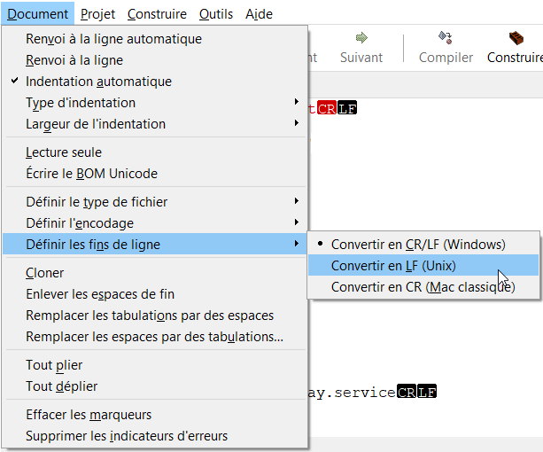
Réponse détaillée
Les fins de lignes sont marquées de façon différente sous Windows et sous macOS ou Linux.
Windows utilise deux caractères pour marquer les fins de lignes : retour de chariot (Carridge Return ou CR) suivi de nouvelle ligne (Line Feed ou LF).
Sous Linux et sous macOS, les sauts de ligne sont encodés seulement avec LF (les anciennes versions de Mac utilisaient CR mais il y a longtemps que ce n'est plus le cas).
Lorsque vous travaillez sous Linux, l'utilisation d'un fichier avec des fins de ligne encodées avec CRLF peut causer toutes sortes de problèmes.
Par exemple, si vous tentez d'exécuter un fichier bash avec un encodage de fins de ligne à la Windows, vous pourriez obtenir le message suivant :
Résultat à l'écran
/bin/bash^M: bad interpreter: No such file or directory
Vérifier les caractères de fin de ligne
Les techniques pour vérifier quels caractères de fin de ligne sont utilisés dépendent de votre système d'exploitation.
Windows, macOS ou Linux avec Geany
Avec l'éditeur Geany, vous pouvez aller dans le menu / / / . Cochez .
Vous verrez ceci :

macOS ou Linux en ligne de commande
Pour vérifier quels caractères sont utilisés pour marquer les fins de ligne, vous pouvez utiliser la commande file sur un système Linux ou macOS.
Terminal
file monfichier.sh
Si le fichier utiliser CRLF, vous obtiendrez un résultat semblable à ceci :
Résultat à l'écran
monfichier.sh: Bourne-Again shell script, UTF-8 Unicode text executable, with CRLF line terminators
Dans le cas où les fins de ligne sont correctement encodées avec LF, vous obtiendrez plutôt ceci :
Résultat à l'écran
monfichier.sh: Bourne-Again shell script, UTF-8 Unicode text executable
La commande cat avec l'option -v vous permettra de voir les caractères de fins de ligne mal encodés. Cette commande fonctionne sous macOS ou Linux.
Terminal
cat -v monfichier.sh
Si une fin de ligne est marquée par CRLF, elle apparaîtra sous la forme ^M.
Résultat à l'écran
#!/bin/bash^M
Convertir les caractères de fins de ligne
Geany peut convertir les caractères de fins de ligne selon vos préférences.
Ici encore, les techniques disponibles dépendent de votre système d'exploitation.
Window, macOS ou Linux avec Geany
Sous Windows, macOS ou Linux, rendez-vous dans le menu / et choisissez l'option qui vous convient.
macOS ou Linux en ligne de commande
Sous macOS ou Linux, plusieurs utilitaires en ligne de commande permettent également d'effectuer la conversion.
Par exemple, vous pouvez entrer cette commande pour convertir les sauts de ligne CRLF en LF.
Prenez soin d'ajuster la commande : changez fichierCRLF.sh pour le nom du fichier original et fichierLF.sh pour le nom du fichier converti.
Terminal
perl -pe 's/\r$//g' < fichierCRLF.sh > fichierLF.sh
3.10 Nmap
Nmap (Network mapper) est un petit utilitaire gratuit qui permet notamment de balayer une plage d'adresses IP afin de trouver l'adresse d'un périphérique branché au réseau et de connaître les ports ouverts (en anglais : port scanning).
Il fonctionne sous Linux, MacOS ou Windows.
Les gestionnaires de réseau s'en servent pour sonder leur réseau.
Vous pouvez vous aussi l'utiliser pour effectuer un balayage sur votre réseau à la maison.
Mais attention : si vous l'utilisez sur un réseau public ou sur le réseau d'une entreprise, ceci peut vous attirer des problèmes légaux, tel que spécifié sur le site de Nmap1 :
When used properly, Nmap helps protect your network from invaders. But when used improperly, Nmap can (in rare cases) get you sued, fired, expelled, jailed, or banned by your ISP.
Installation
Pour installer Nmap, vous pouvez télécharger la version qui correspond à votre système d'exploitation ici : https://nmap.org/download.html ou encore utiliser la ligne de commande.
Sous MacOS :
Terminal
brew install nmap
Sous Linux Ubuntu :
Terminal
sudo apt-get install nmap
Trouver l'adresse IP d'un périphérique
Pour trouver les adresses IP utilisées dans le sous-réseau 192.168.1, entrez cette commande :
Terminal
nmap -T4 192.168.1.1-255
Dans le résultat obtenu à l'écran présenté plus bas, on voit que dans la plage d'adresses 192.168.1.1 à 192.168.1.255, plusieurs adresses IP sont utilisées.
192.168.1.1 est l'adresse locale du routeur (default gateway). Une autre des adresses correspond à l'ordinateur que vous utilisez.
Si vous recherchez l'adresse IP d'un Raspberry Pi, il reste à tenter de vous [apical_lien_interne][se_brancher_au_raspberry_pi_via_ssh,connecter via SSH][/apical_lien_interne] avec les autres adresses pour trouver laquelle correspond au Pi (je parierais sur l'adresse qui a un port ouvert pour le service ssh ou celle qui indique clairement le nom du Raspberry Pi mais ces informations ne sont pas toujours affichées).
Résultat à l'écran
MBPdeMonNom:~ monnom$ nmap -T4 192.168.1.1-255
Starting Nmap 7.91 ( https://nmap.org ) at 2020-12-09 12:19 EST
Nmap scan report for 192.168.1.1
Host is up (0.0067s latency).
Not shown: 992 closed ports
PORT STATE SERVICE
53/tcp open domain
80/tcp open http
443/tcp open https
2002/tcp filtered globe
5000/tcp open upnp
9100/tcp open jetdirect
49152/tcp open unknown
49153/tcp open unknown
Nmap scan report for 192.168.1.103
Host is up (0.0070s latency).
All 1000 scanned ports on 192.168.1.103 are closed
Nmap scan report for 192.168.1.116
Host is up (0.0087s latency).
Not shown: 999 closed ports
PORT STATE SERVICE
6668/tcp open irc
Nmap scan report for 192.168.1.126
Host is up (0.023s latency).
Not shown: 658 closed ports, 337 filtered ports
PORT STATE SERVICE
3689/tcp open rendezvous
5000/tcp open upnp
7000/tcp open afs3-fileserver
7100/tcp open font-service
62078/tcp open iphone-sync
Nmap scan report for 192.168.1.130
Host is up (0.020s latency).
Not shown: 998 closed ports
PORT STATE SERVICE
111/tcp filtered rpcbind
62078/tcp open iphone-sync
Nmap scan report for MBPdeMonNom (192.168.1.131)
Host is up (0.00049s latency).
Not shown: 993 closed ports
PORT STATE SERVICE
80/tcp open http
88/tcp open kerberos-sec
443/tcp open https
445/tcp open microsoft-ds
2200/tcp open ici
3306/tcp open mysql
8000/tcp open http-alt
Nmap scan report for 192.168.1.134
Host is up (0.0064s latency).
Not shown: 999 closed ports
PORT STATE SERVICE
62078/tcp open iphone-sync
Nmap scan report for 192.168.1.140
Host is up (0.011s latency).
Not shown: 997 closed ports
PORT STATE SERVICE
53/tcp open domain
80/tcp open http
49152/tcp open unknown
Nmap scan report for raspberrypi (192.168.1.165)
Host is up (0.0100s latency).
Not shown: 998 closed ports
PORT STATE SERVICE
22/tcp open ssh
80/tcp open http
Nmap scan report for 192.168.1.198
Host is up (0.013s latency).
Not shown: 999 closed ports
PORT STATE SERVICE
9080/tcp filtered glrpc
Nmap done: 255 IP addresses (10 hosts up) scanned in 35.67 seconds
Source
1. « Legal Issues ». Nmap. https://nmap.org/book/legal-issues.html
Pour plus d'information
« A Quick Port Scanning Tutorial ». Nmap. https://nmap.org/book/port-scanning-tutorial.html
3.11 Commandes réseau (ifconfig)
La commande ifconfig permet d'obtenir de l'information sur les configurations réseau et, optionnellement, de les modifier.
La première fois que vous lancez cette commande, il se peut que vous obteniez le message « -bash: ifconfig: command not found ». Pour régler le problème, vous devez lancer cette commande :
Terminal
sudo apt install net-tools
Après cela, la commande sera reconnue.
Informations sur le réseau
Pour connaître les configurations réseau, notamment l'adresse IP de l'ordinateur, lancez la commande ifconfig sans aucun paramètre :
Terminal
ifconfig
Résultat à l'écran
pi@raspberrypi:~ $ ifconfig
eth0: flags=4163<UP,BROADCAST,RUNNING,MULTICAST> mtu 1500
inet 209.197.21.136 netmask 255.255.255.0 broadcast 209.197.21.255
inet6 ff80::688d:633f:1aa9:9c99 prefixlen 64 scopeid 0x20<link>
ether b9:29:ee:b9:dd:a9 txqueuelen 1000 (Ethernet)
RX packets 3396 bytes 276824 (270.3 KiB)
RX errors 0 dropped 0 overruns 0 frame 0
TX packets 92 bytes 10453 (10.2 KiB)
TX errors 0 dropped 0 overruns 0 carrier 0 collisions 0
lo: flags=73<UP,LOOPBACK,RUNNING> mtu 65536
inet 127.0.0.1 netmask 255.0.0.0
inet6 ::1 prefixlen 128 scopeid 0x10<host>
loop txqueuelen 1000 (Local Loopback)
RX packets 0 bytes 0 (0.0 B)
RX errors 0 dropped 0 overruns 0 frame 0
TX packets 0 bytes 0 (0.0 B)
TX errors 0 dropped 0 overruns 0 carrier 0 collisions 0
wlan0: flags=4163<UP,BROADCAST,RUNNING,MULTICAST> mtu 1500
inet 192.168.1.145 netmask 255.255.255.240 broadcast 192.168.1.255
inet6 2609:b109:d39:f46c:9619:5ede:b859:83e9 prefixlen 64 scopeid 0x0<global>
inet6 fe89::88f9:1cb9:893b:39c9 prefixlen 64 scopeid 0x20<link>
ether b9:29:ee:e9:89:f9 txqueuelen 1000 (Ethernet)
RX packets 309 bytes 266742 (260.4 KiB)
RX errors 0 dropped 0 overruns 0 frame 0
TX packets 243 bytes 30961 (30.2 KiB)
TX errors 0 dropped 0 overruns 0 carrier 0 collisions 0
Se déconnecter du réseau sans fil
Il est possible d'empêcher les connections Wi-Fi sans devoir modifier les configurations ni redémarrer le Pi.
Terminal
sudo ifconfig wlan0 down
Et pour recommencer à utiliser le Wi-Fi :
Terminal
sudo ifconfig wlan0 up
3.12 Copier une image du système d'exploitation sur une carte microSD (flasher)
Un fichier image permet d'installer sur une carte microSD un système d'exploitation ainsi que des configurations et logiciels prédéfinis. On dira flasher l'image sur la carte.
Peu importe la technique utilisée, tout ce qui se trouvait sur la carte sera écrasé par l'image.
Je vous propose trois techniques pour y arriver :
- Avec Raspberry Pi Imager
- À la ligne de commande (Mac et Linux seulement)
- Avec Etcher
Raspberry Pi Imager
Raspberry Pi Imager est généralement utilisé pour flasher sur une carte le système d'exploitation Raspberry Pi OS. Ce petit utilitaire permet également de flasher n'importe quelle image sur une carte.
De plus, il offre la possibilité d'exécuter quelques configurations directement sur le système Linux qu'il s'apprête à copier. Intéressant!
L'outil peut être installé sur un système Windows, Mac ou Linux.
Pour installer Raspberry Pi Imager sur votre poste de travail, téléchargez-le à partir d'ici : https://www.raspberrypi.org/downloads/.
Une fois installé, lancez-le. Vous obtiendrez cet écran d'accueil.
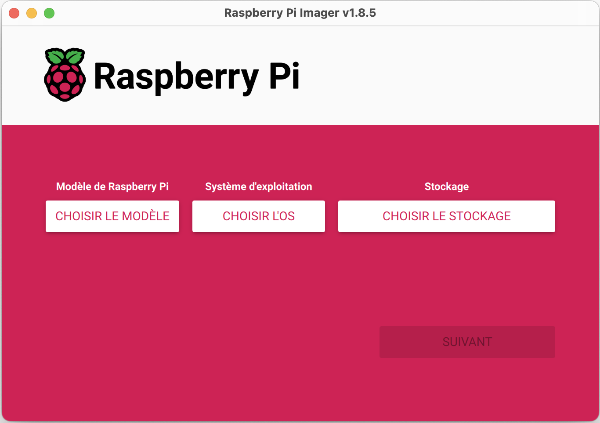
Ici, vous n'avez pas besoin de cliquer sur .
Cliquez sur pour choisir le système d'exploitation à installer.
Sélectionnez (Use custom) afin de pouvoir sélectionner une image sur votre poste de travail.
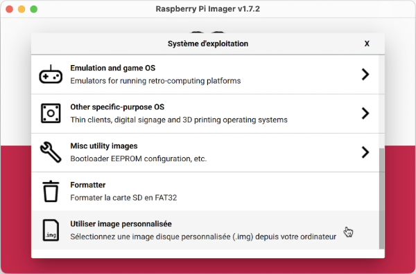
Retrouvez l'image que vous désirez flasher sur la carte. Raspberry Pi Imager est capable de travailler avec un fichier .zip donc inutile de le décompresser.
Cliquez sur pour sélectionner votre carte micro SD.
Cliquez ensuite sur .
Depuis la version 1.6 de Raspberry Pi Imager, il est possible d'effectuer automatiquement certaines configurations sur le système Linux que l'outil s'apprête à copier sur la carte. Cliquez sur le bouton lorsqu'il vous est proposé puis remplissez les configurations souhaitées.
Cliquez maintenant sur . Dans l'écran suivant, cliquez sur pour que les réglages soient utilisés.
L'image sera installée sur votre carte micro SD.
À la ligne de commande
Si vous travaillez sur un ordinateur Mac, l'image peut être flashée à l'aide de la commande dd (Disk Duplicator) sans avoir à faire d'installation supplémentaire.
Si l'image est contenue dans un fichier .zip, il faut d'abord décompresser ce fichier. On obtiendra alors un fichier .img.
Vous aurez besoin de connaître le point de montage de la carte micro SD. L'information peut être trouvée à l'aide de cette commande :
Terminal
diskutil list
Résultat à l'écran
monnom@MacBook-Pro-de-MonNom ~ %diskutil list
/dev/disk0 (internal, physical):
...
/dev/disk1 (synthesized):
...
/dev/disk2 (external, physical):
#: TYPE NAME SIZE IDENTIFIER
0: FDisk_partition_scheme *31.9 GB disk2
1: Windows_FAT_32 boot 268.4 MB disk2s1
2: Linux 31.6 GB disk2s2
On voit ici que le point de montage est disk2 puisqu'il s'agit d'un périphérique externe dont la capacité correspond à la carte.
Pour lancer la copie, utilisez ces commandes.
Prenez soin d'ajuster le nom du fichier .img et de remplacer le N par le chiffre qui correspond au point de montage.
Terminal
diskutil unmountDisk /dev/diskN
sudo dd bs=1m if=chemin/nom-du-fichier.img of=/dev/rdiskN conv=sync
Note : sous Mac, pour copier facilement le chemin du fichier .img, vous pouvez utiliser cette technique : [apical_lien_interne]copier_le_chemin_d_un_fichier[/apical_lien_interne].
Si vous voulez en savoir plus, les instructions détaillées sur la commande dd sont données ici : [apical_lien_interne]copie_integrale_d_un_disque_avec_la_commande_dd[/apical_lien_interne].
Etcher
Il existe de nombreux autres utilitaires pour flasher l'image sur la carte, par exemple Etcher. Cet utilitaire peut être utilisé sous Windows, Mac ou Linux.
Pour plus d'information
« 6 Best Raspberry Pi Imager Options and My Surprise Top Pick ». Smart Home Beginner. https://www.smarthomebeginner.com/best-raspberry-pi-imager/
3.13 Ajuster la date et l'heure sous Linux
Le travail sous Linux sera plus facile si la date et l'heure correspondent à votre réalité.
De plus, une mauvaise configuration de la date pourrait mener à toutes sortes de problèmes, par exemple des certificats SSL considérés invalides, ce qui empêche l'installation de certains logiciels ou paquets.
Dans cette fiche :
Informations actuelles
Pour voir les configurations actuelles de l'horloge, vous pouvez travailler avec la commande date.
Commande Linux
date
Vous obtiendrez un résultat du genre :
Résultat à l'écran
vendredi 3 décembre 2021, 08:53:09 (UTC-0500)
Pour obtenir plus d'informations, il est possible de travailler avec timedatectl.
Commande Linux
timedatectl
Vous obtiendrez un résultat du genre :
Résultat à l'écran
Local time: ven 2021-12-03 08:53:23 EST
Universal time: ven 2021-12-03 13:53:23 UTC
RTC time: n/a
Time zone: America/Toronto (EST, -0500)
Network time on: yes
NTP synchronized: no
RTC in local TZ: no
Ajuster la date - réponse courte
La date et l'heure du système peuvent être ajustés comme suit :
Terminal
sudo timedatectl set-time 'AAAA-MM-JJ HH:mm:ss'
ou encore :
Terminal
sudo date -s "AAAA-MM-JJ HH:mm:ss"
Ajuster la date - réponse plus élaborée
Les commandes précédentes ne fonctionnent pas ou vous désirez modifier également le fuseau horaire ou simplement vous désirez en savoir plus?
Cette section est pour vous!
Ajuster le fuseau horaire
Pour configurer le fuseau horaire, vous devez d'abord connaître les fuseaux existants.
Commande Linux
timedatectl list-timezones
Vous devez également connaître le fuseau actuellement configuré.
Ceci peut être réalisé à l'aide de timedatectl comme démontré plus haut ou encore à l'aide d'une de ces techniques qui donnent des informations complémentaires.
Commande Linux
cat /etc/timezone
Résultat à l'écran
America/Toronto
ou, si la variable d'environnement TZ existe :
Terminal
echo $TZ
Résultat à l'écran
America/Toronto
ou
Commande Linux
date +"%Z %z"
Résultat à l'écran
EST -0500
timedatectl
Il est possible de modifier le fuseau horaire directement à l'aide de la commande timedatectl :
Commande Linux
sudo timedatectl set-timezone America/Toronto
tzdata
Vous pouvez également configurer le fuseau horaire à l'aide de tzdata.
Le programme vous demandera votre emplacement et votre fuseau horaire puis ajustera automatiquement l'horloge pour vous.
Commande Linux
sudo dpkg-reconfigure tzdata
lien symbolique
Dans le système de fichiers, le fuseau horaire est configuré à l'aide d'un lien symbolique qui pointe vers le fichier du fuseau horaire souhaité.
Pour connaître la configuration actuelle :
Terminal
ls -l /etc/localtime
Résultat à l'écran
lrwxrwxrwx 1 root root 27 déc 3 09:07 /etc/localtime -> /usr/share/zoneinfo/Etc/UTC
Pour modifier ce lien :
Commande Linux
sudo ln -sf /usr/share/zoneinfo/America/Toronto /etc/localtime
Maintenant, vous obtiendrez ceci :
Résultat à l'écran
pi@raspberrypi:/usr/share/zoneinfo $ ls -l /etc/localtime
lrwxrwxrwx 1 root root 35 déc 3 09:13 /etc/localtime -> /usr/share/zoneinfo/America/Toronto
export
Le fuseau horaire peut également être obtenu en questionnant la variable d'environnement TZ, tel que démontré plus tôt.
Il est possible de modifier cette variable comme ceci. Notez que cette modification ne sera pas permanente sauf si vous entrez cette commande dans le fichier ~/.bashrc ou, plus globalement, dans le fichier /etc/environment.
Attention : cette technique a une portée plus réduite que les précédentes puisqu'elle n'affectera pas le lien symbolique. La commande date donnera le bon fuseau horaire mais avec timedatectl, le fuseau horaire demeurera inchangé.
Commande Linux
export TZ=America/Toronto
Ajuster la date et l'heure
Si, une fois le fuseau horaire ajusté, la date et/ou l'heure ne correspondent pas à la réalité, vous pouvez ajuster votre système à l'aide d'une de ces techniques.
date
Pour ajuster la date et l'heure avec la commande date :
Terminal
sudo date -s "AAAA-MM-JJ HH:mm:ss"
timedatectl
Le même résultat peut être obtenu à l'aide de timedatectl :
Terminal
sudo timedatectl set-time 'AAAA-MM-JJ HH:mm:ss'
Notez que si vous obtenez le message « Failed to set time: Automatic time synchronization is enabled », vous devez désactiver le service NTP (Network Time Protocol) comme suit :
Terminal
sudo timedatectl set-ntp 0
Vous pourrez ensuite relancer la commande pour ajuster la date et l'heure.
Activer la synchronisation de l'horloge
Si, lorsque vous lancez la commande timedatectl, vous obtenez une ligne qui dit System clock synchronized: No, vous pouvez activer la synchronisation de l'horloge avec ces commandes :
Terminal
sudo apt install systemd-timesyncd
sudo timedatectl set-ntp true
Si vous ne parvenez pas à activer la synchronisation de l'horloge, vous pouvez rechercher une solution ici : https://askubuntu.com/questions/1046214/enable-system-clock-synchronization.
3.14 Éditeur nano
nano est un tout petit éditeur texte, souvent utilisé pour éditer des fichiers de configuration.
Il est installé par défaut sur la plupart des distributions Linux de même que sur MacOS.
Pour le lancer, il suffit d'entrer la commande nano suivie par le nom du fichier à éditer. Notez que le fichier sera créé s'il n'existait pas.
Terminal
nano monfichier.txt
Si le fichier n'est pas dans le dossier courant, il est possible d'entrer le chemin complet avant le nom du fichier.
Terminal
nano /chemin/monfichier.txt
Dans le cas d'un fichier qui est placé dans un dossier système, il faudra utiliser sudo pour avoir la permission de l'enregistrer une fois les modifications effectuées.
Terminal
sudo nano /etc/NetworkManager/system-connections/preconfigured.nmconnection
Il est possible de faire afficher le numéro de ligne et de colonne courants au bas de l'écran en ajoutant l'option -c.
Terminal
nano -c /chemin/monfichier.txt
Quand vous avez terminé d'éditer le fichier, appuyez sur Ctrl + X puis O (ou Y si votre OS est en anglais) pour enregistrer les modifications.
Quelques raccourcis-clavier utiles
Bien que nano soit un éditeur en ligne de commande, il vous offre plusieurs raccourcis-clavier pour effectuer les principales actions dont vous aurez besoin.
Les principaux raccourcis sont affichés au bas de la fenêtre.

Le symbole ^ placé devant un caractère indique qu'il faut appuyer sur la touche Ctrl (même sous Mac).
La lettre M placée devant un caractère indique qu'il faut appuyer sur la touche Alt ou Esc selon votre système.
Voici quelques raccourcis qui pourraient vous être utiles :
- Ctrl + G : afficher l'aide, avec notamment une liste de tous les raccourcis-clavier
- Ctrl + O : enregistrer sans sortir de Nano (c'est la lettre O et non le chiffre)
- Ctrl + X : sortir de nano (si des modifications sont en cours, il vous demandera si vous désirez enregistrer)
- Ctrl + K : effacer la ligne courante (Kut)
- Ctrl + _ : aller à une ligne et possiblement à une colonne donnée
- Ctrl + W : rechercher du texte
- Ctrl + \ : rechercher et remplacer
- Ctrl + C : afficher le numéro de ligne et de colonne du curseur
- Esc 6 : copier le texte sélectionné dans le presse-papier. Si aucun texte sélectionné, copie la ligne courante.
- Ctrl + U : coller le contenu du presse papier
- Esc D : compter le nombre de mots, de lignes et de caractères
- Esc U : défaire (undo)
- Esc E : rétablir (redo)
3.15 Éditeur vim
Dans cette fiche :
vim
vim, le successeur de vi, est un éditeur très ancien et très peu convivial mais très puissant. Tout utilisateur Linux doit en avoir une connaissance de base car il est profondément ancré dans le monde Linux. Il est encore, de nos jours, utilisé par la plupart des administrateurs de systèmes Linux.
Pour lancer cet éditeur, entrez la commande vim suivie du nom du fichier. Si aucun fichier ne correspond au nom demandé, un fichier vierge sera créé lorsque le travail sera enregistré.
Ex :
Commande Linux
vim nom_fichier
Mode commande vs mode insertion
vim fonctionne en deux modes :
- En mode d'insertion (ou d'entrée) : pour entrer du texte
- En mode commande : pour utiliser une commande dans le tableau qui suit
À son ouverture, vim vous place en mode commande. Pour passer d'un mode à l'autre :
- en mode commande : la lettre i ou la touche INSERT vous place en mode insertion
- en mode d'insertion : ESCAPE vous place en mode commande
Principales commandes
Voici quelques commandes utiles. Pour entrer ces commandes, vous devez d'abord vous placer en mode commande.
| Commande | Rôle |
|---|---|
| i (ou touche INSERT) | Passe en mode d'insertion |
| :w | Write : Sauvegarde les changements |
| :w nom | Sauvegarde en spécifiant le nom du fichier |
| :wq | Write and Quit : Sauvegarde et sort |
| :q! | Quit : Sort sans conserver les changements.
! = Aucun message d'avertissement |
| :q | Sort directement, si aucun changement n'a été effectué |
| :n ou nG | Se place sur la ligne n
Ex : :5 -> va à la ligne 5 |
| :set number | Affiche les numéros de lignes |
| :set nonu | Enlève l'affichage des numéros de lignes |
| :debut,fin s/chaîne_ori/chaine_modif/g
ou :debut,fin s/chaîne_ori/chaine_modif/c |
Remplace le texte globalement ou avec demande de confirmation
Aucun espace dans toute la commande Utiliser le signe $ pour représenter la dernière ligne du fichier Le s signifie Substitute Le g signifie Globalement Le c signifie Confirmation Ex: :1,$s/allo/salut/g -> remplace tous les allo par des salut |
| :!commande | Lance une commande au shell
Ex : :!date -> affiche la date du jour |
| :!lp nom_fichier | Imprime le fichier (il faut spécifier son nom puisqu'il s'agit d'une commande au shell) |
| Y | Y majuscule : Yank : copie une ligne |
| Y3Y | Copie 3 lignes |
| dd | Coupe une ligne |
| d3d | Coupe 3 lignes |
| dw | DeleteWord : Coupe un mot |
| D ou d$ | Coupe les caractères à partir du curseur jusqu'à la fin de la ligne |
| p | P minuscule : Paste : coller à la suite de la ligne du curseur ce qui a été coupé ou copié |
| P | P majuscule : Paste : coller avant la ligne du curseur ce qui a été coupé ou copié |
| u | Undo |
| / | Pour effectuer une recherche dans le texte (comme dans man)
n pour rechercher occurrence suivante N pour rechercher occurence précédente |
| :noh | No Highlight : Enlève l'affichage inverse vidéo dû à la précédente recherche |
| F1 ou :help | Aide (pour sortir de l'aide : :q)
L'aide obtenue par F1 sera différente de celle obtenue par :help |
| Ctrl+l | Ctrl + L minuscule : Réaffiche l'écran (enlève les messages d'erreur) |
| Ctrl+[ | Annule une commande partiellement formée |
| Ctrl+g | Affiche nom du fichier et position du curseur (Ctrl+l pour enlever l'affichage) |
| . | Répète la dernière opération |
| :flèche_haut | Historique des commandes |
Vous pouvez également copier un bloc de texte à l'aide des fonctionnalités standard du shell (prendre en bloc pour copier puis cliquer à l'aide du bouton du centre pour coller).
Pour plus de détails sur les commandes et le fonctionnement de vim :
Commande Linux
man vim
3.16 nmcli, l'outil en ligne de commande du NetworkManager
Network Manager est un outil de gestion de réseaux pour les systèmes Linux.
Il n'est pas installé par défaut sur toutes les saveurs Linux. Par exemple, il ne l'est pas sous [apical_lien_interne][installation_de_raspberry_pi_os,Raspberry Pi OS][/apical_lien_interne] mais il l'est sous [apical_lien_interne][installation_de_home_assistant_et_premier_acces,HassOS][/apical_lien_interne].
Lorsque Network Manager est installé, plusieurs opérations sur le réseau peuvent être réalisées dans une fenêtre Terminal grâce à la commande nmcli.
Je vous en présente ici quelques-unes.
| Commande | Utilité | Exemple | Résultat à l'écran |
|---|---|---|---|
|
nmcli general status |
Affiche l'état du réseau. |
nmcli general status |
STATE CONNECTIVITY WIFI-HW WIFI WWAN-HW WWAN |
|
nmcli device status ou nmcli device ou nmcli dev |
Affiche l'état des périphériques de réseau : eth0, wifi, docker0, hassio, dummy0, etc. |
nmcli dev |
DEVICE TYPE STATE CONNECTION |
|
nmcli device wifi |
Affiche l'état des réseaux Wi-Fi. |
IN-USE BSSID SSID MODE CHAN RATE SIGNAL BARS SECURITY 00:0C:E6:88:F6:23 MONRESEAU Infra 6 195 Mbit/s 64 *** -- 00:0C:E6:88:AC:A3 MONRESEAU Infra 11 195 Mbit/s 60 *** -- 00:0C:E6:88:F3:E3 MONRESEAU Infra 1 195 Mbit/s 40 ** -- 96:53:30:D3:02:D5 DIRECT-d5-HP M203 LaserJet Infra 6 130 Mbit/s 39 ** WPA2 00:0C:E6:88:F3:E2 -- Infra 1 195 Mbit/s 34 ** WPA2 802.1X |
|
|
nmcli device wifi show |
Affiche le SSID du réseau Wi-Fi actif ainsi que son mot de passe en clair. Un code QR permet à un appareil de se connecter à ce réseau (pas de code QR quand la commande est lancée via SSH). |
nmcli device wifi show |
SSID: ssid-du-reseau Security: WPA Password: mot-de-passe-en-clair |
|
nmcli radio |
Affiche le statut des interfaces radio Wi-Fi et WWAN (réseaux étendus sans fil ou, en anglais, Wireless Wide Area Network). |
nmcli radio |
WIFI-HW WIFI WWAN-HW WWAN |
|
nmcli con ou nmcli con show |
Affiche la liste des profils de connexion, dont leur nom qui est utilisé dans plusieurs commandes plus bas | nmcli con | NAME UUID TYPE DEVICE my-network a983c...829 ethernet eth0 hotspot 4deea...6ed wifi -- |
|
nmcli device wifi rescan |
Effectue une nouvelle recherche des réseaux Wi-Fi (n'affiche rien à l'écran, faire suivre de nmcli device wifi pour voir la nouvelle liste des réseaux connus). |
nmcli device wifi rescan nmcli device wifi |
|
|
nmcli device wifi connect |
Connecte le système à un réseau Wi-Fi à l'aide de son SSID et de son mot de passe. |
nmcli device wifi connect "ssid-du-reseau" password "mot-de-passe-en-clair" |
|
| nmcli con add | Crée un nouveau profil de connexion. |
nmcli con add type wifi con-name wifi-maison ssid "nom-du-reseau" OU nmcli con add type ethernet con-name cable-maison |
|
| nmcli con delete | Supprime un profil de connexion (supprime le fichier correspondant dans le dossier /etc/NetworkManager/system-connections). | nmcli con delete id "nom-du-profil" | |
|
nmcli con up profil-connexion |
Active une connexion à partir de son profil de connexion. | nmcli con up "nom-du-profil" | |
|
nmcli con down profil-connexion |
Désactive une connexion à partir de son profil de connexion. | nmcli con down "nom-du-profil" | |
|
nmcli network off |
Déconnecte le système de tous les réseaux. | nmmcli network off | |
|
nmcli network on |
Reconnecte le système à tous les réseaux. |
nmcli network on | |
|
nmcli con edit profil-connexion |
Édite un profil de connexion dont le fichier est présent dans le dossier /etc/NetworkManager/system-connections. |
nmcli con edit my-network | nmcli> set ipv4.addresses 192.168.1.145/24 Do you also want to set 'ipv4.method' to 'manual'? [yes]: yes nmcli> set ipv4.dns xxx.xxx.xxx.xxx nmcli> set ipv4.gateway 192.168.1.1 nmcli> save Connection 'my-network (a983c9da...) successfully updated. nmcli> quit |
|
nmcli con reload |
Recharge les configurations réseau à partir des fichiers présents dans le dossier /etc/NetworkManager/system-connections. | nmcli con reload | |
|
nmcli con show profil-connexion |
Affiche le profil de connexion, notamment l'adresse IP. | nmcli con show my-network | connection.id: my-network connection.uuid: a983c9d... connection.stable-id: -- connection.type: 802-3-ethernet connection.interface-name: -- connection.autoconnect: yes connection.autoconnect-priority: 0 connection.autoconnect-retries: -1 (default) connection.multi-connect: 0 (default) connection.auth-retries: -1 connection.timestamp: 1634654402 connection.read-only: no connection.permissions: -- connection.zone: -- connection.master: -- connection.slave-type: -- connection.autoconnect-slaves: -1 (default) connection.secondaries: -- connection.gateway-ping-timeout: 0 connection.metered: unknown connection.lldp: default connection.mdns: -1 (default) connection.llmnr: -1 (default) connection.wait-device-timeout: -1 802-3-ethernet.port: -- ... ipv4.method: auto ipv4.dns: 8.8.8.8,8.8.4.4 ... GENERAL.NAME: my-network GENERAL.UUID: a983c9da... GENERAL.DEVICES: eth0 ... IP4.ADDRESS[1]: 192.168.1.145/24 IP4.GATEWAY: 192.168.1.1 ... |
Pour plus d'information
« Utiliser l'outil de ligne de commande du NetworkManager, nmcli ». RedHat. https://access.redhat.com/documentation/fr-fr/red_hat_enterprise_linux/7/html/networking_guide/sec-using_the_networkmanager_command_line_tool_nmcli
« nmcli - Man Page ». ManKier. https://www.mankier.com/1/nmcli
« nmcli - examples - Man Page ». Mankier. https://www.mankier.com/7/nmcli-examples
« Gestion du réseau Linux avec NetworkManager ». François Goffinet. https://linux.goffinet.org/administration/configuration-du-reseau/gestion-du-reseau-linux-avec-networkmanager/
« nmcli ». Gnome Developer. https://developer-old.gnome.org/NetworkManager/stable/nmcli.html
« nmcli-examples ». Gnome Developer. https://developer-old.gnome.org/NetworkManager/stable/nmcli-examples.html
3.17 systemctl
Sous Linux, la commande systemctl permet d'effectuer différentes vérifications et configurations sur le gestionnaire de services systemd.
Voici quelques commandes utiles.
| Commande | Utilité | Résultat à l'écran |
|---|---|---|
| systemctl restart NetworkManager | Redémarrer le service de réseau |
|
| systemctl list-unit-files | grep NetworkManager | Vérifier l'état des services de réseau |
NetworkManager-dispatcher.service enabled enabled |
| systemctl --system daemon-reload | Recharger toutes les configurations de systemd, sans redémarrer les services |
|
| systemctl restart hassos-supervisor | Sous Home Assistant, redémarrer le superviseur de hassos |
|
4. Raspberry Pi
4.1 Bien traiter son Raspberry Pi :-)
Le Raspberry Pi est un petit ordinateur alors certaines précautions s'imposent quand on le manipule.
Boîtier
Le Raspberry Pi doit être fixé dans un boîtier. Ceci le protégera des chocs et de la poussière en plus de vous aider à ne pas mettre vos doigts sur ses composantes électronique.
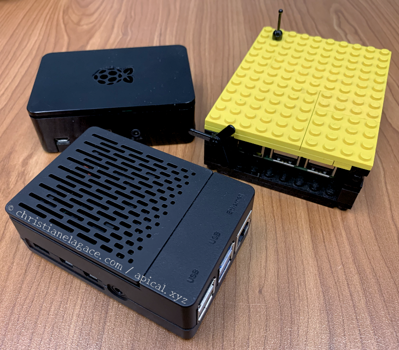
Dissipateurs thermiques
Il pourrait arriver que le Pi chauffe. Assurez-vous que des dissipateurs thermiques (heatsink) soient collés aux endroits appropriés. Généralement, on en place un sur le processeur, un sur la mémoire vive, un sur le contrôleur Ethernet et un autre sur le contrôleur USB.
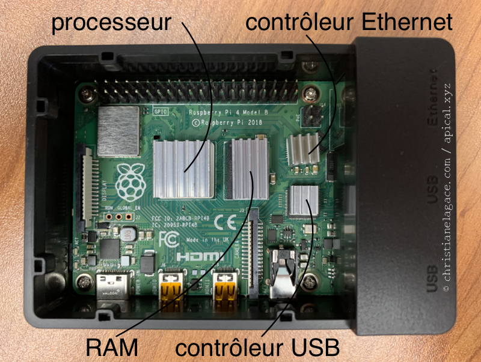
Ventilateur
Il est intéressant d'ajouter un ventilateur si le boîtier le permet.
Pour que le ventilateur fonctionne à bas régime, il faut brancher le fil rouge sur la broche 3.3V ([apical_lien_interne][qu_est-ce_que_le_gpio,broche physique no 1,pinout][/apical_lien_interne]) et le fil noir sur une des broches de mise à terre (broche no 6, 9, 14, 20, 25, 30, 34 ou 39).
Notez que pour que le ventilateur tourne plus vite, il suffit de brancher le fil rouge sur une broche 5V (broche no 2 ou 4).

Dans le cas où le ventilateur comporte un troisième fil, généralement bleu, ce fil doit être branché sur la broche TXD (no 8).
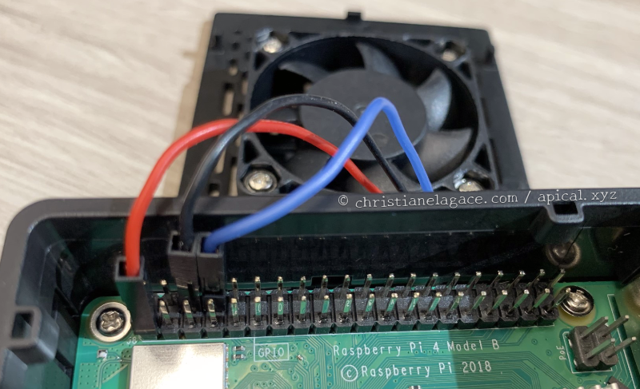
Câble du bloc d'alimentation
Évitez d'enrouler le fil du bloc d'alimentation alentour du bloc. Ceci accélère son usure et risque de casser plus rapidement les petits fils qui sont à l'intérieur.

En effet, à force de l'enrouler et de le dérouler, le fil devient complètement tordu.

Il est préférable de replier le fil sur lui-même, quitte à terminer par un tour ou deux.
Manipulation de la carte micro SD
Lors du retrait de la carte micro SD, tirez-la horizontalement. Si vous tentez de la tirer verticalement, vous risquez d'endommager l'unité dans laquelle la carte est insérée.

Branchements au GPIO
Lorsque vous effectuez des branchements au GPIO, assurez-vous que le Pi ne soit pas sous tension.
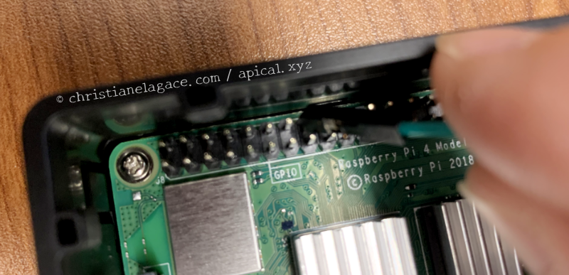
Arrêt du système d'exploitation
Assurez-vous d'[apical_lien_interne][Eteindre_un_systeme_linux_de_facon_securitaire,éteindre le système de façon sécuritaire][/apical_lien_interne] avant de débrancher le Raspberry Pi.


4.2 Raspberry Pi Imager
Si vous souhaitez installer un système Linux sur un Raspberry Pi, l'outil Raspberry Pi Imager est votre ami!
Il s'agit d'un petit utilitaire que vous installez sur votre poste de travail et qui permet d'installer sur une carte micro SD la toute dernière version du système d'exploitation choisi.
Notez que si vous préférez installer Raspberry Pi OS sans devoir installer un logiciel sur votre poste de travail, [apical_lien_interne][installation_de_raspberry_pi_os,il est possible de le faire manuellement][/apical_lien_interne] mais les étapes sont plus nombreuses.
L'outil peut être installé sur un système Windows, Mac ou Linux Ubuntu.
Pour installer Raspberry Pi Imager sur votre poste de travail, téléchargez-le à partir d'ici : https://www.raspberrypi.org/downloads/.
Une fois installé, lancez-le. Vous obtiendrez cet écran d'accueil.
Ciquez sur pour sélectionner votre modèle de Raspberry Pi.
Cliquez sur pour choisir le système d'exploitation à installer.
- Dans la plupart des cas, l'interface graphique n'est pas requise. Choisissez alors puis .
- Si vous avez besoin d'une version avec interface graphique, choisissez .
Remarque : Raspberry Pi OS (appelé autrefois Raspbian) est une version de Debian spécialement adaptée pour le Raspberry Pi.
Cliquez sur pour sélectionner votre carte micro SD.
Cliquez ensuite sur .
Depuis la version 1.6 de Raspberry Pi Imager, il est possible d'effectuer automatiquement certaines configurations sur le système Linux que l'outil s'apprête à copier sur la carte. Cliquez sur le bouton lorsqu'il vous est proposé puis remplissez les configurations souhaitées.
Parmi les configurations utiles, notons :
- le nom et le mot de passe de l'usager Linux
- l'activation SSH
- la configuration du réseau Wi-Fi
- la configuration du clavier (qwerty: us vs azerty: fr).


Cliquez maintenant sur . Dans l'écran suivant, cliquez sur pour que les réglages soient utilisés.
Le système d'exploitation sera installé sur votre carte micro SD.
Notez que vous pourriez avoir besoin du mot de passe d'un compte administrateur sur votre poste de travail pour y arriver.
Patientez, l'opération se déroule sur de nombreuses minutes.
Une fois l'écriture sur la carte terminée, [apical_lien_interne][retirer_un_disque_amovible_de_facon_securitaire,retirez la carte de l'ordinateur de façon sécuritaire][/apical_lien_interne], insérez-la dans le Pi puis démarrez ce dernier.
Et voilà!
4.3 Configurer le réseau sans fil sur Raspberry Pi OS
Plusieurs options vous permettent de connecter le Raspberry Pi à un réseau :
- câble RJ-45 (ethernet)
- réseau Wi-Fi régulier
- [apical_lien_interne][retrouver_le_nom_du_reseau_et_le_mot_de_passe_du_partage_de_connexion_ce___,partage de la connection cellulaire d'un téléphone ][/apical_lien_interne] (ausssi appelé hot spot ou Wi-Fi access point)
Lorsque vous travaillez avec un câble RJ-45, vous n'avez pas de configurations spécifique à faire. Le Pi saura trouver le réseau.
Les techniques que je vous propose ici vous permettront de connecter sans fil un Pi qui roule avec Raspberry Pi OS, soit avec le Wi-Fi ou avec le partage de connexion cellulaire.
Notez que pour une connexion Wi-Fi, le Raspberry Pi 3 ne supporte que le 2.4 GHz alors que le Raspberry Pi 4 supporte également le 5 GHz. Entrez vos configurations en conséquence!
Dans cette fiche :
- NetworkManager vs dhcpcd
- Configurer le réseau à l'aide de NetworkManager
- Vérifier les configurations réseau
NetworkManager vs dhcpcd
Depuis Raspberry Pi OS Bookworm (2023), la gestion du réseau est réalisée avec NetworkManager. Auparavant, elle était faite avec dhcpcd.
Pour vérifier si le système d'exploitation du Raspberry Pi utilise NetworkManager, entrez cette commande :
Terminal du Pi
nmcli device status
Résultat à l'écran
pi@raspberrypi:~ $ nmcli device status
DEVICE TYPE STATE CONNECTION
eth0 ethernet connected Wired connection 1
lo loopback connected (externally) lo
wlan0 wifi disconnected --
p2p-dev-wlan0 wifi-p2p disconnected --
Dans la colonne STATE, si vous voyez connected ou disconnected, c'est que l'OS utilise NetworkManager.
Si vous voyez plutôt unmanaged, ou encore si la commande nmcli n'est pas reconnue, c'est que l'OS utilise un auytre système pour gérer le réseau.
Si votre système n'utilise pas NetworkManager, référez-vous à la fiche « [apical_lien_interne]configurer_le_reseau_a_l_aide_de_dhcpcd[/apical_lien_interne] ».
Configurer le réseau à l'aide de NetworkManager
Je vous propose différentes techniques pour configurer le réseau à l'aide de NetworkManager.
Peu importe la technique choisie, vous devez démarrer le Pi puis accéder au Terminal à l'aide d'un écran ou via SSH.
Pour chaque configuration réseau, un fichier sera créé dans le dossier /etc/NetworkManager/system-connections.
Utilitaire nmtui
Il est possible d'effectuer les configurations réseau à l'aide de l'utilitaire nmtui (Network Manager Text UI).
Terminal
sudo nmtui
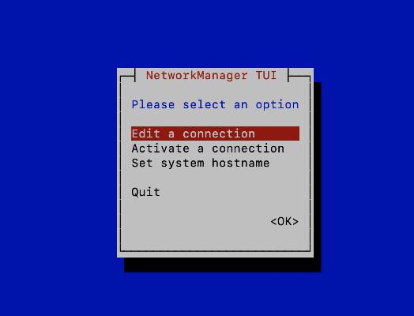
Si vous sélectionnez , l'utilitaire vous présentera les connexions existantes et vous offrira la possiblité d'en créer de nouvelles.
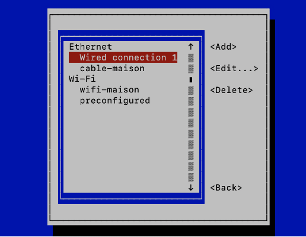
Sélectionnez la configuration réseau désirée ou sélectionnez puis pour créer une nouvelle connexion sans fil.
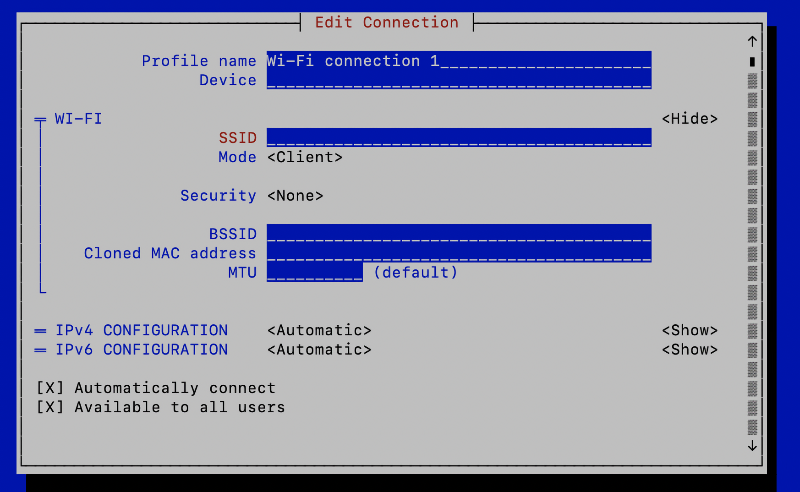
Informations à entrer :
- : vous pouvez donner le nom que vous désirez à votre configuration réseau.
- : vous pouvez laisser cette case à blanc. NetworkManager retrouvera automatiquement le nom du périphérique (pour une connexion Wi-Fi, c'est généralement wlan0).
- : entrer le nom de votre réseau.
- : il faut généralement sélectionner .
- : entrer le mot de passe du réseau.
Commande nmcli
Voici une seconde technique pour configurer le réseaau.
nmcli (Network Manager Command Line Interface) est l'interface en ligne de commande pour configurer le réseau à l'aide de NetworkManager.
Entrez ces commandes en modifiant le nom du réseau (ssid) et le mot de passe (psk). Ajustez également le nom de la connexion (dans l'exemple : wifi-maison) pour quelque-chose de significatif.
Terminal
nmcli con add type wifi con-name wifi-maison ssid "nom-du-reseau"
nmcli con modify wifi-maison wifi-sec.key-mgmt wpa-psk
nmcli con modify wifi-maison wifi-sec.psk mot-de-passe-en-clair
Crypter le mot de passe
Il est possible de modifier le fichier ainsi créé (/etc/NetworkManager/system-connections/wifi-maison.nmconnection) pour que le mot de passe y soit crypté.
Ceci est optionnel.
Pour convertir le mot de passe, utilisez le petit utilitaire wpa_passhprase à la ligne de commande.
Terminal
wpa_passphrase nom-du-reseau mot-de-passe-en-clair
Résultat à l'écran
pi@raspberrypi:~ $ wpa_passphrase nom-du-reseau mot-de-passe-en-clair
network={
ssid="nom-du-reseau"
#psk="mot-de-passe-en-clair"
psk=83205bec70146c3e7ee3915a11f565f18abef050e5d0262c0ac9bffb887acdbe
}
Il suffit d'éditer le fichier de configuration pour y copier le mot de passe crypté à la place du mot de passe en clair.
Configurer le réseau à l'aide de l'utilitaire raspi-config
L'utilitaire raspi-config permet lui aussi de configurer le réseau.
- Démarrez le Pi puis accédez au Terminal à l'aide d'un écran ou via SSH.
- Entrez la commande suivante :
Terminal
sudo raspi-config
- Dans le menu qui apparaît, choisissez (sur d'anciennes versions, il fallait choisir ).
- Choisissez ensuite (sur d'anciennes versions : ).
- Dans l'écran , entrez le nom du réseau.
- Entrez ensuite le mot de passe du réseau dans l'écran .
-
Choisissez pour sortir de raspi-config.
Vérifier les configurations réseau
Il faut toujours effectuer ces manipulations après avoir modifié les configurations réseau.
-
Redémarrez le Pi pour que les modifications soient effectives :
Terminalsudo reboot
- Vérifier sur quel réseau le Pi est connecté :
Terminal
iwgetid
Résultat à l'écranwlan0 ESSID:"nom-du-reseau"
- Avec NetworkManager, il est possible de vérifier l'état du réseau à l'aide de cette commande :
Terminal
nmcli general status
Résultat à l'écranSTATE CONNECTIVITY WIFI-HW WIFI WWAN-HW WWAN
connected full enabled enabled enabled enabled - Vérifiez maintenant que vous avez une adresse IP :
Terminal
hostname -I
- Si vous n'obtenez pas d'adresse IP après ces manipulations, essayez de vous brancher à un réseau 2.4 GHz. Parfois, même avec un Raspberry Pi 4, le 5 GHz ne fonctionne pas bien.
4.4 Retrouver le nom du réseau et le mot de passe du partage de connexion cellulaire
Le partage de la connection cellulaire d'un téléphone (ausssi appelé hot spot ou Wi-Fi access point) permet d'utiliser le réseau cellulaire d'un téléphone pour fournir le réseau à un ordinateur.
Si vous choisissez de travailler à partir d'un partage de connexion cellulaire, vous devrez retrouver le nom du réseau et son mot de passe.
Cette configuration n'est pas idéale mais elle est une bonne solution de dépannage si vous éprouvez des problèmes avec le réseau câblé ou Wi-Fi.
|
Sur iPhone, rendez-vous dans / . Le mot de passe est évident à trouver. Pour le nom du réseau, c'est celui qui est présenté entre guillemets français plus bas. |
Sur un téléphone Android, rendez-vous dans / / / . Le mot de passe sera visible quand vous cliquez sur la suite de points. |
|
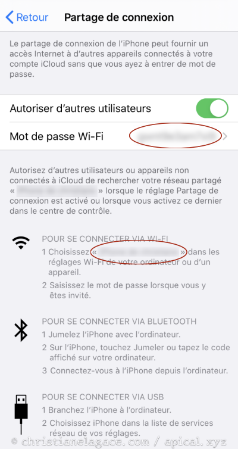 |
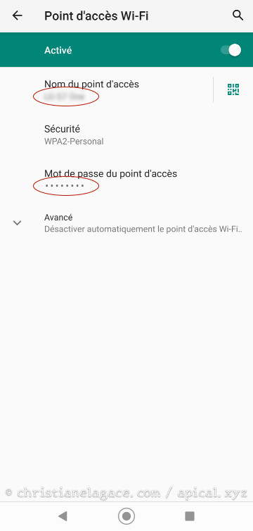 |
4.5 Trouver l'adresse IP du Raspberry Pi
Vous aurez besoin de l'adresse IP du Raspberry Pi pour effectuer différentes opérations.
Je vous présente ici différentes techniques pour retrouver cette adresse.
Avec écran et clavier
Pour connaître l'adresse IP d'un Pi muni d'un écran et d'un clavier, ouvrez une fenêtre Terminal sur le Pi et entrez-y la commande :
Terminal
hostname -I
Prenez soin d'utiliser un I majuscule. L'adresse IP apparaîtra directement en réponse à cette commande.
Résultat à l'écran
pi@raspberrypi:~ $ hostname -I
192.168.1.145
Si le Pi est branché à l'aide d'un câble RJ-45 et qu'il a en plus un accès Wi-Fi, vous obtiendrez deux adresses IP.
Selon les configurations de votre réseau, les deux adresses peuvent être dans le même masque de sous-réseau ou non.
Résultat à l'écran
pi@raspberrypi:~ $ hostname -I
192.168.1.145 192.168.1.219
Autre alternative pour trouver l'adresse IP :
Terminal
ip addr show
ou son raccourci :
Terminal
ip a
L'adresse IP du Pi se trouve vers la fin des informations affichées, dans la section qui débute par eth0 pour le réseau câblé ou wlan0 pour le sans fil, tout de suite après le mot inet
Résultat à l'écran
pi@raspberrypi:~ $ ip addr show
1: lo: <LOOPBACK,UP,LOWER_UP> mtu 65536 qdisc noqueue state UNKNOWN group default qlen 1000
link/loopback 00:00:00:00:00:00 brd 00:00:00:00:00:00
inet 127.0.0.1/8 scope host lo
valid_lft forever preferred_lft forever
inet6 ::1/128 scope host
valid_lft forever preferred_lft forever
2: eth0: <NO-CARRIER,BROADCAST,MULTICAST,UP> mtu 1500 qdisc pfifo_fast state DOWN group default qlen 1000
link/ether b8:27:eb:75:39:34 brd ff:ff:ff:ff:ff:ff
3: wlan0: <BROADCAST,MULTICAST,UP,LOWER_UP> mtu 1500 qdisc pfifo_fast state UP group default qlen 1000
link/ether b8:27:eb:20:6c:61 brd ff:ff:ff:ff:ff:ff
inet 192.168.1.145/24 brd 192.168.1.255 scope global dynamic noprefixroute wlan0
valid_lft 82089sec preferred_lft 71289sec
inet6 fe80::7fa0:10ff:f021:2519/64 scope link
valid_lft forever preferred_lft forever
Vous pouvez également demander la sortie abrégée de cette commande afin de retrouver l'information plus rapidement.
Terminal
ip --brief a
Résultat à l'écran
pi@raspberrypi: ~ $ ip --brief a
lo UNKNOWN 127.0.0.1/8 ::1/128
eth0 DOWN
wlan0 UP 192.168.1.145/24 fd80:7f28:f411:5847:9ccf/64
Headless
Si vous prévoyez accéder à votre Pi uniquement via SSH, vous n'avez pas besoin d'y brancher écran ni clavier. On dira que vous avez une installation headless.
À ce moment, il faudra vous tourner vers votre routeur pour connaître l'adresse IP du Pi. L'interface de gestion du routeur vous offre un écran dans lequel vous retrouverez l'adresse IP des périphériques branchés au routeur.
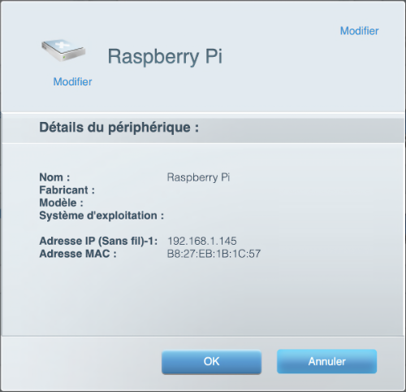
Vous n'avez pas accès au routeur? Il vous reste encore deux solutions :
- [apical_lien_interne][donner_une_adresse_ip_statique_au_raspberry_pi,Donner une adresse IP statique au Pi,microsddansordi][/apical_lien_interne].
ou
- Sur un réseau privé, utiliser [apical_lien_interne][nmap,Nmap][/apical_lien_interne] pour effectuer un balayage du réseau et ainsi trouver l'adresse IP du Raspberry Pi (risque de problèmes légaux sur un réseau public).
4.6 Afficher l'adresse IP du Pi à l'écran lors du démarrage
Par défaut, lorsque le Raspberry Pi démarre, son adresse IP apparaît à l'écran lors du démarrage.
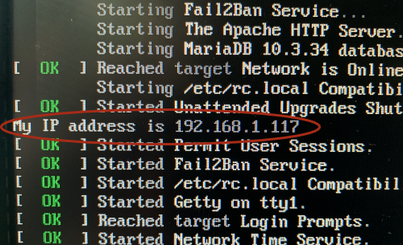
C'est le fichier /etc/rc.local qui est responsable de cet affichage.
Fichier /etc/rc.local
#!/bin/sh -e
#
# rc.local
#
# This script is executed at the end of each multiuser runlevel.
# Make sure that the script will "exit 0" on success or any other
# value on error.
#
# In order to enable or disable this script just change the execution
# bits.
#
# By default this script does nothing.
# Print the IP address
_IP=$(hostname -I) || true
if [ "$_IP" ]; then
printf "My IP address is %s\n" "$_IP"
fi
exit 0
Si l'adresse ne s'affiche pas, la cause la plus probable est qu'il n'y a pas de connexion au réseau.
4.7 Envoyer l'adresse IP par courriel après le démarrage du Raspberry Pi
Si vous travaillez avec votre Raspberry Pi sans y brancher un écran, il peut être difficile de connaître son adresse IP.
S'il a une [apical_lien_interne][donner_une_adresse_ip_statique_au_raspberry_pi,adresse IP statique][/apical_lien_interne], cette adresse sera toujours la même. Mais si c'est une adresse fournie par DHCP, elle pourrait être différente d'une fois à l'autre.
Ceci est encore plus vrai si vous utilisez votre Raspberry Pi à différents endroits, par exemple à l'école et à la maison.
Une solution intéressante pour trouver facilement l'adresse IP du Pi consiste à lancer un script Python au démarrage du Pi qui vous enverra cette adresse par courriel.
Pour réaliser cette manipulation, vous aurez besoin soit d'un clavier et d'un écran, soit de [apical_lien_interne][trouver_l_adresse_ip_du_raspberry_pi,connaître l'adresse IP initiale du Pi,headless][/apical_lien_interne].
L'idéal est d'effectuer l'envoi à partir d'un [apical_lien_interne][creer_une_adresse_de_courriel_avec_votre_nom_de_domaine,courriel que vous aurez créé chez un hébergeur Web][/apical_lien_interne] car l'envoi de courriel avec une adresse du type Gmail ne fonctionnera pas. Puisque le mot de passe de ce courriel sera écrit en clair dans le script, il est conseillé d'utilier un compte de courriel qui ne sert qu'à cette cause.
Voici le script Python que vous devez installer sur votre Raspberry Pi. J'ai choisi de le placer dans le dossier /home/pi et de le nommer envoyer_ip_courriel.py mais vous pouvez changer l'emplacement et le nom comme bon vous semble.
Si vous utilisez votre ordinateur pour créer le script, vous devrez le [apical_lien_interne][copier_un_fichier_sur_une_machine_linux_a_partir_d_un_autre_ordinateur,copier sur le Raspberry Pi,scp][/apical_lien_interne] avant de poursuivre.
Je me suis inspirée de ce script1, que j'ai simplifié puis adapté pour Python 3.
Fichier envoyer_ip_courriel.py
#!/usr/bin/env python3
Envoie l'adresse IP du Pi par courriel
Paramètres : aucun
Auteur : Christiane Lagacé
Inspiré de : https://www.reddit.com/r/raspberry_pi/comments/11p8xj/configure_your_pi_to_autoemail_its_ip_address_on/
et de https://realpython.com/python-send-email/
Date : 16 septembre 2022
Dernier ajustement : 12 août 2025
"""
import smtplib, ssl
import subprocess
from email.mime.text import MIMEText
from email.mime.multipart import MIMEMultipart
# *******************************************
# Configurations ****************************
# *******************************************
smtp_server = 'mail.mondomaine.com'
port = 587
sender_email = 'monnom@mondomaine.com'
password = 'mon_mot_de_passe'
receiver_email = 'unnom@undomaine.com'
# *******************************************
# Fin configurations ************************
# *******************************************
hostname = subprocess.getoutput('hostname') # Par défaut, on aura une chaîne du genre "raspberrypi"
try:
adresse_ip = subprocess.getoutput('hostname -I')
except Exception as e:
print(f"Exception: {e}")
adresse_ip = 'aucune'
message = MIMEMultipart()
message['From'] = sender_email
message['To'] = receiver_email
message['Subject'] = f'Adresse IP de {hostname}'
body = f"""Informations du Raspberry Pi:
Hostname: {hostname}
Adresse(s) IP: {adresse_ip}
"""
message.attach(MIMEText(body, 'plain', 'utf-8'))
# Envoyer le courriel
context = ssl.create_default_context()
try:
server = None
server = smtplib.SMTP(smtp_server,port)
server.ehlo() # Can be omitted
server.starttls(context=context) # Secure the connection
server.ehlo() # Can be omitted
server.login(sender_email, password)
server.sendmail(sender_email, receiver_email, message.as_string())
print(body)
print(f'Courriel envoyé à {receiver_email}')
except Exception as e:
print(e)
finally:
if server is not None:
server.quit()
Après avoir copié le script sur le Pi, prenez soin de vous assurer qu'il fonctionne correctement.
Terminal sur le Raspberry Pi
python3 ~/envoyer_ip_courriel.py
Une fois que vous êtes capables de recevoir l'adreses IP du Pi par courriel, vous pouvez automatiser le lancement du script au démarrage.
Pour y arriver, j'ai choisi de passer par la crontab.
Pour éditer le fichier cron :
Terminal sur le Raspberry Pi
crontab -e
Si on vous demande de choisir un éditeur, sélectionnez Nano.
Au bas du fichier, ajoutez cette ligne et assurez-vous de faire un retour de charriot à la fin de la ligne.
Si votre usager Linux ne s'appelle pas pi, corrigez la ligne en conséquence.
Fichier cron
@reboot sleep 10; bash -c '/usr/bin/python3 /home/pi/envoyer_ip_courriel.py > /home/pi/boot.log 2>&1' &
Cette instruction demande d'attendre 10 secondes avant de lancer le script afin de laisser le temps au Pi de se connecter au réseau. Si votre réseau est lent, vous pouvez modifier le nombre de secondes d'attente, par exemple pour 15.
De plus, la sortie du script Python sera inscrite dans le fichier /home/pi/boot.log. Si tout a fonctionné, l'adresse IP du Pi doit y figurer. Sinon, le fichier contiendra un message d'erreur qui pourra vous aider à corriger la situation.
Lors du redémarrage du Pi, vous devriez recevoir un courriel avec l'adresse IP du Raspberry Pi. Si vous ne le recevez pas, consultez le fichier /home/pi/boot.log. S'il ne contient aucune erreur, c'est peut-être parce qu'il y a un problème au niveau des configurations du courriel.
Source
1. « Configure your PI to auto-email its IP address on boot ». reddit. https://www.reddit.com/r/raspberry_pi/comments/11p8xj/configure_your_pi_to_autoemail_its_ip_address_on/
4.8 Vérifier l'état de la connexion sans fil
Une fois [apical_lien_interne][configurer_le_reseau_wi-fi_sur_le_raspberry_pi,la connexion au réseau configurée][/apical_lien_interne] et le Raspberry Pi redémarré, j'aime effectuer quelques commandes pour vérifier l'étant de ma connexion :
- Pour connaître l'adresse IP du Raspberry Pi (remarquez le I majuscule) :
Terminal du Raspberry Pi
hostname -I
- Pour connaître le nom du réseau sans fil sur lequel le Pi est branché :
Terminal du Raspberry Pi
iwgetid
- Pour vérifier si le Pi peut accéder au réseau :
Terminal du Raspberry Pi
ping 8.8.8.8
- Pour vérifier si le Pi a accès à un serveur DNS :
Terminal du Raspberry Pi
ping google.com
- Pour vérifier les serveurs DNS configurés :
Terminaldu Raspberry Pi
cat /etc/resolv.conf
Résultat à l'écran# Generated by NetworkManager
search mondomaine.loc
nameserver 999.999.999.999
nameserver 999.999.999.999 - Pour vérifier si la date du Pi est la bonne (pourrait empêcher l'installation de certains programmes) :
Terminal du Raspberry Pi
timedatectl
4.9 Donner une adresse IP statique au Raspberry Pi
Pour avoir un fonctionnement optimal, la boîte domotique, par exemple un Raspberry Pi, doit avoir une adresse IP statique (aussi appelée adresse IP fixe) dans le réseau.
Si la boîte domotique a une adresse IP dynamique fournie par un serveur DHCP, comme c'est le cas par défaut quand vous la branchez à votre réseau, cette adresse pourrait être appelée à changer. Une fois l'adresse changée, vous ne pourrez plus vous connecter à distance à moins d'avoir acccès au Raspberry Pi ou au routeur pour retrouver l'adresse IP.
Une adresse IP fixe permettra également de préserver le bon fonctionnement du système après un redémarrage du réseau (j'ai connu des problèmes de ce type avec mon Raspberry Pi de même qu'avec mes haut-parleurs Alexa, le tout a été réglé par des adresses IP statiques).
Dans cette fiche :
- Retrouver les serveurs de noms actuels
- Vérifier si votre système utilise NetworkManager
- Configurer l'adresse IP statique sur le Pi avec NetworkManager
- Configurer l'adresse IP statique en insérant la carte micro SD dans votre ordinateur
- Configurer l'adresse IP statique sur le routeur
- Vérifier si tout a fonctionné
Retrouver les serveurs de noms actuels
Lors de la configuration d'une adresse IP statique, vous aurez besoin d'entrer l'adresse IP des serveurs de noms de votre réseau.
Sous Windows, vous pouvez connaître les serveurs de noms actuellements utilisés pour votre ordinateur à l'aide de cette commande :
Terminal Windows
ipconfig /all
Résultat à l'écran
...
Adresse IPv4............: 192.168.1.145 (préféré)
...
Passerelle par défaut...: 192.168.1.1
Serveur DHCP............: 999.999.999.999
999.999.999.999
...
Vous pouvez également obtenir l'information comme suit :
Terminal Windows
Get-NetIPConfiguration
Résultat à l'écran
...
IPv4Address : 192.168.1.145
...
IPv4DefaultGateway : 192.168.1.1
DNSServer : 999.999.999.999
999.999.999.999
...
Sous Mac, vous pouvez connaître les serveurs de noms à l'aide de la commande :
Terminal Mac
scutil --dns
Résultat à l'écran
resolver #1
nameserver[0] : 999.999.999.999
nameserver[1] : 999.999.999.999
...
Et sous Linux :
Terminal Linux
cat /etc/resolv.conf
Résultat à l'écran
# Generated by NetworkManager
search mondomaine.loc
nameserver 999.999.999.999
nameserver 999.999.999.999
Vérifier si votre système utilise NetworkManager
Depuis Raspberry Pi OS Bookworm (2023), la gestion du réseau est réalisée avec NetworkManager. Auparavant, elle était faite avec dhcpcd.
Pour vérifier si le système d'exploitation du Raspberry Pi utilise NetworkManager, entrez cette commande :
Terminal du Pi
nmcli device status
Résultat à l'écran
pi@raspberrypi:~ $ nmcli device status
DEVICE TYPE STATE CONNECTION
eth0 ethernet connected Wired connection 1
lo loopback connected (externally) lo
wlan0 wifi disconnected --
p2p-dev-wlan0 wifi-p2p disconnected --
Dans la colonne STATE, si vous voyez connected ou disconnected, c'est que l'OS utilise NetworkManager.
Si vous voyez plutôt unmanaged, ou encore si la commande nmcli n'est pas reconnue, c'est que l'OS utilise un auytre système pour gérer le réseau.
Si votre système n'utilise pas NetworkManager, référez-vous à la fiche « [apical_lien_interne]configurer_l_adresse_ip_statique_du_raspberry_pi_avec_dhcpcd[/apical_lien_interne] ».
Configurer l'adresse IP statique sur le Pi avec NetworkManager
Avec NetworkManager, vous avez plusieurs options pour configurer une adresse IP statique. Choisissez l'option qui vous plait parmi :
Utilitaire nmtui
Il est possible d'effectuer les configurations réseau à l'aide de l'utilitaire nmtui (Network Manager Text UI).
Terminal
sudo nmtui
Si vous sélectionnez , l'utilitaire vous présentera les connexions existantes et vous offrira la possiblité d'en créer de nouvelles.
Pour donner une adresse IP statique à une configuration réseau, sélectionnez la configuration désirée puis modifiez la ligne pour Manual.
Sélectionnez ensuite .
Voici un exemple de configuration d'adresse IP statique pour Wired connection 1.
Vous pouvez laisser la case Device à blanc. NetworkManager retrouvera automatiquement le nom du périphérique selon le type de connexion (Ethernet -> généralement eth0, Wi-Fi -> généralement wlan0).
Référez-vous à la section sur nmcli pour les détails des autres informations à entrer.
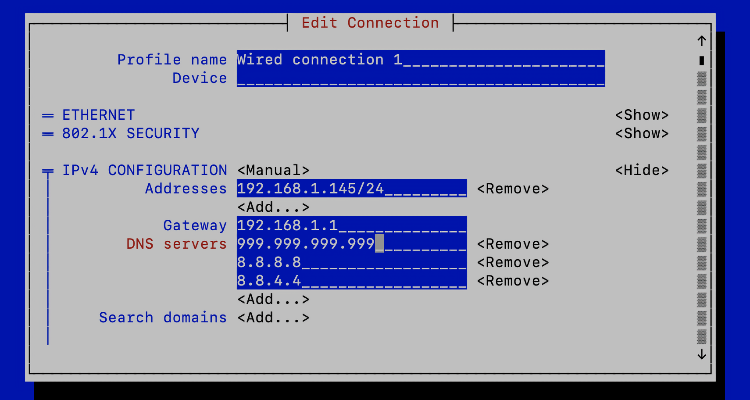
Commande nmcli
Si vous préférez, vous pouvez configurer une adresse IP statique à l'aide de la commande nmcli :
- : Entrez l'adresse IP statique suivie du masque de sous-réseau (dans l'exemple : /24 qui signifie que les 3 premiers octets sont le masque de sous-réseau).
- : Entrez l'adresse IP locale du routeur. Avec un masque de sous-réseau 24, on entre les 3 premiers nombres de l'adresse IP, suivis généralement par le chiffre 1 (dans l'exemple : 192.168.1.1).
- : Entrez l'adresse IP du ou des serveurs de noms de domaine (en anglais : nameserver, DNS) de votre réseau suivies de 8.8.8.8 et de 8.8.4.4 (serveurs DNS de Google). Remarquez qu'avec nmcli, les adresses DNS doivent être séparées par des virgules.
Terminal
sudo nmcli connection modify "Wired connection 1" \
pv4.method "manual" \
ipv4.addresses "192.168.1.145/24" \
ipv4.gateway "192.168.1.1" \
ipv4.dns "xxx.xxx.xxx.xxx,8.8.8.8,8.8.4.4"
Édition des fichiers de connexion
Voici une autre technique pour configurer une adresse IP statique.
Les informations sur les connexions sont enregistrées dans des fichiers dont l'extension est .nmconnection.
Il est possible d'éditer directement ces fichiers. Notez que cette technique est plus complexe que les précédentes.
Pour y arriver :
- Vérifiez quelles connexions réseau existent.
On voit ici qu'il y a une configuration pour le réseau câblé (ethernet) puis une configuration pour le Wi-Fi.Terminal
nmcli con show
Résultat à l'écranpi@raspberrypi:~ $ nmcli con show
NAME UUID TYPE DEVICE
Wired connection 1 25d6bfa8-6c8c-3f8f-be53-516bece110e9 ethernet eth0
lo cfbfab11-be1b-448d-846e-23608dd88ed9 loopback lo
preconfigured e8a78fe4-2969-4cd7-9b20-295f3f8bb529 wifi -- - Vérifiez quels fichiers de configuration existent.
Il pourrait y avoir plusieurs fichiers. Leur nom débutera par ce qui était dans la colonne NAME de la commande nmcli con show et se terminera par .nmconnection.Terminal
ls /etc/NetworkManager/system-connections
On voit ici que seule la connection Wi-Fi a un seul fichier de configuration.
Résultat à l'écranpi@raspberrypi:~ $ ls /etc/NetworkManager/system-connections
preconfigured.nmconnection - Si vous désirez éditer un fichier de configuration qui n'existe pas, vous devez le créer à l'aide de cette commande.
Remarquez que si le nom de la configuration comprend des espaces, il faut ajouter une barre oblique inverse devant chaque espace.
Terminalsudo nmcli connection modify Wired\ connection\ 1 connection.autoconnect yes
- Pour vous assurer que NetworkManager saura utiliser ce fichier pour configurer le réseau, entrez cette commande et assurez-vous que le chemin du fichier est /etc/NetworkManager/system-connection.
Terminal
nmcli -f NAME,UUID,FILENAME connection
Résultat à l'écranpi@raspberrypi:~ $ nmcli -f NAME,UUID,FILENAME connection
NAME UUID FILENAME
lo ee200fcc-dcb0-4976-a81d-65554b48c0b1 /run/NetworkManager/system-connections/lo.nmconnection
preconfigured a2aa2a5f-4bf6-46a0-9e40-fb70c86d610b /etc/NetworkManager/system-connections/preconfigured.nmconnection
Wired connection 1 05e42c99-0c51-3798-aae9-e0246598d0ae /etc/NetworkManager/system-connections/Wired connection 1.nmconnection - Éditez le fichier qui correspond à la connexion pour laquelle l'adresse IP statique doit être utiilsée. Rappel : le résultat de la commande nmcli con show fait le lien entre un nom de fichier et le type de réseau.
Terminal
sudo nano /etc/NetworkManager/system-connections/Wired\ connection\ 1.nmconnection
- Remplissez le fichier en respectant ces consignes :
- Section [connection] :
- : la valeur qui apparaît correspond au nom du fichier sans l'extension.
- : la valeur qui apparaît correspond à l'identificateur unique (Universally Unique IDentifier, UUID) qui apparaissait avec la commande nmcli con show.
- : ethernet ou wifi
- Section [wifi] (sans fil seulement) :
- : infrastructure
- : entrez le nom du réseau sans fil
- Section [wifi-security] (sans fil seulement) :
- : wpa-psk
- : entrer le mot de passe du réseau sans fil en clair. Notez que certains outils permettent de générer une version cryptée du mot de passe.
- Section [ipv4] :
- : Entrez l'adresse IP statique suivie du masque de sous-réseau suivi d'une virgule puis de l'adresse IP locale du routeur.
- : Entrez l'adresse IP du ou des serveurs de noms de domaine de votre réseau suivies de 8.8.8.8 et de 8.8.4.4 (serveurs DNS de Google) . Dans le fichier de configuration, les différentes adresses doivent être séparées par un point-virgule.
- : Entez manual pour indiquer que l'adresse iP est statique. La valeur auto serait utilisée pour une adresse DHCP.
- Section [connection] :
Exemple pour une connection câblée :
Fichier Wired connection 1.nmconnection
[connection]
id=Wired connection 1
uuid=25d6bfa8-6c8c-3f8f-be53-516bece110e9
type=ethernet
[ipv4]
address1=192.168.1.145/24,192.168.1.1
dns=xxx.xxx.xxx.xxx;8.8.8.8;8.8.4.4
method=manual
Exemple pour une connection Wi-Fi :
Fichier preconfigured.nmconnection
[connection]
id=preconfigured
uuid=e8a78fe4-2969-4cd7-9b20-295f3f8bb529
type=wifi
[wifi]
mode=infrastructure
ssid=xxxxxx
[wifi-security]
key-mgmt=wpa-psk
psk=xxxxxxxx
[ipv4]
address1=192.168.1.145/24,192.168.1.1
dns=xxx.xxx.xxx.xxx;8.8.8.8;8.8.4.4
method=manual
Pour enregistrer les modifications, appuyez sur Ctrl + X puis O (ou Y si votre OS est en anglais) pour enregistrer les modifications.
Redémarrez le Raspberry Pi.
Utiliser une adresse IP différente pour un autre réseau
Prenons le cas où vous utilisez un Raspberry Pi dans votre établissement scolaire puis vous le ramenez à votre domicile pour poursuivre vos travaux.
Il pourrait arriver que l'adresse IP statique utilisée à l'école ne soit pas compatible avec les configurations de votre réseau à la maison.
Ceci peut être géré en créant un fichier de configuration spécifique pour chaque environnement.
Au besoin, une configuraation pourrait avoir une adresse IP statique et l'autres, une adresse fournie par DHCP.
Pour créer un fichier de configuration, vous pouvez utiliser l'option puis dans l'utilitaire nmtui ou encore lancer cette commande en ajustant le nom de la connection (con-name) et le nom du réseau (ssid).
Terminal
sudo nmcli connection add type wifi con-name wifi-maison ssid "nom-du-reseau"
Pour un réseau câblé :
Terminal
sudo nmcli connection add type ethernet con-name cable-maison
Ceci créera un fichier wifi-maison.nmconnection ou cable-maison.nmconnection ou tout autre nom basé sur l'attribut con-name.
Peu importe dans quel dossier vous étiez lorsque vous avez passé la commande, le fichier sera créé dans le dossier /etc/NetworkManager/system-connections.
Vous pourrez ensuite compléter le fichier comme dans les exemples plus haut.
Activer une configuration pour se brancher à un réseau
Pour activer la configuration, vous pouvez utiliser l'option dans l'utilitaire nmtui ou encore entrer cette commande :
Terminal
sudo nmcli con up cable-maison
Attention : si vous avez deux fichiers qui donnent une adresse IP statique pour un réseau câblé, celui qui s'active par défaut pourrait être le dernier qui a été utilisé.
En effet, selon la documentation officielle de nm-settings-nmcli1 :
If multiple profiles are ready to autoconnect on the same device, the one with the better "connection.autoconnect-priority" is chosen. If the priorities are equal, then the most recently connected profile is activated. If the profiles were not connected earlier or their "connection.timestamp" is identical, the choice is undefined.
Il faut prendre certaines précautions lorsque les adresses IP des deux environnements sont incompatibles. Par exemple le format des adresses IP à l'école pourrait être 192.168.29.xxx et à la maison, 10.0.0.xxx.
Dans un tel cas, si la bonne configuration câblée n'est pas active lors du démarrage du Raspberry Pi, vous aurez besoin d'un écran et d'un clavier pour activer la configuration désirée puisque l'adresse IP active sera incompatible avec votre réseau, ce qui empêchera le branchement via SSH.
Par contre, pour une connexion Wi-Fi, c'est la connexion qui correspond au nom du réseau Wi-Fi disponible qui sera automatiquement activée. Vous pourrez donc vous brancher via SSH et donc, vous n'aurez pas besoin d'un écran ni d'un clavier à brancher au Raspberry Pi.
Revenir à une adresse IP fournie par DHCP
Si vous désirez modifier vos configurations pour revenir à une adresse IP fournie par le serveur DHCP, il suffit de modifier la ligne method dans la section [ipv4].
Fichier Fichier xxx.nmconnection
[ipv4]
method=auto
Lors du prochain redémarrage, il est fort probable que le Pi aura tout de même la même adresse IP puisque le serveur DHCP se rappellera de la dernière adresse fournie. Cependant, ceci n'est pas garanti alors sans l'adresse IP statique, vous devrez vérifier l'adresse IP en branchant un écran sur le Pi.
Configurer l'adresse IP statique en insérant la carte micro SD dans votre ordinateur
Il est possible de donner une adresse IP statique au Pi à partir de votre ordinateur sans que Raspberry Pi OS ne soit démarré. Ceci fonctionne autant pour les systèmes qui utilisent NetworkManager que pour ceux qui utilisent dhcpcd. Cette technique est pratique si vous n'avez pas d'écran à brancher au Pi.
Par contre, ceci ne devrait être utilisé que si vous n'avez pas accès à un écran puisque le temps de démarrage du Raspberry Pi sera toujours long tant que la configuration que vous vous apprêtez à faire sera en place. Une fois l'adresse IP statique correctement configurée et le Pi démarré, vous pourrez modifier cette configuration pour raccourcir le temps de démarrage, tel que mentionné au bas de la procédure.
Si vous insérez la carte micro SD directement dans votre ordinateur (Mac, Windows ou Linux), vous remarquerez que le dossier /etc n'y figure pas puisqu'il faut que Raspberry Pi OS soit en marche pour qu'il apparaisse.
Résultat à l'écran
MBPdeMonNom:~ monnom$ ls /Volumes/boot/
| COPYING.linux | fixup4cd.dat |
| LICENCE.broadcom | fixup4db.dat |
| bcm2708-rpi-b-plus.dtb | fixup4x.dat |
| bcm2708-rpi-b-rev1.dtb | fixup_cd.dat |
| bcm2708-rpi-b.dtb | fixup_db.dat |
| bcm2708-rpi-cm.dtb | fixup_x.dat |
| bcm2708-rpi-zero-w.dtb | issue.txt |
| bcm2708-rpi-zero.dtb | kernel.img |
| bcm2709-rpi-2-b.dtb | kernel7.img |
| bcm2710-rpi-2-b.dtb | kernel7l.img |
| bcm2710-rpi-3-b-plus.dtb | kernel8.img |
| bcm2710-rpi-3-b.dtb | overlays |
| bcm2710-rpi-cm3.dtb | start.elf |
| bcm2711-rpi-4-b.dtb | start4.elf |
| bcm2711-rpi-cm4.dtb | start4cd.elf |
| bootcode.bin | start4db.elf |
| cmdline.txt | start4x.elf |
| config.txt | start_cd.elf |
| fixup.dat | start_db.elf |
| fixup4.dat | start_x.elf |
Qu'à celà ne tienne, il est possible de donner une adresse statique au Pi en éditant le fichier cmdline.txt à l'aide de l'éditeur de votre choix. Pour ma part, j'aime travailler avec Geany.
Ce fichier contient une série de configurations qui seront lues lors du démarrage de Rarspberry Pi OS.
Je vous conseille de prendre copie du fichier avant de l'éditer. Ceci permettra de revenir à la version originale si jamais vos manipulations empêchent le bon fonctionnement de l'OS.
Voici le contenu initial de ce fichier.
Fichier cmdline.txt
console=serial0,115200 console=tty1 root=PARTUUID=58ce116e-02 rootfstype=ext4 elevator=deadline fsck.repair=yes rootwait quiet init=/usr/lib/raspi-config/init_resize.sh splash plymouth.ignore-serial-consoles
Chaque configuration est séparée par un espace. Toutes les configurations doivent tenir sur une seule ligne.
Ajoutez simplement à la fin de cette ligne la configuration suivante en ajustant les informations requises au format :
ip=addresseIP::adresseIPLocaleRouteur:masqueSousReseau:HostNameDuPi:eth0:off
Par exemple :
Fichier cmdline.txt
ip=192.168.1.145::192.168.1.1:255.255.255.0:raspberrypi:eth0:off
Enregistrez le fichier puis retirez la carte micro SD de l'ordinateur de façon sécuritaire.
Insérez la carte dans le Pi et mettez-le sous tension.
Soyez patients : mon Pi a mis loooooongtemps (un peu plus de 2 minutes) avant de redémarrer après que j'aie modifié le fichier cmdline.txt.
Ce délai est normal.
Si vous ne souhaitez pas attendre à chaque redémarrage du Pi, [apical_lien_interne][se_brancher_au_raspberry_pi_via_ssh,branchez-vous via SSH][/apical_lien_interne] puis configurez l'adresse IP statique à l'aide d'une autre méthode présentée dans cette fiche. Retirez ensuite la configuration du fichier cmdline.txt.
Configurer l'adresse IP statique sur le routeur
Personnellement, chez moi, je préfère travailler à partir du routeur. Ceci m'assure qu'il n'y aura aucun conflit d'adresses IP car le routeur sait que cette adresse est réservée pour le Pi.
Adresse MAC du Raspberry Pi
Si vous désirez configurer l'adresse IP statique à partir de votre routeur, vous aurez besoin de l'adresse MAC du Raspberry Pi.
L'adresse peut être trouvée à partir de l'interface de votre routeur qui liste les périphériques branchés mais parfois, il est difficile de déterminer quel périphérique est le Raspberry Pi.
Si vous avez un doute ou si vous préférez retrouver l'adresse MAC directement à partir du Pi, branchez un écran et un clavier au Raspberry Pi, ouvrez une fenêtre Terminal puis entrez cette commande :
Terminal
ifconfig
Si le Pi indique que la commande n'existe pas, vous devrez effectuer une installation supplémentaire :
Terminal
sudo apt install net-tools
Dans le résultat de ifconfig, vous obtiendrez un paragraphe par carte réseau. Les plus communes sont eth0 pour le réseau câblé et wlan0 pour le sans fil.
L'adresse MAC apparaîtra près du mot ether pour la carte que vous désirez utiliser (câblé ou sans fil). Elle est constituée de 6 nombres hexadécimaux séparés par des « : » (ex : b8:27:eb:b56:dc:a2).
Configuration
La technique précise pour configurer l'adresse statique dépendra de la marque du routeur. En gros, les étapes ressembleront à ceci :
- Assurez-vous d'abord que le Pi soit connecté au réseau par un câble RJ45 ou via Wi-Fi, selon la technique qui sera utilisée pendant son fonctionnement normal.
- Par mesure de sécurité, la plupart des routeurs ne permettent pas par défaut l'accès aux configurations via Wi-Fi. Si c'est le cas avec votre routeur, branchez l'ordinateur au routeur à l'aide d'un câble RJ45.
- Sur votre ordinateur, ouvrez la page Web à l'adresse IP locale du routeur. Il s'agit généralement de 192.168.0.1 ou 192.168.1.1. Sur certains systèmes, il faut plutôt accéder au 10.0.0.1. En cas de doute, rendez-vous sur ce site : http://whatsmyrouterip.com/.
- Selon votre routeur, vous aurez accès à une option de menu du genre
- / /
- ou / / /
- ou encore / / /
- ou même tout simplement .
Il y a autant d'organisation des options de menus qu'il y a de routeurs. Si vous ne trouvez pas l'endroit où effectuer la configuration, voyez le manuel de votre routeur.
- Pour accéder aux configurations des adresses IP, vous devriez vous retrouver dans un des scénarios suivants :
- Sur certains systèmes, un bouton devrait vous permettre d' (autre appellation possible : ). Vous devrez ensuite entrer l'adresse MAC du Raspberry Pi et l'adresse IP fixe que vous souhaitez lui assigner. L'adresse IP peut généralement être n'importe quoi dans la plage192.168.0.2 à 192.168.0.254 ou 192.168.1.2 à 192.168.1.254. Important : l'adresse utilisée ne doit pas être déjà attribuée à un autre élément du réseau.
- Sur d'autres systèmes , on voit la liste des périphériques branchés au routeur.
L'écran pourra ressembler à un de ceux-ci :
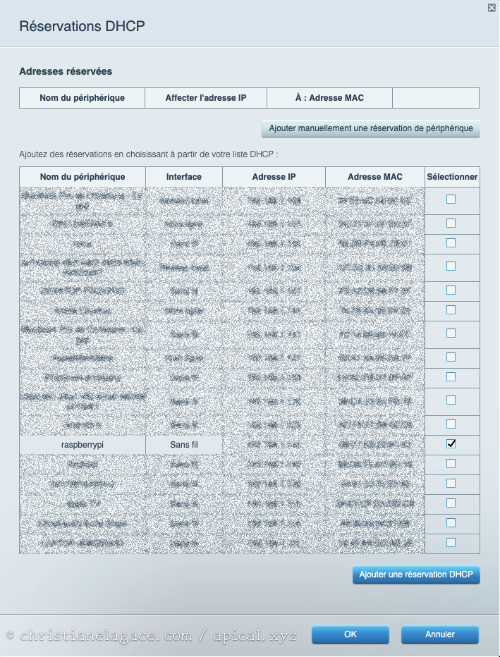
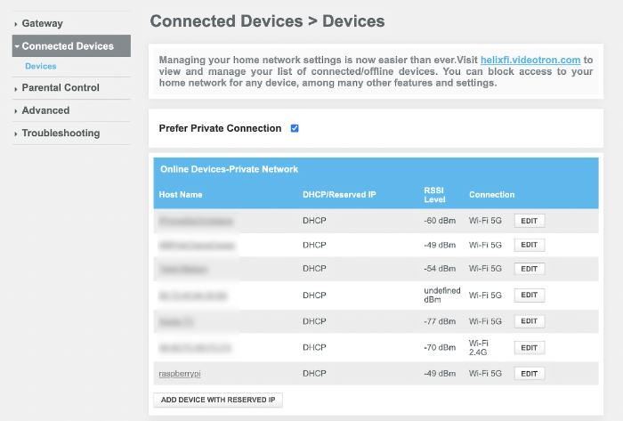
-
Il vous faut cocher le Raspberry Pi — après vous être assurés qu'il s'agit du bon périphérique à l'aide de l'adresee MAC — puis cliquer sur (autre appellation possible : ).
D'autres système demandent de cliquer sur le bouton d'édition puis de cocher une case du genre .
Le Pi apparaît désormais dans la liste des adresses réservées comme montré dans ces deux exemples.
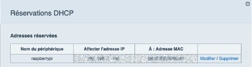

Note : vous pouvez effectuer une vérification supplémentaire pour vous assurer que vous avez donné une adresse IP statique au bon périphérique. Il suffit de comparer l'adresse IP du périphérique sélectionné avec celle donnée [apical_lien_interne][trouver_l_adresse_ip_du_raspberry_pi,directement sur votre Raspberry Pi][/apical_lien_interne].
Vérifier si tout a fonctionné
Comme dans toute manipulation, il faut tester si on obtient le résultat escompté peu importe la technique utilisée.
Après le redémarrage, le Pi devrait avoir l'adresse IP qu'on lui a imposée.
La technique pour retrouver l'adresse IP du Pi est donnée sur cette fiche : [apical_lien_interne]trouver_l_adresse_ip_du_raspberry_pi[/apical_lien_interne]
Source
1. « nm-settings-nmcli ». NetworkManager. https://networkmanager.pages.freedesktop.org/NetworkManager/NetworkManager/nm-settings-nmcli.html
Pour plus d'information
« Raspberry Pi ASAP Setup Guide - Assigning IP addresses ». GitHub. https://kr15h.github.io/RPi-Setup#titles.3.1
« RPi cmdline.txt ». elinux.org. https://elinux.org/RPi_cmdline.txt
4.10 Activer SSH sur le Raspberry Pi
Par défaut, Raspberry Pi OS empêche les connexions SSH. Vous devez donc activer SSH sur votre Raspberry Pi.
Vérifier si SSH est activé
D'abord, pour vérifier si SSH est activé, branchez un clavier et un écran au Pi et entrez cette commande :
Terminal sur le Raspberry Pi
sudo systemctl status ssh
Si SSH est activé, vous verrez une ligne de ce genre :
Résultat à l'écran
pi@raspberrypi:~ $ sudo systemctl status ssh
ssh.service - OpenBSD Secure Shell server
Loaded: loaded (/lib/systemd/system/ssh.service; enabled; preset: enabled)
Active: active (running) since Mon 2025-08-11 09:38:49 EDT; 6h ago
Docs: man:sshd(8)
man:sshd_config(5)
Process: 618 ExecStartPre=/usr/sbin/sshd -t (code=exited, status=0/SUCCESS)
Main PID: 660 (sshd)
Tasks: 1 (limit: 3921)
CPU: 470ms
CGroup: /system.slice/ssh.service
S'il n'est pas activé, vous verrez plutôt une information du genre Active: inactive (dead).
Activer SSH
Vous pouvez activer SSH de différentes façons :
- Sur le Pi à la ligne de commande
- Sur le Pi avec l'utilitaire raspi-config
- Directement sur la carte micro SD lors d'une installation headless
- Sur le Pi avec l'interface graphique
Une fois SSH activé, il sera important de modifier le mot de passe afin de ne pas ouvrir un trou de sécurité.
Ligne de commande
Vous pouvez aussi activer SSH à l'aide d'une fenêtre Terminal sur le Pi (après y avoir branché un écran et un clavier).
Terminal sur le Raspberry Pi
sudo systemctl enable ssh
sudo systemctl start ssh
Utilitaire raspi-config
Il est possible d'activer SSH à partir de l'utilitaire raspi-config.
Branchez un écran et un clavier sur le Pi puis ouvrez une fenêtre Terminal.
Entrez la commande :
Terminal sur le Raspberry Pi
sudo raspi-config
Dans le menu qui apparaît, choisissez .

Choisissez ensuite .
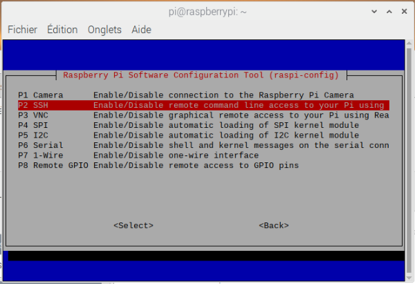
À la question , répondez .
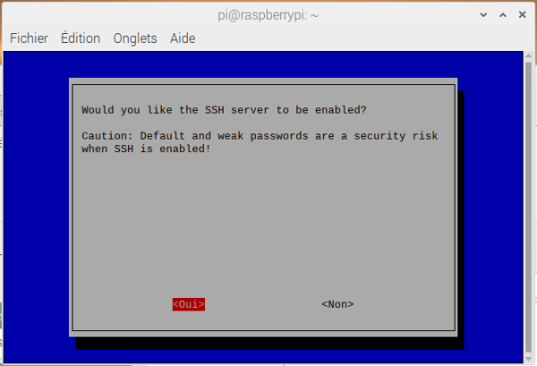
Installation headless
Si vous ne disposez pas d'un écran et d'un clavier pour travailler directement sur le Pi, vous pouvez activer SSH avec une méthode dite headless (littéralement : sans tête).
Il s'agit d'insérer la carte micro SD dans le lecteur de cartes de votre ordinateur et de créer un petit fichier vide nommé ssh à la racine de la partition boot.
Sous Mac ou Linux, le fichier sera créé à l'aide de la commande suivante :
Terminal sur l'ordinateur
touch /Volumes/boot/ssh
Sous Windows, vous pouvez ouvrir le gestionnaire de fichier, vous rendre à la racine de la partition boot puis créer le fichier à l'aide d'un clic droit / / . Attention : le fichier doit s'appeler ssh sans extension.
Une fois le fichier créé, vous pouvez [apical_lien_interne][retirer_un_disque_amovible_de_facon_securitaire,retirer la carte micro SD de façon sécuritaire][/apical_lien_interne], l'insérer dans le Rapsberry Pi puis mettre le Pi sous tension.
Remarquez qu'au prochain démarrage du Pi, ce fichier disparaîtra. Pour savoir si le SSH est activé, vérifiez si le service sshd est actif à l'aide de la commande ps -ef | grep sshd.
Interface graphique
Si votre Pi dispose d'une interface graphique, branchez un écran, un clavier et une souris sur le Pi puis :
- Rendez-vous dans le menu / .

- Cliquez sur l'onglet .
- Vis-à-vis l'option , cochez .

Changer le mot de passe par défaut
Une fois SSH activé, si votre PI a été installé avec le nom d'usager par défaut (pi) et le mot de passe par défaut (raspberry), n'importe qui peut se brancher à distance sur le Raspberry Pi, en autant que les règles du réseau le permettent.
Afin de refermer le trou de sécurité que cela crée, vous devez absolument [apical_lien_interne][mot_de_passe_sur_raspberry_pi_os,utiliser un mot de passe différent de celui par défaut][/apical_lien_interne].
4.11 Se brancher au Raspberry Pi via SSH
Si vous avez besoin de travailler directement sur le Raspberry Pi, plusieurs options s'offrent à vous :
- Brancher un écran, un clavier (et une souris si l'OS possède une interface graphique) directement sur le Pi.
Remarque : si vous travaillez avec un Raspberry Pi 4, seul le port du haut permet l'installation initiale. Par contre, une fois l'installation de Raspberry Pi OS complétée, vous pourrez utiliser le port de votre choix.
- Utiliser l'écran de votre ordinateur portable comme écran du Raspberry Pi grâce à un [apical_lien_interne][outil_de_capture_video_et_logiciel_obs_pour_utiliser_l_ecran_d_un_ordina___,outil de capture vidéo][/apical_lien_interne] (un clavier externe sera requis).
-
Utiliser un [apical_lien_interne][realvnc_pour_prendre_controle_du_raspberry_pi_a_distance,outil de contrôle à distance tel que VNC Connect][/apical_lien_interne] (mode graphique).
- Accéder au Pi à l'aide d'une communication SSH à partir d'un autre ordinateur (mode console).
Si vous souhaitez travailler via SSH, voici la procédure à suivre.
Adresse IP
Pour vous brancher au Pi à partir de votre ordinateur, vous aurez besoin de son adresse IP. Vous pouvez la trouver facilement avec [apical_lien_interne][trouver_l_adresse_ip_du_raspberry_pi,la commande hostname -I][/apical_lien_interne] ou, si vous n'avez pas accès au Pi, à partir de l'interface de votre routeur.
Vous faites une installation headless (sans écran ni clavier sur le Pi) et vous n'avez pas accès au routeur? Il vous reste comme solution de [apical_lien_interne][donner_une_adresse_ip_statique_au_raspberry_pi,donner une adresse IP statique au Pi,microsddansordi][/apical_lien_interne].
Activer SSH
Assurez-vous que le Raspberry Pi est configuré pour permettre la communication via SSH. Les instructions sont données ici : [apical_lien_interne]activer_ssh_sur_le_raspberry_pi[/apical_lien_interne].
Client SSH
Si vous travaillez avec un ordinateur Mac ou Linux, vous avez déjà un client SSH installé.
Sous Windows, vous pouvez travailler avec un client SSH disponible à partir d'une fenêtre PowerShell ou d'une console Git Bash.
Je ne vous recommande pas l'utilitaire Putty puisque, si vous choisissez de [apical_lien_interne][permettre_le_branchement_ssh_sans_demander_le_mot_de_passe_a_chaque_fois,vous authentifier à l'aide de clés SSH][/apical_lien_interne], il travaille avec son propre format de clés SSH, non compatible avec le format généré par le traditionnel ssh-keygen.
Branchement au Pi
Le client SSH vous permet de vous connecter au Pi à l'aide d'une commande entrée dans une fenêtre Terminal de votre ordinateur (vous devez remplacer 192.168.1.145 par l'adresse IP de votre Pi).
Terminal (sur l'ordinateur)
ssh pi@192.168.1.145
Sous Raspberry Pi OS, l'usager par défaut se nomme pi (comme dans l'exemple précédent). Le mot de passe est raspberry à moins que vous ne l'ayez [apical_lien_interne][mot_de_passe_sur_raspberry_pi_os,changé lors de l'installation de Raspberry Pi OS][/apical_lien_interne], ce qui est fortement recommandé.
Selon les configurations effectuées sur le Raspberry Pi, il est possible d'utiliser un autre nom d'usager ou un autre port.
Par exemple, sous Home Assistant, l'usager à utiliser s'appelle root et le port est 22222.
Terminal (sur l'ordinateur)
ssh root@192.168.1.145 -p 22222
Erreur « REMOTE HOST IDENTIFICATION HAS CHANGED! »
Parfois, lorsqu'on tente de se brancher via SSH, on obtient le message suivant :
Résultat à l'écran
MacBook-Pro-de-MonNom:~ monnom$ ssh pi@192.168.1.145
@@@@@@@@@@@@@@@@@@@@@@@@@@@@@@@@@@@@@@@@@@@@@@@@@@@@@@@@@@@
@ WARNING: REMOTE HOST IDENTIFICATION HAS CHANGED! @
@@@@@@@@@@@@@@@@@@@@@@@@@@@@@@@@@@@@@@@@@@@@@@@@@@@@@@@@@@@
IT IS POSSIBLE THAT SOMEONE IS DOING SOMETHING NASTY!
Someone could be eavesdropping on you right now (man-in-the-middle attack)!
It is also possible that a host key has just been changed.
The fingerprint for the ECDSA key sent by the remote host is
SHA256:XuhSy6HE1PkibkA17UpvKSLNuStDY73bfGhip7KVQ6U.
Please contact your system administrator.
Add correct host key in /Users/monnom/.ssh/known_hosts to get rid of this message.
Offending ECDSA key in /Users/monnom/.ssh/known_hosts:10
ECDSA host key for 192.168.1.145 has changed and you have requested strict checking.
Host key verification failed.
Plusieurs facteurs peuvent causer ce comportement, par exemple si le Raspberry Pi utilise une adresse IP qui était auparavant utilisée par un autre périphérique auquel un branchement a été fait via SSH.
Ceci se traduit par une mauvaise information dans le fichier known_hosts.
Pour corriger la situation, toujours dans une fenêtre Terminal sur votre ordinateur, retirez l'information sur cette adresse IP du fichier known_hosts à l'aide de la commande ssh-keygen -R.
Prenez soin d'entrer l'adresse IP du Raspberry Pi :
Terminal
ssh-keygen -R 192.168.1.145
Si vous utilisez un port pour la connexion SSH, par exemple le port 22222, la syntaxe sera comme suit.
Notez la présence des guillemets alentour de l'adresse IP et du port. Ceci est nécessaire avec un shell zsh puisque ce shell interprète les crochets carrés comme une série de choix.
Terminal
ssh-keygen -R "[192.168.1.145]:22222"
Si ceci ne règle pas le problème, il est possible d'effacer complètement le fichier known_hosts.
Pour plus d'information
« How to Enable SSH on Raspberry Pi ». Linuxize. https://linuxize.com/post/how-to-enable-ssh-on-raspberry-pi/
« Raspberry Pi Terminal Commands: A Quick Guide for Raspberry Pi Users ». Make Use Of. https://www.makeuseof.com/tag/15-useful-commands-every-raspberry-pi-user-should-know/
« Logging into the Raspberry Pi ». GitHub - WebThingsIO/wiki. https://github.com/WebThingsIO/wiki/wiki/Logging-into-the-Raspberry-Pi
4.12 Mode verbeux lors d'une connexion SSH
Si vous n'arrivez pas à vous brancher à votre Raspberry Pi via SSH, vous pouvez activer le mode verbeux pour vous aider à cibler le problème.
Il suffit d'ajouter l'option -v à la commande :
Terminal
ssh -v pi@192.168.1.145
Résultat à l'écran
monnom@MacBook-Pro-de-MonNom ~ %ssh -v pi@192.168.1.145
OpenSSH_8.6p1, LibreSSL 3.3.6
debug1: Reading configuration data /etc/ssh/ssh_config
debug1: /etc/ssh/ssh_config line 21: include /etc/ssh/ssh_config.d/* matched no files
debug1: /etc/ssh/ssh_config line 54: Applying options for *
debug1: Authenticator provider $SSH_SK_PROVIDER did not resolve; disabling
debug1: Connecting to 192.168.1.145 [192.168.1.145] port 22.
debug1: connect to address 192.168.1.145 port 22: Connection refused
ssh: connect to host 192.168.1.145 port 22: Connection refused
Les options -vv et -vvv donnent encore plus de détails.
Résultat à l'écran
monnom@MacBook-Pro-de-MonNom ~ %ssh -vvv pi@192.168.1.145
OpenSSH_8.6p1, LibreSSL 3.3.6
debug1: Reading configuration data /etc/ssh/ssh_config
debug1: /etc/ssh/ssh_config line 21: include /etc/ssh/ssh_config.d/* matched no files
debug1: /etc/ssh/ssh_config line 54: Applying options for *
debug2: resolve_canonicalize: hostname 192.168.1.145 is address
debug3: expanded UserKnownHostsFile '~/.ssh/known_hosts' -> '/Users/monnom/.ssh/known_hosts'
debug3: expanded UserKnownHostsFile '~/.ssh/known_hosts2' -> '/Users/monnom/.ssh/known_hosts2'
debug1: Authenticator provider $SSH_SK_PROVIDER did not resolve; disabling
debug3: ssh_connect_direct: entering
debug1: Connecting to 192.168.1.145 [192.168.1.145] port 22.
debug3: set_sock_tos: set socket 3 IP_TOS 0x48
debug1: connect to address 192.168.1.145 port 22: Connection refused
ssh: connect to host 192.168.1.145 port 22: Connection refused
4.13 Permettre le branchement SSH sans demander le mot de passe à chaque fois
Si vous avez besoin de vous connecter régulièrement à votre Raspberry Pi via SSH à partir de votre ordinateur, vous aimerez ce que je vous propose ici. Pour que ces instructions fonctionnent, votre Pi doit tourner avec Raspberry Pi OS (anciennement Raspbian).
La technique consiste à utiliser une paire « clé SSH publique - clé SSH privée » pour garantir que l'accès provient bien de votre ordinateur.
La clé privée, qui remplace le mot de passe, doit être sur votre ordinateur avec la clé publique. La clé publique sera de plus copiée sur le Pi à un endroit précis afin de permettre l'authentification sans mot de passe.
Pour comprendre le fonctionnement des clés publiques et privées, vous pouvez consulter cette fiche : « [apical_lien_interne]comment_fonctionne_l_authentification_via_ssh[/apical_lien_interne] ».
Activer SSH sur le Pi
Assurez-vous que [apical_lien_interne][activer_ssh_sur_le_raspberry_pi,votre Pi est configuré pour permettre les connexions via SSH][/apical_lien_interne].
Vérifier l'existence clés SSH
Les clés SSH, si elles existent, sont stockées dans le dossier ~/.ssh sur votre ordinateur.
Les instructions suivantes peuvent être lancées telles qu'elles dans un Terminal sous Mac ou Linux.
Sous Windows, pour effectuer les mêmes manipulations, vous devez ouvrir une fenêtre Terminal (et non CMD) ou une fenêtre PowerShell. Vous pouvez également installer la console Git Bash (https://git-scm.com/downloads).
Je ne vous recommande pas l'utilitaire Putty puisqu'il travaille avec son propre format de clés SSH, non compatible avec le format généré par le traditionnel ssh-keygen.
Pour vérifier si les clés SSH ont déjà été générées, entrez cette commande sur votre ordinateur :
Terminal sur l'ordinateur
ls ~/.ssh
Nous allons utiliser l'algorithme Ed25519 qui est l'algorithme recommandé de nos jours.
La clé publique est stockée dans le fichier id_ed25519.pub et la clé privée, dans le fichier id_ed25519.
Générer les clés SSH
Si les clés n'existent pas, vous devrez les générer à l'aide de cette commande sur votre ordinateur :
Terminal sur l'ordinateur
ssh-keygen -t ed25519 -C 'moncourriel@mondomaine.com'
Note : certains systèmes ne supportent pas les clés générées avec ed25519. Si c'est le cas pour vous, vous pouvez utiliser l'algorithme rsa qui est moins sécuritaire mais plus largement supporté.
Terminal sur l'ordinateur
ssh-keygen -t rsa -C 'moncourriel@mondomaine.com'
Acceptez l'emplacement par défaut (sous Windows : C:\Users\MonNom\.ssh\id_ed25519, sous Mac : /Users/monnom/.ssh/id_ed25519).
Afin d'augmenter la sécurité, vous pouvez entrer un mot de passe lorsqu'on vous demande un passphrase. Par contre, ceci obligera à entrer ce mot de passe à chaque connexion. Vous pouvez donc appuyer sur Entrée sans entrer de mot de passe.
Vous obtiendrez ceci à l'écran :
Résultat à l'écran
monnom@MacBook-Pro-de-MonNom ~ %ssh-keygen -t ed25519 -C 'moncourriel@mondomaine.com'
Generating public/private ed25519 key pair.
Enter file in which to save the key (/Users/monnom/.ssh/id_ed25519):
Enter passphrase (empty for no passphrase):
Enter same passphrase again:
Your identification has been saved in /Users/monnom/.ssh/id_ed25519
Your public key has been saved in /Users/monnom/.ssh/id_ed25519.pub
The key fingerprint is:
SHA256:Ns82o1VfRLrY5sHIBiPJ3pDHGJiMTQuhixPRhAle8vI moncourriel@mondomaine.com
The key's randomart image is:
+--[ED25519 256]--+
|...B. o*.o. .|
|. =.o...=. + + o |
| ..... . . B = .|
| oo. . O * |
| o .E S + B =|
| . . + . + = |
| B o |
| + o |
| . |
+----[SHA256]-----+
Copier la clé publique sur le Raspberry Pi
Pour copier la clé publique sur le Pi, entrez cette commande sur votre ordinateur en prenant soin de changer pi pour le nom de votre usager sur Raspberry Pi OS et l'adresse IP pour celle du Pi.
Notez que si vous travaillez sous Windows, vous devrez ouvrir une fenêtre Git Bash pour que cette commande fonctionne (au moment d'écrire ces lignes, même PowerShell ne reconnaissait pas la command essh-copy-id).
Terminal sur l'ordinateur
ssh-copy-id -i ~/.ssh/id_ed25519 pi@192.168.1.145
Vous devrez entrer le mot de passe du Pi à cette étape pour permettre la copie de la clé.
Ceci créera le fichier ~/.ssh/authorized_keys sur le Pi et y copiera la clé publique.
Si le fichier existait déjà, la clé sera ajoutée à la fin du contenu présent. Ceci permet de configurer la connexion sans mot de passe à partir de plusieurs ordinateurs.
Note : dans le cas où cette commande ne fonctionne pas, vous pouvez afficher la valeur de la clé publique sur votre ordinateur à l'aide de la commande cat ~/.ssh/id_ed25519.pub et copier cette valeur dans un fichier nommé authorized_keys que vous transférerez sur le Pi dans le dossier ~/.ssh à l'aide de la commande scp.
Activer l'authentification via les clés SSH
Vous devez effectuer ces manipulations seulement si les instructions qui précèdent ne permettent toujours pas de vous connecter via SSH sans entrer le mot de passe.
Pour savoir si vous devez poursuivre, tentez de vous connecter avec la commande, en prenant soin d'ajuster le nom d'usager et l'adresse IP de votre Pi :
Terminal sur l'ordinateur
ssh pi@192.168.1.145
Si un mot de passe vous est tout de même demandé, il vous faut poursuivre avec ces étapes. Sinon, vous avez terminé cette configuration!
Pour poursuivre, sur le Pi, vous devez éditer le fichier /etc/ssh/sshd_config.
Terminal sur le Pi
sudo nano /etc/ssh/sshd_config
Il faut enlever le # devant la ligne qui permet l'authentification à partir de la clé dans le fichier .ssh/authorized_keys.
Fichier /etc/ssh/sshd_config sur le Pi
# Expect .ssh/authorized_keys2 to be disregarded by default in future.
AuthorizedKeysFile .ssh/authorized_keys .ssh/authorized_keys2
Il faut également s'assurer que le système permet l'authentification à l'aide d'une clé plublique :
Fichier /etc/ssh/sshd_config sur le Pi
PubkeyAuthentication yes
Et désactiver le mode strict :
Fichier /etc/ssh/sshd_config sur le Pi
#PermitRootLogin prohibit-password
StrictModes no
Redémarrez ensuite le service SSH :
Terminal sur le Pi
sudo service ssh restart
Vous devriez désormais pouvoir vous connecter au Pi via SSH sans avoir à entrer votre mot de passe.
Pour plus d'information
« Passwordless SSH access ». Raspberry Pi. https://www.raspberrypi.org/documentation/remote-access/ssh/passwordless.md
« How to SSH from a MAC to RaspberryPi without entering the password every-time? ». Medium. https://medium.com/@sandeeparneja/how-to-ssh-from-a-mac-to-raspberrypi-without-entering-the-password-every-time-afd769ecfb6
« ssh-keygen - Generate a New SSH Key ». ssh.com. https://www.ssh.com/ssh/keygen/
« Comparing SSH Keys - RSA, DSA, ECDSA, or EdDSA? ». Teleport. https://goteleport.com/blog/comparing-ssh-keys/
4.14 Comment fonctionne l'authentification via SSH?
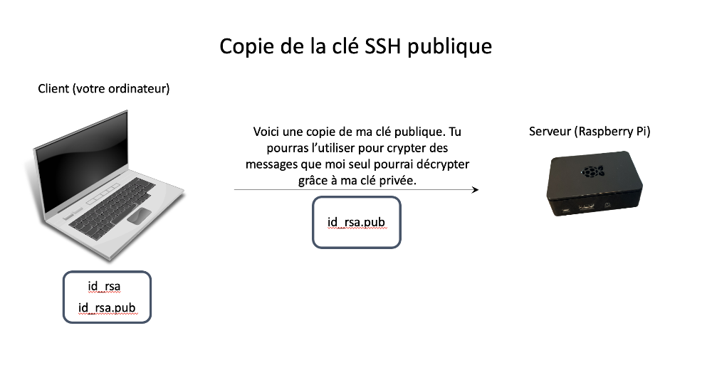

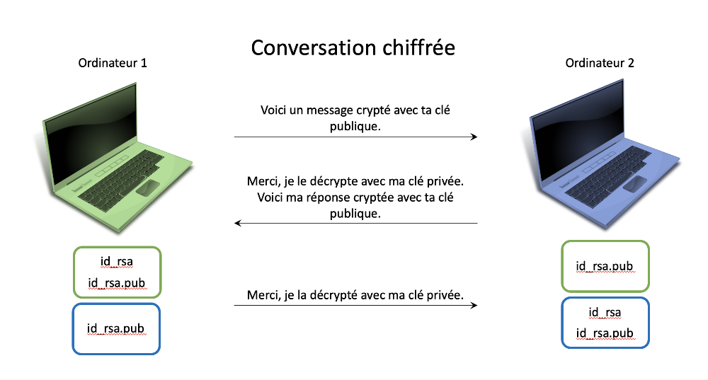
Pour plus d'information
« Public – private key pairs & how they work ». Preveil. https://www.preveil.com/blog/public-and-private-key/
4.15 Copie de sécurité de la carte micro SD du Raspberry Pi
Le système d'exploitation, les logiciels et possiblement les données de votre Raspberry Pi seront stockés sur la toute petite carte micro SD insérée dans le Raspberry Pi.
Cette carte est fragile et pourrait connaître des ratées.
Une des principales causes de carte micro SD corrompue est un arrêt du Raspberry Pi non [apical_lien_interne][Eteindre_un_systeme_linux_de_facon_securitaire,sécuritaire][/apical_lien_interne], par exemple une panne de courant ou encore un débranchement sans avoir fait sudo halt.
Sur un système domotique, le fait d'écrire sur la carte de façon répétée est un autre facteur qui contribue au risque de bris.
C'est pourquoi il est important d'en prendre régulièrement une copie de sécurité afin de vous assurer de pouvoir réinstaller le tout facilement si le besoin s'en fait sentir.
La technique la plus sûre d'effectuer une copie de sécurité consiste à passer par le système domotique. La plupart offrent une fonctionnalité pour sauvegarder les fichiers et les données, sans conserver le système d'exploitation.
Une telle sauvegarde pourra être réinstallée sur un système domotique tout neuf afin de retrouver le système dans l'état où il était lors de la sauvegarde.
Si le système domotique n'offre pas de possibilité de sauvegarde, il faudra se tourner vers une autre des techniques présentées ici.
Dans cette fiche :
- Sauvegarde de la boîte domotique sans le système d'exploitation
- Copie de l'image de la carte sur un ordinateur
- Copie de la carte sur une autre carte
Sauvegarde de la boîte domotique sans le système d'exploitation
Plusieurs boîtes domotiques offrent des fonctionnalités pour effectuer une sauvegarde complète des fichiers et de la base de données qu'ils utilisent.
C'est le cas notamment avec [apical_lien_interne][copie_de_securite_de_jeedom,Jeedom][/apical_lien_interne] ou [apical_lien_interne][sauvegarde_de_home_assistant,Home Assistant][/apical_lien_interne].
Une telle sauvegarde ne comprend que les fichiers de la boîte domotique, pas ceux du système d'exploitation. Pour la restaurer, il faut d'abord réinstaller le système d'exploitation puis une copie vierge de la boîte domotique.
La procédure de différents systèmes est détaillée ici :
- [apical_lien_interne][copie_de_securite_de_jeedom,Jeedom,restaurer][/apical_lien_interne]
- [apical_lien_interne][reinstaller_home_assistant_a_partir_d_une_sauvegarde,Home Assistant][/apical_lien_interne]
Copie de l'image de la carte sur un ordinateur (fichier .img)
Attention : selon la technique choisie, la taille de la carte et les configurations de votre système, l'opération peut prendre facilement entre 20 minutes et une heure.
Si vous travaillez avec un système qui n'offre pas de possibilité de sauvegarde, vous pouvez procéder à une sauvegarde complète de la carte, incluant le système d'exploitation.
Notez que cette technique est plus délicate à réaliser et il arrive que l'image du disque soit difficile à remettre en place.
Je vous présente ici différentes façons de créer un fichier image de la carte micro SD du Raspberry Pi.
- Utilitaire dd à partir d'un ordinateur Mac ou Linux
- Utilitaire dd pour Windows
- Utilitaire dd directement sur le Rapsberry Pi pendant que la carte est utilisée
- Win32 Disk Imager et autres utilitaires pour Windows
Utilitaire dd à partir d'un ordinateur Mac ou Linux
La commande Linux [apical_lien_interne][copie_integrale_d_un_disque_avec_la_commande_dd,dd][/apical_lien_interne] permet d'effectuer une copie intégrale de la carte micro SD. Le résultat sera un fichier image qui pourra au besoin [apical_lien_interne][copier_une_image_du_systeme_d_exploitation_sur_une_carte_microsd_flasher,être réinstallé (flashé) sur une carte micro SD][/apical_lien_interne].
Cette technique nécessite de retirer la carte du Raspberry Pi pour l'insérer dans un lecteur de carte micro SD directement sur votre ordinateur ou sur un lecteur externe. Vous pouvez même insérer la carte dans un lecteur branché sur un autre Raspberry Pi (qui roulera à l'aide de sa propre carte micro SD) pour effectuer l'opération.
macOS
Voici d'abord les instructions sous Mac. Suivront les instructions sous Linux. Vous remarquerez que la commande dd présente quelques différences entre les deux systèmes.
Notez que si la carte micro SD est utilisée pour un système d'exploitation HassOS, ceci ne fonctionnera pas puisque macOS n'est pas capable de lire les cartes sur lesquelles HassOS est installé.
La première étape pour effectuer la copie consite à retrouver le point de montage de la carte. Avant d'insérer la carte, ouvrez une fenêtre Terminal et entrez la commande df. Insérez ensuite la carte micro SD puis entrez à nouveau la commande df. La ou les lignes ajoutées correspondent à la carte micro SD. Sur mon ordinateur Mac, j'obtiens ceci :
-
Résultat à l'écran
/dev/disk2s1 5029504 4846592 182912 97% 0 0 100% /Volumes/RECOVERY
/dev/disk2s6 516188 108923 407265 22% 0 0 100% /Volumes/bootCes entrées correspondent aux deux partitions de ma carte (s1 et s6). Le point de montage est la partie commune entre les deux, c'est-à-dire /dev/disk2.
Si la carte ne peut pas être lue par votre ordinateur, il est tout de même possible de connaître son point de montage à l'aide de la commande diskutil list. On peut reconnaître ici que ma carte de 32 Go est montés sous /dev/disk2.
Résultat à l'écran/dev/disk2 (external, physical):
#: TYPE NAME SIZE IDENTIFIER
0: GUID_partition_scheme *32.0 GB disk2
1: Microsoft Reserved 33.6 MB disk2s1
2: Linux Filesystem 25.2 MB disk2s2
3: Linux Filesystem 268.4 MB disk2s3
4: Linux Filesystem 25.2 MB disk2s4
5: Linux Filesystem 268.4 MB disk2s5
6: Linux Filesystem 8.4 MB disk2s6
7: Linux Filesystem 100.7 MB disk2s7
8: Linux Filesystem 31.3 GB disk2s8Entrez maintenant la commande dd comme suit. Ajustez le point de montage puis le nom du fichier.
-
Remarquez le r dans le point de montage (/dev/rdisk2), qui permet, sur un système macOS, une opération beaucoup plus rapide.
Je vous suggère de terminer le nom du fichier par la date courante au format aaaa-mm-jj.
Terminal macOSsudo dd bs=32m if=/dev/rdisk2 of=nom-du-fichier-aaaa-mm-jj.img
- Le fichier sera créé dans le dossier courant. Vous pouvez utiliser la commande pwd (Print Working Directory) pour connaître son chemin exact.
- L'opération inverse vous permettra de [apical_lien_interne][copie_integrale_d_un_disque_avec_la_commande_dd,réinstaller votre carte à partir de cette image,recuperer][/apical_lien_interne].
Linux
Si vous avez accès à un ordinateur Linux ou si vous avez une autre carte micro SD qui peut servir à faire rouler votre Raspberry Pi, vous pourrez utiliser le système Linux pour créer une image de votre carte.
- Vous devez connaître le point de montage de la carte. Avant d'insérer la carte, entrez la commande lsblk -fp. Insérez ensuite la carte micro SD puis entrez à nouveau la commande lsblk -fp. La ou les lignes ajoutées correspondent à la carte micro SD. Sur mon ordinateur Linux, j'obtiens ceci :
Linux
pi@raspberrypi:~ $ lsblk -fp
NAME FSTYPE FSVER LABEL UUID FSAVAIL FSUSE% MOUNTPOINT
/dev/sda
├─/dev/sda1 vfat FAT32 boot 0193-3CD3
└─/dev/sda2 ext4 1.0 rootfs a2e795f4-b2cf-4ea1-a687-ddf67a64c0a8
/dev/mmcblk0
├─/dev/mmcblk0p1 vfat FAT32 boot 0193-3CD3 223.66M 12% /boot
└─/dev/mmcblk0p2 ext4 1.0 rootfs a2e795f4-b2cf-4ea1-a687-ddf67a64c0a8 26G 4% / - Entrez maintenant la commande dd comme suit. Ajustez le point de montage puis le nom du fichier.
Je vous suggère de terminer le nom du fichier par la date courante au format aaaa-mm-jj.
Terminal Linuxsudo dd bs=32M if=/dev/sda of=nom-du-fichier-aaaa-mm-jj.img
- Le fichier sera créé dans le dossier courant. Vous pouvez utiliser la commande pwd (Print Working Directory) pour connaître son chemin exact.
- L'opération inverse vous permettra de [apical_lien_interne][copie_integrale_d_un_disque_avec_la_commande_dd,réinstaller votre carte à partir de cette image,recuperer][/apical_lien_interne].
Utilitaire dd pour Windows
Attention : cet utilitaire pose souvent problème, ce n'est pas la meilleure technique à utiliser.
La commande dd n'existe pas nativement sous Windows. Heureusement, il est possible d'installer un petit utilitaire qui fera le travail.
- Téléchergez l'utilitaire à partir de ce site : http://www.chrysocome.net/download. Choisissez la dernière version stable.
- Décompressez le fichier .zip puis copiez le fichier dd.exe à l'endroit de votre choix.
- Insérer la carte micro SD dans l'ordinateur Windows.
- Pour connaître le numéro attribué à la carte micro SD, faites un clic droit sur le bouton Windows puis choisissez .
Dans cette image, on voit que la carte correspond au disque 1.

- Ouvrez une fenêtre PowerShell.
- Placez-vous dans le dossier qui contient le fichier dd.exe.
- Lancez cette commande afn de créer une image de la carte micro SD. Adaptez le numéro du disque (ici : 1) à celui que vous aurez trouvé plus tôt.
PowerShell
./dd if=\\?\Device\Harddisk1\Partition0 of=nom-du-fichier-aaaa-mm-jj.img bs=1M
Utilitaire dd directement sur le Raspberry Pi pendant que la carte est utilisée
L'avantage de cette technique, c'est qu'elle peut être utilisée peu importe le système d'exploitation de votre ordinateur puisque c'est le Raspberry Pi qui créera l'image.
Son grand désavantage : la copie est extrêmement longue à réaliser et mes tests se sont souvent soldés par une erreur d'écriture :-(
Notez que si la carte micro SD est utilisée pour un système d'exploitation HassOS, ceci ne fonctionnera pas puisque le système d'exploitation est optimisé pour Home Assistant et plusieurs opérations n'y sont pas permises.
La carte micro SD demeurera dans le Raspberry Pi et vous utiliserez une clé USB pour accueillir le fichier image. Ce fichier pourra ensuite être copié sur votre ordinateur.
Notez que la clé USB doit être formatée dans un format lisible par un système de fichier Linux et qui supporte les gros fichiers, par exemple exFAT.
Pendant tout le processus, vous ne devez effectuer aucune opération sur le Raspberry Pi afin d'éviter que des changements surviennent dans le système de fichiers, ce qui pourrait corrompre l'image.
- Branchez une clé USB sur le Raspberry Pi.
- Pour connaître le point de montage de la clé USB, entrez la commande lsblk -fp.
Vous reconnaîtrez votre clé à son nom (LABEL). Vous devez noter le nom du périphérique qui représente la clé USB (ici : /dev/sda2) ainsi que celui du disque dur (/dev/mmcblk0).
Résultat à l'écranpi@raspberrypi:~ $ lsblk -fp
NAME FSTYPE FSVER LABEL UUID FSAVAIL FSUSE% MOUNTPOINT
/dev/sda
├─/dev/sda1 vfat FAT32 EFI 67E3-17ED
└─/dev/sda2 exfat 1.0 macle 633B-0FD4
/dev/mmcblk0
├─/dev/mmcblk0p1 vfat FAT32 boot 0193-3CD3 223,6M 12% /boot
└─/dev/mmcblk0p2 ext4 1.0 rootfs a2e795f4-b2cf-4ea1-a687-ddf67a64c0a8 24G 10% / - Il faut maintenant monter la clé USB, c'est-à-dire la rendre disponible pour le système d'exploitation.
Terminal du Raspberry Pi
sudo mkdir /mnt/usb
sudo mount /dev/sda2 /mnt/usb -o uid=pi,gid=pi - Lancez la commande dd pour effectuer la copie du système vers la clé USB.
Patientez, cette étape prendra de loooooonnngues minutes, voire même une heure entière sans que rien ne se passe à l'écran.Terminal du Raspberry Pi
sudo dd bs=32M if=/dev/mmcblk0 of=/mnt/usb/nom-du-fichier-aaaa-mm-jj.img
- Vous pouvez maintenant copier ce fichier sur votre ordinateur. J'aime bien utiliser le terminal de l'ordinateur pour effectuer cette copie mais l'inverse est également possible. Entrez cette commande en prenant soin de changer pi pour le nom de votre usager sur Raspberry Pi OS et l'adresse IP pour celle du Pi.
Terminal de l'ordinateur
scp pi@192.168.1.145:/mnt/usb/nom-du-fichier-aaaa-mm-jj.img /dossierlocal
- Vous devez finalement démonter la clé USB.
Terminal du Raspberry Pi
sudo umount /dev/sda2
Win32 Disk Imager et autres utilitaires pour Windows
Sous Windows, il est également possible de créer une image d'une carte micro SD à l'aide d'un outil spécialisé.
Le plus populaire s'appelle Win32 Disk Imager. Malheureusement, il a du mal à rouler sur certains systèmes récents.
On m'a rapporté que le fait de fermer Google Drive pouvait régler le problème. À vous d'essayer...
Je vous propose quelques utilitaires mais je ne les ai pas toutes testés.
- Win32 Disk Imager (https://sourceforge.net/projects/win32diskimager/).
La procédure est disponible ici : https://computers.tutsplus.com/articles/how-to-clone-your-raspberry-pi-sd-cards-with-windows--mac-59294. - HDD Raw Copy Tool (https://hddguru.com/software/HDD-Raw-Copy-Tool/) NON TESTÉ
- USB Image Tool (https://www.alexpage.de/usb-image-tool/) NON TESTÉ
Peu importe le logiciel utilisé, vous pourrez remettre l'image sur une carte micro SD à l'aide de Raspberry Pi Imager.
Copie de la carte sur une autre carte
Attention : selon la technique choisie, la taille de la carte et les configurations de votre système, l'opération peut prendre facilement entre 20 minutes et une heure.
Pour ceci, vous aurez besoin d'un lecteur de carte USB que vous brancherez sur le Pi et d'une seconde carte, évidemment.
Voici le lecteur que j'utilise :

L'avantage de cette technique est qu'elle permet de faire la copie sans retirer la carte du Raspberry Pi. Moins de manipulations de la carte = diminution des risques de l'endommager.
Notez que comme pour la création d'un fichier image, la copie sur une autre carte est délicate à réaliser.
Sans interface graphique
Sous Raspberry Pi OS Lite, il est possible d'installer une version en ligne de commande de piclone.
Attention : si vous travaillez avec un autre système d'exploitation, par exemple HassOS, et qu'il n'est pas possible d'y installer Git (sudo apt install git), vous devrez plutôt créer une image de la carte sur votre ordinateur (technique présentée plus haut) puis flasher cette image sur l'autre carte.
Les étapes qui suivent sont en fait une traduction de la procédure présentée dans le répertoire GitHub de l'utilitaire piclone_cmd : https://github.com/nwright-mcc/piclone_cmd.
- Installez piclone_cmd :
Terminal
git clone https://github.com/nwright-mcc/piclone_cmd.git
- Installez uuid :
Terminal
sudo apt-get install uuid
- Insérez votre carte micro SD dans le lecteur connecté au port USB du Raspberry Pi.
- Déterminez quel nom porte le point de montage :
Vous obtiendrez en sortie quelque chose du genre /dev/sda /dev/sda1.Terminal
ls /dev/sd*
Ceci signifie que votre carte a comme point de montage /dev/sda. Si vous obtenez autre chose du genre /dev/sdb, il vous faudra retirer un des périphériques branchés afin de déterminer lequel correspond à la carte micro SD du lecteur USB.Résultat à l'écranpi@raspberrypi:~ $ ls /dev/sd*
/dev/sda /dev/sda1 - Lancez maintenant l'opération de clonage en prenant soin d'utiliser le bon point de montage :
Terminal
cd ~/piclone_cmd
sudo ./piclone_cmd /dev/sda
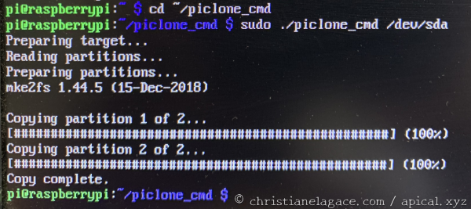
Avec interface graphique
Si vous travaillez avec un Raspberry Pi OS complet (donc, pas la version Lite), voici la procédure.
- Sur le Raspberry Pi, rendez-vous dans le menu / .
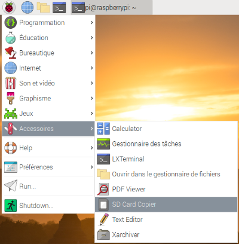
- Choissez la source et la cible puis cliquez sur . Pas plus compliqué que ça!
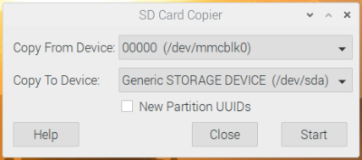
Pour plus d'information
« Backups ». Raspberry Pi. https://www.raspberrypi.org/documentation/linux/filesystem/backup.md
« Back up your Raspberry Pi: how to save and restore files ». The MagPi Magazine. https://magpi.raspberrypi.org/articles/back-up-raspberry-pi
« nwright-mcc/piclone_cmd ». GitHub. https://github.com/nwright-mcc/piclone_cmd
4.16 Outil de capture vidéo et logiciel OBS : pour utiliser l'écran d'un ordinateur portable comme sortie vidéo du Raspberry Pi
Il n'est pas toujours obligatoire de brancher un écran au Raspberry Pi pour pouvoir travailler avec ce tout petit ordinateur. En effet, plusieurs techniques permettent d'effectuer une installation du système d'exploitation et/ou une opération du Pi de façon headless, c'est-à-dire sans nécessiter le branchement d'un clavier et d'un écran.
Les principales techniques pour opérer un Raspberry Pi sans lui brancher clavier ni écran sont :
- [apical_lien_interne][se_brancher_au_raspberry_pi_via_ssh,branchement via SSH][/apical_lien_interne] (mode console)
- utilisation d'un [apical_lien_interne][realvnc_pour_prendre_controle_du_raspberry_pi_a_distance,outil de contrôle à distance tel que VNC Connect][/apical_lien_interne] (mode graphique)
Pourtant, même avec ces techniques, le branchement d'un écran peut être pratique, notamment si vous n'arrivez pas à [apical_lien_interne][trouver_l_adresse_ip_du_raspberry_pi,retrouver l'adresse IP du Pi][/apical_lien_interne] nécessaire pour accéder au Pi via SSH ou avec VNC Connect.
Si vous devez vous déplacer avec votre matériel, un moniteur est plutôt encombrant.
Vous serez heureux d'apprendre que l'écran de votre ordinateur portable peut être utilisé comme écran pour le Raspberry Pi. Vous aurez besoin pour celà d'un petit bidule appelé outil de capture vidéo.
En bonus, l'utilisation d'un tel outil permet d'effectuer des captures d'écran du Raspberry Pi directement à partir de votre ordinateur puisque la sortie vidéo sera affichée dans une application qui tourne sur cet ordinateur.
Attention : Raspberry Pi OS devra avoir été configuré pour [apical_lien_interne][permettre_l_utilisation_d_un_ecran_directement_sur_le_pi,permettre le branchement d'un écran directement sur le Pi][/apical_lien_interne].
Notez que vous aurez tout de même besoin d'un clavier branché au Raspberry Pi – et possiblement d'une souris sous Raspberry Pi OS avec interface graphique – si vous souhaitez interagir avec lui sans passer par SSH ni par un outil de contrôle à distance.
Heureusement, ceci est tout de même moins encombrant à déplacer qu'un moniteur.
Outil de capture vidéo
L'outil de capture vidéo est un petit objet qui sera branché entre l'ordinateur et la sortie vidéo du Raspberry Pi.
Il en existe de nombreux modèles dont le prix est généralement aux alentours de 20$.
Recherchez video capture sur le site Web de votre détaillant favori, vous en trouverez plusieurs.
Voici celui que j'utilise :
Branchements
Une des extrémités de l'outil de capture vidéo doit être branchée à l'ordinateur via le port USB (sur l'image plus bas, j'ai ajouté un adaptateur pour mon port USB-C).
À l'autre bout de l'outil, une prise permet de recevoir un câble HDMI. La seconde extrémité du câble sera branchée au Raspberry Pi. Assurez-vous qu'il soit éteint avant d'effectuer le branchement. De toute façon, vous devrez redémarrer le Pi après avoir effectué les configurations plus bas.
Sur l'image, vous voyez le branchement vers un Raspberry Pi 3B+. Si vous avez un Raspberry Pi 4, vous devrez plutôt utiliser un câble avec une extrémité HDMI et l'autre, micro HDMI.

Logiciel OBS
Pour que votre ordinateur portable puisse afficher la sortie vidéo du Raspberry Pi, vous aurez besoin d'un logiciel spécialisé.
J'utilise OBS (Open Broadcaster Software), qui peut être téléchargé à partir de ce lien : https://obsproject.com/fr/download.
Il est disponible pour Mac, Linux et Windows.
Une fois le logiciel téléchargé et installé, il ne vous reste que quelques configurations à réaliser :
- Assurez-vous de voir au bas de l'écran d'OBS une zone suivie d'une ligne avec des + et des -. Si elles ne sont pas visibles, rendez-vous dans le menu / / puis dans / .
- Sous la zone au bas de l'écran, cliquez sur +.
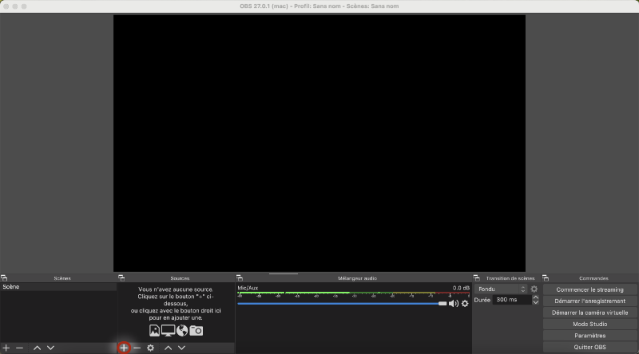
- Dans le menu qui apparaît, choisissez .
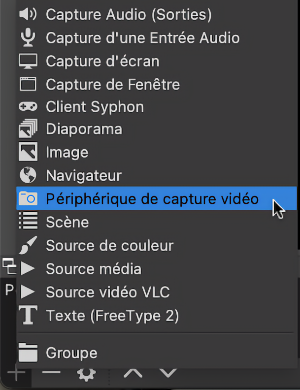
- Dans l'écran suivant, sélectionnez .

- Dans la zone , choisissez .
- Sélectionnez une résolution, par exemple 1280x720.
Si la résolution est trop grande, elle débordera de l'écran d'OBS. Si elle est trop petite, seule une partie de l'écran sera utilisée.
Remarquez que cette résolution pourra être modifiée par la suite en cliquant sur l'icône de configuration au bas de la zone .

- Démarrez le Raspberry Pi. Vous verrez alors sur l'écran de votre ordinateur portable la sortie vidéo du Raspberry Pi. Vous devrez brancher un clavier et possiblement une souris si vous désirez interagir avec le Pi.

Pour plus d'information
« HDMI USB Capture ». Wiistar. http://www.wiistar.com/Uploads/images/2020/06/12/1591961504_download_file.mp4
4.17 VNC Connect pour prendre contrôle du Raspberry Pi à distance
La compagnie Real VNC est bien connue pour les possibilités qu'elle offre de contrôler un ordinateur à distance : le serveur VNC est installé sur l'ordinateur qui doit être contrôlé et le client VNC, appelé VNC Viewer, est installé sur l'ordinateur qui doit prendre le contrôle.
Grâce à cet outil, il est possible d'afficher l'interface graphique d'un Raspberry Pi à distance et ainsi contrôler le Raspberry Pi depuis votre ordinateur.
Notez que cet outil est sans intérêt si vous utilisez le système d'exploitation Raspberry Pi OS Lite (sans interface graphique) sur le Raspberry Pi.
Saviez-vous que VNC Connect, qui comprend le client et le serveur VNC, est installé par défaut sur Raspberry Pi OS lorsque vous choissez une installation avec interface graphique?
Il est également possible d'installer VNC Connect sur le Pi à la ligne de commande :
Terminal
sudo apt update
sudo apt install realvnc-vnc-server realvnc-vnc-viewer
Voici maintenant les étapes à réaliser pour prendre contrôle du Raspberry Pi à partir de votre ordinateur portable.
Activer le serveur VNC sur le Raspberry Pi
À partir de l'interface graphique :
- Rendez-vous dans le menu / .
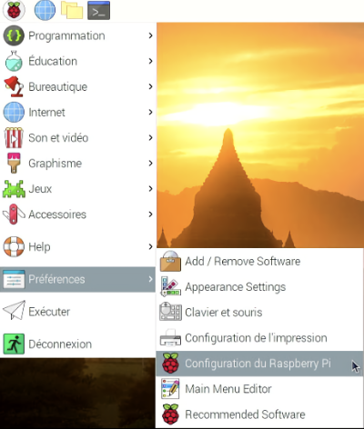
- Dans l'onglet , cochez vis-a-vis .
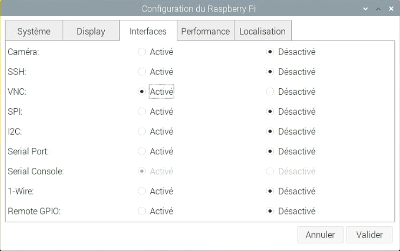
À l'aide de raspi-config :
- Lancez l'utilitaire raspi-config.
Terminal
sudo raspi-config
- Rendez-vous dans .
- Choisissez ensuite VNC.
- Répondez à la question .
Installer VNC Viewer sur votre ordinateur
Pour un usage non commercial, VNC Viewer peut être installé gratuitement sur votre ordinateur à partir de ce lien : https://www.realvnc.com/fr/connect/download/viewer/
Il est disponible pour Mac, Linux, Window, iOS, Android et plus.
Démarrer le contrôle à distance à partir du même réseau
Pour effectuer un contrôle par connection directe, vous devez vous assurer que votre ordinateur et le Raspberry Pi sont sur le même réseau.
Notez qu'il est possible de travailler avec VNC Viewer à partir d'un autre réseau à condition d'avoir un compte chez Real VNC. Tout ceci est gratuit pour usage non commercial. Plus d'informations à ce propos sont données ici : https://www.realvnc.com/fr/raspberrypi/#sign-up
Revenons à la connection directe. La façon la plus simple pour vérifier si l'ordinateur et le Pi sont sur le même réseau est d'ouvrir une fenêtre Terminal sur votre ordinateur et d'entrer la commande ping suivie de [apical_lien_interne][trouver_l_adresse_ip_du_raspberry_pi,l'adresse IP du Raspberry Pi][/apical_lien_interne].
Terminal
ping 192.168.1.145
Vous trouverez plus de détails sur cette fiche : « [apical_lien_interne]verifier_si_l_ordinateur_et_le_raspberry_pi_sont_branches_sur_le_meme_re___[/apical_lien_interne] ».
Lorsque le test est concluant, vous pouvez démarrer VNC et entrer l'adresse IP du Raspberry Pi à l'endroit indiqué.
VNC Viewer vous demandera ensuite d'entrer un code d'usager valide sur le Raspberry Pi ainsi que son mot de passe.

Vous avez désormais le contrôle du Raspberry Pi à partir de votre ordinateur. C'est à peu près comme si votre clavier, votre souris et votre écran étaient branchés directement sur le Pi.

Pour plus d'information
« VNC (Virtual Network Computing) ». Raspberry Pi. https://www.raspberrypi.org/documentation/remote-access/vnc/
4.18 Mot de passe sur Raspberry Pi OS
Par défaut, sur Raspberry Pi OS, il y a un usager administrateur nommé pi dont le mot de passe est raspberry.
Le fait de conserver ce mot de passe pour l'usager pi alors que [apical_lien_interne][activer_ssh_sur_le_raspberry_pi,SSH est activé][/apical_lien_interne] ou que [apical_lien_interne][realvnc_pour_prendre_controle_du_raspberry_pi_a_distance,le serveur VNC est activé][/apical_lien_interne] constitue un trou de sécurité.
Un message à cet effet est d'ailleurs affiché lors du démarrage du Pi.
Résultat à l'écran
SSH is enabled and the default password for the 'pi' user has not been changed.
This is a security risk - please login as the 'pi' user and type 'passwd' to set a new password.
Il faut donc modifier ce mot de passe. Tel que mentionné dans le message à l'écran, ceci se fait à l'aide de la commande :
Terminal
passwd
Mot de passe oublié
Il est possible de réinitialiser le mot de passe de l'usager pi à condition d'avoir un accès physique au Raspberry Pi avec un écran et un clavier.
- [apical_lien_interne][Eteindre_un_systeme_linux_de_facon_securitaire,Éteignez le Pi de façon sécuritaire][/apical_lien_interne] puis retirez la carte micro SD.
- Insérez la carte dans votre ordinateur.
- Créez une copie du fichier cmdline.txt qui se trouve directement à la racine de la carte. Ceci permettra de revenir à la version originale si jamais vos manipulations empêchent le bon fonctionnement de l'OS.
- Éditez le fichier cmdline.txt. Vous devez lui ajouter la configuration init=/bin/sh qui forcera le Pi à démarrer en mode mode mono-utilisateur.
Attention : dans ce fichier, chaque configuration est séparée par un espace et toutes les configurations doivent tenir sur une seule ligne.Fichier cmdline.txt
console=serial0,115200 console=tty1 root=PARTUUID=6f2deb42-02 rootfstype=ext4 elevator=deadline fsck.repair=yes rootwait init=/bin/sh
- [apical_lien_interne][retirer_un_disque_amovible_de_facon_securitaire,Retirez la carte de l'ordinateur de façon sécuritaire][/apical_lien_interne], remettez-la dans le Pi et démarrez le Pi.
- L'étape suivante dépend de votre système :
- Si les lignes arrêtent de défiler à l'écran et que le système semble gelé (généralement après la ligne random: crng init done), appuyez sur la touche Entrée et vous obtiendrez une invite de commande (#). Entrez-y cette commande :
Terminal
mount -o remount, rw /
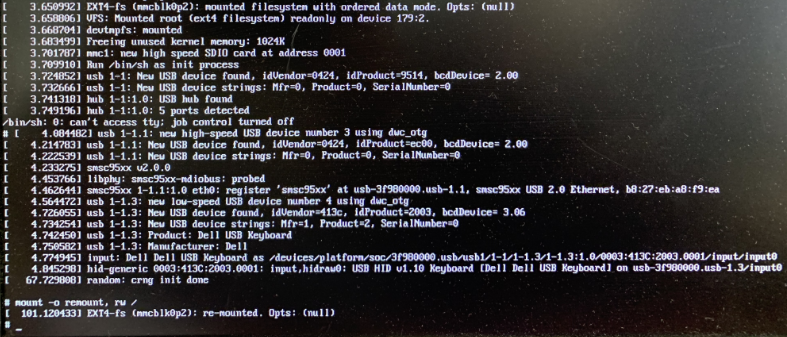
- Si le démarrage s'est déroulé normalement, vous pourrez vous connecter avec le code d'usager su sans mot de passe.
- Si les lignes arrêtent de défiler à l'écran et que le système semble gelé (généralement après la ligne random: crng init done), appuyez sur la touche Entrée et vous obtiendrez une invite de commande (#). Entrez-y cette commande :
- Pour modifier le mot de passe de l'usager pi, entrez cette commande :
Terminal
passwd pi
- Refaites maintenant tout le chemin à l'envers : éteignez le Pi de façon sécuritaire, retirez la carte micro SD, insérez-la dans votre ordinateur, éditez le fichier cmdline.txt, retirez la configuration init=/bin/sh, retirez la carte de l'ordinateur, remettez-la dans le Pi puis redémarrez ce dernier.
- Bingo!
Pour plus d'information
« Linux users ». Raspberry Pi. https://www.raspberrypi.org/documentation/linux/usage/users.md
« Reset lost admin password for Raspberry Pi ». Mapledyne. http://mapledyne.com/ideas/2015/8/4/reset-lost-admin-password-for-raspberry-pi
4.19 Vérifier si l'ordinateur et le Raspberry Pi sont branchés sur le même réseau
Dans certains contextes, pour que l'ordinateur puisse communiquer correctement avec le Raspberry Pi, soit [apical_lien_interne][se_brancher_au_raspberry_pi_via_ssh,via SSH][/apical_lien_interne] ou encore en affichant la page Web de la boîte domotique, il faut que l'ordinateur et le Raspberry Pi soient branchés sur le même réseau.
ping
La commande ping permet de vérifier si un ordinateur peut rejoindre une adresse IP donnée.
Ouvrez une fenêtre Terminal sur l'ordinateur puis entrez la commande ping suivie de l'[apical_lien_interne][trouver_l_adresse_ip_du_raspberry_pi,adresse IP du Raspberry Pi][/apical_lien_interne].
Terminal de l'ordinateur
ping 192.168.1.145
Si l'ordinateur et le Pi sont sur le même réseau, vous devriez avoir un résultat qui ressemble à ceci.
Résultat à l'écran
MacBook-Pro-de-MonNom:~ monnom$ ping 192.168.1.145
PING 192.168.1.145 (192.168.1.145): 56 data bytes
64 bytes from 192.168.1.145: icmp_seq=0 ttl=62 time=2.407 ms
64 bytes from 192.168.1.145: icmp_seq=1 ttl=62 time=8.484 ms
64 bytes from 192.168.1.145: icmp_seq=2 ttl=62 time=3.625 ms
^Z
[6]+ Stopped ping 192.168.1.145
Pour arrêter le défilement, appuyez sur Ctrl + C.
Dans le cas où l'ordinateur et le Pi ne sont pas sur le même réseau, vous verrez le message « Request timeout ».
Résultat à l'écran
MacBook-Pro-de-MonNom:~ monnom$ ping 192.168.1.145
PING 192.168.1.145 (192.168.1.145): 56 data bytes
Request timeout for icmp_seq 0
Request timeout for icmp_seq 1
Request timeout for icmp_seq 2
^Z
[7]+ Stopped ping 192.168.1.145
Un message « No route to host » signifie que l'ordinateur n'a pas accès à internet. Pour le vérifiez, faites un ping vers l'adresse 8.8.8.8 qui correspond à Google.
Résultat à l'écran
MacBook-Pro-de-MonNom:~ monnom$ ping 8.8.8.8
PING 8.8.8.8 (8.8.8.8): 56 data bytes
ping: sendto: No route to host
ping: sendto: No route to host
Request timeout for icmp_seq 0
ping: sendto: No route to host
Request timeout for icmp_seq 1
^Z
[10]+ Stopped ping 8.8.8.8
Masque de sous-réseau
Le masque de sous-réseau permet de déterminer la plage d'adresses IP qui feront partie du même sous-réseau. Il s'agit d'une série de 4 nombres séparés par des points, par exemple 255.255.255.0.
Parfois, le masque de sous-réseau est représenté en ajoutant une barre oblique ainsi qu'un nombre à la suite de l'adresse IP, par exemple 192.168.1.145/24. On parlera de notation CIDR (Classless Inter-Domain Routing). Dans cet exemple, le nombre 24 indique qu'il y a 24 bits dans le masque de sous-réseau, soit les trois premier nombres de l'adresse IP (chaque nombre est encodé en binaire sur 8 bits). La notation CIDR /24 représente donc un masque de sous-réseau 255.255.255.0.
On peut également retrouver le masque de sous-réseau sous sa forme hexadécimale, par exemple 0xffffff00. Dans ce cas, il est possible de le convertir en sa version décimale. Ce petit outil peut vous assister dans cette tâche : https://www.celebrazio.net/tech/web/ip_tools.html.
Pour connaître le masque de sous-réseau de votre ordinateur, lancez la commande ipconfig /all (Windows) ou ifconfig (Mac ou Linux).
Le masque apparaîtra sur une ligne avec une appellation du genre Subnet mask ou netmask.
Une fois que vous connaissez le masque de sous-réseau ainsi que l'adresse IP de votre ordinateur et celle du Raspberry Pi, vous pouvez utiliser ce petit outil pour vérifier si les deux sont sur le même réseau : http://www.meridianoutpost.com/resources/etools/network/two-ips-on-same-network.php.
4.20 Activer Bluetooth sur Raspberry Pi OS Lite
Depuis sa version 3, le Raspberry Pi est équipé de tout ce qu'il faut côté matériel pour les communications Bluetooth (version 4.1 pour le Pi 3B, version 4.2 pour le Pi 3A+ ou 3B+ et version 5.0 pour le Pi 4).
Il faut cependant effectuer les installations nécessaires pour faire fonctionner le tout.
Les instructions données ici permettent de rendre le Bluetooth fonctionnel sur Raspberry Pi OS Lite, qui requiert plus de configurations que les autres distributions.
Vous pouvez avoir besoin d'activer Bluetooth pour travailler par exemple avec un clavier Bluetooth. Si c'est votre cas, suivez toute la procédure que je vous présente, incluant l'étape de pairage.
Vous pouvez aussi avoir besoin d'activer Bluetooth afin d'interagir avec des appareils Bluetooth dans une boîte domotique par exemple. Si c'est votre cas, seule la première partie sera nécessaire. Vous n'aurez pas besoin d'effectuer le pairage expliqué dans la seconde partie.
Vérifier si bluetooth est activé
Avant de vous lancer dans les configurations, il est bon de vérifier si tout n'est pas déjà en place.
Lancez cette commande sur le Pi :
Terminal
sudo service bluetooth status
Si vous obtenez une indication « active (running) », c'est que tout est ok. Vous n'avez pas à faire l'installation du paquet ni l'activation du bluetooth.
Installation des paquets
D'abord, il faut installer les paquets manquants.
Terminal
sudo apt install bluetooth pi-bluetooth bluez blueman
Il faut ensuite redémarrer le Pi.
Terminal
sudo reboot
Si vous étiez connecté via SSH, vous devrez refaire la connexion lorsque le Pi sera redémarré.
Activation du Bluetooth
Pour voir si Bluetooth est activé, lancez la commande :
Terminal
sudo service bluetooth status
Si vous voyez Active: inactive (dead), il faudra démarrer le service Bluetooth :
Terminal
sudo systemctl start bluetooth
Si tout est OK, le statut devrait indiquer que le service Bluetooth fonctionne.
Terminal
sudo service bluetooth status
Résultat à l'écran
pi@raspberrypi:~ $ sudo service bluetooth status
● bluetooth.service - Bluetooth service
Loaded: loaded (/lib/systemd/system/bluetooth.service; enabled; vendor preset
Active: active (running) since Mon 2020-11-02 18:11:45 EST; 2s ago
Docs: man:bluetoothd(8)
Main PID: 12002 (bluetoothd)
Status: "Running"
Tasks: 1 (limit: 2063)
CGroup: /system.slice/bluetooth.service
└─12002 /usr/lib/bluetooth/bluetoothd
Nov 02 18:11:45 raspberrypi systemd[1]: Starting Bluetooth service...
Nov 02 18:11:45 raspberrypi bluetoothd[12002]: Bluetooth daemon 5.50
Nov 02 18:11:45 raspberrypi systemd[1]: Started Bluetooth service.
Nov 02 18:11:45 raspberrypi bluetoothd[12002]: Starting SDP server
Nov 02 18:11:46 raspberrypi bluetoothd[12002]: Bluetooth management interface 1.
Si vous obtenez encore Active: inactive (dead), je vous propose une manipulation supplémentaire.
Terminal
sudo modprobe btusb
sudo systemctl start bluetooth
sudo service bluetooth status
Une fois que le service bluetooth est actif, il reste une dernière étape : activer le service HCI UART (Host Controller Interface - Universal Asynchronous Receiver Transmitter) afin de permettre la transmission de données.
Pour voir si c'est déjà fait :
Terminal
systemctl status hciuart
Si vous voyez Active: inactive (dead), il faudra démarrer le service.
Terminal
sudo systemctl start hciuart
Pairage avec un appareil Bluetooth
Si vous avez activé Bluetooth sur votre Raspberry Pi dans le but d'interagir avec des appareils Bluetooth dans une boîte domotique, arrêtez ici.
Les étapes qui suivent sont intéressante dans d'autres cas, par exemple pour pairer un clavier bluetooth avec le Raspberry Pi.
Pour effectuer le pairage, vous avez besoin de l'utilitaire bluetoothctl.
La première fois que vous le ferez, vous devrez également lancer l'agent.
Terminal
sudo bluetoothctl
agent on
Pour lancer la recherche d'appareils, lancez la commande :
Terminal
scan on
Vous verrez apparaître une série d'adresses MAC pour les appareils Bluetooth détectés.
Vous devez connaître l'adresse MAC de l'appareil qui doit être pairé. Une fois que vous voyez que le Pi a détecté cette adresse, vous pouvez pairer l'appareil de façon temporaire avec :
Terminal
pair XX:XX:XX:XX:XX:XX
ou de façon permanente avec :
Terminal
trust XX:XX:XX:XX:XX:XX
Vous pouvez désormais utiliser votre appareil Bluetooth avec votre Raspberry Pi.
Pour plus d'information
« How to Set Up Bluetooth on a Raspberry Pi ». howchoo. https://howchoo.com/pi/bluetooth-raspberry-pi
4.21 Retrouver le modèle exact du Raspberry Pi
Vous avez en main un Raspberry Pi mais vous ne savez pas de quel modèle il s'agit? Je vous présente ici quelques alternatives pour retrouver cette information.
Je vous fais la démonstration avec quelques Raspberry Pi que j'ai en ma possession.
Information imprimée sur la carte
Le modèle et la version du Raspberry Pi sont imprimés directement sur la carte.
Raspberry Pi 2B
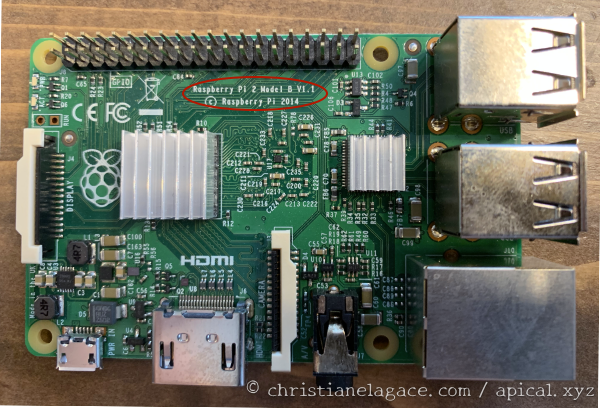
Raspberry Pi 3B

Raspberry Pi 4

Connecteurs
Si le boîtier du Pi ne vous permet pas de lire les informations sur la carte, sachez que les connecteurs sont différents entre certains modèles du Raspberry Pi.
Remarquez que les connecteurs des modèles 2B et 3B sont à peu près identiques. Cependant, la position des DEL vous permet de différencier les modèles.
De plus, si vous avez de bons yeux, vous verrez que le modèle 3B possède une antenne Wi-Fi alors que le modèle 2B n'en avait pas.
Raspberry Pi 2B
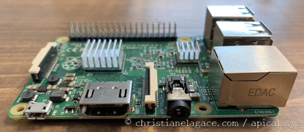
Les DEL du modèle 2B sont positionnées près du GPIO.
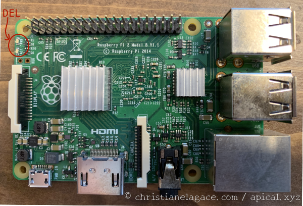
Raspberry Pi 3B

L'antenne Wi-Fi du modèle 3B est positionnée près du GPIO.
Notez que si vous avez un modèle 3B+, l'antenne apparaît beaucoup plus petite. Elle est positionnée au même endroit et ressemble à un petit carré rougeâtre.
Les DEL sont positionnées près du connecteur d'alimentation.
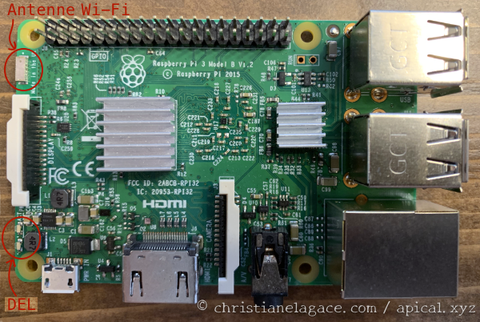
Raspberry Pi 4
La présence de deux ports micro HDMI pour brancher des écrans est la caractéristique la plus évidente du Raspberry Pi 4.

Modèle et révision à l'aide d'une commande au terminal
Si vous avez un système d'exploitation installé sur la carte micro SD, par exemple Raspberry Pi OS ou HassOS, entrez une des commandes suivantes au terminal afin d'en connaître d'avantage.
Pour obtenir le numéro de modèle et la révision :
Terminal
cat /proc/device-tree/model
Raspberry Pi 2B
Résultat à l'écran
Raspberry Pi 2 Model B Rev 1.1
Raspberry Pi 3B
Résultat à l'écran
Raspberry Pi 3 Model B Rev 1.2
Raspberry Pi 4B
Résultat à l'écran
Raspberry Pi 4 Model B Rev 1.2
Information détaillée à l'aide d'une commande au terminal
Pour obtenir encore plus d'informations :
Terminal
cat /proc/cpuinfo
Raspberry Pi 2B
Résultat à l'écran
processor : 0
model name : ARMv7 Processor rev 5 (v7l)
BogoMIPS : 38.40
Features : half thumb fastmult vfp edsp neon vfpv3 tls vfpv4 idiva idivt vfpd32 lpae evtstrm
CPU implementer : 0x41
CPU architecture: 7
CPU variant : 0x0
CPU part : 0xc07
CPU revision : 5
processor : 1
model name : ARMv7
Processor rev 5 (v7l)
BogoMIPS : 38.40Features : half thumb fastmult vfp edsp neon vfpv3 tls vfpv4 idiva idivt vfpd32 lpae evtstrm
CPU implementer : 0x41
CPU architecture: 7
CPU variant : 0x0
CPU part : 0xc07
CPU revision : 5
processor : 2
model name : ARMv7 Processor rev 5 (v7l)
BogoMIPS : 38.40
Features : half thumb fastmult vfp edsp neon vfpv3 tls vfpv4 idiva idivt vfpd32 lpae evtstrm
CPU implementer : 0x41
CPU architecture: 7
CPU variant : 0x0
CPU part : 0xc07
CPU revision : 5
processor : 3
model name : ARMv7
Processor rev 5 (v7l)
BogoMIPS : 38.40Features : half thumb fastmult vfp edsp neon vfpv3 tls vfpv4 idiva idivt vfpd32 lpae evtstrm
CPU implementer : 0x41
CPU architecture: 7
CPU variant : 0x0
CPU part : 0xc07
CPU revision : 5
Hardware : BCM2835
Revision : a01041
Serial : 00000000dde81138
Model : Raspberry Pi 2 Model B Rev 1.1
Raspberry Pi 3B
Résultat à l'écran
processor : 0
model name : ARMv7 Processor rev 4 (v7l)
BogoMIPS : 38.40
Features : half thumb fastmult vfp edsp neon vfpv3 tls vfpv4 idiva idivt vfpd32 lpae evtstrm crc32
CPU implementer : 0x41
CPU architecture: 7
CPU variant : 0x0
CPU part : 0xd03
CPU revision : 4
processor : 1
model name : ARMv7 Processor rev 4 (v7l)
BogoMIPS : 38.40
Features : half thumb fastmult vfp edsp neon vfpv3 tls vfpv4 idiva idivt vfpd32 lpae evtstrm crc32
CPU implementer : 0x41
CPU architecture: 7
CPU variant : 0x0
CPU part : 0xd03
CPU revision : 4
processor : 2
model name : ARMv7 Processor rev 4 (v7l)
BogoMIPS : 38.40
Features : half thumb fastmult vfp edsp neon vfpv3 tls vfpv4 idiva idivt vfpd32 lpae evtstrm crc32
CPU implementer : 0x41
CPU architecture: 7
CPU variant : 0x0
CPU part : 0xd03
CPU revision : 4
processor : 3
model name : ARMv7 Processor rev 4 (v7l)
BogoMIPS : 38.40
Features : half thumb fastmult vfp edsp neon vfpv3 tls vfpv4 idiva idivt vfpd32 lpae evtstrm crc32
CPU implementer : 0x41
CPU architecture: 7
CPU variant : 0x0
CPU part : 0xd03
CPU revision : 4
Hardware : BCM2835
Revision : a02082
Serial : 00000000dfa8f8ea
Model : Raspberry Pi 3 Model B Rev 1.2
Raspberry Pi 4B
Résultat à l'écran
processor : 0
model name : ARMv7
Processor rev 3 (v7l)
BogoMIPS : 108.00
Features : half thumb fastmult vfp edsp neon vfpv3 tls vfpv4 idiva idivt vfpd32 lpae evtstrm crc32
CPU implementer : 0x41
CPU architecture: 7
CPU variant : 0x0
CPU part : 0xd08
CPU revision : 3
processor : 1
model name : ARMv7
Processor rev 3 (v7l)
BogoMIPS : 108.00
Features : half thumb fastmult vfp edsp neon vfpv3 tls vfpv4 idiva idivt vfpd32 lpae evtstrm crc32
CPU implementer : 0x41
CPU architecture: 7
CPU variant : 0x0
CPU part : 0xd08
CPU revision : 3
processor : 2
model name : ARMv7
Processor rev 3 (v7l)
BogoMIPS : 108.00
Features : half thumb fastmult vfp edsp neon vfpv3 tls vfpv4 idiva idivt vfpd32 lpae evtstrm crc32
CPU implementer : 0x41
CPU architecture: 7
CPU variant : 0x0
CPU part : 0xd08
CPU revision : 3
processor : 3
model name : ARMv7
Processor rev 3 (v7l)
BogoMIPS : 108.00
Features : half thumb fastmult vfp edsp neon vfpv3 tls vfpv4 idiva idivt vfpd32 lpae evtstrm crc32
CPU implementer : 0x41
CPU architecture: 7
CPU variant : 0x0
CPU part : 0xd08
CPU revision : 3
Hardware : BCM2711
Revision : c03112
Serial : 1000800013a8d1d9
Model : Raspberry Pi 4 Model B Rev 1.2
32 ou 64 bits?
L'information affichée par la commande cat /proc/cpuinfo permet de savoir si le Raspberry Pi fonctionne en 32 ou en 64 bits.
Sur la ligne , si vous voyez ARMv7 ou moins, c'est du 32 bits.
Si vous voyez AMRv8, c'est que le Pi a une architecture en 64 bits.
Une autre technique permet de retrouver clairement l'information. Elle nécessite l'installation de l'utilitaire lshw (LiSt HardWare).
Terminal
sudo apt-get install lshw
Une fois l'utilitaire installé, lancez la commande lshw :
Terminal
sudo lshw
Vous verrez clairement si le Pi a une architecture 32 ou 64 bits.
Voici ce que j'obtiens avec un Raspberry Pi 3B+ :
Résultat à l'écran
raspberrypi
description: ARMv7 Processor rev 4 (v7l)
product: Raspberry Pi 3 Model B Rev 1.2
serial: 00000000dea8f9ea
width: 32 bits
capabilities: smp
*-core
description: Motherboard
physical id: 0
*-cpu:0
description: CPU
product: cpu
physical id: 0
bus info: cpu@0
size: 1200MHz
capacity: 1200MHz
capabilities: half thumb fastmult vfp edsp neon vfpv3 tls vfpv4 idiva idivt vfpd32 lpae evtstrm crc32 cpufreq
*-cpu:1
description: CPU
product: cpu
physical id: 1
bus info: cpu@1
size: 1200MHz
capacity: 1200MHz
capabilities: half thumb fastmult vfp edsp neon vfpv3 tls vfpv4 idiva idivt vfpd32 lpae evtstrm crc32 cpufreq
*-cpu:2
description: CPU
product: cpu
physical id: 2
bus info: cpu@2
size: 1200MHz
capacity: 1200MHz
capabilities: half thumb fastmult vfp edsp neon vfpv3 tls vfpv4 idiva idivt vfpd32 lpae evtstrm crc32 cpufreq
*-cpu:3
description: CPU
product: cpu
physical id: 3
bus info: cpu@3
size: 1200MHz
capacity: 1200MHz
capabilities: half thumb fastmult vfp edsp neon vfpv3 tls vfpv4 idiva idivt vfpd32 lpae evtstrm crc32 cpufreq
*-memory
description: System memory
physical id: 4
size: 923MiB
*-usbhost
product: DWC OTG Controller
vendor: Linux 5.10.52-v7+ dwc_otg_hcd
physical id: 1
bus info: usb@1
logical name: usb1
version: 5.10
capabilities: usb-2.00
configuration: driver=hub slots=1 speed=480Mbit/s
*-usb
description: USB hub
product: SMC9514 Hub
vendor: Standard Microsystems Corp.
physical id: 1
bus info: usb@1:1
version: 2.00
capabilities: usb-2.00
configuration: driver=hub maxpower=2mA slots=5 speed=480Mbit/s
*-usb:0
description: Ethernet interface
product: SMSC9512/9514 Fast Ethernet Adapter
vendor: Standard Microsystems Corp.
physical id: 1
bus info: usb@1:1.1
logical name: eth0
version: 2.00
serial: b8:27:eb:a8:f9:ea
size: 100Mbit/s
capacity: 100Mbit/s
capabilities: usb-2.00 ethernet physical tp mii 10bt 10bt-fd 100bt 100bt-fd autonegotiation
configuration: autonegotiation=on broadcast=yes driver=smsc95xx driverversion=5.10.52-v7+ duplex=full firmware=smsc95xx USB 2.0 Ethernet ip=192.168.29.10 link=yes maxpower=2mA multicast=yes port=twisted pair speed=100Mbit/s
*-usb:1
description: Communication device
product: Aeotec Z-Stick Gen5 (ZW090) - UZB
vendor: Sigma Designs, Inc.
physical id: 2
bus info: usb@1:1.2
version: 0.00
capabilities: usb-2.00
configuration: driver=cdc_acm maxpower=100mA speed=12Mbit/s
*-usb:2
description: Keyboard
product: Dell USB Keyboard
vendor: Dell
physical id: 3
bus info: usb@1:1.3
version: 3.06
capabilities: usb-1.10
configuration: driver=usbhid maxpower=70mA speed=2Mbit/s
*-network
description: Wireless interface
physical id: 2
logical name: wlan0
serial: b8:27:eb:fd:ac:bf
capabilities: ethernet physical wireless
configuration: broadcast=yes driver=brcmfmac driverversion=7.45.98.94 firmware=01-3b33decd multicast=yes wireless=IEEE 802.11
Quantité de mémoire vive (RAM)
La commande free permet de connaître l'état de la mémoire vive. L'option -h (qui tient pour human) affiche en plus les unités de mesure.
Terminal
free -h
Résultat à l'écran
total used free shared buff/cache available
Mem: 923Mi 228Mi 207Mi 0.0Ki 488Mi 690Mi
Swap: 230Mi 0B 230Mi
On voit que ce Raspberry Pi possède 923 Mo de mémoire vive.
Dans les fait, il faut arrondir au multiple de 1024 le plus près. Ce Pi est donc considéré avoir 1 Go de mémoire vive.
Il est également possible de connaître la quantité de mémoire vive à l'aide d'une inscription sur la puce de mémoire vive. Évidemment, il ne doit pas y avoir de dissipateur thermique sur cette puce pour que l'information soit disponible.
Par exemple, l'inscription D9WHV indique qu'il y a 4 Go de mémoire vive.
D'autres valeurs sont fournies ici : https://www.canadarobotix.com/blogs/how-to/how-to-tell-which-raspberry-pi-4-ram-size-do-i-have.
Pour plus d'information
« Checking Your Raspberry Pi Revision Number & Board Version ». Rasperry Pi Spy. https://www.raspberrypi-spy.co.uk/2012/09/checking-your-raspberry-pi-board-version/
4.22 Effectuer une impression d'écran sous Raspberry Pi OS
Je vous présente ici quelques utilitaires qui permettent de faire des impressions d'écran sous Linux.
fbcat
fbcat est un petit utilitaire tout simple qui effectue une impression d'écran de la console.
Il peut fonctionner même sans environnement graphique, par exemple sous Raspberry Pi OS Lite.
Il génère un fichier au format .ppm (Portable Pixmap Format).
Pour l'installer :
Terminal
sudo apt install fbcat
Et pour l'utiliser :
Terminal
fbcat > nom_fichier.ppm
Voici ce que j'obtiens si je lance cette commande dans une fenêtre SSH alors que le Pi n'a aucun écran branché.

Et si je branche un clavier et un écran sur le Raspberry Pi et que je relance la commande, j'obtiendrai exactement ce que je vois à l'écran.
fbgrab
L'utilitaire fbgrab fonctionne un peu comme fbcat sauf que le résultat est un fichier .png et que la syntaxe ne nécessite pas de redirection (>).
Il est automatiquement installé quand vous installez fbcat.
Pour l'utiliser :
Terminal
fbgrab nom_fichier.png
setterm
La commande setterm (SET TERMinal atttibutes) permet d'enregistrer dans un fichier texte ce qui est affiché dans le terminal.
Ce n'est pas tout à fait une impression d'écran mais les informations trouvées sont les mêmes puisque le terminal n'affiche que du texte.
Terminal
sudo setterm --dump
Par défaut, les informations seront enregistrées dans un fichier nommé screen.dump dans le dossier courant.
Un fichier .dump est un simple fichier texte.
Il est possible de spécifier le nom du fichier désiré. Vous pouvez même utiliser l'extension .txt si vous préférez.
Terminal
sudo setterm --dump --file mon_fichier.txt
Voici ce que j'obtiens si je lance la commande setterm dans une fenêtre SSH alors que le Pi n'a aucun écran branché.
Fichier screen.dump
[ OK ] Started Manage Sound Card State (restore and store).
Starting Save/Restore Sound Card State...
Starting Snappy daemon...
[ OK ] Started triggerhappy global hotkey daemon.
[ OK ] Started System Logging Service.
[ OK ] Started Raise network interfaces.
[ OK ] Started Deferred execution scheduler.
[ OK ] Started rng-tools.service.
[ OK ] Started Save/Restore Sound Card State.
[ OK ] Reached target Sound Card.
[ OK ] Started Login Service.
[ OK ] Started WPA supplicant.
[ OK ] Started Avahi mDNS/DNS-SD Stack.
[ OK ] Started dphys-swapfile - set up, mount/unmount, and delete a swap file.
Starting Authorization Manager...
[ OK ] Started Authorization Manager.
[ OK ] Started Modem Manager.
[ OK ] Started Check for Raspberry Pi EEPROM updates.
[ OK ] Started LSB: Switch to ondemand cpu governor (unless shift key is pressed).
[ OK ] Started Snappy daemon.
Starting Wait until snapd is fully seeded...
Starting Time & Date Service...
[ OK ] Started Time & Date Service.
[ OK ] Started Wait until snapd is fully seeded.
Starting Load/Save RF Kill Switch Status...
[ OK ] Started Configure Bluetooth Modems connected by UART.
[ OK ] Started Load/Save RF Kill Switch Status.
[ OK ] Created slice system-bthelper.slice.
Starting Raspberry Pi bluetooth helper...
[ OK ] Started Raspberry Pi bluetooth helper.
Starting Bluetooth service...
[ OK ] Started Bluetooth service.
[ OK ] Reached target Bluetooth.
Starting Hostname Service...
[ OK ] Started Hostname Service.
[ OK ] Started dhcpcd on all interfaces.
[ OK ] Reached target Network.
Starting Permit User Sessions...
[ OK ] Reached target Network is Online.
[ OK ] Started Unattended Upgrades Shutdown.
Starting MariaDB 10.3.34 database server...
Starting Fail2Ban Service...
Starting OpenBSD Secure Shell server...
Starting Network Time Service...
Starting The Apache HTTP Server...
Starting /etc/rc.local Compatibility...
My IP address is 192.168.1.113
[ OK ] Started Permit User Sessions.
[ OK ] Started Fail2Ban Service.
[ OK ] Started /etc/rc.local Compatibility.
Starting Terminate Plymouth Boot Screen...
Starting Hold until boot process finishes up...
Raspbian GNU/Linux 10 raspberrypi tty1
raspberrypi login:
Et si je branche un clavier et un écran sur le Raspberry Pi et que je relance la commande, j'obtiendrai exactement ce que je vois à l'écran.
Fichier screen.dump
pi@raspberrypi:~ $ hostname -I
192.168.1.113
pi@raspberrypi:~ $ sudo setterm --dump
Scrot
Scrot (SCReenshOT) et un autre utilitaire qui permet d'effectuer des impressions d'écran.
Il est plus puissant que les autres mais il nécessite qu'un environnement graphique soit installé et ce, même pour faire une capture d'écran de la console.
Il est installé par défaut avec Raspberry Pi OS with Desktop.
Je vous propose ici une astuce pour pouvoir tout de même l'utiliser avec Raspberry Pi OS Lite.
Installation d'un environnement graphique sous Raspberry Pi OS Lite
Dans la version Lite de Raspberry Pi OS, vous devrez d'abord installer un environnement graphique.
Si vous tentez d'appeler Scrot alors qu'aucun environnement graphique n'est disponible, vous obtiendrez le message « giblib error: Can't open X display. It *is* running, yeah? ».
Je vous propose d'installer XFCE, un environnement graphique léger.
Terminal
sudo apt install xfce4
Si vous ne souhaitez pas que votre Raspberry Pi démarre toujours en environnement graphique :
Terminal
sudo systemctl set-default multi-user.target
Vous devrez cependant passer en mode graphique avant d'utiliser Scrot.
Terminal
sudo service lightdm start
Installation de Scrot
Une fois que vous avez un environnement graphique en place, vous pouvez installer Scrot.
Terminal
sudo apt install scrot
Utilisation
Si votre clavier dispose d'une touche ImpÉcr ou Print Screen, vous n'avez qu'à appuyer sur cette touche et une image de l'écran sera enregistrée dans votre dossier personnel.
Sinon, vous pouvez ouvrir une fenêtre Terminal et entrer la commande :
Terminal
scrot
Ceci créera une image de l'écran au format .png, placée dans le dossier courant. Pour connaître le chemin de ce dossier, entrez la commande pwd (Print Working Directory). Sous Raspberry Pi OS, il s'agit par défaut du dossier /home/pi.
L'image créée incluera la fenêtre Terminal.
Pour ne pas avoir la fenêtre Terminal dans l'image, il est possible de demander un délai. Par exemple, avec la commande :
Terminal
scrot -d 3
Vous aurez un délai de 3 secondes pour refermer la fenêtre Terminal avant que l'impression d'écran soit faite.
4.23 sudo : demander le mot de passe ou non
Lorsqu'on exécute une commande au Terminal du Raspberry Pi avec sudo, il est possible de configurer le Pi pour qu'il demande le mot de passe ou non.
La configuration est dans le fichier /etc/sudoers.d/010_pi-nopasswd.
Pour l'éditer :
Terminal
sudo nano /etc/sudoers.d/010_pi-nopasswd
Pour que le mot de passe soit demandé à chaque commande sudo :
Fichier /etc/sudoers.d/010_pi-nopasswd
pi ALL=(ALL) PASSWD: ALL
Pour ne plus exiger le mot de passe quand une commande débute par sudo :
Fichier /etc/sudoers.d/010_pi-nopasswd
pi ALL=(ALL) NOPASSWD: ALL
Note : il faut utiliser le mot pi peu importe comment s'appelle votre usager sur le Raspberry Pi.
4.24 Comment bien rouler un câble réseau
Rouler un câble réseau semble une tâche simple mais pour bien le rouler, il faut connaître la technique.
Je vous propose cette technique qui permet de protéger les câbles de l'entortillement tout en évitant que les câbles s'emmèlent.
5. Dépannage sur le Raspberry Pi (troubleshooting)
5.1 ping vers le Raspberry Pi ne fonctionne pas
Problème :
Lorsque vous essayez de faire un ping vers le Raspberry Pi à partir de votre ordinateur, vous obtenez le message « Request timeout ».
Contexte :
- MacOS Mojave
- Raspberry Pi 3B+
- Raspbian 10 (Buster)
Cause possible :
L'adresse IP utilisée n'est pas la bonne.
Solution proposée :
Pour connaître l'adresse IP du Pi, branchez un clavier et un écran au Raspberry Pi et entrez la commande :
Terminal
hostname -I
Résultat à l'écran
pi@raspberrypi:~ $ hostname -I
192.168.1.145
Autre cause possible :
L'ordinateur et le Raspberry Pi ne sont pas sur le même réseau.
Solution proposée :
Changez le réseau de votre ordinateur ou du Raspberry Pi afin que les deux appareils puissent communiquer ensemble.
Autre cause possible :
Le Pi n'a pas de connexion réseau. Vous le savez puisque lorsque vous faites ping 8.8.8.8 (serveur DNS de Google) à partir du Raspberry Pi, vous obtenez le message « Request timeout ».
Autre façon de le savoir : dans une fenêtre de commande sur votre ordinateur Mac ou Linux, entrez la commande traceroute (ou TRACERT sous Windows) suivie de l'adresse IP du Pi. Si le Pi n'a pas de connexion réseau, vous obtiendrez le message « Host is down ».
Attention : vous obtiendrez le même résultat si vous travaillez avec la mauvaise adresse IP.
Résultat à l'écran
MBPdeMonNom:~ monnom$ traceroute 192.168.1.145
traceroute to 192.168.1.145 (192.168.1.145), 64 hops max, 52 byte packets
1 * * *
2 * *traceroute: sendto: No route to host
traceroute: wrote 192.168.1.145 52 chars, ret=-1
*
traceroute: sendto: Host is down
3 traceroute: wrote 192.168.1.145 52 chars, ret=-1
*traceroute: sendto: Host is down
traceroute: wrote 192.168.1.145 52 chars, ret=-1
*traceroute: sendto: Host is down
traceroute: wrote 192.168.1.145 52 chars, ret=-1
^Z
Solution proposée :
Suivez les conseils prodigués ici pour régler votre problème : https://docs.dataplicity.com/docs/get-pi-connected-to-the-internet.
Autre cause possible :
Problème de connectivité intermittent sur votre ordinateur.
Solution proposée :
Ceci arrive parfois sur mon MacBook Pro. Il suffit de désactiver puis de réactiver le Wi-Fi pour régler le problème.

Autre cause possible :
Il y a une configuration du réseau qui empêche les communications pair-à-pair (peer-to-peer).
Solution proposée :
Validez les configurations du réseau avec le gestionnaire du réseau.
En dernier recours
Si vous n'arrivez toujours pas à réaliser le ping et que toutes vos configurations semblent correctes, il vous reste l'option de connecter un clavier et un écran au Raspberry Pi plutôt que de s'y connecter via SSH.
Si c'est d'une autre communication réseau dont vous avez besoin, essayez de brancher le Pi avec un fil RJ-45.
5.2 Le Pi n'a aucune adresse IP
Problème :
Lorsque vous tentez de vous connecter via SSH à votre Raspberry Pi, rien ne fonctionne.
Et si vous branchez un clavier et un écran au Pi et que vous demandez l'adresse IP à l'aide de la commande hostname -I, il n'y en a aucune.
Résultat à l'écran
pi@raspberrypi:~ $ hostname -I
pi@raspberrypi:~ $
Contexte :
- Raspbian 11 (bullseye)
Cause possible :
Le Wi-Fi n'a pas été configuré sur le Pi.
Solution proposée :
Pour configurer le Wi-Fi sans interface graphique, suivez ces instructions.
Elles permettent de faire la configuration sans nécessiter écran ni clavier.
Notez que vous pourriez également effectuer les configurations directement sur le Pi en éditant plutôt le fichier /etc/wpa_supplicant/wpa_supplicant.conf.
- Insérez la carte micro SD dans votre ordinateur.
- Créez un fichier nommé wpa_supplicant.conf à la racine de la partition boot.
Sous Windows, utilisez l'utilitaire de texte de votre choix.
Sous Mac ou Linux, utilisez ces commandes :
Terminalcd /Volumes/boot
sudo nano wpa_supplicant.confRemarque : ce fichier sera automatiquement déplacé vers le dossier /etc/wpa_supplicant la première fois que le Pi sera démarré.
- Copiez les instructions suivantes dans le fichier. Ajustez le nom du réseau et le mot de passe pour y accéder. Si vous n'êtes pas au Canada, changez CA pour le code à 2 lettres de votre pays.
Fichier wpa_supplicant.conf
country=CA
ctrl_interface=DIR=/var/run/wpa_supplicant GROUP=netdev
update_config=1network={
ssid="NOM-DU-RESEAU"
psk="MOT-DE-PASSE-DU-RESEAU"
} - Il est possible de configurer plusieurs réseaux si tel est votre besoin. Simplement ajouter une autre section network. Par exemple, pour pemettre de se brancher à un réseau non sécurisé (sans mot de passe) :
Fichier wpa_supplicant.conf
...
network={
...
}
network={
ssid="NOM-DU-RESEAU"
key_mgmt=NONE
} - Si vous avez utilisé nano pour éditer le fichier, appuyez sur Ctrl + X puis O (ou Y si votre OS est en anglais) pour enregistrer les modifications.
- Redémarrez ensuite le Pi.
Autre cause possible :
Les configurations sont faites pour un réseau 5 GHz alors que le Raspberry Pi modèle 3B+ que vous utilisez ne supporte que le 2.4 Ghz.
Solution proposée :
Modifiez les configurations pour utiliser le réseau 2.4 GHz ou changez le Raspberry Pi pour un modèle qui supporte le 5 GHz (à partir de la version 4).
Remarquez que sur certains réseaux, le 2.4 GHz et le 5 GHz portent le même nom alors le réseau de la bonne fréquence sera automatiquement utilisé.
Autre cause possible :
Le fichier wpa_supplicant.conf cause problème pour une raison inconnue.
Ceci fait en sorte que lorsque vous faites sudo raspi-config pour configurer le Wi-Fi, vous obtenez le message « Could not communicate with wpa_supplicant ».

Dans certains cas, vous pourriez avoir plutôt le message « No wireless interface found ».
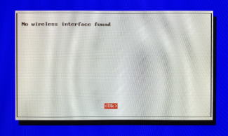
Solution proposée :
Supprimez le fichier wpa_supplicant.conf :
Terminal
sudo rm /etc/wpa_supplicant/wpa_supplicant.conf
Recréez ce fichier comme suit :
Terminal
sudo nano /etc/wpa_supplicant/wpa_supplicant.conf
Inscrivez-y les informations pour votre réseau Wi-Fi tel que montré plus haut puis redémarrez le Pi.
Autre cause possible :
Un problème a été détecté pendant que le système tentait de recourir au service DHCP lors du démarrage, par exemmple un problème de voltage trop bas.
L'outil rfkill (Radio Frequency Kill) a bloqué le Wi-Fi pour protéger le système.
D'ailleurs, ceci peut être vérifié à l'aide de cette commande :
Terminal
sudo rfkill list
Résultat à l'écran
0: phy0: Wireless LAN
Soft blocked: yes
Hard blocked: no
1: hci0: Bluetooth
Soft blocked: yes
Hard blocked: no
Solution proposée :
Débarrez le Wi-Fi avec cette commande puis redémarrez le système.
Terminal
sudo rfkill unblock wifi
Demandez à Raspberry Pi OS d'activer le Wi-Fi :
Terminal
sudo ip link set wlan0 up
Vérifiez maintenant que vous avez une adresse IP :
Terminal
hostname -I
Si vous n'avez toujours pas d'adresse, redémarrez le Raspberry Pi.
Terminal
sudo reboot
Si le problème persiste, entrez la commande suivante pour réinitialiser le réseau.
Terminal
sudo wpa_supplicant -c /etc/wpa_supplicant/wpa_supplicant.conf -i wlan0
5.3 Le Pi n'a que l'adresse 127.0.0.1
Problème :
Lorsque vous demandez au Pi son adresse IP il ne donne que l'adresse 127.0.0.1.
Contexte :
- Raspbian 10 (buster)
Cause possible :
Vous avez utilisé la mauvaise commande.
Solution proposée :
Utilisez la commande hostname -I (notez le i majuscule) pour obtenir l'adresse IP.
Si vous utilisez un i minuscule, c'est normal de ne voir que 127.0.0.1.
5.4 Aucun accès au réseau (message Wi-Fi is currently blocked by rfkill)
Problème :
Lorsque vous démarrez votre Raspberry Pi, vous n'obtenez aucune adresse IP. La console affiche entre autres le message « Wi-Fi is currently blocked by rfkill ».
Ceci peut également se produire après des modifications aux configurations du réseau. Vous obtenez alors le message « RTNETLINK answers: Operation not possible due to RF-kill ».
Contexte :
- Rasbian 10 (buster)
Cause possible :
Un problème a été détecté pendant que le système tentait de recourir au service DHCP pendant le démarrage, par exemmple un problème de voltage trop bas.
L'outil rfkill (Radio Frequency Kill) a bloqué le Wi-Fi pour protéger le système.
D'ailleurs, ceci peut être vérifié à l'aide de cette commande :
Terminal
sudo rfkill list
Résultat à l'écran
0: phy0: Wireless LAN
Soft blocked: yes
Hard blocked: no
1: hci0: Bluetooth
Soft blocked: yes
Hard blocked: no
Solution proposée :
Débarrez le Wi-Fi avec cette commande puis redémarrez le système.
Terminal
sudo rfkill unblock wifi
Demandez à Raspberry Pi OS d'activer le Wi-Fi :
Terminal
sudo ip link set wlan0 up
Vérifiez maintenant que vous avez une adresse IP :
Terminal
hostname -I
Si vous n'avez toujours pas d'adresse, redémarrez le Raspberry Pi.
Terminal
sudo reboot
Si le problème persiste, entrez la commande suivante pour réinitialiser le réseau.
Terminal
sudo wpa_supplicant -c /etc/wpa_supplicant/wpa_supplicant.conf -i wlan0
5.5 Aucun accès au réseau (message Could not communicate with wpa_supplicant)
Problème :
Lorsque vous démarrez votre Raspberry Pi, vous n'obtenez aucune adresse IP. Lorsque vous faites sudo raspi-config pour configurer le Wi-Fi, vous obtenez le message « Could not communicate with wpa_supplicant ».
Dans certains cas, vous pourriez avoir plutôt le message « No wireless interface found ».
Contexte :
- Rasbian 10 (buster)
Cause possible :
Le fichier wpa_supplicant.conf cause problème pour une raison inconnue.
Solution proposée :
Supprimez le fichier wpa_supplicant.conf :
Terminal
sudo rm /etc/wpa_supplicant/wpa_supplicant.conf
Recréez ce fichier comme suit :
Terminal
sudo nano /etc/wpa_supplicant/wpa_supplicant.conf
Inscrivez-y les informations pour votre réseau Wi-Fi.
Fichier wpa_supplicant.conf
country=CA
ctrl_interface=DIR=/var/run/wpa_supplicant GROUP=netdev
update_config=1
network={
ssid="NOM-DU-RESEAU"
psk="MOT-DE-PASSE-DU-RESEAU"
}
Appuyez sur Ctrl + X puis O (ou Y si votre OS est en anglais) pour enregistrer les modifications.
Une fois les informations entrées, demandez à Raspberry Pi OS de les prendre en compte :
Terminal
sudo ip link set wlan0 up
Vérifiez maintenant que vous avez une adresse IP :
Terminal
hostname -I
Si vous n'avez toujours pas d'adresse, redémarrez le Raspberry Pi.
Terminal
sudo reboot
Si le problème persiste, entrez la commande suivante pour réinitialiser le réseau.
Terminal
sudo wpa_supplicant -c /etc/wpa_supplicant/wpa_supplicant.conf -i wlan0
5.6 Aucun accès réseau (message Network is unreachable)
Problème :
Lorsque vous démarrez votre Raspberry Pi, vous n'obtenez aucune adresse IP. Lorsque vous faites ping 8.8.8.8 pour vérifier si Google peut être rejoint, vous obtenez le message « Network is unreachable ».
Résultat à l'écran
pi@raspberry:~ $ ping 8.8.8.8
connect: Network is unreachable
De plus, quand vous demandez d'afficher la table des routes à l'aide de la commande route -n, vous obtenez une table vide.
Résultat à l'écran
pi@raspberry: ~ $ route -n
Kernel IP routing table
Destination Gateway Genmask Flags Metric Ref Use Iface
Autre test : quand vous vérifiez l'état du réseau sans fil à l'aide de la commande cat /sys/class/net/wlan0/operstate, vous obtenez le mot down.
Résultat à l'écran
pi@raspberry: ~ $ cat /sys/class/net/wlan0/operstate
down
Contexte :
- Rasbian 10 (buster)
Cause possible :
Les configurations du réseau sans fil ne sont pas correctes.
Solution proposée :
Attention : cette solution s'applique à un réseau géré par dhcpcd. Depuis Raspberry Pi OS Bookworm en 2023, le gestionnaire de réseau par défaut est plutôt Network Manager.
Alors que la carte micro SD est insérée dans votre ordinateur, créez un fichier nommé wpa_supplicant.conf à la racine de sa partition boot.
Sous Windows, utilisez l'utilitaire de texte de votre choix.
Sous Mac ou Linux, utilisez ces commandes :
Terminal
cd /Volumes/boot
sudo nano wpa_supplicant.conf
Copiez les instructions suivantes dans le fichier. Ajustez le nom du réseau et le mot de passe pour y accéder.
Si vous utilisez un Raspberry Pi 3B+ ou moins récent, vous devez utiliser un Wi-Fi de 2.4 GHz.
Même avec le Raspberry Pi 4, il arrive que le Wi-Fi de 5 GHz soit moins stable. Choisir un Wi-Fi de 2.4 GHz pourrait régler le problème.
Fichier wpa_supplicant.conf
country=CA
ctrl_interface=DIR=/var/run/wpa_supplicant GROUP=netdev
update_config=1
network={
ssid="NOM-DU-RESEAU"
psk="MOT-DE-PASSE-DU-RESEAU"
}
Redémarrez ensuite le Raspberry Pi pour que les configurations soient prises en compte.
5.7 Erreur « Connection refused »
Problème :
Lorsque vous tentez de vous brancher via SSH sur le Raspberry Pi, vous obtenez le message « Connection refused ».
Résultat à l'écran
monnom@MacBook-Pro-de-MonNom ~ %ssh pi@192.168.1.145
ssh: connect to host 192.168.1.145 port 22: Connection refused
Contexte :
- Raspberry Pi 4
- Raspberry Pi OS Lite 10 (Buster)
Cause possible :
SSH n'a pas été activé sur le Raspberry Pi.
Solution proposée :
Si vous avez accès à un clavier et à un écran branchés sur le Pi, entrez les commandes suivantes :
Terminal
sudo systemctl enable ssh
sudo systemctl start ssh
Si vous ne disposez pas d'un écran et d'un clavier pour travailler directement sur le Pi, vous pouvez activer SSH avec une méthode dite headless.
Il s'agit d'insérer la carte micro SD dans le lecteur de cartes de votre ordinateur et de créer un petit fichier vide nommé ssh à la racine de la partition boot.
Sous Mac ou Linux, le fichier sera créé à l'aide de la commande suivante :
Terminal
touch /Volumes/boot/ssh
Sous Windows, vous pouvez ouvrir le gestionnaire de fichier, vous rendre à la racine de la partition boot puis créer le fichier à l'aide d'un clic droit / / . Attention : le fichier doit s'appeler ssh sans extension.
Une fois le fichier créé, vous pouvez retirer la carte micro SD de façon sécuritaire, l'insérer dans le Rapsberry Pi puis mettre le Pi sous tension.
Remarquez qu'au prochain démarrage du Pi, ce fichier disparaîtra mais le SSH demeurera actif.
Autre cause possible :
Vous avez tenté de vous connecter avec des informations erronées trop souvent alors l'adresse IP de votre ordinateur a été bannie (liste noire ou black list).
Ceci est probablement dû au fait que l'administrateur du Raspberry Pi a installé un logiciel du genre fail2ban et l'a configuré pour protéger le Raspberry Pi contre des tentatives d'attaques par force brute.
Pour savoir si c'est le cas pour vous, branchez un écran et un clavier au Raspberry Pi puis entrez cette commande :
Terminal du Raspberry Pi
sudo iptables -L -nv
Si vous obtenez le message « iptables: command not found », vous devrez installer iptables.
Terminal du Raspberry Pi
sudo apt install iptables
Vous saurez que votre adresse IP a été bannie si vous voyez la valeur REJECTED dans la colonne target.
Résultat à l'écran
pi@raspberrypi:~ $ sudo iptables -L -nv
Chain INPUT (policy ACCEPT 0 packets, 0 bytes)
pkts bytes target prot opt in out source destination
1 64 f2b-sshd tcp -- * * 0.0.0.0/0 0.0.0.0/0 multiport dports 22
Chain FORWARD (policy ACCEPT 0 packets, 0 bytes)
pkts bytes target prot opt in out source destination
Chain OUTPUT (policy ACCEPT 0 packets, 0 bytes)
pkts bytes target prot opt in out source destination
Chain f2b-sshd (1 references)
pkts bytes target prot opt in out source destination
1 64 REJECT all -- * * 192.168.1.150 0.0.0.0/0 reject-with icmp-port-unreachable
0 0 RETURN all -- * * 0.0.0.0/0 0.0.0.0/0
Solution proposée :
La première étape consiste à trouver le nom du service qui vous a banni.
Terminal du Raspberry Pi
sudo fail2ban-client status | grep "Jail list"
Si c'est effectivement vos tentatives de connection via SSH qui sont en cause, vous verrez sshd.
Résultat à l'écran
`- Jail list: sshd
Pour que la connection SSH soit à nouveau possible à partir de votre adresse IP, lancez cette commande après avoir ajusté votre adresse IP.
Terminal du Raspberry Pi
sudo fail2ban-client set sshd unbanip 192.168.1.150
Pour plus d'information
« How to Unban an IP properly with Fail2Ban ». Server Fault. https://serverfault.com/questions/285256/how-to-unban-an-ip-properly-with-fail2ban
5.8 Erreur « Le fichier Release n'est pas encore valide »
Problème :
Lorsque vous essayez de faire une mise à jour de Raspbian à l'aide de la commande sudo apt-get update, vous obtenez un message du genre « Le fichier « Release » pour http://raspbian.raspberrypi.org/raspbian/dists/buster/InRelease n'est pas encore valable. Les mises à jour depuis ce dépôt ne s'effectueront pas ».
ou, en anglais :
« Release file for http://raspbian.raspberrypi.org/raspbian/dists/buster/InRelease is not valid yet. Updates for this repository will not be applied. ».
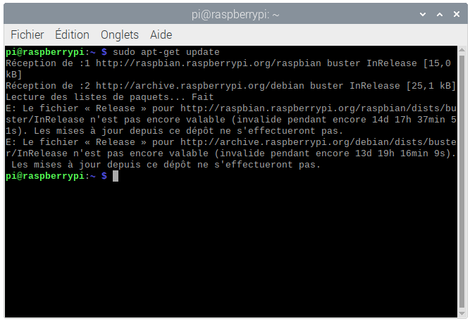
Contexte :
- Raspberry Pi 3B
- Raspbian 10 (Buster)
Cause possible :
L'horloge du Raspberry Pi n'est pas bien configurée.
Solution proposée :
Mettez l'horloge à jour à l'aide de la commande suivante, en remplaçant A:M:J HH:mm:ss par la date et l'heure voulues :
Terminal
sudo timedatectl set-time 'A:M:J HH:mm:ss'
Autre cause possible :
Le fichier Release présent à la racine du dépôt n'est pas à jour. Ce fichier permet notamment de vérifier l'intégrité des paquets.
Autre solution proposée :
Si vous faites confiance à ce site, relancez la commande à l'aide de l'option --allow-releaseinfo-change.
Terminal
sudo apt-get update --allow-releaseinfo-change
Autre cause possible :
Un problème de réseautique empêche le Raspberry Pi d'accéder aux ressources internet dont il a besoin.
Autre solution proposée :
Si vous n'avez pas accès à la modification des règles de routage, vous pouvez tenter de passer d'un réseau WI-FI à un réseau câblé ou vice-versa. Il arrive que les règles soient différentes entre les deux.
Si vous travaillez avec un Raspberry Pi 3B, sachez qu'il ne supporte que le Wi-Fi 2.4 GHz alors que le 3B+ et les suivants supportent également le 5 GHz.
5.9 Écran noir our message « Digital power saving mode » à l'écran
Problème :
Lorsque vous branchez un moniteur à votre Raspberry Pi, l'écran est tout noir. Un rectangle avec le message « DIGITAL POWER SAVING MODE » ou « DVI-D POWER SAVING MODE » apparaît puis disparaît.

Parfois,le message peut être plutôt « Câble de signal non connecté ».

Ce message indique généralement que l'écran ne reçoit pas de signal de l'ordinateur.
Contexte :
- Raspberry Pi 4
Cause possible :
Le câble pour connecter l'écran est mal branché ou défectueux.
Solution proposée :
Vérifier les branchements et si le problème n'est pas réglé, essayer avec un autre câble.
Autre cause possible :
Le signal envoyé par le Raspberry Pi vers l'écran n'est pas suffisamment fort pour que l'écran détecte la présence du Pi.
Solution proposée :
Branchez-vous au Pi via SSH (ou retirez la carte micro SD et insérez-la dans votre ordinateur pour pouvoir modifier ses fichiers) puis éditez le fichier /boot/config.txt. Ceci peut être fait à l'aide de l'éditeur Nano :
Terminal
sudo nano /boot/config.txt
Vous devez enlever le # devant la ligne hdmi_force_hotplug afin d'activer cette configuration.
Fichier /boot/config.txt
# uncomment if hdmi display is not detected and composite is being output
hdmi_force_hotplug=1

Pour sortir de Nano en enregistrant les modifications, appuyez sur Ctrl + o, appuyez sur Entrée puis faites Ctrl + x.
Vous devrez redémarrer le Pi pour que les nouvelles configurations soient prises en compte.
Si ça ne fonctionne pas, enlevez le # devant une seconde configuration : hdmi_drive=2. Enregistrez puis redémarrez le Pi.
Fichier /boot/config.txt
# uncomment to force a HDMI mode rather than DVI. This can make audio work in
# DMT (computer monitor) modes
hdmi_drive=2
Si le problème n'est toujours pas réglé, éditez à nouveau le fichier /boot/config.txt et cette fois, enlevez le # devant la configuration hdmi_safe = 1. Remettez un # devant les deux autres lignes.
Fichier /boot/config.txt
# uncomment if you get no picture on HDMI for a default "safe" mode
hdmi_safe=1
Si tout se passe bien, vous devriez voir l'affichage du Raspberry Pi mais en très gros et légèrement déformé. Même si l'affichage n'est pas intéressant, ceci indique que le signal peut se rendre, donc il n'y a pas un problème de câble et on sait que le Pi est capable d'envoyer un signal assez fort.
Voici ce que je vois sous Raspberry Pi OS complet. Sous Raspberry Pi OS Lite, même déformation mais sans interface graphique.
La solution finale consiste généralement à essayer d'enlever et de remettre un # devant les différentes configurations dans le fichier /boot/config.txt.
Pour plus d'information
« Affichage HDMI de la Raspberry Pi qui ne marche pas, la solution ! ». Raspberry Pi. https://raspberry-pi.fr/hdmi-raspberry-pi-marche-pas-solution/
5.10 WARNING: REMOTE HOST IDENTIFICATION HAS CHANGED!
Problème :
Lorsque vous tentez de vous connecter au Raspberry Pi via SSH, vous obtenez le message « WARNING: REMOTE HOST IDENTIFICATION HAS CHANGED! »
Résultat à l'écran
MacBook-Pro-de-MonNom:~ monnom$ ssh pi@192.168.1.145
@@@@@@@@@@@@@@@@@@@@@@@@@@@@@@@@@@@@@@@@@@@@@@@@@@@@@@@@@@@
@ WARNING: REMOTE HOST IDENTIFICATION HAS CHANGED! @
@@@@@@@@@@@@@@@@@@@@@@@@@@@@@@@@@@@@@@@@@@@@@@@@@@@@@@@@@@@
IT IS POSSIBLE THAT SOMEONE IS DOING SOMETHING NASTY!
Someone could be eavesdropping on you right now (man-in-the-middle attack)!
It is also possible that a host key has just been changed.
The fingerprint for the ECDSA key sent by the remote host is
SHA256:XuhSy6HE1PkibkA17UpvKSLNuStDY73bfGhip7KVQ6U.
Please contact your system administrator.
Add correct host key in /Users/monnom/.ssh/known_hosts to get rid of this message.
Offending ECDSA key in /Users/monnom/.ssh/known_hosts:10
ECDSA host key for 192.168.1.145 has changed and you have requested strict checking.
Host key verification failed.
Contexte :
- Raspbian 10 (buster)
Cause possible :
Il y a un problème avec le fichier known_hosts car les clés SSH ont changé.
Solution proposée :
Retirez l'information sur cette adresse IP du fichier known_hosts comme suit en prenant soin d'ajuster l'adresse IP du Pi.
Terminal de l'ordinateur
ssh-keygen -R 192.168.1.145
Si vous utilisez un port pour la connexion SSH, par exemple le port 22222, la syntaxe sera comme suit.
Notez la présence des guillemets alentour de l'adresse IP et du port. Ceci est nécessaire avec un shell zsh puisque ce shell interprète les crochets carrés comme une série de choix.
Terminal de l'ordinateur
ssh-keygen -R "[192.168.1.145]:22222"
La prochaine fois que vous tenterez de vous connecter, vous devrez confirmer que vous désirez vous connecter.
Résultat à l'écran
MacBook-Pro-de-MonNom:~ monnom$ ssh-keygen -R 192.168.1.145
# Host 192.168.1.145 found: line 10
/Users/monnom/.ssh/known_hosts updated.
Original contents retained as /Users/monnom/.ssh/known_hosts.old
MacBook-Pro-de-MonNom:~ monnom$ ssh pi@192.168.1.145
The authenticity of host '192.168.1.145 (192.168.1.145)' can't be established.
ECDSA key fingerprint is SHA256:XuhSy6HE1PkibkA17UpvKSLNuStDY73bfGhip7KVQ6U.
Are you sure you want to continue connecting (yes/no/[fingerprint])? yes
Warning: Permanently added '192.168.1.145' (ECDSA) to the list of known hosts.
pi@192.168.1.145's password:
5.11 Erreur « Rejected request from RFC1918 IP to public server address »
Problème :
Lorsque vous tentez d'accéder à votre boîte domotique à l'aide de son sous-domaine configuré chez un founisseur spécialisé dans la gestion des DNS dynamiques, vous obtenez le message « Rejected request from RFC1918 IP to public server address ».

Contexte :
- Adresse IP dynamique
- Sous domaine réservé chez un founisseur spécialisé dans la gestion des DNS dynamiques, par exemple Duck DNS
Cause possible :
Vous tentez d'utiliser le sous-domaine alors que vous êtes déjà dans le même réseau que la boîte domotique.
Solution proposée :
Utilisez un périphérique branché sur un réseau distinc pour pouvoir utiliser le sous-domaine. Par exemple, utilisez un appareil mobile avec données mobiles (Wi-Fi désactivé).
Si vous désirez accéder à la boîte domotique à partir d'un appareil branché sur le même réseau, utilisez plutôt la technique de branchement local. Par exemple, avec Jeedom, utilisez [apical_lien_interne][installation_de_jeedom_et_premier_acces,la technique présentée ici,acceder][/apical_lien_interne].
5.12 Erreur « Under-voltage detected! »
Problème :
Lorsque vous branchez un écran sur votre Raspberry Pi, vous voyez à l'occasion un message du genre « [ 4969.034201] Under-voltage detected! (0x00050005) ».

Contexte :
- Raspberry Pi 3B+
Cause possible :
L'alimentation du Raspberry Pi ne fournit pas un voltage assez élevé (voltage requis : 5V).
Solution proposée :
Utilisez un meilleur bloc d'alimentation.
5.13 Erreur « Could not get lock /var/lib/dpkg/lock-frontend - open »
Problème :
Lorsque vous tentez d'installer un paquet avec apt install, vous voyez un message du genre « E: Could not get lock /var/lib/dpkg/lock-frontend - open (11: Resource temporarily unavailable) » suivi de « E: Unable to acquire the dpkg frontend lock (/var/lib/dpkg/lock-frontend), is another process using it? ».

Contexte :
- Raspberry Pi 3B+
- Raspberry Pi OS Lite 10 (Buster)
Cause possible :
Un processus est déjà en train d'utiliser le fichier /var/lib/dpkg/lock-frontend.
Solution proposée :
Patientez puis réessayez la commande.
Si cela ne fonctionne toujours pas, redémarrez le Raspberry Pi.
Pour plus d'information
« How To Fix `Could not get lock /var/lib/dpkg/lock - open (11 Resource temporarily unavailable)` Errors ». Linux Unprising. https://www.linuxuprising.com/2018/07/how-to-fix-could-not-get-lock.html
5.14 Erreur « Authentication token manipulation error »
Problème :
Lorsque vous tentez de réinitialiser le mot de passe du Raspberry Pi à l'aide de la technique qui consiste à ajouter init=/bin/sh au fichier cmdline.txt, vous obtenez le message « Authentication token manipulation error ».
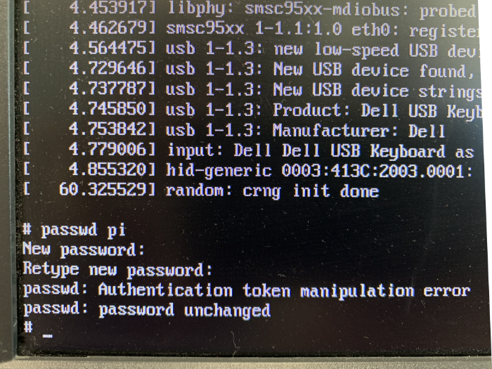
Contexte :
- Raspberry Pi 4
- Raspberry Pi OS Lite 10 (Buster)
Cause possible :
Le système de fichiers n'a pas été monté.
Solution proposée :
À l'invite de commande (#), entrez cette commande :
Terminal
mount -o remount, rw /
5.15 Erreur « Sap driver initialization failed »
Problème :
Lorsque vous tentez de vérifier l'état du service Bluetooth sur le Raspberry Pi, vous obtenez le message « Sap driver initialization failed ».
Résultat à l'écran
pi@raspberrypi:~ $ service bluetooth status
● bluetooth.service - Bluetooth service
Loaded: loaded (/lib/systemd/system/bluetooth.service; enabled; vendor preset: enabled)
Active: active (running) since Tue 2022-09-06 20:51:20 BST; 12min ago
Docs: man:bluetoothd(8)
Main PID: 598 (bluetoothd)
Status: "Running"
Tasks: 1 (limit: 4915)
CGroup: /system.slice/bluetooth.service
└─598 /usr/lib/bluetooth/bluetoothd
Sep 06 20:51:20 raspberrypi systemd[1]: Starting Bluetooth service...
Sep 06 20:51:20 raspberrypi bluetoothd[598]: Bluetooth daemon 5.50
Sep 06 20:51:20 raspberrypi systemd[1]: Started Bluetooth service.
Sep 06 20:51:20 raspberrypi bluetoothd[598]: Starting SDP server
Sep 06 20:51:20 raspberrypi bluetoothd[598]: Bluetooth management interface 1.18 initialized
Sep 06 20:51:20 raspberrypi bluetoothd[598]: Sap driver initialization failed.
Sep 06 20:51:20 raspberrypi bluetoothd[598]: sap-server: Operation not permitted (1)
Sep 06 20:51:20 raspberrypi bluetoothd[598]: Failed to set privacy: Rejected (0x0b)
Contexte :
- Raspberry Pi 4
- Raspberry Pi OS Lite 10 (Buster)
Cause possible :
...
Solution proposée :
...
5.16 Erreur « /usr/libexec/sftp-server: not found »
Problème :
Lorsque vous tentez de copier un fichier entre votre ordinateur et un Raspberry Pi en utilisant la commande scp, vous obtenez le message « sh: /usr/libexec/sftp-server: not found ».
Contexte :
- Raspberry Pi 4
- Raspberry Pi OS Lite 10 (Buster)
Cause possible :
Votre ordinateur (le client) utilise OpenSSH 9.0 ou plus récent.
Par défaut, cette version est basée sur le protocole SFTP, ce qui est incompatible avec le Pi (le serveur).
Solution proposée :
Ajoutez l'option -O (lettre o majuscule) pour forcer l'utilisation du protocole FTP.
Terminal
scp -O pi@192.168.1.145:/dossier/sous-dossier/monfichier.extension /dossierlocal
6. Python
6.1 Qu'est-ce que Python ?
Selon Wikipédia :
Python est un langage de programmation objet, multi-paradigme et multiplateformes. [...] Il peut s'utiliser dans de nombreux contextes et s'adapter à tout type d'utilisation grâce à des bibliothèques spécialisées. Il est cependant particulièrement utilisé comme langage de script pour automatiser des tâches simples mais fastidieuses.
La première version publique de Python est sortie en 1991. Son auteur, le programmeur Guido van Rossum, était un fan de la série télévisée Monty Python's Flying Circus, une série humoristique sous forme de sketches. C'est de cette série que le langage de programmation tient son nom.
Python est un langage de programmation interprété. Il est reconnu pour sa syntaxe concise et élégante ainsi que la rapidité avec laquelle il permet de développer un programme. De plus, il est possible de lui programmer des modules d'extension en C ou en C++.
Ces caractéristiques combinées au fait qu'il est un logiciel libre font de lui un langage de progammation très prisé.
Pour plus d'information
« Learning Python: From Zero to Hero ». Medium. https://medium.freecodecamp.org/learning-python-from-zero-to-hero-120ea540b567
« The Python Tutorial ». Python. https://docs.python.org/3.6/tutorial/index.html
« Python 3.6.4 documentation ». Python. https://docs.python.org/3.6/index.html
« Apprendre le langage de programmation python ». apprendre-python.com. http://apprendre-python.com/
« Apprenez à programmer en Python ». Open Classrooms. https://openclassrooms.com/courses/apprenez-a-programmer-en-python
« Introduction au langage de programmation Python 3 ». Fabrice Sincère. http://fsincere.free.fr/isn/python/cours_python.php?version=3
« Petites choses diverses à savoir pour débuter en Python ». Formation Django. http://www.formation-django.fr/python/petites-choses-a-savoir.html
6.2 Python 2.X vs 3.X
Comme tout langage de programmation, Python a subi de nombreuses modifications à mesure qu'il évoluait et prenait de la maturité. À un certain stade, ses concepteurs sont venus à un point où ils ont dû briser la compatibilité avec les anciennes versions afin d'offrir de nouvelles possibilités.
C'est pour cette raison qu'il existe deux « familles » de programmes Python : ceux qui sont conçus pour la branche 2.X et ceux pour la branche 3.X.
La version 2.7 est la dernière version de la première branche. Aucune autre version majeure ne sera produite pour la branche 2.X. Elle n'évoluera donc plus mais en revanche, elle est très stable et ceci est vu d'un bon oeil par de nombreux programmeurs.
Dans la branche 3.X, qui évolue depuis 2008, de nombreuses modifications et ajouts visent à améliorer l'expérience des programmeurs et les performances des programmes. C'est pourquoi cette branche est vue comme le présent et le futur de Python.
Si vous hésitez entre Python 2.X et 3.X, vous devriez choisir 3.X. Le seul cas où Python 2.X devrait être utilisé est lorsque vous n'avez pas le choix, par exemple lorsque vous avez besoin d'un paquet qui n'a pas été migré vers 3.X.
Voici, à titre d'exemple, une différence importante entre Python 2.X et 3.X : la commande print est devenue une fonction. À elle seule, cette différence a empêché la rétro-compatibilité avec de nombreux programmes.
Python 2.X
print "Hello World"
Python 3.X
print("Hello World")
Vérifier si Python est installé
Dans une fenêtre Terminal, vous pouvez lancer cette commande pour vérifier si Python est installé et obtenir le numéro de version :
Terminal
python --version
Sous Raspberry Pi OS 10 (Buster), cette commande donne le résultat suivant :
Résultat à l'écran
Python 2.7.16
Plusieurs versions de Python peuvent cohabiter. Pour vérifier si Python 3 est installé :
Terminal
python3 --version
Résultat à l'écran
Python 3.7.3
Ainsi, on voit que lors de l'installation de Raspberry Pi OS 10 (Buster), Python 2.7 et Python 3.7 sont installés par défaut.
Afficher la version de Python par programmation
Il est possible d'afficher la version de Python par programmation. Ceci générera un affichage à la console :
Python
import platform
platform.python_version()
Pour plus d'information
« Should I use Python 2 or Python 3 for my development activity? ». Python. https://wiki.python.org/moin/Python2orPython3
6.3 Shebang ou hash bang : #!
Les script Python commencent généralement par une ligne qui débute par les caractères #! suivis par le chemin de l'interpréteur Python. Cette ligne se nomme shebang ou hash bang.
La présence du shebang permet d'appeler le script Python sans avoir à préciser le nom de son interpréteur.
L'usager devra avoir les droits d'exécution sur le script.
Terminal
chmod u+x mon_script.py
Le script pourra être appelé comme suit :
Terminal
./mon_script.py
Shebang qui utilise la variable d'environnement $PATH
La meilleure technique consiste à utiliser /usr/bin/env devant le nom de l'interpréteur.
Cette formulation fait en sorte que le système retrouvera le chemin exact de l'interpréteur à partir de la variable d'environnement $PATH de l'usager.
Ceci assure un maximum de compatibilité si le script doit être exécuté sur un autre système ou même par un autre usager.
Python
#!/usr/bin/env python3
Shebang fixe
Parfois, on retrouve plutôt ceci, qui correspond au chemin donné lorsqu'on entre la commande which python3 dans une fenêtre terminal.
Python
#!/usr/bin python3
Remarquez qu'il n'y a pas de barre oblique avant le mot python3.
Cette formulation fonctionne également mais elle risque de ne plus fonctionner si le script est utilisé sur un autre système ou par un autre usager.
Script sans shebang
Dans le cas où le script Phython ne débute pas par un shebang, il faudra ajouter python3 devant son nom pour pouvoir l'exécuter.
Notez qu'à ce moment, l'usager n'a pas besoin d'avoir les droits d'exécution sur le fichier.
Terminal
python3 mon_script.py
6.4 Exécuter un programme Python dans une fenêtre Terminal
Pour tester un programme Python, il est possible de l'exécuter dans une fenêtre Terminal.
Déplacez-vous dans le dossier qui contient le programme puis tapez son nom avec son extension.
Exemple sous Windows :
Fenêtre de commande DOS
cd \Users\votrenom\Documents\mondossier
helloworld.py
Exemple sous Mac ou Linux :
Terminal
cd ~/mondossier
./helloworld.py
Il est également possible d'exéuter le programme en faisant appel à la commande python (pour Python 2.7) ou python3.
Terminal
cd ~/mondossier
python3 helloworld.py
6.5 Les structures de contrôle
Les structures de contrôles permettent de contrôler le flux d'un programme grâce à des conditions et à des boucles.
La condition
Ex :
Python
if nom == 'Annie':
...
elif nom == 'Toto':
...
else:
...
Note : l'indentation (4 espaces) est importante : c'est elle qui indique quand un bloc d'instruction se termine.
La boucle while
Pour boucler tant qu'une condition est vraie.
Ex :
Python
while x < 10:
...
La boucle for
Cette boucle permet de faire une itération un nombre défini de fois.
Ex :
Python
for i in range(10):
...
Boucler dans les éléments d'une liste
Ex :
Python
valeurs = ['a', 'b', 'c']
for valeur in valeurs:
...
6.6 Utilisation d'un paquet ou d'un module
Pour utiliser [apical_lien_interne][les_paquets_et_modules_python,un module ou un paquet][/apical_lien_interne], peut importe s'il fait partie de la bibliothèque standard ou s'il est externe, faut débuter le script Python par une instruction import.
Bien entendu, un module ou un paquet externe [apical_lien_interne][installer_un_paquet_python,devra d'abord être installé sur votre poste de travail][/apical_lien_interne].
Par exemple, pour utiliser le module calendar :
Python
import calendar
...
if calendar.isleap(annee):
...
Instruction from ... import ...
Lorsqu'on utilise l'instruction import, chaque classe ou fonction importée doit être précédée par le nom du module ou du paquet, comme démontré plus haut avec calendar.isleap().
Il est possible de modifier ce comportement à l'aide de la syntaxe from ... import *. Les classes et fonctions seront désormais accessibles comme si elles faisaient partie du coeur de Python.
Python
from calendar import *
...
if isleap(annee):
...
Autre exemple :
Python
from tkinter import *
...
canevas = Canvas(fenetre, width=150, height=150)
...
Paquet contenant plusieurs modules
Puisqu'un paquet est un dossier qui contient des modules, Python devait avoir un moyen de comprendre ce qu'il doit faire lorsqu'on lui lance une instruction import sur un paquet.
Dans les faits, lorsqu'il rencontre le nom d'un paquet dans une instruction import, Python recherchera un fichier nommé __init__.py dans ce dossier. Autrement dit, l'importation d'un paquet consiste à importer le module __init__ présent dans ce paquet.
Certains paquets sont configurés pour que tous leurs modules soient importés automatiquement. D'autres laissent le soin au programmeur d'importer seulement les modules désirés.
C'est pourquoi, lorsque vous avez besoin d'une fonction ou d'une classe définie dans un autre module du paquet, il se peut que vous ayez besoin de faire une importation précise du module désiré.
La syntaxe à utiliser est sous la forme :
Syntaxe Python
from paquet.module import fonction
ou
Syntaxe Python
from paquet.module import Classe
ou encore, si le nombre de classes ou de fonctions à utiliser est important :
Syntaxe Python
from paquet.module import *
Ex :
Python
from tkinter.font import Font
police = Font(family='Helvetica', size=12, weight='normal')
...
Pour plus d'information
« Python 101: All about imports ». Mouse vs Python. https://www.blog.pythonlibrary.org/2016/03/01/python-101-all-about-imports/
« The Python Standard Library ». Python. https://docs.python.org/3/library/index.html
« UsefulModules ». Python. https://wiki.python.org/moin/UsefulModules
« PyPI - the Python Package Index ». Python. https://pypi.python.org/pypi
« Python 3 Module of the Week ». PyMOTW-3. https://pymotw.com/3/index.html
« Les imports en Python ». Sam & Max. http://sametmax.com/les-imports-en-python/
« Structuring Your Project - Packages ». The Hitchhiker's guide to Python. http://docs.python-guide.org/en/latest/writing/structure/#packages
6.7 À quel endroit Python recherche-t-il les modules?
Si un programme Python utilise un module sans savoir à quel endroit il est placé, vous obtiendrez une erreur du genre :
Résultat à l'écran
Traceback (most recent call last):
File "./mon_programme.py", line 4, in <module>
import mon_module
ModuleNotFoundError: No module named 'mon_module'
Lorsqu'il rencontre une instruction import, Python recherchera un fichier dont le nom est identique au nom du module, avec l'extension .py.
Il recherchera ce fichier :
- dans le dossier courant
- dans la liste des dossiers de la variable d'environnement Python sys.path
- dans la liste des dossiers de la variable d'environnement de l'OS PYTHONPATH
sys.path
Pour connaître la valeur de sys.path, entrez ce code à la ligne de commande Python (rappel : entrez python3 dans une fenêtre Terminal pour obtenir la ligne de commande Python).
Python
>>> import sys
>>> for path in sys.path:
... print(path)
Appuyez deux fois sur Retour et vous verrez la liste des dossiers apparaître.
Sur Raspberry Pi OS, voici ce que j'obtiens.
Résultat à l'écran
/usr/lib/python37.zip
/usr/lib/python3.7
/usr/lib/python3.7/lib-dynload
/usr/local/lib/python3.7/dist-packages
/usr/lib/python3/dist-packages
Vous pouvez ajouter un dossier à sys.path par programmation :
Python
import sys
sys.path.append("/chemin/dossier-a-ajouter")
PYTHONPATH
Pour connaître la valeur de PYTHONPATH sur un système Linux ou Mac :
Terminal
echo $PYTHONPATH
Et sur un système Windows :
Invite de commande (CMD)
echo %PYTHONPATH%
Il est possible d'ajouter du contenu à cette variable. Mais attention : ceci sera valable jusqu'à ce que l'ordinateur soit redémarré.
Sour Linux ou Mac :
Terminal
export PHTYONPATH=$PYTHONPATH:/chemin/dossier-a-ajouter
ou
Terminal
cd /chemin/dossier-a-ajouter
export PYTHONPATH=$PYTHONPATH:$PWD
Sous Windows :
Invite de commande (CMD)
set PYTHONPATH=%PYTHONPATH%;C:\chemin\dossier-a-ajouter
Les dossiers ajoutés ainsi à PYTHONPATH seront automatiquement ajoutés à sys.path.
Si vous voulez faire un ajout permanent, ajoutez cette instruction dans le fichier .bashrc ou, si vous travaillez sous Windows, passez par le panneau de configuration.
Pour plus d'information
« Where does Python look for modules? ». Matthew Brett. https://bic-berkeley.github.io/psych-214-fall-2016/sys_path.html
« Python import, sys.path, and PYTHONPATH Tutorial ». Dev Dungeon. https://www.devdungeon.com/content/python-import-syspath-and-pythonpath-tutorial#:~:text=PYTHONPATH%20is%20related%20to%20sys,for%20modules%20when%20using%20import%20.
6.8 Les tableaux, listes et tuples
Tuple
En Python, un tuple est un tableau immuable et très performant. On utilisera les parenthèses pour l'initialiser.
Ex :
Python
valeurs = ('a', 'b', 'c')
Dans le cas où il y a un seul élément dans le tuple, on doit faire suivre cet élément par une virgule afin que Python comprenne qu'il ne s'agit pas d'une chaîne de caractères entourée de parenthèses.
Ex :
Python
valeurs = ('a',)
Liste
Une liste est un tableau modifiable de longueur variable. On utilisera les crochets carrés pour l'initialiser.
Ex :
Python
valeurs = ['a', 'b', 'c']
Tableau associatif (dictionnaire)
Un tableau associatif est caractérisé par des éléments qui portent un nom plutôt qu'un indice. On utilisera les accolades pour l'initialiser.
Ex :
Python
configuration = {
'menu': 'gauche',
'langue': 'fr'
}
...
valeur = configuration['langue']
6.9 Écrire nos propres fonctions
Il est très rare qu'une application soit écrite tout d'un bout sans utiliser de fonctions.
On utilisera souvent des fonctions qui font partie intégrante de Python (ex : print()). On parlera de fonctions préprogrammées.
On pourra également coder nos propres fonctions. On parlera alors de fonctions utilisateur, fonctions définies par l'utilisateur ou encore, en anglais, user-defined functions (UDF).
Quel est l'intérêt de coder nos propres fonctions ? Il y a différents raisons qui justifient ce choix :
- Le même code doit être exécuté à plusieurs endroits dans le programme ([apical_lien_interne][principe_dry_do_no_repeat_yourself,principe DRY : Do not Repeat Yourself][/apical_lien_interne]).
- Le code devient plus facile à comprendre si une partie du code est placé dans une fonction disticte (principe KISS : Keep It Simple, Stupid !).
- Il faut attacher du code à un événement (ex : un clic sur un bouton). La fonction permettra de délimiter le code à exécuter lorsque l'événement survient.
Comme dans tous les langages de programmation, lorsqu'on code une fonction, il y a deux étapes à réaliser :
- la déclaration de la fonction
- l'appel de la fonction
Déclaration de la fonction
Lorsqu'une fonction est déclarée, son code n'est pas exécuté tout de suite. Il le sera seulement lorsque la fonction sera appelée.
La déclaration d'une fonction se fait à l'aide du mot-clé def. Tout le code de la fonction sera décalé de 4 espaces par rapport au programme principal. Ainsi, Python saura que le code de la fonction est terminé lorsqu'il rencontrera une ligne qui n'est pas décalée.
Ex :
Python
def ma_fonction():
...
...
# cette ligne ne fait pas partie de la fonction
Appel de la fonction
Pour appeler une fonction, il faut écrire son nom suivi de parenthèses :
Python
# la fonction sera exécutée immédiatement
ma_fonction()
Il est également possible de passer des paramètres à la fonction.
Ex :
Python
def afficher_message(message):
...
print(message)
...
afficher_message('Bien le bonjour !')
Documentation de la fonction
Pour chacune des fonctions que vous coderez, il est d'usage de commencer par un commentaire Docstring qui indique ce que la fonction fait. Le commentaire Docstring est constitué d'une ou plusieurs lignes de texte entourées par des triples apostrophes (""").
Ex :
Python
def soumettre_click():
""" Enregistre les informations dans la base de données. """
...
Python
def ma_fonction():
""" Effectue telle ou telle action.
Ceci est un commentaire sur plusieurs lignes.
On laisse généralement une ligne blanche après la première ligne, qui est un sommaire.
Les triple-guillemets peuvent se refermer à droite de la dernière ligne ou encore sur la ligne suivante.
"""
...
Indicatif visuel du début du programme principal
En Python, il faut toujours placer une fonction avant le programme qui l'utilise. C'est pourquoi on retrouvera les définitions de fonctions en haut du programme et le programme principal dans le bas.
Puisque les fonctions doivent être définies avant le programme principal, il est pratique d'ajouter un commentaire qui indique clairement à quel endroit le programme principal commence.
Ex :
Python
def ma_fonction():
...
...
########## programme principal ##########
fenetre = Tk()
...
6.10 Utiliser une variable du programme principal dans une fonction (portée des variables)
Lorsqu'une application Python contient des fonctions utilisateur et que ces fonctions doivent utiliser des variables, il faut prendre le temps de comprendre la portée des variables.
La portée d'une variable (variable scope) indique à quel endroit elle peut être utilisée dans le programme.
Une variable qui est créée dans une fonction ne risque pas d'entrer en conflit avec une autre variable du même nom créée dans une autre fonction ni même avec une variable du même nom créée dans le programme principal.
La portée d'une variable est limitée à la fonction dans laquelle elle a été créée.
Passer un paramètre à la fonction
Il arrive cependant des cas où on voudra créer une variable dans le programme principal et utiliser cette même variable dans une fonction. La technique par excellence consiste à passer la variable en paramètre à la fonction.
Ex :
Python
def afficher_message(nom):
"""Affiche un message avec le nom saisi par l'usager."""
print('Bonjour, ' + nom + ' !')
########## programme principal ##########
nom = input('Quel est ton nom ? ')
afficher_message(nom)
Étendre la portée à l'aide de global
Certaines situations nous empêchent de passer des paramètres à une fonction. Ce sera le cas, notamment, lorsque la fonction est appelée par Python en réponse à un événement.
À ce moment, on pourra indiquer à Python que la variable qu'on utilise dans la fonction est la même que celle créée dans le programme principal. Ceci sera fait à l'aide du mot-clé global.
Soit le programme suivant, qui n'utilise ni paramètre, ni variable globale :
Python
def changer_nom():
"""Change la valeur de la variable nom sans affecter le programme principal."""
nom = 'abc'
########## programme principal ##########
nom = input('Quel est ton nom ? ')
changer_nom()
print('Bonjour, ' + nom + ' !')
Le message utilisera toujours le nom saisi par l'usager et ce, même si la fonction assigne la valeur 'abc' à une variable qui s'appelle elle aussi nom.
Si on voulait changer ce comportement :
Python
def changer_nom():
"""Change la valeur de la variable globale nom, ce qui affectera le programme principal."""
global nom
nom = 'abc'
########## programme principal ##########
nom = input('Quel est ton nom ? ')
changer_nom()
print('Bonjour, ' + nom + ' !')
Cette fois, le programme affichera toujours « Bonjour, abc ! ».
6.11 La programmation objet en Python
Même si les concepts de programmation orientée objet sont les mêmes d'un langage de programmation à l'autre, les différences de syntaxe peuvent parfois être déconcertantes.
Quelques faits saillants :
- Le nom de la classe est écrit [apical_lien_interne][Casse_Pascal_LaCassePascal,en casse Pascal][/apical_lien_interne]
") .
. - Si la classe hérite d'une autre classe, on met le nom de la classe de base entre parenthèses.
- Si la classe n'a pas de parent, on ne met pas de parenthèses.
- À l'intérieur de la classe, tout le code doit être placé dans une méthode. Seule exception : l'initialisation des variables de classe.
- Chaque méthode est déclarée avec le mot-clé def.
- Le constructeur s'appelle __init__.
- Le constructeur et les autres méthodes reçoivent toujours self comme premier paramètre.
- Lors de l'appel d'une méthode, on ignore le paramètre self puisque c'est le noyau qui se chargera de le passer en paramètre.
- Un point sépare le nom d'un objet de ses membres.
- Lorsqu'une méthode doit appeler une autre méthode de la classe, il faut faire précéder le nom par self.
Voici donc un exemple de classe écrite en Python pour vous guider pendant votre programmation.
Python
class MaClasse(ClasseDeBase):
# Attributs de classe
un_attribut_de_classe = 'valeur'
def __init__(self, parametre='Valeur par défaut'):
# Initialisation des attributs (variables d'instance)
self.un_attribut = parametre
self.un_autre_attribut = 'autre valeur'
def __str__(self):
return 'Chaîne qui représente l\'objet: %d, %s' % (self.un_attribut, self.un_autre_attribut)
def une_methode(self):
...
def une_autre_methode(self):
...
self.une_methode()
return ...
6.12 Passer un paramètre à un script Python
Il est possible de passer un ou plusieurs paramètres, aussi appelés arguments, à un script Python à partir de la ligne de commande.
Terminal
python3 monscript.py unparametre autreparametre
Pour lire la valeur des paramètres dans le script, il faut d'abord importer le module sys.
Python
import sys
Les paramètres sont contenus dans un tableau nommé sys.argv.
L'élément 0 du tableau est toujours le nom du script.
L'élément 1 est le premier argument, l'élément 2 est le second argument et ainsi de suite.
Python
nom_script = sys.argv[0]
premier_parametre = sys.argv[1]
deuxieme_parametre = sys.argv[2]
Si aucun paramètre n'est passé (paramètre optionnel)
Si le script tente de lire un paramètre alors qu'aucun n'a été passé, le script lèvera une exception de type IndexError.
Il faut donc toujours lire le paramètre dans un try... except.
Lorsqu'aucun paramètre n'est passé, le programme réagira en conséquence. Il pourrait, par exemple, fournir une valeur par défaut.
Python
try:
valeur = sys.argv[1]
except IndexError:
valeur = "x"
Paramètre numérique
À la base, les paramètres sont tous de type texte.
Si le paramètre doit être utilisé comme un nombre, il faut d'abord le convertir.
Python
try:
iterations = int(sys.argv[1])
...
for i in range(iterations):
...
Paramètre numérique optionnel
En combinant les deux approches précédentes, on s'assure que dans le cas d'un paramètre numérique, le programme fonctionne s'il n'est pas passé ou si sa valeur n'est pas numérique.
Python
try:
iterations = int(sys.argv[1])
except IndexError:
iterations = 1 # arrivera ici si aucun paramètre n'est passé
except:
iterations = 1 # arrivera ici si le paramètre n'était pas numérique
Pour plus d'information
« Python Command Line Arguments ». Real Python. https://realpython.com/python-command-line-arguments/#the-sysargv-array
6.13 Forcer l'arrêt d'un script
Quand vous lancez un script, que ce soit un script bash ou un script Python, il pourrait arriver une situation où vous devez en forcer l'arrêt, par exemple si le script entre dans une boucle sans fin.
Ctrl+C
La façon la plus intéressante pour terminer un programme est d'appuyez sur les touches Ctrl+C. Ceci émet un signal [apical_lien_interne][sigint,SIGINT][/apical_lien_interne] qui arrête gentiment le programme.
Dans le cas d'un script Python, SIGINT lève une exception de type KeyboardInterrupt qui interrompt le code et qui peut être attrrapée et traitée au même titre que toute autre exception.
Ctrl+Z
Dans le cas où Ctrl+C ne fonctionne pas, on peut se tourner vers une action un peu plus corsée : appuyer sur les touches Ctrl+Z . Ceci émet un signal [apical_lien_interne][sigtstp_et_sigstop,SIGTSTP][/apical_lien_interne] qui arrête immédiatement le programme.
Dans les faits, le programme est mis en pause, ce qui peut causer des problèmes, par exemple en ne libérant pas les ports associés au processus.
Dans le cas d'un script Python, SIGTSTP ne laisse pas le temps au script de se terminer normalement.
Il est à noter que certains scripts pourrraient ignorer ce signal.
Tuer le processus
Dans d'autres situations plus complexes, par exemple si le script est lancé par un intermédiaire comme une boîte domotique, alors on n'a pas accès à Ctrl+C ou Ctrl+Z pour l'arrêter. À ce moment, il faut tuer le processus à l'aide de la commande kill ou pkill.
pkill
La commande pkill tue un processus à partir de son nom.
Le plus simple est de lui fournir, à l'aide de -f, le nom du script Python que l'on veut arrêter.
Terminal
sudo pkill -f mon_script.py
Par défaut, pkill envoit un signal [apical_lien_interne][sigkill,SIGKILL][/apical_lien_interne] qui tue brutalement le processsus sans lui laisser la chance de se terminer de façon gracieuse (libération de la mémoire et tout et tout).
Aucun script ne peut ignorer ce signal.
kill
La commande kill tue un processus à partir de son numéro généré par le système d'exploitation.
Pour faut trouver le numéro du processus qui correspond au script, on peut utiliser la commande ps. On précisera qu'on ne veut voir que les processus dont le nom contient python.
Terminal
ps -ef | grep python
Vous obtiendrez un résultat semblable à cet extrait :
Résultat à l'écran
pi@raspberrypi:~ $ ps -ef | grep python
pi 891 1260 0 11:16 pts/0 00:00:00 python3 clignote.py
pi 1288 1260 0 07:57 pts/0 00:00:00 python3 allume_led.py
La deuxième colonne indique le numéro du processus. Ainsi, pour terminer le script clignote.py, il faut faire :
Terminal
kill -9 891
Il est possible d'utiliser le nom du signal à envoyer plutôt que son numéro :
Terminal
kill -SIGKILL 891
Ces deux commandes envoient un signal [apical_lien_interne][sigkill,SIGKILL][/apical_lien_interne] qui tue brutalement le processsus sans lui laisser la chance de se terminer de façon gracieuse (libération de la mémoire et tout et tout).
Aucun script ne peut ignorer ce signal.
Remarquez que le même résultat que Ctrl+C peut être obtenu en entrant ceci dans une seconde fenêtre Terminal :
- kill -2 suivi du numéro de processus
ou
- kill -SIGINT suivi du numéro de processus
Pour plus d'information
« Signal (IPC) ». Wikipedia. https://en.wikipedia.org/wiki/Signal_(IPC)
« kill - Envoyer un signal à un processus ». MAN Linux Magique. http://www.man-linux-magique.net/man1/kill.html
« What to do when a Linux desktop freezes? - If all else fails, you Raise The Elephant ». Stack Exchange. https://unix.stackexchange.com/questions/31818/what-to-do-when-a-linux-desktop-freezes#answer-33891
6.14 Erreurs fréquentes
Information à venir...
Pour plus d'information
« Invalid Syntax in Python: Common Reasons for SyntaxError ». Real Python. https://realpython.com/invalid-syntax-python/
6.15 La syntaxe Python vs autres langages
Si vous avez déjà travaillé avec quelques langages de programmation, vous savez que la syntaxe varie d'un langage à l'autre. Parfois, les différences sont minimes mais d'autre fois, elles peuvent être déroutantes.
Pour vous aider à vous acclimater à Python, voici quelques éléments de syntaxe à connaître et leur comparaison avec d'autres langages.
| Python | JavaScript | PHP | C# | |
|---|---|---|---|---|
| Chaînes de caractères |
nom = "Annie" ou nom = 'Annie' Les deux sont équivalents mais les programmeurs préfèrent généralement les apostrophes. Les triples apostrophes ou guillemets permettent de générer une chaîne incluant les sauts de ligne et tabulations. Très utile pour générer du HTML ou du JSON. html = ''' <ul> <li>Premier élément</li> <li>Deuxième élément</li> </ul> ''' L'ajout d'un b devant une chaîne transformera cette chaîne en une chaîne d'octets, requis dans certains contextes précis. chaine_octets = b"Bonjour" L'ajout d'un f devant une chaîne permet de la formater. nom = 'Annie' salutation = f'Bonjour, {nom}!' |
nom = "Annie"; ou nom = 'Annie'; |
$nom = "Annie"; ou $nom = 'Annie'; La version avec guillemets permet d'interpréter des variables dans la chaîne. $texte = "Bonjour $nom"; La version avec apostrophes est très légèrement plus rapide. |
nom = "Annie"; |
| Booléens |
True False
Sensible à la casse |
true false
Sensible à la casse |
True ou true ou TRUE False ou false ou FALSE
Insensible à la casse |
true false
Certaines fonctions C# retournent cependant True ou False...
bool valeur = true; |
| Opérateurs booléens |
and or not |
&& || ! |
&& ou and || ou or ! |
&& || ! |
| Concaténation |
nom_complet = prenom + ' ' + nom_famille |
nomComplet = prenom + ' ' + nomFamille; |
$nomComplet = $prenom . ' ' . $nomFamille; |
nomComplet = prenom + '" " + nomFamille; |
| Incrémentation |
i += 1 |
i += 1; (affectation après addition) i++ (opérateur d'incrémentation en suffixe) ++i (opérateur d'incrémentation en préfixe) |
$i += 1; $i++ (post-incrémente) ++$i (pré-incrémente) |
i += 1; i++ ++i |
| Conversion de type | nombre= int(saisie) |
nombre = parseInt(saisie); |
$nombre = (int)$saisie; ou $nombre = intval($saisie); |
nombre = Convert.ToInt32(saisie); ou Int32.TryParse(saisie, out nombre); |
| Affichage à l'écran |
print(nom) ou, pour éviter les sauts de ligne : print(nom, end='')
On peut interpréter des variables dans une chaîne : |
L'affichage se fait à l'aide de manipulations du DOM : balise.innerHTML = nom;
Si on utilise jQuery : $(balise).html(nom);
Pour afficher à la console : console.log(nom);
Pour afficher dans une fenêtre popup : window.alert(nom); |
echo $nom; |
Dans une page Web : Response.Write(nom);
À la console : Console.WriteLine(nom); |
| Lecture à la console | nombre = input('Veuillez entrer un nombre : ') |
Console.WriteLine("Veuillez entrer un nombre : "); nombre = Console.ReadLine(); |
||
| Tableaux |
valeurs = ['a', 'b', 'c'] En Python, on dit que c'est une liste (modifiable, longueur variable) Il existe également des tuples (immuables mais plus performants) : valeurs = ('a', 'b', 'c') ou, s'il y a un seul élément dans le tuple : valeurs = ('a',) |
var valeurs = ['a', 'b', 'c']; | $valeurs = ['a', 'b', 'c']; | string[] valeurs = {"a", "b", "c"}; |
| Tableaux associatifs (dictionnaires) |
configuration = { 'menu': 'gauche', 'langue': 'fr' } ... valeur = configuration['langue'] |
var configuration = { 'menu' : 'gauche', 'langue': 'fr' ... valeur = configuration['langue']; |
$configuration = [ 'menu' => 'gauche', 'langue' => 'fr', ]; ... $valeur = $configuration['langue'] |
Dictionary<string, string> configuration = new Dictionary<string, string>() { {"menu","gauche"}, {"langue", "fr"} }; ... valeur = configuration["langue"]; |
| Vérifier si une valeur fait partie d'une liste de valeurs |
if i in (3, 6, 9): ... |
|||
| Conditions |
if nom == 'Annie': ... elif nom == 'Toto': ... else: ...
Note : l'indentation (4 espaces) est importante : c'est elle qui indique quand un bloc d'instruction se termine. |
if (nom == 'Annie') { ... } else if (nom == 'Toto') { ... } else { ... } |
if ($nom == 'Annie') { ... } elseif ($nom == 'Toto') { ... } else { ... } |
if (nom == "Annie) { ... } else if (nom == "Toto") { ... } else { ... } |
| Boucles while |
while x < 10: ... |
while (x < 10) { ... } |
while (x < 10) { ... } |
while (x < 10)
{ ... } |
| Boucles sur un nombre déterminé d'itérations |
for i in range(10): ...
La boucle pourrait commencer à une autre valeur que 0, il est possible de spécifier le départ, la fin (exclue de la boucle) et la valeur du saut : for i in range(1, 10, 1) ... |
for (i = 0; i < 10; i++) { ... } |
for ($i = 0; $i < 10; $i++) { ... } |
for (i = 0; i < 10; i++) { ... } |
| Boucles sur les éléments d'un tableau |
valeurs = ['a', 'b', 'c'] for valeur in valeurs: ... |
var valeurs = ['a', 'b', 'c'];
for (var valeur in valeurs) { ... } |
$valeurs = ['a', 'b', 'c'];
foreach ($valeurs as $valeur) { ... } |
string[] valeurs = {"a", "b", "c"};
foreach (int valeur in valeurs) { ... } |
| Opérateur ternaire (inline if) |
valeur_si_vrai if condition else valeur_si_faux
Remarquez que l'ordre des opérandes est différent des autres langages. Ex : majeur = True if age >= 18 else False |
condition ? valeurSiVrai : valeurSiFaux |
condition ? valeurSiVrai : valeurSiFaux |
condition ? valeurSiVrai : valeurSiFaux |
| Exceptions |
try: ... except TypeException as e: ... # traitement d'une exception précise except Exception as e: ... # traitement des autres exceptions else: ... # traitement si pas d'exception finally: ... # traitement si exception ou non |
try { ... } catch (e) { if (e instanceof TypeException) { ... // traitement d'une exception précise } else { ... // traitement des autres exceptions } } finally { ... // traitement si exception ou non } |
try { ... } catch (TypeException $e) { ... // traitement d'une exception précise } catch (Throwable $e) { ... // traitement des autres exceptions si PHP 7 } catch (Exception $e) { ... // traitement des autres exceptions si PHP 5.X } finally { ... // traitement si exception ou non } |
try { ... } catch (TypeException) { ... // traitement d'une exception précise } catch (Exception e) { ... // traitement des autres exceptions } finally { ... // traitement si exception ou non } |
| Commentaires | # |
// /* ... */ |
# // /* ... */ |
// /* ... */ |
| Commentaires de documentation |
Cette documentation d'appelle Docstring.
def ma_fonction(parametre): """Résumé de la fonction sous forme impérative.
Autres paragraphes pour documenter les paramètres et la valeur de retour.
""" ... |
function maFonction(parametre) { /// <summary>Résumé de la fonction.</summary> /// <param name="parametre" type="Number">Description du paramètre.</param> /// <returns type="Number">Description de la valeur de retour.</returns> ... } |
Cette documentation s'appelle phpDocumentor.
/** * Résumé de la fonction. * * @param int $parametre Description du paramètre. * * @author Annie Gagnon <anniegagnon@gmail.com> * @return int Description de la valeur de retour. * */ function maFonction(int $parametre) : int { ... } |
/// <summary> /// Résumé de la fonction. /// </summary> /// <param name="parametre">Description du paramètre.</param> /// <returns>Description de la valeur de retour.</returns> int MaFonction(int parametre) { ... } |
|
Constante pour changement de ligne qui vaudra '\n' (systèmes Unix comme Linux et Mac) ou '\r\n' (Windows) |
Environment.NewLine | |||
|
Valeur nulle |
variable = None |
let variable = null; | $variable = NULL; | string variable = null; |
| Python | JavaScript | PHP | C# |
Pour compléter ce tableau, voici quelques normes de programmation généralement appliquées dans différents langages.
| Python | JavaScript | PHP | C# | |
|---|---|---|---|---|
| Projets |
Il n'y a pas de convention officielle pour le nom du projet. Voici ce que je vous suggère : touteenminuscules ou casse_serpent Sous PyCharm, puisque l'environnement de développenent est copié pour chacun des projets, je vous suggère de regrouper dans un même projet tous vos exercices qui utilisent une même base de données. Ceux qui n'utilisent aucune BD pourront être placés par exemple dans un projet console_sans_bd et dans un autre projet graphique_sans_bd. |
|||
| Espaces de noms | toutenminuscules | |||
| Fichiers |
toutenminuscules ou casse_serpent |
toutenminuscules ou minuscules-avec-traits-d-union |
Dépend du framework utilisé | |
| Noms de variables | casse_serpent | casseChameau |
Le guide officiel précise qu'aucune recommandation n'est faite pour le nom des variables. Cependant, la casseChameau est la plus utilisée. Les variables débutent obligatoirement par un $. |
casseChameau |
| Noms de classes | CassePascal | CassePascal | CassePascal | CassePascal |
| Noms de fonctions | casse_serpent | casseChameau | casseChameau | CassePascal |
| Noms de constantes | MAJUSCULES_AVEC_CASSE_SERPENT | MAJUSCULES_AVEC_CASSE_SERPENT | MAJUSCULES_AVEC_CASSE_SERPENT | CassePascal |
| Python | JavaScript | PHP | C# |
Pour plus d'information
« Python 3.6.4 documentation ». Python. https://docs.python.org/3.6/index.html
« Learning Python: From Zero to Hero ». Medium. https://medium.freecodecamp.org/learning-python-from-zero-to-hero-120ea540b567
« PEP 8 -- Style Guide for Python Code ». Python. https://www.python.org/dev/peps/pep-0008/
« PEP257: Good Python docstrings by example ». Dolph Mathews. http://blog.dolphm.com/pep257-good-python-docstrings-by-example/
7. Dépannage Python (troubleshooting)
7.1 Erreur « SyntaxError: invalid character in identifier »
Problème :
Lorsque vous lancez un programme Python sur le Raspberry Pi, vous obtenez le message « SyntaxError: invalid character in identifier »
Contexte :
- Python 3
- Raspberry Pi
Cause possible :
Vous avez copié du code à partir d'Internet et ceci a ajouté des caractères blancs différents des espaces requis pour indenter le code.
En effet, sur le Web, lorsque le code présente deux espaces d'affilée, le second doit être encodé avec .
Solution proposée :
D'abord, configurez votre éditeur pour qu'il affiche un point lorsqu'il y a un espace.
Si vous utilisez Geany : / / / / .
Si vous ne voyez pas les 4 points qui représentent les 4 espaces d'indentation, effacez le blanc et refaites des espaces.
7.2 Erreur « ValueError: Channel must be an integer or list/tuple of integers »
Problème :
Lorsque vous lancez un script Python qui doit interagir avec le GPIO du Raspberry Pi, vous obtenez le message « ValueError: Channel must be an integer or list/tuple of integers ».
Contexte :
- RPi.GPIO-0.7.0
Cause possible :
Vous tentez d'envoyer ou de recevoir un signal à un port du GPIO mais vous utiliez une valeur non numérique pour spécifier son numéro.
Ceci peut arriver, par exemple, si vous utilisez un paramètre en ligne de commande pour spécifier le numéro du port.
Python
port = sys.argv[1]
Solution proposée :
Une valeur reçue par un paramètre à la ligne de commande est toujours considéré comme une chaîne de caractères.
Il faut la convertir en entier pour pouvoir l'utiliser ici.
Python
port = int(sys.argv[1])
GPIO.output(port, 1)
8. Les scripts bash
8.1 Automatiser des tâches sous Linux ou Mac
Sous Linux ou Mac, les scripts bash (Bourne Again SHell) permettent d'automatiser des tâches.
Par exemple, on pourrait avoir un script bash qui se charge de copier certains fichiers dans un nouveau dossier dont le nom contient la date du jour.
Pour plus d'information
« Bash Guide for Beginners ». Machtelt Garrels. https://tldp.org/LDP/Bash-Beginners-Guide/html/Bash-Beginners-Guide.html
8.2 Passer un paramètre à un script bash
Les scripts bash peuvent recevoir des paramètres, aussi appelés arguments.
Pour appeler le script, il suffit de passer les valeurs des paramètres à la suite du nom du script, séparés par des espaces.
Terminal
./monscript.sh premierparametre deuxiemeparametre
Dans le script, le premier paramètre sera $1, le second sera $2, etc.
Le script pourra utiliser les paramètres comme bon lui semble.
Ici, il ne fait que les afficher à l'écran.
Fichier monscript.sh
#!/bin/bash
# Pour tester le passage de paramètres
echo "Premier paramètre: " $1
echo "Deuxième paramètre: " $2
Ce qui donnera :
Résultat à l'écran
pi@raspberrypi:~ $ ./monscript.sh a b
Premier paramètre: a
Deuxième paramètre: b
────────── Semaine 1 ──────────
9. Situation du cours dans le programme d'études
9.1 Grille de cours du programme Techniques de l'informatique
10. Utilisation de l'intelligence artificielle pendant le cours
10.1 Niveaux d'utilisation de l'IA autorisés dans ce cours
Dans le cadre de ce cours, les outils d'IA générative peuvent être utilisés pendant les travaux formatifs à condition de correctement citer la source.
Leur utilisation lors d'examens sommatifs constitue un plagiat.
Dans le cas où le cours propose un travail long sommatif, l'utilisation de l'IA est permise à condition de correctement citer la source.
Dans cette fiche :
- Pourquoi interdire l'IA pendant les examens?
- Don't be a junior
- Utilisation intelligente de l'IA
- Niveaux permis d'utilisation de l'IA
- Importance de citer les sources
Pourquoi interdire l'IA pendant les examens?
Il est essentiel pour une technicienne ou un technicien en informatique de développer les processus mentaux qui lui permettent de comprendre du code, bien sûr, mais aussi d'en développer et d'en déboguer.
Même plus : la technicienne ou le technicien doit être en mesure de juger de la [apical_lien_interne][les_qualites_d_un_bon_programme_php,qualité du code][/apical_lien_interne]. Est-il fonctionnel, sécuritaire, robuste, convivial, performant et clair?
Pourquoi ces exigences? Eh bien parce que si vous n'y répondez pas, vous serez limités par ce que les outils d'IA générative vous proposeront. Vous pourriez même être carrément remplacés par ces outils.
Don't be a junior
Pour travailler en informatique, vous devez offrir une plus-value à votre employeur par rapport à l'IA. Le programme Techniques de l'informatique vous propose justement de développer les compétences requises pour y arriver.
À ce sujet, je vous invite à visionner la vidéo « How to NOT get replaced by AI in 2024 » par Zero To Mastery : https://www.youtube.com/watch?v=MNAq3M5yQVo
Un des conseils prodigués dans cette vidéo : « Don't be a junior ». Traduction libre, inspirée de ChatGPT ;-) : « Ne reste pas bloqué au niveau débutant. ». Autrement dit : pour avoir de l'emploi en informatique dans un monde où l'IA est capable de produire du code, vous devez proposer à votre employeur des compétences qui vont au-delà de la simple utilisation de l'IA.
Citation extraite de cette vidéo :
You need to learn to build things with IA, not to learn how to consume IA.
Traduction libre : « Vous devez apprendre à bâtir des choses avec l'IA, pas seulement apprendre à utiliser l'IA ».
Utilisation intelligente de l'IA
Soyez intelligents dans votre niveau d'utilisation de l'IA.
Par exemple, si vous vous appuyez beaucoup sur l'IA lors de travaux formatifs alors que l'IA n'est pas autorisée dans les examens sommatifs, vous serez mal préparés pour ces examens.
Vous risquez alors d'échouer.
N'oubliez pas que l'IA doit APPUYER ce que votre cerveau peut faire. Elle ne doit pas REMPLACER votre cerveau.
Autrement dit :
Lorsque son utilisation est permise, l’IA doit servir d’assistant personnel pour vous soutenir, par exemple, dans des tâches longues ou répétitives.
Elle ne doit pas être utilisée comme une béquille pour accomplir des travaux que vous ne comprenez pas.
Un de mes étudiants a proposé une phrase intéressante (merci Mickola !) :
L'IA, sers-toi-z-en (sic) plus comme un dictionnaire que comme un solutionnaire.
Niveaux permis d'utilisation de l'IA
Ce tableau résume ce qui est permis pour les évaluations formatives et sommatives.
Des détails sur chaque niveau sont présentés plus bas.
|
Niveau 0 Aucune utilisation |
Niveau 1 Demander des explications |
Niveau 2 Trouver les erreurs |
Niveau 3 Générer un peu de code |
|
|---|---|---|---|---|
| Exercice formatif | Suggéré au début | Permis | Permis après 5 minutes de recherche |
Permis pour des petites sections de code seulement Citation de la source et compréhension du code obligatoires Suggestion : créer d'abord une version vous-mêmes et demander à l'IA de l'améliorer. |
| Travail long formatif ou sommatif (s'il y a lieu) | Suggéré au début | Permis | Permis après 5 minutes de recherche |
Permis pour des petites sections de code seulement Citation de la source et compréhension du code obligatoires Suggestion : créer d'abord une version vous-mêmes et demander à l'IA de l'améliorer. |
|
Examen sommatif
|
Obligatoire | Interdit | Interdit | Interdit |
Aucune utilisation
Le niveau 0 consiste à ne pas utiliser l'IA.
C'est ce que je vous suggère pendant les premiers exercices formatifs que vous réalisez avec un nouveau langage ou une nouvelle technologie.
Travailler sans l'IA vous permettra de mieux comprendre comment ce langage ou cette technologie fonctionne.
Après avoir réussi à réaliser quelques exercices sans assistance, vous pourrez commencer à utiliser l'IA dans vos travaux formatifs lorsque c'est permis. Plus vous gagnerez en expérience, plus vous serez outillés pour juger de ce que l'IA vous suggère.
Suggestion : une fois que vous aurez commencé à utiliser l'IA, essayez de vous en passer pendant le prochain exercice. Ceci vous permettra de réaliser le niveau de dépendance que vous avez développé face à l'utilisation de l'IA.
Demander des explications
Le niveau 1 consiste à demander aux outils d'IA générative de vous expliquer des extraits de code fournis dans les notes de cours ou trouvés sur Internet.
Voilà une technique efficace pour mieux comprendre ce que vous faites!
Trouver les erreurs
Le niveau 2 consiste à utiliser les outils d'IA générative pour vous aider à trouver les erreurs dans votre code.
Il faut le dire, l'IA est souvent d'une grande aide à ce niveau.
Mais attention : si vous faites toujours appel à l'IA pour corriger vos erreurs, vous allez rapidement développer une paresse intellectuelle.
Je vous suggère de toujours commencer par rechercher la cause de l'erreur pendant au moins 5 minutes avant de faire appel à l'IA. Ceci vous permettra de mieux développer vos capacités de débogage et vous aurez une meilleure compréhension de votre code.
Générer un peu de code
Le niveau 3 consiste à demander aux outils d'IA générative de vous aider à écrire du code.
En fait, il ne s'agit pas de leur demander de tout coder à votre place. On peut demander de fournir des suggestions de structure ou de coder de petites sections d'une application. Vous devez demeurer l'auteur principal de votre code.
Afin de garantir que vous continuez d'apprendre correctement, il est suggéré de créer d'abord vous-mêmes une version du code puis de demander à l'IA de l'améliorer.
Importance de citer les sources
Que le code provienne de l'IA ou de recherches sur Internet, vous devez toujours :
- citer vos sources (même s'il s'agit d'un exercice formatif)
- bien comprendre le code (être en mesure de l'expliquer clairement si l'enseignant – ou votre patron – vous questionne)
- adapter ce code s'il n'est pas tout à fait conforme à votre besoin.
Il est important de bien citer vos sources dans vos exercices formatifs lorsque vous vous inspirez de code trouvé sur Internet ou généré par une IA générative.
Ceci assurera que lors de travaux sommatifs, vous puissiez encore citer ces sources afin de limiter les risques d'être accusés de plagiat.
10.2 Effets de l'IA sur la productivité et sur l'apprentissage
En tant qu'enseignantes et enseignants, il est normal de se questionner sur les effets de l'utilisation de l'intelligence artificielle générative sur l'apprentissage.
La population étudiante devrait se poser les mêmes questions.
Un groupe de chercheurs1 a justement publié une étude qui jette un éclairage scientifique sur le sujet.
L'expérimentation a été réalisée auprès de près d'une centaine d'élèves du secondaire dans une classe de mathématiques en Turquie. Les élèves ont été séparés en trois groupes afin de comparer les résultats.
- Le premier groupe n'avait pas accès à l'intelligence artificielle.
- Le second avait accès à l'équivalent de la plateforme ChatGPT-4 traditionnelle.
- Le troisième pouvait utiliser une plateforme basée elle aussi sur ChatGPT-4 mais adaptée afin de mieux encadrer les apprentissages. Cette plateforme, configurée par un groupe d'enseignants, connaissait la réponse attendue pour chaque question mais elle ne la fournissait pas directement, un peu comme un enseignant le ferait.
Après avoir réalisé des exercices à l'aide des outils qui leurs étaient attitrés, les élèves des trois groupes ont réalisé des exercices sans avoir recours à l'IA.
Les résultats sont éloquents.
|
Groupe 1 Aucune IA |
Groupe 2 ChatGPT-4 classique |
Groupe 3 ChatGPT-4 adapté |
|
| Augmentation des performances avec acccès à l'IA (par rapport au groupe 1) | --- | 48% | 127% |
| Réduction des performances quand on retire l'accès à l'IA (par rapport au groupe 1) | --- | 17% | non significatif |
Les conclusions de l'étude sont les suivantes1 :
Our results suggest that students attempt to use GPT-4 as a “crutch” during practice problem sessions, and when successful, perform worse on their own. Thus, to maintain long-term productivity, we must be cautious when deploying generative AI to ensure humans continue to learn critical skills.
Traduction libre : nos résultats suggèrent que les élèves ont tendance à utiliser GPT-4 comme une « béquille » pendant l'apprentissage et quand cela fonctionne, ils performent moins bien lorsqu'ils en sont privés. Afin de maintenir la productivité à long terme, il faut être prudents lorsqu'on déploie l'intelligence artificielle générative pour assurer que les humains continuent d'apprendre les compétences critiques.
Source
1. Bastani, Hamsa et Bastani, Osbert et Sungu, Alp et Ge, Haosen et Kabakcı, Özge et Mariman, Rei, Generative AI Can Harm Learning (15 juillet 2024). The Wharton School Research Paper, Disponible en ligne: https://ssrn.com/abstract=4895486
11. Quelques trucs pour vous aider dans ce cours
11.1 S'organiser pour mieux s'y retrouver
Si vous savez vous organiser, peu importe dans quel domaine, vous aurez un atout pour mieux réussir.
Quelques citations
Pour vous inspirer, j'ai trouvé quelques citations sur l'organisation.
La variété, c'est de l'organisation ; l'uniformité, c'est du mécanisme. La variété, c'est la vie ; l'uniformité, c'est la mort. |
La raison d'être d'une organisation est de permettre à des gens ordinaires de faire des choses extraordinaires. |
J'ai construit mon organisation sur la peur. |
|
- Benjamin Constant, Artiste, écrivain, Homme politique, Romancier (1767 - 1830) |
- Peter Drucker, Artiste, écrivain, Enseignant (1909 - 2005) Bon, on parle ici d'une organisation dans le sens de groupement plutôt que de la façon dont les choses sont structurées mais la citation fonctionne avec les deux contextes. |
- Al Capone, Criminel, Gangster, Homme d'affaire, Hors-la-loi (1899 - 1947) Oups, oubliez-la, elle ne va pas dans le bon sens ;-) |
Comment s'organiser dans les notes de cours?
Certains élèves trouvent difficile de se retrouver dans les notes de cours. À force de creuser la question et de discuter avec eux et avec mes collègues, j'ai compris qu'une des causes était un problème d'organisation.
Je vous propose donc quelques pistes pour vous aider à utiliser les notes de cours sans vous y perdre.
| 1. | 2. | 3. |
| Lire la théorie | Travailler à partir de l'énoncé de l'exercice | Lire l'énoncé complet |
|
En arrivant en classe, avant que le cours ne commence, prenez quelques minutes afin de prendre connaissance des fiches qui précèdent l'exercice prévu au cours. Vous perdrez ainsi moins de temps à chercher de l'information dans les notes de cours lorsque vous débuterez l'exercice. 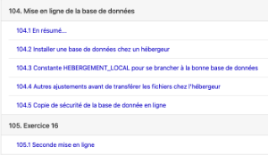 Pendant cette lecture rapide, ne cliquez pas sur les liens qui mènent à d'autres fiches. Vous aurez l'occasion de cliquer sur ces liens plus tard. |
Il est tentant de commencer l'exercice pendant qu'on lit la théorie. Pourtant, vous devez toujours partir de l'énoncé de l'exercice pour faire votre travail car parfois, il y a des précisions à respecter ou même des indications sur des étapes qu'il serait préférable de ne pas faire tout de suite. |
Avant de commencer l'exercice, effectuez une lecture complète de ce qui est demandé. Vous aurez une meilleure vue d'ensemble de ce qui est attendu. |
Voici quelques autres suggestions pour vous aider à vous organiser.
- Si vous êtes du genre à faire Ctrl+clic pour ouvrir les liens dans un nouvel onglet, assurez-vous de conserver dans le premier onglet l'énoncé du travail à réaliser puisque vous devrez y revenir sans cesse.
- Petite astuce : vous pouvez travailler avec plusieurs navigateurs pour vous y retrouver plus facilement. Par exemple, ouvrez l'exercice dans Chrome, 2 ou 3 pages théoriques principales dans FireFox et les pages que vous utilisez moins souvent dans Edge.
- Si vous trouvez que vous avez trop d'onglets ouverts, ne vous gênez pas pour en refermer afin que ce soit plus confortable pour vous. Après tout, vous pouvez réouvrir n'importe quelle page rapidement à l'aide de l'historique à droite de l'écran.
- Au besoin, ajoutez des pages à vos favoris pour les retrouver rapidement. Saviez-vous que l'étoile dans le haut d'Apical permet d'ajouter la page à gauche de l'écran?
- Utilisez l'outil de recherche d'Apical pour retrouver de l'information ou la solution à un message d'erreur.
11.2 Écouter le prof sans cellulaire
Pendant que je vous donne des explications en début de période, vous devez placer votre cellulaire sur la table, face cachée.
De cette façon, vous serez plus disponibles pour recevoir ce que je vous communique.
Image générée à l'aide de l'intelligence artificielle
12. La domotique
12.1 En résumé...
Voici un résumé des informations essentielles du ou des prochains chapitres.
Notez que certaines fiches, qui font partie intégrante du cours, pourraient ne pas figurer dans ce résumé.
Je vous recommande d'effectuer une lecture de l'ensemble des fiches de ces chapitres afin de bien saisir les enjeux.
[apical_lien_interne]qu_est-ce_qu_un_objet_connecte[/apical_lien_interne]
Un objet connecté, parfois appelé appareil connecté ou appareil intelligent, c'est un objet de tous les jours dans lequel on a ajouté des composantes qui lui permettent d'envoyer ou de recevoir des données au serveur auquel il est connecté.
Les objects connectés font partie d'une grande famille qu'on appelle Internet des Objets ou, en anglais, Internet of Things (IoT).

[apical_lien_interne]qu_est-ce_qu_un_systeme_domotique[/apical_lien_interne]
Un système domotique, c’est différent d’une série d’objets connectés. Avec un système domotique, on a un contrôle centralisé alors qu'avec une série d'objets connectés, on aura souvent une application pour chacun des objets.
[apical_lien_interne]systeme_domotique_cle_en_main_vs_diy[/apical_lien_interne]
Lorsque les données sont transmises dans l'infonuagique, attention aux [apical_lien_interne][systeme_domotique_cle_en_main_vs_diy,trous de sécurité,securite][/apical_lien_interne].
[apical_lien_interne]un_raspberry_pi_comme_unite_centrale[/apical_lien_interne]
Vous aurez besoin de :
- Un Raspberry Pi 3 ou 4
- Un bloc d'alimentation d'au moins 2.5A
- Une carte micro SD (classe 10, min. 16 Go) - pour la phase de test (un disque dur est plus robuste qu'une carte micro SD)
- Un boîtier
- Un système d'exploitation
- Possiblement un écran et un clavier

[apical_lien_interne]bien_traiter_son_raspberry_pi[/apical_lien_interne]
Protéger le Pi avec un boîtier.
Installer des dissipateurs thermiques.
Installer un ventilateur.
Ne pas enrouler le fil du bloc d'alimentation.
Attention quand il faut retirer la carte micro SD.
Arrêter le Pi de la bonne façon.
[apical_lien_interne]quelques_logiciels_de_domotique_interessants[/apical_lien_interne]
Jeedom
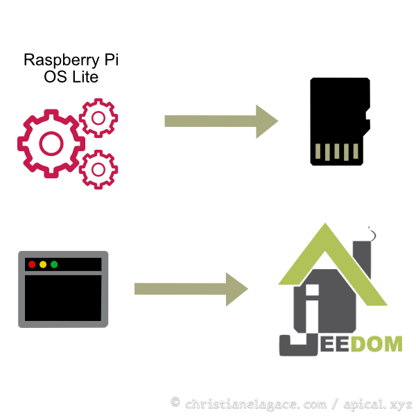
Home Assistant
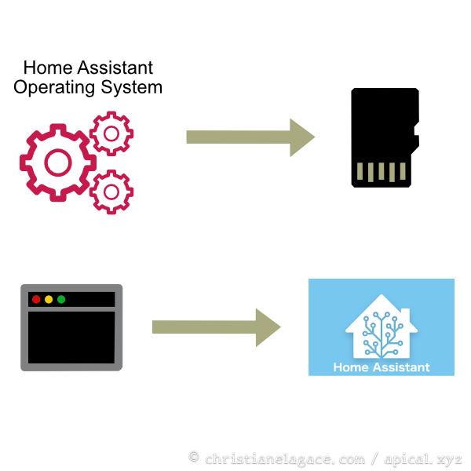
[apical_lien_interne]ifttt[/apical_lien_interne]
IFTTT signifie IF This, Then That.
Service Web gratuit qui permet d’automatiser des tâches pour des objets connectés Wi-Fi entre eux — par exemple un capteur de mouvement et une prise intelligente — ou entre les objets et des services Web — par exemple Gmail, Facebook, Google Assistant.
Il peut être utililisé par-dessus une boîte domotique via une extension ou encore de façon autonome.
IFTTT fonctionne avec le principe d'un déclencheur (trigger), le this et d'une action, le that. Par exemple, le déclencheur pourrait être l'envoi d'un courriel dont le titre est « J'ai froid » et l'action serait de démarrer le chauffage.
[apical_lien_interne]installation_de_jeedom_et_premier_acces[/apical_lien_interne]
Suivez bien les étapes!
Je vous les résume ici.
- Insérer la carte micro SD dans l'ordinateur.
- Installer Raspberry Pi OS Lite sur la carte micro SD à l'aide de Raspberry Pi Imager. Prendre soin de configurer le nom et le mot de passe de l'usager Linux, le réseau sans fil et l'activation SSH.
- Je vous conseille d'attendre au prochain cours pour configurer l'adresse IP statique.
- Insérer la carte micro SD dans le PI, brancher un écran au Pi puis démarrer.
- Idéalement, brancher un câble réseau (plus stable que le Wi-Fi).
- Vérifier l'accès au réseau.
Terminal du Raspberry Pi
ping google.com
- Mettre le système à jour (ceci pourrait être fait au prochain cours pour gagner un peu de temps).
Terminal du Raspberry Pi
sudo apt update
sudo apt upgrade - Vérifier l'adresse IP du Pi.
Terminal du Raspberry Pi
hostname -I
- Lancez la commande suivante pour installer Jeedom :
Terminal du Raspberry Pi
wget -O- https://raw.githubusercontent.com/jeedom/core/master/install/install.sh | sudo bash
- Redémarrez le Pi.
Terminal du Raspberry Pi
sudo reboot
- Accéder à Jeedom à partir de l'ordinateur en entrant l'adreses IP dans un navigateur. L'ordinateur doit être connecté au réseau Domotique-Pedago si le Pi est configuré pour communiquer en Wi-Fi ou sur CEGEPVICTO si le Pi est câblé vers le commutateur dédié.
[apical_lien_interne]copie_de_securite_de_jeedom[/apical_lien_interne]
La sauvegarde permet de remettre rapidement Jeedom en état de marche si un problème survenait.
Pour lancer une sauvegarde manuelle, rendez-vous dans le menu / / puis cliquez sur .
Il existe aussi un système de sauvegarde automatique mais ce n'est pas ce qui nous intéresse pour l'instant.
Important : que ce soit une sauvegarde manuelle ou automatique, il faut la télécharger sur notre ordinateur pour pouvoir la réutiliser en cas de crash de Jeedom.
12.2 Qu'est-ce qu'un objet connecté ?
Un objet connecté, parfois appelé appareil connecté ou appareil intelligent, c'est un objet de tous les jours dans lequel on a ajouté des composantes qui lui permettent d'envoyer ou de recevoir des données au serveur auquel il est connecté.
C'est ainsi que les objets sont devenus intelligents.
L'Office québécois de la langue française définit un objet connecté comme suit1 :
Objet qui est capable, outre sa fonction principale, d'envoyer ou de recevoir des informations par l'intermédiaire d'un réseau de télécommunication.
Objets connectés prêts-à-porter
Les objets connectés prêts-à-porter (en anglais : wearables ou smartwear) forment un sous-ensemble des objets connectés. Il s'agit d'objets qu'une personne porte sur elle, par exemple une montre, une ceinture, des boucles d'oreille et même le tissus d'un vêtement, qui permettent de capter puis de transmettre des informations sur la condition physique de la personne.
Internet des objets
Les objects connectés font partie d'une grande famille qu'on appelle Internet des Objets ou, en anglais, Internet of Things (IoT).
Voici une définition intéressante de l'Internet des Objets2 :
The Internet-of-Things can be seen as the result of the interconnection via the Internet of computing devices embedded in everyday objects, enabling them to send and receive data. This paradigm-shift provoked a ripple effect transforming everyday objects into smart objects [...].
Source
1. « objet connecté ». Office québécois de la langue française. http://gdt.oqlf.gouv.qc.ca/ficheOqlf.aspx?Id_Fiche=26544584
2. « Indoor Sensing Hub powered by Mozilla Things Framework ». João Pedro Dias. https://jpdias.me/hardware/iot/2018/12/19/indoorsensing.html
12.3 Qu'est-ce qu'un système domotique ?
La domotique est un ensemble de composantes et de techniques qui permettent d'automatiser et de contrôler à distance différents systèmes dans une maison.
Mais attention : un système domotique, c’est différent d’une série d’[apical_lien_interne][qu_est-ce_qu_un_objet_connecte,objets connectés][/apical_lien_interne]. Avec un système domotique, on a un contrôle centralisé alors qu'avec une série d'objets connectés, on aura souvent une application pour chacun des objets.
La boîte domotique (hub)
Pour qu'on parle de domotique il faut que le contrôle soit centralisé.
L'endroit où le contrôle centralisé s'opère s'appelle boîte domotique ou système de gestion domotique.
En France, les gens l'appellent box domotique. Et en anglais, on parle de hub, smart hub ou encore smart home hub.
La boîte domotique sera composée de :
- Une unité centrale
- Un logiciel de domotique
- Une passerelle (gateway)
Le système domotique
Le système domotique complet comprendra :
- Une boîte domotique (unité centrale, logiciel de domotique et passerelle)
- Des appareils connectés
- Un ou plusieurs appareils pour contrôler le système à distance
Différents protocoles de communication seront utilisés pour assurer la communication entre la boîte domotique et les appareils connectés.
12.4 Système domotique clé en main vs DIY
De nombreux acteurs sur le marché offrent des solutions domotiques clé en main. Ces solutions sont généralement stables, efficaces et sécuritaires. Cependant, elles sont coûteuses à l'achat et plusieurs nécessitent par la suite des frais mensuels.
Si vous êtes le moindrement [apical_lien_interne][pourquoi_effectuer_une_veille_technologique,geek,geek][/apical_lien_interne], vous aimerez certainement monter votre propre système domotique. Certains ne nécessitent aucune programmation, seulement de la configuration. D'autres doivent être programmés de toutes pièces alors qu'une troisième catégorie utilise des modules existants et vous permet d'y ajouter vos propres modules.
Attention : lors du choix du logiciel de domotique à utiliser, vérifiez bien les frais encourus. Certains sont complètement libres (Open Source) alors que d'autres vous demanderont de sortir votre porte feuille, mais à moindre coût que pour une solution clé en main.
Dans tous les cas, vous devrez apporter une attention quasi maladive pour la sécurité de votre système afin de ne pas compromettre votre maison face aux personnes malveillantes. Saviez-vous que des images de caméras de surveillance dont le mot de passe n'avait pas été changé sur la plateforme Web se sont retrouvées sur des sites pirates? Le fait qu'un objet connecté diffuse des informations dans l'infonuagique est certainement un facteur de risque à considérer.
Quoi qu'il en soit, la domotique est un monde fascinant qui offre une infinité de possibilités.
Si la domotique vous interpelle, suivez-moi !
13. L'unité centrale du système domotique (Raspberry Pi)
13.1 Boîtes domotiques commerciales
Il existe une quantité phénoménale de boîtes domotiques commerciales. Certaines offrent des fonctionnalités limitées, notamment au niveau des protocoles de communication supportés, alors que d'autres sont plus versatiles.
Ces appareils sont des boîtes domotiques complètes (hub). Ils combinent donc [apical_lien_interne][qu_est-ce_qu_un_systeme_domotique,l'unité centrale ainsi que le logiciel de domotique et la passerelle][/apical_lien_interne].
Remarquez que je n'ai pas testé toutes ces boîtes domotiques. Je vous fais simplement un résumé d'informations trouvées au fil de mes recherches.
SmartThings de Samsung
La boîte domotique SmartThings supporte plusieurs protocoles : Wi-Fi, Bluetooth, Zigbee, Z-Wave. Ceci lui permet de contrôler un nombre impressionnant d'appareils de domotique. Par contre, elle ne peut pas contrôler les appareils Nest.
Néanmoins, la boîte SmartThings est plutôt intéressante pour monter un petit système domotique à la maison.
Vera
Offerte dans différentes version : Vera Edge, Vera Plus et Vera Secure, cette boîte domotique supporte Z-Wave, Zigbee, Bluetooth et Wi-Fi.
Ezlo Atom
Toute petite boîte domotique qui se branche directement dans une prise de courant. Elle a gagné le 2020 IoT Breakthrough Award.
Hubitat Elevation
Cet appareil est très versatile au niveau des protocoles de communication : Zigbee, Z-Wave et Wi-Fi. Supporte [apical_lien_interne][ifttt,IFTTT][/apical_lien_interne]. Son interface est complexe mais offre plus de possibilités.
Wink
Voici une autre boîte domotique qui supporte de nombreux protocoles : Bluetooth LE, Z-wave, ZigBee, Kidde, Lutron Clear Connect.
Assistants vocaux
Même si leurs fonctionnalités sont limitées, les assistants vocaux d'Amazon, Google et Apple peuvent également servir de boîtes domotiques.
Echo d'Amazon (Alexa)
Amazon a sorti toute une gamme d'appareils Echo contrôlés par la voix à l'aide de l'assistant personnel Alexa : Echo Dot, Echo Show, Echo Plus, Echo Studio, etc.
Un appareil Echo peut contrôler certains appareils connectés via Bluetooth ou Wi-Fi. Mais pour contrôler un appareil qui utilise le protocole [apical_lien_interne][le_protocole_z-wave,Z-Wave][/apical_lien_interne], il faudra connecter votre Echo à une autre boîte domotique compatible.
Si vous possédez un Echo Plus ou un Echo Show, vous avez probablement accès au protocole Zigbee (sur certaines versions). Malheureusement, Z-Wave n'est toujours pas supporté.
Dans le contexte où vous utilisez un appareil Echo combiné à une autre boîte domotique, votre Echo n'est pas une boîte domotique mais bien un appareil pour contrôler votre système domotique à distance, au même titre que votre téléphone ou votre montre intelligente.
Google Nest
Les appareils Google Nest (avant 2019, on les appelait Google Home), sont comparables aux appareils Echo d'Amazon.
Par contre, au moment d'écrire ces lignes, aucun ne supportait le protogole Zigbee. Et tout comme la famille Echo, ils ne supportaient pas non plus le Z-Wave. Il faudra donc ajouter une boîte domotique pour contrôler des appareils Zigbee ou Z-Wave, ce qui relaie Google Nest au rôle de contrôleur vocal.
HomePod d'Apple
Le HomePod d'Apple est une autre boîte domotique comparable aux appareils Echo d'Amazon.
Côté protocoles, il est assez limité. Il ne supporte pas Zigbee ni Z-Wave. Son étendue de protocole ressemble donc à celle des appareils Google Nest.
Le HomePod est spécialement prisé par les amateurs de musique à l'oreille fine puisqu'il offre un excellent son. Par contre, ses fonctionnalités de domotique sont limitées.
Tout comme les appareils Echo ou Google Nest, si vous désirez un système domotique plus évolué, vous devrez y ajouter une boîte domotique et utiliser le HomePod comme contrôleur vocal.
Pour plus d'information
« Best smart home hubs of 2022 ». Tom's Guide. https://www.tomsguide.com/us/best-smart-home-hubs,review-3200.html
13.2 Un Raspberry Pi comme unité centrale
Un système domotique comprend généralement plusieurs appareils (ex : lumière, serrure, thermostat, stores) qui pourront être contrôlés soit de façon automatique, soit par une action effectuée à partir d'un appareil distant comme un téléphone intelligent ou une montre intelligente.
La boîte domotique du système peut être un ordinateur ou une carte électronique spécialisée. Elle n'a pas besoin de beaucoup de puissance et elle doit idéalement être peu gourmande en énergie. C'est pourquoi le Raspberry Pi est un excellent choix.
Attention : le Raspberry Pi Zero n'offre généralement pas assez de puissance pour un système domotique. Il faudra privilégier le Pi version 3 B+ ou 4.
Lors de la dernière révision de cette fiche, le coût du Raspberry Pi 4 oscillait aux alentours de CDN $200, incluant le bloc d'alimentation.
Le bloc d'alimentation doit fournir au moins 2.5A.
Idéalement, le Pi doit être combiné à un disque dur sur lequel le système d'exploitation sera installé. Mais pendant la période de test, il est possible de travailler sur une carte micro SD :
- capacité minimale de 16 Go (Raspberry Pi OS nécessite 8 Go mais vous aurez besoin d'espace supplémentaire pour stocker les données de votre système) ;
- formatée en FAT32, parfois appelé MS-DOS (FAT) ;
- de classe 10 et de bonne qualité.
Une fois la période de test du système terminée, il est important de remplacer la carte micro SD par un disque dur car la durée de vie d'une carte est relativement courte dans un environnement où il y a beaucoup d'écritures, comme avec un système domotique.
Boîtier du Raspberry Pi
Pour protéger votre Raspberry Pi, il est conseillé de le placer dans un boîtier spécialement conçu à cet effet.
Il est également possible de constuire un boîtier avec les matériaux de votre choix, par exemple des blocs Lego.
J'ai construit le mien (j'ai eu l'impression de retrouver mes 10 ans pendant le projet!) en m'inspirant de ceci : https://domotique34.com/blog/2012/10/18/construisez-votre-boitier-pour-le-raspberry-pi-en-lego/.
Et voici le résultat!

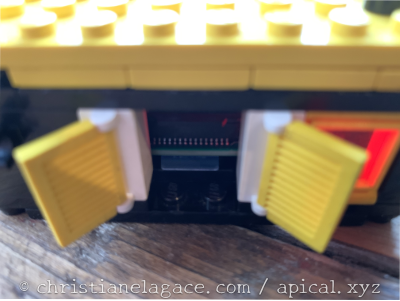
Remarquez la petite fenêtre qui permet de voir les DEL rouge (alimentation) et verte (accès à la carte micro SD). J'ai aussi prévu des portes pour accéder à la carte micro SD.
Une autre option s'offre à vous si vous disposez d'une imprimante 3D : imprimer votre propres boîtier. Et pas de problème si vous n'avez pas de talent de concepteur, plusieurs modèles sont disponibles sur Thingiverse (https://www.thingiverse.com/search?q=raspberry+pi+case).
Attention : si vous achetez ou imprimez un boîtier, prenez soin de choisir un modèle fait spécifiquement pour votre version du Raspberry Pi. Les connecteurs ne sont pas placés au même endroit d'une version à l'autre.
Système d'exploitation
Selon le logiciel de domotique choisi, vous pourriez avoir à installer le système d'exploitation Raspberry Pi OS (la version Lite, sans interface graphique, est généralement suffisante) puis y ajouter le logiciel de domotique. C'est le cas par exemple avec [apical_lien_interne][installation_de_jeedom_et_premier_acces,Jeedom][/apical_lien_interne] et avec [apical_lien_interne][installation_de_domoticz,Domoticz][/apical_lien_interne].
D'autres logiciels de domotique tournent sur un système d'exploitation créé spécifiquement pour eux. C'est le cas notamment avec [apical_lien_interne][installation_de_home_assistant_et_premier_acces,Home Assistant][/apical_lien_interne].
Notez que, selon les choix que vous ferez, vous pourriez avoir besoin d'un écran, d'un clavier pour effectuer l'installation.
13.3 Bien traiter son Raspberry Pi :-)
Le Raspberry Pi est un petit ordinateur alors certaines précautions s'imposent quand on le manipule.
Boîtier
Le Raspberry Pi doit être fixé dans un boîtier. Ceci le protégera des chocs et de la poussière en plus de vous aider à ne pas mettre vos doigts sur ses composantes électronique.
Dissipateurs thermiques
Il pourrait arriver que le Pi chauffe. Assurez-vous que des dissipateurs thermiques (heatsink) soient collés aux endroits appropriés. Généralement, on en place un sur le processeur, un sur la mémoire vive, un sur le contrôleur Ethernet et un autre sur le contrôleur USB.
Ventilateur
Il est intéressant d'ajouter un ventilateur si le boîtier le permet.
Pour que le ventilateur fonctionne à bas régime, il faut brancher le fil rouge sur la broche 3.3V ([apical_lien_interne][qu_est-ce_que_le_gpio,broche physique no 1,pinout][/apical_lien_interne]) et le fil noir sur une des broches de mise à terre (broche no 6, 9, 14, 20, 25, 30, 34 ou 39).
Notez que pour que le ventilateur tourne plus vite, il suffit de brancher le fil rouge sur une broche 5V (broche no 2 ou 4).
Dans le cas où le ventilateur comporte un troisième fil, généralement bleu, ce fil doit être branché sur la broche TXD (no 8).
Câble du bloc d'alimentation
Évitez d'enrouler le fil du bloc d'alimentation alentour du bloc. Ceci accélère son usure et risque de casser plus rapidement les petits fils qui sont à l'intérieur.
En effet, à force de l'enrouler et de le dérouler, le fil devient complètement tordu.
Il est préférable de replier le fil sur lui-même, quitte à terminer par un tour ou deux.
Manipulation de la carte micro SD
Lors du retrait de la carte micro SD, tirez-la horizontalement. Si vous tentez de la tirer verticalement, vous risquez d'endommager l'unité dans laquelle la carte est insérée.
Branchements au GPIO
Lorsque vous effectuez des branchements au GPIO, assurez-vous que le Pi ne soit pas sous tension.
Arrêt du système d'exploitation
Assurez-vous d'[apical_lien_interne][Eteindre_un_systeme_linux_de_facon_securitaire,éteindre le système de façon sécuritaire][/apical_lien_interne] avant de débrancher le Raspberry Pi.
14. Le logiciel de domotique
14.1 Quelques logiciels de domotique intéressants
Les boîtes domotiques commerciales incluent un logiciel de domotique. Chaque compagnie a son propre logiciel et généralement, il n'est pas possible de le changer.
Si vous montez votre boîte domotique avec un Raspberry Pi, vous pouvez y installer un logiciel que vous aurez codé ou encore travailler avec un des nombreux logiciels libres (Open Source) sur le marché. Une communauté active travaille sur chacun d'entre eux et contribue à leur amélioration au niveau des fonctionnalités, de la convivialité et de la sécurité.
Jeedom
Jeedom peut être installé gratuitement sur un Raspberry Pi en version DIY. Il est également possible d'acheter une boîte domotique Jeedom prête à l'emploi.
Dans la version DIY, en plus des modules existants, vous pouvez programmer vos propres modules Jeedom en PHP : https://www.jeedom.com/site/fr/dev.html.
Jeedom vous intéresse? Commencez ici : [apical_lien_interne]installation_de_jeedom_et_premier_acces[/apical_lien_interne].
Home Assistant
Home Assistant est un excellent logiciel domotique à code source ouvert qui peut être installé sur un Raspberry Pi.
Il peut tourner par-dessus le système d'exploitation de votre choix (on parlera alors de Home Assistant Supervised), par-desssus Raspberry Pi OS (on parlera de Home Assistant Core) ou, selon la technique recommandée, par-dessus le système d'exploitation Home Assistant Operating System, aussi appelé HassOS ou Hass.io. Ce système d'exploitation est basé sur resinOS.
Pour vous lancer avec Home Assistant, suivez le guide : [apical_lien_interne]installation_de_home_assistant_et_premier_acces[/apical_lien_interne].
Autres logiciels
OpenNetHome : http://opennethome.org/
openHAB : https://www.openhab.org/
Node-RED : https://nodered.org/
WebThings : https://webthings.io/
Domoticz : https://www.domoticz.com/
etc.
14.2 IFTTT
IFTTT signifie IF This, Then That. Traduction libre : Si ceci alors cela.
Mais IFTTT, c'est quoi exactement?
C'est un service Web gratuit qui permet d’automatiser des tâches pour des objets connectés Wi-Fi entre eux — par exemple un capteur de mouvement et une prise intelligente — ou entre les objets et des services Web — par exemple Gmail, Facebook, Google Assistant.
IFTTT fonctionne avec le principe d'un déclencheur (trigger), le this et d'une action, le that. Par exemple, le déclencheur pourrait être l'envoi d'un courriel dont le titre est « J'ai froid » et l'action serait de démarrer le chauffage.
IFTTT vs boîte domotique
Dans la plupart des boîtes domotiques, par exemple [apical_lien_interne][installation_de_jeedom_et_premier_acces,Jeedom][/apical_lien_interne] ou [apical_lien_interne][installation_de_home_assistant_et_premier_acces,Home Assistant][/apical_lien_interne], le système de scénarios, parfois appelés automatisation, est plus puissant que IFTTT.
Cependant, IFTTT n'est pas sans intérêt puisqu'il peut être utililisé par-dessus une boîte domotique via une extension ou encore de façon autonome, appuyé par une application du genre de Smart Life.
Grâce à IFTTT, il est plus facile d'intégrer à une boîte domotique des objets connectés Wi-Fi à prime abord non compatibles.
Pour plus d'information
« IFTTT - Every thing works better together ». IFTTT. https://ifttt.com/
« IFTTT et Domotique : Comment automatiser les interactions entre les périphériques wifi? ». Domo Blog. https://www.domo-blog.fr/ifttt-et-domotique-comment-automatiser-les-interactions-entre-les-peripheriques-wifi/
« Using IFTTT with the Raspberry Pi ». The Pi Hut. https://thepihut.com/blogs/raspberry-pi-tutorials/using-ifttt-with-the-raspberry-pi
« IFTTT et Jeedom : Comment utiliser les périphériques wifi avec le système domotique ». Domo Blog. https://www.domo-blog.fr/ifttt-et-jeedom-comment-utiliser-les-peripheriques-wifi-avec-le-systeme-domotique/#:~:text=IFTTT%20permet%20%C3%A0%20Jeedom%20de,largement%20dans%20toute%20la%20maison.
« Smart Life : comment dompter le « couteau Suisse » de la maison connectée ? ». Les Alexiens. https://www.lesalexiens.fr/tutoriels/tutoriel-comment-dompter-smart-life-le-couteau-suisse-de-la-maison-connectee/
15. Jeedom au coeur de votre système domotique
15.1 Installation de Jeedom et premier accès
Jeedom est offert en version DIY, que vous pouvez installer directement sur un Raspberry Pi ou sur un autre ordinateur de votre choix. Il est également possible d'acheter une boîte domotique commerciale avec Jeedom préinstallé.
C'est la solution DIY qui nous intéresse ici, avec un [apical_lien_interne][un_raspberry_pi_comme_unite_centrale,Raspberry Pi comme unité centrale][/apical_lien_interne].
Nous allons voir ici comment effectuer l'installation de Jeedom.
Note : si vous n'avez pas accès à un écran et à un clavier pour le Raspberry Pi, il est possible d'effectuer une installation dite headless : « [apical_lien_interne]installation_de_jeedom_sans_clavier_ni_ecran[/apical_lien_interne] ».
Les instructions présentées ici requièrent l'utilisation d'un clavier et d'un écran.
Préparer le Raspberry Pi
Commencez par prendre connaissance de la fiche suivante afin d'acquérir les bonnes composantes de base : [apical_lien_interne][un_raspberry_pi_comme_unite_centrale][/apical_lien_interne].
Installer Raspberry Pi OS Lite
Vous êtres maintenant prêts à installer le système d'exploitation. Ici, on voudra travailler avec Raspberry Pi OS Lite.
Suivez les instructions sur cette fiche : [apical_lien_interne]raspberry_pi_imager[/apical_lien_interne].
Démarrer le Raspberry Pi
Retirez la carte micro SD de l'ordinateur de façon sécuritaire puis insérez-la dans le Raspberry Pi.
Important : vous devez brancher l'écran au Raspberry Pi avant de mettre le Pi sous tension.
Mettez le Pi sous tension.
L'écran vous présentera une invite pour vous authentifier au Raspberry Pi.
Si vous n'avez pas modifié ces informations avec Raspberry Pi Imager, le code d'usager est pi et le mot de passe est raspberry.
Modifier le mot de passe
Puisque vous avez activé SSH, vous devrez changer le mot de passe du Raspberry Pi [apical_lien_interne][activer_ssh_sur_le_raspberry_pi,afin de ne pas ouvrir un trou de sécurité,motdepasse][/apical_lien_interne].
Ceci est requis seulement si vous ne l'avez pas déjà fait dans Raspberry Pi Imager.
Le mot de passe peut être modifié à partir du terminal à l'aide de cette commande :
Terminal du Raspberry Pi
passwd
Vérifier l'accès réseau
Assurez-vous que vous avez accès à Internet :
Terminal du Raspberry Pi
ping 8.8.8.8
Pour arrêter l'affichage, appuyez sur Ctrl + C.
Si vous obtenez un message du genre « Network in unreachable », vous devez vous assurer que le Pi a accès à un réseau :
- soit il est branché à l'aide d'un câble RJ-45 (aucune configuration requise)
- soit il est [apical_lien_interne][configurer_le_reseau_wi-fi_sur_le_raspberry_pi,correctement configuré pour accéder au réseau sans fil,networkmanager][/apical_lien_interne]
Vérifiez ensuite s'il a accès à un serveur DNS :
Terminal du Raspberry Pi
ping google.com
Si cela ne fonctionne pas (message du genre « Temporary failure in name resolution »), c'est que les serveurs DNS n'ont pas été correctement entrés lors de la[apical_lien_interne][configurer_le_reseau_wi-fi_sur_le_raspberry_pi,configuration du réseau sans fil,networkmanager][/apical_lien_interne].
Ajuster l'heure
En temps normal, la date et l'heure du système devraient avoir été ajustées automatiquement grâce au service NTP disponible sur le réseau.
Cependant, si le réseau n'offre pas ce service, vous devrez ajuster la date et l'heure manuellement.
Une date erronée pourrait empêcher l'installation de Jeedom.
Pour vérifier la date du système :
Terminal du Raspberry Pi
timedatectl
Pour ajuster la date et l'heure :
Terminal du Raspberry Pi
sudo timedatectl set-time 'AAAA-MM-JJ HH:mm:ss'
Mettre à jour le système
Avant d'aller plus loin, c'est une bonne idée de mettre le système à jour.
Entez ces commandes afin de mettre à jour la liste de paquets puis de procéder à la mise à jour du système :
Terminal du Raspberry Pi
sudo apt update
sudo apt upgrade
Donner une adresse IP statique au Pi
Ceci n'est pas obligatoire mais c'est généralement recommandé pour un système domotique.
[apical_lien_interne][donner_une_adresse_ip_statique_au_raspberry_pi,Suivez les instructions données ici][/apical_lien_interne].
Installer Jeedom
L'installation de Jeedom se fait à l'aide d'une instruction en ligne de commande :
Terminal du Raspberry Pi
wget -O- https://raw.githubusercontent.com/jeedom/core/master/install/install.sh | sudo bash
Patientez, l'installation peut prendre facilement de 15 à 30 minutes, selon la vitesse de votre réseau.
Si vous obtenez une erreur du genre « Package ntp is not available », c'est qu'il y a une incompatibilité entre Jeedom et la version de Raspberry Pi OS installée. Vous pouvez installer une ancienne version du système d'exploitation à l'aide de l'une de ces techniques :
- à partir de Raspberry Pi Imager : /
- en faisant une [apical_lien_interne][installation_de_raspberry_pi_os,installation manuelle][/apical_lien_interne] à partir d'une image trouvée parmi la liste des anciennes versions : https://downloads.raspberrypi.org/raspbian_lite/images/. Relancez ensuite la commande wget.
Au moment d'écrire ces lignes en novembre 2025, Jeedom s'installait correctement sur Raspberry Pi OS 12 (Bookworm), sorti en juin 2023, mais pas sur la version 13 (Trixie), sortie en août 2025.
Si le processus d'installation vous pose des questions, vous pouvez accepter ce qu'il propose.
À la fin de l'opération, vous obtiendrez un message de succès.
Résultat à l'écran
==================================================
| TOUTES LES VERIFICATIONS SONT FAITES |
==================================================
\033[1;32métape 12 vérification de jeedom réussie\033[0;39m
Installation finie. Un redémarrage devrait être effectué
Redémarrez ensuite votre Pi :
Terminal du Raspberry Pi
reboot
Accéder à Jeedom
Voilà, vous pouvez désormais [apical_lien_interne][acceder_a_jeedom,accéder à Jeedom][/apical_lien_interne] à partir de votre navigateur!
Pour plus d'information
« Installation ». Jeedom. https://doc.jeedom.com/fr_FR/installation/rpi
15.2 Installation de Jeedom sans clavier ni écran
Si vous n'avez pas accès à un clavier et à un écran pour votre Raspberry Pi, je vous propose cette technique pour effectuer une installation de Jeedom dite headless (litéralement : sans tête, c'est-à-dire sans écran).
Installer Raspberry Pi OS Lite
La première étape consiste à installer le système d'exploitation. Ici, on voudra travailler avec Raspberry Pi OS Lite.
Suivez les instructions sur cette fiche : [apical_lien_interne]raspberry_pi_imager[/apical_lien_interne].
Important : prenez le temps de modifier les réglages en cliquant sur le bouton approprié lorsqu'il apparaît.
Parmi les configurations à réaliser pour une installation headless, notons :
- le nom et le mot de passe de l'usager Linux
- l'activation SSH
- la configuration du réseau Wi-Fi
- la configuration du clavier (qwerty: us vs azerty: fr).
Attention : avec une installation headless, il reste une étape à réaliser avant d'insérer la carte micro SD dans le Raspberry Pi.
Donner une adresse IP statique au Pi
Dans une installation headless, puisqu'aucun écran n'est branché au Raspberry Pi, donner une adresse IP statique est la seule façon de connaître l'adresse IP qu'il faudra utiliser pour accéder à Jeedom ou pour se brancher au Raspberry Pi via SSH.
Attention : ceci ralentira le processus de démarrage du Raspberry Pi.
La technique consiste à éditer le fichier cmdline.txt. Contrairement aux fichiers du système d'exploitation, ce fichier est visible lorsque la carte micro SD est insérée dans l'ordinateur.
Ajoutez simplement, à la fin de cette ligne, la configuration suivante en ajustant les informations requises au format :
ip=addresseIP::adresseIPLocaleRouteur:masqueSousReseau:HostNameDuPi:eth0:off
Par exemple :
Fichier cmdline.txt
console=... ip=192.168.1.145::192.168.1.1:255.255.255.0:raspberrypi:eth0:off
Enregistrez le fichier, le Raspberry Pi saura lire son contenu lors du démarrage.
Note : puisque cette technique ralentit le processus de démarrage, une fois que vous aurez réussi à vous brancher au Raspberry Pi via SSH, je vous suggère d'effectuer la configuration de l'adresse IP statique [apical_lien_interne][donner_une_adresse_ip_statique_au_raspberry_pi,à l'aide d'une autre technique][/apical_lien_interne] puis de supprimer cette configuration du fichier cmdline.txt.
Démarrer le Raspberry Pi
Retirez la carte micro SD de l'ordinateur de façon sécuritaire puis insérez-la dans le Raspberry Pi.
Mettez le Pi sous tension.
Connexion SSH
Puisque lors d'une installation headless, le Raspberry Pi n'a ni écran, ni clavier, il faudra s'y connecter via SSH pour effectuer certaines manipulations.
Vous aurez besoin d'un client SSH. Ce client est disponible par défaut sous Mac ou Linux de même que sous Windows dans une fenêtre PowerShell ou dans une console Git Bash.
Le client SSH vous permet de vous connecter au Pi à l'aide d'une commande entrée dans une fenêtre Terminal de votre ordinateur (vous devez remplacer pi par le nom de votre usager Linux et 192.168.1.145 par l'adresse IP de votre Pi).
Terminal (sur l'ordinateur)
ssh pi@192.168.1.145
Ajuster l'heure
En temps normal, la date et l'heure du système devraient avoir été ajustées automatiquement grâce au service NTP disponible sur le réseau.
Cependant, si le réseau n'offre pas ce service, vous devrez ajuster la date et l'heure manuellement.
Une date erronée pourrait empêcher l'installation de Jeedom.
Pour vérifier la date du système :
Console SSH
timedatectl
Pour ajuster la date et l'heure :
Console SSH
sudo timedatectl set-time 'AAAA-MM-JJ HH:mm:ss'
Mettre à jour le système
Avant d'aller plus loin, c'est une bonne idée de mettre le système à jour.
D'abord, assurez-vous que vous avez accès à Internet :
Console SSH
ping 8.8.8.8
et à un serveur DNS :
Console SSH
ping google.com
Maintenant, entez ces commandes afin de mettre à jour la liste de paquets puis de procéder à la mise à jour du système :
Console SSH
sudo apt update
sudo apt upgrade
Installer Jeedom
L'installation de Jeedom se fait à l'aide d'une instruction en ligne de commande :
Console SSH
wget -O- https://raw.githubusercontent.com/jeedom/core/master/install/install.sh | sudo bash
Patientez, l'installation peut prendre facilement de 15 à 30 minutes, selon la vitesse de votre réseau.
Si le processus d'installation vous pose des questions, vous pouvez accepter ce qu'il propose.
À la fin de l'opération, vous obtiendrez un message de succès.
Résultat à l'écran
==================================================
| TOUTES LES VERIFICATIONS SONT FAITES |
==================================================
\033[1;32métape 12 vérification de jeedom réussie\033[0;39m
Installation finie. Un redémarrage devrait être effectué
Redémarrez ensuite votre Pi :
Console SSH
sudo reboot
Accéder à Jeedom
Voilà, vous pouvez désormais [apical_lien_interne][acceder_a_jeedom,accéder à Jeedom][/apical_lien_interne] à partir de votre navigateur!
15.3 Accéder à Jeedom
Une fois que [apical_lien_interne][installation_de_jeedom_et_premier_acces,Jeedom a été installé][/apical_lien_interne], vous êtes prêts à commencer à explorer votre nouveau joujou!
Vérifier si Jeedom est installé
Mais tout d'abord, si vous ne venez pas tout juste d'installer Jeedom sur votre carte micro SD, sachez que vous pouvez vérifier si Jeedom y est installé. Insérez la carte dans un Pi puis démarrez-le. À l'aide d'une connexion SSH ou d'un clavier et d'un écran, lancez cette commande :
Terminal du Raspberry Pi
find / -name jeedom 2> /dev/null
Vous devriez obtenir quelques fichiers, par exemple /var/lib/mysql/jeedom et /etc/cron.d/jeedom.
Lancer Jeedom
Ouvrez un navigateur sur un ordinateur connecté au même réseau que le Pi et entrez-y l'[apical_lien_interne][trouver_l_adresse_ip_du_raspberry_pi,adresse IP du Pi][/apical_lien_interne].
Vous accéderez ainsi à l'interface de Jeedom.
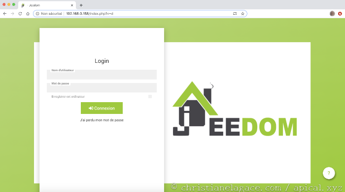
La première fois que vous vous branchez, vous devez utiliser le code d'usager admin et le mot de passe admin. Vous serez alors invités à changer ces valeurs.
Jeedom vous demandera ensuite de vous créer un compte sur Jeedom Market. Rassurez-vous, vous n'aurez rien à acheter pour effectuer la majorité des tâches domotiques.
Voilà, vous pouvez maintenant commencer à [apical_lien_interne][configurer_la_cle_usb_z-wave_sur_jeedom,configurer votre boîte domotique][/apical_lien_interne]!
16. Pour vous assurer de ne rien perdre en cas de problème
16.1 Copie de sécurité de Jeedom
Tout bon système informatique doit pouvoir être sauvegardé afin de pouvoir tout remettre en place en cas de problème.
Jeedom a tout ce qu'il faut pour cela.
Sauvegarde manuelle
Le système de sauvegarde de Jeedom permet de créer un fichier compressé qui contiendra tout le contenu du dossier /var/www/html ainsi qu'un script SQL de la base de données.
Pour lancer une sauvegarde manuelle, rendez-vous dans le menu / / puis cliquez sur .
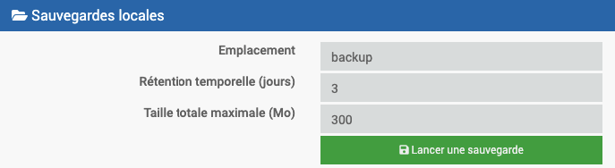
La fenêtre affichera le résultat de l'opération.
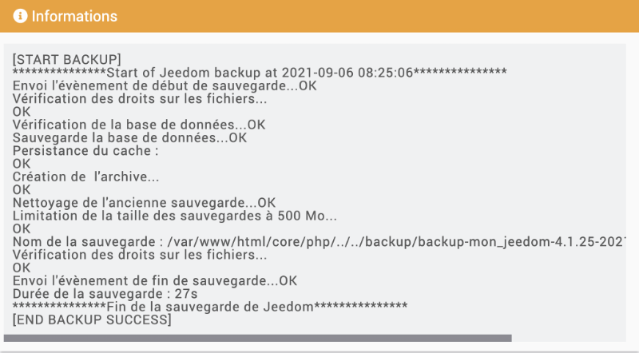
Le fichier de sauvegarde sera enregistré dans le dossier /var/www/html/backup sur le Raspberry Pi.
Pour vous assurer qu'il ne soit pas perdu si jamais la carte micro SD était corrompue, téléchargez-le sur votre poste de travail à l'aide du bouton .
Contenu d'une sauvegarde
Si vous êtes curieux, vous pouvez examiner le contenu d'un fichier de sauvegarde.
Après avoir téléchargé le fichier sur votre poste de travail à l'aide du bouton dans Jeedom, décompressez-le.
Vous constaterez que la sauvegarde contient de nombreux fichiers qui permettent de réinitialiser toutes vos configurations.
En fait, c'est tout le contenu du dossier /var/www/html qui est présent.
Un script SQL de la base de données est également présent.
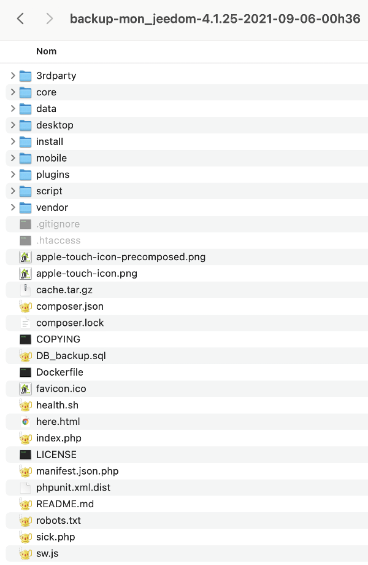
Sauvegardes automatiques
Par défaut, Jeedom fera une sauvegarde complète du système à chaque nuit.
L'heure de la sauvegarde est établie par Jeedom en fonction de la charge du Market puisqu'il y a possibilité de copier automatiquement le fichier de sauvegarde dans l'infomuagique.
Pour connaître l'heure exacte de la sauvegarde, rendez-vous dans / / . Recherchez une tâche dont la classe est Jeedom et la fonction est backup.
On voit ici que la sauvegarde sera lancée à chaque jour à 00h36 (syntaxe cron 36 00 * * *).
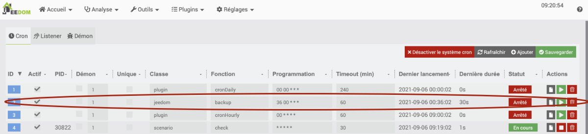
Comme pour les sauvegardes manuelles, le fichier de sauvegarde sera enregistré dans le dossier /var/www/html/backup sur le Raspberry Pi.
Résultat à l'écran
pi@raspberrypi:~ $ ls /var/www/html/backup
backup-mon_jeedom-4.1.25-2021-09-04-00h36.tar.gz
backup-mon_jeedom-4.1.25-2021-09-05-00h36.tar.gz
backup-mon_jeedom-4.1.25-2021-09-06-00h36.tar.gz
Configurer les sauvegardes
Il est possible d'apporter des précisions sur la façon dont les sauvegardes seront effectuées.
- Rendez-vous dans le menu / / .
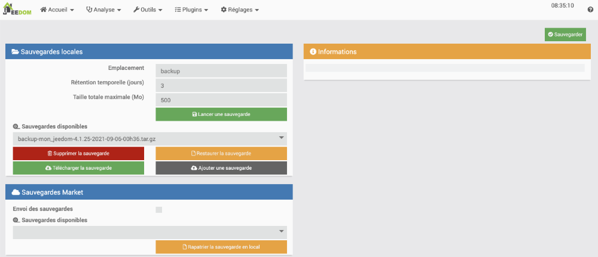
- De là, vous pouvez configurer les sauvegardes automatiques.
- Il est possible de modifier le nom du dossier qui contiendra les sauvegardes par défaut : backup).
- Le nombre de sauvegardes conservées sur le Pi dépend des configurations et .
- Il est possible de copier automatiquement les sauvegardes dans l'infonuagique. Cette solution requiert cependant un paiement mensuel de 2 euros. Par contre, [apical_lien_interne][copier_automatiquement_le_fichier_de_sauvegarde_sur_votre_ordinateur,je vous montre ici une technique pour télécharger les sauvegardes sans frais sur votre ordinateur][/apical_lien_interne].
Restaurer une sauvegarde
Votre système Jeedom est défaillant ou encore vous désirez revenir à une configuration antérieure?
Pas de problème, la restauration est très simple si vous avez en main le fichier de sauvegarde.
- Si votre système est encore fonctionnel, vous pouvez travailler directement à partir de votre Jeedom. S'il est défaillant, vous devez installer une nouvelle copie de Jeedom.
- Si votre système était encore fonctionnel, le fichier de sauvegarde pourra être retrouvé directement par l'interface de Jeedom. Passez à l'étape suivante.
Dans le cas où votre système était défaillant, vous devez, après avoir réinstallé Jeedom, copier le fichier vers le Raspberry Pi.
Terminal de votre ordinateurscp /dossierlocal/backup-mon_jeedom-4.1.25-2021-09-06-00h36.tar.gz pi@192.168.1.145:
Une fois copié sur le Pi, il devra être déplacé dans le dossier /var/www/html/backup.
Terminal du Raspberry Pisudo mv backup-mon_jeedom-4.1.25-2021-09-06-00h36.tar.gz /var/www/html/backup
- Dans Jeedom, rendez-vous dans le menu / / .
- Dans la zone , section , sélectionnez la sauvegarde désirée dans la liste déroulante.
- Cliquez sur . Jeedom affichera l'état d'avancement dans la fenêtre .
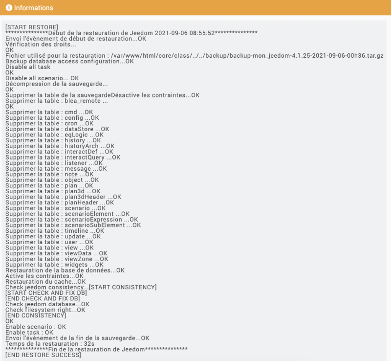
16.2 Copier automatiquement le fichier de sauvegarde sur votre ordinateur
Les sauvegardes locales directement sur le Raspberry Pi sont intéressantes mais elles pourraient n'être d'aucun secours si jamais la carte micro SD était défaillante.
C'est pourquoi il est important de copier le fichier de sauvegarde à un autre endroit.
Puisque la sauvegarde dans l'infonuagique via l'interface de Jeedom nécessite des frais mensuels, je vous propose de faire une copie manuelle des fichiers de sauvegarde vers votre ordinateur personnel.
Il y a bien sûr la possibilité d'automatiser le transfert du fichier via Samba, tel que décrit dans cet article : https://jeedomiser.fr/article/automatiser-et-externaliser-vos-sauvegardes-jeedom/.
Ce que je vous propose est encore plus simple : une copie vers votre ordinateur personnel, qui sera lancée automatiquement à chaque jour.
- Créez un petit fichier bash pour automatiser cette tâche.
- Le nom du fichier de sauvegarde est toujours le même à l'exception de la date du jour. L'heure pourra aussi être différente mais si vous vous en tenez aux sauvegardes lancées automatiquement, elle sera toujours la même à une ou deux minutes près.
Le fichier bash devra donc monter le nom du fichier de sauvegarde à partir de la date du jour. Vous pouvez vous inspirer du [apical_lien_interne][script_pour_faciliter_la_copie_de_securite,script pour faciliter la copie de sécurité dans le nuage][/apical_lien_interne].
Je vous conseille de vérifier la présence du fichier de sauvegarde sur le Raspberry Pi (sous Windows : if exist fichier.extension, sous Mac : if [ -e fichier.extension ]). En effet, si la sauvegarde n'a pas pu être effectuée exactement à la minute programmée, le nom du fichier sera légèrement différent (ex : backup-mon_jeedom-4.1.25-2021-09-06-00h37.tar.gz au lieu de backup-mon_jeedom-4.1.25-2021-09-06-00h36.tar.gz) - Le fichier bash se chargera de lancer [apical_lien_interne][copier_un_fichier_sur_une_machine_linux_a_partir_d_un_autre_ordinateur,la commande scp pour copier un fichier du Pi vers votre ordinateur,versordi][/apical_lien_interne].
- Puisque la commande scp demande un mot de passe pour accéder au Pi, assurez-vous d'avoir [apical_lien_interne][permettre_le_branchement_ssh_sans_demander_le_mot_de_passe_a_chaque_fois,copié la clé publique SSH sur votre Pi][/apical_lien_interne] afin que le mot de passe ne soit plus demandé.
- Le nom du fichier de sauvegarde est toujours le même à l'exception de la date du jour. L'heure pourra aussi être différente mais si vous vous en tenez aux sauvegardes lancées automatiquement, elle sera toujours la même à une ou deux minutes près.
- Une fois le fichier bash écrit et testé, configurez le système d'exploitation de votre ordinateur pour que le fichier soit lancé automatiquement à la fréquence que vous désirez.
- Sous Windows :
- Planificateur de tâches / / Créer une tâche de base.
- Nommer la tâche (ex : copie Jeedom)
- : tous les jours et préciser l'heure désirée
- : Démarrer un programme
- : Start-process -FilePath "$env:ProgramFiles\Git\bin\bash.exe" -ArgumentList "-l", "-c", '"bash monScript.bash"' -WorkingDirectory "C:\chemin\du\script"
Prenez soin de remplacer monScript.bash le nom de votre script ainsi que C:\chemin\du\script par le chemin du dosiser qui contient ce script.
Pour plus d'info : https://www.pcastuces.com/pratique/astuces/5515.htm.
- Sous Mac, j'ai écrit une fiche sur le sujet : [apical_lien_interne]lancer_une_tache_de_facon_automatique_crontab[/apical_lien_interne].
- Sous Windows :
- Évidemment, votre ordinateur personnel devra être ouvert et branché sur le même réseau que le Raspberry Pi pour que la copie fonctionne.
17. Dépannage Jeedom (troubleshooting)
17.1 Erreur « Controller is busy »
Problème :
Lorsque vous tentez d'ajouter un appareil connecté Z-Wave à Jeedom, vous obtenez le message « Controller is busy » et aucun appareil n'est détecté.
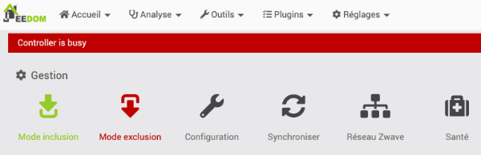
Contexte :
- Jeedom 4.0.61
- Raspberry Pi 4
- Clé USB Z-Wave Aeotec Z-Stick Gen5
Cause possible :
La clé USB Z-Wave n'est pas reconnue par le Raspberry Pi.
Pour voir si c'est le cas, lancez cette commande sur le Pi (notez que le premier caractère est un L minuscule) :
Terminal
lsusb
Si la clé est reconnue, vous obtiendrez une ligne qui la décrit.
Résultat à l'écran
Bus 002 Device 001: ID 1d6b:0003 Linux Foundation 3.0 root hub
Bus 001 Device 007: ID 0658:0200 Sigma Designs, Inc. Aeotec Z-Stick Gen5n(ZW090) - UZB
BUS 001 DEVICE 006: id 1A40:0101 Terminus Technology Inc. Hub
Bus 001 Device 003: ID 413c:2003 Dell Computers Corp. Keyboard
Bus 001 Device 002: ID 2109:3431 VIA Labs, Inc. Hub
Bus 001 Device 001: ID 1d6b:0002 Linux Foundation 2.0 root hub
Si la clé n'apparaît pas, c'est peut-être parce que le Pi 4 essaie de lui parler en USB3 et ce, même si elle est branchée dans un port USB2, alors que la clé ne parle qu'en USB2.
Solution proposée :
L'ajout d'un hub USB, dans lequel on branchera la clé Z-Wave, pourrait régler le problème.
Celui que j'utilise : https://www.amazon.ca/-/fr/Sabrent-Hub-USB-2-0-4-Port/dp/B00BWF5U0M.
Autre cause possible :
Jeedom n'utilise pas le bon port pour la clé USB Z-Wave.
Solution proposée :
Rendez-vous dans le menu / puis cliquez sur dans la zone .

Dans la zone , mettez le port clé Z-Wave à .

Si vous obtenez une mention NOOK dans la zone , cliquez sur l'icône de flèche pour redémarrer le démon. Tant que vous n'obtenez pas OK pour le statut et pour la configuration, vous ne pourrez pas ajouter d'appareils connectés Z-Wave à Jeedom.
17.2 Impossible d'ajouter un objet connecté Z-Wave
Problème :
Lorsque vous tentez d'ajouter un appareil connecté Z-Wave à Jeedom, l'appareil n'est jamais détecté même si vous effectuez les manipulations demandées, par exemple cliquer rapidement 3 fois sur le bouton d'inclusion.
Contexte :
- Jeedom 4.0.61
- Raspberry Pi 4
- Clé USB Z-Wave Aeotec Z-Stick Gen5
Cause possible :
L'appareil considère encore qu'il est connecté à une boîte domotique.
Ceci se produit si l'appareil n'a pas été correctement déconnecté de la boîte domotique lors d'une précédente installation.
Tant que l'appareil est configuré pour une boîte domotique, il n'est pas possible de l'inclure dans une autre boîte domotique.
Solution proposée :
Effectuez une réinitialisation de l'appareil (factory reset). Sur certains appareils, ceci consiste à appuyer sur le bouton d'inclusion de façon prolongée pendant 10 secondes.
Consultez le manuel de l'appareil pour connaître la procédure spécifique à votre appareil.
Autre cause possible :
L'appareil est muni d'un système d'auto-inclusion.
Solution proposée :
Débranchez l'appareil, mettez la boîte domotique en mode inclusion puis rebranchez l'appareil.
S'il est effectivement muni d'un système d'auto-inclusion et qu'il n'est pas déjà connecté à une autre boîte domotique, il devrait être automatiquement détecté.
Autre cause possible :
L'appareil est trop loin de la clé USB Z-Wave.
On sait qu'une fois que les appareils Z-Wave sont inclus dans le système, un appareil peut servir de relais Z-Wave vers un autre appareil, ce qui augmente la portée du Z-Wave.
Cependant, pendant l'inclusion, un appareil ne peut pas compter sur un autre pour lui relayer le signal. L'appareil à inclure doit donc être près de la clé USB Z-Wave.
Solution proposée :
Déplacez l'appareil pour qu'il soit près de la clé USB Z-Wave.
Une fois l'inclusion complétée, l'appareil pourra être déplacé vers sa destination finale.
17.3 Erreur pendant l'installation de Jeedom avec wget
Problème :
Lorsque vous tentez d'installer Jeedom sur une image toute fraîche de Raspberry Pi OS Lite à l'aide de la commande wget -O- https://raw.githubusercontent.com/jeedom/core/master/install/install.sh | sudo bash, vous obtenez le message « ERROR: The certificate of ‘raw.githubusercontent.com’ is not trusted. ».
Résultat à l'écran
pi@raspberrypi:~ $ wget -O- https://raw.githubusercontent.com/jeedom/core/master/install/install.sh | sudo bash
--2021-08-19 16:23:22-- https://raw.githubusercontent.com/jeedom/core/master/install/install.sh
Resolving raw.githubusercontent.com (raw.githubusercontent.com)... 185.199.109.133, 185.199.108.133, 185.199.110.133, ...
Connecting to raw.githubusercontent.com (raw.githubusercontent.com)|185.199.109.133|:443... connected.
ERROR: The certificate of ‘raw.githubusercontent.com’ is not trusted.
ERROR: The certificate of ‘raw.githubusercontent.com’ doesn't have a known issuer.
Pendant l'installation, plusieurs messages d'erreur peuvent apparaître, par exemple :
- E: Release file for http://archive.raspberrypi.org/debian/dists/buster/InRelease is not valid yet (invalid for another 188d 0h 2min 42s)
- E: Failed to fetch http://raspbian.raspberrypi.org/raspbian/pool/main/m/mariadb-10.3/mariadb-server_10.3.27-0+deb10u1_all.deb 404 Not Found [IP: 93.93.128.193 80]
- E: Unable to fetch some archives, maybe run apt-get update or try with --fix-missing?
- Ne peut installer mariadb-client mariadb-common mariadb-server - Annulation
Contexte :
- Raspberry Pi OS 10 (buster) sans interface graphique
Cause possible :
La date du système n'est pas à jour, ce qui invalide le certificat SSL qui permet d'accéder à un service externe.
Solution proposée :
Ajustez la date de Raspberry Pi OS : https://apical.xyz/fiches/la_ligne_de_commande_linux/Ajuster_la_date_et_l_heure_sous_Linux_Ubuntu
17.4 Erreur « Forbidden »
Problème :
Lorsque vous tentez d'accéder à Jeedom en entrant l'adresse IP du Raspberry Pi dans un navigateur, vous obtenez l'erreur « Forbidden You don't have permission to access this resource. »

Contexte :
- Raspberry Pi OS
- Jeedom
Cause possible :
Un problème est survenu pendant l'installation de Jeedom.
Solution proposée :
Je n'ai pas réussi à trouver la cause exacte du problème. Puisque ce problème m'est arrivé sur une installtion toute fraîche, le plus simple était de recommencer l'installation du système d'exploitation puis de Jeedom.
17.5 Erreur « Release file for http://archive.raspberrypi.org/debian/dists/buster/InRelease is not valid yet »
Problème :
Lorsque vous tentez de mettre votre système Linux à jour avec la commande sudo apt update, vous obtenez le message d'erreur « Release file for http://archive.raspberrypi.org/debian/dists/buster/InRelease is not valid yet ».
Résultat à l'écran
pi@raspberrypi:~ $ sudo apt update
Get:1 http://archive.raspberrypi.org/debian buster InRelease [32.6 kB]
Get:2 http://raspbian.raspberrypi.org/raspbian buster InRelease [15.0 kB]
Reading package lists... Done
E: Release file for http://archive.raspberrypi.org/debian/dists/buster/InRelease is not valid yet (invalid for another 187d 23h 42min 32s). Updates for this repository will not be applied.
E: Release file for http://raspbian.raspberrypi.org/raspbian/dists/buster/InRelease is not valid yet (invalid for another 187d 18h 43min 12s). Updates for this repository will not be applied.
Contexte :
- Raspberry Pi OS 10 (buster) sans interface graphique
Cause possible :
La date du système n'est pas à jour, ce qui invalide le certificat SSL qui permet d'accéder à un service externe.
Solution proposée :
Ajustez la date de Raspberry Pi OS : https://apical.xyz/fiches/la_ligne_de_commande_linux/Ajuster_la_date_et_l_heure_sous_Linux_Ubuntu
17.6 Erreur « Échec lors du téléchargement du fichier »
Problème :
Lorsque vous tentez d'installer un plugin Jeedom à partir du Market, vous obtenez le message d'erreur « Échec lors du téléchargement du fichier. Veuillez réessayer plus tard (taille inférieure à 100 octets). Cela peut être dû à une absence de connexion au market (vérifiez dans la configuration de rpi qu'un test de connexion au market marche) ou lié à un manque de place, une version minimale requise non consistante avec votre version de rpi un souci du plugin sur le market, etc. ».
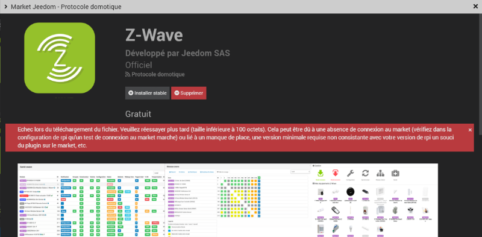
Contexte :
- Raspberry Pi OS 10 (buster) sans interface graphique
Cause possible :
Vous avez tenté de désactiver les validations SSL du Market puisque vous aviez une erreur de certificat SSL.
Cette erreur était en fait due à une mauvaise date du système.
Solution proposée :
Rendez-vous dans le menu / / .
Dans l'onglet , enlevez le crochet devant .
Ajustez ensuite la date de Raspberry Pi OS pour régler l'erreur de certificat SSL : https://apical.xyz/fiches/la_ligne_de_commande_linux/Ajuster_la_date_et_l_heure_sous_Linux_Ubuntu
17.7 Erreur « Impossible de contacter le serveur Z-Wave »
Problème :
Lorsque vous tentez d'accéder au menu / / , vous obtenez l'erreur « Impossible de contacter le serveur Z-Wave. » ou encore « Le Réseau Z-Wave est en cours de démarrage. ».


Contexte :
- Jeedom 4.3.17
Cause possible :
Jeedom n'a pas terminé de charger les ressources nécessaires pour faire fonctionner la clé USB Z-Wave.
Solution proposée :
Réessayez dans quelques minutes.
Si le problème n'est toujours pas résolu, redémarrez le système.
17.8 J'obtiens l'identifiant d'une commande plutôt que sa valeur
Problème :
Lorsque vous exécutez un scénario qui doit ajouter la valeur d'un capteur dans un fichier journal à l'aide de log::add(), vous obtenez l'identifiant de la commande plutôt que sa valeur.
Contexte :
- Jeedom 4.3.17
Cause possible :
Vous avez entré directement la chaîne qui représente la commande, sans exécuter cette chaîne.
Solution proposée :
Ajustez votre code pour que la commande soit exécutée.
Plutôt que ceci :
Bloc de code dans scénario (PHP)
Entrez ceci :
Bloc de code dans scénario (PHP)
$cmd = cmd::byString('#[Cuisine][Détecteur Lumière][Luminance]#');
$value = $cmd->execCmd();
log::add('meslogs', 'INFO', "Luminance : $value");
17.9 Erreur « SQLSTATE[HY000] [1045] Access denied for user 'jeedom'@'localhost' (using password: YES) »
Problème :
Lorsque vous lancez l'interface Web de Jeedom, vous obtenez le message « SQLSTATE[HY000] [1045] Access denied for user 'jeedom'@'localhost' (using password: YES) ».
Contexte :
- Jeedom 4.3.17
Cause possible :
Vous avez modifié le mot de passe de la base de données Jeedom mais vous n'avez pas changé la configuration dans Jeedom.
Solution proposée :
Pour dire à Jeedom quel est le mot de passe de sa base de données :
- Éditez le fichier de configuration common.config.php.
Terminal
sudo nano /var/www/html/core/config/common.config.php
- Entrez le nouveau mot de passe à la ligne password.
Fichier /var/www/html/core/config/common.config.php
<?php
/* This file is part of Jeedom.
*
* Jeedom is free software: you can redistribute it and/or modify
* it under the terms of the GNU General Public License as published by
* the Free Software Foundation, either version 3 of the License, or
* (at your option) any later version.
*
* Jeedom is distributed in the hope that it will be useful,
* but WITHOUT ANY WARRANTY; without even the implied warranty of
* MERCHANTABILITY or FITNESS FOR A PARTICULAR PURPOSE. See the
* GNU General Public License for more details.
*
* You should have received a copy of the GNU General Public License
* along with Jeedom. If not, see <http://www.gnu.org/licenses/>.
*//* * ********************* Debug **************** */
define('DEBUG', 0);/* * *********************** MySQL & Memcached ******************* */
global $CONFIG;
$CONFIG = array(
//MySQL parametres
'db' => array(
'host' => 'localhost',
'port' => '3306',
'dbname' => 'jeedom',
'username' => 'jeedom',
'password' => 'mot-de-passe-en-clair',
),
);
17.10 Erreur « Le driver Z-Wave n'est pas initialisé »
Problème :
Dans l'interface Web de jeedom, lorsque vous vous rendez dans le menu, / / , vous obtenez le message « Le driver Z-Wave n'est pas initialisé, veuillez patienter. Si le message reste trop longtemps, veuillez vérifier la configuration du démon » ou encore « Le démon Z-Wave n'est pas démarré ».
Contexte :
- Jeedom 4.3.20
Cause possible :
Vous avez mal configuré le port de la clé USB Z-Wave.
Solution proposée :
Pour connaître le port à utiliser, débranchez la clé USB Z-Wave du Raspberry Pi puis rebranchez-la.
Dans une fenêtre Terminal sur le Raspberry Pi ou via SSH, entrez cette commande :
Terminal
dmesg | grep tty
Résultat à l'écran
pi@jeedom:~ $ dmesg | grep tty
[ 0.000000] Kernel command line: coherent_pool=1M 8250.nr_uarts=0 snd_bcm2835.enable_compat_alsa=0 snd_bcm2835.enable_hdmi=1 video=HDMI-A-1:1680x1050M@60 smsc95xx.macaddr=D8:3A:DD:24:30:4D vc_mem.mem_base=0x3f000000 vc_mem.mem_size=0x3f600000 console=ttyS0,115200 console=tty1 root=PARTUUID=c764c245-02 rootfstype=ext4 elevator=deadline fsck.repair=yes rootwait
[ 0.001837] printk: console [tty1] enabled
[ 1.584526] fe201000.serial: ttyAMA0 at MMIO 0xfe201000 (irq = 36, base_baud = 0) is a PL011 rev2
[ 5.314135] cdc_acm 1-1.3:1.0: ttyACM0: USB ACM device
[ 159.584503] cdc_acm 1-1.3:1.0: ttyACM0: USB ACM device
Le port à utiliser apparaîtra sur la dernière ligne.
Utilisez cette valeur dans l'écran / / vis-à-vis la configuration .
Patientez quelques minutes après avoir enregistré la configuration pour que tout rentre dans l'ordre.
18. Exercice 1
18.1 Installation de Jeedom
Si vous ne réussissez pas à terminer cet exercice pendant le cours, vous devez absolument terminer à la maison avant le prochain cours.
- [apical_lien_interne][installation_de_jeedom_et_premier_acces,Installez Jeedom][/apical_lien_interne] sur votre Raspberry Pi.
- Branchez votre Pi sur le réseau filaire afin d'obtenir de meilleures performances.
- Ne faites pas le sudo apt upgrade pour l'instant, c'est trop long au Cégep. Vous devrez le faire en devoir chez vous.
- Effectuez toutes les configurations présentées sur la fiche d'installation de Jeedom maisne faites pas la configuration d'adresses IP statiques pour l'instant.
- Une fois le Raspberry Pi démarré, [apical_lien_interne][trouver_l_adresse_ip_du_raspberry_pi,vérifiez l'adresse IP de votre Pi][/apical_lien_interne]. Au Cégep, le Wi-Fi fournira une adresse DHCP au format 172.19.240.xxx. Avec le réseau filaire qui passe par le commutateur fourni, l'adresse sera au format 192.168.29.xxx.
- Faites le nécessaire pour pouvoir [apical_lien_interne][permettre_le_branchement_ssh_sans_demander_le_mot_de_passe_a_chaque_fois,vous brancher via SSH sans avoir à entrer votre mot de passe à chaque fois][/apical_lien_interne].
-
[apical_lien_interne][installation_de_jeedom_et_premier_acces,Accédez à Jeedom,acceder][/apical_lien_interne] à partir de votre navigateur. Le but ici est simplement de vous assurer que vous avez accès à Jeedom. Nous commencerons à le configurer au prochain cours.
- Si vous avez travaillé jusqu'ici en filaire, faites le nécessaire pour que le tout fonctionne sans fil et vice-versa. Vous devez pouvoir travailler avec ces deux interfaces. Si vous n'aviez pas configuré le réseau sans fil dans Raspberry Pi Imager, vous pouvez le faire en suivant les étapes de cette fiche : « [apical_lien_interne]configurer_le_reseau_wi-fi_sur_le_raspberry_pi[/apical_lien_interne] ».
- OPTIONNEL : faites en sorte que l'[apical_lien_interne][envoyer_l_adresse_ip_par_courriel_apres_le_demarrage_du_raspberry_pi,adresse IP du Pi vous soit envoyée par courriel lors du démarrage][/apical_lien_interne].
- Effectuez une [apical_lien_interne][copie_de_securite_de_jeedom,sauvegarde manuelle de Jeedom][/apical_lien_interne] et téléchargez-la sur votre poste de travail.
- Sur une nouvelle carte micro SD, faites une nouvelle [apical_lien_interne][installation_de_jeedom_et_premier_acces,installation de Jeedom][/apical_lien_interne] puis [apical_lien_interne][copie_de_securite_de_jeedom,restaurez le système à partir de la sauvegarde que vous venez de réaliser,restaurer][/apical_lien_interne]. Vous aurez ainsi deux cartes fonctionnelles qui contiennent un Jeedom dans le même état.
- Prenez le temps de visionner [apical_lien_interne][comment_bien_rouler_un_cable_reseau,la petite vidéo qui montre comment bien rouler votre câble réseau][/apical_lien_interne].
19. Pour le prochain cours
19.1 Je me prépare pour l'exercice suivant (un cours)
Vous disposez d'un cours pour acquérir les connaissances théoriques et finaliser cet exercice.
Une fois cet exercice complété, vous devez effectuer vos lectures pour l'exercice suivant.
20. La passerelle domotique et les protocoles de communication
20.1 En résumé...
Voici un résumé des informations essentielles du ou des prochains chapitres.
Notez que certaines fiches, qui font partie intégrante du cours, pourraient ne pas figurer dans ce résumé.
Je vous recommande d'effectuer une lecture de l'ensemble des fiches de ces chapitres afin de bien saisir les enjeux.
[apical_lien_interne][donner_une_adresse_ip_statique_au_raspberry_pi,Adresse IP statique,terminal][/apical_lien_interne]
Terminal
sudo nmtui
[apical_lien_interne]le_protocole_z-wave[/apical_lien_interne]
Z-Wave est un protocole de communication sans fil destiné principalement à la domotique.
Portée théorique de 100 à 200 mètres selon la génération.
[apical_lien_interne]le_protocole_zigbee[/apical_lien_interne]
Le protocole ZigBee a été développé pour les milieux industriels afin de faciliter la transmission de données en milieu difficile.
Moins grande portée que Z-Wave : 10 à 100 mètres.
[apical_lien_interne]precautions_avant_l_achat_d_un_objet_connecte[/apical_lien_interne]
Vérifier :
- Protocole de communication
- Fréquence
- Compatibilité avec la boîte domotique
[apical_lien_interne]objets_pour_representer_la_maison[/apical_lien_interne]
Dans Jeedom, la notion d'objet permet de regrouper les appareils connectés.
Les objets fonctionnent en hiérarchie.
Par exemple, pour une maison à étages :
- Premier objet : Maison
- Ensuite, un objet par étage dont l'objet parent est la maison
- Et ensuite, un objet par pièce dont l'objet parent est l'étage.
Dans le cas où la maison ne comporte pas plusieurs étages, on pourra configurer les pièces avec la maison comme objet parent.
Si vous avez des objets à l'exterieur de la maison, une autre configuration pourrait être :
- Premier objet : Tout
- Ensuite, un objet Maison et un objet Dehors qui ont Tout comme parent
- Et ensuite, les objets sont organisés par étages et/ou par pièces.
[apical_lien_interne]configurer_la_cle_usb_z-wave_sur_jeedom[/apical_lien_interne]
Bien suivre ces étapes!
20.2 Passerelle et protocoles de communication
Les appareils branchés à un système domotique peuvent communiquer à l'aide de différentes normes et protocoles de communication :
- [apical_lien_interne][le_protocole_z-wave,Z-Wave][/apical_lien_interne]
- [apical_lien_interne][le_protocole_zigbee,Zigbee][/apical_lien_interne]
- [apical_lien_interne][mqtt,MQTT][/apical_lien_interne]
- [apical_lien_interne][interface_rfxcom,RFXCOM][/apical_lien_interne]
- Wi-Fi
- Bluetooth
- etc.
Une passerelle, en anglais gateway, permet d'assurer la communication entre les appareils qui utilisent des protocoles différents.
Dans un système domotique DIY, c'est la boîte domotique qui joue le rôle de passerelle. Au besoin, on lui ajoutera des composantes sous forme de cartes d'extension ou de clé USB qui lui permettront de communiquer dans les protocoles requis.
Par abus de langage, on donnera parfois le nom de passerelle à la carte d'extension ou à la clé USB.
Pour plus d'information
« Qu’est-ce qu’une “gateway” en domotique ? ». Maker help. https://makerhelp.fr/quest-ce-quune-gateway-en-domotique/
« Quelle passerelle domotique choisir ? RFXCom, Z-Wave, Zigbee, Xiaomi Aqara, Philips Hue… ». Projets DIY. https://projetsdiy.fr/quelle-passerelle-domotique-choisir-rfxcom-z-wave-zigbee-xiaomi-aqara-philips-hue/
20.3 Le protocole Z-Wave
Z-Wave est un protocole de communication sans fil destiné principalement à la domotique.
Il permet l'échange d'informations entre l'unité centrale du système domotique et les appareils qu'elle contrôle. Les informations transférées peuvent être, par exemple :
- des données récoltées par un capteur
- des ordres à exécuter (ex : allume-toi)
Un système domotique peut généralement gérer plusieurs protocoles.
Pour que votre système domotique puisse gérer le protocole Z-Wave, l'unité centrale doit être munie d'une composante matérielle (carte ou clé USB) qui lui permet de communiquer avec Z-Wave. Les autres composantes devront être munies d'une puce Z-Wave pour pouvoir communiquer.
Z-Wave vs Z-Wave Plus
La certification Z-Wave Plus, aussi connue sous le nom 500 Series ou encore Gen5, assure que l'appareil offre des capacités étendues, par exemple une plus grande portée, une moins grande consommation énergétique (donc durée de vie plus grande pour la pile), une plus grande stabilité, etc.
Il existe également une certification Z-Wave Plus V2, également appelée 700 Series ou Gen7. Les appareils Z-Wave Gen7 offrent des capacités encore plus intéressantes que Gen5.
Fréquence
Le protocole Z-Wave utilise les ondes basse fréquence. Attention : la fréquence est différente selon le pays d'origine de l'appareil. Avant d'acheter un appareil domotique avec une puce Z-Wave, il faut s'assurer que sa fréquence est la même que celle des autres appareils sinon, ils ne pourront pas communiquer ensemble.
À titre d'exemple, Z-Wave utilise une fréquence de 908.4 MHz au Canada et aux États-Unis. En Europe, il utilise une fréquence de 868,4 MHz.
Portée
La portée théorique du Z-Wave est de 100 mètres. Dans les faits, à cause des obstacles (murs, meubles), la portée est plutôt aux alentours de 30 mètres.
La portée théorique est de 150 mètres pour Gen5 et 200 mètres pour Gen7.
Ce qui est intéressant, c'est que plusieurs puces Z-Wave peuvent se relayer un signal, ce qui augmente la portée par maillage.
Sécurité
Le protocole Z-Wave n'est pas sans danger. En effet, si votre système domotique contrôle des appareils dont la puce Z-Wave effectue l’échange des clés de chiffrement selon l'ancienne procédure S0, il est relativement facile d'intercepter ces clés.
La procédure S2 (Security 2), plus sécuritaire, est obligatoire depuis 2017. Par contre, certains appareils ont conservé la procédure S0 pour assurer une rétrocompatibilité. C'est de là que vient la faille de sécurité.
Il est donc impératif de bien vérifier ce qu'il y a derrière un appareil connecté avant d'en faire l'acquisition.
Pour plus d'information
« Principes de base de d’un réseau Z-Wave ». La domotique de Nechry. https://nechry-automation.ch/2017/01/25/principes-de-base-reseau-z-wave/
« Sécurité du protocole Z-Wave ». La domotique de Nechry. https://nechry-automation.ch/2018/01/17/securite-zwave/
« Z-Wave ». Wikipédia. https://fr.wikipedia.org/wiki/Z-Wave
« What is Z-Wave, Z-Wave Plus, Z-Wave S2, Z-Wave SmartStart and Z-Wave Plus V2 ». Vesternet. https://www.vesternet.com/pages/what-is-z-wave#what
« Introduction to the Z-Wave Security Ecosystem ». Sigma Designs. https://cdn.shopify.com/s/files/1/0066/8149/3559/files/z-wave-security-white-paper.pdf
« Une nouvelle puce z-wave pour une smart home encore plus performante ». Domo blog. https://www.domo-blog.fr/nouvelle-puce-z-wave-smart-home-plus-performante/
« Z Wave Vs ZigBee: Which Is Better For Your Smart Home? ». The Smart Cave. https://thesmartcave.com/z-wave-vs-zigbee-home-automation/
« Le protocole Z-Wave met votre maison connectée à la portée des pirates ». 01net.com. https://www.01net.com/actualites/le-protocole-z-wave-met-votre-maison-connectee-a-la-portee-des-pirates-1457870.html
« EZ-Wave: A Z-Wave hacking tool capable of breaking bulbs, abusing Z-Wave devices ». Privacy and security fanatic. https://www.csoonline.com/article/3024217/ez-wave-z-wave-hacking-tool-capable-of-breaking-bulbs-and-abusing-z-wave-devices.html
« Understanding Smart Home Communication Protocols ». Newegg. https://www.newegg.com/insider/understanding-smart-home-communication-protocols/
20.4 Le protocole ZigBee
Le protocole ZigBee a été développé pour les milieux industriels afin de faciliter la transmission de données en milieu difficile.
Sa portée est d'environ 10 m.
Il utilise une fréquence de 2.4 GHz. Il pourrait donc y avoir de l'interférence en provenance des appareils Wi-Fi de la maison.
Les objets connectés ZigBee sont généralement moins dispendieux que les Z-Wave mais plus dispendieux que les Wi-Fi.
Pour plus d'information
« ZigBee ». Wikipédia. https://fr.wikipedia.org/wiki/ZigBee
« Z Wave Vs ZigBee: Which Is Better For Your Smart Home? ». The Smart Cave. https://thesmartcave.com/z-wave-vs-zigbee-home-automation/
20.5 La clé USB Z-Wave
Pour que le Raspberry Pi, en tant qu'[apical_lien_interne][un_raspberry_pi_comme_unite_centrale,unité centrale de votre système domotique][/apical_lien_interne], puisse émettre et recevoir des signaux avec [apical_lien_interne][le_protocole_z-wave,le protocole Z-Wave][/apical_lien_interne], il faut lui ajouter un petit quelque chose : une clé USB Z-Wave ou encore une carte d'extension.
Clé USB Z-Wave
Plusieurs fabricants offrent des clés USB qui permettent au Raspberry Pi de communiquer avec les appareils Z-Wave, par exemple :
- Silicon labs Z-Wave 700 UZB-7 USB stick (environ CDN $30)
- Zooz ZWave 800 Long Range USB Stick (environ CDN $50)
- Aeotec ZWA010-A ZWave USB ZStick 7 (environ CDN $70)
Carte d'extension
La carte d'extension Razberry se branche directement sur le port GPIO du Raspberry Pi.
Malheureusement, Razberry n'est plus en vente. Il faut donc se retourner vers une clé USB Z-Wave.
20.6 La clé USB Zigate
Information à venir...
Pour plus d'information
« Zigate ». Zigate. https://zigate.fr/
« Test de la Zigate, la passerelle domotique ZigBee pour jeedom et Eedomus ». Domo Blog. https://www.domo-blog.fr/zigate-domotique-zigbee-jeedom-eedomus/
20.7 Interface RFXCOM
L'émetteur/récepteur RFXCOM, aussi appelé RFXtrx, peut être branché au Raspberry Pi afin de communiquer avec des appareils qui utilisent une fréquence radio de 433MHz.
Pour plus d'information
« Présentation du nouveau boîtier RFXcom RFXtrx433XL ». Domotique Technoseb27. https://domotiquetechnoseb27.com/2018/12/21/presentation-du-boitier-rfxcom-rfxtrx433xl/
« Fabriquer une passerelle domotique RFLink/RFXCom 433MHz pour 10,50€ (test avec Domoticz) ». Projets DIY. https://projetsdiy.fr/passerelle-radio-domotique-433mhz-rflink-rfxcom-domoticz/
20.8 Le protocole MQTT
MQTT (Message Queuing Telemetry Transport) est un protocole de communication machine à machine très léger basé sur TCP/IP.
Il permet de transférer des informations à l'aide d'un mécanisme publication/abonnement (publish/subscribe).
Dans le monde de la domotique, il a une application intéressante : il permet à deux boîtes domotiques de communiquer ensemble. Les données d'un capteur branché sur la boîte A pourraient ainsi déclencher une action sur un récepteur branché sur la boîte B.
Dans cette fiche :
- Agent MQTT
- Exemple de fonctionnement
- Les canaux de communication MQTT
- Payload
- QoS
- Retain
- Conditions pour qu'une communication MQTT ait lieu
Agent MQTT
Pour gérer les communications, il faut avoir un agent MQTT (en anglais, MQTT broker), parfois appelé courtier MQTT ou encore serveur MQTT.
Mosquitto est un agent MQTT libre et très répandu. C'est d'ailleurs lui qui peut être facilement installé par différentes boîtes domotiques comme Jeedom ou Home Assistant.
Il ne faut pas confondre l'agent Mosquitto avec le site Web https://test.mosquitto.org qui est une installation publique de ce même Mosquitto, souvent utilisée pour faire des tests.
Attention : les informations qui transigent sur https://test.mosquitto.org sont publiques! De plus, la communication n'est pas fiable, le serveur peut arrêter de fonctionner à tout moment. C'est un serveur de test.
Les informations qui transigent sur un agent local sont plus sécuritaires que celles qui transigent sur https://test.mosquitto.org, à condition que l'agent MQTT [apical_lien_interne][la_securite_avec_mqtt,soit correctement configuré][/apical_lien_interne].
Exemple de fonctionnement
Voici un exemple simple du fonctionnement d'une communication MQTT :
- Une boîte domotique envoie de l'information au sujet d'un de ses objets connectés, par exemple un capteur de luminosité, à un agent MQTT sur un canal donné. Le système domotique est ici le client publieur (publisher).
- Une autre boîte domotique est abonnée à ce canal. Elle recevra alors l'information sur la luminosité. Une règle d'automatisation lui permettra d'allumer ou d'éteindre une ampoule selon l'information reçue. Cette boîte est le client abonné (subscriber).
- L'information peut circuler dans les deux sens, c'est-à-dire que la boîte de l'ampoule, qui était le client abonné dans l'opération précédente, deviendra un client publieur si elle envoie de l'information au sujet de son état à l'agent MQTT sur un autre canal.
- Les abonnés de ce canal seront informés de l'état de l'ampoule et pourront réagir convenablement.
Ce mécanisme est intéressant puisqu'il peut fonctionner localement, sans devoir faire appel à un service infonuagique.

Les canaux de communication MQTT
La communication entre le publieur et un abonné passe par un canal. On utilise parfois le terme sujet. En anglais, on dira channel ou topic.
L'agent MQTT peut gérer autant de canaux que nécessaire.
Le publieur décide sur quel canal il publie l'information. L'agent enverra cette information seulement aux abonnés de ce canal. Ceci permet à plusieurs publieurs d'envoyer des informations qui ne seront reçues que par ceux qui désirent recevoir ces informations.
Pour qu'un canal existe, il suffit qu'un publieur et un abonné l'utilisent. Il n'y a pas d'étape de création en tant que telle.
Le nom d'un canal contient généralement plusieurs niveaux afin de bien organiser les canaux que l'agent MQTT doit gérer.
Le nom sera sous la forme : un_niveau/un_sous_niveau/un_nom.
Il sera écrit entièrement en lettre minuscules avec possiblement des barres de soulignement pour séparer les mots.
Il est préférable d'éviter les espaces, les caractères accentués et les caractères spéciaux dans le nom d'un canal.
Voici quelques exemples valables :
- maison/chambre/temperature
- securite/porte
- sauvegarde/homeassistant
- homeassistant/cafetiere
Caractères génériques
Si vous désirez écouter tout ce qui se publie sur un canal, peu importe les sous-niveaux, vous pouvez utiliser un #.
Par exemple, pour écouter tout ce qui se dit sur le canal jeedom, peu importe les sous-niveaux, vous écouterez le canal jeedom/#.
Pour écouter tout ce qui est publié sur un agent MQTT, vous écouterez le canal #.
Payload
Le payload, aussi appelé la charge utile ou simplement les données, est le corps de l'information publiée sur un canal.
En fait, un message publié via MQTT contient un canal et un payload. On peut faire une comparaison avec un courriel qui contient un titre et un message.
QoS
La qualité du service peut prendre les valeurs 0, 1 ou 2, la valeur 2 étant la meilleure garantie de livraison du message mais également la plus exigente au niveau des ressources.
Cette valeur peut être configurée du côté du client publieur et du côté du client abonné.
Lorsque le client abonné a une QoS inférieure à celle du client publieur, c'est la plus basse valeur qui est utilisée pour envoyer l'information de l'agent MQTT vers le client abonné.
https://www.hivemq.com/blog/mqtt-essentials-part-6-mqtt-quality-of-service-levels/
Retain
Cette option permet notamment aux nouveaux abonnés de recevoir immédiatement le dernier message retenu sur ce canal.
https://www.hivemq.com/blog/mqtt-essentials-part-8-retained-messages/
Conditions pour qu'une communication MQTT ait lieu
Pour qu'une communication MQTT ait lieu, il faut :
- un client publieur et un client abonné qui utilisent le même agent MQTT (si l'agent est local, le publieur et l'abonné devront être sur le même sous-réseau)
- un client publieur et un client abonné qui utilisent le même canal MQTT
Pour plus d'information
« MQTT ». Wikipédia. https://fr.wikipedia.org/wiki/MQTT
« MQTT Essentials ». HiveMQ. https://www.hivemq.com/mqtt-essentials/
« MQTT Tutorial for Arduino, ESP8266 and ESP32 ». DIYI0T. https://diyi0t.com/introduction-into-mqtt/
21. Les appareils domotiques
21.1 Les appareils de la maison intelligente
Une maison intelligente peut comprendre de nombreux appareils contrôlés par l'unité centrale du système domotique.
La plupart sont vendus tels quels et ont besoin de peu de configuration pour fonctionner.
Il est également possible de créer nos propres appareils domotiques grâce à des cartes électroniques munies d'une puce pour communiquer avec un protocole de communication compatible. Parmi les cartes disponibles, notons le Arduino Nano IoT, l'ESP32 et la carte Z-Wave Z-Uno.
Les appareils peuvent être des capteurs, des récepteurs ou les deux.
Les capteurs (en anglais : sensors) récoltent des données sur l'environnement et les envoient à la boîte domotique. Par exemple, un détecteur de mouvement pourra envoyer un signal dès qu'il détecte un mouvement. Un thermomètre enverra la température actuelle dès qu'un changement de température survient.
Les récepteurs (en anglais : receivers) fonctionnent à l'inverse : ils effectuent une opération en fonction des données qu'ils reçoivent de la boîte domotique. On pourra par exemple avoir une ampoule qui s'allume à une intensité donnée, change de couleur ou s'éteint. Une prise de courant peut s'ouvrir ou se refermer. Un moteur peut se mettre en marche ou s'arrêter.
Voici un échantillon d'appareils domotiques intéressants qui communiquent en Z-Wave.
Prise de courant
- Prise Z-Wave Plus Fruugo (environ CDN $55)
- PRISE Z-Wave Zooz (environ CDN $40)
Interrupteur de lumière
- Interrupteur Z-Wave Zooz (environ CDN $50)
- Interrupteur Z-Wave Leviton (environ CDN $60)
Détecteur de mouvements
- Détecteur de mouvements Z-Wave Zooz (environ CDN $50)
- Détecteur de mouvement Z-Wave Homeseer (environ CDN $60)
Détecteur de fuites d'eau
- HomeSeer G8 Z-Wave Plus Long Range Water Leak Sensor (environ CDN $60)
Relais
Un relais est en fait un interrupteur. Il permet de faire passer le courant ou de l'arrêter de façon à faire tourner un moteur ou non.
En domotique, le relais pourra être contrôlé à distance.
Le relais sera branché dans une prise de courant, dans un interrupteur mural ou encore directement dans une boîte électrique.
- Shelly Qubino Wave i4 DC ZWave 800 4 Input Module (environ CDN $25)
Localisateurs d'objets
Les localisateurs d'objets (trackers) permettent au système domotique de réagir, par exemple, lorsque le sac d'école auquel un localisateur d'objet est attaché arrvie à la maison.
Le protocole de communication n'est pas Z-Wave mais bien Bluetooth low energy (BLE).
Parmi les fabricants de localisateurs d'objets, notons :
Pour plus d'information
« Top 15 Sensor Types Being Used in IoT ». Finoit. https://www.finoit.com/blog/top-15-sensor-types-used-iot/
21.2 Précautions avant l'achat d'un objet connecté
Il existe une multitude d'objets connectés mais tous ne peuvent pas nécessairement communiquer avec votre boîte domotique.
Il faut donc effectuer quelques vérifications avant de procéder à l'achat d'un tel appareil.
Protocole de communication
Le [apical_lien_interne][passerelle_et_protocoles_de_communication,protocole de communication][/apical_lien_interne] utilisé par l'objet connecté est un des principaux facteurs à considérer.
En effet, les objets peuvent communiquer dans différentes normes ou protocoles de communication : Z-Wave, Zigbee, Wi-Fi, Bluetooth, RFXcom, etc.
La boîte domotique, de son côté, peut inclure différentes passerelles pour communiquer dans ces protocoles.
Les protocoles supportés par les boîtes domotiques commerciales sont pré-déterminés et vous devez vérifier les spécifications techniques pour les connaître.
Les boîtes domotiques DIY, quant à elles, peuvent communiquer dans n'importe quel protocole pour autant que vous leur ajoutiez la passerelle adéquate, généralement sous forme de clé USB ou de carte d'extension.
Par exemple, la clé USB Z-Wave permettra à une boîte domotique DIY de communiquer avec des objets connectés à l'aide du protocole Z-Wave.
Fréquence
La fréquence utilisée par un protocole peut différer selon le pays d'origine de l'appareil. C'est le cas par exemple avec les appareils Z-Wave.
Avant d'acheter un appareil domotique avec une puce Z-Wave, il faut s'assurer qu'il utilise la bonne fréquence. Par exemple, au Canada et aux États-Unis, Z-Wave utilise une fréquence de 908.4 MHz.
Si vous projetez d'acheter un objet connecté Wi-Fi, il faut également vérifier s'il utilise la fréquence 2.4 GHz ou 5 GHz ou les deux de même que quelles fréquences sont disponibles sur votre réseau. Généralement, les objets connectés Wi-Fi communiquerons en 2.4 GHz puisque cette fréquence offre une plus grande portée.
Si l'appareil ne peut communiquer qu'en 2.4 GHz alors que la seule fréquence disponible est le 5 GHz, aucune communication ne sera possible.
Compatibilité avec le logiciel de domotique
Il faut également vérifier la compatibilité de l'objet avec [apical_lien_interne][quelques_logiciels_de_domotique_interessants,la boîte domotique][/apical_lien_interne] que vous avec choisie.
Avec certains logiciels de domotique, il faut utiliser une extension (plugin, add-on) pour permettre le pairage avec un appareil connecté. Ces extension sont parfois écrites spécifiquement pour une marque donnnée.
Par exemple, le logiciel Jeedom nécessite l'extension documentée ici pour contrôler les prises intelligentes TP Link HS100 et HS110. Mais au moment d'écrire ces lignes, aucune extension ne permettait de communiquer avec les prises intelligentes de marque Teckin. Vérifiez donc la disponibilité des extensions avant d'acheter vos appareils connectés.
21.3 Construire son propre objet connecté
Information à venir...
Carte Z-uno : https://www.amazon.ca/Z-Uno-Universal-Z-Wave-Create-Devices/dp/B01IRBDBZY (environ CDN $95)
Pour plus d'information
« Z-Uno Z-Wave IoT Development Board ». hackaday.io. https://hackaday.io/project/26903-z-uno
« Indoor Sensing Hub powered by Mozilla Things Framework ». João Pedro Dias. https://jpdias.me/hardware/iot/2018/12/19/indoorsensing.html
21.4 Prises Wi-Fi vs Z-Wave vs ZigBee
Les prises intelligentes Wi-Fi sont très populaires et plus abordables que les prises Z-Wave ou ZigBee.
Mais il y a un mais.
Je vous présente ici quelques grandes lignes pour guider votre choix sur la prise intelligente à acheter.
| Wi-Fi | Z-Wave | ZigBee | |
|---|---|---|---|
| Coût | Plus abordable, souvent aux alentours de 10$ | Plus cher, souvent aux alentours de 50$ | Moyennement cher, souvent aux alentours de 20$ |
| Boîte domotique | Aucune boîte domotique à installer, se branche à un serveur externe et est contrôlé par un téléphone intelligent |
Boite domotique à installer, par exemple Jeedom ou Home Assistant |
Boite domotique à installer, par exemple Jeedom ou Home Assistant. Est aussi supporté par Amazon Echo Plus. |
| Confidentialité des données | Transitent sur un serveur externe | Sont conservées chez vous sur votre boîte domotique | Sont conservées chez vous sur votre boîte domotique |
| Considérations techniques |
Doit être près de votre routeur sans fil, selon sa portée théorique. Le téléphone doit pouvoir se brancher sur un réseau 2.4 GHz pour la configuration initiale de la prise. |
Portée théorique de 100 à 200 mètres selon la version, portée pratique aux alentours de 30 mètres pour la plus ancienne version. D'autres appareils Z-Wave peuvent servir de relai |
Portée théorique de 10 à 100 mètres selon la version. D'autres appareils ZigBee peuvent servir de relai |
| Indépendance | La prise ne pourra pas être contrôlée à distance si le serveur externe est en panne. Vous êtes donc dépendant de l'infonuagique. | --- |
--- |
Pour plus d'information
« nRF52840-DK Range Testing With BLE, ZigBee and Thread Protocols at 0, 4 and 8dBm Transmit Power Settings ». DevZone. https://devzone.nordicsemi.com/nordic/nordic-blog/b/blog/posts/nrf52840-dk-range-testing-with-ble-zigbee-and-thread-protocols-at-0-4-and-8dbm-transmit-power-settings
22. Commencer à travailler avec Jeedom
22.1 Objets pour représenter la maison
Dans Jeedom, les objets permettent d'organiser les équipements selon une arborescence. Ceci permet de mieux nous y retrouver dans notre multitude d'appareils connectés.
Lorsque vous accédez à l'interface graphique de Jeedom, si vous n'avez encore créé aucun objet, vous obtiendrez le message « Aucun objet racine trouvé ».
Les objets représentent habituellement la maison et ses pièces.
Par exemple, pour une maison à étages :
- Premier objet : Maison
- Ensuite, un objet par étage dont l'objet parent est la maison.
- Et ensuite, un objet par pièce dont l'objet parent est l'étage.
Si vous avez des objets à l'exterieur de la maison, une autre configuration pourrait être :
- Premier objet : Tout
- Ensuite, un objet Maison et un objet Dehors qui ont Tout comme parent.
- Et ensuite, les objets sont organisés par étages et/ou par pièces.
Dans le fond, vous êtes libres d'organiser vos objets comme bon vous semble.
Ajouter un objet
Pour ajouter un objet :
- Cliquez sur le menu / .
- Cliquez sur .
- Entrez un nom d'objet représentera la pièce (ex : Tout, Dehors, Maison, Premier étage, Cuisine, Salon).
- Spécifiez l'objet parent de l'objet (sauf pour l'objet le plus haut dans la hiérarchie), et optionnellement son icône et une photo qui le représente.
Pour plus d'information
« Comment créer un objet ( pièce ) sous Jeedom ». Domotique by Technoseb27. https://domotiquetechnoseb27.com/2019/10/22/comment-creer-un-objet-piece-sous-jeedom/
22.2 Configurer la clé USB Z-Wave sur Jeedom
Pour que votre [apical_lien_interne][installation_de_jeedom_et_premier_acces,boîte domotique Jeedom][/apical_lien_interne] puisse communiqur avec les objets connectés qui utilisent le protocole Z-Wave, vous devez lui brancher une clé USB Z-Wave et configurer la boîte pour qu'elle la reconnaisse.
- Branchez la clé USB Z-Wave sur le Raspberry Pi.
-
Vous devez maintenant vous assurer que la clé est reconnue par le Pi. En effet, il y a parfois des incompatibilités entre la clé et le Raspberry Pi 4. Si c'est le cas, une solution intéresante consiste à brancher la clé dans un hub USB qui, lui, sera branché au Pi.
Pour vérifier si la clé est reconnue, lancez cette commande sur le Pi (notez que le premier caractère est un L minuscule) :
Terminal du Raspberry Pilsusb
Si la clé est reconnue, vous obtiendrez une ligne qui la décrit.
Selon le modèle de votre clé, vous pourriez aussi avoir Silicon Labs CP210x UART Bridge.Résultat à l'écranBus 002 Device 001: ID 1d6b:0003 Linux Foundation 3.0 root hub
Bus 001 Device 007: ID 0658:0200 Sigma Designs, Inc. Aeotec Z-Stick Gen5n(ZW090) - UZB
BUS 001 DEVICE 006: id 1A40:0101 Terminus Technology Inc. Hub
Bus 001 Device 003: ID 413c:2003 Dell Computers Corp. Keyboard
Bus 001 Device 002: ID 2109:3431 VIA Labs, Inc. Hub
Bus 001 Device 001: ID 1d6b:0002 Linux Foundation 2.0 root hub
- Accédez à l'[apical_lien_interne][installation_de_jeedom_et_premier_acces,interface d'administration de Jeedom,acceder][/apical_lien_interne].
- Rendez-vous dans le menu / .
- Cliquez sur l'icône . Note : si vous n'aviez pas créé de compte Market lors de votre premier accès à Jeedom, vous devez vous créer un compte Market et le configurer dans Jeedom. Les instructions sont données sur cette fiche : « [apical_lien_interne]brancher_un_jeedom_existant_sur_un_nouveau_compte_market[/apical_lien_interne] ».
- Recherchez « Z-Wave ».
- Dans les résultats de recherche, choisissez Z-Wave, par Jeedom SAS puis effectuez l'installation stable.
Note : si le plugin Z-Wave n'est pas disponible, essayez d'effectuer une [apical_lien_interne][le_centre_de_mise_a_jour_de_jeedom,mise à jour de Jeedom][/apical_lien_interne].
- Une fois l'installation complétée, acceptez de vous rendre sur la page de configuration du plugin. Vous pourrez retourner à la page de configuration plus tard à l'aide du menu / puis en cliquant sur l'icône Z-Wave.
- Si la clé est dans l'état inactif, cliquez sur le bouton .
- Si vous ne réussissez pas à activer la clé, ceci peut dépendre d'une erreur de programmation du côté du plugin ou à une mauvaise compatibilité du plugin avec la dernière version du système d'exploitation. Rendez-vous dans le menu / / pour voir les messages d'erreur. Si vous voyez un message du genre « file_exists(): Argument #1 ($filename) must be of type string, array given », suivez les instructions sur la fiche [apical_lien_interne]erreur_activation_de_la_cle_z-wave_file_exists[/apical_lien_interne].
- Normalement, l'activation le la clé USB lance automatiquement une mise à jour des dépendances. Dans la zone , vous verrez alors le message « Installation en cours ». Si, après la fin de la mise à jour, vous voyez NOK, cliquez sur .
Armez-vous de patience, cette opération dure de longues minutes. Vous pourriez avoir l'impression que le processus est figé avant d'atteindre 100%. Par exemple, sur mon Jeedom, l'installation est restée figée à 11% pendant 13 minutes.
Si l'opération échoue, vous pouvez trouver une trace des problèmes rencontrés en allant dans le menu / / .
Parfois, un simple redémarrage du Raspberry Pi permet de compléter l'opération avec succès.
- Plus bas dans ce même écran, vous devez préciser le port du contrôleur Z-Wave. Pour trouver le port utilisé :
-
Débranchez la clé USB Z-Wave du Raspberry Pi puis rebranchez-la.
-
Dans une fenêtre Terminal sur le Raspberry Pi ou via SSH, entrez cette commande :
Terminal du Raspberry Pidmesg | grep tty
Résultat à l'écranpi@jeedom:~ $ dmesg | grep tty
[ 0.000000] Kernel command line: coherent_pool=1M 8250.nr_uarts=0 snd_bcm2835.enable_compat_alsa=0 snd_bcm2835.enable_hdmi=1 video=HDMI-A-1:1680x1050M@60 smsc95xx.macaddr=D8:3A:DD:24:30:4D vc_mem.mem_base=0x3f000000 vc_mem.mem_size=0x3f600000 console=ttyS0,115200 console=tty1 root=PARTUUID=c764c245-02 rootfstype=ext4 elevator=deadline fsck.repair=yes rootwait
[ 0.001837] printk: console [tty1] enabled
[ 1.584526] fe201000.serial: ttyAMA0 at MMIO 0xfe201000 (irq = 36, base_baud = 0) is a PL011 rev2
[ 5.314135] cdc_acm 1-1.3:1.0: ttyACM0: USB ACM device
[ 159.584503] cdc_acm 1-1.3:1.0: ttyACM0: USB ACM device - Le port à utiliser apparaîtra sur la dernière ligne. C'est la valeur à choisir dans la liste déroulante vis-à-vis . Notez que si le port désiré n'apparaît pas dans la liste déroulante, vous pouvez essayer de régler la situation en enlevant le crochet vis-à-vis dans la zone . Vous devrez ensuite redémarrer Jeedom.
N'oubliez pas de cliquer sur .
-
- Après cette manipulation, vous devriez voir le statut dans la zone Démon. Au besoin, cliquez sur .
Si vous obtenez un message d'erreur à propos du serveur MQTT, relancez l'installation des dépendances. Jeedom se chargera d'installer le serveur MQTT dont la clé Z-Wave a besoin.
Si vous n'arrivez toujours pas à obtenir le statut , vous pouvez consulter le log pour obtenir plus d'information. Au besoin, pour obtenir plus d'informations, ajustez le niveau de log à dans la zone puis cliquez à nouveau sur . Vous pouvez aussi demander à votre prof de vous aider :-)
- Quand le statut et la configuration sont à , votre boîte domotique est prête à [apical_lien_interne][ajouter_un_appareil_connecte_z-wave_a_jeedom,se connecter avec des appareils Z-Wave][/apical_lien_interne].
Pour plus d'information
« Z-Stick Gen5 Utilitaire de sauvegarde ». La domotique de Nechry. https://nechry-automation.ch/2017/10/23/z-stick-gen5-utilitaire-de-sauvegarde/
23. Autres aspects intéressants avec Jeedom
23.1 Réinitialiser le mot de passe Jeedom
Si vous avez perdu un mot de passe Jeedom, que ce soit pour l'usager admin ou pour un autre, vous pouvez le réinitialiser à condition d'avoir accès au terminal Linux du Raspberry Pi sur lequel Jeedom est installé.
Ceci peut être fait en branchant un clavier et un écran sur le Pi ou encore [apical_lien_interne][se_brancher_au_raspberry_pi_via_ssh,via SSH][/apical_lien_interne].
Je vous conseille vivement le branchement via SSH puisque le nouveau mot de passe apparaîtra à l'écran et, puisqu'il est très long, il sera plus facile de faire un copier-coller pour l'entrer dans l'interface Web.
Notez que si vous avez encore un accès administrateur, il est préférable d'utiliser la méthode indiquée plus bas pour modifier le mot de passe à l'aide de l'interface Jeedom.
Réinitialisation à l'aide du terminal
Je vous propose deux techniques pour réinitialiser le mot de passe à l'aide du Terminal.
La première modifiera directement le mot de passe de l'usager admin.
La seconde créera un usager temporaire avec lequel vous pourrez vous connecter afin de rétablir le mot de passe de l'usager admin.
Modification directe du mot de passe admin
Pour entrer vous-même le nouveau mot de passe, entrez cette commande dans le terminal du Pi :
Terminal
php /var/www/html/core/php/jeecli.php user password [username] [password]
Vous pouvez également laisser Jeedom générer un mot de passe (attention : il sera long...) à l'aide de cette commande :
Terminal
php /var/www/html/install/reset_password.php
Vous serez invité à entrer le nom de l'usager pour lequel le mot de passe doit être réinitialisé.
Le programme vous affichera ensuite le nouveau mot de passe. Prenez-le bien en note, il ne sera pas facile à retenir!
Résultat à l'écran
pi@raspberrypi:~ $ php /var/www/html/install/reset_password.php
Reset user password
List of user :
- admin
- toto
Please type login :
admin
Operation successfull, your new password for user admin is xs3FWlI8GI7HRRT9PW2MVD6sVeCJfTrO
Une fois reconnecté à Jeedom avec un compte d'administrateur, vous pourrez remettre un mot de passe plus facile à retenir.
Création d'un usager temporaire
Si la méthode précédente vous pose problème ou simplement si vous souhaitez utiliser une technique différente, vous pouvez suivre ces étapes.
- Vous aurez besoin du mot de passe qui permet d'accéder à la console MySQL. Pour le retrouver, lancez cette commande dans le terminale du Pi :
Terminal
cat /var/www/html/core/config/common.config.php
Résultat à l'écranpi@jeedom:~ $ cat /var/www/html/core/config/common.config.php
<?php
/* This file is part of Jeedom. *
* Jeedom is free software: you can redistribute it and/or modify
* it under the terms of the GNU General Public License as published by
* the Free Software Foundation, either version 3 of the License, or
* (at your option) any later version. * * Jeedom is distributed in the hope that it will be useful,
* but WITHOUT ANY WARRANTY; without even the implied warranty of
* MERCHANTABILITY or FITNESS FOR A PARTICULAR PURPOSE. See the
* GNU General Public License for more details.
*
* You should have received a copy of the GNU General Public License
* along with Jeedom. If not, see <http://www.gnu.org/licenses/>.
*/
/* * ********************* Debug **************** */
define('DEBUG', 0);
/* * *********************** MySQL & Memcached ******************* */
global $CONFIG;
$CONFIG = array(
//MySQL parametres
'db' => array(
'host' => 'localhost',
'port' => '3306',
'dbname' => 'jeedom',
'username' => 'jeedom',
'password' => 'e8bbfd4a998c5c4',
),
); - Pour accéder à la console MySQL, entrez cette commande. Vous entrerez le mot de passe trouvé à l'étape précédente lorsque requis.
Terminal
mysql -ujeedom -p
- Entrez maintenant ces requêtes SQL pour créer un nouvel usager temporaire.
MySQL
use jeedom;
REPLACE INTO user SET `login`='adminTmp',password='c7ad44cbad762a5da0a452f9e854fdc1e0e7a52a38015f23f3eab1d80b931dd472634dfac71cd34ebc35d16ab7fb8a90c81f975113d6c7538dc69dd8de9077ec',profils='admin', enable='1'; - Connectez-vous dans l'interface Web de Jeedom à l'aide du code d'usager adminTmp et du mot de passe admin.
- Modifiez le mot de passe de l'usager admin à l'aide de la technique présentée plus bas.
- Reconnectez-vous ensuite à l'aide du nouveau mot de passe.
- Important : supprimez l'usager adminTmp car sa présence pourrait causer un trou de sécurité.
Choisir son mot de passe à l'aide de l'interface graphique de Jeedom
Si vous avez encore un accès administrateur, vous pouvez utiiser l'interface graphique de Jeedom pour choisir un nouveau mot de passe.
Rendez-vous dans / / .
Cet écran, qui n'est disponible que pour les administrateurs, vous permet de modifier le mot de passe de n'importe quel usager.

23.2 Accéder à Jeedom à distance gratuitement
Travailler avec Jeedom à partir d'un ordinateur situé sur le même réseau est très simple : il suffit d'entrer [apical_lien_interne][slug_de_la_fiche,l'adresse IP du Raspberry Pi][/apical_lien_interne] dans un navigateur et le tour est joué!
Par contre, le système domotique prend toute sa puissance lorsque vous pouvez y accéder à distance, par exemple pour éteindre une lumière oubliée ou pour consulter une caméra pendant votre absence.
Attention : le fait de donner un accès à votre boîte domotique via Internet peut ouvrir un trou de sécurité.
Assurez-vous d'utiliser des [apical_lien_interne][Gestion_des_mots_de_passe,mots de passe forts,motsdepassesecuritaires][/apical_lien_interne].
Plusieurs options s'offrent à vous pour configurer l'accès à distance :
- À l'aide de l'application mobile officielle que vous pouvez acheter directement sur Jeedom Market au coût de 4 € (environ 6 $ CA). Les instructions sont données ici : « [apical_lien_interne]application_mobile_officielle_pour_acceder_a_jeedom_a_distance[/apical_lien_interne] ».
- En effectuant vous-même les configurations nécessaires et ce, tout à fait gratuitement (sauf si vous devez acheter un nom de domaine).
Je vous explique ici comment effectuer les configurations afin que vous n'ayiez pas à débourser pour accéder à Jeedom à partir de n'importe où.
Adresse IP publique
Vous aurez besoin de connaître l'adresse IP publique du Raspberry Pi.
Puisque le Pi et votre ordinateur sont présentement branchés sur le même réseau interne, les deux seront vus publiquement avec la même adresse IP.
Pour connaître l'adresse IP publique de votre ordinateur (et donc du Pi), rendez-vous sur un site qui vous donne cette information. Il en existe plusieurs, par exemple :
Votre adresse IP publique apparaîtra dans la page Web. Prenez-la en note pour plus tard.
Configuration du sous-domaine
Si vous avez une adresse IP dynamique
La plupart des fournisseurs Internet offrent des adresses IP dynamiques, c'est-à-dire qu'elles peuvent changer au fil du temps.
Si c'est votre cas, vous devez travailler avec des outils qui se chargeront de mettre à jour l'adresse IP lorsque votre fournisseur Internet la modifiera.
Pour y arriver :
- Créez-vous un compte gratuit chez un founisseur spécialisé dans la gestion des DNS dynamiques, par exemple :
- Duck DNS : https://www.duckdns.org
- No-IP : https://www.noip.com
Je vais vous faire la démonstration avec Duck DNS.
- Dans l'interface du fournisseur, créez un sous-domaine, par exemple monsousdomaine.
Ceci vous permettra d'accéder à Jeedom à l'aide d'une adresse du genre monsousdomaine.domainedufournisseur.org. Chez DuckDns, ce sera monsousdomaine.duckdns.org. Le fournisseur associera automatiquement le sous-domaine à votre adresse IP publique actuelle.
- Rendez-vous maintenant [apical_lien_interne][installation_de_jeedom_et_premier_acces,dans l'interface d'administration de Jeedom,acceder][/apical_lien_interne].
- Cliquez sur le menu / .
- Cliquez sur .
- Recherchez Dyndns.
- Installez le plugin officiel Dyndns.
- Une fois l'installation complétée, acceptez de vous rendre sur la page de configuration du plugin. Vous pourrez retourner à la page de configuration plus tard à l'aide du menu / puis en cliquant sur l'icône Dyndns.
- Dans la zone , cliquez sur .
- Pour configurer votre DNS dynamique, rendez-vous dans le menu / / puis cliquez sur .
- Donnez le nom de votre choix à l'équipement, par exemple dyndns.
- Dans l'écran qui suit, sélectionnez le founisseur spécialisé dans la gestion des DNS dynamiques avec lequel vous avez travaillé.
- Complétez les informations demandées avec les valeurs fournies par votre fournisseur puis sauvegardez vos configurations.

Si vous avez une adresse IP fixe
La procédure présentée pour les adresses IP dynamiques fonctionne aussi pour les adresses IP fixes. Cependant, une adresse IP fixe vous permet d'accéder à Jeedom à partir de votre propre nom de domaine.
Si vous ne possédez pas de nom de domaine, vous devrez en réserver un et en assumer les frais. Les instructions sont données ici : « [apical_lien_interne]Choisir_et_reserver_son_nom_de_domaine[/apical_lien_interne] ».
Notez que vous n'avez pas besoin d'hébergement Web, seul le nom de domaine est nécessaire ici.
Les étapes qui suivent vous amèneront à créer un sous-domaine, qui sera utilisé pour accéder à Jeedom. Vous pourrez donc utiliser votre nom de domaine pour un site Web et, sans frais supplémentaires, un sous-domaine pour Jeedom.
Pour créer le sous-domaine et le faire pointer sur l'adresse IP publique, vous utiliserez une technique différente selon qu'elle doit être effectuée chez le registraire ou chez un hébergeur.
Chez le registraire
Si vous venez de réserver votre nom de domaine ou si vous l'aviez déjà en main et qu'il ne pointe pas chez un hébergeur externe, vous devrez effectuer les configurations directement chez le registraire du nom de domaine.
Je vous montre ici comment y parvenir chez GoDaddy.
- Une fois authentifié chez GoDaddy, cliquez sur votre nom dans le coin supérieur droit de l'écran puis choisissez .
- Cliquez sur les points verticaux à droite du nom de domaine puis choisissez .

- Dans le bas de la zone , cliquez sur .
- Dans la zone , choisissez .
- Dans la zone , entrez le sous-domaine qui sera utilisé. Par exemple, si vous désirez accéder à Jeedom à l'aide d'une adresse du genre jeedom.mondomaine.com, vous devez inscrire simplement jeedom
- Dans la zone , entrez l'adresse IP publique trouvée plus tôt.
- Dans la zone (Time To Live) vous pouvez conserver la valeur par défaut (1 Hour) ou encore entrer une durée plus courte.
Cette valeur indique pendant combien de temps les configurations demeureront en mémoire cache.
Plus la valeur est courte, plus le trafic DNS est élevé. Par contre, un TTL trop long vous empêchera d'accéder à Jeedom après un changement et ce, tant que la durée du TTL n'est pas écoulée.
- Cliquez sur .

Chez un hébergeur avec cPanel
Si vous aviez déjà en main un nom de domaine et qu'il pointe chez un hébergeur externe, c'est chez cet hébergeur que vous devez effectuer les configurations.
Je vous explique ici comment configurer votre adresse IP avec une interface cPanel.
- Dans le cPanel, cliquez sur .
- Vis-à-vis le nom de domaine que vous désirez utiliser, cliquez sur le bouton .
- Dans la zone , entrez le nom complet du sous-domaine, par exemple jeedom.mondomaine.com
- Dans la zone , entrez l'adresse IP publique de votre Raspberry Pi.
- Cliquez sur .
Configurations sur le routeur
Lorsque vous tenterez d'accéder à Jeedom à partir de votre nouveau sous-domaine, la requête sera dirigée vers votre routeur.
Il vous faut le configurer pour qu'il transmette la demande au Raspberry Pi.
- Assurez-vous que le Raspberry Pi ait [apical_lien_interne][donner_une_adresse_ip_statique_au_raspberry_pi,une adresse IP statique][/apical_lien_interne].
- Par mesure de sécurité, la plupart des routeurs ne permettent pas par défaut l'accès aux configurations via Wi-Fi. Si c'est le cas avec votre routeur, branchez l'ordinateur au routeur à l'aide d'un câble RJ45.
- Sur votre ordinateur, ouvrez la page Web à l'adresse IP locale du routeur. Il s'agit généralement de 192.168.0.1 ou 192.168.1.1. Sur certains systèmes, il faut plutôt accéder au 10.0.0.1. En cas de doute, rendez-vous sur ce site : http://whatsmyrouterip.com/.
- Dans les menus de votre routeur, recherchez une option du genre ou . Le chemin pour atteindre l'écran peut être plus complexe, par exemple / / / ou encore / / ou .
- Sur certains systèmes, vous serez redirigé vers un site Web pour effectuer les configurations. Recherchez alors sur ce site une option du genre / / .
- Vous devez spécifier que pour les protocoles TCP et UDP, avec le port 80, la redirection ira vers le port 80 et l'adresse IP locale du Raspberry Pi.


- Faites de même avec le port 443 puisque vous configurerez sous peu l'accès sécurisé avec https.
Tester les configurations
Pour tester vos configurations, ouvrez un appareil mobile et entrez votre sous-domaine dans un navigateur.
Puisque vous vous trouvez au même endroit que le Raspberry Pi, assurez-vous que le Wi-Fi soit désactivé sur l'appareil mobile afin d'utiliser le réseau cellulaire.
En effet, si vous tentez d'utiliser le sous-domaine à partir du même réseau que le Raspberry Pi, vous obtiendrez le message « Rejected request from RFC1918 IP to public server address ».
Lorsque vous referez cette procédure alors que vous n'êtes pas sur le même réseau que le Pi, vous pourrez utiliser le réseau Wi-Fi sans problème sur un appareil mobile ou sur un ordinateur.

Certificat SSL avec Let’s Encrypt
Afin d'augmenter la sécurité de votre système, je vous conseille fortement d'installer un certificat SSL sur votre Raspberry Pi.
Ceci peut être réalisé sans frais.
La technique que je vous propose installera certbot, une application qui automatise la configuration de certificats SSL avec Let's Encrypt.
Accédez au Raspberry Pi [apical_lien_interne][se_brancher_au_raspberry_pi_via_ssh,via SSH][/apical_lien_interne] ou en y branchant un clavier et un écran puis suivez ces étapes :
- Comme toujours, avant d'installer quoi que ce soit sur un système Linux, il faut s'assurer qu'il est à jour.
Terminal
sudo apt-get update
sudo apt-get upgrade
- Il existe plusieurs techniques pour installer certbot. Ici, j'utilise snapd, un utilitaire qui donne accès à des applications et à leurs dépendances, prêtes à l'emploi pour les versions populaires de Linux.
Pour installer snapd :
Terminalsudo apt install snapd
- Redémarrez le Raspberry Pi :
Terminal
sudo reboot
- Une installation supplémentaire est nécessaire :
Terminal
sudo snap install core; sudo snap refresh core
- Vous pouvez maintenant installer certbot à l'aide de cette commande :
Terminal
sudo snap install certbot --classic
- Pour rendre la commande certbot disponible, ajoutez un lien :
Terminal
sudo ln -s /snap/bin/certbot /usr/bin/certbot
- Maintenant, entrez cette commande pour configurer cerbot. Vous serez invité à entrer le sous-domaine que vous désirez utiliser pour Jeedom.
Terminal
sudo certbot --apache
- Une fois les configurations de cerbot complétées, vous voyez la confirmation que le certificat est bien installé.
Résultat à l'écran
Congratulations! You have successfully enabled HTTPS on https://monsousdomaine.duckdns.org
- Vous pouvez désormais accéder à Jeedom avec la même technique qu'avant mais cette fois, vous êtes en https, identifié par un cadenas fermé.
Pour plus d'information
« Quick and Dirty Dynamic DNS Using GoDaddy ». Instructables Circuits. https://www.instructables.com/Quick-and-Dirty-Dynamic-DNS-Using-GoDaddy/
23.3 Application mobile officielle pour accéder à Jeedom à distance
L'application mobile Jeedom vous permet d'accéder à votre boîte domotique à partir de n'importe quel endroit où un accès Internet est disponible.
Vous devez savoir que cette application n'est pas gratuite. Si vous préférez ne rien débourser, je vous propose une autre technique sur cette fiche : « [apical_lien_interne]acceder_a_jeedom_a_distance_gratuitement[/apical_lien_interne] ».
Si vous souhaitez installer l'application Jeedom, dont la configuration est beaucoup plus simple, suivez ces étapes :
- Rendez-vous [apical_lien_interne][installation_de_jeedom_et_premier_acces,dans l'interface d'administration de Jeedom,acceder][/apical_lien_interne].
- Cliquez sur le menu / .
- Cliquez sur .
- Recherchez mobile.
- Cliquez sur l'icône de l'application mobile officielle. Ceci vous permet de l'acheter au coût de 4 € soit environ 6 $ CA.

- Le Market vous redirigera vers un mode de paiement.
- Lorsque le paiement sera effectué, le bouton se transformera en bouton . Cliquez sur ce bouton.
- Une fois l'installation complétée, acceptez de vous rendre sur la page de configuration du plugin. Vous pourrez retourner à la page de configuration plus tard à l'aide du menu / puis en cliquant sur l'icône App Mobile.
- Dans la zone , cliquez sur .
- Rendez-vous ensuite dans le menu / / .
- Cliquez sur .
- Donnez un nom à l'équipement, par exemple App Mobile.
- Dans l'écran qui suit, cochez .
- Sélectionnez le type d'appareil mobile qui sera utilisé.
- Sélectionnez les utilisateurs de Jeedom qui pourront utiliser l'application mobile.

- Cliquez sur . Un code QR apparaît à droite de l'écran.

- Sur votre appareil mobile, installez l'application officielle de Jeedom.
- Ouvrez l'application mobile puis suivez les étapes à l'écran. Pendant le processus, vous serez invité à scanner le code QR affiché dans l'écran de configuration. Ceci permet d'entrer certaines configurations de façon automatique.
23.4 Arrêter le clignotement des DEL sur la clé USB Z-Wave
Lorsque vous branchez une clé USB Z-Wave Aeotec sur votre boîte domotique, elle commence immédiatement à clignoter.
Il n'y a pas vraiment d'utilité à ce clignotement et à la longue, cela peut devenir dérangeant.
Je vous propose donc d'arrêter le clignotement à l'aide de cette technique que j'ai trouvée sur ce site : https://forum.jeedom.com/viewtopic.php?t=22124. Ceci ne modifie en rien les fonctionnalités de la clé. Seules les DEL sont affectées.
Cette technique fonctionne autant sur un système domotique qui tourne sur Raspberry Pi OS, par exemple Jeedom, que sur un système Home Assistant qui tourne sur HassOS.
- Accédez au Raspberry Pi [apical_lien_interne][se_brancher_au_raspberry_pi_via_ssh,via SSH][/apical_lien_interne] ou en y branchant un clavier et un écran (sous Home Assistant, l'accès SSH [apical_lien_interne][se_brancher_a_home_assistant_via_ssh,est détaillé ici][/apical_lien_interne]).
- Afin de connaître le port tty de la clé, lancez cette commande. (sous Home Assistant, vous trrouverez le port dans le menu / / onglet / tuile .
Terminal
dmesg | grep tty
Dans la sortie à l'écran, repérez les lignes qui parlent d'un dispositif USB, à la toute fin des informations affichées. La mention tty identifie le port utilisé par la clé Z-Wave.
Résultat à l'écran[ 6.031407] cdc_acm 1-1.3.3:1.0: ttyACM0: USB ACM device
- Pour arrêter le clignotement, lancez cette commande en prenant le soin de changer ttyACM0 pour le port utilisé sur votre système.
Terminalecho -ne "\x01\x08\x00\xF2\x51\x01\x00\x05\x01\x51" > /dev/ttyACM0
- Et pour relancer le clignotement :
Terminalecho -ne "\x01\x08\x00\xF2\x51\x01\x01\x05\x01\x50" > /dev/ttyACM0
Pour plus d'information
« Configurer les leds du Aeotec Z-Stick Gen5 sous Linux ». Jeedom. https://forum.jeedom.com/viewtopic.php?t=22124
« How to disable LED on Z-Stick Gen5 ». Aeotec. https://aeotec.freshdesk.com/support/solutions/articles/6000171881-how-to-disable-led-on-z-stick-gen5-
23.5 Modifier le port utilisé pour accéder à Jeedom
Vous désirez [apical_lien_interne][acceder_a_jeedom_a_distance_gratuitement,accéder à Jeedom à distance gratuitement][/apical_lien_interne] mais le port 80 est déjà utilisé pour accéder à un autre périphérique dans votre maison? Pas de problème, je vous montre ici comment modifier le port qui sera utilisé par Jeedom.
Les modifications doivent être réalisées dans les fichiers de configuration d'Apache sur le Raspberry Pi.
Accédez au Raspberry Pi [apical_lien_interne][se_brancher_au_raspberry_pi_via_ssh,via SSH][/apical_lien_interne] ou en y branchant un clavier et un écran puis suivez ces étapes :
- Éditez le fichier ports.conf d'Apache.
Terminal
sudo nano /etc/apache2/ports.conf
- Ajoutez un # devant la ligne Listen 80 afin qu'elle ne soit plus active.
Ajoutez une nouvelle ligne Listen avec le numéro du port que vous souhaitez utiliser, par exemple Listen 8088.
x# If you just change the port or add more ports here, you will likely also
# have to change the VirtualHost statement in
# /etc/apache2/sites-enabled/000-default.conf#Listen 80
Listen 8088<IfModule ssl_module>
Listen 443
</IfModule><IfModule mod_gnutls.c>
Listen 443
</IfModule># vim: syntax=apache ts=4 sw=4 sts=4 sr noet
- Redémarrez le Raspberry Pi.
Terminal
sudo reboot
- Modifiez les [apical_lien_interne][acceder_a_jeedom_a_distance_gratuitement,configurations du routeur,routeur][/apical_lien_interne] afin que le port externe soit celui entré plus haut (ex : 8088). Le port interne peut demeurer le 80.
- Désormais, pour accéder à Jeedom, vous devrez terminer son IP ou son sous-domaine par deux points suivis du numéro de port, par exemple 192.168.1.145:8088 à l'interne ou monsousdomaine.domainedufournisseur.org:8088 à l'externe.
23.6 Retrouver l'adresse IP du Pi à l'aide de Jeedom
Le [apical_lien_interne][lancer_un_script_python_avec_le_plugin_script,plugin Script,installation][/apical_lien_interne] permet d'effectuer différentes opérations dans Jeedom et de récupérer des valeurs qui pourront être utilisées dans les scénarios.
Ici, je vous montre les configurations à réaliser pour retrouver l'adresse IP du Raspberry Pi sur lequel Jeedom est installé.
J'ai combiné les deux dans un équipement Script nommé IP est dont l'objet parent est Partout.
Adresse IP privée
L'adresse IP privée est la plus utile puisque c'est elle qui vous permet d'accéder à Jeedom à partir de votre ordinateur quand vous êtes branchés sur le même réseau que le Raspberry Pi.
Pour l'obtenir, ajoutez une commande script avec ces informations :
- Nom : IpPrivee
- Type script : Script
- Type : Info puis Autre
- Requête : hostname -I
Adresse IP publique
Si vous avez besoin de connaître l'adresse publique, ajoutez une commande script avec ces informations :
- Nom : IpPublique
- Type script : HTTP
- Type : Info puis Autre
- Requête : echo $(wget -qO - https://api.ipify.org)
Scénario qui envoie l'adresse IP par programmation lors du démarrage de Jeedom
Voici un petit scénario plutôt pratique!
Vous devez d'abord avoir [apical_lien_interne][envoyer_un_courriel_avec_jeedom,configuré Jeedom pour envoyer du courriel][/apical_lien_interne].
- Mode du scénario : Provoqué
- Événement : #start#
- Action : #[Partout][Courriel administrateur][Annie Gagnon]#
- Titre : Jeedom vient de démarrer
- Message : Adresse IP privée : #[Partout][IP][IpPrivee]#
24. Exercice 2
24.1 Commencer à travailler avec Jeedom
- [apical_lien_interne][donner_une_adresse_ip_statique_au_raspberry_pi,Donnez une adresse IP statique à votre Raspberry Pi,terminal][/apical_lien_interne] pour le réseau câblé seulement. Votre prof vous fournira l'adresse IP statique à utiliser.
- Une fois le Raspberry Pi démarré, [apical_lien_interne][trouver_l_adresse_ip_du_raspberry_pi,assurez-vous que son adresse IP][/apical_lien_interne] correspond à celle fournie par votre prof.
- OPTIONNEL : [apical_lien_interne][configurer_le_reseau_wi-fi_sur_le_raspberry_pi,Ajoutez une configuration réseau pour le Wi-Fi à votre maison,networkmanager][/apical_lien_interne]. Vous pouvez, à votre choix, utiliser une adresse IP statique ou non à la maison.
- Ajustez votre boîte Jeedom afin qu'elle utilise le bon fuseau horaire (à vous de trouver comment). Si jamais, une fois le fuseau horaire configuré et Jeedom redémarré, la date et l'heure qui apparaissent dans le coin supérieur droit de l'écran ne sont pas corrects, [apical_lien_interne][Ajuster_la_date_et_l_heure_sous_Linux_Ubuntu,ajustez-les manuellement sur le Raspberry Pi][/apical_lien_interne].
- Dans Jeedom, trouvez l'option de menu qui permet d'entrer les coordonnées de l'endroit où se trouve votre système domotique (ex : votre domicile ou le cégep). Remplissez la latitude, la longitude ainsi que la section . Notez que vous n'aurez pas à modifier ces informations lorsque vous déplacerez votre Pi entre votre domicile et le Cégep.
- Donnez votre nom à votre boîte Jeedom. Ce nom apparaîtra dans le coin supérieur droit de l'écran lors du prochain redémarrage de Jeedom. Cette configuration est essentielle pour faciliter le travail de votre prof lors de la correction des épreuve sommatives.
- [apical_lien_interne][objets_pour_representer_la_maison,Ajoutez des objets pour représenter la maison et ses pièces][/apical_lien_interne]. En devoir, vous devez prendre des photos réelles de votre maison, de votre appartement ou de tout autre endroit de votre choix afin de les utiliser pour illustrer les objets.
- [apical_lien_interne][configurer_la_cle_usb_z-wave_sur_jeedom,Configurez votre clé Z-Wave][/apical_lien_interne].
- OPTIONNEL : Si vous utilisez une clé USB Z-Wave qui comporte un cercle lumineux, [apical_lien_interne][arreter_le_clignotement_des_del_sur_la_cle_usb_z-wave,amusez-vous à arrêter et à redémarrer le clignotement de la clé][/apical_lien_interne].
- Effectuez une [apical_lien_interne][copie_de_securite_de_jeedom,sauvegarde manuelle de Jeedom][/apical_lien_interne] et téléchargez-la sur votre poste de travail.
- Sur votre seconde carte micro SD, [apical_lien_interne][copie_de_securite_de_jeedom,restaurez le système à partir de la sauvegarde que vous venez de réaliser,restaurer][/apical_lien_interne].
25. Pour le prochain cours
25.1 Je me prépare pour l'exercice suivant (un cours)
Vous disposez d'un cours pour acquérir les connaissances théoriques et finaliser cet exercice.
Une fois cet exercice complété, vous devez effectuer vos lectures pour l'exercice suivant.
────────── Semaine 2 ──────────
26. Commencer à travailler avec Jeedom (suite)
26.1 En résumé...
Voici un résumé des informations essentielles du ou des prochains chapitres.
Notez que certaines fiches, qui font partie intégrante du cours, pourraient ne pas figurer dans ce résumé.
Je vous recommande d'effectuer une lecture de l'ensemble des fiches de ces chapitres afin de bien saisir les enjeux.
[apical_lien_interne]le_dashboard_jeedom[/apical_lien_interne]
Le dashboard permet de voir en un seul endroit l'état de nos objets connectés et la possibilité de leur envoyer un ordre.
[apical_lien_interne]ajouter_un_appareil_connecte_z-wave_a_jeedom[/apical_lien_interne]
Bien suivre ces étapes!
[apical_lien_interne]configurer_une_tuile[/apical_lien_interne]
Vous aurez une petite correction à apporter au code de Jeedom. Voir la fiche « [apical_lien_interne]le_noeud_n_a_pas_encore_de_commande[/apical_lien_interne] ».
Vous pouvez, pour chaque tuile, déterminer ce qui doit être affiché et comment l'information doit être affichée.
N'hésitez pas à explorer!
[apical_lien_interne]travailler_avec_la_meteo_sous_jeedom[/apical_lien_interne]
Bien suivre ces étapes!
26.2 Le dashboard Jeedom
Le dashboard, ou tableau de bord en français, est l'endroit où vous pouvez voir tous vos objets connectés en un coup d'oeil.
Pour y accéder : / .
Couleur des tuiles
La couleur des tuiles indique la catégorie d'équipement que vous avez cochée dans la fenêtre de configuration de l'équipement.
Vert foncé : aucune catégorie ou Autre
Bleu clair : Chauffage
Rouge : Sécurité
Vert clair : Énergie
Orange : Lumière
Gris : Automatisme
Bleu foncé : Multimédia
Déplacer et redimensionner les tuiles
Il est possible de déplacer et de redimensionner les tuiles du Dashboard en cliquant sur l'icône de crayon dans le coin supérieur droit de la fenêtre. Une fois l'opération terminée, appuyez de nouveau sur le crayon pour sauvegarder.
Remarquez que vous ne pouvez pas déplacer les tuiles entre les objets de cette façon, par exemple déplacer une tuile de la cuisine vers le salon.
Déterminer ce qui est visible sur le Dashboard
Chaque équipement peut être affiché ou non sur le Dashboard grâce à la case à cocher sur sa page de configuration.
Le fonctionnement est légèrement différent pour les objets qui représentent les pièces de la maison. La case permet de les afficher un peu partout, notamment dans la liste des objets. Il est possible de les masquer seulement sur le Dashboard en cochant la case .
Pour plus d'information
« Dashboard ». Jeedom. https://doc.jeedom.com/fr_FR/core/4.0/dashboard
26.3 Ajouter un appareil connecté Z-Wave à Jeedom
Une fois que vous avez [apical_lien_interne][configurer_la_cle_usb_z-wave_sur_jeedom,ajouté votre clé USB Z-Wave dans Jeedom][/apical_lien_interne], vous pouvez y ajouter des appareils connectés.
L'ajout d'un objet connecté se fait à l'aide du mode Inclusion. Une fois l'objet connecté correctement intégré au système, vous n'aurez plus besoin du mode inclusion.
Dans cet exemple, je vais vous expliquer comment ajouter une prise de courant intelligente Z-Wave (smart plug). Les étapes sont sensiblement les mêmes pour tout type d'objet connecté Z-Wave.
- Accédez à l'[apical_lien_interne][installation_de_jeedom_et_premier_acces,interface d'administration de Jeedom,acceder][/apical_lien_interne].
- Rendez-vous dans le menu / / .

- Pendant le pairage, assurez-vous de brancher la prise assez près de la boîte domotique. Vous pourrez au besoin la déplacer par la suite.
- Si la prise a déjà été pairée à un autre système (ce sera le cas avec le matériel prêté par l'école), vous devez d'abord la réinitialiser (factory reset). Vérifiez le manuel de l'utilisateur pour connaître les opérations à réaliser pour y parvenir. Dans le cas de la prise intelligente Zooz utilisée dans cet exemple, il faut appuyer sur le bouton pendant 20 secondes.
(source : https://www.getzooz.com/downloads/zooz-z-wave-plus-smart-plug-zen06-ver2-manual.pdf)
- Une fois la prise réinitialisée, cliquez sur dans Jeedom. Important : ne cliquez pas sur . Ceci ajouterait à votre boîte domotique tous les équipements qui avaient été pairés à votre clé Z-Wave l'an passé :-(
-
Choisissez le mode puis cliquez sur .
Note : avec le mode , Jeedom fait une inclusions sécurisée s'il en est capable. Sinon, il faut une inclusions non sécurisée.
Le mode sécurisé assure que les paquets d'informations seront transmis de façon cryptée et ne seront décryptées qu'à leur arrivée.
Certains équipements ne fonctionnent qu'en mode sécurisé alors que d'autres ne supportent pas cette fonctionnalité.
Jeedom vous informera que le mode inclusion est activé.
Note : si vous obtenez à ce stade un message « Échec de la requête HTTP », « Connection refused » ou « Impossible de contacter le serveur Z-wave », c'est peut-être parce que le système n'a pas terminé l'inclusion de la clé USB Z-Wave ou encore parce que Jeedom a besoin d'être redémarré. Réessayez dans quelques minutes et au besoin, redémarrez le système.
- Une fois que vous voyez le message indiquant le mode inclusion, vous devez effectuer une opération sur l'objet connecté pour le mettre en mode pairage.
L'action à réaliser est propre à chaque appareil.
Pour certains, vous devez appuyer sur un bouton un nombre spécifique de fois ou pendant une durée précise.
Pour d'autres, il faut entrer un bout de trombone dans un trou.
Pour d'autres encore, qui sont munis d'un système d'auto-inclusion, il faut simplement brancher l'appareil pendant que la boîte domotique est en mode inclusion.Parfois, il faut retirer un capot pour accéder au bouton de pairage.
Vérifiez le manuel de l'utilisateur pour connaître l'opération à réaliser sur votre appareil. Dans le cas de la prise intelligente Zooz utilisée dans cet exemple, il faut appuyer sur le bouton de pairage pendant 3 secondes pour effectuer un pairage sécurisé.

(source : https://www.getzooz.com/downloads/zooz-z-wave-plus-smart-plug-zen06-ver2-manual.pdf)
Remarquez qu'un appareil ne peut être pairé qu'avec une seule boîte domotique à la fois. Si l'appareil a déjà été pairé à une autre boîte, vous devrez d'abord défaire le pairage ou, si c'est impossible, effectuer une réinitialisation de l'appareil (factory reset). Consultez le manuel de l'appareil pour connaître la procédure.
- Si Jeedom vous demande des classes de sécurité ou des clés de sécurité, vous pouvez simplement cliquer sur . Ceci fera en sorte que l'inclusion sera non sécurisée.
- Jeedom affichera ensuite l'écran de configuration de l'équipement.
Remplissez les informations demandées :
- Nom de l'équipement
- [apical_lien_interne][objets_pour_representer_la_maison,Objet parent][/apical_lien_interne]
- Si désiré : Catégorie
Avant de vous lancer dans des manipulations plus évoluées, assurez-vous que Jeedom communique adéquatement avec l'appareil connecté.
Pour ce faire, rendez-vous dans le menu / / puis cliquez sur votre appareil connecté.
Cliquez sur le bouton . Jeedom affichera les informations reçues du capteur.
Essayez de modifier une de ces valeurs pour voir si Jeedom en tient compte.
Par exemple, pour une prise intelligente, appuyez sur le bouton physique de la prise pour l'allumer ou pour l'éteindre. Jeedom devrait afficher ON ou OFF pour indiquer que la prise est allumée ou éteinte.
Remarquez qu'il peut y avoir un délai plus ou moins long avant que la modification d'une valeur apparaisse sur Jeedom.

Dans le cas d'un capteur, par exemple un capteur de mouvement, ouvrez le boîtier du capteur afin de déclencher le détecteur de sabotage (tamper detection). Ici encore, le but est de s'assurer que Jeedom montre le changement de valeur.
26.4 Le noeud n'a pas encore de commande
Dans Jeedom, une commande correspond à une information qui doit être recueillie d'un appareil connecté.
En temps normal, Jeedom ajoute lui-même les commandes requises. Mais parfois, on obtient plutôt le message « Le nœud n'a pas encore de commande. » lorsqu'on va dans le menu / / et qu'on clique sur un équipement.
Corriger des erreurs de programmation
Certaines versions de Z-Wave JS comportent des erreurs de programmation ou plutôt elles n'ont pas été mises à jour pour la dernière version du système d'exploitation.
Pour régler ce problème :
- Dans la fenêtre Terminal du Raspberry Pi, prenez une copie de sécurité du fichier qui contient des erreurs de programmation.
Terminal du Raspberry Pi
sudo cp /var/www/html/plugins/zwavejs/core/class/zwavejs.class.php /var/www/html/plugins/zwavejs/core/class/zwavejs.class-original.php
- Éditez maintenant le fichier /var/www/html/plugins/zwavejs/core/class/zwavejs.class.php.
Terminal du Raspberry Pi
sudo nano /var/www/html/plugins/zwavejs/core/class/zwavejs.class.php
- Rendez-vous à la ligne 1595 en appuyant sur les touches Ctrl + _.
- Modifiez la ligne log::add(__CLASS__, 'debug', '[' . __FUNCTION__ . ']' . _("Création d'une commande info", __FILE__) . ' ' . $_path); pour
Fichier zwavejs.class.php
log::add(__CLASS__, 'debug', '[' . __FUNCTION__ . ']' . _("Création d'une commande info") . ' ' . $_path);
- Appuyez sur Ctrl + W pour rechercher d'autres lignes avec log::add.
- Si la même erreur est présente, enlevez le paramètre __FILE__ dans la fonction _() (il ne doit y avoir qu'un _ dans le nom de la fonction).
- Pour enregistrer le fichier, appuyez sur Ctrl + X puis O (ou Y si votre OS est en anglais).
Ajouter des commandes manuellement
Il est possible d'ajouter des commandes manuellement afin d'obtenir les informations désirées sur un objet connecté. Les commandes peuvent aussi se traduire en boutons pour envoyer des ordres à l'objet connecté (ex : Allume-toi!).
Suivez les étapes données sur la fiche « [apical_lien_interne]configurer_une_tuile[/apical_lien_interne] ».
26.5 Configurer une tuile
Parfois, le Dashboard de Jeedom offre une présentation intéressante des informations de chaque objet connecté. D'autres fois, il faut effectuer un travail manuel pour que les informations désirées soient affichées.
Pour ajouter une information sur une tuile du Dashboard :
- Dans l'interface graphique de Jeedom, rendez-vous dans / / puis cliquez sur l'équipement pour lequel vous désirez ajouter des informations.
- Cliquez sur .
- Les valeurs sont présentées dans différentes sections, par exemple Binary Switch, Notification, etc. Certaines commandes sont de type Info, c'est-à-dire qu'elles permettent d'afficher un état. D'autres sont de type Action, c'est-à-dire qu'elles permettent d'envoyer un ordre à l'équipement, par exemple Allume-toi.
Selon votre besoin, cliquez sur l'icône « Créer la commande Action » ou « Créer la commande Info ».
Un même appareil comprend généralement plusieurs commandes. À vous d'explorer celles qui sont intéressantes.
Voici un exemple avec une prise intelligente.
Note : si vous avez en main une prise intelligente à intensité réglable (multilevel switch ou dimmable switch), la commande qui permet de modifier l'intensité pourrait s'appeler targetValue plutôt que On et Off.

Important : si vous voyez un carré rouge sans texte qui apparaît au bas de l'écran, c'est que vous n'avez pas [apical_lien_interne][le_noeud_n_a_pas_encore_de_commande,corrigé les erreurs de programmation][/apical_lien_interne] dans le fichier /var/www/html/plugins/zwavejs/core/class/zwavejs.class.php.
- Une fois la commande ajoutée, refermez cette fenêtre puis cliquez sur l'onglet .
- Vous verrez au moins une nouvelle commande pour chaque ajout que vous avez réalisé. Dans cet exemple, une commande de type Info permet de savoir si la prise est allumée ou éteinte. Deux commandes de type Action ont été ajoutées, la première pour éteindre la prise, la seconde pour l'allumer.

Note : si vous avez en main une prise intelligente à intensité réglable, la commande targetValue pourrait être associée par défaut à un gradateur dans le Dashboard (mention #slider#).
Vous pouvez au besoin ajouter des commandes (Bouton ) pour mettre carrément la prise en état Allumée (targetValue = 99) ou Éteinte (targetValue = 0).
La classe 38 correspond à un récepteur à intensité variable pour Jeedom.

- Testez vos nouvelles commandes. Un clic sur le bouton d'une commande de type Action effectuera cette action sur l'appareil connecté. La valeur d'une commande de type Info est affichée directement dans le tableau dans la colonne .
- Pour chaque commande, donnez-lui un nom significatif dans la colonne puis cochez les cases et, pour les commandes de type Info, .
- Dans le cas d'un capteur d'ouverture de porte, il arrive que la valeur retournée soit 22 lorsque la porte est ouverte (aimants éloignés) ou 23 lorsque la porte est fermée (aimants collés).
Pour avoir un affichage plus intéressant, cliquez sur la roue crantée à droite de la commande. Dans l'onglet , entrez la formule de calcul #value#-22
Ceci fera en sorte que lorsque la porte est ouverte, on aura la valeur 0 et lorsqu'elle est fermée, on aura la valeur 1.
La valeur sera correctement calculée lors du prochain changement d'état.

- De retour à l'onglet , vous pouvez modifier le type d'une commande. S'il est numérique, la valeur apparaîtra dans le tableau de bord sous forme de nombre. S'il est binaire, on verra plutôt un X (valeur 0) ou un crochet (toute autre valeur).
- Autre configuration intéressante : cliquez sur le bouton . Pour chacune des commandes affichées sur le Dashboard, cliquez sur l'icône de roue crantée puis, dans l'onglet , cochez et . Les tuiles présenteront donc les information l'une sous l'autre.
- Rendez-vous maintenant dans le menu / . Vous avez maintenant accès aux commandes dans une interface plus intuitive.
Pour plus d'information
« Capteur d’ouverture Z-Wave Gen7 d’Aeotec avec Jeedom ». /jeedomiser.fr. https://jeedomiser.fr/article/capteur-ouverture-z-wave-gen7-aeotec-avec-jeedom/
Jeedom-CommandeTargetValueMultilevelSwitch.
26.6 Configurer la page de synthèse
La page de synthèse n'affiche pas autant d'informations que le Dashboard mais elle offre une vue synthétisée et un visuel plus attrayant.
Elle affiche par défaut une tuile pour chaque objet (ex : maison, cuisine, salon) avec, comme image de fond, l'image que vous avez associée à cet objet.
Pour chaque objet, il est possible de déterminer ce qui doit y être affiché en configurant des résumés.
- Rendez-vous dans le menu / et cliquez sur l'objet que vous désirez configurer dans la synthèse.
- Cliquez sur l'onglet .
- Ciquez sur le nom d'un équipement pour afficher ses commandes.
- Cliquez sur le bouton Résumé(s) et cochez le type de résumé que vous désirez voir apparaître dans la synthèse.

Lorsque la commande est binaire, un icône apparaîtra dans la synthèse, sur la tuile de l'objet, quand la commande sera activée (ex : prise allumée) et il disparaîtra quand la commande sera désactivée (ex : prise éteinte).
Dans le cas d'une commande numérique, par exemple une température, la valeur apparaîtra dans la barre supérieure de la tuile.

26.7 Ajouter une prise Wi-Fi Tuya/SmartLife à Jeedom
Les prises Wi-Fi sont généralement conçues pour passer par l'infonuagique afin d'être contrôlées par un appareil mobile à l'aide d'une application spécialisée.
Certaines peuvent néanmoins être ajoutées à une boîte domotique afin de pouvoir interagir avec d'autres objets connectés qui utilisent possiblement un autre protocole de communication, par exemple le protocole Z-Wave.
Les prises Wi-Fi Teckin font partie de cette catérogie.
Attention : les prises Teckin doivent être pairées dans l'application SmartLife avant d'être intégrées à Jeedom, ce qui peut déplaire aux usagers qui ne souhaitent pas passer par l'infonuagique avec leur système domotique.
De plus, l'application infonuagique SmartLife ne permet pas de faire plus d'une requête par minute, ce qui enlève beaucoup de réactivité aux prises Wi-Fi.
Configuration de la prise Wi-Fi sur votre téléphone
Les prises Wi-Fi Teckin sont conçues pour travailler avec l'application SmartLife. Vous devez installer cette application sur votre iPhone ou sur votre téléphone Android et ce, même si le but ultime est de contrôler la prise avec Jeedom.
Suivez [apical_lien_interne][integration_tuya_pour_ajouter_des_prises_wi-fi_teckin_dans_home_assistant,les étapes détaillées pour le pairage dans l'application SmartLife,telephone][/apical_lien_interne]. Ne suivez que les instructions de la section « Configuration de la prise Wi-Fi sur votre téléphone » car les autres sections ne concernent pas Jeedom.
Plugin SmartLife dans Jeedom
Pour rendre le pairage dans Jeedom possible, vous devez retrouver le plugin SmartLife disponible dans le market Jeedom.

Installez ce plugin puis activez-le.
N'oubliez pas : pour que le pairage d'une prise Teckin dans Jeedom fonctionne, il faut que la prise soit associée à votre téléphone. Il est donc nécessaire d'entrer vos informations de connexion à l'application SmartLife dans le plugin.
Rendez-vous dans le menu / / / puis remplissez la zone à partir de vos informatinos SmartLife.
- Utilisateur/Téléphone : informations utilisées pour vous connecter à l'application. Ceci pourrait être votre courriel.
- Mot de passe
- Code pays : retrouvez le code de votre pays dans cette liste : https://countrycode.org/. Le code pour le Canada est 1.
- Plateforme : SmartLife
Inutile de cliquer sur , ceci ne fonctionnera pas et ce, même si les informations sont toutes bien entrées.
Cliquez sur .
Rendez-vous dans le menu / / puis cliquez sur . Si tout se déroule normalement, vous devriez voir apparaître toutes les prises et tous les scénarios entrés sur l'application SmartLife.
Cliquez sur l'objet de votre choix et remplissez sa fiche comme vous le feriez pour n'importe quel objet connecté.
Pour plus d'information
« Documentation du plugin SmartLife ». Jeedom. https://sabinus52.github.io/jeedom-smartlife/fr_FR/
« La prise TECKIN, le plugin Smartlif et Jeedom ». YouDom. https://youdom.net/2022/02/24/la-prise-teckin-le-plugin-smartlif-et-jeedom/
26.8 Travailler avec la météo sous Jeedom
Les données météo peuvent servir de déclencheur pour un scénario Jeedom.
Les donnés météo de Jeedom proviennent de l'API Weather API et ne nécessitent aucune clé de configuration.
Intégrer la météo dans Jeedom
Pour avoir accès aux données météo dans Jeedom, installez le plugin gratuit Weather - officiel par Jeedom SAS.

Une fois installé vous devrez l'activer sur sa page de configuration.

Pour préciser l'endroit pour lequel vous désirez avoir la météo, rendez-vous dans / / puis cliquez sur le +.
Jeedom vous demandera le nom de l'équipement. Entrez quelque chose du genre « Météo Victoriaville ».
Vous pourrez ensuite remplir les autres informations comme vous le feriez avec d'autres équipements.
Les coordonnées GPS peuvent être retrouvées sur Google Maps.
Si vous avez sélectionné un objet parent qui est visible sur le Dashboard et que vous avez rendu l'équipement de météo visible, vous pourrez voir la météo directement sur le Dashboard.
Pour voir toutes les informations présentées, vous devrez peut-être [apical_lien_interne][le_dashboard_jeedom,redimensionner la tuile,redimensionner][/apical_lien_interne] de la météo.
Si aucune donnée météo n'est affichée, vous devez cliquer sur l'icône de rafraîchissement au coin supérieur droit de la tuile.
Voici la même tuile mais cette fois, après avoir coché .

26.9 Exclure un appareil de Jeedom
Si un appareil connecté a déjà été inclus dans une boîte domotique, vous ne pourrez pas l'inclure dans une autre boîte sans avoir effectué une opération préalable.
Vous avez deux choix :
- Effectuer une réinitialisation de l'appareil (factory reset). Sur certains appareils, ceci consiste à appuyer sur le bouton d'inclusion de façon prolongée pendant 10 secondes. Consultez le manuel de l'appareil pour connaître la procédure spécifique à votre appareil.
ou
-
Exclure l'appareil de votre boîte domotique (même s'il n'a jamais été inclus dans cette boîte). Dans Jeedom, rendez-vous dans / / / Bouton . Choisissez . Après avoir cliqué sur , effectuez l'opération sur l'appareil connecté pour le mettre en mode pairage. Consultez le manuel de l'appareil pour connaître la procédure spécifique à votre appareil. Jeedom confirmera l'exclusion.

27. Exercice 3
27.1 Ajout d'objets connectés
- Les manuels d'instructions pour les différents objets connectés à votre disposition ont été déposés sur Teams. Retrouvez l'information qui indique comment ajouter un capteur d'ouverture de porte InteSet à une boîte domotique.
- Toujours en recherchant dans les manuels d'instructions, combien de fois faut-il appuyer sur le bouton de la prise intelligente Zooz pour effectuer une inclusion sécurisée?
- [apical_lien_interne][ajouter_un_appareil_connecte_z-wave_a_jeedom,Ajoutez à votre boîte Jeedom au moins un capteur et au moins un récepteur][/apical_lien_interne] selon le matériel qui vous a été fourni. Attention : vous devrez [apical_lien_interne][le_noeud_n_a_pas_encore_de_commande,corriger une erreur de programmation puis ajouter manuellement les commandes pour chaque appareil][/apical_lien_interne]. Amusez-vous à explorer les commandes disponibles, l'effet d'un changement de type de numérique à binaire, etc.
- [apical_lien_interne][travailler_avec_la_meteo_sous_jeedom,Installez et configurez le plugin météo][/apical_lien_interne].
- Quand tout est installé, assurez-vous que tous vos objets ainsi que votre service météo sont visibles dans l'écran obtenu à partir du menu / . Au besoin, éditez-les et cochez la case .
- Modifiez l'état de votre récepteur à partir du Dashboard (ex : allumez l'ampoule ou mettez la prise de courant à On).
- Pour un objet connecté qui donne la température, vous devez modifier sa tuile sur le Dashboard. Cliquez sur l'icône de crayon dans le coin supérieur droit du Dashboard puis sur les trois points verticaux dans le coin de la tuile à modifier. On veut voir en fond de tuile le graphique de l'historique de la température.
- Faites une impression d'écran de votre Dashboard. L'impression d'écran doit montrer le nom de la boîte Jeedom ainsi que tout ce qui a été ajouté au tableau de bord. Déposez-la sur Teams dans le devoir prévu à cet effet.
- OPTIONNEL : [apical_lien_interne][configurer_la_page_de_synthese,configurez la page de synthèse][/apical_lien_interne] afin d'y afficher les informations que vous jugez les plus pertinentes.
- Effectuez une [apical_lien_interne][copie_de_securite_de_jeedom,sauvegarde manuelle de Jeedom][/apical_lien_interne] et téléchargez-la sur votre poste de travail.
- OPTIONNEL : si vous possédez un Raspberry Pi, installez-y un système Jeedom à votre résidence et configurez-le pour [apical_lien_interne][acceder_a_jeedom_a_distance_gratuitement,pouvoir y accéder à distance][/apical_lien_interne].
28. Pour le prochain cours
28.1 Je me prépare pour l'exercice suivant (un cours)
Vous disposez d'un cours pour acquérir les connaissances théoriques et finaliser cet exercice.
Une fois cet exercice complété, vous devez effectuer vos lectures pour l'exercice suivant.
29. Jeedom Market
29.1 En résumé...
Voici un résumé des informations essentielles du ou des prochains chapitres.
Notez que certaines fiches, qui font partie intégrante du cours, pourraient ne pas figurer dans ce résumé.
Je vous recommande d'effectuer une lecture de l'ensemble des fiches de ces chapitres afin de bien saisir les enjeux.
[apical_lien_interne]telecharger_des_plugins_sur_le_market[/apical_lien_interne]
Trois étapes pour les plugins :
- Télécharger à partir de / / .
- Activer le plugin.
- Parfois, il faut créer un nouvel équipement, par exemple Météo Victoriaville.
[apical_lien_interne]le_centre_de_messages_de_jeedom[/apical_lien_interne]
Carré orange : message
Carré rouge : mise à jour
Cliquer sur le carré pour plus d'informations.
[apical_lien_interne]travailler_avec_le_plugin_virtuel[/apical_lien_interne]
Le plugin Virtuel permet de simuler un capteur ou un récepteur. Très utile pour tester des scénarios.
[apical_lien_interne]creer_un_scenario_provoque[/apical_lien_interne]
Les scénarios permettent d'automatiser des comportements, par exemple ouvrir la lumière de la cuisine quand la porte s'ouvre.
Un scénario provoqué survient lorsqu'une action survient. Dans cet exemple, c'est lorsque la porte s'ouvre.
[apical_lien_interne]creer_un_scenario_programme[/apical_lien_interne]
Un scénario programmé survient à un moment donné, par exemple le 29 août 2025 à 10h00, à tous les samedis à 9h00, etc.
[apical_lien_interne]envoyer_un_courriel_avec_jeedom[/apical_lien_interne]
Il est possible qu'un scénario envoie un courriel.
29.2 Télécharger des plugins sur le Market
Jeedom Market est l'endroit par excellence pour trouver des plugins intéressants.
La plupart sont gratuits mais certains sont payants, à petit prix.
Le fonctionnement de base est toujours le même :
- Accédez à l'[apical_lien_interne][installation_de_jeedom_et_premier_acces,interface d'administration de Jeedom,acceder][/apical_lien_interne].
- Rendez-vous dans le menu / .
- Cliquez sur l'icône . Note : si vous n'aviez pas créé de compte Market lors de votre premier accès à Jeedom, vous devez vous créer un compte Market et le configurer dans Jeedom. Les instructions sont données sur cette fiche : « [apical_lien_interne]brancher_un_jeedom_existant_sur_un_nouveau_compte_market[/apical_lien_interne] ».
- Dans la fenêtre Market, naviguez parmi les top et nouveautés ou sélectionnez une catégorie. Vous pouvez également entrez un mot-clé pour vous aider à trouver le plugin désiré.
- Quand vous avez trouvé le plugin qui vous intéresse, cliquez sur son icône puis effectuez l'installation stable.
- Une fois l'installation complétée, acceptez de vous rendre sur la page de configuration du plugin. Vous pourrez retourner à la page de configuration plus tard à l'aide du menu / puis en cliquant sur l'icône Z-Wave.
-
Le plugin devra être activé. Vérifiez les autres paramètres dans cette fenêtre de configuration, certains plugins demandent des actions précises.
- Une fois le plugin activé et correctement configuré, vous aurez probablement une nouvelle option de menu sous .
- Certains plugins, par exemple [apical_lien_interne][configurer_la_cle_usb_z-wave_sur_jeedom,la clé Z-Wave][/apical_lien_interne] que vous trouverez sous le menu ou encore [apical_lien_interne][travailler_avec_la_meteo_sous_jeedom,le plugin Weather][/apical_lien_interne] que vous trouverez sous le menu , vous demandent de créer un nouvel équipement.
C'est dans cet équipement que des informations supplémentaires devront être entrées ou que des actions devront être posées, par exemple effectuer le pairage avec des objets connectés Z-Wave ou préciser la ville pour laquelle la météo doit être donnée.
29.3 Supprimer les boîtes Jeedom inutiles dans Market
Sur Jeedom Market, vous avez droit à deux boîtes domotiques.
Si vous en branchez une troisième, un accès au menu / / vous affichera le message « Code : 0
Message : Vous avez un trop grand nombre de systeme jeedom déclaré, veuillez en réduire le nombre en allant sur votre page profils du market et en supprimant des jeedoms, n'oubliez pas de sauvegarder ».
Si, comme moi, vous installez parfois des boîtes Jeedom vierges afin d'y faire des tests, vous pourrez facilement régler le problème en supprimant les boîtes Jeedom inutiles.
Comprenez-moi bien : cette manipulation supprime le lien entre la boîte Jeedom et le compte Market. La boîte demeurera fonctionnelle mais vous ne pourrez plus y ajouter de plugins à partir du Market tant qu'il n'y aura pas [apical_lien_interne][brancher_un_jeedom_existant_sur_un_nouveau_compte_market,un nouveau compte Market associé à la boîte][/apical_lien_interne].
- Rendez-vous sur le site Web de Jeedom Market : https://market.jeedom.com.
- Cliquez sur puis entrez vos informations d'authentification.
- Cliquez sur votre nom puis sélectionnez .
- Choisissez l'onglet .
- Vous obtenez la liste des boîtes Jeedom qui utilisent ce compte Market. Vous pouvez supprimer les boîtes inutiles en cliquant sur le - à droite des boîtes concernées.
- N'oubliez pas de cliquer sur .
29.4 Brancher un Jeedom existant sur un nouveau compte Market
Si Jeedom Market vous empêche d'installer de nouveaux plugins, c'est peut-être parce que vous avez atteint votre limite quand au nombre de boîtes Jeedom.
La première chose à vérifier, c'est le nombre de boîtes Jeedom effectivement associées à ce compte Jeedom Market et de [apical_lien_interne][supprimer_les_boites_jeedom_inutiles_dans_market,supprimer les boîtes inutiles][/apical_lien_interne].
Dans le cas où vous désirez conserver toutes les boîtes existantes, il vous reste l'option de vous créer un nouveau compte Jeedom puis d'asocier votre boîte Jeedom excédentaire sur ce compte.
- Rendez-vous sur le site Web de Jeedom Market : https://market.jeedom.com.
- Cliquez sur et créez-vous un compte.
- Dans votre interface Web Jeedom, rendez-vous dans le menu / / .
- Cliquez sur l'onglet .
- Dans la zone , onglet , vous pouvez entrer les informations de votre nouveau compte Market : nom d'utilisateur et mot de passe.
- Cliquez ensuite sur dans le coin supérieur droit de la fenêtre.
30. Messages et mises à jour
30.1 Le centre de messages de Jeedom
Pendant que vous travaillez avec Jeedom, vous avez peut-être remarqué dans le coin supérieur droit de l'écran de petits carrés de couleur avec un chiffre blanc au centre.
Il s'agit de notifications qui vous informe sur :
- Carré orange : nombre de messages dans le centre de messages
- Carré rouge : nombre de [apical_lien_interne][le_centre_de_mise_a_jour_de_jeedom,mises à jour à installer][/apical_lien_interne]
Un clic sur le carré orange mène vers le centre de messages.
C'est à cet endroit que Jeedom vous informe de :
- anomalies rencontrées
- autres informations que Jeedom désire porter à votre attention
Il est important de consulter les messages sur une base régulière afin de régler ces problèmes.
Vider le centre de messages
Une fois que vous avez pris connaissance des messages, vous pouvez cliquer sur pour faire disparaître le carré orange qui indique le nombre de messages présents.
Ainsi, à chaque fois que vous verrez un carré orange apparaître, vous saurez que Jeedom veut porter quelque chose à votre attention.
30.2 Le centre de mise à jour de Jeedom
À chaque fois qu'une mise à jour est disponible, que ce soit pour le coeur de Jeedom ou pour un des plugins que vous avez installés, un carré rouge apparaît dans le haut de l'écran.
Un clic sur ce carré affiche l'état du coeur Jeedom de même que la liste des plugins installés avec, pour chacun, une indication si une mise à jour est nécessaire.
Cet écran peut également être atteint par le menu / / .
Avant d'effectuer une mise à jour
C'est une bonne idée de cliquer sur le bouton afin de prendre connaissance des modifications apportées par chacune des mise à jour.
Vous pourrez ainsi décider si la mise à jour doit être effectuée immédiatement (ex : correction d'une faille de sécurité) ou non (ex : ajustement esthétique, nouvelle fonctionnalité non essentielle pour l'instant).
Effectuer une mise à jour
Il est possible d'effectuer toutes les mises à jour en cliquant sur le bouton dans le haut de l'écran.
Vous pouvez exclure certaines mises à jour en cochant vis-à-vis des lignes concernées.
Mise à jour à partir du Terminal
Parfois, le centre de mise à jour de Jeedom ne proposera pas la toute dernière version de Jeedom. J'ai vu ceci notamment lorsque la version 4.2 est sortie. Impossible de passer à cette version à partir de l'interface graphique de mon Jeedom.
Il est possible d'effectuer une mise à jour à partir du Terminal de Raspberry Pi OS à l'aide des commandes suivantes.
Important : vous devez d'abord [apical_lien_interne][copie_de_securite_de_la_carte_micro_sd_du_raspberry_pi,effectuer une sauvegarde de la carte micro SD du Raspberry Pi][/apical_lien_interne] afin de pouvoir revenir en arrière si jamais un problème survenait.
Terminal
sudo apt update
sudo apt upgrade
sudo php /var/www/html/install/update.php
Il est ensuite nécessaire de redonner les droits sur le dossier Jeedom.
Terminal
sudo chown -R www-data:www-data /var/www/html
Pour plus d'information
« Centre de Mise à jour - Mise à jour en ligne de commande ». Jeedom. https://doc.jeedom.com/fr_FR/core/4.1/update
31. Les équipements virtuels dans Jeedom
31.1 Travailler avec le plugin Virtuel
Le plugin Virtuel permet de simuler un objet connecté.
Très pratique notamment pour faire des tests de scénarios (peut simuler la détection d'un téléphone sans avoir à entrer et à sortir de la maison).
Il peut également être utilisé pour créer un équipement virtuel qui, quand on l'allume ou l'éteint, allume ou éteint une série d'équipements réels.
Installation du plugin
Pour installer le plugin Virtuel, rendez-vous dans / / .
Dans la zone de recherche, entrez virtuel.
Cliquez sur le plugin Virtuel - officiel par Jeedom SAS.
Note : si le plugin n'est pas disponible, c'est peut-être parce que vous devez [apical_lien_interne][le_centre_de_mise_a_jour_de_jeedom,mettre à jour votre système][/apical_lien_interne].
Configuration du plugin
Dans l'interface de Jeedom, rendez-vous dans le menu / / .
Activez le plugin en cliquant sur le bouton dans la zone .
Ajout d'un équipement virtuel
Je vais vous montrer ici comment créer une porte virtuelle qui peut être dans l'état Ouverte ou Fermée.
Rendez-vous dans le menu / / puis cliquez sur .
Donnez un nom significatif à l'équipement (ex : Porte virtuelle).
Activez l'équipement et rendez-le visible car vous voudrez changer son état à partir du Dashboard.
Cliquez sur l'onglet puis cliquez sur le bouton .
Il faut une action virtuelle pour simuler chacune des valeurs que l'équipement virtuel peut prendre.
Dans le cas de la porte virtuelle, on peut avoir l'état Ouverte et l'état Fermée.
Créez une première action virtuelle avec ces informations :
- Nom : Ouvrir
- Type : action
- Dans la colonne Valeur, Nom information : État
- Dans la colonne Valeur, Valeur : 1
Cliquez sur .
Vous remarquerez que Jeedom a ajouté une commande dont le nom est État.
Créez une deuxième action virtuelle avec ces informations :
- Nom : Fermer
- Type : action
- Dans la colonne Valeur, Nom information : État
- Dans la colonne Valeur, Valeur : 0
Cliquez sur .
Puisque dans ce cas, l'équipement virtuel ne peut avoir que deux états, modifiez la ligne État pour que le type doit une information binaire.
Si vous comptez améliorer l'apparence de la tuile [apical_lien_interne][widget_pour_ajuster_l_apparence_d_une_tuile,à l'aide des widgets][/apical_lien_interne], vous pouvez enlever le crochet devant sur cette ligne. Sinon, conservez le crochet.
Une fois ces manipulations terminées, vous obtiendrez ceci :
Sur le Dashboard, vous pouvez maintenant voir une tuile pour votre équipement virtuel.
Il est possible de cliquer sur les boutons pour modifier l'état.
Notez que l'information État avec l'icône ne sera présente que si vous avez coché vis-à-vis la commande État.
Pour plus d'information
« Jeedom tuto #5 | Les virtuels (plugin virtuel) | Utilisation ». YouTube - DomoTech. https://www.youtube.com/watch?v=wiMh8rmfdKU
« Créer ses commandes avec le plugin Virtuel et Jeedom ». Jeedomiser. https://jeedomiser.fr/article/creer-ses-propres-commandes-avec-le-plugin-virtuel/
31.2 Équipement virtuel qui incrémente une variable
Il est possible d'utiliser un périphérique virtuel pour stocker et pour modifier la valeur d'une variable. Cette valeur pourra être utilisée ailleurs, par exemple dans un scénario.
Je vous montre ici comment configurer un périphérique virtuel qui pourra manuellement incrémenter ou décrémenter sa propre valeur.
- Rendez-vous dans le menu / / .
- Cliquez sur le + pour ajouter un équipement.
- Nommez l'équipement Mon équipement (ou autre nom selon le contexte).
- Rattachez-le à l'objet de votre choix pour pouvoir le voir dans le Dashboard. Ici, j'ai choisi de l'associer à l'objet Partout.
- Assurez-vous qu'il soit actif et visible.
- Cliquez sur l'onglet .
- Cliquez sur .
- Nom de la commande : Incrémenter.
- Nom information : nommez la variable que vous désirez contrôler. Ici, j'ai choisi de l'appeler Ma variable.
- Cliquez immédiatement sur . Jeedom en profitera pour créer la commande de type info nommée Ma variable.
- Revenez à l'action virtuelle. Sous le nom de l'information, entrez sa valeur. Il s'agit d'une chaîne au format #[Objet][Equipement][Nom information]# + 1. Dans le cas présent, ce sera #[Partout][Mon équipement][Ma variable]# + 1.
- Créez une seconde action virtuelle qui permettra cette fois de décrémenter la variable.
- Pour que les informations apparaissent correctement sur la tuile dans le Dashboard, faites glisser la commande de type info sous les deux autres.
Sur le Dashboard, il est désormais possible d'incrémenter et de décrémenter la variable.
32. Les scénarios Jeedom
32.1 Créer un scénario provoqué
Sous Jeedom, les scénarios permettent d'automatiser des comportements, par exemple ouvrir la lumière de la cuisine quand la porte s'ouvre.
Vous devez d'abord [apical_lien_interne][ajouter_un_appareil_connecte_z-wave_a_jeedom,ajouter vos appareils connectés][/apical_lien_interne] à Jeedom et idéalement les [apical_lien_interne][objets_pour_representer_la_maison,associer aux objets qui représentent les pièces de votre maison][/apical_lien_interne].
Écriture d'un scénario
Lançons-nous maintenant dans un scénario qui fera allumer la lumière lorsque la porte s'ouvre.
Pour ajouter un scénario :
- Rendez-vous dans le menu / puis cliquez sur .

- Donnez un nom au scénario, par exemple « Porte ouverte allume lumière ». Vous verrez alors l'écran de configuration du scénario.
- Vous pouvez regrouper les scénarios afin de mieux vous y retrouver.
Certains aiment les regrouper par fonctionnalité (ex : Lumières, Chauffage), d'autres par pièce (ex : Cuisine, Salon) ou encore par appareil (ex : Store, Porte). À vous de décider.
Si le regroupement ne vous intéresse pas pour l'instant, je vous suggère de mettre tous vos scénario dans un groupe nommé « Maison ».
- L'information la plus importante dans cet écran, c'est le mode du scénario. C'est là que vous indiquez ce qui va le déclencher.
- Il peut être provoqué, par exemple par l'ouverture d'une porte.
- Il peut être [apical_lien_interne][creer_un_scenario_programme,programmé][/apical_lien_interne], par exemple tous les jours à 8h00.
- Il peut également être une combinaison des deux, par exemple allumer les lumières dès qu'une présence est détectée (provoqué) OU lorsqu'il est 21h00 (programmé).
Dans le scénario que nous bâtissons, nous allons choisir puisque c'est l'ouverture de la porte qui sera le déclencheur.
- Un scénario peut être provoqué par un équipement ou encore par un événement.
Les événements sont représentés par des mots-clés, par exemple :
-
#start# pour le démarrage de Jeedom
-
#begin_backup# pour le début d'une sauvegarde
-
#begin_update# pour le début d'une mise à jour
-
#user_connect# lorsqu'un usager se connecte à Jeedom
-
etc.
-
- Pour un scénario déclenché par un événement, vous devez cliquez sur le bouton puis entrer le mot-clé correspondant dans la case . Mais ce n'est pas le déclencheur qui nous intéresse dans le cas présent donc passez à l'étape suivante.
-
Pour un scénario déclenché par un équipement (c'est ce que nous voulons ici), vous devez cliquez sur le bouton puis sur l'icône .
Dans la fenêtre qui apparaît, sélectionnez l'objet auquel le détecteur d'ouverture de porte est associé. Vous pourrez ensuite sélectionner le détecteur puis la commande qui déclenchera l'action. Dans notre cas, ce sera son état.

Vous verrez apparaître une chaîne composée de l'objet, de l'équipement puis de la commande :
#[Maison][Porte 2020-F][Etat]#
- Si vous laissez le déclencheur comme cela, le scénario sera déclenché dès que l'état change.
Il est également possible de déclencher le scénario seulement lorsque l'équipement a une valeur précise.
Il faut à ce moment compléter le déclencheur à la main. Pour que le scénario se déclenche seulement lorsque la porte est ouverte :
#[Maison][Porte 2020-F][Etat]# == 1
- Pour indiquer ce que le scénario fera, vous devez cliquer sur l'onglet dans le haut de l'écran.
- Plusieurs types de blocs sont disponibles, par exemple Si/Alors/Sinon, Action, Boucle, Dans, etc. Ici, nous allons choisir Action.
- Au bas de la ligne , cliquez sur puis choisissez .
- Cliquez sur l'icône .
- Indiquez quel équipement sera affecté et quelle commande sera effectuée dessus.

Vous verrez alors la chaîne qui indique ce qui se passera, dans mon cas :
#[Cuisine][Interrupteur lumière][Switch 0 On]#
- Si vous désirez que la lumière demeure allumée, votre scénario est complet.
Par contre, si vous désirez, par exemple, qu'elle s'éteigne après 1 minute, cliquez à nouveau sur au bas de la ligne Action puis choisissez .
- Ce bloc attend une durée en minutes. Entrez 1.
- Ajoutez une action puis indiquez que la lumière doit être fermée : #[Cuisine][Interrupteur lumière][Switch 0 Off]#.
- Cliquez finalement sur .
Tester le scénario
Pour tester le scénario, il est possible de cliquer sur le bouton .
Si vous désirez avoir plus d'informations sur ce qui se passe pendant l'exécution, vous pouvez appuyer sur Ctrl+ sous Windows ou ⌘ Cmd+ sous Mac.
Ceci enregistrera le scénario, l'exécutera puis affichera le log.
Dans cet impression d'écran, on voit que le scénario a été lancé manuellement, que la condition a été évaluée à Faux (la porte n'était pas ouverte) et que rien d'autre ne s'est produit puisque la condition n'était pas respectée.
Modifier un scénario existant
Pour modifier un scénario, suivez ces étapes :
- Rendez-vous dans / .
- Sélectionnez le scénario à modifier.
- Vous obtiendrez le même écran que lors de la création du scénario. Vous pouvez y modifier les informations de base dans l'écran qui apparaît : Nom du scénario, mode, déclencheur, etc.
- Pour modifier les détails du scénario, cliquez sur l'onglet dans le haut de l'écran.
- Vous obtiendrez le même écran que vous avez ajouté un bloc. Vous pouvez y modifier les conditions et actions à exécuter.
Scénario sous forme de texte
Si vous le désirez, vous pouvez voir votre scénario sous forme de texte en cliquant sur l'icône Édition Texte.
Voici le détail du scénario que nous venons de créer.
Pour plus d'information
« Scénarios ». Jeedom. https://doc.jeedom.com/fr_FR/core/4.0/scenario
« Concevez vos scénarios avec Jeedom ». Jeedomiser. https://jeedomiser.fr/article/les-scenarios-dans-jeedom/
32.2 Créer un scénario programmé
Les scénarios Jeedom peuvent être provoqués, par exemple ouvrir la lumière de la cuisine quand la porte s'ouvre, ou encore programmés, par exemple démarrer la cafetière à tous les jours à 6h15.
Je vais vous guider ici dans la création d'un scénario programmé.
Le fonctionnement des scénarios programmés est semblable à celui des [apical_lien_interne][creer_un_scenario_provoque,scénarios provoqués][/apical_lien_interne]. Seul le déclencheur diffère.
Pour créer un scénario programmé, suivez ces étapes :
- Vous devez d'abord [apical_lien_interne][ajouter_un_appareil_connecte_z-wave_a_jeedom,ajouter vos appareils connectés][/apical_lien_interne] à Jeedom.
- Rendez-vous dans le menu / puis cliquez sur .
- Donnez un nom au scénario, par exemple « Démarrage cafetière ». Vous verrez alors l'écran de configuration du scénario.

- La case vous permet de [apical_lien_interne][creer_un_scenario_provoque,regrouper les scénarios selon vos préférences,regrouper][/apical_lien_interne].
- Dans la zone , choisissez .
- Pour entrer les détails de la programmation, cliquez sur .
- Le moment où le scénario doit être lancé utilise la syntaxe de la crontab. Vous pouvez cliquer sur le point d'interrogation à droite de la boîte de saisie pour lancer l'assistant cron.
Il est également possible d'entrer les informations directement dans la boîte de saisie.
Il s'agit d'une chaîne de 5 blocs séparés par un espace.
Les blocs sont dans l'ordre :
- Minutes
- Heure
- Jour du mois
- Numéro du mois
- Jour de la semaine (lundi = 1)
Les blocs non utilisés doivent être représentés par un astérisque.
Par exemple :
- Pour démarrer à tous les jours à 20h30, entrez 30 20 * * *
- Pour démarrer à tous les mercredis à 8h15, entrez 15 8 * * 3
- Pour démarrer le 8 de chaque mois à 10h00, entez 0 10 8 * *
- Pour démarrer à chaque année le 31 décembre à 23h59, entrez 59 23 31 12 *
- Pour permettre de choisir les jours de la semaine où la cafetière doit démarrer automatiquement, cliquez sur dans le haut de l'écran puis choisissez .
- Dans la zone Si, vous devez entrer une condition. Vous pouvez utiliser des tags pour identifier la date (#date#), le jour de la semaine (#sjour#), le nom du mois (#smois#), etc.
Pour éviter que l'action ne soit réalisée les samedis et dimanches, entrez #sjour# not in ['Samedi', 'Dimanche']
- Maintenant, vous devez entrer l'action à réaliser. Sous , cliquez sur et choisissez .
- À l'aide des bouton qui ouvrent des assistants ou en entrant directement les information, remplissez les zones pour que :
- l'équipement
- de la prise de votre cafetière
- soit activé.
Et voilà, la prise sera activée tous les jours de semaine à 6h15!
Pour plus d'information
« Les scénarios Jeedom : La notion de temps ». domo-blog. https://www.domo-blog.fr/scenarios-jeedom-domotique-notion-temps/
« crontab guru ». Cronitor. https://crontab.guru/
32.3 Scénario avec plusieurs déclencheurs ou programmations
Il est possible de créer un scénario qui pourra se déclencher dans différents contextes.
Par exemple un scénario pourrait allumer la cafetière lorsqu'il est 6h00 ou lorsqu'un mouvement est détecté dans la cuisine.

Un autre scénario pourrait envoyer un courriel lorsqu'Axelle entre à la maison ou lorsque Justin entre à la maison.
Pour y arriver, il suffit de cliquer plusieurs fois sur ou sur .
Ce qu'il faut comprendre, c'est que lorsqu'il y a plusieurs déclencheurs ou programmations, le scénario sera lancé lorsque l'un OU l'autre des contextes survient.
Scénario avec un déclencheur suivi d'un bloc Si/Alors/Sinon
L'utilisation de plusieurs déclencheurs est très différente de l'utilisation d'un seul déclencheur suivi d'un bloc Si/Alors/Sinon.
Dans ce cas, pour que l'action survienne, il faut que le déclencheur survienne ET que la condition du SI soit vraie au moment où le scénario est lancé.


Dans le scénario ci-haut, la cafetière sera allumée s'il est 6h00 ET qu'il y a du mouvement dans la cuisine. Donc, si vous restez au lit trop longtemps, vous n'aurez pas de café puisqu'aucun mouvement ne sera détecté au moment où le scénario est déclenché :-(
32.4 Tags dans un scénario
Que le scénario soit programmé, provoqué ou les deux, il est possible d'utiliser un bloc Si/Alors/Sinon afin d'ajouter une condition pour que l'action ait lieu.
Cette condition peut être spécifiée à l'aide d'un équipement, par exemple quand Annie est à la maison ou quand la nuit est tombée.
Elle peut également être basée sur des tags pour identifier différents moments.
Parmi les tags existants, notons1 :
#seconde#: Seconde courante (sans les zéros initiaux, ex : 6 pour 08:07:06).#hour#: Heure courante au format 24h (sans les zéros initiaux). Ex : 8 pour 08:07:06 ou 17 pour 17:15.#minute#: Minute courante (sans les zéros initiaux). Ex : 7 pour 08:07:06.#day#: Jour courant (sans les zéros initiaux). Ex : 6 pour 06/07/2017.#month#: Mois courant (sans les zéros initiaux). Ex : 7 pour 06/07/2017.#year#: Année courante.#time#: Heure et minute courantes. Ex : 1715 pour 17h15.#date#: Jour et mois. Attention, le premier nombre est le mois. Ex : 1215 pour le 15 décembre.#sday#: Nom du jour de la semaine. Ex : Samedi.#nday#: Numéro du jour de 0 (dimanche) à 6 (samedi).#smonth#: Nom du mois. Ex : Janvier.
Les tags doivent être entrés à la main. Vous devrez également ajouter le code qui complète la condition.
Par exemple :
-
Pour éviter que l'action ne soit réalisée les samedis et dimanches, entrez #sjour# not in ['Samedi', 'Dimanche']
-
Pour que l'action ne se déroule qu'entre 12h00 et 13h00 (bornes incluses), entrez #hour# >= 12 && #hour# <= 13
- Pour que l'action ne se déroule qu'avant 8h30, entrez #time# < 830
- Pour que l'action se déroule en janvier ou en mars, entrez #month# == 1 || #month# == 3

Source
1. « Scénarios - Les tags ». Jeedom. https://doc.jeedom.com/fr_FR/core/4.2/scenario#Les%20tags
Pour plus d'information
« Les Fonctions PHP dans les scénarios de la domotique Jeedom - les tags ». YouDom. https://youdom.net/fonctions-php-scenario-jeedom/#3-les-tags
« Les scénarios Jeedom : La notion de temps ». Guides Jeedom. https://www.domo-blog.fr/scenarios-jeedom-domotique-notion-temps/
32.5 Scénarios avec la météo
Si vous avez [apical_lien_interne][travailler_avec_la_meteo_sous_jeedom,configuré le plugin météo dans Jeedom][/apical_lien_interne], il est possible d'utiliser les prévisions météorologiques dans vos scénarios.
Petit détail pas très intuitif : quand vous sélectionnez la météo comme événement déclencheur ou comme condition, la section vous présente différentes conditions météo telles que Vitesse du vent, Température, Humidité, etc.
Certaines de ces conditions sont suivies de +1, +2, +3 ou +4. Il s'agit des prévisions pour dans 1 jour, dans 2 jours, etc.
32.6 Scénario qui travaille avec des variables
Les variables dans Jeedom offrent beaucoup de souplesse pour contrôler les objets connectés de notre système domotique.
On pourrait, par exemple, conserver dans une variable la plus haute température enregistrée dans la journée par un capteur placé dans la cuisine. À 19h, si cette valeur est supérieure à 25, la barrière qui donne accès aux friandises congelées sera débarrée automatiquement. Pas mal, non?
Pour créer une variable, rendez-vous dans le menu / .
Donnez un nom à votre variable, une valeur par défaut si nécessaire puis cliquez sur le crochet vert à la droite de la ligne.

Pour utiliser cette variable, créez un nouveau scénario.
Il est possible d'utiliser la variable dans le déclencheur, par exemple pour déclencher le scénario lorsque la température est supérieure à celle qui est présentement dans la variable.
Voici ce que le déclencheur devrait contenir : #[Cuisine][Capteur 5-en-1][Température]# > #variable(temperatureMaximale)#
Notez que le mot variable doit demeurer tel quel. Seul le nom de la variable sera adapté selon vos besoins.
Pour travailler avec une variable dans l'action du scénario, on pourra ajouter un bloc de type Code.
Dans ce bloc, une variable peut être lue à l'aide de :
Bloc de code du scénario (PHP)
$qqch = $scenario->getData('nomvariable');
et elle peut être modifiée à l'aide de :
Bloc de code du scénario (PHP)
$scenario->setdata('nomvariable', valeur);
Et voici le code qui permettra d'enregistrer la température dans la variable :
Bloc de code du scénario (PHP)
$cmdinfo = "#[Cuisine][Capteur 5-en-1][Température]#";
$temperature = cmd::byString($cmdinfo)->execCmd();
$scenario->setdata('temperatureMaximale', $temperature);
32.7 Scénario qui s'éternise
En temps normal, un scénario s'exécute en peu de temps.
Le scénario passera donc rapidement du statut :

Au statut :

Bien sûr, le scénario sera plus long à exécuter dans certaines circonstances, par exemple lorsqu'il y a une attente prévue avec un bloc Dans.
Comportement erratique
Si jamais le comportement de vos scénarios semble erratique, vérifiez si un des scénario est toujours en cours d'exécution.
Un exemple de ce qui peut causer ce comportement : le scénario tente d'envoyer un courriel mais le serveur SMTP n'est pas disponible.
Autre exemple : le scénario comporte une boucle infinie.
Tant que le scénario est en cours d'exécution, il ne peut pas être relancé, ni avec le déclencheur, ni en cliquant sur .
Arrêter un scénario
Quand un scénario demeure en cours d'exéction sur une longue période, vous pouvez cliquer sur pour y mettre fin.
Note : il est parfois normal que le scénario demeure en cours d'éxécution longtemps. Ce sera le cas, par exemple [apical_lien_interne][la_base_des_scripts_avec_rpi_gpio,s'il fait clignoter une DEL branchée au GPIO,clignoter][/apical_lien_interne].
Il est alors possible [apical_lien_interne][arreter_correctement_un_scenario_avec_boucle_infinie,d'arrêter le scénario à l'aide d'un autre scénario,scenario][/apical_lien_interne].
32.8 Comment déboguer un scénario?
Quand un scénario ne donne pas les résultats escomptés, vous avez à votre disposition différentes techniques de débogage pour mettre le doigt sur ce qui ne va pas.
Pour certaines des techniques que je vous présente ici, vous avez déjà en main tout ce qu'il y a à savoir.
Pour d'autres, vous pouvez consulter les liens pour apprendre comment faire.
- Lancer le scénario manuellement en cliquant sur le bouton plutôt que d'utiliser le déclencheur. Ceci permet de vérifier si c'est le déclencheur qui cause problème.
- Lancer le scénario puis aller voir ce qu'il y a dans le log du scénario en cliquant sur l'icône .

- Si le log est vide, c'est que le scénario n'a jamais été déclenché.
- S'il a été déclenché (manuellement ou avec le déclencheur), le log indiquera si une condition a été évaluée à vrai ou à faux.
- Il indiquera également chaque bloc réalisé.

- [apical_lien_interne][scenario_qui_ajoute_une_entree_dans_le_fichier_journal,Écrire vos propres informations de débogage dans le log du scénario][/apical_lien_interne].
- Vérifier si le scénario n'est pas [apical_lien_interne][scenario_qui_s_eternise,pris dans une opération qui prend beaucoup de temps ou dans une boucle sans fin][/apical_lien_interne].
- Dans le cas où [apical_lien_interne][lancer_un_script_python_avec_le_plugin_script,le scénario lance un script Python][/apical_lien_interne] :
- Tester d'abord le script Python dans une fenêtre Terminal.
- Quand on sait qu'il fonctionne, tester le fonctionnement de la commande qui lance le script en cliquant sur le bouton Tester dans l'onglet Commandes du plugin Script.
- Ce n'est qu'une fois ces deux étapes réalisées qu'on est prêts à déboguer le scénario en tant que tel.
33. L'envoi de courriel dans Jeedom
33.1 Créer une adresse de courriel avec votre nom de domaine
La plupart des hébergeurs offrent gratuitement la gestion d'adresses de courriel qui se terminent par votre nom de domaine (ex : info@mondomaine.com). Selon votre forfait d'hébergement, vous pourrez créer une ou plusieurs adresses de courriel.
Ces courriels sont intéressants puisqu'ils donnent de la crédibilité à votre site Web ou à votre entreprise.
De plus, ils pourront être utilisés pour envoyer des courriels par programmation si votre fournisseur de courriel habituel (ex : GMail) ne le permet pas.
Registraire vs hébergeur
Si vous avez réservé votre nom de domaine chez un registraire différent de votre hébergeur, c'est tout de même l'hébergeur qui vous offrira les courriels gratuits.
Dans mon cas, j'ai un nom de domaine dont le registraire est GoDaddy. Mais puisque je l'ai configuré pour qu'il utilise les serveurs de noms de mon hébergeur (A2 Hosting), c'est chez A2 Hosting que je créerai mes comptes de courriel.
Créer un compte de courriel avec cPanel
Voici les instructions pour créer un compte de courriel chez un hébergeur qui offre l'interface de getion cPanel.
- D'abord, assurez-vous que votre nom de domaine utilise les serveurs de noms de votre hébergeur (chez GoDaddy : / / / . Les serveurs de noms débuteront souvent par ns1, ns2, etc.
- Connectez-vous à votre cPanel chez votre hébergeur.
- Rendez-vous dans la section puis cliquez sur .
- Choisissez l'onglet .
- Entrez le nom du compte désiré, le nom de domaine et choisissez un mot de passe sécuritaire.
Note : votre hébergeur vous permet peut-être d'héberger des sites avec différents noms de domaine. Si c'est votre cas et que vous désirez créer un courriel pour un domaine qui n'est pas encore associé à votre compte, vous devrez d'abord associer ce domaine à votre compte. Rendez-vous dans l'option puis entrez le nom de domaine dans la case . Les autres cases seront remplies automatiquement.

Interface Web de courriel chez votre hébergeur
L'accès à vos courriels peut être fait à partir du cPanel, dans l'option / onglet / lien .
Vous obtiendrez le même écran à l'aide d'un URL au format mondomaine.com/webmail. Vous devrez vous connecter avec votre adresse de courriel et le mot de passe choisi lors de la création du compte de courriel.
La première fois que vous accédez à Webmail, vous devrez choisir l'application cliente qui sera utilisée par défaut : Horde, rouncube ou SquirrelMail.

Je vous suggère d'utiliser Horde puisqu'au moment d'écrire ces lignes, c'était la seule application qui offre une interface mobile.
Rassembler tous vous courriels au même endroit
Afin d'avoir accès à tous vous courriels à partir du même endroit, deux options s'offrent à vous :
- Rediriger votre nouveau courriel vers un courriel existant
ou
- Ajouter votre nouveau courriel dans votre outil de gestion de courriels.
Redirection de courriel
Si vous décidez de rediriger votre nouvelle adresse de courriel vers une autre, tous les messages envoyés à la nouvelle adresse apparaîtront dans la boîte de réception de l'autre courriel.
Cette technique présente deux limites :
- Il y a un délai entre le moment où le courriel est reçu dans la nouvelle adresse de courriel et celui où il est effectivement transféré à l'autre adresse. Ce délai peut être de quelques secondes mais également de quelques minutes.
- Dans la boîte de réception de l'autre courriel, il ne sera pas possible de différencier les courriels provenant de l'une ou de l'autre adresse de courriel.
Notez qu'après la redirection, vos courriels seront quand même disponibles dans l'interface Web de courriel du courriel original (à partir d'un URL au format mondomaine.com/webmail).
Pour rediriger votre courriel :
- Dans le cPanel, section , cliquez sur .
- Cliquez sur le bouton .
- Entrez l'adresse de courriel qui doit être redirigée.
- Dans la zone , entrez l'adresse de courriel qui recevra les messages.
Gestion des courriels avec votre application préférée
Pour intégrer votre nouveau courriel à votre outil de gestion de courriels préféré, rendez-vous dans le cPanel / et cliquez sur à côté de l'adresse de courriel désirée.
Vous trouverez à cet endroit les informations pour intégrer votre nouvelle adresse à votre outil de courriel préféré, notamment le serveur entrant, le serveur sortant et les ports à utiliser.
33.2 Tester la connexion SMTP avec Telnet
Plusieurs facteurs peuvent faire en sorte qu'un site Web ne réussisse pas à envoyer un courriel.
Le principal acteur dans l'envoi de courriel est le serveur SMTP (Simple Mail Transfer Protocol). En testant la communication avec le serveur SMTP à la ligne de commande, nous éliminons tous les problèmes potentiels dus à la programmation du site Web, ce qui facilite le travail de débogage.
Installation de Telnet
Telnet (terminal network ou telecommunication network, ou encore teletype network)1 est un protocole de communication. C'est également un outil en ligne de commande pour tester l'envoi de courriel.
Pour installer Telnet sous Windows, rendez-vous dans / / / puis cochez .

Pour installer Telnet sous Mac, vous avez besoin de Homebrew.
Si Homebrew n'est pas déjà installé :
Terminal
/usr/bin/ruby -e "$(curl -fsSL https://raw.githubusercontent.com/Homebrew/install/master/install)"
Pour installer Telnet :
Terminal
brew install telnet
Connexion au serveur SMTP
Pour vous connecter au serveur d'envoi de courriel, suivez ces instructions. Elles sont les mêmes sous Windows et sous Mac.
- D'abord, vous devez avoir en main les informations sur votre compte de courriel. Chez l'hébergeur où vous avez configuré votre adresse de courriel, rendez-vous dans le cPanel puis cliquez sur .
- Vis-à-vis l'adresse de courriel que vous désirez tester, cliquez sur .
- Dans la page qui apparaît, les informations dont vous aurez besoin sont dans la section .
- Ouvrez une fenêtre de commande.
- Entrez la commande telnet suivie du nom du serveur SMTP (Information que vous trouverez sous , généralement sous la forme smtp.mondomaine.com ou mail.mondomaine.com) et du numéro de port.
Notez que le port utilisé sera généralement l'un des suivants :
- 25 : connexion entre serveurs ou connexion client-serveur non sécurisée
- 465 : connexion entre client et serveur nécessitant une authentification, à utiliser si 587 ne fonctionne pas
- 587 : connexion entre client et serveur nécessitant une authentification, généralement ceci est le meilleur choix
Ex :
Terrminaltelnet mail.mondomaine.com 587
ou
Terminaltelnet
open mail.mondomaine.com 587
Si la commande fonctionne, vous devriez obtenir une réponse débutant par 220 suivi du nom de domaine puis de la version du protocole SMTP. La sortie exacte pourra être différente selon le fournisseur.
Résultat à l'écranMBPdeMonNom:~ monnom$ telnet mail.mondomaine.com 587
Trying 999.999.999.999...
Connected to mail.mondomaine.
Escape character is '^]'.
220-az1-ss23.fournisseur.com ESMTP Exim 4.93 #2 Mon, 02 Nov 2020 11:17:39 -0700
220-We do not authorize the use of this system to transport unsolicited,
220 and/or bulk e-mail. - Remarquez le message « We do not authorize the use of this system to transport unsolicited, and/or bulk e-mail. ». Il ne fait que vous avertir que vous n'êtes pas autorisés à envoyer du courriel non sollicité ni du courriel en lot.
- Lancez la communication entre le client Telnet et le serveur SMTP à l'aide de la commande EHLO suivie de localhost.
Note : la commande HELO existe également mais certains protocoles SMTP ne la reconnaissent pas.
Remarquez que les commandes dans la console Telnet sont montrées ici en majuscules mais qu'elles fonctionneront également si vous les entrez en minuscules.
Console TelnetEHLO localhost
Le serveur SMTP répondra en donnant un code 250 suivi d'une liste des commandes qu'il supporte. Ces commandes pourront être différentes selon le serveur SMTP que vous tentez de joindre.
Résultat à l'écranEHLO localhost
250-az1-ss23.fournisseur.com Hello localhost [999.999.999.999]
250-SIZE 52428800
250-8BITMIME
250-PIPELINING
250-AUTH PLAIN LOGIN
250-STARTTLS
250 HELP
Code et mot de passe du compte de courriel
Attention : l'utilisation de Telnet ouvre un trou de sécurité puisque les informations transigent en clair sur le réseau.
Si vous avez réussi à obtenir une réponse du serveur SMTP avec la liste des commandes 250, vous pouvez arrêter ici, aucun risque n'a été encouru à date.
Si vous souhaitez poursuivre jusqu'à l'envoi d'un courriel réel, vous pouvez poursuivre mais sachez que vos informations d'authenficiation, même si elles sont encodées avec base64 (algorithme qui peut être décrypté), seront transmises en clair.
Si vous utilisez un serveur sécurisé, l'envoi d'un courriel débutera par le code d'usager et le mot de passe du compte de courriel à partir duquel l'envoi doit se faire.
Le code d'usager sera l'adresse de courriel complète, par exemple info@mondomaine.com.
Vous devrez crypter votre code d'usager et votre mot de passe en base64. Ceci peut être réalisé avec un outil en ligne, par exemple https://www.base64encode.org.
Console Telnet
AUTH LOGIN
code-en-base64
mdp-en-base64
Il est possible que le serveur affiche un numéro de ligne et une série de caractères après chaque entrée.
Si les informations sont bonnes, le serveur répondra Authentication succeeded.
Résultat à l'écran
AUTH LOGIN
334 VXNlcm5hbWU6
bm8tcmVwbHlAbW9uZG9tYWluZS5jb20=
334 UGFzc3dvcmQ6
bW90ZGVwYXNzZWRlbW9uY29tcHRl
235 Authentication succeeded
FROM et TO
Il faut maintenant spécifier les adresses de courriel qui apparaîtront dans les zones From (De) et To (À).
Le From sera souvent la même adresse que le compte utilisé pour l'envoi mais ceci n'est pas une obligation. Notez cependant que certains serveurs refusent que l'adresse de la clause FROM provienne d'un nom de domaine différent.
Console Telnet
MAIL FROM:annie.gagnon@mondomaine.com
RCPT TO:toto.lacasse@hotmail.com
DATA
telnet vous indiquera après chaque ligne si tout est correct.
Message à l'écran
MAIL FROM:annie.gagnon@mondomaine.com
250 OK
RCPT TO:toto.lacasse@hotmail.com
250 Accepted
DATA
354 Enter message, ending with "." on a line by itself
Corps du message
Si l'étape précédente a fonctionné, vous êtes maintenant prêt à entrer le message en tant que tel. La fin du message sera notée par un point seul sur sa ligne.
Console Telnet
Subject: message test
Ceci est un message test envoyé via telnet.
.
Vous pouvez finalement refermer la connexion en entrant la commande QUIT :
Console Telnet
QUIT
Consultez le courriel de destination : si les configurations ont été bien entrées, le message devrait y être.
Notez que le courriel pourrait avoir été placé dans la boîte de courriels indésirables. Vérifiez bien!
En résumé
Voici la liste des commandes à utiliser pour tester l'envoi de courriel. Je vous suggère de les copier dans un document texte en y insérant les vraies informations à utiliser.
De cette façon, il sera plus facile d'effectuer vos tests.
Terminal
telnet monserveursmtp.com 587
EHLO localhost
AUTH LOGIN
code-en-base64
mdp-en-base64
MAIL FROM:annie.gagnon@mondomaine.com
RCPT TO:toto.lacasse@hotmail.com
DATA
Subject: message test
Ceci est un message test envoyé via telnet.
.
QUIT
Pour plus d'information
« Email - How to verify your SMTP connection and parameters (TSL/SSL) with TELNET ? ». DataCadamia. https://datacadamia.com/marketing/email/smtp_telnet
« SMTP Commands Reference ». SamLogic Software. https://www.samlogic.net/articles/smtp-commands-reference.htm
« Simple Mail Transfer Protocol ». Wikipédia. http://fr.wikipedia.org/wiki/Simple_Mail_Transfer_Protocol
Source
1. « Telnet ». Wikipédia. https://fr.wikipedia.org/wiki/Telnet
33.3 Envoyer un courriel avec Jeedom
Il est possible de demander à Jeedom de vous envoyer une notification par courriel lorsqu'un événement se produit.
Pour y arriver, vous devez installer le plugin gratuit E-mail - officiel par Jeedom SAS.
Une fois le plugin installé, vous devrez l'activer : / / cliquer sur .
Dans la zone , cliquez sur .
Configuration du plugin
Pour configurer le plugin, rendez-vous dans / / .
Cliquez sur le + pour ajouter un équipement (en fait, c'est un élément de configuration que vous ajouterez).
Donnez un nom de votre choix à l'équipement, par exemple « Courriel administrateur ».
Vous devez ensuite remplir le formulaire pour indiquer avec quel serveur, de la part de qui et vers qui le courriel sera expédié.
Je vous conseille de [apical_lien_interne][creer_une_adresse_de_courriel_avec_votre_nom_de_domaine,travailler avec une adresse de courriel qui utilise un nom de domaine qui vous appartient][/apical_lien_interne], par exemple jeedom@mondomaine.com. Ceci assurera que le serveur SMTP acceptera d'envoyer le courriel à partir d'une application tierce.
Il faut ensuite indiquer à qui le courriel sera envoyé.
Pour y arriver, cliquez sur l'onglet .
Vous pouvez entrer autant d'adresses que désiré.

Utilisation du courriel dans un scénario
Une fois le courriel bien configuré, il est possible de l'utiliser dans un scénario.
Il apparaîtra parmi les équipements.
Une fois sélectionné, Jeedom vous permettra de spécifier le titre du courriel ainsi que le message à envoyer.

Pour plus d'information
« Plugin Mail ». Jeedom. https://doc.jeedom.com/fr_FR/plugins/communication/mail/
34. Exercice 4
34.1 Les scénarios Jeedom
Dans tous vous scénario, prenez l'habitude d'utiliser les différentes [apical_lien_interne][comment_deboguer_un_scenario,techniques de débogage][/apical_lien_interne] à votre disposition.
- [apical_lien_interne][travailler_avec_le_plugin_virtuel,Ajoutez une porte virtuelle][/apical_lien_interne] à votre système (c'est un capteur virtuel).
- Ajoutez une lumière virtuelle (le processus d'ajout est le même mais il sera utilisé comme un récepteur virtuel).
- [apical_lien_interne][creer_une_adresse_de_courriel_avec_votre_nom_de_domaine,Créez une adresse de courriel][/apical_lien_interne] au format jeedom@mondomaine.com (si vous ne possédez plus de nom de domaine, entendez-vous avec un confrère de classe pour avoir votre courriel avec son nom de domaine) puis [apical_lien_interne][envoyer_un_courriel_avec_jeedom,configurez Jeedom pour pouvoir utiliser cette adresse][/apical_lien_interne].
- Dans Jeedom, [apical_lien_interne][creer_un_scenario_provoque,créez un scénario provoqué][/apical_lien_interne] dans lequel le capteur de votre choix agit sur le récepteur de votre choix. Vous pouvez travailler avec du réel ou avec du virtuel à votre choix.
- Faites ce qu'il faut pour faire déclencher le scénario. Allez ensuite consulter le log du scénario (icône dans le haut de l'écran). Vous devez voir que l'action que vous avez configurée est bien exécutée (ligne débutant par « Exécution de la commande »).
- Modifiez votre scénario afin que, en plus d'agir sur le récepteur, le capteur vous envoie un courriel. Notez qu'il est possible qu'avec le réseau sans fil utilisé dans le cours, il ne soit pas possible d'envoyer du courriel. Il faut à ce moment utiliser le réseau câblé.
- Faites une impression d'écran de l'écran où on voit le déclencheur du scénario. Faites une autre impression d'écran, cette fois pour montrer les détails du scénario avec des blocs Action qui affichent des lignes du genre #[Cuisine][Interrupteur lumière][Switch 0 On]#. Les impressions d'écrans doivent montrer clairement le nom de la boîte Jeedom qui apparaît dans le coin supérieur droit de l'écran. Nommez vos fichiers au format nomprenom-capteurrecepteur-1.png et nomprenom-capteurrecepteur-2.png.
- Créez un second scénario dans lequel vous recevrez un courriel [apical_lien_interne][creer_un_scenario_provoque,quand Jeedom démarre,evenement][/apical_lien_interne].
- OPTIONNEL : profitez-en pour que lors du démarrage, [apical_lien_interne][retrouver_l_adresse_ip_du_pi_a_l_aide_de_jeedom,le courriel vous donne l'adresse IP du Pi][/apical_lien_interne].
- Faites deux impressions d'écran de ce scénario afin de montrer le déclencheur et les détails. Les impressions d'écran doivent montrer clairement le nom de la boîte Jeedom. Nommez vos fichiers au format nomprenom-courrieldemarrage-1.png et nomprenom-courrieldemarrage-2.png.
- Créez un troisième scénario qui effectue une action de votre choix (ex : allumer la lumière, envoyer un courriel) le mardi à 20h (ou à un autre moment de votre choix) à condition que la température extérieure soit inférieure à 1o Celcius (ou autre événement météo de votre choix).
- Faites deux impressions d'écran de ce scénario afin de montrer le déclencheur et les détails. Les impressions d'écran doivent montrer clairement le nom de la boîte Jeedom. Nommez vos fichiers au format nomprenom-scenarioprogramme-1.png et nomprenom-scenarioprogramme-2.png.
- OPTIONNEL : Créez un scénario de votre choix qui utilise « les deux » comme déclencheur, par exemple activer la prise intelligente du ventilateur dès que la porte s'ouvre (provoqué) de même qu'à tous les dimanches à 8h00 (programmé).
- Déposez vos impressions d'écran sur la plateforme électronique du cours.
- Afin d'accumuler des données en provenance de votre capteur, laissez Jeedom fonctionner sans arrêt pendant 1 journée ou 2. Il doit fonctionner de nuit afin qu'il effectue certaines tâches que nous allons étudier sous peu, par exemple la sauvegarde et l'archivage des données d'historique.
35. Pour le prochain cours (deux cours)
35.1 Je me prépare pour l'exercice suivant (deux cours)
Vous disposez de deux cours pour acquérir les connaissances théoriques et finaliser cet exercice.
Une fois cet exercice complété, vous devez effectuer vos lectures pour l'exercice suivant.
────────── Semaine 3 ──────────
36. La base de données Jeedom
36.1 En résumé...
Voici un résumé des informations essentielles du ou des prochains chapitres.
Notez que certaines fiches, qui font partie intégrante du cours, pourraient ne pas figurer dans ce résumé.
Je vous recommande d'effectuer une lecture de l'ensemble des fiches de ces chapitres afin de bien saisir les enjeux.
[apical_lien_interne]retrouver_le_mot_de_passe_de_la_base_de_donnees_jeedom[/apical_lien_interne]
Rendez-vous dans le menu / / / .
Tel qu'indiqué au bas de l'écran, le code d'usager MySQL est jeedom. Le mot de passe apparaît à sa droite.

[apical_lien_interne]contenu_de_la_base_de_donnees_de_jeedom[/apical_lien_interne]
Jeedom utilise une BD MySQL que vous pouvez manipuler dans dans la console MySQL.
Terminal du Raspberry Pi
mysql -u jeedom -p
Pour connaître les tables qu'elle contient :
MySQL
USE jeedom;
SHOW TABLES;
Résultat à l'écran
MariaDB [jeedom]> SHOW TABLES;
+--------------------+
| Tables_in_jeedom |
+--------------------+
| cache |
| cmd |
| config |
| cron |
| dataStore |
| eqLogic |
| event |
| history |
| historyArch |
| interactDef |
| interactQuery |
| listener |
| message |
| note |
| object |
| plan |
| plan3d |
| plan3dHeader |
| planHeader |
| scenario |
| scenarioElement |
| scenarioExpression |
| scenarioSubElement |
| timeline |
| update |
| user |
| view |
| viewData |
| viewZone |
| widgets |
+--------------------+
30 rows in set (0.002 sec)
MariaDB [jeedom]>
Il est également possible de consulter la base de données directement dans Jeedom :
- / /
- Dans l'onglet , vis-à-vis , cliquez sur .

[apical_lien_interne]consulter_les_fichiers_journaux[/apical_lien_interne]
Rendez-vous dans le menu / .

- Données sur les capteurs dans le journal .
- Données sur l'exécution des scénarios disponibles à partir de l'icône dans l'écran d'édition d'un scénario.
- Autres fichiers journaux disponibles, par exemple / .
Vous verrez une vue chronologique des événements qui se sont produits.
[apical_lien_interne]scenario_qui_ajoute_une_entree_dans_le_fichier_journal[/apical_lien_interne]
Très pratique pour faire un suivi de ce qui se passe ou pour déboguer un scénario.
Trois techniques différentes sont illustrées dans cet exemple.

[apical_lien_interne]scenario_qui_inscrit_dans_un_fichier_journal_une_valeur_retrouvee_automa___[/apical_lien_interne]
Inscrire la valeur d'un capteur :
Bloc de code dans scénario (PHP)
$cmd = cmd::byString('#[Maison][Détecteur Lumière][Luminance]#');
$value = $cmd->execCmd();
log::add('alertes', 'ALERT', "Luminance: $value");
Inscrire la valeur du déclencheur :
Bloc de code dans scénario (PHP)
$trigger = cmd::cmdToHumanReadable($scenario->getRealTrigger());
$cmd = cmd::byString($trigger);
$value = $cmd->execCmd();
log::add('alertes', 'ALERT', "Valeur du déclencheur : $value");
36.2 Retrouver le mot de passe de la base de données Jeedom
Il y a toujours une façon de [apical_lien_interne][reinitialiser_le_mot_de_passe_mysql_de_jeedom,réinitialiser le mot de passe][/apical_lien_interne] pour accéder à une base de données MySQL, en autant qu'on ait un accès à une fenêtre Terminal sur le serveur MySQL, en l'occurence le Raspberry Pi.
Mais avant de se lancer dans de telles manipulations, il est préférable d'essayer de travailler avec le mot de passe actuel, qui est facile à trouver.
Le mot de passe de la base de données peut être retrouvé à partir de l'interface d'administration de Jeedom.
- Ouvrez [apical_lien_interne][installation_de_jeedom_et_premier_acces,l'interface d'administration de Jeedom,acceder][/apical_lien_interne].
- Rendez-vous dans le menu / / / .
- Tel qu'indiqué au bas de l'écran, le code d'usager MySQL est jeedom. Le mot de passe apparaît à sa droite.
Vous avez maintenant tout ce qu'il faut pour accéder à la base de données.
36.3 Réinitialiser le mot de passe MySQL de Jeedom
Je vous propose deux manipulations à effecture sur le serveur de base de données MySQL installé sur votre boîte Jeedom :
- Modification du mot de passe alors que le mot de passe actuel est connu
- Réinitialisation du mot de passe lorsque le mot de passe actuel n'est pas connu
Modification du mot de passe
Si vous souhaitez modifier le mot de passe de l'usager jeedom sous MySQL alors que vous connaissez son mot de passe actuel, suivez ces étapes.
- Connectez-vous au Raspberry Pi soit [apical_lien_interne][se_brancher_au_raspberry_pi_via_ssh,via SSH][/apical_lien_interne] ou encore en y branchant un clavier et un écran.
- Lancez la ligne de commande MySQL puis entrez [apical_lien_interne][retrouver_le_mot_de_passe_de_la_base_de_donnees_jeedom,le mot de passe actuel][/apical_lien_interne] lorsque demandé.
Terminal
mysql -u jeedom -p
- L'usager jeedom ne détient pas les droits requis pour utiliser les commandes ALTER USER ni pour éditer directement la table USERS.
Cependant, il peut modifier son propre mot de passe à l'aide de la commande SET PASSWORD.
Évidemment, vous devez changer mot-de-passe-en-clair pour le mot de passe désiré.
MySQLSET PASSWORD = PASSWORD('mot-de-passe-en-clair');
- Sortez de la ligne de commande MySQL.
MySQL
exit
- Vous devez maintenant dire à Jeedom quel est le nouveau mot de passe.
Réinitialisation du mot de passe
Avant de tenter une réinitialisation du mot de passe pour accéder à la base de données MySQL de Jeedom, sachez qu'il est possible de [apical_lien_interne][retrouver_le_mot_de_passe_de_la_base_de_donnees_jeedom,retrouver ce mot de passe directement dans la console d'administration de Jeedom][/apical_lien_interne].
Si vous devez tout de même réinitialiser le mot de passe, voici comment y parvenir.
- Connectez-vous au Raspberry Pi soit [apical_lien_interne][se_brancher_au_raspberry_pi_via_ssh,via SSH][/apical_lien_interne] ou encore en y branchant un clavier et un écran.
- Prenez une copie de sécurité du fichier de configuration de MySQL.
Terminal
sudo cp /etc/mysql/my.cnf /etc/mysql/my-original.cnf
- Éditez le fichier de configuration de MySQL.
Terminal
sudo nano /etc/mysql/my.cnf
- Repérez la section [mysqld] et ajoutez-y l'instruction suivante. Si la section est inexistante, créez-la simplement.
Attention : ceci est dangereux et il faudra retirer la configuration skip-grant-tables dès que possible.Fichier my.cnf
[mysqld]
skip-grant-tables - Redémarrez MySQL.
Terminal
sudo service mysql restart
- Vous pouvez maintenant accéder à MySQL avec l'usager root sans mot de passe.
Terminal
mysql -u root
- Entrez cette commande pour réinitialiser le mot de passe de l'usager jeedom pour ce qui vous plaît. Évidemment, vous devez changer mot-de-passe-en-clair pour le mot de passe désiré.
Notez qu'il n'est pas possible d'utiliser la commande ALTER USER jeedom@localhost IDENTIFIED BY 'mot-de-passe-en-clair'; lorsque la configuration skip-grant-tables est activée.
MySQLUSE mysql;
UPDATE user SET password=PASSWORD('mot-de-passe-en-clair') WHERE user='jeedom'; - Sortez de la ligne de commande MySQL.
MySQL
exit
- Vous pouvez désormais accéder à MySQL avec l'usager jeedom en utilisant ce mot de passe. Entrez cette commande puis entrez le mot de passe lorsque MySQL vous le demandera.
Terminal
mysql -u jeedom -p
- Une fois que vous avez constaté que le mot de passe est fonctionnel, ressortez de la ligne de commande MySQL.
MySQL
exit
- Important : afin de ne pas ouvrir un trou de sécurité, éditez à nouveau le fichier de configuration de MySQL afin de retirer la ligne qui permet de se connecter avec root sans mot de passe.
Terminal
sudo nano /etc/mysql/my.cnf
- Puis redémarrrez une autre fois le service MySQL.
Terminal
sudo service mysql restart
- Vous devez maintenant dire à Jeedom quel est le nouveau mot de passe.
Dire à Jeedom quel est le nouveau mot de passe
À ce stade, si vous tentez d'accéder à [apical_lien_interne][installation_de_jeedom_et_premier_acces,l'interface d'administration de Jeedom,acceder][/apical_lien_interne], vous obtiendrez le message « SQLSTATE[HY000] [1045] Access denied for user 'jeedom'@'localhost' (using password: YES) ». Il faut donc effectuer une manipulation supplémentaire pour que Jeedom utilise le nouveau mot de passe.
- Prenez une copie de sécurité du fichier que vous devrez modifier.
Terminal
sudo cp /var/www/html/core/config/common.config.php /var/www/html/core/config/common.config-original.php
- Éditez le fichier de configuration common.config.php.
Terminal
sudo nano /var/www/html/core/config/common.config.php
- Entrez le nouveau mot de passe à la ligne password.
Fichier /var/www/html/core/config/common.config.php
<?php
/* This file is part of Jeedom.
*
* Jeedom is free software: you can redistribute it and/or modify
* it under the terms of the GNU General Public License as published by
* the Free Software Foundation, either version 3 of the License, or
* (at your option) any later version.
*
* Jeedom is distributed in the hope that it will be useful,
* but WITHOUT ANY WARRANTY; without even the implied warranty of
* MERCHANTABILITY or FITNESS FOR A PARTICULAR PURPOSE. See the
* GNU General Public License for more details.
*
* You should have received a copy of the GNU General Public License
* along with Jeedom. If not, see <http://www.gnu.org/licenses/>.
*//* * ********************* Debug **************** */
define('DEBUG', 0);/* * *********************** MySQL & Memcached ******************* */
global $CONFIG;
$CONFIG = array(
//MySQL parametres
'db' => array(
'host' => 'localhost',
'port' => '3306',
'dbname' => 'jeedom',
'username' => 'jeedom',
'password' => 'mot-de-passe-en-clair',
),
);
Et voilà! Le mot de passe MySQL de l'usager jeedom est maintenant modifié et l'interface d'administration de Jeedom peut maintenant l'utiliser pour s'y connecter.
36.4 Contenu de la base de données de Jeedom
Lorsque j'apprends à utiliser un nouveau système, j'aime bien comprendre ce qui se cache derrière les écrans qu'il me propose. Et ceci passe assurément par sa base de données.
Je vous propose ici quelques manipulations pour explorer la base de données de Jeedom.
Attention : si vous effectuez des manipulations autres que des SELECT, vous risquez d'endommager votre système. C'est une bonne idée d'effectuer une [apical_lien_interne][copie_de_securite_de_jeedom,copie de sécurité de Jeedom][/apical_lien_interne] avant de vous lancer.
- Accédez à la ligne de commande du Pi soit [apical_lien_interne][se_brancher_au_raspberry_pi_via_ssh,via SSH][/apical_lien_interne], soit en y branchant un écran et un clavier.
- Vous devez avoir en main le mot de passe de l'usager jeedom sur le serveur MySQL. Si vous ne le connaissez pas, suivez les instructions ici : [apical_lien_interne]retrouver_le_mot_de_passe_de_la_base_de_donnees_jeedom[/apical_lien_interne].
- Dans une fenêtre Terminal sur le Pi, lancez la commande suivante puis entrez le mot de passe lorsque MySQL vous le demandera.
Terminal
mysql -u jeedom -p
- Vous êtes désormais à la ligne de commande MySQL. L'invite () indique qu'aucune base de données n'est sélectionnée.
Résultat à l'écranpi@raspberrypi:~ $ mysql -u jeedom -p
Enter password:Welcome to the MariaDB monitor. Commands end with ; or \g.
Your MariaDB connection id is 182
Server version: 10.3.29-MariaDB-0+deb10u1 Raspbian 10Copyright (c) 2000, 2018, Oracle, MariaDB Corporation Ab and others.
Type 'help;' or '\h' for help. Type '\c' to clear the current input statement.
MariaDB [(none)]>
- Pour connaître les bases de données disponibles :
MySQL
SHOW DATABASES;
Résultat à l'écranMariaDB [(none)]> SHOW DATABASES;
+--------------------+
| Database |
+--------------------+
| information_schema |
| jeedom |
+--------------------+
2 rows in set (0.002 sec)MariaDB [(none)]>
- Sélectionnez la base de données nommée jeedom. L'invite de commande changera pour .
MySQL
USE jeedom;
- Pour connaître les tables qu'elle contient :
MySQL
SHOW TABLES;
Résultat à l'écranMariaDB [jeedom]> SHOW TABLES;
+--------------------+
| Tables_in_jeedom |
+--------------------+
| cache |
| cmd |
| config |
| cron |
| dataStore |
| eqLogic |
| event |
| history |
| historyArch |
| interactDef |
| interactQuery |
| listener |
| message |
| note |
| object |
| plan |
| plan3d |
| plan3dHeader |
| planHeader |
| scenario |
| scenarioElement |
| scenarioExpression |
| scenarioSubElement |
| timeline |
| update |
| user |
| view |
| viewData |
| viewZone |
| widgets |
+--------------------+
30 rows in set (0.002 sec)MariaDB [jeedom]>
Notez que vous pourriez avoir quelques tables en plus ou en moins selon les plugins que vous avez installés.
- À partir d'ici, vous pouvez explorer le contenu de chacune des tables, par exemple la table cron, comme ceci :
MySQL
SELECT * FROM cron;
Résultat à l'écranMariaDB [jeedom]> SELECT * FROM cron;
+----+--------+----------+-------------+--------------------+---------+--------+-----------------+------------------+------+
| id | enable | class | function | schedule | timeout | deamon | deamonSleepTime | option | once |
+----+--------+----------+-------------+--------------------+---------+--------+-----------------+------------------+------+
| 1 | 1 | plugin | cronDaily | 00 00 * * * | 240 | 0 | 1 | NULL | 0 |
| 2 | 1 | jeedom | backup | 36 00 * * * | 60 | 0 | 1 | NULL | 0 |
| 3 | 1 | plugin | cronHourly | 00 * * * * | 60 | 0 | 1 | NULL | 0 |
| 4 | 1 | scenario | check | * * * * * | 30 | 0 | 1 | NULL | 0 |
| 5 | 1 | scenario | control | * * * * * | 30 | 0 | 1 | NULL | 0 |
| 6 | 1 | jeedom | cronDaily | 7 0 * * * | 240 | 0 | 1 | NULL | 0 |
| 7 | 1 | jeedom | cronHourly | 2 * * * * | 60 | 0 | 1 | NULL | 0 |
| 8 | 1 | jeedom | cron5 | */5 * * * * | 5 | 0 | 1 | NULL | 0 |
| 9 | 1 | jeedom | cron10 | */10 * * * * | 10 | 0 | 1 | NULL | 0 |
| 10 | 1 | jeedom | cron | * * * * * | 2 | 0 | 1 | NULL | 0 |
| 11 | 1 | plugin | cron | * * * * * | 2 | 0 | 1 | NULL | 0 |
| 12 | 1 | plugin | cron5 | */5 * * * * | 5 | 0 | 1 | NULL | 0 |
| 13 | 1 | plugin | cron10 | */10 * * * * | 10 | 0 | 1 | NULL | 0 |
| 14 | 1 | plugin | cron15 | */15 * * * * | 15 | 0 | 1 | NULL | 0 |
| 15 | 1 | plugin | cron30 | */30 * * * * | 30 | 0 | 1 | NULL | 0 |
| 16 | 1 | plugin | checkDeamon | */5 * * * * | 5 | 0 | 1 | NULL | 0 |
| 17 | 1 | cache | persist | */30 * * * * | 30 | 0 | 1 | NULL | 0 |
| 18 | 1 | history | archive | 00 5 * * * | 240 | 0 | 1 | NULL | 0 |
| 19 | 1 | plugin | heartbeat | */5 * * * * | 10 | 0 | 1 | NULL | 0 |
| 20 | 1 | weather | pull | 23 19 05 09 * 2021 | 60 | 0 | 1 | {"weather_id":3} | 0 |
+----+--------+----------+-------------+--------------------+---------+--------+-----------------+------------------+------+
20 rows in set (0.002 sec)MariaDB [jeedom]>
- À vous de poursuivre l'exploration afin de savoir ce que Jeedom stocke dans sa base de données!
Voir les données directement dans Jeedom
Jeedom vous permet d'effectuer certaines manipulations de la base de données directement dans son interface Web.
- Dans l'interface Web de Jeedom, rendez-vous dans le menu / / .
- Dans l'onglet , vis-à-vis , cliquez sur .

- L'interface permet d'effectuer certaines opérations sur la base de données. Attention : certaines opérations modifieront les données alors vous devez être prudents avant de cliquer sur les différents boutons. C'est une bonne idée d'effectuer une [apical_lien_interne][copie_de_securite_de_jeedom,copie de sécurité de Jeedom][/apical_lien_interne] avant de tenter des manipulations.
- L'interface permet d'effectuer facilement un SELECT sur une table données. Voici par exemple le contenu de la table widgets.
Voir les données dans votre éditeur MySQL favori
Petit truc pour explorer la base de données à l'aide d'un outil graphique :
- [apical_lien_interne][copie_de_securite_de_jeedom,Effectuez une copie de sécurité de Jeedom][/apical_lien_interne].
- Téléchargez la copie sur votre poste de travail puis décompressez le fichier.
- Créez une base de données vide sur votre poste de travail à l'aide de phpMyAdmin ou d'un autre outil de votre choix (vous devez avoir un serveur MySQL qui roule).
- Remplissez la base de données à l'aide du script SQL qui se trouve dans la copie de sécurité que vous venez de télécharger.
- Vous avez désormais accès aux données de Jeedom dans votre outil SQL préféré!
37. Les fichiers journaux de Jeedom (log files)
37.1 Consulter les fichiers journaux
Plusieurs faits peuvent générer une écriture dans un des fichiers journaux (log files) dans Jeedom :
- Déclenchement d'un scénario
- Information envoyée par un capteur
- Problème rencontré
- Sauvegarde automatique de Jeedom
- Exécution d'une commande
- Événement particulier
- etc.
Consulter les fichiers journaux
Physiquement, les fichiers journaux sont stockés sur le Raspberry Pi dans le dossier /var/www/html/log.
Heureusement, pour consulter les fichiers journaux, l'interface d'administration vous offre tout ce qu'il faut.
- Rendez-vous dans le menu / .
- Sélectionnez le fichier journal désiré dans la zone de gauche et son contenu apparaîtra dans la zone de droite.
Données des capteurs Z-Wave
Les données des capteurs Z-Wave peuvent être retrouvées dans différents fichiers journaux.
event
Le fichier journal event contient les informations en temps réel : valeurs reçues des capteurs, déclenchement des scénarios, etc.
Il renferme une ligne pour chaque événement qui survient sur le système domotique.
Physiquement, le fichier journal Temps réel correspond au fichier /var/www/html/log/event.
Pour le consulter, rendez-vous dans le menu / .
Vous obtiendrez le même résultat à partir du menu / en sélectionnant dans la zone de gauche.
Journal event
0247|[2023-08-30 08:00:03]INFO : Evènement sur la commande [Dehors][Victoriaville][Température] valeur : 17.5°C 0248|[2023-08-30 08:00:03]INFO : Evènement sur la commande [Dehors][Victoriaville][Humidité] valeur : 95% 0249|[2023-08-30 08:00:03]INFO : Evènement sur la commande [Dehors][Victoriaville][Pression] valeur : 1005Pa 0250|[2023-08-30 08:00:03]INFO : Evènement sur la commande [Dehors][Victoriaville][Vitesse du vent] valeur : 5.184km/h 0251|[2023-08-30 08:00:03]INFO : Evènement sur la commande [Dehors][Victoriaville][Direction du vent] valeur : 117° 0252|[2023-08-30 08:00:03]INFO : Evènement sur la commande [Dehors][Victoriaville][Pluie] valeur : 0mm 0253|[2023-08-30 08:00:04]INFO : Evènement sur la commande [Dehors][Victoriaville][Température Max] valeur : 20.2°C 0254|[2023-08-30 08:00:04]INFO : Evènement sur la commande [Dehors][Victoriaville][Pluie] valeur : 10.47mm 0255|[2023-08-30 08:00:04]INFO : Evènement sur la commande [Dehors][Victoriaville][Température Min +1] valeur : 7.1°C 0256|[2023-08-30 08:00:04]INFO : Evènement sur la commande [Dehors][Victoriav 0257|[2023-08-30 11:09:52]INFO : Evènement sur la commande [Cuisine][Capteur Zooz 4-en-1][Présence] valeur : 0 0258|[2023-08-30 11:10:18]INFO : Evènement sur la commande [Cuisine][Capteur Zooz 4-en-1][Présence] valeur : 1 0259|[2023-08-30 11:10:30]INFO : Evènement sur la commande [Cuisine][Capteur Zooz 4-en-1][Présence] valeur : 0 0260|[2023-08-30 11:12:49]INFO : Evènement sur la commande [Cuisine][Capteur Zooz 4-en-1][Présence] valeur : 1 0261|[2023-08-30 11:12:51]INFO : Exécution de la commande [Salon][Porte virtuelle][Fermée] avec les paramètres {"user_login":"admin","user_id":"1"} 0262|[2023-08-30 11:12:51]INFO : Evènement sur la commande [Salon][Porte virtuelle][État] valeur : 0 0263|[2023-08-30 11:12:52]INFO : Exécution du scénario [Aucun][Aucun][Porte fermée éteint lumière] déclenché par : [Salon][Porte virtuelle][État] 0264|[2023-08-30 11:12:52]INFO : Exécution de la commande [Salon][Prise ZLink][Éteindre] avec les paramètres {"background":"0"} 0265|[2023-08-30 11:12:57]INFO : Exécution de la commande [Salon][Porte virtuelle][Ouverte] avec les paramètres {"user_login":"admin","user_id":"1"} 0266|[2023-08-30 11:12:57]INFO : Evènement sur la commande [Salon][Porte virtuelle][État] valeur : 1 0267|[2023-08-30 11:12:57]INFO : Exécution du scénario [Aucun][Aucun][Porte ouverte allume lumière] déclenché par : [Salon][Porte virtuelle][État] 0268|[2023-08-30 11:12:57]INFO : Exécution de la commande [Salon][Prise ZLink][Allumer] avec les paramètres {"background":"0"}
Fichiers journaux d'exécution des scénarios
Lorsqu'un scénario est exécuté, que ce soit parce qu'il a été déclenché par un capteur, qu'il a été programmé pour une heure précise ou encore qu'il a été lancé manuellement, il laissera des traces dans le log d'exécution du scénario.
Tous les logs d'exécution des scénarios sont placés dans le dossier /var/www/html/log/scenarioLog. Chaque scénario aura son propre fichier de log.
Pour consulter ces fichiers, ouvrez le scénario désiré puis cliquez sur l'icône dans le haut de l'écran.

37.2 Configurer les fichiers journaux
Jeedom vous permet de configurer les fichiers journaux afin de répondre à vos besoins.
- Dans le menu / / , rendez-vous dans l'onglet .
- Un peu plus bas dans l'écran, cliquez sur .
Niveau de log par défaut
Parmi les configurations les plus intéressante, il y a le niveau de log par défaut.
Les niveaux existants sont :
- Debug (Affiche les messages de type EMERGENCY, ALERT, CRITICAL, ERROR, INFO et DEBUG)
- Info (Affiche les messages de type EMERGENCY, ALERT, CRITICAL, ERROR, WARNING, NOTICE et INFO)
- Warning (Affiche les messages de type EMERGENCY, ALERT, CRITICAL, ERROR et WARNING)
- Error (Affiche les messages de type EMERGENCY, ALERT, CRITICAL et ERROR)
Il est conseillé de configurer le niveau de log par défaut à Debug pendant que vous effectuez des configurations puis à Info par la suite. Ceci permet d'avoir un maximum d'informations pendant que vous ajustez votre système puis une quantité plus raisonnable par la suite.
Une fois que le système est bien rhodé, il est possible de le mettre à Warning afin de diminuer encore la quantité d'informations inscrites dans les fichiers journaux.
Niveau de log par catégorie de message
Plus bas, vous pouvez sélectionner le niveau de log pour chaque catégorie de message : sénarios, plugins, market, API, connexion, etc.
Ceci permet d'obtenir plus ou moins de messages pour chacune des catégories, par exemple plus de message pour les scénarios et moins de messages pour les plugins.
Niveau de log pour un plugin particulier
La configuration du niveau de log peut également être faite à un niveau encore plus précis.
On pourra, par exemple, configurer un niveau plus verbeux pour un plugin particulier et moins verbeux pour un autre.
Par exemple, pour modifier le niveau de log des capteurs et récepteurs Z-Wave :
-
Rendez-vous dans le menu / .
-
Cliquez sur l'icône .
-
Dans la zone , sélectionnez le niveau de log désiré, par exemple Debug pour avoir un maximum d'information (utile pendant la configuration ou pour aider à cibler un problème) ou Info pour que le niveau soit plus acceptable.
Ces deux niveaux vous permettent de voir dans le fichier journal les valeurs retournées par les capteurs.
Remarquez que le niveau Defaut fait référence au niveau configuré dans les réglages du système.
-
Après avoir modifié le niveau, cliquez sur dans la section puis redémarrez le plugin en cliquant sur dans la zone .
38. Aller plus loin avec les scénarios
38.1 Scénario qui ajoute une entrée dans le fichier journal
Un scénario peut écrire dans un fichier journal afin de vous aider à garder une trace de ce qui s'est passé.
Je vous présente ici quelques techniques pour y parvenir.
Action de type log
La façon la plus facile pour ajouter du texte dans un fichier journal est par une action de type Log.
Ceci écrira dans le log d'exécution du scénario.
- Dans le scénario, cliquez sur / .
- Cliquez sur l'icône .

- Dans la liste déroulante qui apparaît, choisissez .
- Vous pourrez ensuite préciser le message à enregistrer dans le fichier journal.

- Il est également possible d'ajouter des valeurs à votre message, par exemple la valeur d'un capteur (commande de type Info seulement). Il vous faudra entrer vous-même [apical_lien_interne][retrouver_la_chaine_qui_identifie_une_commande,la chaîne qui mène à cette valeur][/apical_lien_interne].
La chaîne est au format #[Objet][Equipement][Commande]#, par exemple #[Cuisine][Capteur Zooz 4-en-1][Luminosité]#.
-
Pour voir le fichier journal du scénario, vous devez cliquer sur l'icône dans le haut de la fenêtre d'édition du scénario.
Et voilà le résultat :

Bloc de code
Un bloc de code est un endroit où il est possible d'ajouter des lignes de code PHP qui seront exécutées lorsque le scénario sera lancé.
Le bloc de code offre plus de possibilités pour écrire dans les fichiers journaux.
Dans le scénario, le bloc de code s'ajoute en choisissant sous .
C'est dans ce bloc de code qu'il est possible d'ajouter une instruction qui écrira dans un fichier journal.
$scenario->setLog()
Tout comme les actions de type Log, la méthode $scenario->setLog() permet d'écrire dans le log d'exécution du scénario.
PHP
$scenario->setLog('Mon message');
N'oubliez pas le point-virgule à la fin de l'instruction. Après tout, c'est du PHP!
log::add()
La méthode log::add() vous permet d'écrire dans un fichier journal de votre choix et de spécifier le niveau de gravité du message.
Si le fichier journal n'existe pas, Jeedom le créera automatiquement avant d'y inscrire votre message. Si le fichier journal existe, votre message sera ajouté à la suite des autres messages de ce fichier.
Syntaxe bloc de code dans scénario (PHP)
log::add('nom_du_fichier_journal', 'niveau_de_log', 'message');
Les paramètres de cette méthode vont comme suit :
- Le nom du fichier journal peut être n'importe quoi à votre goût. Si le fichier n'existe pas déjà, il sera créé.
Souvent, on utilisera le fichier nommé alertes pour enregistrer le message dans le log des alertes.
- Le niveau du log peut être, par ordre de gravité :
- DEBUG
- INFO
- NOTICE
- WARNING
- ERROR
- CRITICAL
- ALERT
- EMERGENCY
Attention : selon les [apical_lien_interne][configurer_les_fichiers_journaux,configurations du niveau de log][/apical_lien_interne], seuls les messages d'un certain niveau seront enregistrés.
- En troisième paramètre, inscrivez le message à enregistrer dans le fichier journal.
N'oubliez pas le point-virgule à la fin de l'instruction!
Bloc de code dans scénario (PHP)
log::add('alertes', 'ALERT', 'Mon message');
Voici un exemple de scénario qui illustre les différentes façons d'écrire dans un fichier journal.
Variables dans les messages
Il est possible d'enregistrer un message qui contient des valeurs retrouvées automatiquement par Jeedom.
Pour en savoir plus : « [apical_lien_interne]scenario_qui_inscrit_dans_un_fichier_journal_une_valeur_retrouvee_automa___[/apical_lien_interne] ».
38.2 Retrouver manuellement la chaîne qui identifie une commande
Dans Jeedom, chaque commande associée à un équipement peut être utilisée à différentes fins, par exemple pour envoyer la valeur d'un capteur dans un courriel ou pour l'enregistrer dans un fichier journal.
Les commandes peuvent être identifiées par leur identifiant (ID) ou encore par une chaîne.
La chaîne est au format #[Objet][Equipement][Commande]#, par exemple #[Cuisine][Capteur Zooz 4-en-1][Luminosité]#.
Il est également possible de retrouver la chaîne d'une commande comme suit :
- Retrouvez la page de configuration de l'équipement en cliquant sur sa barre de couleur dans le Dashboard ou en vous rendant dans le menu approprié, par exemple pour un objet connecté Z-Wave : / / puis en cliquant sur le nom de l'équipement désiré.
- Cliquez sur dans le haut de l'écran.
- Vous verrez la liste des identifiants et noms des commandes disponibles pour cet équipement.

38.3 Scénario qui inscrit dans un fichier journal une valeur retrouvée automatiquement
Que ce soit dans un scénario programmé ou dans un scénario provoqué, il est possible d'enregistrer automatiquement dans un fichier journal un message qui contient des informations retrouvées par programmation.
Valeur d'un capteur
Voici un bloc de code qui inscrit la valeur d'un capteur de lumière.
Remarquez les guillemets alentour du message afin de permettre à PHP d'interpréter la valeur de la variable.
Bloc de code dans scénario (PHP)
$cmd = cmd::byString('#[Maison][Détecteur Lumière][Luminance]#');
$value = $cmd->execCmd();
log::add('alertes', 'ALERT', "Luminance: $value");
Vous obtiendrez le même résultat avec ceci :
Bloc de code dans scénario (PHP)
log::add('alertes', 'ALERT', "Luminance: " . cmd::byString('#[Maison][Détecteur Lumière][Luminance]#')->execCmd());
Chaîne qui identifie le déclencheur du scénario
Il est possible de retrouver par programmation le nom de la commande qui a déclenché le scénario.
Dans un scénario provoqué, il s'agit d'une chaîne au format #[Objet][Equipement][Commande]#.
Dans un scénario programmé, la chaîne sera schedule.
Dans le cas où le scénario est lancé manuellement par un clic sur le bouton dans l'écran d'édition du scénario, la chaîne sera user.
Retrouver ce type d'information par programmation est intéressant spécialement lorsqu'un scénario a plus d'un déclencheur. On saura lequel a servi au déclenchement et le scénario pourra réagir en conséquence.
Bloc de code dans scénario (PHP)
$trigger = cmd::cmdToHumanReadable($scenario->getRealTrigger());
log::add('alertes', 'ALERT', "Déclencheur : $trigger");
Valeur du déclencheur
En combinant les deux approches précédentes, on peut obtenir par programmation la valeur de l'équipement qui a déclenché le scénario.
Attention : ceci ne fonctionnera pas si le scénario a été lancé manuellement ou s'il a été lancé à un moment précis (scénario programmé). Il faudra donc ajouter une condition pour ne pas que le code plante.
À vous d'ajouter la condition requise ;-)
Bloc de code dans scénario (PHP)
$trigger = cmd::cmdToHumanReadable($scenario->getRealTrigger());
$cmd = cmd::byString($trigger);
$value = $cmd->execCmd();
log::add('alertes', 'ALERT', "Valeur du déclencheur : $value");
Pour plus d'information
« Jeedom v4 | Petits codes entre amis ». KiboOst. https://kiboost.github.io/jeedom_docs/jeedomV4Tips/CodesScenario/fr_FR/
39. Exercice 5
39.1 Explorer Jeedom plus en profondeur
Dans cet exercice, vous êtes appelés à explorer Jeedom : ses fichiers, sa base de données, ses logs. Après tout, vous êtes des développeurs, pas de simples utilisateurs!
- Modifiez votre scénario dans lequel le capteur de votre choix agit sur le récepteur de votre choix. En plus d'agir sur le récepteur et de vous envoyer un courriel, il doit [apical_lien_interne][scenario_qui_ajoute_une_entree_dans_le_fichier_journal,inscrire dans un fichier journal][/apical_lien_interne] nommé meslogs le texte « Mon premier scénario a été exécuté! ». Pour l'instant, utilisez le [apical_lien_interne][scenario_qui_ajoute_une_entree_dans_le_fichier_journal,niveau de gravité,niveaulog][/apical_lien_interne] ERROR.
- Une fois l'écriture dans le log fonctionnelle, modifiez le scénario pour que l'inscription utilise le niveau de gravité WARNING. Pour que l'information s'enregistre dans le journal, vous devrez modifier le [apical_lien_interne][configurer_les_fichiers_journaux,niveau de log par défaut,niveaudefaut][/apical_lien_interne].
- Perfectionnez le scénario pour qu'il inscrive également dans le log le nom du capteur qui l'a déclenché, retrouvé par programmation (chaîne au format #[Cuisine][Porte][État]#).
- On veut également inscrire dans le log la valeur du déclencheur, retrouvée par programmation. Dans le cas où le scénario est lancé manuellement en cliquant sur le bouton dans l'écran d'édition du scénario, on voudra plutôt inscrire dans le log les mots "Déclenchement manuel". Vous aurez donc un if à ajouter dans le bloc de code.
- Faites une impression d'écran de l'onglet qui montre les ajouts que vous avez faits. L'impression d'écran doit montrer clairement le nom de la boîte Jeedom qui apparaît dans le coin supérieur droit de l'écran. Nommez votre fichier au format nomprenom-scenario-journal.png.
- Sur votre Raspberry Pi, [apical_lien_interne][reinitialiser_le_mot_de_passe_mysql_de_jeedom,modifiez votre mot de passe MySQL,modification][/apical_lien_interne] pour que ce soit tata.
- Dans la [apical_lien_interne][contenu_de_la_base_de_donnees_de_jeedom,base de données Jeedom][/apical_lien_interne], retrouvez l'enregistrement exact où il est dit que votre scénario doit écrire dans le fichier meslogs. Faites une impression d'écran qui montre le SELECT qui vous donne l'information recherchée. Nommez votre fichier au format nomprenom-select-journal.png.
- [apical_lien_interne][copie_de_securite_de_jeedom,Lancez une sauvegarde de Jeedom manuellement,lancer][/apical_lien_interne].
- OPTIONNEL : [apical_lien_interne][copier_automatiquement_le_fichier_de_sauvegarde_sur_votre_ordinateur,Écrivez un fichier bash][/apical_lien_interne] qui permet de copier sur votre ordinateur un fichier de sauvegarde de Jeedom et configurez votre ordinateur pour qu'il soit lancé automatiquement environ 30 minutes après le moment où Jeedom a fait sa sauvegarde.
- Laissez votre système Jeedom branché toute la nuit et constatez le lendemain si le fichier de sauvegarde a correctement été copié sur votre ordinateur.
- Remettez sur la plateforme électronique du cours vos deux impressions d'écran de même que votre fichier bash (si vous avez fait ce dernier).
40. Pour le prochain cours
40.1 Je me prépare pour l'exercice suivant (un cours)
Vous disposez d'un cours pour acquérir les connaissances théoriques et finaliser cet exercice.
Une fois cet exercice complété, vous devez effectuer vos lectures pour l'exercice suivant.
────────── Semaine 4 ──────────
41. Historisation des données
41.1 En résumé...
Voici un résumé des informations essentielles du ou des prochains chapitres.
Notez que certaines fiches, qui font partie intégrante du cours, pourraient ne pas figurer dans ce résumé.
Je vous recommande d'effectuer une lecture de l'ensemble des fiches de ces chapitres afin de bien saisir les enjeux.
[apical_lien_interne]configurer_l_historique_des_commandes[/apical_lien_interne]
Pour activer ou désactiver l'historisation des données d'un capteur, rendez-vous dans le menu / / . Cliquez sur l'équipement que vous désirez modifier puis sélectionnez l'onglet . Vous pouvez ajouter ou enlever le crochet devant vis-à-vis une commande de type info.
Pour retrouver les données d'historique d'une commande, vous devez connaître son identifiant.
Vous pouvez retrouver l'identifiant d'une commande à partir de la table cmd.
Résultat à l'écran
MariaDB [jeedom]> select id, eqType, name from cmd;
+-----+-----------+-------------------------------------------------------+
| id | eqType | name |
+-----+-----------+-------------------------------------------------------+
...
| 14 | weather | Température |
| 15 | weather | Humidité |
| 16 | weather | Pression |
| 17 | weather | Vitesse du vent |
...
| 37 | openzwave | Info Switch 0 2 |
| 38 | openzwave | Switch 0 2 On |
| 39 | openzwave | Switch 0 2 Off |
| 40 | openzwave | Info Switch 0 4 |
| 41 | openzwave | Switch 0 4 On |
| 42 | openzwave | Switch 0 4 Off |
| 43 | openzwave | Info Switch 0 3 |
| 44 | openzwave | Switch 0 3 On |
| 45 | openzwave | Switch 0 3 Off |
| 46 | openzwave | Info Basic |
| 47 | openzwave | Basic |
| 48 | openzwave | Temperature |
| 49 | openzwave | Luminance |
| 50 | openzwave | Relative Humidity |
+-----+-----------+-------------------------------------------------------+
Voici un extrait de la table history pour la commande dont l'id est 49, un capteur de luminosité.
Résultat à l'écran
MariaDB [jeedom]> select * from history where cmd_id = 49;
+--------+---------------------+----------------+
| cmd_id | datetime | value |
+--------+---------------------+----------------+
| 49 | 2021-09-23 16:15:00 | 1485.75 |
| 49 | 2021-09-23 16:20:00 | 1445.5 |
| 49 | 2021-09-23 16:25:00 | 1203.845703125 |
| 49 | 2021-09-23 16:30:00 | 1210.375 |
| 49 | 2021-09-23 16:35:00 | 865.03125 |
| 49 | 2021-09-23 16:45:00 | 757 |
| 49 | 2021-09-23 16:50:00 | 1050 |
| 49 | 2021-09-23 16:55:00 | 775.1875 |
| 49 | 2021-09-23 17:00:00 | 1227.5 |
| 49 | 2021-09-23 17:05:00 | 1242.796875 |
| 49 | 2021-09-23 17:10:00 | 1129.25 |
| 49 | 2021-09-23 17:15:00 | 1146.5 |
| 49 | 2021-09-23 17:20:00 | 1153.125 |
| 49 | 2021-09-23 17:25:00 | 958.919921875 |
| 49 | 2021-09-23 17:30:00 | 823.5 |
+--------+---------------------+----------------+
L'historique peut être consulté graphiquement à partir du menu / . Sélectionnez la commande désirée dans la zone de gauche et le graphique de son historique apparaîtra.
Archivage
À toutes les nuits, Jeedom va déplacer les données de la table history vers la table historyArch après avoir regroupé les données pour chaque heure.
C'est une tâche cron qui se charge de lancer l'opération d'archivage. L'heure précise à laquelle l'archivage débute peut être retrouvée dans la table cron.
Résultat à l'écran
MariaDB [jeedom]> SELECT * FROM cron;
+----+--------+----------+-------------+--------------------+---------+--------+-----------------+------------------+------+
| id | enable | class | function | schedule | timeout | deamon | deamonSleepTime | option | once |
+----+--------+----------+-------------+--------------------+---------+--------+-----------------+------------------+------+
...
| 18 | 1 | history | archive | 00 5 * * * | 240 | 0 | 1 | NULL | 0 |
...
[apical_lien_interne]scenario_qui_affiche_une_information_dans_le_tableau_de_bord[/apical_lien_interne]
Il faut créer un virtuel avec au moins une commande de type info.
La valeur sera enregistrée dans cette commande comme suit :
Bloc de code du scénario (PHP)
$valeur = ...;
$cmd = cmd::byString('#[Partout][Mon équipement][Ma valeur]#');
$cmd->event($valeur);
[apical_lien_interne]scenario_qui_execute_une_requete_sql[/apical_lien_interne]
Bloc de code du scénario (PHP)
$sql = "SELECT ...";
//$scenario->setLog("SQL = $sql"); // pour faciliter le débogage - on pourra tester cette requête directement dans MySQL
try {
$resultat = DB::Prepare($sql, NULL, DB::FETCH_TYPE_ALL);
//$scenario->setLog(print_r($resultat, true)); // pour voir les données brutes dans cette variable
foreach ($resultat as $enreg) {
$valeur = $enreg['...'];
$scenario->setLog("Valeur : $valeur");
}
} catch (Throwable $e) {
$scenario->setLog($e->getMessage());
}
41.2 Configurer l'historique des commandes
Par défaut, pour chaque équipement, et plus précisément pour leurs commandes pour lesquelles [apical_lien_interne][selectionner_les_commandes_a_afficher_sur_une_tuile,l'historisation a été activée,historique][/apical_lien_interne], Jeedom va enregistrer les valeurs dans la base de données à toutes les 5 minutes dans la table history.
Rappel : pour activer ou désactiver l'historisation des données d'un capteur, rendez-vous dans le menu / / . Cliquez sur l'équipement que vous désirez modifier puis sélectionnez l'onglet . Vous pouvez ajouter ou enlever le crochet devant vis-à-vis une commande de type info.
Consulter les données d'historique
Pour retrouver les données d'historique d'une commande, vous devez connaître son identifiant.
Vous pouvez retrouver l'identifiant d'une commande à partir de la table cmd.
Résultat à l'écran
MariaDB [jeedom]> select id, eqType, name from cmd;
+-----+-----------+-------------------------------------------------------+
| id | eqType | name |
+-----+-----------+-------------------------------------------------------+
...
| 14 | weather | Température |
| 15 | weather | Humidité |
| 16 | weather | Pression |
| 17 | weather | Vitesse du vent |
...
| 37 | openzwave | Info Switch 0 2 |
| 38 | openzwave | Switch 0 2 On |
| 39 | openzwave | Switch 0 2 Off |
| 40 | openzwave | Info Switch 0 4 |
| 41 | openzwave | Switch 0 4 On |
| 42 | openzwave | Switch 0 4 Off |
| 43 | openzwave | Info Switch 0 3 |
| 44 | openzwave | Switch 0 3 On |
| 45 | openzwave | Switch 0 3 Off |
| 46 | openzwave | Info Basic |
| 47 | openzwave | Basic |
| 48 | openzwave | Temperature |
| 49 | openzwave | Luminance |
| 50 | openzwave | Relative Humidity |
+-----+-----------+-------------------------------------------------------+
L'identifiant est également visible dans l'interface Web de Jeedom à partir du menu / / . Cliquez sur l'équipement que vous désirez consulter, sélectionnez l'onglet puis cliquez sur l'engrenage à droite de la commande pour connaître cet identifiant.
Voici un extrait de la table history pour la commande dont l'id est 49, un capteur de luminosité.
Résultat à l'écran
MariaDB [jeedom]> select * from history where cmd_id = 49;
+--------+---------------------+----------------+
| cmd_id | datetime | value |
+--------+---------------------+----------------+
| 49 | 2021-09-23 16:15:00 | 1485.75 |
| 49 | 2021-09-23 16:20:00 | 1445.5 |
| 49 | 2021-09-23 16:25:00 | 1203.845703125 |
| 49 | 2021-09-23 16:30:00 | 1210.375 |
| 49 | 2021-09-23 16:35:00 | 865.03125 |
| 49 | 2021-09-23 16:45:00 | 757 |
| 49 | 2021-09-23 16:50:00 | 1050 |
| 49 | 2021-09-23 16:55:00 | 775.1875 |
| 49 | 2021-09-23 17:00:00 | 1227.5 |
| 49 | 2021-09-23 17:05:00 | 1242.796875 |
| 49 | 2021-09-23 17:10:00 | 1129.25 |
| 49 | 2021-09-23 17:15:00 | 1146.5 |
| 49 | 2021-09-23 17:20:00 | 1153.125 |
| 49 | 2021-09-23 17:25:00 | 958.919921875 |
| 49 | 2021-09-23 17:30:00 | 823.5 |
+--------+---------------------+----------------+
L'historique peut être consulté graphiquement à partir du menu / . Sélectionnez la commande désirée dans la zone de gauche et le graphique de son historique apparaîtra.
Archivage
À toutes les nuits, Jeedom va déplacer les données de la table history vers la table historyArch après avoir regroupé les données pour chaque heure.
En fait, la documentation de Jeedom indique1 :
Par défaut Jeedom récupère toutes les données plus vieilles de 2h et en fait des paquets de 1h [...] vous devriez avoir une haute précision sur les 2 dernières heures seulement. Pourtant quand je me connecte à 17h, j’ai une précision sur les 17 dernières heures. Pourquoi ? En fait, pour éviter de consommer des ressources inutilement, la tâche qui fait l’archivage ne se déroule qu’une fois par jour, le soir.
Moment où les données sont archivées
C'est une tâche cron qui se charge de lancer l'opération d'archivage. L'heure précise à laquelle l'archivage débute peut être retrouvée dans la table cron.
Résultat à l'écran
MariaDB [jeedom]> SELECT * FROM cron;
+----+--------+----------+-------------+--------------------+---------+--------+-----------------+------------------+------+
| id | enable | class | function | schedule | timeout | deamon | deamonSleepTime | option | once |
+----+--------+----------+-------------+--------------------+---------+--------+-----------------+------------------+------+
...
| 18 | 1 | history | archive | 00 5 * * * | 240 | 0 | 1 | NULL | 0 |
...
Modifier le mode de lissage d'une commande
Pour chaque commande, vous pouvez préciser comment Jeedom fera pour convertir les données détaillées en blocs de 1h. Rendez-vous dans le menu / / . Cliquez sur l'équipement que vous désirez configurer, sélectionnez l'onglet puis cliquez sur l'engrenage à droite de la commande.
Dans l'onglet , zone , vous pouvez préciser le mode de lissage. Les options disponibles sont moyenne, minimum, maximum et aucun.
Configurations générales
Les paramètres généraux d'historisation des données peuvent être modifiés dans le menu / / / onglet .
La zone permet de préciser notamment le temps pendant lequel les données détaillées seront conservées (), le délai avant que les données d'historiques soient supprimées () et l'intervalle de temps à utiliser pour les données archivées ().
Source
1. « Historique ». Jeedom. https://doc.jeedom.com/fr_FR/core/4.3/history
42. Aller plus loin avec les scénarios (suite)
42.1 Bloc de code qui lance une commande de type action
Dans un scénario Jeedom, il est courant de donner un ordre à un équipement. Il suffit d'ajouter une action et de sélectionner la commande qui donne l'ordre désiré à cet équipement.
Il est également possible de donner un ordre à un équipement à l'aide d'un .
Ceci sera réalisé en exécutant la commande de type action configurée dans l'équipement.
Bloc de code du scénario (PHP)
$cmd = cmd::byString('#[Cuisine][Lumière][Allumer]#');
$cmd->execCmd();
42.2 Scénario qui affiche une information dans le tableau de bord
Pour qu'un scénario puisse afficher une information dans le tableau de bord, le plus simple est de passer par un équipement virtuel.
- Rendez-vous dans le menu / / .
- Cliquez sur le + pour ajouter un équipement.
- Donnez un nom à l'équipement virtuel, par exemple Mon équipement.
- Rattachez-le à l'objet de votre choix pour pouvoir le voir dans le Dashboard, par exemple Partout.
- Assurez-vous qu'il soit actif et visible.
- Cliquez sur l'onglet .
- Cliquez sur .
- Donnez un nom à la commande, par exemple Ma valeur.
- Spécifiez le type de cette valeur : numérique, binaire ou autre.
- Assurez-vous de cocher l'option .
- Cliquez sur .
Dans le scénario, pour enregistrer une valeur dans cette commande :
Bloc de code du scénario (PHP)
$valeur = ...;
$cmd = cmd::byString('#[Partout][Mon équipement][Ma valeur]#');
$cmd->event($valeur);
Puisque la commande est configurée pour être affichée sur le Dashboard, la valeur enregistrée par le scénario sera automatiquement visible.
42.3 Scénario qui exécute une requête SQL
Dans un scénario, une action de type bloc de code permet d'exécuter du code PHP.
Il est donc possible d'exécuter une requête SQL et de faire différents traitements selon les résultats obtenus, par exemple :
- [apical_lien_interne][scenario_qui_ajoute_une_entree_dans_le_fichier_journal,enregistrer dans un fichier journal][/apical_lien_interne] l'ensemble des températures de la veille;
- [apical_lien_interne][scenario_qui_affiche_une_information_dans_le_tableau_de_bord,afficher dans le tableau de bord][/apical_lien_interne] la plus grande et la plus petite température enregistrée la veille;
- [apical_lien_interne][bloc_de_code_qui_lance_une_commande_de_type_action,allumer un voyant lumineux][/apical_lien_interne] (branché sur une prise intelligente) si la température maximale enregistrée la veille est supérieure à 30.
Dans ce premier exemple, le scénario ajoute une entrée dans le fichier journal du scénario pour chaque information retrouvée dans la BD.
Bloc de code du scénario (PHP)
$sql = "SELECT ...";
//$scenario->setLog("SQL = $sql"); // pour faciliter le débogage - on pourra tester cette requête directement dans MySQL
try {
$resultat = DB::Prepare($sql, NULL, DB::FETCH_TYPE_ALL);
//$scenario->setLog(print_r($resultat, true)); // pour voir les données brutes dans cette variable
foreach ($resultat as $enreg) {
$valeur = $enreg['...'];
$scenario->setLog("Valeur : $valeur");
}
} catch (Throwable $e) {
$scenario->setLog($e->getMessage());
}
Cette fois, il n'enregistre que la première information trouvée. Ceci sera pratique par exemple si on utilise une fonction d'aggrégation, par exemple MAX, MIN, AVG, COUNT, SUM.
Bloc de code du scénario (PHP)
$sql = "SELECT COUNT(*) AS alias ...";
//$scenario->setLog("SQL = $sql"); // pour faciliter le débogage - on pourra tester cette requête directement dans MySQL
try {
$resultat = DB::Prepare($sql, NULL, DB::FETCH_TYPE_ALL);
//$scenario->setLog(print_r($resultat, true)); // pour voir les données brutes dans cette variable
$scenario->setLog("Nombre d'enregistrements trouvés : {$resultat[0]['alias']}");
} catch (Throwable $e) {
$scenario->setLog($e->getMessage());
}
Attention : dans les tables history et historyArch, le champ value est de type VARCHAR. Dans certaines requêtes SQL, il faut prendre le soin de le convertir en nombre pour assurer que la valeur 9 soit considérée inférieure à la valeur 10.
Bloc de code du scénario (PHP)
$sql = "SELECT MAX(CAST(... AS UNSIGNED)) ...";
Pour afficher cette valeur dans le tableau de bord à l'aide d'un virtuel, on ajoutera ceci après le DB::Prepare.
Il faut avoir auparavant créé le virtuel avec une commande de type info.
Bloc de code du scénario (PHP)
$cmd = cmd::byString('#[Objet][Equipement][Commande]#');
$cmd->event($resultat[0]['alias']);
Et si on désire plutôt mettre une prise intelligente sous tension, on fera ceci :
Bloc de code du scénario (PHP)
$cmd = cmd::byString('#[Bureau][Ma prise][Allumer]#');
$cmd->execCmd();
43. Exercice 6
43.1 Historique
- Faites afficher un graphique de l'historique des données pour une commande d'un capteur de votre choix. Prenez une impression d'écran du graphique en vous assurant qu'on voit bien le nom de la commande. Nommez ce fichier au format NomPrenom-Historique.png.
- Dans la base de données Jeedom, retrouvez la table dans laquelle vos équipements (vos objets connectés) sont stockés. On veut la table dans laquelle le nom de l'équipement apparaît, soit celui que vous voyez sur les tuiles dans le Dashboard.
- Puisque cette table contient de nombreux enregistrements, effectuez une requête SQL pour afficher l'enregistrement qui correspond à un de vos équipements en utilisant le nom que vous lui avez donné (... WHERE name ...). Prenez cette requête en note dans un fichier texte que vous nommerez au format NomPrenom-Reponses.txt.
- Chaque équipement contient de nombreuses commandes. Retrouvez la table dans laquelle les commandes sont stockées.
- Dans cette table, effectuez une requête SQL pour retrouver tous les enregistrements qui correspondent aux commandes de l'équipement ciblé plus haut. Prenez cette requête en note dans votre fichier texte.
- Les données captées par les commandes des équipements sont stockées dans la table history. Effectuez une requête SQL qui affiche la date, la valeur, l'identifiant et le nom de la commande ainsi que l'identifiant et le nom de l'équipement. Prenez cette requête en note dans votre fichier texte.
Ex :
Résultat à l'écran| 2021-09-24 07:05:00 | 122.605 | 113 | Voltage 16 | 15 | Prise intelligente Zooz |
| 2021-09-24 07:05:00 | 2 | 191 | Burglar 10 | 28 | Neo détecteur 5 en 1 |
| 2021-09-24 07:05:00 | 0 | 192 | SourceNodeId 2 | 28 | Neo détecteur 5 en 1 |
| 2021-09-24 07:05:00 | 0.012 | 110 | Energy 0 | 15 | Prise intelligente Zooz |
| 2021-09-24 07:05:00 | 0 | 189 | Alarm Level 1 | 28 | Neo détecteur 5 en 1 |
| 2021-09-24 07:05:00 | 0 | 114 | Current 20 | 15 | Prise intelligente Zooz |
| 2021-09-24 07:05:00 | 0 | 188 | Alarm Type 0 | 28 | Neo détecteur 5 en 1 |
| 2021-09-24 07:05:00 | 0 | 112 | Power 8 | 15 | Prise intelligente Zooz |
| 2021-09-24 07:05:00 | 245.5 | 183 | Luminance 3 | 28 | Neo détecteur 5 en 1 |
| 2021-09-24 07:10:00 | 0.012 | 110 | Energy 0 | 15 | Prise intelligente Zooz |
| 2021-09-24 07:10:00 | 0 | 112 | Power 8 | 15 | Prise intelligente Zooz | - Raffinez cette requête afin qu'elle affiche les unes à la suite des autres les informations de l'équipement tirées de la table history ET les informations tirées de la table historyArch, le tout en ordre de date. Notez que puisque votre système domotique est rarement branché de soir, il se peut que votre table d'archive soit pratiquement vide. Prenez cette requête en note dans votre fichier texte.
- Copiez le résultat de la requête au bas du fichier texte. Notez que si vous travaillez en ligne de commande MySQL, pour pouvoir copier du texte en provenance du Pi vers votre ordinateur, vous devez travailler en SSH.
- Créez un nouveau scénario qui [apical_lien_interne][scenario_qui_execute_une_requete_sql,effectue une requête SQL][/apical_lien_interne] pour retrouver la plus haute température enregistrée hier et qui [apical_lien_interne][scenario_qui_affiche_une_information_dans_le_tableau_de_bord,affiche cette information dans le tableau de bord][/apical_lien_interne].
Ce scénario sera lancé à tous les jours 10 minutes après la tâche d'archivage. Vous devrez retrouver dans la table cron l'heure programmée pour la tâche history archive et entrer cette valeur plus 10 minutes dans le déclencheur du scénario.
Afin de vous laisser vous concentrer sur le bloc de code PHP plutôt que sur la requête SQL, je vous fournis la requête à utiliser. Vous devrez évidemment ajuster le nom de votre équipement.
SELECT MAX(historyArch.value) AS max FROM historyArch
INNER JOIN cmd ON cmd_id = cmd.id
INNER JOIN eqLogic ON eqLogic_id = eqLogic.id
WHERE eqLogic.name = 'Capteur 5-en-1 Neo'
AND cmd.name = 'Température'
AND DATE(historyArch.datetime) = CURDATE() - INTERVAL 1 DAY - Copiez le code du bloc PHP au bas du fichier texte.
- Soit la base de données Jeedom dont le script SQL est donné dans ce fichier : BaseDeDonneesJeedom.txt. Installez cette base de données sur votre poste de travail puis ouvrez-la dans l'éditeur de bases de données de votre choix (ex : phpMyAdmin, MySQL Workbench).
- Dans la base de données qui vous a été fournie, indiquez de quelle date à quelle date les données ont été comptabilisées. Vous n'avez pas à fournir les requêtes SQL requises. Inscrivez seulement la réponse au bas du fichier.
- Toujours dans la base de données Jeedom qui vous a été fournie, trouvez la plus haute température enregistrée par un capteur. Vous n'avez pas à fournir les requêtes SQL requises. Inscrivez seulement la réponse au bas du fichier.
- Remettez votre fichier texte et votre impression d'écran sur la plateforme électronique du cours.
- En prévision de l'exercice qui aura lieu après le formatif formel, prévoyez emmener votre matériel électronique : planche de maquettage, DEL, résistances, câbles DuPont.
44. Pour le prochain cours
44.1 Je me prépare pour l'exercice suivant (un cours)
Vous disposez d'un cours pour acquérir les connaissances théoriques et finaliser cet exercice.
Une fois cet exercice complété, vous devez effectuer vos lectures pour l'exercice suivant.
45. Examen formatif formel
45.1 Grille de correction
Voici la grille de correction qui sera utilisée pour l'exercice formatif formel.
Les opérations que vous devrez réaliser devront respecter les techniques, les pratiques et les normes enseignées. Plusieurs sont implicites, par exemple bien nommer vos équipements.
Notez que la correction sera faite à partir des fichiers remis.
FICHIER NON REMIS = FICHIER NON CORRIGÉ (note : 0).
|
25 points |
Excellent |
Satisfaisant |
Minimal |
Faible |
Insuffisant |
|---|---|---|---|---|---|
| Respect des consignes |
Toutes les consignes (ex : nomenclature) respenctent ce qui a été demandé. 2 points |
Pas plus de 1 erreur 1 point |
Au moins 2 erreurs ou fonctionnalité non réalisée 0 |
||
|
Réalisation des configurations |
Toutes les configurations (sur le Pi, dans Jeedom, dans les virtuels) ont été correctement réalisées. 9 points |
Pas plus de 1 erreur 8 points |
Pas plus de 2 erreurs 6 points |
Pas plus de 3 erreurs 3 point |
Au moins 4 erreurs ou fonctionnalité non réalisée 0 |
| Programmation et requêtes |
Toute la programmation et les requêtes (ex : scénarios, base de données) ont été correctement réalisées. 9 points |
Pas plus de 1 erreur 8 points |
Pas plus de 2 erreurs 6 points |
Pas plus de 3 erreurs 3 point |
Au moins 4 erreurs ou fonctionnalité non réalisée 0 |
45.2 Examen formatif formel
Cet examen sera auto-corrigé en classe au prochain cours.
Vous devez tout de même remettre votre travail sur la plateforme électronique du cours.
Puisqu'il s'agit d'un examen formatif, il n'y a aucun point attribué mais une grille de correction vous est fournie à titre indicatif.
- Dans votre boîte Jeedom existante, créez un ventilateur virtuel. Le ventilateur doit pouvoir être allumé à puissance maximale, c'est-à-dire que sa force doit pouvoir prendre la valeur 100. Il peut également être allumé à puissance moyenne (force = 50) ou être éteint (force = 0).
- Prenez une impression d'écran de la configuration des commandes du ventilateur virtuel. L'impression d'écran doit montrer clairement le nom de la boîte Jeedom qui apparaît dans le coin supérieur droit de l'écran. Nommez votre fichier au format nomprenom-ventilateur.png.
- Créez un thermomètre virtuel qui permet d'incrémenter et de décrémenter une valeur nommée température.
- Prenez une impression d'écran de la configuration des commandes du thermomètre virtuel. L'impression d'écran doit montrer clairement le nom de la boîte Jeedom qui apparaît dans le coin supérieur droit de l'écran.
Attention : l'écran doit montrer clairement le contenu de chaque case. Si du contenu est tronqué, seule la partie visible sera corrigée. Par exemple, pour agrandir la colonne Valeur, vous devez d'abord modifier le CSS pour diminuer la taille de la colonne Nom (clic droit sur Nom, Inspecter, changer width:300px pour width:200px). Vous pouvez maintenant agrandir la colonne Valeur (clic droit sur Valeur, Inspecter, changer min-width:180px pour min-width:400px). Quand les informations sont toutes bien affichées, vous pouvez refermer la fenêtre Inspecter puis réaliser l'impression d'écran.
Nommez votre fichier au format nomprenom-thermometre.png.
- Écrivez un scénario qui se charge d'allumer le ventilateur à pleine puissance si la température virtuelle est supérieure ou égale à 10. Le ventilateur sera à puissance moyenne si la température est entre 5 et 9 inclusivement. Il sera éteint dès que la température virtuelle est inférieure à 5.
Ceci peut être réalisé à l'aide d'un seul scénario ou de plusieurs scénarios, selon vos préférences. Le ou les scénarios doivent être dans le groupe nommé Formatif formel.
- Pour chaque scénario, faites une impression d'écran de l'écran où on voit le déclencheur du scénario. Faites une autre impression d'écran, cette fois pour montrer les détails du scénario avec des blocs Action . Les impressions d'écrans doivent montrer clairement le nom de la boîte Jeedom qui apparaît dans le coin supérieur droit de l'écran. Nommez vos fichiers au format nomprenom-scenario-1.png, nomprenom-scenario-2.png. Si vous avez plus d'un scénario, poursuivez avec -3, -4, etc.
- Écrivez un nouveau scénario qui inscrit dans le fichier journal nommé "formatif" le nombre d'enregistrements total de la table history. Pour les besoins de cet exercice, le scénario n'aura pas de déclencheur. Vous le testerez en cliquant sur le bouton .
- Pour ce scénario, vous n'avez à faire qu'une seule impression d'écran : celui où on voit les détails du scénario avec des blocs Action . Nommez votre fichier au format nomprenom-history.png.
- Remettez vos impressions d'écrans sur la plateforme électronique du cours.
────────── Semaine 5 ──────────
46. GPIO
46.1 En résumé...
Voici un résumé des informations essentielles du ou des prochains chapitres.
Notez que certaines fiches, qui font partie intégrante du cours, pourraient ne pas figurer dans ce résumé.
Je vous recommande d'effectuer une lecture de l'ensemble des fiches de ces chapitres afin de bien saisir les enjeux.
[apical_lien_interne]qu_est-ce_que_le_gpio[/apical_lien_interne]
Le sigle GPIO signifie General Purpose Input Output (littéralement : Entrée-sortie à usage général).
Il existe deux systèmes de numérotation : physique et broadcom (Broadcom SOC channel : BCM).
[apical_lien_interne]brancher_une_del_au_raspberry_pi[/apical_lien_interne]
La planche de maquettage :
Dos de la planche de maquettage :

Ça prend toujours une résistance pour protéger la DEL et le Raspberry Pi.
Sans entrer dans les détails de calcul, disons qu'une résistance de 330 ohm est un bon passe partout pour un petit montage avec une seule DEL.
Exemple de branchement avec tension de 3.3V :

Exemple de branchement sur une broche programmable :

Important ! Sens de la DEL :
- Longue patte (moins de matériel dans le bulbe) : côté tension (power)
- Courte patte : côté mise à terre (GND)
[apical_lien_interne]la_base_des_scripts_avec_rpi_gpio[/apical_lien_interne]
Il y a un [apical_lien_interne][Qu_est-ce_que_Python,chapitre de référence sur Python][/apical_lien_interne] au début de la formation.
Le script doit être placé directement sur le Raspberry Pi pour être exécuté. Si vous l'avez écrit sur votre ordinateur, vous devrez le copier sur le Pi après l'avoir édité.
Nom du fichier : entièrement en minuscules (ex : monscript.py) ou casse serpent (ex : mon_script.py).
Petit script qui fait clignoter une DEL jusqu'à ce que quelqu'un appuie sur Ctrl+C.
Python
#!/usr/bin/env python3
# -*- coding:utf-8 -*-
"""
Fait clignoter une DEL rouge sur le Raspberry Pi
Paramètres : aucun
Montage : DEL rouge branchée sur GPIO.BCM 23 et résistance de 330 Ohms
Auteur : Christiane Lagacé
Date : 17 septembre 2025
"""
import RPi.GPIO as GPIO # il faudra mettre GPIO. devant le nom des classes du paquet
from time import sleep # les classes du paquets peuvent être utilisées directement sans le nom du paquet
GPIO.setmode(GPIO.BCM) # type d'adressage broadcom (numéros de ports)
led = 23 # adresse broadcom du branchement de la DEL
GPIO.setup(led, GPIO.OUT) # sens du signal : le Pi peut envoyer un signal à sa broche (ici, au port 23)
print('Programme qui fait clignoter une DEL')
print('Appuyez sur Ctrl+C pour terminer.')
try:
while True:
GPIO.output(led, 1) # envoie 3.3V au port
sleep(1)
GPIO.output(led, 0) # n'envoie rien au port
sleep(1)
except KeyboardInterrupt:
print ('Fin du programme, vous avez appuyé sur Ctrl+C.')
except Exception as e:
print('Une exception est survenue.' + str(e))
finally:
GPIO.cleanup() # réinitialise les ports
print('Nettoyage final réalisé avec succès!')
Exécution du script :
Terminal
python3 monscript.py
[apical_lien_interne]lancer_un_script_python_avec_le_plugin_script[/apical_lien_interne]
Voir détails sur la fiche.
46.2 Qu'est-ce que le GPIO?
Le sigle GPIO signifie General Purpose Input Output (littéralement : Entrée-sortie à usage général).
Il s'agit d'une série de 40 broches (en anglais : pins) qui permettent de contrôler différents composants électroniques.
Un circuit électronique pourra être réalisé en branchant des composants électroniques sur des broches ciblées du GPIO. Les branchements seront réalisés à l'aide de fils spécialisés appelés câbles DuPont.
Notez que pour les modèles qui ont précédé le Raspberry Pi 1B+ (2014), le GPIO n'avait que 26 broches. Et pour le Raspberry Pi Zero, il y a 40 trous auxquels les broches peuvent être soudées.
Schéma des broches
Certaines broches jouent un rôle particulier. Il faut se référer au schéma officiel du GPIO1 pour connaître leur rôle.
L'application Web Raspberry Pi Pinout (https://pinout.xyz/) est également très aidante.
Attention : il existe deux systèmes de numérotation : physique et broadcom (Broadcom SOC channel : BCM).
Dans le schéma qui suit, les numéros 1 à 40 réfèrent à la numérotation physique. Vous remarquerez que certaines broches, par exemple la 11, sont libellées GPIO 17. Dans ce cas, 17 correspond à la numérotation broadcom.
La numérotation physique permet de retrouver la bonne broche sur le Pi. La numérotation broadcom sera souvent utilisée en programmation.
Source de l'image : https://www.raspberrypi.org/documentation/usage/gpio/
Tension des broches
Les broches qui permettent de fournir une source électrique (power) à un composant travaillent avec une tension de 5V ou de 3.3V.
Les autres broches travaillent avec une tension de 3.3V. Attention : si vous leur envoyez 5V, vous allez briser le GPIO et peut-être même le Pi au complet. Ouch $$__$$
Lorsqu'une broche reçoit une tension suffisamment haute (ex : 3.3V), son état est à 1 (ON). Sinon, elle est à 0 (OFF).
L'état d'une broche peut être contrôlé par programmation avec des langages comme le Python, le JavaScript et bien d'autres.
Le branchement d'un composant électronique sur une planche de maquettage puis au GPIO est expliqué dans la fiche « [apical_lien_interne]brancher_une_del_au_raspberry_pi[/apical_lien_interne] ».
Source
1. « GPIO ». Raspberry Pi. https://www.raspberrypi.org/documentation/usage/gpio/
Pour plus d'information
« General Purpose Input/Output ». Wikipédia. https://fr.wikipedia.org/wiki/General_Purpose_Input/Output
« GPIO ». Raspberry Pi. https://www.raspberrypi.org/documentation/usage/gpio/
« Raspberry Pi GPIO Pinout: What Each Pin Does on Pi 4, Earlier Models ». Tom's hardware. https://www.tomshardware.com/reviews/raspberry-pi-gpio-pinout,6122.html
« Allumer et éteindre une LED avec la Raspberry Pi et Python ». Raspberry Pi FR. https://raspberry-pi.fr/led-raspberry-pi/
« Raspberry Pi Pinout ». Raspberry Pi Pinout. https://pinout.xyz/
46.3 Brancher une DEL au Raspberry Pi
Si vous branchez une petite diode électroluminescente (DEL, en anglais light-emitting diode ou LED) au GPIO de votre Raspberry Pi, votre système domotique pourrait par exemple allumer la DEL quand quelqu'un entre dans la pièce.
Ce type de composant électronique est peu dispendieux. Vous trouverez des DEL à deux pattes en vente pour environ 10$ le paquet de 100.

Travail avec une planche de maquettage
Une planche de maquettage (aussi appelée platine d'essai, platine de prototypage ou, en anglais, breadboard) est un petite plaque de plastique munie de trous dans lesquels il est possible de brancher des composants électroniques sans nécessiter de soudure. Les trous de chaque rangée sont reliés entre eux par une plaque métallique, ce qui permet de former un circuit électronique.
Saviez-vous que le terme breadboard vient effectivement d'une planche pour découper du pain? C'est que dans les premiers temps où l'électronique s'est développée, des gens utilisaient une vraie planche à pain sur laquelle ils vissaient les composants électronique de leur montage1!
Vous pouvez faire le montage de la DEL et d'une résistance sur une planche de maquettage branchée au GPIO à l'aide de fils appelés câbles DuPont. On utilisera ici des câbles mâle-femelle avec l'extrémité mâle branchée à la planche de maquettage et l'extrémité femelle branchée au GPIO.
Montage A
Source de l'image : https://magpi.raspberrypi.org/articles/get-started-with-electronics-and-raspberry-pi
Précautions lors du montage
Il est important de couper le courant du Raspberry Pi avant d'effectuer les branchements. Sinon, vous risquez d'endommager le composant électronique, le GPIO ou même le Raspberry Pi.
Les fils du circuit
La couleur des fils utilisés pour brancher les composants sur la planche de maquettage n'a pas d'importance.
Cependant, par convention, on utilisera un fil noir pour brancher à la mise à terre (ground ou GND).
Sur la planche de maquettage, le fil de mise à terre sera généralement – mais pas obligatoirement – branché dans le rail d'alimentation négatif.
Les rails d'alimentation sont les deux premières et les deux dernières rangées de trous sur le côté long de la planche de maquettage. Le rail négatif est généralement marqué d'une ligne bleue ou noire.
Sur certaines planches, le sens des raccordements internes est visible lorsqu'on retire la feuille de protection arrière.
Branchement d'une DEL
Lorsque vous branchez une DEL, il ne faut pas que les deux pattes soient branchées sur des trous qui sont interconnectés. On pourra les brancher, par exemple :
- sur deux barrettes de raccordement différentes (voir montage A)
- une patte le rail positif (ou négatif) et l'autre, sur une barrette de raccordement au centre (voir montage B)
- de chaque côté de la goutière, c'est-à-dire la partie encavées au centre (voir montage C)
Lors du branchement de la DEL, assurez-vous que la longue patte soit branchée du côté de la source de tension (power). La patte la plus courte sera branchée du côté de la mise à terre.
Si vous avez de la difficulté à déterminer quelle est la patte la plus longue (c'est parfois le cas après qu'une soudure ait été faite), regardez à l'intérieur du bulbe. La patte longue (à gauche sur les images) a généralement moins de matériel que la courte.
Donc, le côté avec moins de matériel dans le bulbe (la patte la plus longue) doit être branché du côté de la source de tension.
Montage B
Emplacement de la résistance
Dans un petit circuit qui implique seulement une DEL et une résistance, la résistance peut être placée de n'importe quel côté de la DEL.

Circuits réalisés à l'aide du logiciel Fritzing.
Notez que dans ce type de circuit, une résistance de 330 Ohms est une valeur sûre. Si vous désirez en savoir plus sur les résistances, consultez la fiche « [apical_lien_interne]les_resistances[/apical_lien_interne] ».
Broche 3.3V vs broche programmable
Vous devez déterminer quelle broche du GPIO fournira la tension à votre circuit.
Avec un branchement directement sur la broche no 1 (3V3 power), comme sur le montage A, la DEL s'allumera dès que le Raspberry Pi sera sous tension.
Si vous préférez allumer la DEL par programmation, il faudra brancher sa longue patte sur une autre broche du GPIO, par exemple la broche 17, comme sur le montage C.
Il faudra alors écrire un petit programme qui enverra ou non un signal à cette broche, par exemple [apical_lien_interne][la_base_des_scripts_avec_rpi_gpio,en utilisant la bibliothèque RPi.GPIO][/apical_lien_interne].
Montage C
Source de l'image : https://www.futurelearn.com/courses/physical-computing-raspberry-pi-python/0/steps/76169
Branchement sans planche de maquettage
Si vous préférez, il est même possible de brancher la DEL et sa résistance directement au GPIO. Pour effectuer ce branchement, les câbles DuPont auront des extrémités femelle-femelle.
Un peu de soudure sera nécessaire entre la DEL et la résistance.

Source de l'image : https://projects.raspberrypi.org/en/projects/physical-computing-with-scratch/3
Source
1. « Use a Real Bread-Board for Prototyping Your Circuit ». Instructables Circuits. https://www.instructables.com/Use-a-real-Bread-Board-for-prototyping-your-circui/
Pour plus d'information
« Get started with electronics and Raspberry Pi ». The MagPi Magazine. https://magpi.raspberrypi.org/articles/get-started-with-electronics-and-raspberry-pi
« Breadboard tutorial: learn electronics with Raspberry Pi ». The MagPi Magazine. https://magpi.raspberrypi.org/articles/breadboard-tutorial
« LED ». Framboise 314. https://www.framboise314.fr/scratch-raspberry-pi-composants/led/
« Introduction aux circuits ». CCDMD - Apprendre à programmer pour rendre des objets connectés à Internet à l’aide des plateformes Arduino et Raspberry PI. https://objets.ccdmd.qc.ca/manuel/2-1-introduction-aux-circuits/
46.4 Les résistances
Dans tout circuit électronique qui comporte une DEL, il faut ajouter une résistance. Ceci assure que le courant ne grillera pas la DEL, le GPIO ou même le Raspberry Pi.
Généralement, les tensions maximales supportées parr les DEL (forward voltage) sont de1 :
- DEL blanche : 3.3V
- DEL bleue : 3.3V
- DEL verte : 2.2V
- DEL jaune : 2.1V
- DEL rouge : 2.0V
Même si la DEL supporte la tension fournie par le Pi sur la broche de 3.3V, il faut utiliser une résistance pour protéger la DEL et le Raspberry Pi. En effet, une fois la DEL allumée, elle risque de consommer trop de courant (le I dans V=RI) et de finir par faire griller soit la DEL, soit le Pi. Ouch!
Pour connaître la valeur requise pour la résistance, consultez la fiche technique de la DEL afin de connaître la tension maximale qu'elle peut accepter.
À titre d'exemple, voici un extrait d'une fiche technique pour une DEL blanche.
Remarquez que la tension maximale de la DEL est ici de 3.6V, soit un peu plus que la tension maximale habituelle pour une DEL blanche. Si vous n'avez pas accès à la fiche technique de votre DEL, vous pouvez utiliser les valeurs habituelles.

Source de l'extrait de fiche technique : http://www1.futureelectronics.com/doc/EVERLIGHT%C2%A0/334-15__T1C1-4WYA.pdf
La colonne condition est importante : c'est elle qui dit quelle quantité de courant la DEL peut supporter, ici 20mA. Il s'agit de la valeur habituelle pour une DEL de cette taille.
Cette valeur doit être utilisée dans les calculs de la résistance requise. Dans les faits, on pourrait utiliser une valeur inférieure qui ferait en sorte que la DEL éclaire moins. Une DEL allumée nécessite au moins 1mA pour être visible.
L'important, c'est de ne pas dépasser la valeur maximale.
Vous pouvez utiliser un petit outil en ligne pour calculer la valeur de la résistance à utiliser.
En voici quelques-uns :
- https://www.hobby-hour.com/electronics/ledcalc.php
- http://www.muzique.com/schem/led.htm
- https://www.circuitbread.com/tools/led-resistor-calculator
Il faut utiliser une résistance égale ou plus grande que la valeur donnée dans le calcul. Mais si la valeur est trop élevée, il risque de ne pas y avoir assez de courant pour allumer la DEL.
Lire la valeur d'une résistance
Maintenant, quand on a une résistance en main, et qu'elle est détachée du petit papier qui donnait sa valeur, comment peut-on trouver cette information?
Il est possible de déterminer la valeur d'une résistance à partir de ses bandes de couleur. Un exemple vous est donné ici : https://www.positron-libre.com/cours/electronique/resistances/code-couleurs-resistances.php.
La valeur de la résistance peut également être lue avec un multimètre.
Valeur de résistance sure, sans calculs
Sur plusieurs sites, vous verrez qu'on utilise une résistance de 330 Ohms.
Pourtant, si on fait le calcul avec :
- une source de tension de 3.3V
- une tension maximale de 2V (DEL rouge)
- un courant de 20mA (c'est la valeur maximale supportée)
on obtient plutôt une résistance de 65 Ohms.
Alors, pourquoi 330 Ohms? C'est simplement une valeur de résistance suffisante pour :
- une source de tension de 5V (sur le Raspberry Pi, seules les broches non programmables 2 et 4 peuvent fournir cette tension)
- une tension maximale de 2V (DEL rouge)
- un courant de 10mA (la DEL sera moins lumineuse)
En fait, ce calcul donnerait 300 Ohms mais cette valeur est moins courante dans les kits électroniques de démarrage alors on utilise la prochaine valeur disponible : 330 Ohms.
Dans le cas où on travaille avec une source de tension de 3.3V, on pourrait faire le calcul suivant :
- une source de tension de 3.3V
- une tension maximale de 2V (DEL rouge)
- un courant de 10mA
on obtient une résistance de 130 Ohms. Ici encore, dans les kits électroniques de démarrage, la prochaine valeur courante disponible est de 330 Ohms.
Pour obtenir une DEL plus lumineuse, il suffit de diminuer la valeur de la résistance jusqu'à concurrence de la valeur exacte calculée avec un courant de 20mA.
Source
1. « How much voltage does a green LED need to be supplied? Will it handle 5V? ». StackExchange. https://electronics.stackexchange.com/questions/297356/how-much-voltage-does-a-green-led-need-to-be-supplied-will-it-handle-5v
Pour plus d'information
« Basics: Picking Resistors for LEDs ». Evil Mad Scientist. https://www.evilmadscientist.com/2012/resistors-for-leds/
« Connaitre les résistances Arduino ». Electronique Kit. https://www.electronique-kit.com/les-r%C3%A9sistances-arduino
46.5 Tester les broches du GPIO
Vous avez modifié les branchements du GPIO alors que le Raspberry Pi était sous tension? Il se peut que le GPIO ne fonctionne plus correctement.
Pour le vérifier, vous pouvez utiliser un petit utilitaire en ligne de commande : gpiotest.
Pour l'utiliser, suivez ces étapes :
- Vous devez avoir en main un Raspberry Pi sur lequel [apical_lien_interne][raspberry_pi_imager,Raspberry Pi OS est installé][/apical_lien_interne]. La version Lite est suffisante.
- Il ne doit rien y avoir de branché sur les broches du GPIO, pas même le ventilateur du boîtier du Pi. Toutes les broches doivent être libres.
- Pour lancer les commandes sur le Pi, vous pouvez y brancher un écran et un clavier ou encore vous y connecter [apical_lien_interne][se_brancher_au_raspberry_pi_via_ssh,via SSH][/apical_lien_interne].
- Le script nécessite que la bibliothèque pigpio soit installée sur le Pi. Pour le savoir, entrez cette commande :
Le message Can't lock /var/run/pigpio.pid ou aucun message signifie que le démon de cette bibliothèque est déjà en cours d'exécution. Poursuivez à l'étape de téléchargement plus bas.Terminal
sudo pigpiod
Le message pigpiod: command not found indique que vous devrez installer la bibliothèque.
- Pour installer la bibliothèque, le Raspberry Pi aura besoin d'un [apical_lien_interne][configurer_le_reseau_wi-fi_sur_le_raspberry_p,accès à Internet][/apical_lien_interne].
Lancez cette commande pour procéder à l'installation :
Terminalsudo apt install pigpio
- Lancez maintenant le démon.
Terminal
sudo pigpiod
- Pour installer la bibliothèque, le Raspberry Pi aura besoin d'un [apical_lien_interne][configurer_le_reseau_wi-fi_sur_le_raspberry_p,accès à Internet][/apical_lien_interne].
- Poursuivez ici si le démon était déjà en cours d'utilisation. Téléchargez le script qui permet de tester le GPIO :
Terminal
wget http://abyz.me.uk/rpi/pigpio/code/gpiotest.zip
- Décompressez le fichier :
Terminal
unzip gpiotest.zip
- Lancez le script :
Si vous obtenez le message socket connect failed, c'est que vous n'avez pas lancé le démon avec la commande sudo pigpiod.Terminal
./gpiotest
Voici un exemple du résultat lorsque toutes les broches fonctionnent correctement :
Résultat à l'écranpi@raspberrypi:~ $ ./gpiotest
This program checks the Pi's (user) gpios.The program reads and writes all the gpios. Make sure NOTHING
is connected to the gpios during this test.The program uses the pigpio daemon which must be running.
To start the daemon use the command sudo pigpiod.
Press the ENTER key to continue or ctrl-C to abort...
Testing...
Skipped non-user gpios: 0 1 28 29 30 31
Tested user gpios: 2 3 4 5 6 7 8 9 10 11 12 13 14 15 16 17 18 19 20 21 22 23 24 25 26 27
Failed user gpios: NoneSi une broche ne fonctionne plus, vous obtiendrez un message du genre Write 1 to gpio 17 failed.
Pour plus d'information
« R-Pi Troubleshooting - Testing ». Embedded Linux Wiki. https://elinux.org/R-Pi_Troubleshooting#Testing
47. Scripts Python pour envoyer et recevoir du signal sur le GPIO
47.1 Langages et bibliothèques pour communiquer avec le GPIO
Il est possible de communiquer avec le [apical_lien_interne][qu_est-ce_que_le_gpio,GPIO][/apical_lien_interne] à l'aide de différents langages de programmation, par exemple en C, Python ou même PHP.
Plusieurs bibliothèques permettent d'y arriver. En voici quelques-unes :
- RPi.GPIO : https://sourceforge.net/p/raspberry-gpio-python/wiki/Examples/ (Python)
- gpiozero : https://gpiozero.readthedocs.io/en/stable/ (Python)
- pigpio : http://abyz.me.uk/rpi/pigpio/python.html (Python)
- Wiring Pi : http://wiringpi.com/reference/ (peut être utilisé avec plusieurs langages)
La bibliothèque RPi.GPIO sera utilisée dans [apical_lien_interne][installation_de_la_bibliotheque_rpi_gpio,les fiches qui suivent][/apical_lien_interne] pour démontrer comment programmer un script qui interagit avec le GPIO du Raspberry Pi.
47.2 Installation de la bibliothèque RPi.GPIO
La bibliothèque RPi.GPIO est très utilisée pour envoyer et recevoir du signal sur le GPIO du Raspberry Pi.
Installation de la bibliothèque RPi.GPIO
Cette bibliothèque est installée par défaut sur Raspberry Pi OS.
Pour vérifier quelle version est installée, lancez cette commande sur le Pi, lancez la console Python.
Terminal du Raspberry Pi
python3
Pour charger la bibliothèque et vérifier sa version :
Console Python
import RPi.GPIO as GPIO
GPIO.VERSION
Et pour refermer la console Python :
Console Python
quit()
Vous obtiendrez ceci :
Résultat à l'écran
pi@raspberrypi:~ $ python3
Python 3.11.2 (main, Apr 28 2025, 14:11:48) [GCC 12.2.0] on linux
Type "help", "copyright", "credits" or "license" for more information.
>>> import RPi.GPIO as GPIO
>>> GPIO.VERSION
'0.7.2'
>>> quit()
Installer la dernière version de RPi.GPIO
Si vous êtes aux prises avec une vieille version que vous devez mettre à jour, lancez cette commande. Mais attention : ceci peut prendre de longue, longues minutes.
Ne le faites que si la version actuelle pose problème.
Terminal du Raspberry Pi
sudo apt update && sudo apt install python-rpi.gpio python3-rpi.gpio
47.3 La base des scripts avec RPi.GPIO
Le script Python qui sera en charge d'envoyer ou de recevoir un signal des [apical_lien_interne][qu_est-ce_que_le_gpio,broches GPIO][/apical_lien_interne] du Raspberry Pi peut être écrit :
- directement sur le Pi à l'aide d'un éditeur comme nano.
- sur l'ordinateur à l'aide de l'éditeur de votre choix, par exemple Geany ou PyCharm.
La bibliothèque [apical_lien_interne][installation_de_la_bibliotheque_rpi_gpio,RPi.GPIO][/apical_lien_interne] sera utilisée dans cette démonstration. Elle est installée par défaut sur Raspberry Pi OS.
Notez que si vous utilisez un éditeur comme PyCharm sur votre ordinateur, il vous donnera des erreurs si votre code utilise des bibliothèques qui sont sur le Pi mais pas sur votre ordinateur. Vous pourrez ignorer ces erreurs.
Le script doit être placé directement sur le Raspberry Pi pour être exécuté. Si vous l'avez écrit sur votre ordinateur, vous devrez [apical_lien_interne][copier_un_fichier_sur_une_machine_linux_a_partir_d_un_autre_ordinateur,le copier sur le Pi][/apical_lien_interne] après l'avoir édité.
Nom du fichier
Par convention, les scripts Python seront inscrits dans un fichier texte dont le nom se termine par .py.
Le nom du fichier peut :
- être tout en minuscules (ex : monscript.py)
ou
- utiliser la casse serpent (ex : mon_script.py)
Entête du script Python
Lançons-nous dans la programmation!
Tout programme Python doit débuter par une ligne, qu'on appellera shebang ou hash bang.
Le [apical_lien_interne][Shebang_ou_hash_bang,shebang][/apical_lien_interne] permet de spécifier quel interpréteur doit être utilisé.
Python
#!/usr/bin/env python3
Vient ensuite une ligne qui indique l'encodage du fichier. Cette ligne était nécessaire en Python 2 mais elle est optionnelle en Python 3 puisque l'encodage par défaut est UTF-8.
Python
# -*- coding:utf-8 -*-
Tout programme qui se respecte doit contenir un en-tête standard. Cet en-tête indique notamment le but du script, les paramètres attendus, le montage physique requis, la date de création et l'auteur.
En Python, les commentaires de documentation utilisent la syntaxe DocString et sont placés entre triples guillemets.
Python
"""
Fait clignoter une DEL rouge sur le Raspberry Pi
Paramètres : aucun
Montage : DEL rouge branchée sur GPIO.BCM 23 et résistance de 330 Ohms
Auteur : Christiane Lagacé
Date : 17 septembre 2025
"""
Vient ensuite le chargement des bibliothèques, ici RPi.GPIO.
Python
import RPi.GPIO as GPIO
Choisir le type d'adressage
Les broches du GPIO peuvent être référées par leur adresse physique (position de la broche sur le Pi, numérotée de 1 à 40) ou par leur adresse broadcom (numéros de ports).
L'adresse BCM est généralement utilisée. Il faut l'indiquer au script comme suit :
Python
GPIO.setmode(GPIO.BCM)
Variables pour les numéros de ports
Le script sera plus facile à lire si vous utilisez des variables pour reternir les numéros des ports que vous utilisez.
Attention : del est un mot réservé en Python. Nous allons utiliser led comme nom de variable.
Python
led = 23
bouton = 25
Déterminer le sens du signal
Pour chaque port que vous souhaitez utiliser dans le script, il faut indiquer si le signal sera en entrée ou en sortie.
GPIO.OUT : le Pi peut envoyer un signal au port
Par exemple, pour que le Pi envoie un signal au port 23 afin d'allumer une DEL :
Python
GPIO.setup(led, GPIO.OUT)
Il est possible de changer l'état (d'envoyer un signal) dans une instruction indépendante (voir plus bas) ou encore de le faire dans la même instruction :
Python
GPIO.setup(led, GPIO.OUT, initial=0)
Attention : si vous faites GPIO.setup(led, GPIO.OUT) sans préciser l'état initial, votre script devra par la suite se charger d'envoyer un signal au port pour allumer ou éteindre la DEL.
Si vous ne le faites pas, le port demeurera dans un état flottant. La DEL pourrait donc s'allumer même si vous ne lui avez envoyé aucun signal.
GPIO.IN : le Pi peut recevoir un signal du port
Si le programme devait lire la valeur envoyée par un composant branché sur le port 12, par exemple un bouton poussoir :
Python
GPIO.setup(bouton, GPIO.IN)
Et pour éviter un état flottant :
Python
GPIO.setup(bouton, GPIO.IN, pull_up_down=GPIO.PUD_DOWN)
Envoi d'un signal
Pour les ports qui reçoivent un signal du Pi (GPIO.OUT), le Pi peut envoyer un signal à l'aide de trois systèmes qui sont équivalents :
- GPIO.HIGH, GPIO.LOW
- True, False
- 1, 0
Pour allumer la DEL, on envoie un signal positif :
Python
GPIO.output(led, 1)
Pour l'éteindre, on envoie un signal non positif :
Python
GPIO.output(led, 0)
Pour savoir par programmation dans quel état est le port :
Python
etat = GPIO.input(led)
Réception d'un signal
Pour les ports qui envoient un signal au pi (GPIO.IN), le Pi peut lire la valeur envoyée :
Python
valeur = GPIO.input(bouton)
Événements
Pour détecter quand un port reçoit un signal, par exemple quand un bouton est pressé, deux choix s'offrent à nous :
- lire continuellement l'état dans une boucle
- travailler avec les événements
L'événement sera rattaché à une fonction de rappel qui doit être définie dans le haut du programme.
La définition de la fonction commence par le mot-clé def et tout le corps de la fonction doit être décalé de 4 espaces.
Python
def bouton_presse(channel):
print("Le bouton est enfoncé!")
Pour associer l'événement à la fonction de rappel :
Python
GPIO.add_event_detect(bouton,GPIO.RISING,callback=bouton_presse)
ou
Python
GPIO.add_event_detect(bouton, GPIO.RISING)
GPIO.add_event_callback(bouton, bouton_presse)
Réinitialisation des ports
En terminant, il est conseillé de réinitialiser les ports qui ont été utilisés dans le script. Ceci permet de les protéger d'un bris dû à un court-circuit.
Attention : si un script a pour but d'allumer une lumière et de la laisser allumée, il ne faut pas qu'il réinitialise les ports.
Quand on réinitialise les ports, ils sont de nouveau disponibles pour un autre script Python.
De plus, les DEL allumées seront éteintes dès que la réinitialisation est faite.
Python
GPIO.cleanup()
Pour assurer que la réinitialisation ait lieu même si le programme plante ou s'il se termine quand l'usager appuie sur les touches Ctrl+C, on placera le code dans un try et on fera la réinitialisation dans le finally.
Python
try:
...
except:
...
finally:
GPIO.cleanup()
Note : le finally ne sera pas exécuté si l'usager termine le programme avec les touches Ctrl+Z. En effet, alors que Ctrl+C émet un signal SIGINT – qui arrête gentiment le programme, Ctrl+Z émet un signal SIGTSTP qui arrête immédiatement le programme.
Exemple de base : allumer une DEL
Voici un tout petit script qui s'occupe d'envoyer un signal pour allumer une DEL.
Python
#!/usr/bin/env python3
# -*- coding:utf-8 -*-
"""
Allume une DEL rouge sur le Raspberry Pi
Paramètres : aucun
Montage : DEL rouge branchée sur GPIO.BCM 23 et résistance de 330 Ohms
Auteur : Christiane Lagacé
Date : 17 septembre 2025
"""
import RPi.GPIO as GPIO # il faudra mettre GPIO. devant le nom des classes du paquet
GPIO.setmode(GPIO.BCM) # type d'adressage broadcom (numéros de ports)
led = 23 # adresse broadcom du branchement de la DEL
GPIO.setup(led, GPIO.OUT) # sens du signal : le Pi peut envoyer un signal à sa broche (ici, au port 23)
print(f'Programme qui allume une DEL branchée au port BCM {led}')
GPIO.output(led, 1) # envoie 3.3V au port
# pas de GPIO.cleanup() ici sinon la DEL serait immédiatement éteinte.
Exemple complet : faire clignoter une DEL
Pour faire exemple un peu plus complexe, voici un petit script qui fait clignoter une DEL jusqu'à ce que quelqu'un appuie sur Ctrl+C.
Python
#!/usr/bin/env python3
# -*- coding:utf-8 -*-
"""
Fait clignoter une DEL rouge sur le Raspberry Pi
Paramètres : aucun
Montage : DEL rouge branchée sur GPIO.BCM 23 et résistance de 330 Ohms
Auteur : Christiane Lagacé
Date : 17 septembre 2025
"""
import RPi.GPIO as GPIO # il faudra mettre GPIO. devant le nom des classes du paquet
from time import sleep # les classes du paquets peuvent être utilisées directement sans le nom du paquet
GPIO.setmode(GPIO.BCM) # type d'adressage broadcom (numéros de ports)
led = 23 # adresse broadcom du branchement de la DEL
GPIO.setup(led, GPIO.OUT) # sens du signal : le Pi peut envoyer un signal à sa broche (ici, au port 23)
print('Programme qui fait clignoter une DEL')
print('Appuyez sur Ctrl+C pour terminer.')
try:
while True:
GPIO.output(led, 1) # envoie 3.3V au port
sleep(1)
GPIO.output(led, 0) # n'envoie rien au port
sleep(1)
except KeyboardInterrupt:
print('Fin du programme, vous avez appuyé sur Ctrl+C.')
except Exception as e:
print('Une exception est survenue.' + str(e))
finally:
GPIO.cleanup() # réinitialise les ports
print('Nettoyage final réalisé avec succès!')
Lancer le script
Pour exécuter le script, entrez la commande python3 suivie du nom du fichier.
Terminal
python3 monscript.py
Pour plus d'information
« RasPi.TV - RPi.GPIO Quick Reference ». RasPi.TV. https://raspi.tv/download/RPi.GPIO-Cheat-Sheet.pdf
« RPi.GPIO basics 3 – How to Exit GPIO programs cleanly, avoid warnings and protect your Pi ». RasPi.TV. https://raspi.tv/2013/rpi-gpio-basics-3-how-to-exit-gpio-programs-cleanly-avoid-warnings-and-protect-your-pi
« RPi.GPIO basics 6 – Using inputs and outputs together with RPi.GPIO – pull-ups and pull-downs ». RasPi.TV. https://raspi.tv/2013/rpi-gpio-basics-6-using-inputs-and-outputs-together-with-rpi-gpio-pull-ups-and-pull-downs
47.4 Script pour réinitialiser toutes les broches programmables du GPIO
Si vous travaillez avec la bibliothèque [apical_lien_interne][installation_de_la_bibliotheque_rpi_gpio,RPi.GPIO][/apical_lien_interne], vous savez que la méthode GPIO.cleanup() réinitialise les ports que vous avez utilisés.
Il est donc bon de terminer vos scripts par un appel à cette méthode.
Mais si vous avez lancé un script qui allume une DEL sur une planche de maquettage et que ce script ne s'est pas terminé normalement, la DEL restera allumée.
Il vous faut une méthode pour réinitialiser les broches du GPIO.
Puisque GPIO.cleanup() ne travaille que sur les ports qui ont été utilisés dans le même script, je vous ai concocté un petit script qui utilise tous les ports afin de pouvoir bien les réinitialiser.
Python
#!/usr/bin/env python3
# -*- coding:utf-8 -*-
"""
Réinitialise toutes les broches programmables sur le Raspberry Pi
Paramètres : aucun
Montage : aucun
Auteur : Christiane Lagacé
Date : 16 septembre 2021
"""
import RPi.GPIO as GPIO
# Le but du script est justement de libérer les ports alors on ne veut pas voir le message :
# RuntimeWarning: This channel is already in use, continuing anywa
GPIO.setwarnings(False)
GPIO.setmode(GPIO.BOARD)
print('Programme qui réinitialise toutes les broches programmables du Raspberry Pi')
broches = (3,5,7,8,10,11,12,13,15,16,18,19,21,22,23,24,26,29,31,32,33,35,36,37,38,40)
print('Sens actuel des broches (numérotation physique) :')
for i in broches:
sens = GPIO.gpio_function(i)
# On réassigne le même sens que la broche avait car le cleanup n'a d'effet que pour les broches affectées par le script
if sens == 1:
GPIO.setup(i, GPIO.IN)
else:
GPIO.setup(i, GPIO.OUT)
print(str(i) + ': ' + ('IN' if sens else 'OUT'))
GPIO.cleanup()
print('Réinitialisation réalisée avec succès!')
47.5 Passer un paramètre à un script Python
Il est possible de passer un ou plusieurs paramètres, aussi appelés arguments, à un script Python à partir de la ligne de commande.
Terminal
python3 monscript.py unparametre autreparametre
Pour lire la valeur des paramètres dans le script, il faut d'abord importer le module sys.
Python
import sys
Les paramètres sont contenus dans un tableau nommé sys.argv.
L'élément 0 du tableau est toujours le nom du script.
L'élément 1 est le premier argument, l'élément 2 est le second argument et ainsi de suite.
Python
nom_script = sys.argv[0]
premier_parametre = sys.argv[1]
deuxieme_parametre = sys.argv[2]
Si aucun paramètre n'est passé (paramètre optionnel)
Si le script tente de lire un paramètre alors qu'aucun n'a été passé, le script lèvera une exception de type IndexError.
Il faut donc toujours lire le paramètre dans un try... except.
Lorsqu'aucun paramètre n'est passé, le programme réagira en conséquence. Il pourrait, par exemple, fournir une valeur par défaut.
Python
try:
valeur = sys.argv[1]
except IndexError:
valeur = "x"
Paramètre numérique
À la base, les paramètres sont tous de type texte.
Si le paramètre doit être utilisé comme un nombre, il faut d'abord le convertir.
Python
try:
iterations = int(sys.argv[1])
...
for i in range(iterations):
...
Paramètre numérique optionnel
En combinant les deux approches précédentes, on s'assure que dans le cas d'un paramètre numérique, le programme fonctionne s'il n'est pas passé ou si sa valeur n'est pas numérique.
Python
try:
iterations = int(sys.argv[1])
except IndexError:
iterations = 1 # arrivera ici si aucun paramètre n'est passé
except:
iterations = 1 # arrivera ici si le paramètre n'était pas numérique
Pour plus d'information
« Python Command Line Arguments ». Real Python. https://realpython.com/python-command-line-arguments/#the-sysargv-array
47.6 La syntaxe Python vs autres langages
Si vous avez déjà travaillé avec quelques langages de programmation, vous savez que la syntaxe varie d'un langage à l'autre. Parfois, les différences sont minimes mais d'autre fois, elles peuvent être déroutantes.
Pour vous aider à vous acclimater à Python, voici quelques éléments de syntaxe à connaître et leur comparaison avec d'autres langages.
| Python | JavaScript | PHP | C# | |
|---|---|---|---|---|
| Chaînes de caractères |
nom = "Annie" ou nom = 'Annie' Les deux sont équivalents mais les programmeurs préfèrent généralement les apostrophes. Les triples apostrophes ou guillemets permettent de générer une chaîne incluant les sauts de ligne et tabulations. Très utile pour générer du HTML ou du JSON. html = ''' <ul> <li>Premier élément</li> <li>Deuxième élément</li> </ul> ''' L'ajout d'un b devant une chaîne transformera cette chaîne en une chaîne d'octets, requis dans certains contextes précis. chaine_octets = b"Bonjour" L'ajout d'un f devant une chaîne permet de la formater. nom = 'Annie' salutation = f'Bonjour, {nom}!' |
nom = "Annie"; ou nom = 'Annie'; |
$nom = "Annie"; ou $nom = 'Annie'; La version avec guillemets permet d'interpréter des variables dans la chaîne. $texte = "Bonjour $nom"; La version avec apostrophes est très légèrement plus rapide. |
nom = "Annie"; |
| Booléens |
True False
Sensible à la casse |
true false
Sensible à la casse |
True ou true ou TRUE False ou false ou FALSE
Insensible à la casse |
true false
Certaines fonctions C# retournent cependant True ou False...
bool valeur = true; |
| Opérateurs booléens |
and or not |
&& || ! |
&& ou and || ou or ! |
&& || ! |
| Concaténation |
nom_complet = prenom + ' ' + nom_famille |
nomComplet = prenom + ' ' + nomFamille; |
$nomComplet = $prenom . ' ' . $nomFamille; |
nomComplet = prenom + '" " + nomFamille; |
| Incrémentation |
i += 1 |
i += 1; (affectation après addition) i++ (opérateur d'incrémentation en suffixe) ++i (opérateur d'incrémentation en préfixe) |
$i += 1; $i++ (post-incrémente) ++$i (pré-incrémente) |
i += 1; i++ ++i |
| Conversion de type | nombre= int(saisie) |
nombre = parseInt(saisie); |
$nombre = (int)$saisie; ou $nombre = intval($saisie); |
nombre = Convert.ToInt32(saisie); ou Int32.TryParse(saisie, out nombre); |
| Affichage à l'écran |
print(nom) ou, pour éviter les sauts de ligne : print(nom, end='')
On peut interpréter des variables dans une chaîne : |
L'affichage se fait à l'aide de manipulations du DOM : balise.innerHTML = nom;
Si on utilise jQuery : $(balise).html(nom);
Pour afficher à la console : console.log(nom);
Pour afficher dans une fenêtre popup : window.alert(nom); |
echo $nom; |
Dans une page Web : Response.Write(nom);
À la console : Console.WriteLine(nom); |
| Lecture à la console | nombre = input('Veuillez entrer un nombre : ') |
Console.WriteLine("Veuillez entrer un nombre : "); nombre = Console.ReadLine(); |
||
| Tableaux |
valeurs = ['a', 'b', 'c'] En Python, on dit que c'est une liste (modifiable, longueur variable) Il existe également des tuples (immuables mais plus performants) : valeurs = ('a', 'b', 'c') ou, s'il y a un seul élément dans le tuple : valeurs = ('a',) |
var valeurs = ['a', 'b', 'c']; | $valeurs = ['a', 'b', 'c']; | string[] valeurs = {"a", "b", "c"}; |
| Tableaux associatifs (dictionnaires) |
configuration = { 'menu': 'gauche', 'langue': 'fr' } ... valeur = configuration['langue'] |
var configuration = { 'menu' : 'gauche', 'langue': 'fr' ... valeur = configuration['langue']; |
$configuration = [ 'menu' => 'gauche', 'langue' => 'fr', ]; ... $valeur = $configuration['langue'] |
Dictionary<string, string> configuration = new Dictionary<string, string>() { {"menu","gauche"}, {"langue", "fr"} }; ... valeur = configuration["langue"]; |
| Vérifier si une valeur fait partie d'une liste de valeurs |
if i in (3, 6, 9): ... |
|||
| Conditions |
if nom == 'Annie': ... elif nom == 'Toto': ... else: ...
Note : l'indentation (4 espaces) est importante : c'est elle qui indique quand un bloc d'instruction se termine. |
if (nom == 'Annie') { ... } else if (nom == 'Toto') { ... } else { ... } |
if ($nom == 'Annie') { ... } elseif ($nom == 'Toto') { ... } else { ... } |
if (nom == "Annie) { ... } else if (nom == "Toto") { ... } else { ... } |
| Boucles while |
while x < 10: ... |
while (x < 10) { ... } |
while (x < 10) { ... } |
while (x < 10)
{ ... } |
| Boucles sur un nombre déterminé d'itérations |
for i in range(10): ...
La boucle pourrait commencer à une autre valeur que 0, il est possible de spécifier le départ, la fin (exclue de la boucle) et la valeur du saut : for i in range(1, 10, 1) ... |
for (i = 0; i < 10; i++) { ... } |
for ($i = 0; $i < 10; $i++) { ... } |
for (i = 0; i < 10; i++) { ... } |
| Boucles sur les éléments d'un tableau |
valeurs = ['a', 'b', 'c'] for valeur in valeurs: ... |
var valeurs = ['a', 'b', 'c'];
for (var valeur in valeurs) { ... } |
$valeurs = ['a', 'b', 'c'];
foreach ($valeurs as $valeur) { ... } |
string[] valeurs = {"a", "b", "c"};
foreach (int valeur in valeurs) { ... } |
| Opérateur ternaire (inline if) |
valeur_si_vrai if condition else valeur_si_faux
Remarquez que l'ordre des opérandes est différent des autres langages. Ex : majeur = True if age >= 18 else False |
condition ? valeurSiVrai : valeurSiFaux |
condition ? valeurSiVrai : valeurSiFaux |
condition ? valeurSiVrai : valeurSiFaux |
| Exceptions |
try: ... except TypeException as e: ... # traitement d'une exception précise except Exception as e: ... # traitement des autres exceptions else: ... # traitement si pas d'exception finally: ... # traitement si exception ou non |
try { ... } catch (e) { if (e instanceof TypeException) { ... // traitement d'une exception précise } else { ... // traitement des autres exceptions } } finally { ... // traitement si exception ou non } |
try { ... } catch (TypeException $e) { ... // traitement d'une exception précise } catch (Throwable $e) { ... // traitement des autres exceptions si PHP 7 } catch (Exception $e) { ... // traitement des autres exceptions si PHP 5.X } finally { ... // traitement si exception ou non } |
try { ... } catch (TypeException) { ... // traitement d'une exception précise } catch (Exception e) { ... // traitement des autres exceptions } finally { ... // traitement si exception ou non } |
| Commentaires | # |
// /* ... */ |
# // /* ... */ |
// /* ... */ |
| Commentaires de documentation |
Cette documentation d'appelle Docstring.
def ma_fonction(parametre): """Résumé de la fonction sous forme impérative.
Autres paragraphes pour documenter les paramètres et la valeur de retour.
""" ... |
function maFonction(parametre) { /// <summary>Résumé de la fonction.</summary> /// <param name="parametre" type="Number">Description du paramètre.</param> /// <returns type="Number">Description de la valeur de retour.</returns> ... } |
Cette documentation s'appelle phpDocumentor.
/** * Résumé de la fonction. * * @param int $parametre Description du paramètre. * * @author Annie Gagnon <anniegagnon@gmail.com> * @return int Description de la valeur de retour. * */ function maFonction(int $parametre) : int { ... } |
/// <summary> /// Résumé de la fonction. /// </summary> /// <param name="parametre">Description du paramètre.</param> /// <returns>Description de la valeur de retour.</returns> int MaFonction(int parametre) { ... } |
|
Constante pour changement de ligne qui vaudra '\n' (systèmes Unix comme Linux et Mac) ou '\r\n' (Windows) |
Environment.NewLine | |||
|
Valeur nulle |
variable = None |
let variable = null; | $variable = NULL; | string variable = null; |
| Python | JavaScript | PHP | C# |
Pour compléter ce tableau, voici quelques normes de programmation généralement appliquées dans différents langages.
| Python | JavaScript | PHP | C# | |
|---|---|---|---|---|
| Projets |
Il n'y a pas de convention officielle pour le nom du projet. Voici ce que je vous suggère : touteenminuscules ou casse_serpent Sous PyCharm, puisque l'environnement de développenent est copié pour chacun des projets, je vous suggère de regrouper dans un même projet tous vos exercices qui utilisent une même base de données. Ceux qui n'utilisent aucune BD pourront être placés par exemple dans un projet console_sans_bd et dans un autre projet graphique_sans_bd. |
|||
| Espaces de noms | toutenminuscules | |||
| Fichiers |
toutenminuscules ou casse_serpent |
toutenminuscules ou minuscules-avec-traits-d-union |
Dépend du framework utilisé | |
| Noms de variables | casse_serpent | casseChameau |
Le guide officiel précise qu'aucune recommandation n'est faite pour le nom des variables. Cependant, la casseChameau est la plus utilisée. Les variables débutent obligatoirement par un $. |
casseChameau |
| Noms de classes | CassePascal | CassePascal | CassePascal | CassePascal |
| Noms de fonctions | casse_serpent | casseChameau | casseChameau | CassePascal |
| Noms de constantes | MAJUSCULES_AVEC_CASSE_SERPENT | MAJUSCULES_AVEC_CASSE_SERPENT | MAJUSCULES_AVEC_CASSE_SERPENT | CassePascal |
| Python | JavaScript | PHP | C# |
Pour plus d'information
« Python 3.6.4 documentation ». Python. https://docs.python.org/3.6/index.html
« Learning Python: From Zero to Hero ». Medium. https://medium.freecodecamp.org/learning-python-from-zero-to-hero-120ea540b567
« PEP 8 -- Style Guide for Python Code ». Python. https://www.python.org/dev/peps/pep-0008/
« PEP257: Good Python docstrings by example ». Dolph Mathews. http://blog.dolphm.com/pep257-good-python-docstrings-by-example/
47.7 Copier un fichier sur une machine Linux à partir d'un autre ordinateur et vice-versa
Dans cette fiche :
Commande scp
La commande scp (Secure CoPy), est très intéressante pour copier des fichiers d'un ordinateur vers un autre.
Il est possible de l'utiliser, par exemple, pour copier un fichier d'un ordinateur vers un Raspberry Pi ou vice-versa.
On appellera machine locale la machine (l'ordinateur ou le Pi) sur laquelle on entre la commande.
On appellera machine distante l'autre machine impliquée dans l'échange.
Un [apical_lien_interne][activer_ssh_sur_le_raspberry_pi,le serveur SSH doit être activé][/apical_lien_interne] sur la machine distante. C'est généralement le cas sur le Raspberry Pi mais pas sur l'ordinateur.
C'est pourquoi la commande sera entrée sur le terminal de l'ordinateur, peu importe quelle machine contient le fichier à copier.
Le format de la commande scp est :
Syntaxe sur le terminal de l'ordinateur
scp source cible
Pour identifier la machine distante, on fera précéder la source ou la cible, selon le cas, par usager@adresse IP de la machine distante, suivi de deux points. Des exemples sont donnés dans les sections qui suivent.
Copie de l'ordinateur vers le Raspberry Pi
Pour copier un fichier à partir de l'ordinateur vers le Pi, la machine distante sera la cible.
Entrez cette commande en prenant soin de changer pi pour le nom de votre usager sur Raspberry Pi OS et l'adresse IP pour celle du Pi.
Terminal de l'ordinateur
scp dossierlocal/monfichier.extension pi@192.168.1.145:/dossierdistant/sous-dossier
Copier du Raspberry Pi vers l'ordinateur
Pour copier un fichier du Pi vers votre ordinateur, la machine distante sera la source.
Terminal de l'ordinateur
scp pi@192.168.1.145:/dossierdistant/sous-dossier/monfichier.extension /dossierlocal
Copie d'un dossier complet
L'option -r permet de copier un dossier complet entre le Raspberry Pi et l'ordinateur.
Il faut spécifier le nom du dossier à copier sans le faire suivre d'une barre oblique ni d'un astérisque.
Pour copier le dossier de l'ordinateur vers le Pi :
Terminal de l'ordinateur
scp -r /dossierlocal pi@192.168.1.145:/dossierdistant
Pour copier le dossier du Pi vers l'ordinateur :
Terminal de l'ordinateur
scp -r pi@192.168.1.145:/dossierdistant /dossierlocal
Accès qui nécessite un port particulier
Certains systèmes, par exemple Home Assistant, exigent l'utilisation d'un port particulier pour un accès SSH. Ce port devra lui aussi être utilisé avec scp.
Dans cet exemple, j'ai travaillé avec l'usager root et le port 22222 puisque ce sont ces valeurs qui sont utilisées sous Home Assistant.
Terminal de l'ordinateur
scp -P 22222 root@192.168.1.145:/dossierdistant/sous-dossier/monfichier.extension /dossierlocal
ou, pour copier de l'ordinateur vers le Pi :
Terminal de l'ordinateur
scp -P 22222 /dossierlocal root@192.168.1.145:/dossierdistant/sous-dossier/monfichier.extension
Erreur serveur non trouvé
Lors de l'utilisation de la commande scp, le serveur SSH pourrait être configuré pour travailler par défaut en mode sécurisé.
Vous le saurez si vous obtenez le message d'erreur suivant :
sh: /usr/libexec/sftp-server: not found
scp: Connection closed
Vous pourrez régler le problème en ajoutant l'option -O.
Selon la documentation de scp1 :
-O : Use the legacy SCP protocol for file transfers instead of the SFTP protocol. Forcing the use of the SCP protocol may be necessary for servers that do not implement SFTP, for backwards-compatibility for particular filename wildcard patterns and for expanding paths with a ‘~’ prefix for older SFTP servers.
Terminal
scp -O -P 22222 root@192.168.1.145:/dossierdistant/sous-dossier/monfichier.extension /dossierlocal
Copie à l'aide d'une clé USB
Pour effectuer une copie de fichier à l'aide d'une clé USB, suivez ces étapes :
- Copiez le fichier de l'ordinateur sur une clé USB puis insérez la clé dans le Raspberry Pi.
- Accédez à la ligne de commande du Pi soit [apical_lien_interne][se_brancher_au_raspberry_pi_via_ssh,via SSH][/apical_lien_interne], soit en y branchant un écran et un clavier.
- Vous devez monter la clé pour que son contenu soit accessible.
- Si c'est la première fois que vous utilisez une clé USB sur le Pi, créez le dossier de montage.
Terminal
sudo mkdir /mnt/cleusb
- Vous pouvez maintenant monter la clé. Généralement, elle est reconnue comme /dev/sda1 mais elle pourrait être autre chose, par exemple /dev/sdb1.
Terminal
sudo mount /dev/sda1 /mnt/cleusb
- Si c'est la première fois que vous utilisez une clé USB sur le Pi, créez le dossier de montage.
- Copiez le fichier de la clé USB vers le dossier désiré sur le Pi.
Terminal
cp /mnt/cleusb/monfichier.extension /dossier/sous-dossier
- Démontez la clé USB avant de la retirer du Pi.
Terminal
sudo umount /dev/sda1
Source
1. « scp(1) — Linux manual page ». man7.org. https://man7.org/linux/man-pages/man1/scp.1.html
Pour plus d'information
« SCP (Secure Copy) ». Raspberry Pi. https://www.raspberrypi.org/documentation/remote-access/ssh/scp.md
47.8 Tuer un processus Linux
Quand un script Python est lancé, il est associé à un processus dans le système d'exploitation.
Si vous lancez un script Python qui est très long à exécuter ou qui comporte une boucle sans fin, il faudra le tuer pour qu'il se termine et libère les ressources qu'il utilise.
Pour tuer un processus au terminal, vous pouvez utiliser la commande pkill suivie de -f puis du nom du script Python.
Terminal du Raspberry Pi
sudo pkill -f mon_script.py
Une autre approche consiste à utiliser le numéro de processus.
Ce numéro peut être trouvé à l'aide de la commande ps.
Terminal du Raspberry Pi
ps -ef mon_script.py
Notez qu'il est possible de faire afficher les en-têtes de colonnes comme suit :
Terminal du Raspberry Pi
ps -ef | head -1;ps -ef mon_script.py
Résultat à l'écran
monnom@MacBook-Pro-de-MonNom ~ %ps -ef | head -1;ps -ef mon_script.py
UID PID PPID C TIME TTY TIME CMD
501 84833 33164 0 8:49 ttys006 0:00.00 grep mon_script.py
501 84730 80397 0 8:49 ttys007 0:14.34 /.../Python mon_script.py
Peu importe si on a demandé l'affichage des en-têtes de colonnes ou non, la ligne de résultat dont la commande est grep mon_script.py correspond à la commande ps elle-même. On peut donc l'ignorer.
La ou les autres lignes correspondent à des scripts en cours d'exécution. Le numéro de processus apparaît dans le seconde colonne.
Il est désormais possible d'arrêter le processus désiré :
Terminal du Raspberry Pi
kill -9 84730
48. Exercice 7
48.1 Scripts Python pour contrôler des DEL
- Commencez par consulter le [apical_lien_interne][qu_est-ce_que_le_gpio,shéma des broches du GPIO,schema][/apical_lien_interne] afin de localiser une broche de mise à terre de même que trois broches sur lesquelles vous pouvez contrôler une DEL par programmation.
- Effectuez un [apical_lien_interne][brancher_une_del_au_raspberry_pi,montage sur une planche de maquettage][/apical_lien_interne] afin de pouvoir contrôler une DEL bleue, une DEL rouge et une DEL verte par programmation à l'aide du Pi. La programmation requise est spécifiée aux numéros qui suivent. Attention : ne faites aucun branchement sur le GPIO alors que le Pi est allumé sinon vous risquez de faire griller le GPIO.
- Écrivez un [apical_lien_interne][la_base_des_scripts_avec_rpi_gpio,script Python][/apical_lien_interne] qui allume la DEL bleue et testez-le à la ligne de commande sur le Pi. Notez bien : le script doit allumer la DEL et non la faire clignoter.
- Créez un autre script Python et copiez-y le code [apical_lien_interne][script_pour_reinitialiser_toutes_les_broches_programmables_du_gpio,pour réinitialiser toutes les broches du GPIO][/apical_lien_interne]. Pour tester ce script, lancez le script qui allume une DEL puis lancez le script qui réinitialise les broches. La DEL devrait s'éteindre.
- Modifiez le script Python qui permet d'allumer une DEL bleue. Le script doit [apical_lien_interne][passer_un_parametre_a_un_script_python,recevoir un paramètre][/apical_lien_interne] qui indique s'il doit allumer ou éteindre la DEL. Lorsqu'aucun paramètre n'est reçu, la DEL s'allumera.
- Combinez vos scripts Python pour interagir avec la DEL rouge, la DEL bleue et la DEL verte en un seul script. Vous aurez besoin de plusieurs paramètres, par exemple un pour la couleur de la DEL et un pour dire si la DEL doit être allumée, éteinte ou en clignotement.
- Copiez tous vos scripts Python sur votre poste de travail [apical_lien_interne][copier_un_fichier_sur_une_machine_linux_a_partir_d_un_autre_ordinateur,à l'aide de la commande scp][/apical_lien_interne]. Notez qu'à l'examen, si vous ne réussissez pas à copier vos scripts Python, votre note sera beaucoup affectée.
49. Pour le prochain cours
49.1 Je me prépare pour l'exercice suivant (un cours)
Vous disposez d'un cours pour acquérir les connaissances théoriques et finaliser cet exercice.
Une fois cet exercice complété, vous devez effectuer vos lectures pour l'exercice suivant.
50. Contrôle GPIO avec Jeedom
50.1 En résumé...
Voici un résumé des informations essentielles du ou des prochains chapitres.
Notez que certaines fiches, qui font partie intégrante du cours, pourraient ne pas figurer dans ce résumé.
Je vous recommande d'effectuer une lecture de l'ensemble des fiches de ces chapitres afin de bien saisir les enjeux.
[apical_lien_interne]lancer_un_script_python_avec_le_plugin_script[/apical_lien_interne]
Une fois le script Python écrit et testé à la ligne de commande, on peut le faire exécuter par Jeedom à l'aide du plugin Script.
Pour lancer le script, il faut ajouter un équipement (ce sera en fait une commande vers le script).
Rendez-vous dans le menu / / puis cliquez sur le +.
Donnez un nom à l'équipement, par exemple « Allumer DEL rouge ».
Cochez la case pour que le script puisse être utilisé.
Si désiré, activez la case pour rendre l'équipement visible sur le Dashboard. Notez que le script pourra fonctionner même s'il n'est pas visible.

Cliquez ensuite sur l'onglet puis sur .
Donnez un nom à la commande (ex : Lancer).
Le type doit être à .
Dans la case , entrez une commande sous la forme sudo python3 /chemin/nom_du_script.PY.
- Vous devez préciser le chemin complet du script.
- Le nom du fichier doit se terminer par .PY en majuscules (ou autre extension de votre choix) car l'extension .py est automatiquement interprétée par Jeedom comme du Python 2.
Après avoir sauvegardé, vous pouvez cliquer sur le bouton afin de voir si tout fonctionne.

Le script Python, qui est une commande d'un équipement au yeux de Jeedom, peut désormais être utilisé au même titre que n'importe quelle autre commande dans vos scénarios Jeedom!

[apical_lien_interne]arreter_correctement_un_scenario_avec_boucle_infinie[/apical_lien_interne]
Si un scénario lance un script Python qui fait clignoter une DEL (donc avec boucle infinie), on pourra arrêter le clignotement à l'aide d'un autre scénario qui se charge de :
- Arrêter le scénario qui avait lancé le cligotement
- Tuer le processus associé au script Python qui a lancé le clignotement à l'aide d'une commande du genre :
Terminal du Raspberry Pisudo pkill -f clignoter.PY
- S'assurer que la DEL est éteinte :
- lancer un script Python qui se charge d'éteindre la DEL
ou
- lancer le script Python qui se charge de réinitialiser toutes les broches
- lancer un script Python qui se charge d'éteindre la DEL
50.2 Lancer un script Python avec le plugin Script
Le plugin Script, comme son nom le laisse entendre, permet de lancer à partir de Jeedom des scripts présents sur le Raspberry Pi.
Les possibilités offertes par ces scripts sont quasi illimitées. On s'en servira, notamment, de contrôler les ports du GPIO du Raspberry Pi.
Installation du plugin
Pour installer le plugin Script, rendez-vous dans / / .
Dans la zone de recherche, entrez script.
Cliquez sur le plugin Script - officiel par Jeedom SAS.

Activation du plugin
Dans l'interface de Jeedom, rendez-vous dans le menu / / puis cliquez sur l'icône .
Pour activer le plugin, cliquez sur le bouton dans la zone .
Édition d'un script
Bien entendu, pour que le plugin exécute un script, il faut éditer ce script.
Plusieurs types de scripts sont supportés :
- Script : Python ou Bash
- HTTP
- HTML
- XML
- JSON
Pour lancer une commande ou une série de commandes qui contrôlent une LED, un [apical_lien_interne][la_base_des_scripts_avec_rpi_gpio,script Python][/apical_lien_interne] est un excellent choix.
Pour éditer ce script, vous avez le choix entre :
- écrire le fichier directement sur le Pi par exemple avec l'éditeur nano
- l'écrire directement dans Jeedom
- l'écrire sur votre ordinateur personnel puis de le [apical_lien_interne][copier_un_fichier_sur_une_machine_linux_a_partir_d_un_autre_ordinateur,copier sur le Pi][/apical_lien_interne] .
Attention : si vous éditez le script sur un ordinateur Windows, les caractères de fin de ligne ne sont pas reconnus par Linux et Jeedom réagira en vous disant que le fichier n'existe pas.
Vous devez absolument [apical_lien_interne][encodage_des_fins_de_lignes_crlf_vs_lf,changer l'encodage des fins de lignes][/apical_lien_interne] afin que Linux puisse utiliser le fichier.
Dans le cas d'un script Python 3, le nom du fichier doit se terminer par .PY en majuscules (ou autre extension de votre choix) car l'extension .py est automatiquement interprétée par Jeedom comme du Python 2.
Pour renommer votre script :
Terminal du Raspberry Pi
mv /home/pi/mon_script.py /home/pi/mon_script.PY
Emplacement des scripts
Le script Python peut être placé n'importe où sur le Raspberry Pi.
Sachez que si le script est placé dans le dossier /var/www/html ou dans un de ses sous-dossiers, il fera automatiquement partie de [apical_lien_interne][copie_de_securite_de_jeedom,la copie de sécurité de Jeedom][/apical_lien_interne].
Mais j'avoue que pour fins de simplicité, je place souvent mes scripts sous /home/pi (le dossier personnel de l'usager pi) puisque c'est le dossier qui apparaît lorsqu'on accède au Terminal à partir d'un clavier et d'un écran branchés au Pi ou via SSH.
À ce moment, je suis responsable d'effectuer mes copies de sécurité.
Il revient à chacun d'assumer ses choix!
Remarquez que sous / / / , la case indique l'emplacement où seront enregistrés les scripts qui sont créés directement dans Jeedom.
Lancement du script à partir de Jeedom
Pour lancer le script, il faut ajouter dans le plugin Script un équipement puis une commande.
Rendez-vous dans le menu / / puis cliquez sur le +.
Donnez un nom à l'équipement, par exemple « Allumer DEL rouge ».
Cochez la case pour que le script puisse être utilisé.
Si désiré, activez la case pour rendre l'équipement visible sur le Dashboard. Notez que le script pourra fonctionner même s'il n'est pas visible.
Cliquez ensuite sur l'onglet puis sur .
Donnez un nom à la commande (ex : Lancer).
Le type doit être à .
Il est possible d'éditer le script directement dans Jeedom en cliquant sur l'icône ou de faire référence à un script existant.
Dans cette démonstration, j'utilise un script existant.
Dans la case , entrez une commande sous la forme sudo python3 /chemin/nom_du_script.PY.
Vous devez préciser le chemin complet du script.
Après avoir sauvegardé, vous pouvez cliquer sur le bouton afin de voir si tout fonctionne.
Lancer le script à partir d'un scénario
Le script, qui est une commande d'un équipement au yeux de Jeedom, peut désormais être utilisé au même titre que n'importe quelle autre commande [apical_lien_interne][creer_un_scenario_provoque,dans vos scénarios Jeedom][/apical_lien_interne]!
Quelques erreurs courantes
Extension .PY
Dans le cas d'un script Python 3, il faut changer l'extension du fichier pour .PY (en majuscules).
Si le nom se termine par .py, il sera considéré par Jeedom comme étant un fichier Python 2 et Jeedom ajoutera automatiquement la commande python devant la commande entrée. Vous obtiendrez alors un message d'erreur du genre « Erreur sur python sudo python3 /home/pi/allumer_led.py 2>&1 valeur retournée : 2. Détails : python: can't open file 'sudo': [Errno 2] No such file or directory ».
![can't open file 'sudo': [Errno 2] No such file or directory](./NotesDeCoursApical-420_3a4_vi_objets_connectes_1_a_2025_files/Jeedom-ErreurNomFichierPython3.png)
sudo
Pour qu'un script Python puisse interagir avec le GPIO, vous devez précéder la commande par sudo.
Si vous ne le faites pas, vous obtiendrez un message du genre « Erreur sur python3 /home/pi/allumer_led.PY 2>&1 valeur retournée : 1. Détails : Traceback (most recent call last): File "/home/pi/allumer_led.PY", line 23, in GPIO.setup(led, GPIO.OUT) RuntimeError: No access to /dev/mem Try running as root! ».
Chemin du script
Vous devez spécifier le chemin complet du script.
Si vous ne le faites pas, vous obtiendrez un message du genre « Erreur sur sudo python3 allumer_led.PY 2>&1 valeur retournée : 2. Détails : python3: can't open file 'allumer_led.PY': [Errno 2] No such file or directory ».
Droits d'exécution ou python3
Un script Python peut être exécuté de deux façons : en faisant précéder son nom par python3 ou [apical_lien_interne][La_protection_des_fichiers,en donnant des droits d'exécution au fichier][/apical_lien_interne].
Si l'usager courant n'a pas les droits d'exécution sur le fichier et que vous n'avez pas fait précéder son nom par python3 dans la commande sous Jeedom, vous obtiendrez un message du genre « Erreursur sudo /home/pi/allumer_led.PY 2>&1 valeur retournée : 1. Détails :sudo /home/pi/allumer_led.PY: command not found ».

Pour plus d'information
« Plugin Script ». Plugin Script. https://doc.jeedom.com/fr_FR/plugins/programming/script/
50.3 Arrêter correctement un scénario avec boucle infinie
Règle générale, avec le plugin Scripts dans Jeedom, il faut éviter de lancer des scripts qui contiennent une boucle sans fin.
Parfois, cependant, la tâche à réaliser nécessite une telle boucle, par exemple [apical_lien_interne][la_base_des_scripts_avec_rpi_gpio,pour faire clignoter une DEL branchée au GPIO,clignoter][/apical_lien_interne].
Rappelez-vous que lorsqu'on lance le script Python à la ligne de commande, il faut appuyer sur Ctrl+C pour l'arrêter. Mais quand c'est Jeedom qui le lance, ceci n'est pas possible.
Ceci pose problème dans un système domotique qui doit démarrer ou arrêter le clignotement à l'aide de scénarios. En effet, tant que le clignotement est en cours, aucun autre script Python ne peut travailler avec la broche utilisée, même pas pour lui envoyer le signal de s'éteindre. Si vous tentez de le faire, vous obtiendrez une erreur du genre « ... File "/home/pi/mon_script.PY", line 34, in GPIO.setup(del, GPIO.OUT) ... lgpio.error: 'GPIO not allocated'».
Pour qu'un scénario puisse arrêter correctement le clignotement, il doit :
Arrêter le scénario qui a lancé le clignotement
Si vous faites afficher dans le Dashboard le scénario qui a lancé le clignotement, vous verrez une animation qui indique que le scénario est toujours en cours d'exécution et ce, même si vous avez pris soin de tuer le processus en charge du clignotement (technique présentée plus bas).

Heureusement, il est possible de demander au scénario qui doit arrêter le clignotement de commencer par arrêter le scénario précédent.
Pour qu'un scénario arrête un autre scénario, il faut choisir plutôt que .
Dans la liste déroulante qui apparaît, sélectionnez . Ceci permet d'avoir un scénario qui agit sur un autre scénario.
À partir de là, vous pourrez sélectionner le scénario qui contient la boucle sans fin et choisir l'action .
Tuer le processus associé au script Python qui a lancé le clignotement
Quand un script Python est lancé, il est associé à un processus dans le système d'exploitation.
Pour arrêter un script avec une boucle sans fin alors qu'il a été lancé au terminal, il est possible d'arrêter ce processus en appuyant sur les touches Ctrl+C.
Dans le cas où il a été lancé dans Jeedom, il faut utiliser la commande pkill suivie de -f puis du nom du script Python.
Cette commande peut être testée au terminal.
Terminal du Raspberry Pi
sudo pkill -f clignoter.PY
Dans Jeedom, le processus sera tué à l'aide du plugin Script. Il faut créer une commande de type action dans la quelle on entre la commande pkill complète.

Quand vous lancez cette commande, il peut arriver que Jeedom affiche un message disant que la commande a retourné un code 15.
Vous pouvez ignorer ce message.
S'assurer que la DEL est éteinte
Dans le cas d'un script qui fait clignoter une DEL, il peut arriver que la DEL demeure allumée après que le processus ait été tué. Tout dépend de l'état dans lequel elle se trouvait au moment précis où le processus a été tué.
Pour l'éteindre, vous avez deux choix :
- lancer un script Python qui se charge d'éteindre la DEL
ou
- lancer le [apical_lien_interne][script_pour_reinitialiser_toutes_les_broches_programmables_du_gpio,script Python qui se charge de réinitialiser toutes les broches][/apical_lien_interne]
50.4 Lancer un script Python avec paramètre à partir de Jeedom
Un script Python peut [apical_lien_interne][passer_un_parametre_a_un_script_python,recevoir des paramètres][/apical_lien_interne].
Le plugin Script de Jeedom permet de lancer un script Python en lui passant un ou plusieurs paramètres.
Il suffit d'entrer dans la case une chaîne au format :
sudo python3 /chemin/nom_script.PY paramètre
51. Dépannage sur le contrôle GPIO avec Jeedom
51.1 Erreur « Permission denied »
Problème :
Lorsque vous essayez de lancer un script bash à partir de Jeedom à l'aide du plugin Script - officiel par Jeedom SAS, vous obtenez un message du genre « Erreur sur /home/pi/monscript.sh 2>&1 valeur retournée : 126. Détails : sh: 1: /home/pi/monscript.sh: Permission denied ».
Contexte :
- Jeedom 4.0.61
Cause possible :
Le script ne possède pas les droits d'exécution pour la catégorie d'usagers « Autres ».
Solution proposée :
Donnez les droits d'exécution sur le fichier. Même si ceci n'est pas requis, on peut dans une même commande donner les droits égalemenet au propriétaire et au groupe propriétaire.
Terminal sur Raspberry Pi
chmod 777 monscript.sh
51.2 Erreur « 127 : not found »
Problème :
Lorsque vous essayez de lancer un script bash à partir de Jeedom à l'aide du plugin Script - officiel par Jeedom SAS, vous obtenez un message du genre « Erreur sur /var/www/html/plugns/script/test.sh 2>&1 valeur retournée : 127. Détails : sh: 1:/var/www/html/plugns/script/test.sh: not found ».
Pourtant, vous êtes certains que le fichier existe à l'emplacement proposé.
Contexte :
- Jeedom 4.0.61
Cause possible :
Le script a été écrit sur un ordinateur Windows avant d'être copié sur le Raspberry Pi et l'encodage des fins de lignes n'a pas été adapté pour Linux.
Pour le savoir, lancez la commande suivante sur le Raspberry Pi :
Terminal
cat -v test.sh
Si une fin de ligne est marquée par CRLF (encodage requis sous Windows), elle apparaîtra sous la forme ^M.
Résultat à l'écran
#!/bin/bash^M
Solution proposée :
L'éditeur Geany peut convertir les caractères de fins de ligne selon vos préférences.
Sous Windows, Mac ou Linux, rendez-vous dans le menu / et choisissez l'option qui vous convient.
51.3 Erreur « RuntimeError: No access to /dev/mem. Try running as root! »
Problème :
Lorsque vous essayez de lancer un script bash à partir de Jeedom à l'aide du plugin Script - officiel par Jeedom SAS, vous obtenez un message du genre « Erreur sur /home/pi/monscript.sh on 2>&1 valeur retournée : 1. Détails : Traceback (most recent call last): File "/home/pi/monscript.py", line 19, in GPIO.setup(led, GPIO.OUT) RuntimeError: No access to /dev/mem. Try running as root! ».
Contexte :
- Jeedom 4.0.61
Cause possible :
Le script bash qui se charge d'appeler le script Python ne fait pas de sudo devant la commande.
Fichier monscript.sh
#!/bin/bash
python3 /home/pi/monscript.py
Solution proposée :
Ajoutez sudo devant la commande.
Fichier monscript.sh
#!/bin/bash
sudo python3 /home/pi/monscript.py
52. Exercice 8
52.1 Indiquer l'ouverture d'une porte à l'aide d'une DEL
N'oubliez pas que vous avez à votre disposition différentes [apical_lien_interne][comment_deboguer_un_scenario,techniques de débogage][/apical_lien_interne] pour vos scénarios.
- Dans votre boîte Jeedom, [apical_lien_interne][lancer_un_script_python_avec_le_plugin_script,ajoutez une commande qui permet de lancer le script,lancer][/apical_lien_interne] qui allume la DEL bleue. Testez votre script à l'aide du bouton disponible à côté de la commande.
- Faites le nécessaire pour que lorsqu'une porte de votre système domotique s'ouvre, [apical_lien_interne][lancer_un_script_python_avec_le_plugin_script,la DEL bleue s'allume][/apical_lien_interne]. Autrement dit, le scénario doit appeler la commande associée au script Python lorsque la condition est rencontrée.
- Votre boîte Jeedom doit éteindre la DEL bleue lorsque la porte se referme. Vous devez utiliser votre script avec paramètre, créé au dernier cours, pour y parvenir.
- Lorsqu'une autre porte de votre système s'ouvre (vous pouvez au besoin créer un autre virtuel), la DEL rouge doit s'allumer puis s'éteindre lorsque la porte se referme.
- Faites le nécessaire pour que lorsque les deux portes sont ouvertes en même temps, une DEL verte clignote (cette fois, il s'agit bien de la faire clignoter ;-)). Le clignotement s'arrêtera dès qu'au moins une des porte se referme.
- Écrivez un scénario qui, lorsque Jeedom démarre, allume la DEL rouge pendant une seconde, la DEL bleue pendant une seconde et la DEL verte, également pendant une seconde. Il n'est pas nécessaire d'attendre qu'une DEL soit éteinte avant d'allumer la suivante mais c'est correct si vous le faites. Notez bien : lorsque vous écrivez un script Python, vous devez toujours le tester dans le Terminal du Pi avant de l'utiliser dans Jeedom. Ceci vous permettra de repérer plus facilement les erreurs potentielles, par exemple des erreurs d'indentation ou de syntaxe.
- Effectuez une sauvegarde manuelle de Jeedom et téléchargez-la sur votre poste de travail.
- Sur votre seconde carte micro SD, restaurez le système à partir de la sauvegarde que vous venez de réaliser (TRÈS IMPORTANT en cas de défectuosité de la première carte pendant l'examen).
53. Pour le prochain cours
53.1 Je me prépare pour l'exercice suivant (un cours)
Vous disposez d'un cours pour acquérir les connaissances théoriques et finaliser cet exercice.
Une fois cet exercice complété, vous devez effectuer vos lectures pour l'exercice suivant.
54. Détecteur de présence sous Jeedom
54.1 En résumé...
Voici un résumé des informations essentielles du ou des prochains chapitres.
Notez que certaines fiches, qui font partie intégrante du cours, pourraient ne pas figurer dans ce résumé.
Je vous recommande d'effectuer une lecture de l'ensemble des fiches de ces chapitres afin de bien saisir les enjeux.
[apical_lien_interne]la_detection_de_presence[/apical_lien_interne]
Permet de savoir si une personne en particulier est à la maison ou pas.
On peut [apical_lien_interne][travailler_avec_le_plugin_networks,travailler avec le plugin Networks][/apical_lien_interne] : détectera la présence d'un téléphone via Wi-Fi.
On peut [apical_lien_interne][travailler_avec_le_plugin_detection_de_telephone,travailler avec le plugin Détection de téléphone][/apical_lien_interne] : détectera la présence d'un téléphone via Bluetooth.
Si on n'a pas de téléphone, on peut utiliser un localisateur d'objets (Ex : Tile, Cube, Nut) et travailler avec [apical_lien_interne][travailler_avec_le_plugin_bluetooth_advertisement_blea,plugin BLEA][/apical_lien_interne].
Dans tous les cas, les scénarios seront plus faciles à réaliser si le déclencheur est le téléphone réel OU une présence virtuelle.

54.2 La détection de présence
La détection de présence est dans la même famille que la détection de mouvement. La différence, c'est que la détection de présence permet de savoir si une personne en particulier est dans la maison plutôt que de détecter un mouvement quelconque.
Il existe plusieurs techniques pour détecter la présence d'une personne.
Et plusieurs plugins Jeedom pour y arriver.
Dans le cas où l'une des personnes pour qui vous désirez détecter la présence ne possède pas de téléphone, il est possible de travailler avec un localisateur d'objets (tracker), par exemple un Tile (https://www.thetileapp.com/en-us/store/tiles/sticker) un Cube (https://cubetracker.com/collections/all) ou un Nut (https://www.nutfind.com/collections/all).
À ce moment, vous devrez utiliser [apical_lien_interne][travailler_avec_le_plugin_bluetooth_advertisement_blea,le plugin Bluetooth Advertisement (BLEA)][/apical_lien_interne].
Mais concentrons-nous pour l'instant sur l'utilisation du téléphone cellulaire.
Dans les fiches qui suivent, je vous montre comment :
- Détecter la présence d'un téléphone via le Wi-Fi [apical_lien_interne][travailler_avec_le_plugin_networks,à l'aide du plugin Networks][/apical_lien_interne]
- Détecter la présence d'un téléphone via Bluetooth [apical_lien_interne][travailler_avec_le_plugin_detection_de_telephone,à l'aide du plugin Détection de téléphone][/apical_lien_interne]
54.3 Travailler avec le plugin Networks
Le plugin Networks permet d'effectuer différentes tâches sur un réseau. Il est capable notamment de faire un ping sur une adresse IP afin de voir si l'appareil branché sur cet appareil est en mesure de répondre.
Il permet également de « réveiller » un appareil à l'aide du WOL (Wake On Lan). Cette fonctionnalité est en dehors du propos de cette fiche alors si ça vous intéresse, je vous laisse approfondir par vous-même. Voici un lien pour vous aider : https://youdom.net/demarrer-son-ordinateur-avec-votre-domotique-jeedom/.
Installation du plugin
Pour installer le plugin Networks, rendez-vous dans / / .
Rercherchez le plugin Networks - par Jeedom SAS puis procédez à son installation.
Une fois le plugin installé, vous devez l'activer dans son écran de configuration.
Adresse IP du téléphone
Pour détecter la présence d'un téléphone, vous devez connaître son adresse IP.
Votre téléphone doit être branché à un réseau Wi-Fi qui peut communiquer avec votre Raspberry Pi.
Pour connaître l'adresse IP d'un téléphone :
Sur iPhone, rendez-vous dans / puis cliquez sur le réseau que vous utilisez présentement. L'adresse IP sera affichée plus bas.
Sur Android, rendez-vous dans / / puis cliquez sur le réseau que vous utilisez présentement. L'adresse IP sera affichée plus bas.
Ajout d'un téléphone
De retour dans Jeedom, vous devez ajouter un équipement dans le plugin Networks pour chaque téléphone que vous désirez détecter.
Rendez-vous dans le menu / / puis cliquez sur .
Parmi les informations demandées, notez :
- : tel que noté plus haut
- : ARP
Remarquez que l'adresse MAC et le broadcast IP ne sont pas requis ici puiqu'ils servent à faire du WOL (Wake On Lan).
Dans l'onglet , vous pouvez choisir de n'afficher que certaines commandes, par exemple le statut et l'adresse IP.
Et voilà! Le Dashboard indiquera quand le téléphone est détecté ou non et vous pourrez utiliser cette information dans vos scénarios.
Une façon facile de vérifier si Jeedom détecte correctement votre téléphone : désactivez le Wi-Fi du téléphone et constatez que le statut affiche un X.
Jeedom devrait rafraîchir le statut en dedans de 1-2 minutes.
Utilisation dans vos scénarios
Maintenant que Jeedom peut détecter la présence de téléphones, vous pouvez créer des scénarios qui réagissent à la présence ou à l'absence des différents occupants de la maison!
Pour tester vos scénarios, vous avez trois choix :
- Demander à quelqu'un de s'en aller avec son cellulaire et de revenir des dizaines de fois pendant que vous faites vos tests (ouf!).
- Désactiver le Wi-Fi de votre téléphonee pour simuler votre départ. Jeedom vous marquera comme absent après quelques minutes (un peu long mais fonctionnel).
- Ajouter un détecteur de présence [apical_lien_interne][travailler_avec_le_plugin_virtuel,virtuel][/apical_lien_interne] et utiliser deux déclencheurs dans vos scénarios. L'action sera réalisée si la présence réelle change OU si la présence virtuelle change.

54.4 Travailler avec le plugin Détection de téléphone
Le plugin Détection de téléphone permet de réagir lorsqu'une personne – ou plutôt son téléphone – entre ou sort de la maison.
Son fonctionnement est semblable à celui du [apical_lien_interne][travailler_avec_le_plugin_networks,plugin Networks][/apical_lien_interne] sauf qu'il travaille en Bluetooth plutôt qu'en Wi-Fi.
À vous de voir celui que vous préférez.
Installation du plugin
Pour installer le plugin Détection de téléphone, rendez-vous dans / / .
Dans la zone de recherche, entrez phone.
Cliquez sur le plugin Détection de téléphone (Bluetooth) - par sebmafate.
Configuration du Bluetooth sur le Pi
Avant d'aller plus loin, effectuez les manipulations nécessaires pour activer le Bluetooth sur le Raspberry Pi, tel qu'expliqué sur cette fiche : [apical_lien_interne]activer_bluetooth_sur_raspberry_pi_os_lite[/apical_lien_interne]. Remarquez que vous n'aurez pas à effectuer de pairage à ce stade.
Configuration du plugin
Dans l'interface de Jeedom, rendez-vous dans le menu / / .
D'abord, activez le plugin en cliquant sur le bouton dans la zone .
Dans la zone , assurez-vous que toutes les dépendances sont installées. Si vous voyez le statut , cliquez sur pour régler le problème.
Dans la zone , si [apical_lien_interne][activer_bluetooth_sur_raspberry_pi_os_lite,le Bluetooth a été correctement activé sur le Pi][/apical_lien_interne], la zone devrait vous offrir une adresse MAC dans la liste déroulante. Sélectionnez cette adresse puis cliquez sur .
Après cette configuration, la zone devrait indiquer que le statut est OK. Si c n'est pas le cas, cliquez sur .
Adresse MAC Bluetooth du téléphone
Pour détecter la présence d'un téléphone, vous devez connaître son adresse MAC (Media Access Control) pour le Bluetooth.
Attention : ne pas confondre avec l'adresse MAC du Wi-Fi. On veut l'adresse MAC Bluetooth.
Sur iPhone, rendez-vous dans / / . L'adresse MAC recherchée est vis-à-vis .
Sur Android, rendez-vous dans / . L'adresse MAC recherchée est vis-à-vis .
Ajout d'un téléphone
De retour dans Jeedom, rendez-vous dans le menu / / puis cliquez sur .
Entrez les informations sur le téléphone.

Et voilà! Le Dashboard indiquera quand le téléphone est détecté ou non et vous pourrez utiliser cette information dans vos scénarios.
Si le téléphone n'est pas détecté
Parfois, il faut mettre quelques efforts supplémentaires pour que le téléphone soit correctement détecté. Voici quelques actions qui pourraient vous aider à régler un problème de téléphone non détecté.
- Assurez-vous que l'adresse Mac entrée est bien celle du Bluethooth du téléphone.
- Redémarrez Jeedom. Vous pourrier avoir à réactiver Bluetooth et HCI UART sur le Pi.
Terminal
sudo systemctl start bluetooth
sudo service bluetooth status
sudo systemctl start hciuart
systemctl status hciuart - Consultez le fichier journal phone_detection.
- Redémarrez le démon en cliquant sur dasn la fenêtre de configuration du plugin Détection de téléphone.
- Patientez... parfois, le plugin peut mettre quelques minutes avant de réagir puisque s'il vérifie plus souvent, cela demandera trop de ressources au système.
Utilisation dans vos scénarios
Maintenant que Jeedom peut détecter la présence de téléphones, vous pouvez créer des scénarios qui réagissent à la présence ou à l'absence des différents occupants de la maison!
Pour tester vos scénarios, vous avez trois choix :
- Demander à quelqu'un de s'en aller avec son cellulaire et de revenir des dizaines de fois pendant que vous faites vos tests (ouf!).
- Désactiver le bluetooth de votre téléphonee pour simuler votre départ. Jeedom vous marquera comme absent après quelques minutes (un peu long mais fonctionnel).
- Ajouter un détecteur de présence [apical_lien_interne][travailler_avec_le_plugin_virtuel,virtuel][/apical_lien_interne] et utiliser deux déclencheurs dans vos scénarios. L'action sera réalisée si la présence réelle change OU si la présence virtuelle change.
Pour plus d'information
« sebmafate/phone_detection ». GitHub - sebmafate/phone_detection. https://github.com/sebmafate/phone_detection
« Gestion de la présence avancées ». La domotique pratique. https://www.ladomopratique.com/jeedom-scenario-gestion-de-la-presence-avancees/
« Tuto : Centre de gestion de présence dans la domotique Jeedom ». Ça sert à quoi?. https://www.ca-sert-a-quoi.com/articles/domotique/tuto-centre-de-gestion-de-presence/
54.5 Travailler avec le plugin Bluetooth Advertisement (BLEA)
Si, dans votre système domotique Jeedom, vous désirez détecter la présence de personnes ciblées mais que vous ne pouvez pas utiliser les téléphones cellulaires en guise d'appareils à détecter, vous pouvez vous tourner vers les localisateurs d'objets (trackers), par exemple :
- Tile (https://www.thetileapp.com/en-us/store/tiles/sticker)
- Cube (https://cubetracker.com/collections/all)
- Nut (https://www.nutfind.com/collections/all)
Vous travaillerez à ce moment avec le plugin Bluetooth Advertisement, aussi appelé BLEA.
Installation du plugin
Pour installer le plugin BLEA, rendez-vous dans / / .
Dans la zone de recherche, entrez blea.
Cliquez sur le plugin Bluetooth Advertisement - officiel par Jeedom SAS.
Configuration du bluetooth sur le Pi
Avant d'aller plus loin, effectuez les manipulations nécessaires pour activer le bluetooth sur le Raspberry Pi, tel qu'expliqué sur cette fiche : [apical_lien_interne]activer_bluetooth_sur_raspberry_pi_os_lite[/apical_lien_interne]. Remarquez que vous n'aurez pas à effectuer de pairage à ce stade.
Configuration du plugin
Dans l'interface de Jeedom, rendez-vous dans le menu / / (ou ) puis cliquez sur l'icône .
D'abord, activez le plugin en cliquant sur le bouton dans la zone .
Dans la zone , assurez-vous que toutes les dépendances sont installées. Si vous voyez le statut , cliquez sur pour régler le problème.
Dans la zone / , si le bluetooth a été correctement activé, la zone devrait vous offrir une adresse MAC dans la liste déroulante. Sélectionnez cette adresse.

Après cette configuration, la zone devrait indiquer que le statut est OK.
Pairage d'un périphérique Bluetooth
Pour pairer un périphérique, suivez ces instructions.
- Rendez-vous dans me menu / / .
- Cliquez sur .
- Dans la fenêtre , choisissez afin de maximiser les chances de trouver votre équipement Bluetooth. Si jamais trop d'équipements étaient trouvés, vous pourrez raffiner la recherche afin de cibler une compagnie précise.
- Jeedom vous informera qu'il est en mode scan.
- Puis il vous montrera les équipements trouvés.
Vous pouvez désormais configurer l'équipement Bluetooth comme vous le feriez avec tout autre équipement en précisant le nom de l'équipement, son objet parent, sa catégorie, etc.
Si le périphérique n'est pas détecté
Par défaut, seul les périphériques reconnus par le plugin BLEA sont détectables.
Il y a une option sur la page de configuration du plugin qui permet de détecter tous les périphériques bluetooth.
Pour l'activer, rendez-vous dans le menu / / / onglet / section . Cochez .
Lors du prochain scan, une multitude d'appareils bluetooth seront détectés. Le défi sera de retrouver lequel correspond au périphérique souhaité.
Certains n'affichent que leur adresse MAC.

Avec un peu de chance, votre périphérique sera identifié par son nom, comme ici mon localisateur d'objets Cube Pro.

Une fois que vous avez repéré votre périphérique, vous pouvez aller dans ses configurations pour modifier son nom, ajuster les commandes qui seront visibles sur la tuile, etc.
Pour plus d'information
« BLEA (Bluetooth advertisement) ». Jeedom. https://doc.jeedom.com/fr_FR/plugins/automation%20protocol/blea/
55. Exercice 9
55.1 Détecter la présence avec un cellulaire
- Installez le plugin qui correspond à votre situation.
- Si vous désirez travailler avec le plugin Networks (recommandé) : installez le [apical_lien_interne][travailler_avec_le_plugin_networks,plugin Networks][/apical_lien_interne]. Notez qu'au Cégep, ceci ne fonctionnera que si vous utilisez le réseau Domotique-Pedago.
- Si vous désirez travailler avec le plugin Détection de téléphone :
- [apical_lien_interne][activer_bluetooth_sur_raspberry_pi_os_lite,Activez le Bluetooth][/apical_lien_interne] sur votre Raspberry Pi. Notez que vous n'avez aucun appareil Bluetooth à pairer à cette étape.
- Installez le [apical_lien_interne][travailler_avec_le_plugin_detection_de_telephone,plugin Détection de téléphone][/apical_lien_interne].
- Si vous n'avez pas de téléphone, votre prof pourra vous prêter un localisateur d'objet. Vous travaillerez alors [apical_lien_interne][travailler_avec_le_plugin_bluetooth_advertisement_blea,avec le plugin BLEA][/apical_lien_interne].
- Configurez le plugin pour qu'il détecte votre présence à partir de votre téléphone (ou votre localiseur d'objet). L'équipement doit se nommer « Téléphone de » suivi de votre nom.
- Si vous vivez avec d'autres personnes qui possèdent un téléphone, configurez Jeedom pour qu'il détecte la présence d'au moins une autre personne.
- Créez un équipement virtuel pour simuler votre présence et votre absence. L'équipement doit se nommer « Présence virtuelle de » suivi de votre nom.
- Créez un second équipement virtuel pour simuler la présence ou l'absence d'une autre personne de votre choix.
- Créez un scénario qui enregistre une information dans le fichier journal nommé presence dès que vous arrivez à la maison. Le scénario se déclenchera avec votre téléphone ou avec votre équipement virtuel.
- Modifiez le scénario pour que le log ait lieu seulement s'il est passé 22h ou avant 6h.
- Créez un scénario qui allume la lumière (réelle ou virtuelle) dès qu'une personne arrive à la maison et qui éteint toutes les lumières lorsqu'il n'y a plus personne à la maison.
- Faites une impression d'écran du Dashboard qui montre que vous êtes présent à la maison et qui montre vos deux équipements de présence virtuelle. Nommez-la au format nomprenom-Dashboard-Telephone.png. Réalisez les impressions d'écran pour montrer les déclencheurs et les détails de vos nouveaux scénarios. Donnez-leur des noms significatifs selon ce qui vous a été enseigné dans ce cours. Remettez vos fichiers sur la plateforme électronique du cours afin que votre prof constate que vous avez terminé l'exercice.
Notez que lors de l'examen qui est prévu au prochain cours, vous devrez remette votre carte micro SD à votre professeur une fois l'examen terminé.
Vous devrez utiliser votre carte personnelle au cours d'après si la correction de l'examen n'est pas terminée.
56. Pour le prochain cours
56.1 Je me prépare pour l'exercice suivant (un cours)
Vous disposez d'un cours pour acquérir les connaissances théoriques et finaliser cet exercice.
Une fois cet exercice complété, vous devez effectuer vos lectures pour l'exercice suivant.
────────── Semaine 6 ──────────
57. Examen 1
57.1 Pour vous assurer d'avoir en main tout ce qu'il vous faut pour l'examen
Vous est-il déjà arrivé de vivre une coupure d'Internet pendant un examen ou de constater que le serveur qui héberge les notes de cours avait un problème technique?
Comme on n'est jamais à l'abri de problèmes potentiels, vous devriez vous assurer d'avoir en main une copie locale des notes de cours AVANT de vous présenter à votre examen si votre enseignante ou votre enseignant vous donne droit de consulter les notes de cours pendant l'examen.
Pour ce faire, rendez-vous dans le menu Formations.
Dans la liste des formations, cliquez sur l'icône qui permet d'afficher toute la formation dans une seule page Web : .
La génération automatique d'un PDF n'est pas encore disponible. Vous avez tout de même deux options pour conserver les notes de cours :
- Imprimez la page au format PDF.
- Vous pouvez également enregistrer le fichier HTML de la page qui contient toutes les fiches de la formation. Il vous sera donc possible d'ouvrir ce fichier dans un navigateur sans avoir à passer par le Web et sans devoir vous authentifier sur Apical.
57.2 Consignes pour l'examen
Cet examen est basé sur le travail que vous avez fait en classe depuis le début de la session. Il consiste à ajouter de nouvelles fonctionnalités à votre logiciel de domotique.
- Cet examen pratique compte pour 25% de la note finale.
- Vous disposez de deux (2) périodes consécutives de 50 minutes pour effectuer le travail demandé.
- Vous devez réaliser seul les étapes demandées.
- Vous devez réaliser l'examen sur ordinateur.
- Vous avez droit à toutes vos notes et à la consultation de documents sur Internet (n'oubliez pas de citer vos sources et de bien comprendre tout le code que vous utiliserez).
-
Dans tout le code que vous écrirez, vous devez respecter les techniques, les pratiques et les normes enseignées. Plusieurs sont implicites, par exemple ajouter suffisamment de commentaires, ne pas effectuer de code inutile, etc.
- Vous n’avez pas droit aux outils de communication comme les textos, le chat, le courriel, les blogues, les forums, les dépôts de fichiers (ex : GitHub, Google Drive) ou tout autre outil permettant de communiquer avec d’autres personnes participant ou non à cet examen. Vous n'avez pas droit aux générateurs de code ni à l'IA. Vous pouvez consulter des sites Web, à condition qu'ils n'aient pas été modifiés en fonction de l'examen, mais vous ne pouvez pas y ajouter ou modifier des questions, commentaires ou autres informations.
- Toute tentative d’utiliser un outil de communication ou autre matériel proscrit constitue un plagiat.
Bonne chance !
57.3 Grille de correction
Voici la grille de correction qui sera utilisée à l'examen no 1.
Si vous le désirez, vous pouvez imprimer cette grille et l'amener à l'examen afin de vous aider à faire le suivi de votre travail.
Les opérations que vous devrez réaliser devront respecter les techniques, les pratiques et les normes enseignées. Plusieurs sont implicites, par exemple inscrire votre nom dans l'en-tête standard du fichier Python.
Notez que la correction sera faite à partir des fichiers remis. Vous devez également remettre votre carte micro SD mais ceci n’est qu’en cas où des vérifications supplémentaires étaient requises.
FICHIER NON REMIS = FICHIER NON CORRIGÉ (note : 0).
|
25 points |
Excellent |
Satisfaisant |
Minimal |
Faible |
Insuffisant |
|---|---|---|---|---|---|
| Scénarios |
Tous les scénarios demandés fonctionnent correctement et respectent les consignes. 10 points |
Au moins une erreur empêche au moins un scénario de fonctionner ou ne respecte pas les consignes. 8 points |
Au moins deux erreurs empêchent au moins un scénario de fonctionner ou ne respectent pas les consignes. 6 points |
Au moins trois erreurs empêchent au moins un scénario de fonctionner ou ne respectent pas les consignes. 4 points |
Au moins quatre erreurs empêchent au moins un scénario de fonctionner ou ne respectent pas les consignes ou Les fichiers remis sur Teams ne permettent pas de vérifier si ce point est réussi. 0 |
| Scripts Python - respect des conventions (nom du fichier, shebang, commentaires de documentation) |
Toutes les conventions sont respectées incluant les commentaires de documentation qui doivent être complets et exacts. 2 points |
Au moins une convention n'est pas respectée.
1 point |
Au moins deux conventions ne sont pas respectées ou Les fichiers remis sur Teams ne permettent pas de vérifier si ce point est réussi. 0 |
||
|
Scripts Python - traitement |
Le ou les scripts effectuent correctement tout le traitement demandé. 6 points |
Le traitement contient au moins une erreur. 4 points |
|
Le traitement contient au moins deux erreurs. 2 point |
Le traitement contient au moins trois erreurs ou Les fichiers remis sur Teams ne permettent pas de vérifier si ce point est réussi. 0 |
| Autres configurations et manipulations dans Jeedom et sur le Pi |
Toutes les configurations et manipulations demandées sont correctement effectuées. 7 points |
La copie des scripts Python a été correctement réalisée et au moins un élément n'est pas correctement effectué. 5 points |
La copie des scripts Python a été correctement réalisée et au moins deux éléments ne sont pas correctement effectués. 4 points |
La copie des scripts Python n'a pas été correctement réalisée ou Au moins trois éléments ne sont pas correctement effectués. 2 points |
La copie des scripts Python n'a pas été correctement réalisée et au moins un autre élément n'est pas correctement effectué ou Au moins quatre éléments ne sont pas correctement effectués ou Les fichiers remis sur Teams ne permettent pas de vérifier si ce point est réussi. 0 |
────────── Semaine 7 ──────────
58. Home Assistant au coeur de votre système domotique
58.1 En résumé...
Voici un résumé des informations essentielles du ou des prochains chapitres.
Notez que certaines fiches, qui font partie intégrante du cours, pourraient ne pas figurer dans ce résumé.
Je vous recommande d'effectuer une lecture de l'ensemble des fiches de ces chapitres afin de bien saisir les enjeux.
[apical_lien_interne]installation_de_home_assistant_et_premier_acces[/apical_lien_interne]
Bien suivre les étapes sur cette fiche!
[apical_lien_interne]la_console_home_assistant[/apical_lien_interne]
La console Home Assistant se reconnaît à l'invite ha >.
Résultat à l'écran
Waiting for the Home Assistant CLI to be ready...
_ _ _ _ _
| | | | /\ (_) | | | |
| |__| | ___ _ __ ___ ___ / \ ___ ___ _ ___| |_ __ _ _ __ | |_
| __ |/ _ \| '_ \ _ \ / _ \ / /\ \ / __/ __| / __| __/ _\ | '_ \| __|
| | | | (_) | | | | | | __ / / ____ \\__ \__ \ \__ \ || (_| | | | | |_
|_| |_|\___/|_| |_| |_|\___| /_/ \_\___/___/_|___/\__\__,_|_| |_|\__|
Welcome on Home Assistant command line.
Waiting for Supervisor to start up...
System information
IPv4 Addresses for eth0:
IPv4 Adresses for wlan0: 192.168.1.145/24
IPV6 Adresses for wlan0: fe80:fde8:195c:eb0b:c18a/64
OS Version: Home Assistant OS 9.0
Home Assistant Core: 2022.9.7
Home Assistant URL: http://homeassistant.local:8123
Observer URL: http://homeassistant.local:4357
ha >
Cette console vous donne accès à certaines commandes spécialisées pour Home Assistant.
Le terminal HassOS se reconnaît à l'invite #.
Résultat à l'écran
monnom@MacBook-Pro-de-MonNom ~ %ssh root@192.168.1.145 -p 22222
Welcome to Home Assistant OS.
Use `ha` to access the Home Assistant CLI.
#
Le terminal HassOS est en fait un terminal Linux spécialisé.
Pour entrer une commande Home Assistant dans un terminal HassOS, faire précéder son nom par ha.
Terminal HassOS
ha network info
Le même résultat serait obtenu dans la console Home Assistant comme suit :
Console Home Assistant
network info
Pour accéder au terminal HassOS à partir de la console Home Assistant, entrez la commande login.
Aucun code d'usager ni mot de passe ne vous sera demandé.
Résultat à l'écran
ha > login
#
[apical_lien_interne]Eteindre_home_assistant_de_facon_securitaire[/apical_lien_interne]
Pour arrêter ou redémarrer le système complet :
Rendez-vous dans le menu / / .
Dans le coin supérieur droit, cliquez sur les trois points verticaux.
ou
Terminal HassOS
halt
ou
Terminal HassOS
reboot
Pour redémarrer seulement le coeur de Home Assistant :
- Rendez-vous dans le menu / .
- Cliquez sur le lien qui apparaît dans le coin supérieur gauche de l'écran.
ou
Terminal HassOS
ha core restart
[apical_lien_interne]dossier_config[/apical_lien_interne]
Sur le Web, on parle souvent du dossier config de Home Assistant. C'est celui qui contient le fichier configuration.yaml. Son emplacement sera différent selon le type d'installation de Home Assistant.
Avec HassOS, il s'agit en fait du dossier /mnt/data/supervisor/homeassistant.
Ainsi, si on vous demande de placer un fichier dans le dossier config/www, il faut plutôt le placer dans le dossier /mnt/data/supervisor/homeassistant/www.
58.2 Installation de Home Assistant et premier accès
Home Assistant est un excellent logiciel domotique à code source ouvert qui peut être installé entre autres sur un Raspberry Pi.
Dans les faits, il peut :
- tourner par-dessus le système d'exploitation de votre choix (on parlera de Home Assistant Core)
- tourner par-desssus un système Linux de votre choix, par exemple Raspberry Pi OS (on parlera alors de Home Assistant Supervised)
- tourner dans un conteneur Docker que vous gérez vous-mêmes (on parlera de Home Assistant Container)
- selon la technique recommandée, tourner par-dessus le système d'exploitation Home Assistant Operating System ou HassOS pour les intimes, autrefois appelé Hass.io. HassOS est un système d'exploitation GNU/Linux léger spécifiquement conçu pour exécuter des conteneurs Docker sur des systèmes embarqués. Auparavant, il était basé sur resinOS. Aujourd'hui, il est bâti à partir de Buildroot.
Nous travaillerons ici avec la version installée sur HassOS.
Pour installer Home Assistant selon cette technique, il faut installer une image de HassOS sur la carte micro SD. L'image est disponible directement dans Raspberry Pi Imager.
Une fois le Pi démarré, HassOS téléchargera puis installera automatiquement la toute dernière version de Home Assistant.
Notez que la procédure d'installation de Home Assistant est dite headless, c'est-à-dire que vous n'avez pas besoin de brancher écran ni clavier au Raspberry Pi. La seule utilité d'un écran serait de voir l'état d'avancement de l'installation, mais ce n'est pas nécessaire.
Voici les sections couvertes dans cette procédure :
- Préparer la carte micro SD
- Configurations initiales (clé USB)
- Démarrer le Raspberry Pi
- Accéder à Home Assistant
- Vérifier la présence des fichiers de configuration de la clé USB
Préparer le Raspberry Pi
Commencez par prendre connaissance de la fiche suivante afin d'acquérir les bonnes composantes de base : [apical_lien_interne][un_raspberry_pi_comme_unite_centrale][/apical_lien_interne].
Préparer la carte micro SD
Pour installer le système d'exploitation HassOS sur votre Rapsberry Pi :
- Insérez la carte micro SD dans votre ordinateur.
- Si ce n'est pas déjà fait, installez Raspberry Pi Imager sur votre ordinateur puis lancez cette application.
- Cliquez sur .
- Cliquez sur .

- Choisissez .
- Cliquez sur Home Assistant.
- Finalement, choisissez la version qui correspond à votre Raspberry Pi.
- Spécifiez sur quelle carte l'image doit être installée puis cliquez sur .
- Une fois l'image en place sur la carte micro SD, vous pourriez avoir à l'écran un message du genre « Le disque que vous avez attaché n’est pas lisible par cet ordinateur. » ou, en anglais « The disk you connected cannot be read on this computer ».
-
Ceci est normal, cliquez sur .

Configurations initiales (clé USB)
Vous l'avez peut-être remarqué, lors de l'installation de Home Assistant, Raspberry Pi Imager ne vous a pas offert l'option . En effet, cette option n'est disponible que lors de l'installation de Raspberry Pi OS.
Une technique différente a été prévue pour effectuer les configurations initiales, par exemple le réseau sans fil, le serveur DNS et l'adresse IP statique.
Il s'agit de placer les fichiers de configuration sur une clé USB qui répond à des règles précises :
- La clé doit être vierge et être formatée en FAT32 :
- Sous Windows, l'utilitaire par défaut ne fait pas bien le travail. Vous devez utiliser un autre utilitaire, par exemple MiniTool (voir https://www.minitool.com/partition-disk/fat32-not-an-option.html).
- Sous Mac, il n'y pas cette limite de taille. Choisissez MS-DOS (FAT) dans l'utilitaire de disque.
- La clé doit posséder un volume nommé CONFIG (en majuscules).
- Les fichiers de configuration doivent comporter des [apical_lien_interne][encodage_des_fins_de_lignes_crlf_vs_lf,sauts de ligne correctement encodés pour Linux (LF)][/apical_lien_interne].
Les configurations disponibles [apical_lien_interne][configurer_l_acces_au_reseau_dans_home_assistant,sont détaillées sur cette fiche,sansfilusb][/apical_lien_interne].
Voici un exemple de base :
Fichier network/my-network
[connection]
id=my-network
uuid=votre-uuid-ici
type=802-11-wireless
[802-11-wireless]
mode=infrastructure
ssid=NOM-DU-RESEAU
# Uncomment below if your SSID is not broadcasted
#hidden=true
[802-11-wireless-security]
auth-alg=open
key-mgmt=wpa-psk
psk=MOT-DE-PASSE-DU-RESEAU
[ipv4]
method=auto
[ipv6]
addr-gen-mode=stable-privacy
method=auto
Et voici un exemple avec adresse IP statique :
Fichier network/my-network
[connection]
id=my-network
uuid=votre-uuid-ici
type=802-11-wireless
[802-11-wireless]
mode=infrastructure
ssid=NOM-DU-RESEAU
# Uncomment below if your SSID is not broadcasted
#hidden=true
[802-11-wireless-security]
auth-alg=open
key-mgmt=wpa-psk
psk=MOT-DE-PASSE-DU-RESEAU
[ipv4]
method=manual
address=192.168.1.145/24;192.168.1.1
dns=xxx.xxx.xxx.xxx;8.8.8.8;8.8.4.4;
[ipv6]
addr-gen-mode=stable-privacy
method=auto
Remarquez que le réseau sans fil et l'adresse IP statique peuvent aussi [apical_lien_interne][configurer_l_acces_au_reseau_dans_home_assistant,être configurés via l'interface Web de Home Assistant,web][/apical_lien_interne] une fois que l'installation est terminée (vous aurez cependant besoin initialement d'une connection réseau câblée).
Activation du SSH
Pour pouvoir vous connecter au Raspberry Pi via SSH et ainsi avoir un accès complet du système de fichiers du Raspberry Pi, vous devez générer sur votre ordinateur la paire de clés publique et privée puis copier la clé publique dans un fichier nommmé authorized_keys à la racine du volume CONFIG.
Suivez bien les instructions qui suivent, un petit écart fera en sorte que ça ne fonctionne pas!
Générer les clés SSH
Sous Mac ou Linux, travaillez directement dans une fenêtre Terminal.
Sous Windows, pour effectuer les mêmes manipulations, vous devez ouvrir une fenêtre Terminal (et non CMD) ou PowerShell. Vous pouvez également installer la console Git Bash (https://git-scm.com/downloads).
Pour vérifier si les clés SSH ont déjà été générées, entrez cette commande sur votre ordinateur :
Terminal sur l'ordinateur
ls ~/.ssh
Nous allons utiliser l'algorithme Ed25519 qui est l'algorithme recommandé de nos jours.
La clé publique est stockée dans le fichier id_ed25519.pub et la clé privée, dans le fichier id_ed25519.
Si les clés n'existent pas, vous devez les générer les clés à l'aide de cette commande :
Terminal sur l'ordinateur
ssh-keygen -t ed25519 -C 'moncourriel@mondomaine.com'
Acceptez l'emplacement par défaut (sous Windows : C:\Users\MonNom\.ssh\id_ed25519, sous Mac : /Users/monnom/.ssh/id_ed25519).
Afin d'augmenter la sécurité, vous pouvez entrer un mot de passe lorsqu'on vous demande un passphrase. Par contre, ceci obligera à entrer ce mot de passe à chaque connexion. Vous pouvez donc appuyer sur Entrée sans entrer de mot de passe.
Fichier authorized_keys
Il faut maintenant copier la clé publique dans un fichier à la racine du volume CONFIG.
La technique sera différente selon votre système d'exploitation.
MacOS ou Linux
Sous macOS ou Linux, le fichier sera créé et rempli par cette commande :
Terminal sur l'ordinateur
cat /Users/monnom/.ssh/id_ed25519.pub > /Volumes/CONFIG/authorized_keys
Windows
Sous Windows, la redirection (caractère >) cause parfois un mauvais fonctionnement (saut de ligne superflu à la fin de la clé, caractères représentés par des rectangles en début de fichier, caractères qui ressemblent à du chinois).
Il est donc préférable de procéder comme suit :
- Créez un fichier texte vierge sur la clé USB dont l'encodage est ANSI ou UTF-8 [apical_lien_interne][encodage_utf-8_sans_bom,sans BOM][/apical_lien_interne] et nommez-le authorized_keys (aucune extension).
Attention : vous devez utiliser un éditeur adapté à ce type de tâche, par exemple Geany.
- Ne créez pas le fichier en faisant un clic droit dans l'explorateur de fichiers / Nouveau fichier.
- N'utilisez pas non plus le bloc notes de Windows pour créer ce fichier.
- Ne renommez pas le fichier id_ed25519.pub en authorized_keys.
- Affichez le contenu du fichier id_ed25519.pub à l'écran.
PowerShell
cat C:\Users\MonNom\.ssh\id_ed25519.pub
- Copiez-collez dans ce fichier la clé qui a été affichée à l'aide de la commande cat. Important : il faut copier le contenu du fichier et non copier le fichier lui-même car celui qui demeure sous Windows utilisera les caractères de saut de ligne de Windows (CR LF) et celui qui ira sur le système Linux [apical_lien_interne][encodage_des_fins_de_lignes_crlf_vs_lf,utilisera les sauts de ligne de Linux (LF)][/apical_lien_interne].
Démarrer le Raspberry Pi
Le système d'exploitation est maintenant installé et les configurations de bases sont réalisées.
Passons maintenant à l'installation de Home Assistant.
- Coupez l'alimentation du Raspberry Pi si ce n'est pas déjà fait.
- [apical_lien_interne][retirer_un_disque_amovible_de_facon_securitaire,Retirez la carte micro SD de l'ordinateur de façon sécuritaire][/apical_lien_interne] puis insérez-la dans le Raspberry Pi.
- Si requis, insérez également dans le Pi la clé USB qui contient vos configurations SSH, d'adresse IP et/ou de réseau sans fil.
- Mettez le Pi sous tension.
Vérifier la date du système
Sur certains réseaux, le service NTP (protocole de diffusion du temps en réseau ou, en anglais, Network Time Protocol) ne fonctionne pas, ce qui empêche le Pi d'avoir la bonne date et la bonne heure. Ceci peut empêcher le bon fonctionnement de l'installation.
Si vous avez un doute sur les configurations de votre réseau, branchez un clavier et un écran au Pi.
Remarquez que si vous ne disposez pas d'un écran et d'un clavier, il est possible d'effectuer certaines vérifications à l'aide d'une [apical_lien_interne][se_brancher_a_home_assistant_via_ssh,connexion SSH][/apical_lien_interne] mais le tout est plus facile avec écran et clavier.
Vous devriez voir cet écran dès que HassOS est rendu assez loin dans son travail d'installation.
Résultat à l'écran
Waiting for the Home Assistant CLI to be ready...
▄██▄ _ _
▄██████▄ | | | | ___ _ __ ___ ___
▄████▀▀████▄ | |_| |/ _ \| '_ ` _ \ / _ \
▄█████ █████▄ | _ | (_) | | | | | | __/
▄██████▄ ▄██████▄ |_| |_|\___/|_| |_| |_|\___| _
████████ ██▀ ▀██ / \ ___ ___(_)___| |_ __ _ _ __ | |_
███▀▀███ ██ ▄██ / _ \ / __/ __| / __| __/ _` | '_ \| __|
██ ██ ▀ ▄█████ / ___ \\__ \__ \ \__ \ || (_| | | | | |_
███▄▄ ▀█ ▄███████ /_/ \_\___/___/_|___/\__\__,_|_| |_|\__|
▀█████▄ ███████▀
Welcome on Home Assistant command line interface.
Waiting for Supervisor to start...
Home Assistant Supervisor is running!
System information
IPv4 Adresses for wlan0: 192.168.1.145/24
IPV6 Adresses for wlan0: fe80:fde8:195c:eb0b:c18a/64
IPv4 Adresses for end0: 192.168.1.140/24
IPV6 Adresses for end0: fe80:a310:ae68:cd47:50d4/64
OS Version: Home Assistant OS 16.2
Home Assistant Core: landingpage
Home Assistant URL: http://homeassistant.local:8123
Observer URL: http://homeassistant.local:4357
System is ready! Use browser or app to configure.
ha >
À partir de l'invite ha >, passez au terminal HassOS :
Console Home Assistant
login
Lorsque vous voyez l'invite #, vous pouvez entrer cette commande :
Terminal HassOS
date
La date pourrait être au format UTC (Coordinated Universal Time) ou encore dans le fuseau horaire configuré.
Si la date n'est pas valide, prenez le temps de l'ajuster. On commence par définir le fuseau horaire puis on entre la date et l'heure selon ce fuseau.
Terminal HassOS
export TZ=America/Montreal
date -s "2025-10-13 13:50:00"
Vérifier les configurations réseau
Pour installer Home Assistant, HassOS aura besoin d'accéder à Internet.
Prenez le temps de vérifier si vos configurations sont bonnes :
- Accédez au terminal HassOS comme vous l'avez fait pour vérifier la date.
- Tentez de rejoindre l'adresse IP de Google.
Terminal HassOS
ping 8.8.8.8
- Si vous obtenez le message 8.8.8.8 is alive!, vous pouvez vérifier si le DNS fonctionne en tentant de rejoindre le domaine de Google.
Terminal HassOS
ping google.com
- Si vous obtenez le message google.com is alive!, vous savez que votre accès au réseau est bien configuré.
- Pour régler un problème de réseau, vérifiez à quel réseau vous êtes branchés.
Si le sans fil est correctement configuré, vous devriez avoir au moins une ligne dont la première colonne affiche le nom de votre fichier de configuration réseau et dont la dernière colonne affiche wlan0.Terminal HassOS
nmcli con show
Le réseau peut également être disponible par câble. Vous aurez alors une ligne dont la première colonne affiche Wired connection 1 et la dernière, end0.
Si vous n'obtenez aucune ligne avec eth0 et aucune ligne avec wlan0, ou si malgré tout vous n'arrivez pas à faire un ping vers google.com, référez-vous à la fiche « [apical_lien_interne]configurer_l_acces_au_reseau_dans_home_assistant[/apical_lien_interne] » pour régler le problème.Résultat à l'écranNAME UUID TYPE DEVICE
Wired connection 1 85f43ecc-5f84-303c-8510-755f0b81e131 ethernet end0
my-network-cegep bdc2edc4-2543-4d11-b8b3-cfb6b0b18b0e wifi wlan0
my-network-maison 84cd8755-2349-464e-9540-6df10ba7aef6 wifi --
Installation automatique de Home Assistant
Dès que le Pi est branché, qu'il a un accès réseau et que son horloge est correctement configurée, HassOS pourra finaliser l'installation.
Soyez patients, cette opération peut prendre jusqu'à 20 minutes!
Pendant que l'installation est en cours, Vous pouvez accéder à l'interface Web de Home Assistant pour voir la progression (voir détails plus bas).
Une fois l'installation complétée, vous pouvez retirer la clé USB qui contient les configurations. Vous n'en aurez plus besoin puisque les fichiers qu'elle contient ont été copiés sur le Pi.
Accéder à Home Assistant
L'accès se fait via un navigateur sur votre ordinateur ou via l'application Home Assistant sur votre téléphone.
Dans votre navigateur ou dans l'application Home Assistant, entrez l'un des URL suivants :
- http://homeassistant.local:8123
- http://homeassistant:8123
- http://192.168.1.145:8123 (remplacez 192.168.1.145 par l'adresse IP du Pi)
Notez que si vous travaillez dans un environnement qui comprend plusieurs installations de Home Assistant, par exemple une salle de classe, seule la version avec l'adresse IP fonctionnera.
Pendant que HassOS installe Home Assistant, vous obtiendrez un message à cet effet :
Pendant l'installation, vous pouvez cliquer sur afin de voir la journalisation (log) des opérations en cours.
Les informations qui apparaissent sont également enregistrées dans un fichier journal que vous pouvez consulter [apical_lien_interne][la_console_home_assistant,à partir du terminal HassOS][/apical_lien_interne] à l'aide de cette commande :
Terminal HassOS
ha supervisor logs
Dans le terminal HassOS, Vous saurez que l'installation est terminée quand vous verrez des lignes de ce genre au bas du fichier journal.
Résultat à l'écran
INFO (MainThread) [supervisor.homeassistant.core] Detect a running Home Assistant instance
INFO (SyncWorker_2) [supervisor.docker.interface] Cleanup images: ['ghcr.io/home-assistant/raspberrypi3-homeassistant:landingpage']
Dans l'interface Web, vous saurez que l'installation est terminée quand vous verrez l'écran de bienvenue.
Cliquez sur puis suivez les étapes pour finaliser la configuration initiale de Home Assistant.
Vérifier la présence des fichiers de configuration de la clé USB
Si vous avez utilisé une clé USB pour fournir des fichiers de configuration à Home Assistant, le système les aura copiés sur le Pi lors du démarrage.
Notez que la clé USB n'a plus besoin d'être branchée au Pi à cette étape.
Pour vérifier la présence des fichiers de configuration réseau :
Terminal HassOS
ls /etc/NetworkManager/system-connections
Les fichiers que vous aviez placés dans le dossier network de la clé USB devraient avoir été copiés ici.
Résultat à l'écran
ha > login
# ls /etc/NetworkManager/system-connections
my-network-cegep my-network-maison
Pour vérifier la présence de la clé SSH :
Terminal HassOS
ls /root/.ssh
Résultat à l'écran
# ls /root/.ssh
authorized_keys
Si les fichiers de configuration ne sont pas présents dans ces dossiers, c'est que le système n'a pas reconnu la clé ou encore que ses fichiers n'ont pas été reconnus comme étant des fichiers de configuration.
Pistes de vérifications :
- Quand vous branchez la clé dans votre ordinateur, est-ce que le volume s'appelle CONFIG en majuscules?
- Est-ce que la clé est formatée en FAT32?
- Est-ce que les noms de fichiers et de dossiers correspondent à ce qui est mentionné dans la procédure?
- Est-ce que les caractères de fin de ligne ont été correctement configurés dans les fichiers?
Une fois les problèmes identifiés et corrigés, attendez d'abord que l'installation de Home Assistant soit terminée.
Rebranchez la clé USB sur le Raspberry Pi puis entrez la commande reboot dans le terminal HassOS. Si tout est correct, les fichiers seront cette fois copiés sur le Pi.
Quand vous avez la confirmation que le fichier authorized_keys a été correctement copié, vous pouvez tenter de vous [apical_lien_interne][se_brancher_a_home_assistant_via_ssh,connecter au Raspberry Pi via SSH][/apical_lien_interne] :
Terminal de l'ordinateur
ssh root@192.168.1.145 -p 22222
Pour plus d'information
« Network ». Github - home-assistant/operating-system. https://github.com/home-assistant/operating-system/blob/dev/Documentation/network.md
« Debugging the Home Assistant Operating System ». Home Assistant. https://developers.home-assistant.io/docs/operating-system/debugging/
« FAQ ». Home Assistant. https://www.home-assistant.io/faq
« Why does Home Assistant have so many names? ». Home Assistant Guide. https://home-assistant-guide.com/2020/09/22/why-does-home-assistant-have-so-many-names/
« Guide: Connecting Pi with Home Assistant OS to wifi (or other networking changes) ». Home Assistant. https://community.home-assistant.io/t/guide-connecting-pi-with-home-assistant-os-to-wifi-or-other-networking-changes/98768
58.3 Le terminal HassOS et la console Home Assistant
En général, il n'est pas nécessaire d'accéder au terminal HassOS. Tout se fait via la page Web de votre Home Assistant ou via l'application mobile [apical_lien_interne][installation_de_home_assistant_et_premier_acces,avec une des adresses données ici,acceder][/apical_lien_interne].
Cependant, plusieurs opérations intéressantes peuvent être réalisées dans le terminal HassOS, par exemple accéder au système de fichiers complet sur le Raspberry Pi ainsi qu'aux utilitaires fournis par le système d'exploitation.
Dans cette fiche :
Console Home Assistant vs Terminal HassOS
La console Home Assistant et le terminal HassOS sont deux environnements en ligne de commande qui vous permettent d'effectuer différentes opérations sur le Raspberry Pi et sur Home Assistant.
Attention : aucun code d'accès n'est demandé pour accéder à la console Home Assistant ou au terminal HassOS à partir d'un clavier et d'un écran branchés directement sur le Raspberry Pi.
Donc, quiconque a accès physique au Pi pourra contrôler le système!
Branchement avec clavier et écran
Si vous branchez un clavier et un écran au Raspberry Pi, vous verrez à l'écran la console Home Assistant.
Les détails de la console Home Assistant sont donnés plus bas.
Branchement SSH
Si vous vous connectez au Pi [apical_lien_interne][se_brancher_a_home_assistant_via_ssh,via SSH][/apical_lien_interne], vous accédez directement au Terminal HassOS.
Les détails du Terminal HassOS sont donnés plus bas.
Console Home Assistant
La console Home Assistant permet d'entrer des commandes propres à Home Assistant.
On l'appelle aussi Home Assistant Command Line Interface ou Home Assistant CLI.
Elle se reconnaît à l'invite ha >.
Résultat à l'écran
Waiting for the Home Assistant CLI to be ready...
▄██▄ _ _
▄██████▄ | | | | ___ _ __ ___ ___
▄████▀▀████▄ | |_| |/ _ \| '_ ` _ \ / _ \
▄█████ █████▄ | _ | (_) | | | | | | __/
▄██████▄ ▄██████▄ |_| |_|\___/|_| |_| |_|\___| _
████████ ██▀ ▀██ / \ ___ ___(_)___| |_ __ _ _ __ | |_
███▀▀███ ██ ▄██ / _ \ / __/ __| / __| __/ _` | '_ \| __|
██ ██ ▀ ▄█████ / ___ \\__ \__ \ \__ \ || (_| | | | | |_
███▄▄ ▀█ ▄███████ /_/ \_\___/___/_|___/\__\__,_|_| |_|\__|
▀█████▄ ███████▀
Welcome on Home Assistant command line interface.
Waiting for Supervisor to start...
Home Assistant Supervisor is running!
System information
IPv4 Adresses for wlan0: 192.168.1.145/24
IPV6 Adresses for wlan0: fe80:fde8:195c:eb0b:c18a/64
IPv4 Adresses for end0: 192.168.1.140/24
IPV6 Adresses for end0: fe80:a310:ae68:cd47:50d4/64
OS Version: Home Assistant OS 16.2
Home Assistant Core: landingpage
Home Assistant URL: http://homeassistant.local:8123
Observer URL: http://homeassistant.local:4357
System is ready! Use browser or app to configure.
ha >
Cette console vous donne accès à certaines commandes spécialisées pour Home Assistant.
Entrez la commande help pour avoir la liste des commandes disponibles.
Console Home Assistant
help
Quelques commandes utiles
Voici quelques commandes Home Assistant utiles.
- banner (pour faire afficher l'écran d'accueil avec les adresses IP)
- login (pour passer au terminal HassOS)
- network info (informations sur le réseau)
- info (pour connaître la version de différentes couches de Home Assistant)
- core restart (pour redémarrer seulement le coeur de Home Assistant)
- core update (pour mettre à jour le coeur de Home Assistant)
- core check (pour vérifier l'état du coeur de Home Assistant)
- backups new --name nomdubackup (pour effectuer une sauvegarde de Home Assistant)
Pour plus de détails : https://www.home-assistant.io/common-tasks/os/
Passer de la console Home Assistant au terminal HassOS
Pour accéder au terminal HassOS à partir de la console Home Assistant, entrez la commande login.
Aucun code d'usager ni mot de passe ne vous sera demandé.
Résultat à l'écran
ha > login
#
Terminal HassOS
Le terminal HassOS est un terminal Linux.
Les commandes qui y sont disponibles sont passablement différentes de celles qui sont disponibles sur d'autres distributions Linux puisque HassOS est un système d'exploitation optimisé pour Home Assistant.
Le terminal HassOS se reconnaît à l'invite #.
Résultat à l'écran
monnom@MacBook-Pro-de-MonNom ~ %ssh root@192.168.1.145 -p 22222
Welcome to Home Assistant OS.
Use `ha` to access the Home Assistant CLI.
#
HassOS utilise l'interpréteur de commande /bin/ash.
Selon Wikipédia1 :
Almquist shell (aussi connu sous le nom de A Shell ou ash) est un interpréteur de commandes dérivé du Bourne shell du Système V Release 4 (SVR4), développé à l'origine par Kenneth Almquist. C'est un Shell Unix petit, rapide et compatible avec la norme POSIX, et c'est pourquoi il est très utilisé dans les systèmes d'exploitation embarqués.
Pour connaître la liste des commandes disponibles :
Terminal HassOS
ls /bin
Quelques commandes utiles
Voici quelques commandes utiles à effectuer sur le terminal HassOS :
- ls, cp, mv, rm, mkdir (commandes habituelles pour gérer fichiers et dossiers)
- halt (pour arrêter complètement le système)
- date (pour connaître ou ajuster la date du système d'exploitation)
- journalctl (pour voir les messages enregistrés dans un fichier journal donné)
- vi (pour éditer un fichier)
- nmcli con show (pour voir les informations sur les connexions réseau)
- ssh -V (pour connaître le nom du serveur SSH et sa version)
- docker ps (pour afficher la liste des conteneurs Docker)
- lsusb (pour voir si la clé USB Z-Wave est reconnue)
Effectuer une commande Home Assistant dans terminal HassOS
Si vous êtes dans le terminal HassOS et que vous désirez entrer une commande spécifique à Home Assistant, il est possible de le faire sans sortir du terminal HassOS.
Il suffit de faire précéder la commande par ha.
Terminal HassOS
ha network info
Le même résultat serait obtenu dans la console Home Assistant comme suit :
Console Home Assistant
netword info
Passer du terminal HassOS vers la console Home Assistant
Si vous souhaitez retourner à la console Home Assistant alors que vous travaillez directement sur le Raspberry Pi à l'aide d'un clavier et d'un écran, vous pouvez entrer cette commande :
Terminal HassOS
exit
Dans le cas où vous êtes branchés via SSH, la commande exit mettra fin à la session SSH.
Source
1. « Almquist shell ». Wikipédia. https://fr.wikipedia.org/wiki/Almquist_shell
Pour plus d'information
« Common tasks - Operating System ». Home Assistant. https://www.home-assistant.io/common-tasks/os/
58.4 Éteindre ou redémarrer Home Assistant de façon sécuritaire
Comme pour tout système Linux, il n'est pas souhaitable de fermer Home Assistant simplement en débranchant le Raspberry Pi.
Je vous propose ici différentes techniques pour arrêter le système ou pour redémarrer le système complet ou encore une de ses [apical_lien_interne][les_couches_logicielles_de_home_assistant,couches logicielles][/apical_lien_interne].
Arrêt
Interface graphique
Rendez-vous dans le menu / .
Dans le coin supérieur droit, cliquez sur l'icône de démarrage.
Cliquez sur / .
Terminal HassOS
Il est également possible d'éteindre le Raspberry Pi à partir du [apical_lien_interne][la_console_home_assistant,terminal HassOS][/apical_lien_interne] à l'aide de cette commande :
Terminal HassOS
halt
Redémarrage de Home Assistant
Certaines opérations nécessitent un redémarrage de Home Assistant mais pas du Raspberry Pi complet.
Interface graphique
Pour redémarrer seulement le coeur de Home Assistant :
- Rendez-vous dans le menu / .
- Dans le coin supérieur droit, cliquez sur l'icône de démarrage.
- Cliquez sur .
Terminal HassOS
Pour redémarrer seulement le coeur de Home Assistant :
Terminal HassOS
ha core restart
Redémarrage complet
Si l'opération nécessite un redémarrage complet du Raspberry Pi, suivez ces étapes.
Interface graphique
Pour redémarrer complètement le Raspberry Pi :
- Rendez-vous dans le menu / .
- Dans le coin supérieur droit, cliquez sur l'icône de démarrage.
- Cliquez sur / .
Terminal HassOS
Pour redémarrer le système complet :
Terminal HassOS
reboot
58.5 Dossier config
Dans la documentation officielle de Home Assistant et dans des groupes de discussion, vous verrez probablement à quelques occasions des instructions qui demandent de placer un fichier dans le dossier config.
Ce dossier est celui qui contient le fichier configuration.yaml. Selon le type d'installation que vous avez effectué, il peut être situé à différents endroits.
Par exemple, si vous avez installé Home Assistant par-dessus le système d'exploitation HassOS, tel que recommandé, le dossier config est en fait /mnt/data/supervisor/homeassistant.
Ainsi, si on vous demande de placer un fichier dans le dossier config/www, il faut plutôt le placer dans le dossier /mnt/data/supervisor/homeassistant/www.
C'est bon à savoir!
59. Chapitre de référence pour Home Assistant
59.1 Les couches logicielles de Home Assistant
Lorsque vous installez Home Assistant sur un Raspberry Pi [apical_lien_interne][installation_de_home_assistant_et_premier_acces,selon la méthode recommandée][/apical_lien_interne], vous obtenez un système avec trois couches logicielles :
- Host : le système d'exploitation, Home Assistant Operating System (HassOS)
- Supervisor : le superviseur, responsable de la gestion du système d'exploitation et notamment des modules complémentaires (add-ons)
- Core : le coeur de Home Assistant, responsable de la domotique en tant que telle
Dans une ancienne version de Home Assistant, on pouvait voir ces couches. Cet écran n'est plus disponible mais j'ai conservé l'image puisqu'elle illustre bien les couches dont il est question ici.
Dans les versions plus récentes de Home Assistant, on peut encore voir ces couches quand on se rend dans le menu / .

Pour plus d'information
« Develppers - Architecture ». Home Assistant. https://developers.home-assistant.io/docs/architecture_index
59.2 Configurer l'accès au réseau dans Home Assistant
Pour utiliser votre système domotique Home Assistant installé sur un Raspberry Pi, la méthode de connexion au réseau privilégiée est une connexion câblée puisqu'elle est plus stable qu'une connexion sans fil.
Lorsque vous branchez le Pi au réseau câblé, aucune configuration particulière n'est requise, sauf si vous désirez fournir une adresse IP statique ou encore si les configurations de votre réseau nécessitent que vous fournissiez l'[apical_lien_interne][installation_de_home_assistant_et_premier_acces,adresse d'un serveur DNS,dns][/apical_lien_interne].
Bien entendu, il est également possible d'utiliser un réseau sans fil.
Je vous explique ici comment réaliser ces configurations, que ce soit pour un réseau câblé ou pour un réseau sans fil, à l'aide de différentes approches :
- Fichiers de configuration sur une clé USB
- Fichiers de configuration directement dans le terminal HassOS
- Commandes au terminal HassOS
- Interface Web
Fichiers de configuration sur une clé USB

Les configurations réseau de Home Assistant peuvent être réalisées à l'aide de fichiers placés sur une clé USB qui répond à des règles précises :
- La clé doit être vierge et être formatée en FAT32 :
- Sous Windows, l'utilitaire par défaut ne fait pas bien le travail. Vous devez utiliser un autre utilitaire, par exemple MiniTool (voir https://www.minitool.com/partition-disk/fat32-not-an-option.html).
- Sous Mac, il n'y pas cette limite de taille. Choisissez MS-DOS (FAT) dans l'utilitaire de disque.
- La clé doit posséder un volume nommé CONFIG (en majuscules).
- Important : les fichiers de configuration doivent comporter des [apical_lien_interne][encodage_des_fins_de_lignes_crlf_vs_lf,sauts de ligne correctement encodés pour Linux (LF)][/apical_lien_interne].
Les informations de connexion de votre réseau doivent être inscrites dans un fichier de configuration nommé my-network (aucune extension) placé dans un dossier nommé network sur la clé USB.
Dans le fichier de configuration, le id doit être identique au nom du fichier (ex : my-network).
Vous devez générer un identificateur unique (Universally Unique IDentifier, UUID) en version 4 à l'aide de ce lien : https://www.uuidgenerator.net/. Ce UUID sera copié dans le fichier de configuration du réseau.
Notez que le Raspberry Pi 3 ne supporte que le Wi-Fi 2.4 GHz alors que le Raspberry Pi 4 supporte également le 5 GHz. Tenez-en compte dans vos configurations!
Fichier network/my-network
[connection]
id=my-network
uuid=votre-uuid-ici
type=802-11-wireless
[802-11-wireless]
mode=infrastructure
ssid=NOM-DU-RESEAU
# Uncomment below if your SSID is not broadcasted
#hidden=true
[802-11-wireless-security]
auth-alg=open
key-mgmt=wpa-psk
psk=MOT-DE-PASSE-DU-RESEAU
[ipv4]
method=auto
[ipv6]
addr-gen-mode=stable-privacy
method=auto
Dans le cas où le réseau sans fil n'a pas de mot de passe, il sera configuré comme suit :
Fichier network/my-network
[connection]
id=my-network
uuid=votre-uuid-ici
type=802-11-wireless
[802-11-wireless]
mode=infrastructure
ssid=NOM-DU-RESEAU
# Uncomment below if your SSID is not broadcasted
#hidden=true
[802-11-wireless-security]
auth-alg=open
key-mgmt=NONE
[ipv4]
method=auto
[ipv6]
addr-gen-mode=stable-privacy
method=auto
Configurations pour le réseau câblé
Dans le fichier my-network, c'est la configuration type qui permet de spécifier si la configuration s'applique pour un réseau wi-fi ou pour un réseau câblé.
Entrez type=802-11-wireless pour un réseau wi-fi ou type=802-3-ethernet pour un réseau câblé.
Notez que les sections [802-11-wireless] et [802-11-wireless-security] ne doivent pas faire partie d'un fichier qui configure un réseau câblé.
Fichier network/my-network
[connection]
id=my-network
uuid=votre-uuid-ici
type=802-3-ethernet
...
Adresse IP statique
L'adresse IP statique permet un fonctionnement optimal du système domotique.
Dans le fichier my-network, remplacez la section [ipv4] par celle présentée plus bas.
Dans cette section, remplacez 192.168.1.145 par l'adresse que vous désirez donner au Pi. Assurez-vous de choisir une adresse qui n'est pas déjà asssignée dans votre réseau.
Au besoin, ajustez le masque de sous-réseau, qui suit sur la même ligne (dans l'exemple : /24 qui signifie que les 3 premiers octets sont le masque de sous-réseau).
Selon les configurations de votre réseau, vous pourriez avoir à ajuster l'adresse IP locale du routeur. Avec un masque de sous-réseau 24, on entre les 3 premiers nombres de l'adresse IP, suivi généralement par le chiffre 1 (dans l'exemple : 192.168.1.1).
Fichier network/my-network
...
[ipv4]
method=manual
address=192.168.1.145/24;192.168.1.1
dns=xxx.xxx.xxx.xxx;8.8.8.8;8.8.4.4;
Serveur DNS
Les serveurs DNS permettent de traduire un nom de domaine vers l'adresse IP qui lui correspond.
On utilise généralement les serveurs DNS de Google (8.8.8.8 et 8.8.4.4) ainsi que ceux utilisés par votre ordinateur. Les adresses doivent être séparées par des points-virgules.
Pour connaître les serveurs DNS utilisés par votre ordinateur, [apical_lien_interne][donner_une_adresse_ip_statique_au_raspberry_pi,suivez ce lien,dns][/apical_lien_interne].
La configuration du DNS sur Home Assistant peut être effectuée comme suit, où la série de x sera remplacée par l'adresse IP du serveur DNS.
Fichier network/my-network
...
[ipv4]
method=auto
dns=xxx.xxx.xxx.xxx;8.8.8.8;8.8.4.4;
Travailler avec plusieurs configurations réseau
Si, pour une raison ou pour une autre, vous avez besoin d'accéder à différents réseaux, vous pouvez avoir autant de fichiers de configuration que désiré, par exemple my-network-maison, my-network-ecole, tous dans le dossier network.
Chaque configuration devra avoir son propre UUID.
La configuration id de chaque fichier doit correspondre au nom du fichier.
Remarquez que si vous avez configuré une adresse IP statique dans un fichier de configuration, ceci n'aura aucun impact sur les autres fichiers de configuration.
Redémarrage
Un redémarrage du Raspberry Pi est nécessaire pour que les fichiers de configuration soient pris en compte.
Attention : on parle ici d'un démarrage complet du Raspberry Pi (dans le [apical_lien_interne][la_console_home_assistant,terminal HassOS,terminal][/apical_lien_interne], entrer la commande reboot).
La clé USB pourra être retirée après le redémarrage du Pi puisque le système se charge de copier les fichiers de configuration dans le dossier /etc/NetworkManager/system-connections.
Fichiers de configuration directement dans le terminal HassOS
Une fois qu'ils ont été copiés sur le Pi après un redémarrage, les fichiers de configuration réseau peuvent être édités à partir du [apical_lien_interne][la_console_home_assistant,terminal HassOS,terminal][/apical_lien_interne].
Vous pouvez afficher leur contenu à l'aide de la commande cat et les éditer à l'aide de l'éditeur vi, un proche parent de l'[apical_lien_interne][Editeur_vim,éditeur vim][/apical_lien_interne].
Pour éditer un fichier avec vi :
Terminal
vi /etc/NetworkManager/system-connections/nom-du-fichier
À son ouverture, vi vous place en mode commande. Pour passer d'un mode à l'autre :
- en mode commande : la lettre i vous place en mode insertion, ce qui permet d'éditer le texte
- en mode insertion : Échap vous place en mode commande
Pour enregistrer le document puis fermer l'éditeur : Échap suivi de : w q (ce qui signifie Write and Quit).
Pour fermer l'éditeur sans enregistrer : Échap suivi de : q !.
Un redémarrage du Pi est nécessaire pour que les modifications soient prises en compte.
Notez que le fait de supprimer un fichier de configuration de ce dossier fait en sorte que lors du redémarrage du système, il ne sera plus pris en compte à moins qu'il se trouve à nouveau sur une clé USB branchée au Pi.
Commandes au terminal HassOS
Les configurations réseau peuvent être effectuées dans le [apical_lien_interne][la_console_home_assistant,terminal HassOS,terminal][/apical_lien_interne].
D'abord, pour connaître la liste des réseaux sans fil disponibles, entrez la commande nmcli device wifi.
Résultat à l'écran
# nmcli device wifi
IN-USE BSSID SSID MODE CHAN RATE SIGNAL BARS SECURITY
00:0C:E6:88:F6:23 RESEAUPUBLIC Infra 6 195 Mbit/s 70 *** --
00:0C:E6:88:F3:E2 MONRESEAU Infra 1 195 Mbit/s 39 ** WPA2 802.1X
00:0C:E6:88:F3:E1 AUTRERESEAU Infra 11 195 Mbit/s 35 ** WPA2 802.1X
Si le réseau désiré n'apparaît pas, vous pouvez demander une relecture des réseaux à l'aide de nmcli device wifi rescan.
Ceci n'affichera rien à l'écran mais un nouvel appel à nmcli device wifi affichera la liste rafraîchie.
Notez que si vous désirez effectuer des tests en vous branchant sur le partage de connexion de votre cellulaire, vous devez ouvrir l'écran de partage de connexion de votre cellulaire avant de demander la relecture.
Résultat à l'écran
# nmcli device wifi rescan
# nmcli device wifi
IN-USE BSSID SSID MODE CHAN RATE SIGNAL BARS SECURITY
AA:A7:F2:3E:0D:31 iPhoneDeChristiane Infra 6 130 Mbit/s 97 **** WPA2
00:0C:E6:88:F6:23 RESEAUPUBLIC Infra 6 195 Mbit/s 70 *** --
00:0C:E6:88:F3:E2 MONRESEAU Infra 1 195 Mbit/s 39 ** WPA2 802.1X
00:0C:E6:88:F3:E1 AUTRERESEAU Infra 11 195 Mbit/s 35 ** WPA2 802.1X
Pour vous brancher à un réseau, utilisez la commande nmcli device wifi connect. Le nom du réseau à utiliser est celui affiché dans la colonne SSID de la commande nmcli device wifi.
Terminal
nmcli device wifi connect "iPhoneDeChristiane" password "mot-de-passe-en-clair"
Ceci créera un fichier dans le dossier /etc/NetworkManager/system-connections dont le nom correspond au nom du réseau avec l'extension .nmconnection.
Pour vérifier à quel réseau vous êtes branché :
Terminal
nmcli con show
Le réseau auquel vous êtes branché n'aura pas de traits d'union dans la colonne DEVICE.
Résultat à l'écran
NAME UUID TYPE DEVICE
my-network votre-uuid-ici wifi wlan0
Wired connection 1 autre-uuid-ici ethernet --
La connexion ainsi créée est permanente, c'est-à-dire qu'elle sera encore effective lors du prochain redémarrage à moins qu'une clé USB soit branchée au Raspberry Pi pour spécifier les connexions réseau à utiliser.
Il est possible de supprimer le fichier de connexion afin que la connexion n'ait plus lieu.
Si la connexion désirée apparaît dans la liste mais n'est pas active (rien dans la colonne DEVICE), il est possible de l'activer comme suit :
Terminal
nmcli con up my-network
Pour connaître l'adresse IP ainsi obtenue :
Terminal
nmcli con show my-network | grep address
Il est également possible de voir l'adresse en faisant réafficher la page d'accueil de la console Home Assistant.
Terminal HassOS
ha banner
Résultat à l'écran
# ha banner
▄██▄ _ _
▄██████▄ | | | | ___ _ __ ___ ___
▄████▀▀████▄ | |_| |/ _ \| '_ ` _ \ / _ \
▄█████ █████▄ | _ | (_) | | | | | | __/
▄██████▄ ▄██████▄ |_| |_|\___/|_| |_| |_|\___| _
████████ ██▀ ▀██ / \ ___ ___(_)___| |_ __ _ _ __ | |_
███▀▀███ ██ ▄██ / _ \ / __/ __| / __| __/ _` | '_ \| __|
██ ██ ▀ ▄█████ / ___ \\__ \__ \ \__ \ || (_| | | | | |_
███▄▄ ▀█ ▄███████ /_/ \_\___/___/_|___/\__\__,_|_| |_|\__|
▀█████▄ ███████▀
Welcome on Home Assistant command line interface.
Home Assistant Supervisor is running!
System information:
IPv4 Adresses for wlan0: 192.168.1.145/24
IPV6 Adresses for wlan0: fe80:fde8:195c:eb0b:c18a/64
IPv4 Adresses for end0: 192.168.1.140/24
IPV6 Adresses for end0: fe80:a310:ae68:cd47:50d4/64
OS Version: Home Assistant OS 16.2
Home Assistant Core: 2025.10.1
Home Assistant URL: http://homeassistant.local:8123
Observer URL: http://homeassistant.local:4357
System is ready! Use browser or app to configure.
#
Interface Web
Si vous optez pour la configuration Web, vous devrez d'abord brancher le Pi à un réseau câblé puisque c'est le seul qui peut être actif sans configuration.
Si vous aviez entré les configurations réseau à l'aide d'une clé USB, il est également possible d'utiliser la configuration Web pour les ajuster après coup.
- [apical_lien_interne][installation_de_home_assistant_et_premier_acces,Accédez à l'interface Web de Home Assistant,acceder][/apical_lien_interne].
- Rendez-vous dans le menu / / .
- Vous pouvez configurer le réseau sans fil à l'aide de l'onglet et le réseau câblé à l'aide de l'onglet .
- Pour vous connecter à un réseau Wi-Fi, cliquez sur puis ouvrez la section Wi-Fi pour sélectionner le réseau à utiliser.
- La section permet de définir le type d'adresse IP. Cochez pour laisser le routeur fournir une adresse IP ou pour choisir vous-même l'adresse IP désirée.

-
Notez que si vous désirez effectuer des tests en vous branchant sur le partage de connexion de votre cellulaire, vous devez ouvrir l'écran de partage de connexion de votre cellulaire avant de cliquer sur .
- Si vous avez utilisé l'interface Web pour éditer une nouvelle connexion, ceci créera le fichier /etc/NetworkManager/system-connections/Supervisor wlan0.nmconnection.
59.3 Adresse IP statique pour Home Assistant
Afin d'obtenir plus de stabilité, il est recommandé de donner une adresse IP statique au Raspberry Pi sur lequel roule Home Assistant.
Ceci peut être réalisé de deux façons :
- À l'aide d'un fichier de configuration placé sur une clé USB
- En éditant les fichiers de configuration directement dans le terminal HassOS
- À l'aide de l'interface graphique de Home Assistant
Fichier de configuration sur clé USB
Le fichier de configuration doit être placé sur une clé USB qui répond à des règles précises :
- La clé doit être vierge et être formatée en FAT32 :
- Sous Windows, l'utilitaire par défaut ne fait pas bien le travail. Vous devez utiliser un autre utilitaire, par exemple MiniTool (voir https://www.minitool.com/partition-disk/fat32-not-an-option.html).
- Sous Mac, il n'y pas cette limite de taille. Choisissez MS-DOS (FAT) dans l'utilitaire de disque.
- La clé doit posséder un volume nommé CONFIG (en majuscules).
- Les fichiers de configuration doivent comporter des [apical_lien_interne][encodage_des_fins_de_lignes_crlf_vs_lf,sauts de ligne correctement encodés pour Linux (LF)][/apical_lien_interne].
Les configurations disponibles [apical_lien_interne][configurer_l_acces_au_reseau_dans_home_assistant,sont détaillées sur cette fiche,sansfilusb][/apical_lien_interne].
Voici un exemple qui permet de configurer l'adresse IP statique.
La première partie de la ligne address correspond à l'adresse IP statique suivie du masque de sous-réseau.
Après le point-virgule, on retrouve l'adresse IP locale du routeur.
Fichier network/my-network
[connection]
id=my-network
uuid=votre-uuid-ici
type=802-11-wireless
[802-11-wireless]
mode=infrastructure
ssid=NOM-DU-RESEAU
# Uncomment below if your SSID is not broadcasted
#hidden=true
[802-11-wireless-security]
auth-alg=open
key-mgmt=wpa-psk
psk=MOT-DE-PASSE-DU-RESEAU
[ipv4]
method=manual
address=192.168.1.145/24;192.168.1.1
dns=xxx.xxx.xxx.xxx;8.8.8.8;8.8.4.4;
Pour un réseau câblé :
Fichier network/my-network-cable
[connection]
id=my-network-cable
uuid=efb525c5-17ea-4e3d-b33c-9d79675d216f
type=ethernet
[ipv4]
method=manual
address1=192.168.1.145/24;192.168.1.1
dns=xxx.xxx.xxx.xxx;8.8.8.8;8.8.4.4
Terminal HassOS
Une fois qu'ils ont été copiés sur le Pi après un redémarrage, les fichiers de configuration réseau, qui permettent également de spécifier une adresse iP statique, peuvent être édités directement à partir du [apical_lien_interne][la_console_home_assistant,terminal HassOS,terminal][/apical_lien_interne].
Vous pouvez afficher leur contenu à l'aide de la commande cat et les éditer à l'aide de l'éditeur vi, un proche parent de l'[apical_lien_interne][Editeur_vim,éditeur vim][/apical_lien_interne].
Pour éditer un fichier avec vi :
Terminal
vi /etc/NetworkManager/system-connections/nom-du-fichier
À son ouverture, vi vous place en mode commande. Pour passer d'un mode à l'autre :
- en mode commande : la lettre i vous place en mode insertion, ce qui permet d'éditer le texte
- en mode insertion : Échap vous place en mode commande
Pour enregistrer le document puis fermer l'éditeur : Échap suivi de : w q (ce qui signifie Write and Quit).
Pour fermer l'éditeur sans enregistrer : Échap suivi de : q !.
Un redémarrage du Pi est nécessaire pour que les modifications soient prises en compte.
Notez que le fait de supprimer un fichier de configuration de ce dossier fait en sorte que lors du redémarrage du système, il ne sera plus pris en compte à moins qu'il se trouve à nouveau sur une clé USB branchée au Pi.
Interface graphique de Home Assistant
Il est possible de configurer l'adresse IP directement à partir de l'interface graphique de Home Assistant. Évidemment, l'adresse utilisée initialement aura été fournie par DHCP.
- [apical_lien_interne][installation_de_home_assistant_et_premier_acces,Accédez à l'interface Web de Home Assistant,acceder][/apical_lien_interne].
- Rendez-vous dans le menu / / .
- Vous pouvez configuer le réseau sans fil à l'aide de l'onglet et le réseau câblé à l'aide de l'onglet .
- Cliquez sur ou sur puis ouvrez la section . Vous devez cocher pour entrer l'adresse IP désirée. Attention : une fois que vous cliquerez sur , l'interface semblera avoir de la difficulté à enregistrer. En fait, c'est qu'une fois l'adresse IP changée, l'adresse IP utilisée actuellement pour accéder à l'interface Web de Home Assistant ne sera plus bonne. l'enregistrement. Il vous faudra entrer la nouvelle adresse IP pour poursuivre.
59.4 Se brancher à Home Assistant via SSH
Je vous présente ici la technique pour se brancher à Home Assistant via SSH afin d'avoir accès à un maximum de fonctionnalités.
Notez qu'il est possible de configurer l'accès SSH [apical_lien_interne][module_complementaire_terminal_ssh_pour_home_assistant,à l'aide du module complémentaire Terminal et SSH][/apical_lien_interne]. Cependant, ceci ne donne pas tous les accès dont un développeur pourrait avoir besoin. Entre autres, ce module ne permet pas de gérer les configurations réseau à l'aide de la commande nmcli ni de copier des fichiers entre l'ordinateur et le Raspberry Pi à l'aide de scp.
Voici donc comment accéder à un vrai terminal via SSH.
Activation SSH
Lors de l'installation de Home Assistant, vous avez peut-être déjà créé le fichier authorized_keys installé sur une clé USB.
Si vous ne l'avez pas fait, effectuez la [apical_lien_interne][installation_de_home_assistant_et_premier_acces,procédure de création du fichier authorized_keys sur la clé USB,ssh][/apical_lien_interne], insérer la clé USB dans le Pi puis redémarrez Home Assistant.
Ceci aura pour effet de :
- Copier le fichier authorized_keys dans le dossier /root/.ssh.
- Donner les droits de lecture et d'écriture à l'usager propriétaire de ce fichier (comme si vous aviez fait chmod 600 authorized_keys).
- Activer le serveur SSH (comme si vous aviez fait systemctl start dropbear).
Une fois le redémarrage complété, la clé USB peut être retirée et elle ne sera plus nécessaire.
Pourquoi faut-il copier seulement la clé publique sur le Pi?
Pour répondre à cette question, consultez cette fiche : « [apical_lien_interne]comment_fonctionne_l_authentification_via_ssh[/apical_lien_interne] ».
Connexion au Pi
Sous Linux et Mac, vous avez accès à un client SSH directement dans une fenêtre Terminal.
Sous Windows, vous pouvez travailler avec un client SSH disponible à partir d'une fenêtre PowerShell ou d'une console Git Bash.
Je ne vous recommande pas l'utilitaire Putty puisqu'il travaille avec son propre format de clés SSH, non compatible avec le format généré par le traditionnel ssh-keygen.
Le client SSH vous permet de vous connecter au Pi à l'aide d'une commande entrée dans une fenêtre Terminal de votre ordinateur (vous devez remplacer 192.168.1.145 par l'adresse IP de votre Pi). Il faut utiliser le port 22222.
Terminal (sur l'ordinateur)
ssh root@192.168.1.145 -p 22222
Vous n'avez pas de mot de passe à entrer puisque vous utiliser le système de clés SSH.
Vous avez désormais accès au [apical_lien_interne][la_console_home_assistant,terminal HassOS][/apical_lien_interne].
Résultat à l'écran
monnom@MacBook-Pro-de-MonNom ~ %ssh root@192.168.1.145 -p 22222
Welcome to Home Assistant OS.
Use `ha` to access the Home Assistant CLI.
#
Alternative pour les systèmes Windows
Parfois, sous Windows, la copie de la clé SSH publique ne fonctionne pas correctement. Ceci est souvent dû à une erreur de manipulation car les étapes sont très pointilleuses.
Si vous n'y êtes pas arrivés, je vous propose une façon détournée pour copier cette clé publique. Vous aurez besoin de brancher un clavier et un écran au Raspberry Pi pour effectuer ces manipulations.
- Sur Home Assistant, installez le [apical_lien_interne][travailler_avec_le_module_complementaire_file_editor,module complémentaire File Editor][/apical_lien_interne].
- À l'aide de ce module complémentaire, créez un nouveau fichier nommé authorized_keys. Il sera placé [apical_lien_interne][dossier_config,dans le dossier config][/apical_lien_interne], c'est-à-dire /mnt/data/supervisor/homeassistant.
- Sur votre système Windows, à l'aide d'une fenêtre PowerShell, affichez la valeur de votre clé publique SSH.
PowerShell
cat C:\Users\MonNom\.ssh\id_ed25519.pub
- Dans File Editor, éditez votre nouveau fichier authorized_keys et collez-y la valeur de la clé publique. Elle devrait commencer par ssh-ed25519 et se terminer par le courriel utilisé dans la commande ssh-keygen.
- Puisque File Editor n'a pas accès aux dossiers situés en dehors de la racine du site Web, vous devrez déplacer le fichier à l'aide du clavier branché au Raspberry Pi.
Terminal HassOS
cp /mnt/data/supervisor/homeassistant/authorized_keys /root/.ssh
- Vous devriez maintenant avoir accès à votre Pi via SSH.
PowerShell
ssh root@192.168.1.145 -p 22222
Pour plus d'information
« Debugging the Home Assistant Operating System ». Home Assistant. https://developers.home-assistant.io/docs/operating-system/debugging/
59.5 Ajuster la date et l'heure de Home Assistant
Je vous présente ici comment gérer l'heure et le fuseau horaire du Raspberry Pi avec le système d'exploitation HassOS utilisé par Home Assistant.
Dans cette fiche :
- Retrouver la date, l'heure et le fuseau horaire au terminal
- Retrouver les informations dans l'interface graphique
- Si la date ou l'heure sont erronés
- Ajustements au terminal
Retrouver la date, l'heure et le fuseau horaire au terminal
Pour connaître la date du système, [apical_lien_interne][la_console_home_assistant,ouvrez le terminal HassOS,terminal][/apical_lien_interne] puis entrez la commande date.
Résultat à l'écran
# date
Wed Oct 8 11:51:14 EDT 2025
Cette commande montre également le fuseau horaire. Ici, EDT signifie Eastern Daylight Time, soit l'heure d'été (heure avancée) de la côte Est nord-américaine.
Voici un autre essai, plus tard dans l'année.
Résultat à l'écran
# date
Tue Dec 9 08:41:21 EST 2025
Ici, le fuseau horaire est EST, c'est-à-dire Eastern Standard Time, l'heure normale de l'est.
Retrouver les informations dans l'interface graphique
L'interface graphique de Home Assistant permet de retrouver les informations sur le fuseau horaire, la date et l'heure.
Fuseau horaire
Pour connaître - et possiblement modifier - le fuseau horaire via l'interface graphique, rendez-vous dans le menu / / .

Date et l'heure
La date et l'heure peuvent également être affichés dans l'interface Web de Home Assistant à l'aide d'une [apical_lien_interne][afficher_la_date_et_l_heure_dans_le_tableau_de_bord,configuration time_date][/apical_lien_interne].
Si la date ou l'heure sont erronés
Avec une installation sur un Raspberry Pi, c'est un système de synchronisation avec un service NTP (protocole de diffusion du temps en réseau ou, en anglais, Network Time Protocol) qui assure que la date et l'heure du système correspondent à la réalité.
Ceci est nécessaire puisque à la base, le Raspberry Pi ne contient pas d'horloge en temps réel (RTC ou, en anglais, Real Time Clock).
Une horloge mal synchronisée peut poser toutes sortes de problèmes dans Home Assistant. Dans le pire des cas, c'est l'installation elle-même qui ne fonctionnera pas puisque le certificat SSL pour télécharger Home Assistant sera considéré invalide (erreur « Can't fetch Whoami data: Cannot connect to host whoami.home-assistant.io:443 ssl:True [SSLCertVerificationError: (1, '[SSL: CERTIFICATE_VERIFY_FAILED] certificate verify failed: certificate is not yet valid (_ssl.c:1129)')] » dans le log lors de l'installation).
Il faut donc faire le nécessaire pour synchroniser l'horloge correctement.
Ajustements au terminal
Puisque le système d'exploitation de Home Assistant n'est pas un Linux « régulier », les méthodes traditionnelles pour ajuster la date et l'heure ne fonctionnent pas toutes.
Fuseau horaire
Avant de tenter d'ajuster l'heure, il faut configurer le fuseau horaire du système d'exploitation.
Remarquez que si le fuseau horaire du système d'exploitation n'est pas le même que celui configuré dans Home Assistant, vous pourriez obtenir des résultats inconsistants dans Home Assistant.
La seule technique que j'ai trouvée pour configurer le fuseau horaire manuellement sous HassOS consiste à travailler avec la variable d'environnement TZ.
Attention : cette technique a une portée réduite. La commande date donnera le bon fuseau horaire mais avec timedatectl, le fuseau horaire demeurera inchangé.
Terminal HassOS
export TZ=America/Toronto
Notez que cette modification ne sera pas permanente sauf si vous entrez cette commande dans le fichier ~/.bashrc ou, plus globalement, dans le fichier /etc/environment.
Date et l'heure
Pour modifier la date et l'heure sous HassOS, la commande qui fonctionne est date.
Terminal HassOS
date -s "2025-10-08 08:50:00"
Notez que si vous tentez d'ajuster l'heure à l'aide de la commande timedatectl, vous obtiendrez le message « Failed to set time: Automatic time synchronization is enabled ».
Résultat à l'écran
# timedatectl set-time '2022-10-17 11:51:00'
Failed to set time: Automatic time synchronization is enabled
59.6 Obtenir la version de Home Assistant installée sur mon Raspberry Pi
Si vous avez besoin de connaître la version de Home Assistant ou de son système d'exploitation, deux options s'offrent à vous :
- retrouver l'information à partir de l'interface graphique
- retrouver l'information à la ligne de commande
Interface graphique
Dans l'interface graphique de Home Assistant, rendez-vous dans le menu / .
Cet écran affiche la version [apical_lien_interne][les_couches_logicielles_de_home_assistant,de chaque couche logiciel de Home Assistant][/apical_lien_interne].
Ligne de commande
Dans le [apical_lien_interne][la_console_home_assistant,terminal HassOS][/apical_lien_interne], entrez cette commande :
Ligne de ccommande Home Assistant
ha info
La version [apical_lien_interne][les_couches_logicielles_de_home_assistant,de chaque couche logiciel de Home Assistant][/apical_lien_interne] apparaît à l'écran.
Résultat à l'écran
# ha info
arch: aarch64
channel: stable
docker: 28.3.3
features:
- reboot
- shutdown
- services
- network
- hostname
- timedate
- os_agent
- haos
- resolved
- journal
- disk
- mount
hassos: "16.2"
homeassistant: 2023.10.1
hostname: homeassistant
logging: info
machine: raspberrypi4-64
operating_system: Home Assistant OS 16.2
state: running
supervisor: 2025.10.0
supported: true
supported_arch:
- aarch64
- armv7
- armhf
timezone: America/Toronto
59.7 Trouver l'adresse IP de Home Assistant
Il n'est généralement pas nécessaire de connaître l'adresse IP du Raspberry Pi pour pouvoir accéder à l'interface graphique de Home Assistant.
En effet, à moins qu'il y ait plusieurs boîtes Home Assistant dans votre environnement, vous pouvez accéder à l'interface Web de Home Assistant à l'aide de l'URL http://homeassistant.local:8123 ou http://homeassistant:8123.
Par contre, l'adresse IP sera requise s'il y a plusieurs boîtes Home Assistant dans votre environnement ou encore si vous désirez vous brancher au Pi via SSH.
Pour connaître l'adresse IP du Raspberry Pi sur lequel Home Assistant est installé, vous disposez de quelques options :
- Brancher un écran au Raspberry Pi : l'adresse IP apparaîtra sur l'écran d'accueil
- Travailler avec la console Home Assistant ou le terminal HassOS.
- Vérifier sur le routeur les périphériques branchés au réseau.
- Sur un réseau privé, effectuer un [apical_lien_interne][nmap,balayage du réseau avec Nmap][/apical_lien_interne] (risque de problèmes légaux sur un réseau public).
Travail à la console Home Assistant
Dès le démarrage de Home Assistant, si vous branchez un écran au Raspberry Pi, vous verrez l'adresse IP du Pi affichée à l'écran.
Il est également possible de voir l'adresse en faisant réafficher la page d'accueil de la console Home Assistant.Résultat à l'écran
Waiting for the Home Assistant CLI to be ready...
▄██▄ _ _
▄██████▄ | | | | ___ _ __ ___ ___
▄████▀▀████▄ | |_| |/ _ \| '_ ` _ \ / _ \
▄█████ █████▄ | _ | (_) | | | | | | __/
▄██████▄ ▄██████▄ |_| |_|\___/|_| |_| |_|\___| _
████████ ██▀ ▀██ / \ ___ ___(_)___| |_ __ _ _ __ | |_
███▀▀███ ██ ▄██ / _ \ / __/ __| / __| __/ _` | '_ \| __|
██ ██ ▀ ▄█████ / ___ \\__ \__ \ \__ \ || (_| | | | | |_
███▄▄ ▀█ ▄███████ /_/ \_\___/___/_|___/\__\__,_|_| |_|\__|
▀█████▄ ███████▀
Welcome on Home Assistant command line interface.
Home Assistant Supervisor is running!
System information:
IPv4 Adresses for wlan0: 192.168.1.145/24
IPV6 Adresses for wlan0: fe80:fde8:195c:eb0b:c18a/64
IPv4 Adresses for end0: 192.168.1.140/24
IPV6 Adresses for end0: fe80:a310:ae68:cd47:50d4/64
OS Version: Home Assistant OS 16.2
Home Assistant Core: landingpage
Home Assistant URL: http://homeassistant.local:8123
Observer URL: http://homeassistant.local:4357
System is ready! Use browser or app to configure.
ha >
Vous pouvez faire réafficher cette information en tout temps à l'aide de cette commande :
Console Home Assistant
banner
Résultat à l'écran
ha > banner
▄██▄ _ _
▄██████▄ | | | | ___ _ __ ___ ___
▄████▀▀████▄ | |_| |/ _ \| '_ ` _ \ / _ \
▄█████ █████▄ | _ | (_) | | | | | | __/
▄██████▄ ▄██████▄ |_| |_|\___/|_| |_| |_|\___| _
████████ ██▀ ▀██ / \ ___ ___(_)___| |_ __ _ _ __ | |_
███▀▀███ ██ ▄██ / _ \ / __/ __| / __| __/ _` | '_ \| __|
██ ██ ▀ ▄█████ / ___ \\__ \__ \ \__ \ || (_| | | | | |_
███▄▄ ▀█ ▄███████ /_/ \_\___/___/_|___/\__\__,_|_| |_|\__|
▀█████▄ ███████▀
Welcome on Home Assistant command line interface.
Home Assistant Supervisor is running!
System information:
IPv4 Adresses for wlan0: 192.168.1.145/24
IPV6 Adresses for wlan0: fe80:fde8:195c:eb0b:c18a/64
IPv4 Adresses for end0: 192.168.1.140/24
IPV6 Adresses for end0: fe80:a310:ae68:cd47:50d4/64
OS Version: Home Assistant OS 16.2
Home Assistant Core: 2025.10.1
Home Assistant URL: http://homeassistant.local:8123
Observer URL: http://homeassistant.local:4357
System is ready! Use browser or app to configure.
ha >
network info
L'invite de commande ha > vous indique que vous êtes dans la console Home Assistant.
Pour connaître les informations sur le réseau, notamment l'adresse IP du Raspberry Pi, lancez la commande :
Console Home Assistant
network info
Si vous êtes dans le terminal HassOS (invite #), vous devrez ajouter ha devant la commande.
Terminal HassOS
ha network info
Résultat à l'écran
ha > network info
docker:
address: 172.30.32.0/23
dns: 172.30.32.3
gateway: 172.30.32.1
interface: hassio
host_internet: true
interfaces:
- connected: true
enabled: true
interface: wlan0
ipv4:
address:
- 192.168.1.145/24
gateway: 192.168.1.1
method: auto
nameservers:
- xxx.xxx.xxx.xxx
- 8.8.8.8
- 8.8.4.4
ready: true
...
Il est possible que plusieurs adresses IP apparaissent, par exemple une adresse pour le réseau câblé dans la section end0 et une adresse Wi-Fi dans la section wlan0.
nmcli (NetworkManager Command Line Interface)
Vous pouvez obtenir encore plus d'informations sur le réseau à l'aide de la commande nmcli.
D'abord, si vous êtes dans la console Home Assistant, accédez au terminal HassOS en entrant la commande login.
Pour voir les configurations de réseaux disponibles :
Terminal HassOS
nmcli con show
Vous devriez obtenir une liste de configurations, notamment my-network (si vous avez [apical_lien_interne][installation_de_home_assistant_et_premier_acces,configuré le réseau lors de l'installation de Home Assistant,sansfil][/apical_lien_interne]).
Résultat à l'écran
NAME UUID TYPE DEVICE
my-network votre-uuid-ici wifi wlan0
Wired connection 1 autre-uuid-ici ethernet --
ou, si aucun réseau n'a été configuré :
Résultat à l'écran
NAME UUID TYPE DEVICE
HassOS default votre-uuid-ici ethernet ---
Pour voir les détails de la configuration my-network, par exemple :
Terminal HassOS
nmcli con show my-network
Appuyez sur la touche Entrée jusqu'à l'apparition de la ligne ipV4.addresses qui vous donnera la ou les adresses IP.
Résultat à l'écran
...
ipv4.method: manual
ipv4.dns: --
ipv4.dns-search: --
ipv4.dns-options: --
ipv4.dns-priority: 0
ipv4.addresses: 192.168.1.145/24
ipv4.gateway: 192.168.1.1
ipv4.routes: --
...
Il est également possible d'obtenir seulement les adresses IP comme suit :
Terminal HassOS
nmcli con show my-network | grep address
Résultat à l'écran
# nmcli con show my-network |grep address
802-11-wireless.mac-address: --
802-11-wireless.cloned-mac-address: --
802-11-wireless.generate-mac-address-mask: --
802-11-wireless.mac-address-blacklist: --
802-11-wireless.mac-address-randomization: default
ipv4.addresses: 192.168.1.145/24
ipv6.addresses: --
Informations sur les serveurs DNS
Pour connaître la liste des serveurs DNS configurés sur le système, entrez cette commande :
Terminal HassOS
ha dns info
Résultat à l'écran
# ha dns info
fallback: true
host: 172.30.32.3
llmnr: true
locals:
- dns://xxx.xxx.xxx.xxx
- dns://8.8.4.4
- dns://8.8.8.8
mdns: true
servers: []
update_available: false
version: 2025.08.0
version_latest: 2025.08.0
Retrouver l'adresse IP par programmation
Si vous ajoutez l'intégration Adresse IP locale (local_ip) à Home Assistant, vous pourrez retrouver l'adresse IP locale par programmation.
Une fois l'intégration installée, l'adresse IP de Home Assistant pourra être retrouvée à l'aide d'un [apical_lien_interne][les_modeles_dans_home_assistant,modèle][/apical_lien_interne].
Ce modèle pourra être utilisé dans des automatisations, par exemple pour [apical_lien_interne][configurer_home_assistant_pour_l_envoi_de_courriel,l'envoyer par courriel][/apical_lien_interne] lors du [apical_lien_interne][ajouter_une_automatisation_a_l_aide_de_l_interface_graphique,démarrage de Home Assistant,demarrage][/apical_lien_interne].
Modèle Home Assistant
{{ states('sensor.local_ip') }}
Pour plus d'information
« How to configure and Manage Network Connections using nmcli ». The Geek Diary. https://www.thegeekdiary.com/how-to-configure-and-manage-network-connections-using-nmcli/
59.8 Les fichiers et dossiers de Home Assistant
Cette fiche est un document de référence dans lequel j'ai répertorié quelques fichiers et dossiers utiles dans Home Assistant.
N'hésitez pas à la consulter au besoin afin de mieux vous y retrouver!
| Fichier ou dossier | Rôle | Exemple de contenu |
|---|---|---|
| /mnt/data/supervisor/homeassistant |
Contient les fichiers .yaml. C'est ce dossier qui est souvent référé comme config dans la documentation. Ainsi, si on vous demande de placer un fichier dans le dossier config/www, il faut plutôt le placer dans le dossier /mnt/data/supervisor/homeassistant/www. |
|
| /etc/NetworkManager/system-connections | Contient les connexions réseau (les fichiers du dossier network de la clé USB y ont été copiés). | |
| /mnt/data/supervisor/homeassistant/home-assistant.log | Fichier journal principal de Home Assistant. | |
| /mnt/data/supervisor/backup | Contient les sauvegardes Home Assistant. Pour chaque sauvegarde, le nom du fichier est en fait un slug sous forme de nombre alphanumérique, par exemple 6a4451b2.tar. | |
| /root/.ssh/authorized_keys | Contient les clés SSH publiques (notamment celle qui était dans le fichier authorized_keys de la clé USB). | |
| /mnt/data/supervisor/homeassistant/.storage | Contient les configurations faites par l'interface graphique. | |
| /mnt/data/supervisor/homeassistant/.storage/core.device_registry | Contient les informations sur les appareils (les objets connectés) ajoutés à Home Assistant. | |
| /mnt/data/supervisor/homeassistant/.storage/core.entity_registry | Contient les informations sur les entités créées dans Home Assistant. Les virtuels y figureront, qu'ils aient été créés à l'aide de l'interface graphique ou directement dans configuration.yaml. | |
| /mnt/data/supervisor/homeassistant/www |
Les fichiers placés dans ce dossier sont accessibles sur le Web à partir d'une adresse du genre http://192.168.1.145:8123/local/monimage.png dans le navigateur ou /local/monimage.png dans les automatisations et dans le tableau de bord. Notez que le dossier www n'est pas présent lors de l'installation initiale. Il faut le créer et redémarrer le système. |
59.9 Qu'est-ce qu'une entité?
Quand vous travaillez avec Home Assistant, le terme entité est partout. Il importe donc de bien comprendre ce terme.
Une entité (en anglais : entity) représente un capteur, un récepteur, un service, une zone, une automatisation, etc.
Chaque entité peut apparaître dans le tableau de bord, être utilisée dans une automatisation, historiser des données, etc.
Souvent, pour un seul objet connecté (on l'appelle appareil dans Home Assistant), il y aura plusieurs entités. Par exemple, un capteur 5-en-1 aura une entité pour chacun de ses capteurs et probablement d'autres entités, par exemple un détecteur du niveau de la pile ou même un détecteur pour la version du micrologiciel de l'objet connecté.
Les informations sur les entités sont enregistrées dans le fichier /mnt/data/supervisor/homeassistant/.storage/core.device_registry.
Identifiant d'entité
Un peu partout dans Home Assistant, notamment dans les automatisation, vous travaillerez avec des identifiants d'entités (entity ID).
Cet identifiant est composé de deux morceaux :
- Le domaine : chaîne qui représente de quel type d'entité il s'agit, par exemple sensor, zone, sun, person, input_number, device_tracker
- L'identifiant de l'objet : chaîne qui représente l'objet de façon unique pour un domaine donné
L'identifiant de l'entité apparaît donc sous la forme domaine.identifiant_objet.
On peut voir l'identifiant à partir de l'onglet , clic sur l'entité désirée / icône (engrenage).
L'identifiant de l'entité est affiché dans la case .
59.10 Réinitialiser le mot de passe de Home Assistant (et le code d'usager si désiré)
Lorsque vous accédez à l'interface Web de Home Assistant, vous devez entrer un code d'usager et un mot de passe avant de poursuivre.

Si vous avez oublié ces informations, il est possible de les réinitialiser à condition d'avoir un accès direct au Raspberry Pi à l'aide d'un clavier et d'un écran ou [apical_lien_interne][se_brancher_a_home_assistant_via_ssh,à un branchement via SSH][/apical_lien_interne].
Notez que si vous avez encore les accès requis pour vous connecter avec un compte d'administrateur, il est préférable de modifier le mot de passe via l'interface Web : / / Clic sur l'usager à modifier / .

Est-ce que vous tentez d'accéder au bon Home Assistant?
Avant d'entreprendre la procédure de réinitialisation du mot de passe, vérifiez si vous tentez de vous connecter au bon Home Assistant.
En effet, dans un environnement qui comprend plusieurs installations de Home Assistant, vous pourriez être branché sur n'importe laquelle des installations disponibles si vous avez utilisé l'URL http://homeassistant.local:8123 ou encore http://homeassistant:8123.
Pour vous assurer d'accéder au Home Assistant désiré lorsque plusieurs sont disponibles, vous devez utiliser un URL qui contient l'adresse IP du Raspberry Pi. L'adresse sera au format http://192.168.1.145:8123 , où 192.168.1.145 sera remplacé par l'adresse IP du Pi.
Mot de passe oublié
Si vous vous rappelez du code d'usager mais que vous avez oublié le mot de passe, suivez ces instructions :
Entrez cette commande à la console Home Assistant :
Console Home Assistant
auth reset --username nom_usager --password nouveau_mot_de_passe_en_clair
ou celle-ci dans le terminal HassOS (invite #) :
Terminal
ha auth reset --username nom_usager --password nouveau_mot_de_passe_en_clair
Code d'usager oublié
Dans le cas où vous ne connaissez aucun code d'usager, il est possible de remédier à la situation en éditant directement certains fichiers sur le Raspberry Pi à partir du terminal HassOS.
Sur HassOS, il est possible d'éditer les fichiers à l'aide de l'éditeur vi, un proche parent de l'[apical_lien_interne][Editeur_vim,éditeur vim][/apical_lien_interne].
Pour éditer un fichier avec vi :
Terminal
vi chemin/fichier
À son ouverture, vi vous place en mode commande. Pour passer d'un mode à l'autre :
- en mode commande : la lettre i vous place en mode insertion, ce qui permet d'éditer le texte
- en mode insertion : Échap vous place en mode commande
Pour enregistrer le document puis fermer l'éditeur : Échap suivi de : w q (ce qui signifie Write and Quit).
Pour fermer l'éditeur sans enregistrer : Échap suivi de : q !.
Les fichiers à éditer sont dans le dossier /mnt/data/supervisor/homeassistant/.storage.
Le nom d'usager apparaît à 3 endroits :
Fichier person
{
"version": 2,
"key": "person",
"data": {
"items": [
{
"name": "Nom complet",
"user_id": "f2cd12cfc6424f518721196496cce50f",
"device_trackers": [],
"id": "nom_usager"
}
]
}
}
Fichier auth
...
"credentials": [
{
"id": "dbc82e9608534610afd72541f4c9f7a7",
"user_id": "f2cd12cfc6424f518721196496cce50f",
"auth_provider_type": "homeassistant",
"auth_provider_id": null,
"data": {
"username": "nom_usager"
}
}
],
...
Fichier auth_provider.homeassistant
{
"version": 1,
"key": "auth_provider.homeassistant",
"data": {
"users": [
{
"username": "nom_usager",
"password": "JDJiJDEyJC9vSzlBamlOWE5wOTJheWdidHBJM3VKSTRONkdQbElBZnZUQmZzdWZxelBFbDkwRno1MWZh"
}
]
}
}
Une fois les modifications effectuées, vous devez redémarrer Home Assistant :
Terminal
ha core restart
Si vous ne connaissez pas le mot de passe de cet usager, vous pouvez le réinitialiser à l'aide de la technique présentée plus haut.
Rechargez maintenant la page Web et vous serez en mesure de vous authentifier avec ce nom d'usager.
Réinitialiser la phase de préparation (onboarding process)
Il est possible d'effectuer une action beaucoup plus drastique en supprimant complètement certains fichiers créés pendant la phase de préparation qui est effectuée lors de l'installation de Home Assistant.
Ceci détruira tous les usagers et vous ramènera à l'écran qui vous demande de créer l'usager initial.
Pour réinitialiser la phase de préparation, vous devez simplement supprimer ces fichiers :
- /mnt/data/supervisor/homeassistant/.storage/auth
- /mnt/data/supervisor/homeassistant/.storage/auth_provider.homeassistant
- /mnt/data/supervisor/homeassistant/.storage/onboarding
- /mnt/data/supervisor/homeassistant/.storage/hassio
- /mnt/data/supervisor/homeassistant/.storage/cloud
Pour plus d'information
« I'm Locked Out! ». Home Assistant. https://www.home-assistant.io/docs/locked_out/
59.11 Liste de vérification pour Home Assistant
Vous n'arrivez pas à accéder à l'interface Web de Home Assistant? Ou le système a des comportement erratiques? Je vous propose une liste de vérifications pour cerner le problème.
Le Raspberry Pi a-t-il accès à internet?
Pour vérifier si le Raspberry Pi a accès à internet, ouvrez le [apical_lien_interne][la_console_home_assistant, terminal Linux HassOS,terminal][/apical_lien_interne] puis entrez cette commande :
Terminal
ping 8.8.8.8
Si le Pi a du réseau :
Résultat à l'écran
# ping 8.8.8.8
8.8.8.8 is alive!
Si le Pi n'a pas accès au réseau :
Résultat à l'écran
# ping 8.8.8.8
No response from 8.8.8.8
Pistes de solution :
- Le câble réseau est-il fonctionnel? Suggestion : branchez votre ordinateur par câble puis désactivez le Wi-Fi sur votre ordinateur. Si l'ordinateur a toujours accès au réseau, utilisez le même câble pour brancher le Pi.
- Le port sur le commutateur réseau est-il fonctionnel?
- Le réseau en tant que tel est-il fonctionnel?
- Les configurations d'accès au réseau (câblées ou sans fil) sont-elles bien réalisées? Voir plus bas comment le vérifier.
Le Raspberry Pi a-t-il accès à un serveur DNS
Un serveur DNS est requis pour transformer les adresses du genre google.com ou time.cloudflare.com en leur adresse IP.
Pour vérifier si le Pi a accès à un serveur DNS, ouvrez le terminal Linux HassOS puis entrez cette commande :
Terminal
ping google.com
Si le Pi a accès à un serveur DNS :
Résultat à l'écran
# ping google.com
google.com is alive!
Si le Pi n'a pas accès au réseau :
Résultat à l'écran
# ping google.com
ping: bad address 'google.com'
Pistes de solution :
- Les configurations d'accès au réseau sont-elles bien réalisées? Voir plus bas comment le vérifier.
L'ordinateur est-il capable de rejoindre le Raspberry Pi?
Pour accéder à l'interface Web de Home Assistant, l'ordinateur et le Pi doivent se « voir » dans le réseau.
Pour le vérifier, ouvrez une fenêtre Terminal sur votre ordinateur et entrez cette commande en remplaçant 192.168.1.145 par l'adresse IP du Pi :
Terminal de l'ordinateur
ping 192.168.1.145
Si l'ordinateur réussit à rejoindre l'adresse du Pi :
Résultat à l'écran
MacBook-Pro-de-MonNom:~ monnom$ ping 192.168.1.145
PING 192.168.1.145 (192.168.1.145): 56 data bytes
64 bytes from 192.168.1.145: icmp_seq=0 ttl=64 time=56.139 ms
64 bytes from 192.168.1.145: icmp_seq=1 ttl=64 time=14.215 ms
64 bytes from 192.168.1.145: icmp_seq=2 ttl=64 time=13.288 ms
Si l'ordinateur ne réussit pas à rejoindre l'adresse du Pi :
Résultat à l'écran
MacBook-Pro-de-MonNom:~ monnom$ ping 192.168.1.145
PING 192.168.1.145 (192.168.1.145): 56 data bytes
Request timeout for icmp_seq 0
Request timeout for icmp_seq 1
Request timeout for icmp_seq 2
Pistes de solution :
- Assurez-vous que le Pi a accès à internet (voir plus haut).
- Assurez-vous que le Pi et l'ordinateur sont sur le même réseau.
Est-ce que vous tentez d'accéder au bon Home Assistant?
Pour accéder à l'interface Web de Home Assistant, il est possible d'utiliser l'URL http://homeassistant.local:8123 ou encore http://homeassistant:8123. Ceci est pratique puisque vous n'avez pas besoin de connaître l'adresse IP du Raspberry Pi.
Cependant, dans un environnement qui comprend plusieurs installations de Home Assistant, par exemple une salle de classe, une telle adresse ne vous garantit pas que vous vous connecterez au bon Raspberry Pi.
Vous devez alors utiliser un URL qui contient l'adresse IP du Pi que vous souhaitez rejoindre. L'adresse sera au format http://192.168.1.145:8123 , où 192.168.1.145 sera remplacé par l'adresse IP du Pi.
Les configurations d'accès au réseau sont-elles bien réalisées?
Si le Raspberry Pi est branché au réseau à l'aide d'un câble RJ-45, qu'il n'a pas besoin d'adresse IP statique ni de serveur DNS spécifique, vous n'avez pas besoin de configurer l'accès au réseau.
Dans le cas contraire, les configurations d'accès au réseau peuvent être réalisées [apical_lien_interne][installation_de_home_assistant_et_premier_acces,à l'aide d'une clé USB,sansfil][/apical_lien_interne] branchée au Raspberry Pi lors du démarrage.
Elles peuvent également être réalisées [apical_lien_interne][configurer_l_acces_au_reseau_dans_home_assistant,au terminal HassOS,terminal][/apical_lien_interne] ou encore [apical_lien_interne][configurer_l_acces_au_reseau_dans_home_assistant,via l'interface Web,web][/apical_lien_interne].
Une fois les configurations réalisées, que ce soit à l'aide d'une clé USB, au terminal ou via l'interface Web, elles sont stockées dans des fichiers que vous retrouverez dans le dossier /etc/NetworkManager/system-connections.
Si vous avez configuré un accès au réseau et que vous ne retrouvez pas de fichiers à cet endroit :
- Si vous avez créé les configurations à l'aide d'une clé USB, est-ce que la clé porte le nom CONFIG en majuscules?
- Si vous avez créé les configurations à l'aide d'une clé USB, est-ce que la clé a été formatée en FAT32?
- Si vous avez créé les configurations à l'aide d'une clé USB, est-ce que le fichier de configuration était dans un sous-dossier nommé network?
Éditer les configurations
Vous pouvez afficher leur contenu à l'aide de la commande cat et les éditer à l'aide de l'éditeur vi, un proche parent de l'[apical_lien_interne][Editeur_vim,éditeur vim][/apical_lien_interne].
Pour éditer un fichier avec vi :
Terminal
vi chemin/fichier
À son ouverture, vi vous place en mode commande. Pour passer d'un mode à l'autre :
- en mode commande : la lettre i vous place en mode insertion, ce qui permet d'éditer le texte
- en mode insertion : Échap vous place en mode commande
Pour enregistrer le document puis fermer l'éditeur : Échap suivi de : w q (ce qui signifie Write and Quit).
Pour fermer l'éditeur sans enregistrer : Échap suivi de : q !.
Travailler avec plusieurs configurations
Plusieurs configurations peuvent co-exister, par exemple une pour le réseau câblé et une pour le réseau sans fil ou encore, si vous déplacez le Raspberry Pi pour effectuer des tests, une pour le travail et une pour la maison.
S'il y a plusieurs configurations, vérifiez ceci :
- Est-ce que chaque configuration est placée dans un fichier qui lui est propre (ex : my-network-sansfil et my-network-rj45)?
- Est-ce que chaque configuration a son propre UUID?
Autres vérifications
- Pour la ou les configurations, est-ce que la ligne id contient EXACTEMENT le nom du fichier? Par exemple, pour le fichier my-network-sansfil, on aura :
Fichier my-network-sansfil
[connection]
id=my-network-sansfil
... - Si la version du Raspberry Pi est inférieure à 4 et que vous souhaitez utiliser une connexion Wi-Fi, est-ce que les configurations réseau sont faites pour un Wi-Fi 2.4 GHz.
- Si une adresse IP statique a été donnée au Raspberry Pi, est-ce que cette adresse est compatible avec le réseau? Par exemple, une adresse statique du genre 192.168.1.145 ne fonctionnera pas si le réseau fonctionne avec des adresses du genre 10.0.0.xxx.
Si l'adresse est incompatible, vous avez deux options :
- la modifier pour une adresse compatible
ou
- configurer l'accès au réseau pour qu'il laisse le serveur DHCP fournir l'adresse IP.
Fichier my-network
...
[ipv4]
method=auto
- la modifier pour une adresse compatible
- Si le réseau nécessite un serveur DNS spécifique, est-ce qu'il a été bien configuré?
Fichier my-network
...
[ipv4]
...
dns=xxx.xxx.xxx.xxx;8.8.8.8;8.8.4.4;
Date du système
La date du système se synchronise automatiquement avec un service NTP (protocole de diffusion du temps en réseau ou, en anglais, Network Time Protocol).
Si ce service ne réussit pas à faire son travail, ceci pourrait compromettre le bon fonctionnement de Home Assistant.
Pour vérifier la date du système, [apical_lien_interne][la_console_home_assistant,ouvrez le terminal HassOS,terminal][/apical_lien_interne] puis entrez la commande date. La date sera affichée au format UTC.
La date et l'heure peuvent également être affichés dans l'interface Web de Home Assistant à l'aide d'une [apical_lien_interne][afficher_la_date_et_l_heure_dans_le_tableau_de_bord,configuration time_date][/apical_lien_interne].
Si la date n'est pas correctement synchronisée, effectuez les vérifications suivantes :
- Le Pi a-t-il accès à un serveur DNS? Voir plus haut pour le vérifier.
- Tentez une réinitialisation à l'aide de la commande ha core restart.
59.12 Intégration Tuya pour ajouter des prises Wi-Fi Teckin dans Home Assistant
Vous possédez une prise intelligente Wi-Fi et vous désirez l'intégrer dans votre boîte domotique Home Assistant?
Cela pourrait être possible s'il existe une intégration qui fait le pont entre la marque de votre prise et Home Assistant.
Remarquez que ceci implique que Home Assistant passe par un serveur externe à chaque fois qu'il doit interagir avec la prise Wi-Fi. Ceci cause une latence supplémentaire, soyez-en averti!
Et en cas de panne du serveur externe, Home Assistant ne pourra plus interagir avec cette prise.
Vous trouverez quelques liens pour d'autres solutions au bas de cette page.
Je vous présente ici la technique pour ajouter une prise Teckin. J'ai fait mes tests avec le modèle SP10.
La technique comprend trois grandes étapes :
- Configuration de la prise Wi-Fi sur votre téléphone
- Configuration d'un compte de développpeur chez Tuya
- Configuration de l'intégration Tuya dans Home Assistant
Configuration de la prise Wi-Fi sur votre téléphone
La première étape consiste à prendre en main la prise intelligente tel que proposé par le fabricant.
Gardez en tête que ceci implique que les données sur cette prise seront stockées sur un serveur externe. Mais généralement, ceci n'est pas un problème pour une simple prise intelligente.
Réseau Wi-Fi 2.4 GHz
La majorité des appareils intelligents Wi-Fi fonctionnent sur un réseau 2.4 GHz car plus la fréquence est basse, plus la portée est longue.
Il faudra donc que votre téléphone soit connecté à un réseau 2.4 GHz pour réaliser le pairage.
Plusieurs routeurs utilisent le même nom pour le réseau 2.4 GHz et le 5 GHz. Ils laissent le soin aux appareils de prendre celui qui leur convient. Ce sera toujours le 5 GHz, qui est plus rapide, sauf si l'appareil ne le supporte pas.
Le problème, c'est que les téléphones ne peuvent pas être configurés pour demander du 2.4 GHz lorsque le 5 GHz est disponible.
Donc, si votre routeur sans fil ne vous permet pas de choisir la fréquence, vous devrez modifier ses configurations pour que les deux réseaux portent un nom différent, par exemple maison et maison24.
Autre solution moins élégante : pour effectuer le pairage, éloignez votre téléphone du routeur de façon à ce que seul le 2.4 GHz ne soit disponible!
Autre piste à explorer : pour diminuer l'efficacité de l'antenne du téléphone, ajoutez su papier d'aluminium vis-à-vis l'antenne (généralement placée dans le haut du téléphone, du côté opposé à la caméra). Je n'ai jamais essayé mais sait-on jamais!
Pairage
Si vous avez en main une prise Teckin, elle sera contrôlée par l'application SmartLife.
Suivez ces étapes pour réaliser le pairage :
- Téléchargez l'application SmartLife gratuitement sur iPhone ou sur Android.
- Dans l'écran d'accueil, cliquez sur pour vous créer un compte.

- Une fois le compte créé, vous pourrez cliquez sur + pour ajouter un appareil.

- Indiquez quel type d'appareil vous désirez ajouter. Ici, c'est une prise Wi-Fi.
- Si votre téléphone n'est pas branché sur le 2.4 GHz, vous serez invité à entrer le nom du réseau 2.4 GHz et son mot de passe.
- Éteignez la prise pendant 10 secondes puis allumez-la.
- Appuyez sur le bouton pendant 5 secondes. Le témoin lumineux s'éteindra après environ 3 secondes puis, après 1 seconde ou 2, se rallumera en clignotant rapidement (3 clignotements par seconde).
Attention : sur certaines prises comme la S10, c'est le bouton lui-même qui clignote alors ne le cachez pas complètement avec votre doigt!
- L'écran suivant vous demande simplement de confirmer que le clignotement est rapide.
- L'application procède ensuite au pairage avec le prise intelligente.

- Voilà, l'application peut maintenant allumer et éteindre la prise et même l'utiliser dans de petits scénarios.
Compte de développpeur chez Tuya
Les prises Teckin sont fabriquées par la compagnie Tuya Smart.
Pour faire le pont entre la prise Wi-Fi et Home Assistant, il vous faut un compte dévelopeur chez Tuya. Ceci est gratuit.
- Rendez-vous sur le site https://iot.tuya.com.
- Cliquez sur .
- Une fois le compte créé, authentifiez-vous sur la plateforme.
- Quand on vous demandera le type de compte, choisissez .

- Vous devez créer un projet qui servira à faire le lien entre votre compte de développpeur chez Tuya et votre compte SmartLife.
Rendez-vous dans le menu / .

- Cliquez sur et remplissez le formulaire.
Parmi les informations demandées :
: Smart Home
: Smart Home
: Vous devriez normalement choisir celui qui est le plus près de chez vous mais les tests que j'ai faits avec Eastern America Data Center ont échoué. J'ai plutôt choisi Western America Data Center même si j'habite au Québec.
Consultez ce site pour voir quel Data Center peut desservir votre emplacement : https://developer.tuya.com/en/docs/iot/oem-app-data-center-distributed?id=Kafi0ku9l07qb

- Dans l'écran suivant, vous devez préciser quelles autorisations seront données au système domotique dans lequel vous allez ajouter la prise Teckin. En plus des autorisations présentes par défaut, ajoutez .
Notez que si votre écran ne propose pas les mêmes autorisations dans la zone de droite, c'est peut-être parce que vous n'avez pas choisi la méthode de développement Smart Home.
- Cliquez sur .
- Rendez-vous maintenant dans l'onglet puis .

- Cliquez sur le bouton . Ceci fera apparaître un code QR à l'écran.
- Ouvrez l'application SmartLife sur votre cellulaire, cliquez sur dans le bas à droite puis sur l'icône dans le haut de l'écran.

- Ceci ouvrira la caméra du téléphone. Utilisez-la pour scanner le code QR.
C'est ici que le Data Center sélectionné lors de la création du projet pourrait poser problème. Si vous obtenez le message « You cannot scan the QR code to add a device deployed in another data center. », éditez le projet pour changer le Data Center puis refaites les étapes pour scanner le code QR.

- Une fois le scan réussi, cliquez sur .
- De retour dans l'écran , cliquez sur . Vous devriez voir les appareils que vous avez pairés dans SmartLife.

- Cliquez sur l'onglet . Vous obtiendrez un écran qui vous donne les clés d'authorisation dont vous aurez besoin sous peu.
Intégration Tuya dans Home Assistant
Vous êtes maintenant prêt à configurer Home Assistant pour qu'il prenne le contrôle de la prise Wi-Fi.
- Dans Home Assistant, rendez-vous dans le menu / .
- Cliquez sur puis recherchez Tuya.

-
Cliquez sur Tuya dans les résultats de recherche.
Dans les cases et , entrez les clés d'autorisation associées à votre compte développeur chez Tuya.
Dans les cases et , entrez vos informations d'authentification de l'application SmartLife.
Une ancienne version de l'intégration Tuya demandait d'entrer le code du pays plutôt que son nom. Si c'est votre cas, la liste est disponible ici : https://countrycode.org/.
- Vos objets connectés Wi-Fi apparaissent maintenant parmi vos entités ( / ). Vous pouvez donc les contrôler via Home Assistant et les utiliser dans vos automatisations au même titre que n'importe quelle autre entité.
Ajouter une prise Wi-Fi sans passer par un service infonuagique
Dans certaines conditions, vous pourriez ajouter un objet connecté Wi-Fi sans passer par un service infonuagique.
local Tuya
La première option est d'utiliser l'intégration local Tuya.
En fait, l'objet connecté sera connu des serveurs externes mais Home Assistant y aura un accès direct, sans nécessiter un passage dans le cloud à chaque interaction entre Home Assistant et l'objet Wi-Fi.
Les instructions sont ici : https://www.youtube.com/watch?v=vq2L9c5hDfQ
Soudure et micrologiciel
Si vous êtes habiles en électronique, il existe des techniques pour changer le micrologiciel d'un objet connecté afin de le rendre disponible directement dans Home Assistant sans passer par un serveur externe.
Un tutoriel sur la technique qui nécessite du soudage vous intéresse? C'est par ici : https://www.youtube.com/watch?v=hgO2oxJZlUY
Il y a aussi moyen de remplacer le micrologiciel sans avoir à effectuer de la soudure, grâce à ESPHome et Tuya-convert. Explications ici : https://www.esphome-devices.com/guides/tuya-convert.
Pour plus d'information
« Tuya ». Home Assistant. https://www.home-assistant.io/integrations/tuya
59.13 Intégration TP-Link Kasa Smart pour ajouter une prise Kasa à Home Assistant
Les prises intelligentes Kasa peuvent être associées à Home Assistant sans avoir à passer par l'application Kasa.
Pour ma part, je me suis procuré une prise extérieure double KP400.
Pour intégrer cette prise à Home Assistant, plusieurs étapes sont nécessaires :
- Connecter la prise à votre réseau Wi-Fi
- Installer l'intégration TP-Link Kasa Smart
- Ajouter la prise à Home Assistant
Connecter la prise à votre réseau Wi-Fi
- Branchez la prise Kasa dans une prise de courant. Elle devrait clignoter en vert et ambre pour indiquer que son réseau et en cours d'émission.
- Commencez par installer le paquet python-kasa sur votre ordinateur (et non sur le Raspberry Pi). Ouvrez une fenêtre Terminal et lancez cette commande :
ouTerminal de l'ordinateur
pip install python-kasa
ouTerminal de l'ordinateurpython3 -m pip install --user python-kasa
Terminal de l'ordinateurgit clone https://github.com/python-kasa/python-kasa.git
cd python-kasa/
poetry install - Sur votre ordinateur, branchez-vous au réseau émis par la prise. Il devrait porter un nom qui commence par « TPLink- ».
- Dans une fenêtre Terminal, lancez la commande kasa pour découvrir votre prise intelligente. Retenez l'adresse IP Host.
Résultat à l'écran
monnom@MacBook-Pro-de-MonNom ~ %kasa
No host name given, trying discovery..
Discovering devices on 255.255.255.255 for 3 seconds
== TP-LINK_Smart Plug_1AF1 - KP400(US) ==
Host: 192.168.0.1
Device state: OFF
== Plugs ==
* Socket 'Kasa_Smart Plug_1AF1_0' state: OFF on_since: None
* Socket 'Kasa_Smart Plug_1AF1_1' state: OFF on_since: None
== Generic information ==
Time: 2000-01-01 16:01:23 (tz: {'index': 6, 'err_code': 0}
Hardware: 3.0
Software: 1.0.2 Build 210105 Rel.165938
MAC (rssi): 14:EB:C6:89:1B:F1 (-30)
Location: {'latitude': 0.0, 'longitude': 0.0}
== Device specific information ==
LED state: True
Childs count: 2
On since: None
== Modules ==
+ <Module Antitheft (anti_theft) for 192.168.0.1>
+ <Module Schedule (schedule) for 192.168.0.1>
+ <Module Usage (schedule) for 192.168.0.1>
+ <Module Time (time) for 192.168.0.1>
- <Module Countdown (countdown) for 192.168.0.1>
- <Module Emeter (emeter) for 192.168.0.1> - Entrez cette commande pour voir les réseaux Wi-Fi disponibles. Seuls les réseaux 2.4 GHz peuvent être utilisés.
Terminal de l'ordinateur
kasa --host 192.168.0.1 wifi scan
Résultat à l'écranmonnom@MacBook-Pro-de-MonNom ~ %kasa --host 192.168.0.1 wifi scan
No --type defined, discovering..
Scanning for wifi networks, wait a second..
Found 2 wifi networks!WifiNetwork(ssid='mon-reseau', key_type=3, cipher_type=None, bssid=None, channel=None, rssi=None)
WifiNetwork(ssid='un-autre-reseau', key_type=3, cipher_type=None, bssid=None, channel=None, rssi=None) - Vous pouvez désormais brancher la prise au réseau désiré.
Terminal de l'ordinateur
kasa --host 192.168.0.1 wifi join mon-reseau
Installer l'intégration TP-Link Kasa Smart
Maintenant que la prise Kasa a un accès Wi-Fi, poursuivons avec l'installation de l'intégration TP-Link Kasa Smart.
- Ouvrez [apical_lien_interne][installation_de_home_assistant_et_premier_acces,l'interface Web de Home Assistant,acceder][/apical_lien_interne].
- Rendez-vous dans le menu / / onglet .
- Cliquez sur .
- Dans la zone de recherche, entrez kasa puis cliquez sur TP-Link Kasa Smart.
Ajouter la prise à Home Assistant
- L'intégration vous offre alors de débuter la recherche. Dans l'écran suivant, vous pouvez laisser l'hôte vide et cliquer sur pour lancer la recherche d'appareils.

- Dès que votre prise intelligente est trouvée, ses informations apparaissent à l'écran. Cliquez sur .

- Vous obtenez ensuite la confirmation que la prise a été ajoutée. Vous pouvez indiquer dans quelle pièce se trouve la prise puis cliquer sur .
- Si vous n'avez pas [apical_lien_interne][creer_un_tableau_de_bord_personnalise,créé un tableau de bord personnalisé][/apical_lien_interne], Home Assistant a automatiquement ajouté la prise Kasa au tableau de bord et vous pouvez désormais la contrôler. Ici, on voit deux entités puisque ma prise est double.

- Dans le cas où vous avez un tableau de bord personnalisé, Home Assistant ne fait plus automatiquement les ajouts. Vous devez donc ajouter une carte pour que votre prise apparaisse.
Pour plus d'information
« TP-Link Kasa Smart ». Home Assistant. https://www.home-assistant.io/integrations/tplink/
« python-kasa ». python-kasa. https://python-kasa.readthedocs.io/en/latest/index.html
« Command-line usage ». python-kasa. https://python-kasa.readthedocs.io/en/latest/cli.html
« How to setup tplink switch (HS100, HS110) without kasa app ». Salman Zari Ghanvi's Blog. https://salmanzg.wordpress.com/2020/03/02/how-to-setup-tplink-switch-hs100-hs110-without-kasa-app/
59.14 Éditeur vi
L'éditeur vi, disponible sur HassOS, est un proche parent de l'[apical_lien_interne][Editeur_vim,éditeur vim][/apical_lien_interne].
Pour éditer un fichier avec vi :
Terminal
vi /chemin/nom-du-fichier
À son ouverture, vi vous place en mode commande. Pour passer d'un mode à l'autre :
- en mode commande : la lettre i vous place en mode insertion, ce qui permet d'éditer le texte
- en mode insertion : Échap vous place en mode commande
Pour enregistrer le document puis fermer l'éditeur : Échap suivi de : w q (ce qui signifie Write and Quit).
Pour fermer l'éditeur sans enregistrer : Échap suivi de : q !.
60. Dépannage Home Assistant (troubleshooting)
60.1 Erreur « wlan0: link is not ready »
Problème :
Lorsque vous démarrez votre Raspberry Pi qui contient une installation de Home Assistant, vous obtenez à la console le message « IPv6: ADDRCONF (NETDEV_UP): wlan0: link is not ready - brcmfmac: brcmf_cfg80211_set_power_mgmt: power save enabled ».
Il est possible que ce message à la console n'empêche pas le logiciel de fonctionner et donc que l'interface soit fonctionnelle dans votre navigateur. Cependant, ceci pourrai causer des problèmes plus tard alors il vaut mieux trouver une solution.
Ce message peut parfois apparaître après le message « [WARN] Home Assistant CLI is not running! Jump into emergency console... ».
Contexte :
- Home Assistant 32 bits pour Raspberry Pi 3 (fichier d'installation hassos_rpi3-4.16.img.gz)
- HassOS 4.16
- Raspberry Pi 3B
Cause possible :
Home Assistant n'a pas fini de se charger.
Solution proposée :
Patientez! Home Assistant complètera son démarrage puis vous pourrez accéder à la console.
Si vous voyez l'invite de commande du terminal Linux (#) et que vous souhaitez plutôt avoir l'invite de commande de la console Home Assistant (ha >), entrez la commande exit puis vous serez invité à entrer à nouveau le code d'usager de la console : root.
Autre cause possible :
Le bloc d'alimentation du Raspberry Pi ne fournit pas une intensité de courant suffisante.
Solution proposée :
Changez le bloc d'alimentation pour un autre qui fourni au moins 2,5 ampères.
Autre cause possible :
Le réseau sans fil n'a pas été correctement configuré.
Solution proposée :
D'abord, essayez de brancher le Raspberry Pi au routeur à l'aide d'un câble RJ-45. Si cela règle le problème, c'est qu'effectivement il y avait un problème de configuration du réseau sans fil.
Si l'accès câblé fonctionne, vous devrez réviser le fichier network/my-network sur la clé USB : https://github.com/home-assistant/operating-system/blob/dev/Documentation/network.md.
- La clé doit être vierge et être formatée en FAT32 (sous Mac, choisissez MS-DOS (Fat) dans l'utilitaire de disque).
- La clé doit posséder un volume nommé CONFIG (en majuscules).
- Les configurations doivent être placées dans le fichier network/my-network. Le dossier network doit être à la racine de la clé.
- Dans ce fichier, le id doit être identique au nom du fichier (my-network).
- Les sauts de lignes doivent être codés en Linux (LF) et non en Windows (CRLF).
- Notez que le Raspberry Pi 3 ne supporte que le Wi-Fi 2.4 GHz alors que le Raspberry Pi 4 supporte également le 5 GHz.
- Une fois le fichier my-network complété,[apical_lien_interne][retirer_un_disque_amovible_de_facon_securitaire,retirez la clé de l'ordinateur de façon sécuritaire][/apical_lien_interne], insérez-la dans le Raspberry Pi et redémarrez Home Assistant.
Fichier network/my-network
[connection]
id=my-network
uuid=72111c67-4a5d-4d5c-925e-f8ee26efb3c3
type=802-11-wireless
[802-11-wireless]
mode=infrastructure
ssid=NOM-DU-RESEAU
# Uncomment below if your SSID is not broadcasted
#hidden=true
[802-11-wireless-security]
auth-alg=open
key-mgmt=wpa-psk
psk=MOT-DE-PASSE-DU-RESEAU
[ipv4]
method=auto
[ipv6]
addr-gen-mode=stable-privacy
method=auto
Dans le cas où vous n'arrivez pas à accéder à Home Assistant même avec un câble RJ-45, c'est probablement le système d'exploitation qui est en problème.
Téléchargez à nouveau l'image qui correspond à votre Raspberry Pi (https://www.home-assistant.io/hassio/installation/) et flashez-la à nouveau sur la carte micro SD.
60.2 Écran noir
Problème :
Lorsque vous démarrez votre Raspberry Pi qui contient une installation de Home Assistant, vous obtenez un écran noir sur l'écran branché directement sur le Pi.
Contexte :
- Home Assistant 0.118.4
- HassOS 4.16
- Raspberry Pi 3B
Cause possible :
Il n'y a pas de carte micro SD dans le Pi ou la carte ne contient pas de système d'exploitation.
Solution proposée :
Installez le système d'exploitation sur la carte, insérez-la dans le Pi puis rebranchez le courant.
Autre cause possible :
La version de Hass.io installée ne correspond pas au modèle de votre Raspberry Pi.
Solution proposée :
Vérifiez le modèle exact de votre Raspberrry Pi puis téléchargez la version qui lui correspond ici : https://www.home-assistant.io/hassio/installation/.
60.3 Impossible d'obtenir l'interface Web de Home Assistant sur mon ordinateur
Problème :
Lorsque vous tentez d'afficher l'interface Web de Home Assistant dans votre navigateur, vous n'arrivez pas à vous connecter.
Vous obtenez le même résultat peu importe la forme de l'URL utilisée : http://homeassistant.local:8123, http://homeassistant:8123 ou http://192.168.1.145:8123 (où 192.168.1.145 doit être remplacé par l'adresse IP du Pi).
Souvent, ceci se traduit par l'affichage du message « Ce site est inaccessible. 206.167.1.145 a mis trop de temps à répondre. Voici quelques conseils : Vérifier la connexion Vérifier le proxy et le pare-feu ERR_CONNECTION_TIMED_OUT ».
Contexte :
- Home Assistant 2021.9.7
- HassOS 6.4
- Raspberry Pi 4
Cause possible :
Le Pi n'a aucun accès au réseau.
Pour confirmer que c'est bien le cas, branchez un clavier et un écran au Raspberry Pi et lancez la commande login pour accéder au terminal HassOS.
Entrez ensuite cette commande :
Terminal
ping 8.8.8.8
Si le réseau fonctionne, vous verrez le message « 8.8.8.8 is alive! ». Passez à la prochaine cause possible.
Sinon, vous verrez « No response from 8.8.8.8 ». Suivez les instructions dans la solution proposée qui suit.
Solution proposée :
La solution la plus fiable consiste à brancher le Raspberry Pi au réseau à l'aide d'un câble RJ-45.
Si vous préférez travailler avec le réseau sans fil, voici quelques pistes pour vous aider.
D'abord, il faut vérifier si le Wi-Fi est activé sur le Pi.
Entrez cette commande dans le terminal HassOS :
Terminal
nmcli radio
Si le Wi-Fi est activé, vous verrez enabled vis-à-vis la colonne WIFI. Sinon, vous verrez disabled.
Terminal
ha > login
# nmcli radio
WIFI-HW WIFI WWAN-HW WWAN
enabled disabled enabled enabled
Si c'est votre cas, vous devez activer le Wi-Fi :
Terminal
nmcli radio wifi on
Pour lister les réseaux disponibles :
Terminal
nmcli device wifi rescan
nmcli device wifi
Résultat à l'écran
IN-USE SSID MODE CHAN RATE SIGNAL BARS SECURITY
mon-reseau Infra 1 270 Mbit/s 69 *** WPA WPA2
Dans le cas où vous tentez de vous connecter à l'aide du partage de connexion de votre cellulaire (non conseillé mais ça peut être un dépanneur temporaire), vous devez ouvrir l'écran de partage de connexion sur votre cellulaire (celui dans lequel on voit le nom du réseau et le mot de passe pour la connexion) puis refaire nmcli device wifi rescan suivi de nmcli device wifi. Vous verrez alors votre partage de connexion apparaître :
Résultat à l'écran
IN-USE SSID MODE CHAN RATE SIGNAL BARS SECURITY
iPhoneDeAnnie Infra 6 130 Mbit/s 100 **** WPA2
Remarque : le SSID de votre téléphone ne doit pas comprendre d'espaces pour que ça fonctionne. Si le nom de votre téléphone comprend des espaces (ex : iPhone de Annie), renommez-le (sur iPhone : / / / ).
Vous pouvez maintenant vous connecter à votre réseau :
Terminal
nmcli device wifi connect "mon-reseau" password "mot-de-passe-du-reseau"
Redémarrez le Pi :
Terminal
reboot
La connexion sans fil devrait être complètement fonctionnelle. Testez-le en demandant l'addresse IP du Pi directement à la console Home Assistant :
Console Home Assistant
network info
Autre cause possible :
Quelque chose a été mal chargé dans Home Assistant pour une raison ou pour une autre.
Ceci peut se produire notamment si le réseau est différent de celui utilisé lors de la dernière connexion, par exemple à la suite d'un changement de fournisseur Internet ou encore après avoir déplacé le Raspberry Pi entre la maison et le travail afin d'y effectuer des tests.
Solution proposée :
Entrez la commande suivante dans la console Home Assistant :
Console Home Assistant
core restart
ou celle-ci dans le terminal HassOS :
Terminal
ha core restart
Autre cause possible :
Votre ordinateur n'est pas sur le même réseau que le Pi.
Solution proposée :
Modifiez la connexion réseau de l'ordinateur. Par exemple, si vous avez utilisé le partage de connexion de votre cellulaire pour obtenir une adresse IP pour votre Pi, vous devez également brancher votre ordinateur sur le partage de connexion de votre cellulaire.
Autre cause possible :
Home Assistant n'a pas terminé de se charger et ce, même si on voit l'écran d'accueil lorsqu'on y branche un écran.
Solution proposée :
Patientez quelques minutes, normalement tout devrait rentrer dans l'ordre dès que Home Assistant est prêt.
Pour plus d'information
« Guide: Connecting Pi with Home Assistant OS to wifi (or other networking changes) ». Home Assistant. https://community.home-assistant.io/t/guide-connecting-pi-with-home-assistant-os-to-wifi-or-other-networking-changes/98768
60.4 Erreur « dd: /dev/rdisk2: Device not configured »
Problème :
Lorsque vous tentez de flasher une image sur une carte micro SD à l'aide de la commande dd, vous obtenez le message « dd: /dev/rdisk2: Device not configured ».
Résultat à l'écran
MacBook-Pro-de-MonNom:~ monnom$ diskutil unmountDisk /dev/disk2
Unmount of all volumes on disk2 was successful
MacBook-Pro-de-MonNom:~ monnom$ sudo dd bs=1m if=/Users/monnom/Downloads/haos_rpi3-64-6.4-64bits.img of=/dev/rdisk2 conv=sync
Password:
dd: /dev/rdisk2: Device not configured
421+0 records in
420+0 records out
440401920 bytes transferred in 60.900715 secs (7231474 bytes/sec)
Même si j'utilise Balena Etcher pour flasher la carte, j'obtiens l'erreur « ENXIO: no such device or address, read ».
De plus, sur mon Mac, j'obtiens sans cesse le message « Le disque que vous avez attaché n’est pas lisible par cet ordinateur » (en anglais : « The disk you connected cannot be read on this computer ») pendant que la commande dd fait son travail sur la carte micro SD.
Contexte :
- MacOS Big Sur (11.5.2)
Cause possible :
Le lecteur de carte micro SD fait défaut.
Solution proposée :
Essayez avec un autre lecteur de carte micro SD.
Avec un nouveau lecteur, j'ai réussi à flasher la carte avec la commande dd et avec Etcher.
60.5 Erreur « dd: /dev/rdisk2: Operation not permitted »
Problème :
Lorsque vous tentez de flasher une image sur une carte micro SD à l'aide de la commande dd, vous obtenez le message « dd: /dev/rdisk2: Operation not permitted ».
Résultat à l'écran
MacBook-Pro-de-MonNom:~ monnom$ sudo dd bs=1m if=/Users/monnom/Downloads/haos_rpi3-64-6.4-64bits.img of=/dev/rdisk2 conv=sync
Password:
dd: /dev/rdisk2: Operation not permitted
Contexte :
- MacOS Big Sur (11.5.2)
Cause possible :
Lorsque vous avez inséré la carte micro SD dans votre ordinateur, vous avez cliqué sur dans la boîte « Le disque que vous avez attaché n’est pas lisible par cet ordinateur » ou en anglais « The disk you connected cannot be read on this computer », ce qui a rendu le disque non disponible pour cette opération.
Solution proposée :
Retirez la carte micro SD de l'ordinateur puis insérerz-la à nouveau. Quand vous verrez la boîte de dialogue « Le disque que vous avez attaché n’est pas lisible par cet ordinateur », cliquez sur .
Vous pourrez ensuite lancer les opérations pour flasher l'image sur la carte micro SD.
60.6 Écran "Preparing Home Assistant" reste affiché à l'infini
Problème :
Lorsque vous démarrez votre Raspberry Pi qui contient une installation de Home Assistant, l'écran reste affiché à l'infini.
Quand vous cliquez sur le point bleu, vous obtenez un log des opérations effectuées et des erreurs rencontrées.

Contexte :
- Home Assistant 64 bits pour Raspberry Pi 3 (fichier d'installation haos_rpi3-64-6.4.img)
- HassOS 6.4
- Raspberry Pi 3B
Cause possible :
Il y a un problème d'accès à Internet.
Solution proposée :
Tout d'abord, arrêtez votre Raspberry Pi de façon sécuritaire.
- Branchez un clavier et un écran au Raspberry Pi afin d'obtenir la console Home Assistant.
- Entrez la commande suivante pour sortir de la console Home Assistant et ainsi accéder au terminal Linux (HassOS).
Console Home Assistant
login
- Vous pouvez désormais arrêter le système de façon sécuritaire.
Terminal HassOS
halt
Assurez-vous ensuite que vos configurations sont correctement effectuées à partir de la clé USB : https://apical.xyz/fiches/home_assistant_au_coeur_de_votre_systeme_domotique/configurer_l_acces_au_reseau_dans_home_assistant.
Autre cause possible :
Les configurations du réseau que vous utilisez ne permettent pas de synchroniser l'horloge du Raspberry Pi à l'aide d'un service NTP (protocole de diffusion du temps en réseau ou, en anglais, Network Time Protocol).
Ceci fait en sorte que le certificat SSL pour télécharger Home Assistant est considéré invalide, ce qui empêche de compléter l'installation.
Solution proposée :
Branchez un câble RJ-45 au Raspberry Pi afin d'utiliser le réseau câblé. Si les configurations de ce réseau sont différentes, l'horloge pourrait être correctement synchronisée.
Autre solution proposée :
Si vous n'avez pas accès à un réseau câblé, il est possible de choisir un autre réseau sans fil, si disponible.
Branchez un clavier et un écran sur le Raspberry Pi. Vous devriez voir l'invite de commande ha>, ce qui indique que vous êtes dans la console Home Assistant.
Pour sortir de la console Home Assistant et ainsi accéder au terminal Linux (HassOS), entrez cette commande :
Console Home Assistant
login
Demandez à HassOS de vous lister les réseaux sans fil disponibles :
Terminal HassOS
nmcli device wifi
Repérez le réseau souhaité. C'est la colonne SSID qui nous intéresse.
Pour connecter le Pi à ce réseau, entrez la commande :
Terminal HassOS
nmcli device wifi connect "ssid-du-reseau" password "mot-de-passe-en-clair"
60.7 Erreur « Failed to install add-on »
Problème :
Lorsque vous tentez d'installer un module complémentaire (add-on) dans Home Assistant, vous obtenez le message « Failed to install add-on. AddonManager.install blocked from execution, no host internet connection ».

Contexte :
- Home Assistant 2021.9.7
- HassOS 6.4
- Raspberry Pi 4
Cause possible :
Il y a un problème d'accès à Internet.
Solution proposée :
Assurez-vous que vos configurations sont correctement effectuées : https://apical.xyz/fiches/home_assistant_au_coeur_de_votre_systeme_domotique/configurer_l_acces_au_reseau_dans_home_assistant.
60.8 Erreur Z-Wave JS « Server version is incompatible »
Problème :
Après une mise à jour de Home Assistant, lorsque vous accédez à l'écran / , la tuile affiche le message « Réessayer la configuration: Z-Wave JS Server version is incompatible: 1.10.6 a version is required that supports at least api schema 10 ».

Contexte :
- Home Assistant 2021.10.6
- HassOS 6.4
- Raspberry Pi 4
Cause possible :
L'intégration nécessite un ajustement puisqu'il y a une incompatibilité entre la version installée dans Home Assistant 2021.9.7 et 2021.10.6.
Solution proposée :
Patientez, la mise à jour n'a propablement pas eu le temps de terminer tous les ajustements. Tout devrait rentrer dans l'ordre sous peu.
60.9 Erreur incompréhensible dans configuration.yaml
Problème :
Après avoir modifié un fichier de configuration dans Home Assistant, une validation de la configuration affiche un message qui ne semble pas avoir de sens, par exemple « Error loading /config/configuration.yaml: while scanning a simple key in "/config/configuration.yaml", line 19, column 1, could not find expected ':' in "/config/configuration.yaml", line 20, column 1 »
ou encore « Integration error: - Integration ' ' not found. »
Contexte :
- Home Assistant 2021.10.6
- HassOS 6.4
- Raspberry Pi 4
Cause possible :
Vous avez copié le code à partir d'internet et des caractères spéciaux ont suivi, par exemple des espaces insécables à la place de simples espaces.
Ces caractères sont d'ailleurs illustrés à l'écran par des petits rectangles de couleur.

Solution proposée :
Effacez tous les caractères spéciaux.
60.10 scp ne fonctionne pas alors qu'il est possible de se brancher via ssh
Problème :
Lorsque vous tentez de copier un fichier entre Home Assistant et votre ordinateur à l'aide de la commande scp, vous obtenez le message « kex_exchange_identification: read: Connection reset by peer. Connection reset by 192.168.1.145 port 22 ».
Pourtant, vous pouvez vous brancher via ssh sans mot de passe. Logiquement, scp devrait aussi fonctionner.
Terminal
scp root@192.169.1.145:/chemin/fichier.extension /dossierlocal
kex_exchange_identification: read: Connection reset by peer
Connection reset by 192.168.1.145 port 22
Contexte :
- Home Assistant 2021.10.6
- HassOS 6.4
- Raspberry Pi 4
Cause possible :
Vous travaillez dans le module complémentaire Terminal & SSH, ce qui ne vous offre pas les fonctionnalités souhaitées.
Vous savez que vous êtes dans le module complémentaire quand l'invite de commande est [core-ssh ~]$.
Solution proposée :
Lancez la commande scp directement dans une fenêtre Terminal sur votre ordinateur.
La commande utilisera les mêmes clés SSH que la commande ssh. (voir https://apical.xyz/fiches/home_assistant_au_coeur_de_votre_systeme_domotique/installation_de_home_assistant_et_premier_acces#ssh).
60.11 Erreur « sqlite3: command not found »
Problème :
Lorsque vous tentez d'accéder à la base de données de Home Assistant, vous obtenez le message « bash: sqlite3: command not found ».
Terminal
sqlite3 /mnt/data/supervisor/homeassistant/home-assistant_v2.db
bash: sqlite3: command not found
Contexte :
- Home Assistant 2021.10.6
- HassOS 6.4
- Raspberry Pi 4
Cause possible :
Vous travaillez dans le module complémentaire Terminal & SSH, ce qui ne vous offre pas les fonctionnalités souhaitées.
Vous savez que vous êtes dans le module complémentaire quand l'invite de commande est [core-ssh ~]$.
Solution proposée :
Branchez-vous au Raspberry Pi à l'aide de la commande ssh afin d'avoir accès à toutes les fonctionnalités disponibles.
Vous pourrez ensuite accéder à la base de données à l'aide de la commande sqlite3. Voir https://apical.xyz/fiches/la_base_de_donnees_home_assistant/contenu_de_la_base_de_donnees_de_home_assistant.
60.12 Option pour vérifier les configurations non disponible
Problème :
Lorsque vous vous rendez dans le menu / , l'option qui permet de vérifier les configurations n'est pas disponible.
Contexte :
- Home Assistant 2021.10.6
- HassOS 6.4
- Raspberry Pi 4
Cause possible :
Le mode avancé n'a pas été activé pour vous.
Solution proposée :
Si vous détenez les droits d'administration, cliquez sur votre nom au bas de la colonne de gauche puis activez le mode avancé.
Sinon, un administrateur devra se rendre dans le menu / pour l'activer pour vous.
Une fois cette configuration réalisée, retournez dans le menu / .
Le bouton devrait être disponible.
60.13 Erreur « Unknown error, see supervisor »
Problème :
Lorsque vous effectuez une action quelconque dans Home Assistant, vous obtenez le message « Error: Unknown error, see supervisor ».
Par exemple, j'ai obtenu ceci en effectuant un ha core restart.

Contexte :
- Home Assistant 2021.10.6
- HassOS 6.4
- Raspberry Pi 4
Cause possible :
Quelque chose s'est mal passé. Les causes peuvent être nombreuses...
Solution proposée :
Pour cerner la cause de l'erreur, faites afficher le fichier journal du Supervisor.
Terminal
ha supervisor logs
Parfois, un simple redémarrage du système règle le problème.
60.14 Erreur « Entité non disponible actuellement »
Problème :
Lorsque vosu accédez au tableau de bord de Home Assistant, la tuile d'une des entités montre le message « Entité non disponible actuellement ».
Par exemple, j'ai obtenu ceci en effectuant un ha core restart.

Contexte :
- Home Assistant 2021.10.6
- HassOS 6.4
- Raspberry Pi 4
Cause possible :
Il y a un conflit entre la version de l'entité et la version de Home Assistantou de HassOS.
Solution proposée :
Pour voir si des mises à jour sont en attente, rendez-vous dans le menu / .
Les mises à jour en attente seront affichées. Par exemple, si une mise à jour du Core de Home Assistant est en attente :
Cliquez sur pour effectuer la mise à jour.
Autre cause possible :
La date du système n'est pas à jour, ce qui invalide le certificat SSL qui permet d'accéder à un service externe.
Solution proposée :
Ajustez l'heure en suivant les conseils sur cette fiche : https://apical.xyz/fiches/home_assistant/ajuster_la_date_et_l_heure_de_home_assistant.
60.15 Erreur « Unknown error occured »
Problème :
Lorsque vous tentez de configurer l'intégration Tuya dans Home Assistant, vous obtenez l'erreur « Unknown error occured ».
Contexte :
- Home Assistant 2021.10.6
- HassOS 6.4
- Raspberry Pi 4
Cause possible :
La date du système n'est pas à jour, ce qui invalide le certificat SSL qui permet d'accéder à un service externe.
Pour mieux cibler le problème et savoir si c'est votre cas, rendez-vous dans le menu / et recherchez-y un message qui parle de Tuya.
Dans mon installation, j'ai trouvé ceci :
Résultat à l'écran
Error handling request
2 février 2021, 14:46:14 – (ERREUR) components/tuya/config_flow.py
Un clic sur cette erreur donne plus de détails.
Résultat à l'écran
Logger: aiohttp.server
Source: components/tuya/config_flow.py:74
First occurred: 2 février 2021, 14:46:14 (1 occurrences)
Last logged: 2 février 2021, 14:46:14
Error handling request
Traceback (most recent call last):
File "/usr/local/lib/python3.9/site-packages/urllib3/connectionpool.py", line 699, in urlopen
httplib_response = self._make_request(
File "/usr/local/lib/python3.9/site-packages/urllib3/connectionpool.py", line 382, in _make_request
self._validate_conn(conn)
File "/usr/local/lib/python3.9/site-packages/urllib3/connectionpool.py", line 1010, in _validate_conn
conn.connect()
File "/usr/local/lib/python3.9/site-packages/urllib3/connection.py", line 416, in connect
self.sock = ssl_wrap_socket(
File "/usr/local/lib/python3.9/site-packages/urllib3/util/ssl_.py", line 449, in ssl_wrap_socket
ssl_sock = _ssl_wrap_socket_impl(
File "/usr/local/lib/python3.9/site-packages/urllib3/util/ssl_.py", line 493, in _ssl_wrap_socket_impl
return ssl_context.wrap_socket(sock, server_hostname=server_hostname)
File "/usr/local/lib/python3.9/ssl.py", line 500, in wrap_socket
return self.sslsocket_class._create(
File "/usr/local/lib/python3.9/ssl.py", line 1040, in _create
self.do_handshake()
File "/usr/local/lib/python3.9/ssl.py", line 1309, in do_handshake
self._sslobj.do_handshake()
ssl.SSLCertVerificationError: [SSL: CERTIFICATE_VERIFY_FAILED] certificate verify failed: certificate is not yet valid (_ssl.c:1129)
...
C'est ici que j'ai réalisé que la date du système était en cause.
Solution proposée :
Ajustez l'heure en suivant les conseils sur cette fiche : https://apical.xyz/fiches/home_assistant/ajuster_la_date_et_l_heure_de_home_assistant.
60.16 Erreur Z-Wave JS « Réessayer la configuration: Cannot connect to host »
Problème :
Lorsque vous accédez à l'écran / , la tuile affiche le message « Réessayer la configuration: Cannot connect to host core-zwave-js:3000 ssl:default [Connect call failed ('172.30.33.0', 3000)] ».
Ceci fait en sorte que la clé USB Z-Wave n'est plus capable de communiquer avec vos périphériques.
Contexte :
- Home Assistant 2021.11.4
- HassOS 6.5
- Raspberry Pi 4
Cause possible :
Un problème est survenu pendant le démarrage de Home Assistant, possiblement dû à une mise à jour.
Solution proposée :
Redémarrez le système, tout devrait rentrer dans l'ordre.
60.17 Erreur Z-Wave JS « Réessayer la configuration: None »
Problème :
Lorsque vous accédez à l'écran / , la tuile affiche le message « Réessayer la configuration: None ».
Contexte :
- Home Assistant 2021.11.4
- HassOS 6.5
- Raspberry Pi 4
Cause possible :
La clé USB Z-Wave n'est pas branchée au Raspberry Pi.
Solution proposée :
Branchez la clé puis redémarrez le système.
60.18 Erreur Z-Wave JS « Réessayer la configuration: Failed to get the Z-Wave JS add-on info »
Problème :
Lorsque vous accédez à l'écran / / onglet , la tuile affiche le message « Réessayer la configuration: Failed to get the Z-Wave JS add-on info: Addon core_zwafe_js with version latest does not exist in the store ».
Ceci fait en sorte que la clé USB Z-Wave n'est plus capable de communiquer avec vos périphériques.
Contexte :
- Home Assistant 2022.10.4
- HassOS 9.2
- Raspberry Pi 4
Cause possible :
Le réseau est lent ou il contient des règles qui empêchent Home Assistant d'accéder à tout ce dont il a besoin.
Solution proposée :
Essayez de vous brancher à un autre réseau. Souvent, un réseau câblé offre une plus grande stabilité.
60.19 Erreur Tuya « Échec de la configuration »
Problème :
Lorsque vous accédez à l'écran / , la tuile affiche le message « Tuya Échec de la configuration. Vérifier les journaux » ou, en anglais « Tuya Failed to set up. Check the logs ».
Un clic sur le lien vers les journaux affiche ceci :
Résultat à l'écran
Logger: homeassistant.config_entries
Source: components/tuya/__init__.py:66
First occurred: 08:02:52 (1 occurrences)
Last logged: 08:02:52
Error setting up entry mon.nom@mondomaine.com for tuya
Traceback (most recent call last):
File "/usr/src/homeassistant/homeassistant/config_entries.py", line 304, in async_setup
result = await component.async_setup_entry(hass, self) # type: ignore
File "/usr/src/homeassistant/homeassistant/components/tuya/__init__.py", line 66, in async_setup_entry
hass.data[DOMAIN].pop(entry.entry_id)
KeyError: '72aa04c596019d1d5ace2615ecdab696'
Contexte :
- Home Assistant 2021.11.4
- HassOS 6.5
- Raspberry Pi 4
Cause possible :
Un problème réseautique empêche Home Assistant de communiquer correctement avec les serveurs de Tuya.
Solution proposée :
Contactez votre gestionnaire de réseau.
Autre cause possible :
Vous avez effectué une mise à jour de Home Assistant et la nouvelle mise à jour a une incompatibilité avec l'intégration Tuya.
Solution proposée :
Attendez que Tuya fasse une mise à jour.
Autre cause possible :
Un ou plusieurs services chez Tuya IoT Platform sont expirés.
Pour savoir si c'est votre cas :
- Rendez-vous sur https://iot.tuya.com et authentifiez-vous.
- Rendez-vous dans le menu / puis cliquez sur l'onglet .
- Vérifiez la date d'expiration qui apparaît sous chacun des services.
Solution proposée :
Vous devez vous réabonner à une édition d'essai puis créer un nouveau projet.
Pour vous réabonner :
- Rendez-vous dans / .
- À côté de , cliquez sur .
- Cliquez sur . Assurez-vous qu'au bas de l'écran, il est indiqué que le prix est à 0.00$ puis cliquez sur .
60.20 SSH : Erreur « Permission denied (publickey) »
Problème :
Lorsque vous tentez d'accéder au terminal HassOS via SSH à partir d'un ordinateur Windows, vous obtenez le message « Permission denied (publickey) ».
PowerShell
PS C:\Users\MonNom> ssh root@192.169.1.145 -p 22222
root@192.168.1.145: Permission denied (publickey).
Contexte :
- Windows 10
- Home Assistant 2022.9.7
- HassOS 9.0
- Raspberry Pi 4
Cause possible :
Vous tentez de vous brancher avec le mauvais nom d'usager.
Solution proposée :
Vous devez utiliser l'usager root.
Terminal
ssh root@192.168.1.145 -p 22222
Autre cause possible :
Le fichier authorized_keys n'utilise pas le bon encodage. Ce pourrait être le cas notamment si vous avez utilisé le bloc notes de Windows pour le créer.
Solution proposée :
Supprimez le fichier authorized_keys de la clé USB.
Créez un nouveau fichier authorized_keys sur la clé mais cette fois, utilisez un éditeur plus adapté à ce type de tâche, par exemple Geany.
Suivez les étapes de la section suivante pour y copier la clé publique SSH.
Autre cause possible :
La clé publique SSH générée par votre système Windows a mal été copiée sur HassOS. Ceci peut arriver si vous avez utilisé la redirection (caractère >) pour copier la clé publique sur la clé USB :
Fenêtre Git Bash
ou :
PowerShell
Notamment, il peut y avoir un caractère de fin de ligne après la clé publique, ce qui empêche son bon fonctionnement.
Il peut également y avoir deux caractères identifiés par des rectangles au début du fichier authorized_keys.

Ce sera la même chose si vous éditez le fichier authorized_keys directement sur le Pi (vi /root/.ssh/authorized_keys) et que vous voyez des caractères qui ressemblaient à du chinois :-o
Solution proposée :
Je vous propose deux techniques pour copier correctement la clé publique SSH sur le Pi.
La première technique est dite headless, c'est-à-dire que vous n'avez pas besoin de brancher clavier ni écran au Raspberry Pi :
- Rebranchez la clé USB sur votre ordinateur.
- Affichez le contenu du fichier id_rsa.pub à l'écran.
PowerShell
cat C:\Users\MonNom\.ssh\id_rsa.pub
- Si un fichier authorized_keys était déjà présent sur la clé USB, détruisez-le.
- Créez un fichier texte vierge sur la clé USB dont l'encodage est UTF-8 sans BOM et nommez-le authorized_keys (aucune extension). Attention : n'utilisez pas le bloc notes de Windows pour créer ce fichier. Utilisez un éditeur plus adapté à ce type de tâche, par exemple Geany.
- Copiez-collez dans ce fichier la clé qui a été affichée à l'aide de la commande cat.
- Branchez la clé USB sur le Raspberry Pi et redémarrez le système. Le fichier sera automatiquement copié dans le dossier /root/.ssh.
Deuxième technique (requiert clavier et écran) :
- Sur Home Assistant, installez le module complémentaire File Editor.
- À l'aide de ce module complémentaire, créez un nouveau fichier nommé authorized_keys.
- Sur votre système Windows, à l'aide d'une fenêtre PowerShell, affichez la valeur de votre clé publique SSH.
PowerShell
cat C:\Users\MonNom\.ssh\id_rsa.pub
- Dans File Editor, éditez votre nouveau fichier authorized_keys et collez-y la valeur de la clé publique.
- Puisque File Editor n'a pas accès aux dossiers situés en dehors de la racine du site Web, vous devrez déplacer le fichier à l'aide du clavier branché au Raspberry Pi.
Terminal HassOS
cp /mnt/data/supervisor/homeassistant/authorized_keys /root/.ssh
Avec l'une ou l'autre de ces techniques, vous devriez maintenant avoir accès à votre Pi via SSH.
PowerShell
ssh root@192.168.1.145 -p 22222
60.21 Erreur « System is not ready with state: setup »
Problème :
Lorsque vous tentez d'accéder au terminal HassOS en branchant un clavier et un écran au Raspberry Pi, vous obtenez le message « Error returned from Supervisor: System is not ready with state: setup ».

Contexte :
- Home Assistant 2022.10.4
- HassOS 9.2
- Raspberry Pi 4
Cause possible :
Le réseau est lent ou il contient des règles qui empêchent Home Assistant d'accéder à tout ce dont il a besoin.
Home Assistant met donc du temps avant d'être prêt.
Solution proposée :
Patientez.
Vous pouvez entrer la commande banner à quelques reprises.
Quand le système sera prêt, vous verrez les informations sur les adresses IP apparaître comme c'est habituellement le cas.

60.22 Erreur « Response error: 401 »
Problème :
Lorsque vous tentez d'effectuer une opération quelconque dans l'interface Web de Home Assistant, vous obtenez le message « Response error: 401 ».
Contexte :
- Home Assistant 2022.10.4
- HassOS 9.2
- Raspberry Pi 4
Cause possible :
Le navigateur a rencontré un problème avec ses cookies.
Solution proposée :
Déconnectez-vous de Home Assistant puis reconnectez-vous.
60.23 Module complémentaire non trouvé
Problème :
Lorsque vous recherchez un module complémentaire que vous savez qui existe, vous obtenez le message « Aucun résultat trouvé dans Official add-ons. Aucun résultat trouvé dans ESPHome. Aucun résultat trouvé dans Home Assistant Community Add-ons. ».

Contexte :
- Home Assistant 2022.10.5
- HassOS 9.3
- Raspberry Pi 4
Cause possible :
Vous n'avez pas activé le mode avancé pour l'usager avec lequel vous êtes authentifié.
Solution proposée :
- Cliquez sur votre nom dans le bas de la colonne de gauche.
- Activez le mode avancé.
- Le module complémentaire devrait désormais être disponible.

60.24 Erreur « ERR_CONNECTION_REFUSED »
Problème :
Lorsque vous tentez de vous connecter à l'interface Web de Home Assistant, vous obtenez un message du genre « Ce site est inaccessible. 192.168.1.145 n'autorise pas la connexion. ERR_CONNECTION_REFUSED ».
Contexte :
- Home Assistant 2022.10.5
- HassOS 9.3
- Raspberry Pi 4
Cause possible :
Le serveur HTTP qui permet d'accéder à l'interface Web de Home Assistant n'a pas été correctement démarré.
Ceci pourrait être dû à un fichier corrompu ou à un fichier de configuration invalide.
Pour savoir si c'est le cas :
- Accédez au Terminal HassOS via SSH ou en branchant un clavier et un écran au Raspberry Pi.
- Lancez la commande ha core restart afin de redémarrer Home Assistant, vous obtenez le message « Unknown error, see supervisor ».
Résultat à l'écran
# ha core restart
Error: Unknown error, see supervisor
Autre vérification intéressante : si vous consultez les fichiers journaux, vous voyez le message « Home Assistant has crashed! ».
Résultat à l'écran
# ha supervisor logs
...
22-11-07 08:12:07 INFO (MainThread) [supervisor.resolution.evaluate] Starting system evaluation with state CoreState.RUNNING
22-11-07 08:12:08 ERROR (MainThread) [supervisor.homeassistant.core] Home Assistant has crashed!
22-11-07 08:12:08 INFO (SyncWorker_3) [supervisor.docker.interface] Cleaning homeassistant application
22-11-07 08:12:08 INFO (MainThread) [supervisor.homeassistant.module] Update pulse/client.config: /data/tmp/homeassistant_pulse
22-11-07 08:12:09 INFO (MainThread) [supervisor.resolution.evaluate] System evaluation complete
22-11-07 08:12:09 INFO (MainThread) [supervisor.resolution.fixup] Starting system autofix at state CoreState.RUNNING
22-11-07 08:12:09 INFO (MainThread) [supervisor.resolution.fixup] System autofix complete
22-11-07 08:12:09 INFO (SyncWorker_2) [supervisor.docker.homeassistant] Starting Home Assistant ghcr.io/home-assistant/raspberrypi4-64-homeassistant with version 2022.11.1
22-11-07 08:12:09 INFO (MainThread) [supervisor.homeassistant.core] Wait until Home Assistant is ready
22-11-07 08:12:19 ERROR (MainThread) [supervisor.homeassistant.core] Home Assistant has crashed!
22-11-07 08:12:19 ERROR (MainThread) [supervisor.homeassistant.core] Watchdog restart of Home Assistant failed!
Solution proposée :
Pour en savoir plus sur ce qui cause le problème, effectuez une vérification de l'état du coeur de Home Assistant à l'aide de la commande ha core check.
Terminal
# ha core check
Error: Testing configuration at /config
ERROR:homeassistant.util.json:Could not parse JSON content: /config/.storage/core.device_registry
Traceback (most recent call last):
File "/usr/src/homeassistant/homeassistant/util/json.py", line 39, in load_json
return orjson.loads(fdesc.read()) # type: ignore[no-any-return]
orjson.JSONDecodeError: unexpected character: line 455 column 20 (char 12223)
Fatal error while loading config: unexpected character: line 455 column 20 (char 12223)
Failed config
General Errors:
- unexpected character: line 455 column 20 (char 12223)
Successful config (partial
Dans cet exemple, on voit que le fichier core.device_registry contient une configuration invalide.
Je me rappelais avoir modifié ce fichier lors de ma dernière session de travail alors j'ai pu le remettre dans son état original.
Le système peut alors être redémarré à l'aide de la commande ha core restart.
60.25 Erreur « System is not healthy »
Problème :
Lorsque vous tentez d'installer un module complémentaire dans Home Assistant, vous obtenez le message « Échec de l'installation de l'extension 'AddonManager.install' blocked from execution, system is not healthy - setup ».

Contexte :
- Home Assistant 2023.9.3
- HassOS 10.5
- Raspberry Pi 4
Cause possible :
Les causes peuvent être diverses. Pour connaître la cause exacte, rendez-vous dans le menu / / .
Solution proposée :
Cliquez sur la tuile de correction. Si le message affiché n'est pas suffisant, cliquez sur le lien .
Parmi les solutions les plus fréquentes, tentez les opérations suivantes. Réessayez l'installation entre chacune pour savoir si le problème est réglé.
- ha core restart
- ha supervisor restart
- reboot
- Effectuer les mises à jour recommandées dans le menu / / . Commencez par la mise à jour du Supervisor puis du système d'exploitation s'il y a lieu. Notez que selon le problème, il se peut que les mises à jour ne soient pas possibles :-(
- ha jobs options --ignore-conditions healthy
- Si le problème persiste après toutes ces actions, la solution consiste à effectuer une sauvegarde de Home Assistant, à téléverser cette sauvegarde sur l'ordinateur, à réinstaller HassOS puis Home Assistant puis à remettre la sauvegarde en place.
60.26 Erreur « 404: Not Found »
Problème :
Lorsque vous tentez d'accéder à l'interface Web de Home Assistant, vous obtenez le message « 404: Not Found ».
Contexte :
- Home Assistant 2023.10.5
- Raspberry Pi 4
Cause possible :
Le fichier configuration.yaml n'est pas valide.
Solution proposée :
Remettez les lignes originales en place.
Dans la version 2023.10.5, le fichier contenait les lignes suivantes :
Fichier configuration.yaml
# Loads default set of integrations. Do not remove.
default_config:
# Load frontend themes from the themes folder
frontend:
themes: !include_dir_merge_named themes
automation: !include automations.yaml
script: !include scripts.yaml
scene: !include scenes.yaml
60.27 Erreur « Échec de l'appel du service update/install »
Problème :
Lorsque vous tentez d'effectuer une mise à jour de Home Assistant, vous obtenez le message « Échec de l'appel du service update/install. Error updating Home Assistant Operating System: 'OSManager.update' blocked from execution, supervisor needs to be updated first ».
Contexte :
- Home Assistant 2023.11.3
- Raspberry Pi 4
Cause possible :
Comme le message l'indique, il faut commencer par effectuer une mise à jour du Supervisor avant d'effectuer les autres modifications.
Solution proposée :
Effectuez d'abord la mise à jour du Supervisor. Si l'option de mise à jour du Supervisor n'apparaît pas directement dans le haut de l'écran , cliquez sur .
61. Exercice 10
61.1 Installation de Home Assistant
Dans cet exercice, vous allez effectuer l'installation de Home Assistant.
Vous devez absolument avoir terminé avant le prochain cours.
- [apical_lien_interne][installation_de_home_assistant_et_premier_acces,Installez Home Assistant][/apical_lien_interne] sur votre Raspberry Pi.
Note : lors du démarrage du Raspberry Pi, vous aurez besoin d'un réseau rapide pour finaliser l'installation.
Le plus simple est de travailler avec une connexion câblée.
Il est également possible de configurer la connexion au réseau CEGEPVICTO pour que l'installation soit plus rapide. Vous aurez donc, en plus de la connexion réseau pour Domotique-Pedago, [apical_lien_interne][configurer_l_acces_au_reseau_dans_home_assistant,une connexion pour un réseau Wif-Fi sans mot de passe,none][/apical_lien_interne]. -
OPTIONNEL : Donnez à votre système [apical_lien_interne][configurer_l_acces_au_reseau_dans_home_assistant,une adresse IP statique,ipstatique][/apical_lien_interne] selon les informations fournies par votre prof.
- Accédez [apical_lien_interne][installation_de_home_assistant_et_premier_acces,à l'interface Web de Home Assistant,acceder][/apical_lien_interne].
- Branchez-vous à Home Assistant [apical_lien_interne][se_brancher_a_home_assistant_via_ssh,via SSH][/apical_lien_interne] puis [apical_lien_interne][trouver_l_adresse_ip_de_home_assistant,faites afficher les informations sur le réseau,networkinfo][/apical_lien_interne].
- Faites une impression d'écran qui montre l'adresse IP ainsi trouvée.
- [apical_lien_interne][Eteindre_home_assistant_de_facon_securitaire,Éteignez Home Assistant de façon sécuritaire][/apical_lien_interne].
- Déposez votre impression d'écran sur la plateforme électronique du cours.
Notez que les personnes qui n'auront pas remis leur impression d'écran seront contactées individuellement!!!
62. Pour le prochain cours
62.1 Je me prépare pour l'exercice suivant (un cours)
Vous disposez d'un cours pour acquérir les connaissances théoriques et finaliser cet exercice.
Une fois cet exercice complété, vous devez effectuer vos lectures pour l'exercice suivant.
63. Commencer à travailler avec Home Assistant
63.1 En résumé...
Voici un résumé des informations essentielles du ou des prochains chapitres.
Notez que certaines fiches, qui font partie intégrante du cours, pourraient ne pas figurer dans ce résumé.
Je vous recommande d'effectuer une lecture de l'ensemble des fiches de ces chapitres afin de bien saisir les enjeux.
[apical_lien_interne]configurer_la_cle_usb_z-wave_sur_home_assistant[/apical_lien_interne]
Bien suivre les étapes sur cette fiche!
[apical_lien_interne]ajouter_un_appareil_connecte_z-wave_a_home_assistant[/apical_lien_interne]
Bien suivre les étapes sur cette fiche!
[apical_lien_interne]sauvegarde_de_home_assistant[/apical_lien_interne]
Bien suivre les étapes sur cette fiche!
63.2 Configurer la clé USB Z-Wave sur Home Assistant
Avant d'ajouter des périphériques Z-Wave à votre boîte domotique Home Assistant, vous devez configurer la clé USB Z-Wave.
C'est à l'aide d'une intégration que la clé USB Z-Wave sera ajoutée à Home Assistant.
Cette procédure installera deux choses :
- un module complémentaire (add-on), qui est en fait le serveur Z-Wave JS
- l'intégration Z-Wave JS, qui est en fait une fonctionnalité dans Home Assistant.
Pour configurer la clé USB Z-Wave, suivez ces étapes :
- D'abord, assurez-vous que la clé USB Z-Wave soit connectée au Raspberry Pi.
- Rendez-vous dans le menu / / onglet .
- Dans cerrtains cas, l'écran vous présentera dès le départ l'intégration Z-Wave JS. Elle apparaîtra probablement sous le nom ttyACM0 Z-Wave. Cliquez sur sur cette tuile. Effectuez l'installation recommandée (Recommanded installation). Vous n'avez aucune information à entrer, à part sélectionner le proposé.
- Si l'intégration n'apparaît pas automatiquement, vous devrez l'ajouter manuellement en cliquant sur puis en recherchant Z-Wave. Effectuez l'installation recommandée (Recommanded installation). Vous n'avez aucune information à entrer, à part sélectionner le proposé.
Vous pouvez maintenant [apical_lien_interne][ajouter_un_appareil_connecte_z-wave_a_home_assistant,intégrer des appareils connectés Z-Wave à Home Assistant][/apical_lien_interne].
Une fois la clé Z-Wave configurée, vous pouvez cliquer sur sa tuile pour voir les appareils qui y sont connectés.
Par défaut, vous verrez probablement une série d'appareils dont le nom débute par Node. Il s'agit d'appareils qui avaient été connectés à cette clé dans un ancien système domotique.
Ces appareils ne nuisent pas à votre système mais si vous le souhaitez, il est possible de les supprimer.
Attention : il ne faut pas supprimer celui qui s'appelle USB Controller.
Pour supprimer unappareil dont le nom débute par Node :
- Cliquez sur la ligne de l'appareil (pas sur un des icônes d'actions).
- Cliquez sur les trois points verticaux à droite de .
- Cliquez sur .
63.3 Ajouter un appareil connecté Z-Wave à Home Assistant
Maintenant que [apical_lien_interne][configurer_la_cle_usb_z-wave_sur_home_assistant,la clé USB Z-Wave a été configurée][/apical_lien_interne], il est possible d'intégrer des appareils connectés Z-Wave à Home Assistant.
- Si l'appareil a déjà été inclus dans un système domotique, il faut effectuer une réinitialisation de l'appareil (factory reset) sans quoi, il ne sera pas disponible pour une nouvelle inclusion. Consultez le manuel de l'appareil pour connaître la procédure.
- Pour inclure l'appareil dans Home Assistant, rendez-vous dans le panneau de contrôle Z-Wave : / / onglet et cliquez sur la tuile .
- Cliquez sur .
- Dans l'écran qui suit, cliquez sur .
- J-Wave JS commencera la recherche d'appareils. Par défaut, il tentera de faire l'ajout en mode sécurisé et basculera automatiquement en mode non sécurisé si l'appareil ne le supporte pas. Si vous désirez modifier ce comportement, cliquez sur .
- Si vous avez cliqué sur , vous pouvez choisir la stratégie d'inclusion désirée.
-
Pour que votre appareil puisse être détecté, vous devez effectuer l'opération de pairage sur l'appareil. Il s'agit généralement de cliquer sur un bouton un nombre déterminé de fois. Consultez le manuel de l'appareil pour connaître la procédure.
- Dans certains cas, vous serez invité à entrer un code de sécurité. Ce code devrait se trouver dans la documentation de l'appareil. Si l'appareil est équipé d'un écran, le code apparaîtra sur cet écran.
Si vous n'avez pas accès au code de sécurité, entrez une série de zéros puis cliquez sur .
- Dès que Home Assistant a tout ce qu'il lui faut, une fenêtre vous avertira que l'appareil est en cours d'interrogation.
-
Vous serez ensuite invités à entrer le nom de l'appareil et à l'associer à une pièce de la maison.
Tester les appareils connectés
Avant d'aller plus loin, il est intéressant de tester les capteurs et les récepteurs qui ont été ajoutés à Home Assistant.
Dans le menu , vous pouvez voir l'état des capteurs et vous pouvez contrôler l'état des récepteurs.
Par exemple, le capteur 5-en-1 affiche les valeurs pour chacun de ses capteurs.
Si vous mettez la main dessus afin de réduire la luminosité, la valeur devrait être ajustée quasi instantannément.
La prise intelligente, quant à elle, peut être allumée ou éteinte en cliquant sur le bouton à bascule.
64. Sauvegarde de Home Assistant
64.1 Sauvegarde de Home Assistant
Une sauvegarde Home Assistant permet de remettre le système dans l'état où il était lorsque la sauvegarde a été réalisée.
Cette fonctionnalité portait auparavant le nom snapshot. Ces mots réfèrent donc à la même chose.
Pour créer une sauvegarde, rendez-vous dans le menu / / puis cliquez sur au bas de l'écran.
Les sauvegardes Home Assistant sont protégées par une clé de chiffrement. Dans l'écran qui suit, cliquez sur pour conserver une copie de cette clé. Placez le fichier dans un endroit sûr.
Le fichier de secours contiendra ceci :
Fichier home_assistant_backup_emergency_kit_jj_mm_aaaa_hh_mm.txt
Kit de secours pour Home Assistant
Ce kit de secours contient la clé de chiffrement de vos sauvegardes. Vous avez besoin de cette clé pour pouvoir restaurer les sauvegardes de votre Home Assistant.
Date : 8 octobre 2025 à 20:15
Instance :
Maison
Adresse :
http://192.168.1.145:8123
Clé de chiffrement :
DDTV-CESF-QLHM-PM8S-AHHS-BF6M-5044
Pour plus d'informations, visitez le site https://www.home-assistant.io/more-info/backup-emergency-kit
Vous devez ensuite choisir entre l'option et .
La sauvegarde automatique qui crée immédiatement une sauvegarde selon les configurations disponibles sur le premier écran de la page de sauvegarde.
La sauvegarde manuelle vous offre de modifier les configurations pour cette fois seulement.
Dans les deux cas, ceci créera un fichier de sauvegarde sur le Raspberry Pi dans le dossier /mnt/data/supervisor/backup.
La liste des sauvegardes existantes est disponible via le menu / / .
Elle peut également être affichée via [apical_lien_interne][la_console_home_assistant,le terminal HassOS][/apical_lien_interne] à l'aide de cette commande :
Terminal
ha backup list
Placer la sauvegarde en lieu sûr
Pour vous assurer de pouvoir utiliser la sauvegarde en cas de panne de votre système, le fichier de sauvegarde ne doit pas demeurer uniquement sur le Raspberry Pi.
Il faut donc le copier sur votre ordinateur.
La technique la plus simple consiste à utiliser l'interface graphique. Dans le menu / / , cliquez sur les trois points à droite dela sauvegarde désirée puis choisissez .
Vous aurez alors une copie du fichier de sauvegarde sur votre ordinateur.
Pour plus d'information
« Home Assistant OS Common Tasks - Home Assistant OS Snapshots ». Home Assistant. https://www.home-assistant.io/hassio/haos_common_tasks/#home-assistant-os-snapshots
« Home Assistant Starter: Backup and Restore ». SuburbanNeerd. https://suburbannerd.com/hassiobackup/
64.2 Réinstaller Home Assistant à partir d'une sauvegarde
Si vous prenez soin d'effectuer régulièrement [apical_lien_interne][sauvegarde_de_home_assistant,une sauvegarde de Home Assistant][/apical_lien_interne], vous pourrez remettre le système en place rapidement en cas de problème avec votre carte micro SD.
Dans le cas où Home Assistant est encore fonctionnel, vous pouvez procéder directement à l'étape de restauration.
S'il ne fonctionne plus du tout, vous devrez d'abord effectuer une réinstallation.
Réinstallation
- Sur votre boîte Home Assistant actuelle, [apical_lien_interne][sauvegarde_de_home_assistant,effectuez une sauvegarde complète][/apical_lien_interne].
- [apical_lien_interne][sauvegarde_de_home_assistant,Téléchargez la sauvegarde sur votre ordinateur,telecharger][/apical_lien_interne].
- Sur la carte micro SD qui contiendra une copie intégrale du système, [apical_lien_interne][installation_de_home_assistant_et_premier_acces,effectuez une nouvelle installation de Home Assistant][/apical_lien_interne].
- Une fois l'installation complétée, [apical_lien_interne][installation_de_home_assistant_et_premier_acces,accédez à l'interface Web de Home Assistant,acceder][/apical_lien_interne].
- Sur l'écran d'accueil, si Home Assistant réalise que le système n'a pas été initialisé, il vous offre soit de créer votre maison connectée, soit d'effectuer une restauration. Cliquez sur .
- Poursuivez avec les étapes communes pour la réinstallation et la restauration.
Restauration
- Alternativement, si le système avait déjà été initialisé, vous pouvez restaurer une sauvegarde à partir du menu / / / clic sur les trois points verticaux dans le coin supérieur droit de l'écran / .
- Poursuivez avec les étapes communes pour la réinstallation et la restauration.
Étapes communes pour la réinstallation et la restauration
- Dans tous les cas, retrouvez le fichier de sauvegarde sur votre ordinateur. Il s'agit d'un fichier dont le nom se termine par .tar.
- Home Assistant vous offrira alors de restaurer la sauvegarde complète ou seulement une partie de celle-ci.
- Si vous ciiquez sur , Home Assistant vous demandera de choisir quelles parties vous désirez sauvegarder.
- Dans tous les cas, vous devrez confirmer avant de poursuivre puisque cette opération écrasera votre installation actuelle de Home Assistant.
- Après avoir cliqué sur , vous devez patienter pendant que Home Assistant remet le tout en place. L'opération peut prendre jusqu'à 45 minutes selon la documentation officielle.
- Pendant la restauration, il est possible de voir l'avancement des travaux [apical_lien_interne][la_console_home_assistant,dans une fenêtre Terminal][/apical_lien_interne] à l'aide de la commande ha supervisor logs.
- À la fin de l'opération, vous aurez votre Home Assistant tel qu'il était au moment où vous avez effectué cette sauvegarde.
- Pour vous assurer que tout soit bien réinitialisé, prenez soin de [apical_lien_interne][Eteindre_home_assistant_de_facon_securitaire,redémarrer le système,complet][/apical_lien_interne].
J'ai déjà vu un système qui plantait quand on tentait de téléverser une sauvegarde, probablement dû à un fichier corrompu.
Pas de problème, il est possible de téléverser la sauvegarde manuellement.
Terminal de l'ordinateur
scp -O -P 22222 chemin/vers/sauvegarde/sur/ordinateur/personnel root@192.168.1.145:/mnt/data/supervisor/backup/
Après un redémarrage de Home Assistant, la sauvegarde est visible dans / / . Vous pouvez cliquer sur cette sauvegarde pour accéder aux options de restauration.
65. Exercice 11
65.1 Commencer à travailler avec Home Assistant
- Changez le nom de votre installation Home Assistant. Ce nom doit correspondre à votre nom complet au format Prénom NomDeFamille. À vous de fouiller dans les options de menu pour trouver comment faire.
- [apical_lien_interne][configurer_la_cle_usb_z-wave_sur_home_assistant,Configurez votre clé Z-Wave][/apical_lien_interne] sur Home Assistant.
- [apical_lien_interne][ajouter_un_appareil_connecte_z-wave_a_home_assistant,Ajoutez un capteur et un récepteur][/apical_lien_interne] de votre choix à votre système. Rappel : les modes d'emplois de vos objets connectés sont sur Teams.
- Donnez un nom significatif à vos appareils puis testez-les à l'aide de l'écran .
- Faites une impression d'écran de votre écran .
- [apical_lien_interne][sauvegarde_de_home_assistant,Créez une sauvegarde de Home Assistant][/apical_lien_interne] puis téléchargez-la sur votre poste de travail.
- Afin de pouvoir travailler sur votre système domotique à la maison, vous avez deux choix. Vous devez sélectionner celui qui vous convient et effectuer les manipulations en conséquence.
- Brancher le Raspberry Pi à votre routeur à la maison à l'aide d'un câble RJ-45. Aucune configuration spéciale ne sera alors requise.
- Connecter le Raspberry Pi à votre réseau sans fil à la maison ou à l'aide du partage de connexion de votre cellulaire. Vous devrez [apical_lien_interne][configurer_l_acces_au_reseau_dans_home_assistant,créer un autre fichier de configuration,plusieursconfigurations][/apical_lien_interne] pour ce réseau.
- Si vous avez choisi de travailler à la maison à l'aide du sans fil, copiez votre fichier de configuration dans le dossier network sur une clé USB correctement configurée. Branchez la clé au Raspberry Pi puis redémarrez-le. Vérifiez que le fichier a été correctement copié dans le dossier /etc/NetworkManager/system-connections.
-
OPTIONNEL : effectuez ces manipulations pour vous brancher manuellement à un autre réseau sans fil. Dans les manipulations que je vous propose, vous vous brancherez au réseau régulier du Cégep. Par contre, vous ne pourrez pas accéder à l'interface Web de Home Assistant à partir de ce réseau.
- Branchez clavier et écran au Raspberry Pi. Vous verrez l'invite ha >.
-
[apical_lien_interne][la_console_home_assistant,Accédez au terminal HassOS,consolehavsterminal][/apical_lien_interne].
-
Demandez à HassOS [apical_lien_interne][configurer_l_acces_au_reseau_dans_home_assistant,de vous lister les réseaux sans fil disponibles,terminal][/apical_lien_interne].
-
Repérez le réseau régulier du Cégep. C'est la colonne SSID qui nous intéresse.
-
Connectez le Pi à ce réseau.
-
Vérifiez que vous avez maintenant [apical_lien_interne][trouver_l_adresse_ip_de_home_assistant,une adresse IP][/apical_lien_interne] qui correspond à ce réseau.
-
Reconnectez-vous maintenant à Domotique-Pedago.
- [apical_lien_interne][nmcli_l_outil_en_ligne_de_commande_du_networkmanager,Déconnectez maintenant le Wi-Fi][/apical_lien_interne]. Plusieurs manipulations pourraient être requises pour que tous les réseaux sans fil soient déconnectés. La bannière de Home Assistant devrait maintenant vous donner seulement l'adresse IP du réseau filaire.
- [apical_lien_interne][Eteindre_home_assistant_de_facon_securitaire,Éteignez Home Assistant de façon sécuritaire][/apical_lien_interne].
- Déposez votre impression d'écran sur la plateforme électronique du cours.
66. Pour le prochain cours
66.1 Je me prépare pour l'exercice suivant (un cours)
Vous disposez d'un cours pour acquérir les connaissances théoriques et finaliser cet exercice.
Une fois cet exercice complété, vous devez effectuer vos lectures pour l'exercice suivant.
67. Semaine de relâche!
67.1 Au programme pendant la relâche
Nous voici rendus à la semaine de relâche.
Vous n'avez aucune nouvelle théorie ni aucun nouvel exercice à réaliser pendant cette semaine.
Si vous avez accumulé du retard, c'est l'occasion idéale de le rattraper.
Si vous êtes à jour dans vos travaux, cette semaine est à vous alors reposez-vous bien !
────────── Semaine 8 ──────────
68. Le fichier configuration.yaml
68.1 Le format YAML
YAML est un format de représentation des données semblable à XML ou JSON.
Originalement, cet acronyme venait de Yet Another Markup Language. Ironiquement, il signifie maintenant YAml ain't Markup Language.
Le format YAML ressemble énormément au JSON. En fait, YAML est un sur-ensemble de JSON.
Alors que JSON est le champion comme format d'échange de données, YAML est le préféré pour les fichiers de configuration.
En effet, contrairement à JSON, le format YAML permet :
- l'ajout de commentaires
- les chaînes sur plusieurs lignes
- une lecture plus facile puisqu'il utilise l'indentation plutôt que les délimiteurs
- la référence à une autre section du même fichier à l'aide d'ancres
- etc.
Structure d'un fichier YAML
Dans un fichier YAML, on retrouve une série de blocs de configuration.
On donnera un nom à chacun des blocs.
Le nom d'un bloc doit respecter ces conditions :
- Être unique
- Utiliser seulement des lettres minuscules, des chiffres et des barres de soulignement
Dans un bloc, on peut retrouver des collections dans lesquelles chaque item débute par un trait d'union.
On peut également retrouver des paires clé-valeur au format cle: valeur.
YAML
nom_du_bloc:
- item1: valeur1
autrecleitem1: autrevaleuritem1
- item2: valeur2
autrecleitem2: autrevaleuritem2
Il est possible d'imbriquer les collections et les paires clé-valeur. L'indentation est la seule façon pour indiquer une imbrication.
Les fichiers YAML doivent répondre à ces exigences :
- utiliser des espaces (les tabulations ne fonctionnent pas)
- délimiter le code à l'aide d'indentations (généralement 2 ou 4 espaces pour une indentation)
- la valeur booléenne vrai peut être entrée avec une de ces valeurs : True, On, Yes
- la valeur booléenne faux peut être entrée avec une de ces valeurs: False, Off, No
Configuration sur plusieurs lignes
Lorsqu'une configuration comporte plusieurs lignes, il faut utliser l'un de ces caractères :
- | : signifie que les sauts de lignes sont importants dans ce qui suit
- > : signifie que les sauts de lignes sont remplacés par des espaces. Autrement dit, la configuration pourrait être entrée sur une seule ligne et donner le même résultat.
Dans les deux cas, on peut ajouter un trait d'union après le caractère afin d'indiquer qu'il faut enlever les sauts de ligne à la fin de la chaîne.
YAML
value_template: >-
{% if is_state('input_boolean.porte_virtuelle', 'on') %}
Ouverte
{% else %}
Fermée
{% endif %}
Quelques exemples
Voici quelques exemples de fichiers de configuration YAML.
configuration.yaml
Ce fichier est utilisé par le logiciel domotique Home Assistant.
Fichier configuration.yaml
# Configure a default setup of Home Assistant (frontend, api, etc)
default_config:
# SMTP
notify:
- name: courriel_administrateur
platform: smtp
sender: homeassistant@mondomaine.com
server: mail.mondomaine.com
timeout: 15
port: 587
encryption: starttls
username: homeassistant@mondomaine.com
password: mot_de_passse_en_clair
sender_name: Home Assistant
recipient: destinataire@sondomaine.com
# Text to speech
tts:
- platform: google_translate
group: !include groups.yaml
automation: !include automations.yaml
script: !include scripts.yaml
scene: !include scenes.yaml
Homestead.yaml
Ce fichier est utilisé par les développeurs Laravel pour configurer leur environnement Homestead.
Fichier Homestead.yaml
---
ip: "192.168.10.10"
memory: 2048
cpus: 1
provider: virtualbox
authorize: ~/.ssh/id_rsa.pub
backup: true
keys:
- ~/.ssh/id_rsa
folders:
- map: ~/Documents/CodeLaravel
to: /home/vagrant/code
sites:
- map: monsite.test
to: /home/vagrant/code/monsite/public
php : "7.4"
- map: autresite.test
to: /home/vagrant/code/autresite/public
databases:
- homestead
Pour plus d'information
« YAML ». Wikipédia. https://fr.wikipedia.org/wiki/YAML
« YAML ». yaml.org. https://yaml.org/
« Why JSON isn't a good configuration language ». Lucidchart. https://www.lucidchart.com/techblog/2018/07/16/why-json-isnt-a-good-configuration-language/
« YAML idiosyncrasies ». SaltStack. https://docs.saltstack.com/en/latest/topics/troubleshooting/yaml_idiosyncrasies.html
« YAML Style Guide ». Home Assistant. https://developers.home-assistant.io/docs/documenting/yaml-style-guide/
« YAML Multiline ». YAML Multiline. https://yaml-multiline.info/
« YAML Ain’t Markup Language (YAML™) version 1.2 - Scalars ». yaml.org. https://yaml.org/spec/1.2.2/#23-scalars
68.2 Travailler avec le module complémentaire File editor
Il existe quelques modules complémentaires qui permettent d'éditer des fichiers à partir de l'interface graphique de Home Assistant.
Parmi ceux-ci, notons File Editor et [apical_lien_interne][travailler_avec_le_module_complementaire_studio_code_server,Studio Code Server][/apical_lien_interne].
Je vous montre ici comment installer File Editor.
Avantages de File Editor
- Très rapide à charger
Inconvénients
- Comme tout autre éditeur disponible à partir de l'interface Web de Home Assistant, File Editor ne peut éditeur que les fichiers du dossier config (sous HassoS : /mnt/data/supervisor/homeassistant) et de ses sous-dossiers
- Ne fonctionne pas s'il n'y a pas accès à Internet (Home Assistant pourrait être utilisé avec un Intranet seulement)
Installation
Pour l'installer, rendez-vous dans le menu / puis cliquez sur au bas de l'écran.
Dans la zone de recherche, tapez File editor.

Cliquez sur la tuile du module complémentaire puis, dans l'écran suivant, cliquez sur .
Une fois le module installé, cliquez sur .
Le module complémentaire est prêt à être utilisé. Vous pourrez revenir à cet écran à tout moment à partir de l'option de menu / / Clic sur la tuile .
Pour un accès plus rapide, vous pouvez activer l'option .
Édition d'un fichier
Pour éditer un fichier, cliquez sur dans le coin inférieur droit.
Vous avez maintenant atteint l'écran qui permet d'ouvrir le fichier de votre choix à l'aide de l'icône de chemise, à gauche de la barre bleue.
Note : pour afficher les fichiers du dossier .storage dans File Editor :
- Rendez-vous dans le menu / / Tuile / onglet .
- Au-dessus de la zone , enlever .storage.
[apical_lien_interne][Editer_le_fichier_configuration_yaml,Dans une prochaine fiche][/apical_lien_interne], je vous explique comment utiliser File editor pour éditer le fichier configuration.yaml.
68.3 Travailler avec le module complémentaire Studio Code Server
Il existe quelques modules complémentaires qui permettent d'éditer des fichiers à partir de l'interface graphique de Home Assistant.
Parmi ceux-ci, notons [apical_lien_interne][travailler_avec_le_module_complementaire_file_editor,File Editor][/apical_lien_interne] et Studio Code Server.
Je vous montre ici comment installer Studio Code Server.
Avantages de Studio Code Server
- Fonctionne même s'il n'y a pas accès à Internet (Home Assistant pourrait être utilisé avec un Intranet seulement)
- Coloration syntaxique
- Très configurable
Inconvénients
- Lent à charger
- Comme tout autre éditeur disponible à partir de l'interface Web de Home ASsistant, Studio Code Server ne peut éditeur que les fichiers du dossier config (sous HassoS : /mnt/data/supervisor/homeassistant) et de ses sous-dossiers
Installation
Pour l'installer, rendez-vous dans le menu / puis cliquez sur au bas de l'écran.
Dans la zone de recherche, tapez Studio Code Server.
Cliquez sur la tuile du module complémentaire trouvé puis, dans l'écran suivant, cliquez sur .
Une fois le module installé, cliquez sur .
Le module complémentaire est prêt à être utilisé. Vous pourrez revenir à cet écran à tout moment à partir de l'option de menu / / Clic sur la tuile .
Édition d'un fichier
Pour éditer un fichier, cliquez sur dans le coin inférieur droit.
Vous avez maintenant atteint l'écran qui permet d'ouvrir le fichier de votre choix à partir de la zone .
Par défaut, le module ne présente pas de barre de menu. Pour la faire apparaître, cliquez sur l'icône puis choisissez .
68.4 Éditer le fichier configuration.yaml
Le fichier configuration.yaml permet d'effectuer une foule de configurations dans Home Assistant.
Physiquement, il est placé dans le dossier /mnt/data/supervisor/homeassistant/configuration.yaml. Mais il est plus simple de travailler dans l'interface Web pour y accéder.
Pour l'éditer, [apical_lien_interne][travailler_avec_le_module_complementaire_file_editor,ouvrez l'extension File editor][/apical_lien_interne] ou [apical_lien_interne][travailler_avec_le_module_complementaire_studio_code_server,Studio Code Server][/apical_lien_interne].
Cette démonstration est réalisée à l'aide de File editor.
Cliquez sur l'icône de chemise à gauche de la barre bleue.
Par défaut, l'extension présente les fichiers du dossier /mnt/data/supervisor/homeassistant ([apical_lien_interne][dossier_config,aussi appelé dossier config][/apical_lien_interne]). C'est justement là que se trouve notre fichier.
Cliquez sur le fichier configuration.yaml.
Voici le contenu initial de ce fichier.
Fichier configuration.yaml
# Loads default set of integrations. Do not remove.
default_config:
# Load frontend themes from the themes folder
frontend:
themes: !include_dir_merge_named themes
automation: !include automations.yaml
script: !include scripts.yaml
scene: !include scenes.yaml
Chargement des configurations par défaut
La toute première ligne du fichier, default_config:, permet de charger les configurations par défaut de Home Assistant.
Chargement d'autres fichiers YAML
Afin de ne pas surcharger le fichier configuration.yaml, il est possible d'écrire des configurations dans d'autres fichiers YAML et de les inclure ici.
C'est ce qui est fait par défaut avec les fichiers automations.yaml, scripts.yaml et scenes.yaml.
Ajout de configurations
Il est possible d'ajouter des instructions dans le fichier configuration.yaml, notamment pour :
- ajouter des capteurs [apical_lien_interne][configurer_un_capteur_virtuel,virtuels][/apical_lien_interne]
- effectuer des configurations pour pouvoir [apical_lien_interne][configurer_home_assistant_pour_l_envoi_de_courriel,envoyer du courriel][/apical_lien_interne]
- effectuer des configurations pour [apical_lien_interne][publication_et_abonnement_mqtt_avec_home_assistant,s'abonner à un canal MQTT,abonnement][/apical_lien_interne]
- etc.
Chacune des configurations doit être placée dans une section avec un nom unique.
Voici, par exemple, comment ajouter un capteur virtuel qui simule une porte pouvant être ouverte ou fermée.
Le code peut être ajouté à différents endroits dans le fichier. J'ai choisi ici de l'ajouter au bas des instructions existantes.
Fichier configuration.yaml
input_boolean:
porte_virtuelle:
name: Porte virtuelle
icon: mdi:door
Puisque le nom de la section doit être unique, ceci n'est pas valide :
Fichier configuration.yaml
input_boolean:
porte_virtuelle:
name: Porte virtuelle
icon: mdi:door
ventilateur_virtuel:
name: Ventilateur virtuel
icon: mdi:fan
Lorsque plusieurs configurations doivent faire partie d'une même section, il faut plutôt faire ceci :
Fichier configuration.yaml
input_boolean:
porte_virtuelle:
name: Porte virtuelle
icon: mdi:door
ventilateur_virtuel:
name: Ventilateur virtuel
icon: mdi:fan
N'oubliez pas d'enregistrer vos modifications en cliquant sur l'icône de disquette dans le haut de l'écran ou en appuyant sur Ctrl+S (Windows) ou ⌘ Cmd+S (macOS).
La couleur rouge indique que les modifications n'ont pas été enregistrées.
Vérification des configurations
Avant de poursuivre, il est important de vérifier votre travail.
Suivez les conseils « [apical_lien_interne]validation_des_configurations[/apical_lien_interne] » pour vous assurer que vos configurations sont valides.
Pour que les configurations soient prises en compte
La plupart des modifications au fichier de configuration nécessiteront un rechargement des configurations : / onglet / Section .
Parfois, un redémarrage de Home Assistant sera nécessaire : / / Clic sur l'icône de démarrage dans le haut de l'écran / .
Pour plus d'information
« Advanced Configuration ». Home Assistant. https://www.home-assistant.io/getting-started/configuration/
« Default Config ». Home Asssistant. https://www.home-assistant.io/integrations/default_config/
« Troubleshooting your configuration ». Home Assistant. https://www.home-assistant.io/docs/configuration/troubleshooting/#problems-with-the-configuration
« Home Assistant configuration YAML (The beginners guide) ». Siytek. https://siytek.com/home-assistant-configuration-yaml-beginners-guide/
68.5 Validation des configurations
Une fois vos configurations en place [apical_lien_interne][Editer_le_fichier_configuration_yaml,dans le fichier configuration.yaml][/apical_lien_interne], il faut s'assurer que le tout soit valide avant de poursuivre.
Si vous essayez un redémarrage alors que le fichier de configuration n'est pas valide, Home Assistant ne le permettra pas.
Dans cette impression d'écran, on voit qu'il manque le symbole deux-points (:) à la ligne 12.
Interface graphique - bouton de validation
Il est possible de valider la configuration à tout moment à partir de l'interface graphique de Home Assistant.
Rendez-vous dans le menu / puis cliquez sur le bouton .

Si les configurations sont valides, vous verrez apparaître le message « La configuration n'empêchera pas Home Assistant de redémarrer! ».

S'il y a des erreurs, vous verrez plutôt les mots « Configuration non valide! » avec une explication de l'erreur.
Interface graphique - lors du démarrage
Home Assistant vérifie automatiquement la validité des configuration quand le système démarre.
S'il trouve des erreurs, il ajoute une pastille à côté du menu .
Un clic sur cette pastille nous confirme que la notification concerne une erreur de configuration.

Console Home Assistant
Le fichier de configurations peut également être validé [apical_lien_interne][la_console_home_assistant,à la console Home Assistant][/apical_lien_interne].
Entrez la commande suivante :
Terminal HassOS
ha core check
Si les configurations sont valides, vous obtiendrez le message « Command completed successfully ».
Résultat à l'écran
# ha core check
Processing... Done.
Command completed successfully.
En cas d'erreur, vous obtiendrez plutôt un message d'erreur.
Résultat à l'écran
# ha core check
Processing... Done.
Error: Testing configuration at /config
ERROR:annotatedyaml.loader:while scanning a simple key
in "/config/configuration.yaml", line 12, column 1
could not find expected ':'
in "/config/configuration.yaml", line 13, column 18
Fatal error while loading config: while scanning a simple key
in "/config/configuration.yaml", line 12, column 1
could not find expected ':'
in "/config/configuration.yaml", line 13, column 18
Failed config
General Errors:
- while scanning a simple key
in "/config/configuration.yaml", line 12, column 1
could not find expected ':'
in "/config/configuration.yaml", line 13, column 18
Successful config (partial)
Validateur YAML
Les validateurs YAML permettent d'effectuer l'analyse syntaxique (parse) de votre code YAML afin de vous aider à trouver ce qui ne va pas.
Il en existe plusieurs, par exemple :
- http://yaml-online-parser.appspot.com/
- https://codebeautify.org/yaml-validator
- http://www.yamllint.com/
Ces validateurs se concentrent sur la syntaxe YAML mais ils ne sont pas en mesure de vérifier si les configurations sont conformes à ce que Home Assistant s'attend.
69. Les icônes
69.1 Icônes Material Design dans Home Assistant
Home Assistant permet d'associer une icône à différentes entités.
Il utilise pour celà la bibliothèque Material Design.
Parfois, il est possible de sélectionner l'icône directement dans l'interface utilisateur. D'autres fois, il faut connaître le nom de l'iccône.
Dans tous les cas, il est possible d'utiliser un site Web pour faciliter la recherche d'icônes.
Les icônes Material Design sont listés sur ces sites :
- https://pictogrammers.com/library/mdi/
- https://pictogrammers.github.io/@mdi/font/7.4.47/ (vous pouvez modifier la version de la bibliothèque dans l'URL)
Si le site présente les icônes avec un nom qui débute par mdi-, il suffit de modifier dans son nom mdi- par mdi: pour que Home Assistant la reconnaisse.
Sinon, il faut ajouter mdi: devant le nom.
70. Les capteurs virtuels
70.1 Configurer un capteur virtuel
Vous souhaitez faire des tests dans Home Assistant sans devoir vous procurer un capteur ou un récepteur réel?
Vous désirez tester une automatisation basée sur la présence et vous ne souhaitez pas devoir courir loin de la maison pour chacun de vos tests?
Ou encore, vous désirez tester une automatisation basée sur la température et vous ne souhaitez pas devoir attendre l'hiver pour la tester?
Les capteurs virtuels vous permettront de faire vos tests facilement.
Les capteurs virtuels permettent également d'étendre les fonctionnalités de Home Assistant, par exemple [apical_lien_interne][automatisation_qui_tient_compte_de_l_heure,créer une automatisation qui tient compte de l'heure][/apical_lien_interne].
Il est possible de créer un capteur virtuel à l'aide de l'interface graphique ou à l'aide du fichier configuration.yaml.
Peu importe la technique utilisée, les capteurs virtuels seront enregistrés avec les autres entités dans le fichier /mnt/data/supervisor/homeassistant/.storage/core.entity_registry.
Création d'un capteur virtuel à l'aide de l'interface graphique
Les capteurs virtuels peuvent être créés à l'aide de l'interface graphique de Home Assistant.
En plus du fichier core.entity_registry, les capteurs ajoutés via l'interface graphique seront enregistrés dans le dossier /mnt/data/supervisor/homeassistant/.storage, dans un fichier qui porte le nom du type de capteur virtuel (input_boolean, input_datetime, input_number, etc.).
Pour créer un capteur virtuel à l'aide de l'interface graphique :
- / / Onglet (en anglais, ce sera ) / .
- Sélectionnez le type désiré (faites défiler les options au besoin).
Un des types très utilisés est l'interrupteur, qui correspond au input_boolean. Ceci crée un virtuel qui peut avoir deux états, par exemple allumé/éteint, ouvert/fermé, levé/baissé, etc.
-
Le capteur apparaîtra comme suit dans la page et on pourra changer son état afin de faire réagir les automatisations qui l'utilisent.
Création d'un capteur virtuel à l'aide du fichier configuration.yaml
Vous pouvez également créer vos capteurs virtuels en entrant directement des lignes de code dans [apical_lien_interne][Editer_le_fichier_configuration_yaml,le fichier configuration.yaml][/apical_lien_interne].
Cette technique vous offre plus d'options.
Notez que seul les capteurs virtuels créés par code apparaîtront dans ce fichier. Ceux créés à l'aide de l'interface graphique n'y apparaîtront pas.
Fichier configuration.yaml
# Capteurs virtuels
input_boolean:
porte_virtuelle:
name: Porte virtuelle
icon: mdi:door
Comme pour toute modification directement dans le fichier de configuration, un [apical_lien_interne][Editer_le_fichier_configuration_yaml,rechargement,rechargement][/apical_lien_interne] sera nécessaire pour que ce capteur virtuel soit visible dans la page .
Propriétés des capteurs virtuels
Pour chaque capteur, on spécifie :
- son type :
- son identifiant (unique, composé uniquement de lettres minuscules, de chiffres et de barres de soulignement)
- son nom tel qu'il apparaîtra dans
- sa valeur initiale au démarrage de Home Assistant (note : les input_boolean utilisent on et off)
- son icône, choisie dans [apical_lien_interne][icones_material_design_dans_home_assistant,la bibliothèque Material Design][/apical_lien_interne]
- autres configurations propres au type de capteur virtuel (ex : liste des options disponibles pour input_select)
Il est possible de définir plusieurs capteurs virtuels du même type en les plaçant dans le même bloc.
Fichier configuration.yaml
# Capteurs virtuels
input_boolean:
porte_virtuelle:
name: Porte virtuelle
icon: mdi:door
presence_maman:
name: Présence de maman
icon: mdi:face-profile-woman
input_number:
temperature_virtuelle:
name: Température virtuelle
initial: 20
min: -35
max: 35
step: 1
icon: mdi:thermometer
71. Les tableaux de bord
71.1 Créer un tableau de bord personnalisé
Par défaut, dans Home Assistant, un tableau de bord est disponible dans le menu et il contient absolument tout ce qui est ajouté à Home Assistant.
Ceci mène souvent à un tableau de bord plutôt encombré.
Il est possible de modifier le tableau de bord original ou encore de créer des tableaux de bord supplémentaires.
Les informations sur un tableau de bord sont stockées dans un fichier dont le nom est au format /mnt/data/supervisor/homeassistant/.storage/lovelace.dashboard_nom_du_tableau ou, selon votre version de Home Assistant, /mnt/data/supervisor/homeassistant/.storage/lovelace.nom_du_tableau.
Le nom de ce fichier vient du fait qu'auparavant, l'outil d'édition des tableaux de bord de Home Assistant s'appelait Lovelace.
Attention : il est préférable de ne pas modifier le tableau de bord original (celui nommé Aperçu).
En effet, si vous le modifiez ou si vous y ajoutez d'autres onglets, Home Assistant n'y ajoutera plus automatiquement les entités créées par après.
Si vous avez modifié le tableau de bord Aperçu, [apical_lien_interne][reinitialiser_le_tableau_de_bord_apercu,il est possible de le réinitialiser][/apical_lien_interne] afin que Home Assistant recommence à le gérer automatiquement.
Prenez note que les fonctionnalités du tableau de bord ont beacoup évolué depuis quelques années. Soyez prudents lorsque vous recherchez des informations sur le Web ou à l'aide d'un outil d'intelligence artificielle. Les informations trouvées pourraient ne plus être exactes.
Pour créer un nouveau tableau de bord :
- Cliquez sur le menu / .
- Cliquez sur le bouton dans le coin inférieur droit.
- Sélectionnez le type de tableau de bord. Je vais ici faire la démonstration avec un nouveau tableau de bord vide.

- Remplissez les informations demandées.
- Le tableau de bord apparaît désormais dans la liste des tableaux de bord. Cliquez sur à droite de la ligne de votre nouveau tableau de bord.
- Cliquez sur le crayon dans le coin supérieur droit. La barre supérieure de l'écran est maintenant grise pour indiquer que le tableau de bord est en édition.
-
Pour ajouter des cartes au tableau de bord, vous devez d'abord ajouter une section. Cliquez dans la grande zone pointillée au centre de l'écran.
- Renommez la section. Si vous n'avez pas d'inspiration, un nom générique tel que Mes cartes fera l'affaire.
- Ajoutez maintenant une carte en cliquant sur le + dans la zone pointillée.
-
L'écran vous présente une série de cartes parmi lesquelles vous devez choisir.
- Voici quelques combinaisons intéressantes :
- La carte Entité permet d'afficher la valeur d'une entité réelle ou virtuelle. Si l'entité le permet, un clic sur la carte permettra de modifier la valeur de l'entité.
- La carte Bouton associée à une prise intelligente (ou autre récepteur) : vous pourrez changer l'état du récepteur en cliquant dessus.

La carte Bouton permet également d'effecteur d'autres opérations, par exemple appeler un service (exécuter une action) ou encore [apical_lien_interne][lancer_une_automatisation_a_l_aide_d_un_bouton,lancer une automatisation][/apical_lien_interne].
- La carte Capteur associée à un capteur

- La carte Jauge associée à un capteur

- La carte Prévision météo associée à l'outil Météo installé par défaut dans Home Assistant

- La carte Carte associée à tous les téléphones cellulaires que vous suivez

- Les cartes Markdown permettent d'inscrire un texte et de le formater à l'aide de la syntaxe Markdown ou encore d'utiliser [apical_lien_interne][les_modeles_dans_home_assistant,des modèles][/apical_lien_interne].
Pour plus d'information sur ce type de carte, consultez la fiche « [apical_lien_interne]les_cartes_de_type_markdown[/apical_lien_interne] ».

- Les cartes Conditionnelle et Filtre d'entité pourront afficher des informations conditionnellement à certains états.
- Les cartes Pile horizontale, Pile verticale et Grille servent à gérer la mise en forme du tableau de bord.
- etc.
Dans l'écran avec la barre supérieure grise, vous pouvez cliquer sur les trois points verticaux et choisir afin de voir le code YAML associé à l'ensemble de vos tableaux de bord.
Fichier /mnt/data/supervisor/homeassistant/.storage/lovelace (YAML)
views:
- title: Home
sections:
- type: grid
cards:
- type: heading
heading_style: title
heading: Mes cartes
- type: entity
entity: input_number.temperature_virtuelle
- show_name: true
show_icon: true
type: button
entity: light.plug_in_dimmer
- type: sensor
entity: sensor.capteur_5_en_1_air_temperature
graph: line
- type: gauge
entity: sensor.capteur_5_en_1_illuminance
- show_current: true
show_forecast: true
type: weather-forecast
entity: weather.forecast_maison
forecast_type: daily
- type: map
entities:
- entity: person.christiane
- entity: device_tracker.justin
- entity: zone.home
- entity: zone.cegep
- entity: person.yves
theme_mode: auto
- type: markdown
content: |-
{% if is_state('input_boolean.porte_virtuelle', 'on') %}
Porte virtuelle ouverte
{% else %}
Porte virtuelle fermée
{% endif %}
71.2 Réinitialiser le tableau de bord Aperçu
Il est préférable de [apical_lien_interne][creer_un_tableau_de_bord_personnalise,créer un tableau de bord personnalisé][/apical_lien_interne] plutôt que de modifier le tableau de bord Aperçu.
En effet, le tableau de bord Aperçu est géré par Home Assistant. Dès que vous en prenez le contrôle, même si vous ne faites qu'ajouter un onglet, Home Assistant n'y ajoutera plus les nouvelles entités créées.
Home Assistant vous avertit d'ailleurs de ce fait lorsque vous cliquez sur le crayon pour modifier Aperçu.

Si vous avez modifié le tableau de bord Aperçu, il est possible de le réinitialiser.
- Rendez-vous dans le menu .
- Cliquez sur le crayon.
- Si la barre supérieur de l'écran ne devient pas immédiatement grise et que vous voyez la fenêtre , c'est que vous n'avez jamais modifié ce tableau de bord. Vous n'avez rien d'autre à faire.
- Si la barre supérieure de l'écran devient grise, vous devez effectuer la réinitialisation. Cliquez sur les trois points verticaux et choisissez .
- Copiez tout le code YAML dans un fichier texte et enregistrez-le à l'endroit de votre choix. Ceci vous aidera à tout remettre en place au besoin.
- Supprimez tout le code YAML puis enregistrez.
- Le tableau de bord Aperçu est de nouveau géré par Home Assistant et il vous présente les informations sur toutes vos entités.
71.3 Utiliser vos propres images dans un tableau de bord
Lorsque vous créez un tableau de bord personnalisé, quelques types de cartes vous permettent de travailler avec vos propres images.
Images disponibles
Les images que vous pouvez afficher peuvent provenir du Web et être identifiées par un URL.
Mieux encore, elles peuvent être stockées directement sur le Pi.
C'est cette dernière alternative que nous allons utiliser ici.
Pour que l'image soit disponible localement à partir de Home Assistant, vous devez d'abord créer le dossier www sous /mnt/data/supervisor/homeassistant .
Si vous travaillez à l'aide de File Editor ceci sera réalisé en cliquant sur l'icône alors que vous êtes dans le dossier /mnt/data/supervisor/homeassistant (ceci est le dossier config).
Vous pouvez également créer le dossier directement au terminal HassOS.
Dans tous les cas, il faut redémarrer Home Assistant pour qu'il reconnaisse le dossier.
La copie du fichier de l'image peut être réalisée à l'aide de différentes techniques :
- à l'aide de File Editor : cliquez sur l'enveloppe blanche puis sélectionnez le dossier www. L'icône vous permettra de téléverser votre image.

- à l'aide de la commande scp :
Terminal de l'ordinateur
scp -O -P 22222 /chemin/monimage.png root@192.168.1.145:/mnt/data/supervisor/homeassistant/www
Une fois l'image copiée dans ce dossier, vous pourrez y accéder à partir de l'URL http://192.168.1.145:8123/local/monimage.png
ou, plus simplement /local/monimage.png.
Carte Image
Une fois que l'image est disponible sur le Pi, elle peut être affichée sur une carte de type Image comme suit :

Carte Markdown
La carte Markdown est encore plus puissante puisqu'elle permet entre autres de faire un affichage conditionnel grâce aux [apical_lien_interne][les_modeles_dans_home_assistant,modèles][/apical_lien_interne].
Dans sa forme la plus simple, la carte Markdown affichera une image comme suit. Remarquez l'utilisation du langage de balisage Markdown pour identifier l'image, au format :
Markdown

Remarquez que le texte entre crochets carrés représente l'attribut alt de l'image.

Pour plus d'information
« HTTP - Hosting files ». Home Assistant. https://www.home-assistant.io/integrations/http#hosting-files
71.4 Assigner un appareil à une pièce
Pour bien visualiser vos appareils dans le tableau de bord Home Assistant, il est intéressant d'assigner chacun à une pièce de la maison.

Vous avez la possibilité de créer autant de pièces que désiré :
- Rendez-vous dans le menu / / onglet .
- Cliquez sur .
- Donnez un nom à la pièce et, si désiré, ajoutez-lui une image.
Ceci permet de voir un tableau de bord de tout ce qui concerne cette pièce.
Assignation à l'interface de l'interface Web
Pour assigner un appareil à une pièce, la technique la plus simple est la suivante :
- Rendez-vous dans le menu / / onglet .
- Cliquez sur l'appareil que vous désirez modifier.
- Cliquez sur le crayon dans le coin supérieur droit de l'écran.
- Sélectionnez la pièce à laquelle l'appareil doit être associé.

71.5 Changer l'icône d'une entité selon son état
Dans le tableau de bord de Home Assistant, il est possible de configurer une carte pour que son icône soit différente selon l'état de l'entité.
Les icônes seront choisies dans [apical_lien_interne][icones_material_design_dans_home_assistant,la bibliothèque Material Design][/apical_lien_interne].
Dans cette fiche :
Carte Markdown
La carte de type Markdown permet de spécifier des conditions à l'aide d'un [apical_lien_interne][les_modeles_dans_home_assistant,modèle][/apical_lien_interne].
Dans sa forme la plus simple, le modèle fera afficher un texte différent selon l'état. C'est déjà mieux que le texte « Activé » ou « Désactivé ».

Pour afficher une icône, ou mieux, une icône suivie d'un texte, entrez plutôt ceci.
Remarquez que la carte Markdown est capable d'interpréter du HTML.
Modèle
{% if is_state('input_boolean.porte_virtuelle', 'on') %}
<ha-icon icon="mdi:door-open"></ha-icon> Ouverte
{% else %}
<ha-icon icon="mdi:door-closed"></ha-icon> Fermée
{% endif %}
Pour la condition, ce code utilise le langage Jinja2. Sa syntaxe ressemble à celle de Python.
La carte prendra désormais cette apparence sur le tableau de bord.
Intégration Template
L'intégration Template, installée par défaut dans Home Assistant, est une autre solution pour créer une entité dont l'icône pourra être différente selon l'état d'un capteur.
L'utilisation de cette intégration se fait en ajoutant une entrée dans le fichier configuration.yaml avec la mention platform: template.
La technique consiste à ajouter une couche par-dessus un capteur. Dans le tableau de bord, on ajoutera une carte qui travaille avec cette couche plutôt que directement avec le capteur.
Dans l'exemple qui suit, les couleurs permettent de faire des liens entre les différentes parties du code.
La valeur de l'entité provient d'un capteur virtuel de type input_boolean. Il s'agira du mot Activé ou Désactivé.
L'icône de l'entité est définie par un modèle qui réagit à l'état de ce même capteur virtuel.
Fichier configuration.yaml
sensor:
- platform: template
sensors:
porte_virtuelle:
friendly_name: Porte virtuelle
value_template: "{{ states('input_boolean.porte_virtuelle') }}"
icon_template: >-
{% if is_state('input_boolean.porte_virtuelle', 'on') %}
mdi:door-open
{% else %}
mdi:door-closed
{% endif %}
Il est possible de modifier la valeur pour utiliser un texte plus significatif.
Fichier configuration.yaml
sensor:
- platform: template
sensors:
porte_virtuelle:
friendly_name: Porte virtuelle
value_template: >-
{% if is_state('input_boolean.porte_virtuelle', 'on') %}
Ouverte
{% else %}
Fermée
{% endif %}
icon_template: >-
{% if is_state('input_boolean.porte_virtuelle', 'on') %}
mdi:door-open
{% else %}
mdi:door-closed
{% endif %}
Après avoir [apical_lien_interne][Editer_le_fichier_configuration_yaml,rechargé les configurations,rechargement][/apical_lien_interne], il est possible d'ajouter une carte dans le tableau de bord pour représenter cette nouvelle entité.
Exemple avec une carte de type Entité
Dans l'exemple précédent, l'entité s'appelle porte_virtuelle et elle prend sa valeur d'une autre entité qui s'appelle elle aussi porte_virtuelle.
Lors de la configuration de la carte, il faut prendre soin de choisir l'entité dont [apical_lien_interne][qu_est-ce_qu_une_entite,le domaine,identifiant][/apical_lien_interne] est sensor puisque c'est pour elle que l'icône personnalisée a été définie.
Voici la carte d'entité dont l'icône et la valeurs proviennent de l'entité sensor.porte_virtuelle.
En comparaison, voici ce qu'on aurait obtenu avec une carte d'entité associée à l'entité input_boolean.porte_virtuelle.


Exemple avec une carte de type Bouton
Un résultat encore plus intéressant peut être obtenu à l'aide d'une carte de type Bouton.
Ici aussi, il faut associer la carte à l'entité sensor.porte_virtuelle, soit celle pour laquelle l'icône change selon l'état.
Un clic sur la carte modifiera l'état de l'entité input_boolean.porte_virtuelle, ce qui affectera automatiquement la valeur et l'icône de l'autre.

Et voilà le résultat!

Et si on avait besoin de vérifier plus de deux états?
Dans les exemples précédents, on avait toujours le choix entre deux états. Un if et un else étaient suffisants.
Je vous montre ici comment faire si on doit choisir parmi trois états différents.
Fichier configuration.yaml
icon_template: >-
{% if is_state('input_select.etat_general', 'Excellent') %}
mdi:rocket-launch
{% elif is_state('input_select.etat_general', 'Moyen') %}
mdi:scale-balance
{% else %}
mdi:alert
{% endif %}
71.6 lovelace-card-mod - Pour styliser le tableau de bord
Le plugin lovelace-card-mod permet de styliser le tableau de bord de Home Assistant en appliquant des règles CSS aux cartes que vous y ajoutez.
Installation
Le plugin lovelace-card-mod est disponible sur GitHub mais la commande git n'est pas disponible dans le terminal HassOS alors nous allons utiliser une autre procédure pour l'installer :
- Accédez au terminal HassOS en branchant clavier et écran au Raspberry Pi ou [apical_lien_interne][se_brancher_a_home_assistant_via_ssh,via SSH][/apical_lien_interne].
- Vérifiez s'il existe un dossier www sous /mnt/data/supervisor/homeassistant. S'il n'existe pas, créez-le puis redémarrez le Raspberry Pi.
- Rendez-vous sur la page GitHub de l'extension : https://github.com/thomasloven/lovelace-card-mod

- Un seul fichier est requis : card-mod.js. Cliquez sur ce fichier.

- Dans le haut de l'écran, faites un clic droit sur l'icône de téléchargement à droite de afin de télécharger le fichier sur votre ordinateur.
- À l'aide de la commande [apical_lien_interne][copier_un_fichier_sur_une_machine_linux_a_partir_d_un_autre_ordinateur,scp,scp][/apical_lien_interne] lancée dans le terminal de votre ordinateur, copiez ce fichier sur le Raspberry Pi dans le dossier /mnt/data/supervisor/homeassistant/www.
Terminal de l'ordinateur
scp -O -P 22222 /chemin/card-mod.js root@192.168.1.145:/mnt/data/supervisor/homeassistant/www
- Afin de tirer profit au maximum de card-mod.js, il faut l'installer en tant que module. Éditez le fichier configuration.yaml à l'aide de [apical_lien_interne][travailler_avec_le_module_complementaire_file_editor,File editor][/apical_lien_interne] ou de [apical_lien_interne][travailler_avec_le_module_complementaire_studio_code_server,Studio Code Server][/apical_lien_interne]. Ajoutez-y le code suivant :
Fichier configuration.yaml
frontend:
extra_module_url:
- /local/card-mod.js - Redémarrez Home Assistant.
Utilisation
Pour éditer le code YAML d'une carte :
- Rendez-vous dans le menu / .
- Cliquez sur vis-à-vis le tableau désiré.
- Cliquez sur le crayon dans le coin supérieur droit.
- Cliquez sur la carte à modifier.
- Cliquez sur le bouton Afficher l'éditeur de code.
Dans le code YAML de la carte, ajoutez une section card_mod.
YAML
card_mod:
style: |
ha-card {
... // vos règles CSS ici, comme si vous éditiez le CSS d'un site Web
}
Pour plus d'information
« thomasloven/lovelace-card-mod ». GitHub. https://github.com/thomasloven/lovelace-card-mod
« thomasloven/lovelace-card-mod - Lovelace Plugins ». GitHub . https://github.com/thomasloven/hass-config/wiki/Lovelace-Plugins
72. Exercice 12
72.1 Capteurs virtuels et tableau de bord
- À l'aide de l'interface graphique, [apical_lien_interne][configurer_un_capteur_virtuel,créez un capteur virtuel][/apical_lien_interne] pour simuler un capteur d'ouverture de porte. Il doit être représenté par l'icône door.
- Installez [apical_lien_interne][travailler_avec_le_module_complementaire_file_editor,le module complémentaire File Editor][/apical_lien_interne].
- Afin de vous assurer d'avoir un éditeur fonctionnel peu importe les conditions qui arrivent (par exemple, File Editor ne sera pas disponible s'il y a une panne Internet), installez également [apical_lien_interne][travailler_avec_le_module_complementaire_studio_code_server,le module complémentaire Studio Code Server][/apical_lien_interne].
- [apical_lien_interne][Editer_le_fichier_configuration_yaml,À l'aide du fichier configuration.yaml][/apical_lien_interne], créez un second capteur virtuel pour simuler le nombre de chats qui sont entrés dans une chatière. Vous pouvez utiliser le module complémentaire de votre choix pour éditer le fichier configuration.yaml.
- Prenez soin de [apical_lien_interne][validation_des_configurations,valider vos configurations][/apical_lien_interne] avant de [apical_lien_interne][Editer_le_fichier_configuration_yaml,les recharger,recharger][/apical_lien_interne] (inutile de redémarrer le système au complet).
- À l'aide de la technique de votre choix, créez un récepteur virtuel pour simuler une ampoule.
- [apical_lien_interne][creer_un_tableau_de_bord_personnalise,Créez un tableau de bord personnalisé][/apical_lien_interne] qui permet de modifier l'état de vos capteurs virtuels. Plusieurs types de cartes peuvent faire l'affaire, à vous de choisir celui qui vous convient.
- Dans votre tableau de bord, ajoutez une [apical_lien_interne][changer_l_icone_d_une_entite_selon_son_etat,carte qui affiche une icône différente selon l'état de la porte virtuelle][/apical_lien_interne].
- Dans votre tableau de bord, ajoutez une [apical_lien_interne][utiliser_vos_propres_images_dans_un_tableau_de_bord_lovelace,carte qui permet d'afficher une image de vous][/apical_lien_interne].
- [apical_lien_interne][copier_un_fichier_sur_une_machine_linux_a_partir_d_un_autre_ordinateur,À l'aide de la commande scp,port][/apical_lien_interne], copiez sur votre ordinateur le fichier /mnt/data/supervisor/homeassistant/.storage/core.entity_registry qui contient toutes les entités. Notez que ce type de manipulation pourrait vous être demandé en examen.
- [apical_lien_interne][sauvegarde_de_home_assistant,Créez une sauvegarde][/apical_lien_interne] de votre Home Assistant et copiez le fichier sur votre ordinateur.
- En prévision du prochain cours, [apical_lien_interne][service_openweathermap,créez-vous une clé d'API OpenWeatherMap][/apical_lien_interne]. Vous l'utiliserez seulement dans le prochain exercice mais en la créant tout de suite, vous serez assurés de ne pas avoir à attendre le délai d'activation.
73. Pour le prochain cours
73.1 Je me prépare pour l'exercice suivant (un cours)
Vous disposez d'un cours pour acquérir les connaissances théoriques et finaliser cet exercice.
Une fois cet exercice complété, vous devez effectuer vos lectures pour l'exercice suivant.
74. Les automatisations Home Assistant
74.1 Ajouter une automatisation à l'aide de l'interface graphique
Les automatisations (en anglais : automations) permettent de déclencher une ou plusieurs actions quand un ou plusieurs déclencheurs surviennent. Par exemple, il est possible d'allumer la lumière quand un mouvement est détecté.
Un scénario plus poussé pourrait allumer la lumière et envoyer une notification quand un mouvement est détecté après minuit.
Pour ajouter une automatisation à l'aide de l'interface graphique de Home Assistant :
- Rendez-vous dans le menu / / Onglet .
- Cliquez sur puis .

Vous obtenez l'écran de configuration de l'automatisation avec ses zones , et .
Déclencheurs : Quand
Dans la zone , cliquez sur puis choisissez le type du déclencheur.
Dans le cas d'une automatisation qui allume la lumière quand un mouvement est détecté, c'est le changement d'état d'une entité qui lancera l'action. Choisissez donc puis .
Vous devez spécifier quelle entité lancera l'action et dans quel état elle doit être.
Ici, c'est le détecteur de mouvement du détecteur 5-en-1 qui doit passer de l'état non détecté à l'état détecté.
Notez que si vous n'entrez rien dans les zones et , le déclenchement se produira dès qu'il y a un changement d'état, peu importe lequel.
La zone (ou for: en YAML) indique que le déclencheur doit avoir été dans cet état pendant une durée minimale pour être pris en compte.

Déclenchement lorsqu'une valeur numérique est > ou <
Si le déclencheur nécessite de vérifier si une valeur numérique est supérieure ou inférieure à une autre valeur, vous pouvez utiliser un déclencheur de type .
L'interface vous offrira d'entrer la valeur au-dessus de laquelle ou au-dessous de laquelle l'entité doit être.
Déclenchement lors du démarrage de Home Assistant
Si vous désirez que l'automatisation se lance automatiquement au démarrage de Home Assistant, vous devez choisir le déclencheur nommé dans la catégorie .

Travailler avec plusieurs déclencheurs
Vous pouvez ajouter plusieurs déclencheurs. L'action sera exécutée si l'un OU l'autre des déclencheurs est activé, par exemple si la porte est ouverte OU si un mouvement est détecté.
Conditions : Et si
Il est possible d'ajouter une ou plusieurs conditions en plus du ou des déclencheurs.
Une condition est très semblable à un déclencheur. Cependant, la condition n'est évaluée qu'une fois que l'automatisation a été déclenchée.
Lorsqu'il y a une condition, l'action sera exécutée si un des déclencheurs est évalué à true ET si la condition est évaluée à true.
Par défaut, s'il y a plusieurs conditions, l'action sera exécutée si un des déclencheurs est évalué à true ET si TOUTES les conditions sont évaluées à true.
(déclencheur1 OU déclencheur2) ET condition1 ET condition2
Dans le cas où il y a des conditions de type OU :
(déclencheur1 OU déclencheur2) ET (condition1 OU condition2)
Ceci est expliqué avec d'autres mots dans la documentation de Home Assistant1 :
When any of the automation’s triggers becomes true (trigger fires), Home Assistant will validate the conditions, if any, and call the action.
Remarquez que si vous désirez qu'une automatisation ne puisse avoir lieu que certains jours de la semaine, il faut choisir .
Nous n'ajouterons pas de condition dans cet exemple.
Actions : Alors faire
Il est maintenant temps de spécifier l'action ou les actions à exécuter par l'automatisation.
Notez qu'il pourrait y avoir plus d'une façon de configurer une même action.
Dans notre exemple, nous allons choisir le type d'action puisque nous désirons modifier l'état de la prise intelligente qui contrôle la lumière.
Choisissez ensuite quel appareil doit être activé dans la liste déroulante puis l'action qui sera exécutée sur cet appareil (ici : Activer).
Cliquez sur puis donnez un nom significatif à votre automatisation, par exemple « Allumer lumière quand mouvement détecté ».
Passez la main devant le détecteur de mouvements et constatez que la lumière s'allume automatiquement!
Code YAML
Une fois l'automatisation sauvegardée, vous verrez qu'elle a été enregistrée au format YAML dans le fichier automations.yaml, qui est d'ailleurs importé dans configuration.yaml.
Fichier automations.yaml
- id: '1666115015224'
alias: Allumer lumière quand mouvement détecté
description: ''
trigger:
- platform: state
entity_id:
- binary_sensor.5_in_1_pir_motion_sensor_motion_detection
from: 'off'
to: 'on'
condition: []
action:
- type: turn_on
device_id: f138a74f3ea6ca3212b26d1e92b8cb10
entity_id: light.dimmable_smart_plug
domain: light
mode: single
Source
1. « Automation Trigger ». Home Assistant. https://www.home-assistant.io/docs/automation/trigger
Pour plus d'information
« Automating Home Assistant ». Home Assistant. https://www.home-assistant.io/getting-started/automation/
« Automation Trigger ». Home Assistant. https://www.home-assistant.io/docs/automation/trigger/
« Automation conditions ». Home Assistant. https://www.home-assistant.io/docs/scripts/conditions/
« Automation actions ». Home Assistant. https://www.home-assistant.io/docs/automation/action/
74.2 Lancer une automatisation à l'aide d'un bouton
Il est intéressant d'ajouter [apical_lien_interne][creer_un_tableau_de_bord_personnalise,un bouton,bouton][/apical_lien_interne] au tableau de bord pour tester une automatisation. À ce moment, un clic sur le bouton s'ajoutera aux déclencheurs de l'automatisation.
Il est possible de configurer le bouton pour tenir compte ou non des conditions de l'automatisation.
Pour y arriver :
- [apical_lien_interne][creer_un_tableau_de_bord_personnalise,Éditez le tableau de bord][/apical_lien_interne] et choisissez dans quelle section vous désirez ajouter la carte. Pour ma part, j'aime bien regrouper les boutons de mes automatisations dans une section nommée Automatisations.
- Ajoutez une carte de type bouton.
- Pour ce qu'on veut faire ici, il est inutile de choisir une entité au début de la carte. S'il y en a une qui apparaît par défaut, cliquez sur le X pour la supprimer.
- Si désiré, indiquez quel nom doit apparaître sur la carte.
- Si désiré, choisissez une icône.
- Cliquez sur .
- Dans la zone , sélectionnez .
- Dans la case , choississez (Automation: Trigger).
- Cliquez ensuite sur et sélectionnez l'automatisation désirée.
- Si vous désirez que le bouton lance l'automatisation même si les conditions de l'automatisation ne sont pas respectées, activez l'option .

Voici ce que ceci donnera en YAML :
YAML
show_name: true
show_icon: true
type: button
name: Allumer lumière quand mouvement détecté
icon: mdi:home-automation
tap_action:
action: perform-action
perform_action: automation.trigger
target:
entity_id: automation.allumer_lumiere_quand_mouvement_detecte
data:
skip_condition: true
icon_height: 40px
74.3 Les capteurs virtuels dans les automatisations
Capteur virtuel comme déclencheur
La beauté avec les automatisations, c'est que lorsqu'il y a plusieurs déclencheurs, Home Assistant exécutera l'action si l'un OU l'autre est activé.
Il est donc possible de créer l'automatisation avec comme déclencheur le capteur réel puis d'ajouter le capteur virtuel comme second déclencheur. Ceci permettra de tester l'automatisation sans avoir à attendre que le capteur réel change d'état.
Le déclenchement à l'aide d'un capteur virtuel est réalisé à l'aide de la même technique que pour un capteur réel : il faut choisir le type Entité puis État (ou état numérique selon le besoin).

Vous aurez ensuite la possibilité de choisir le capteur virtuel puis, si requis, le changement d'état qui doit déclencher l'automatisation (De et À).

Capteur virtuel dans une action
L'état d'un capteur virtuel peut également être modifié à partir d'une automatisation.
Pour se faire, il faut utiliser le type d'action Entrées puis choisir le type d'entrée, par exemple Entrée logique. Home Assistant vous proposera ensuite les actions possibles selon le type d'entrée sélectionné.
Dans la zone , cliquez sur et vous aurez la possibilité de sélectionner le capteur virtuel.

74.4 Script vs automatisation
Sous Home Assistant, un script consiste en une série d'actions à exécuter.
Un script pourrait, par exemple, gérer l'éclairage par rapport à la télévision : allumer la lumière du salon, allumer le téléviseur puis, après 5 minutes, éteindre la lumière du salon.
Les occupants auront donc eu le temps de profiter de la clarté pour s'installer devant le téléviseur avant que la lumière ne s'éteigne afin de ne pas gêner la vision.
Script vs automatisation
Une automatisation, pour sa part, est un processus plus ou moins complexe qui comprend :
- un ou plusieurs déclencheurs;
- optionnellement une ou plusieurs conditions;
- une ou plusieurs actions.
On pourra avoir par exemple une automatisation qui allume la lumière quand Annie arrive à la maison entre 16h et 22h :
- déclencheur : Annie arrive à la maison
- condition : entre 16h et 22h
- action : allumer la lumière
Une automatisation pourrait même utiliser un script comme action :
- déclencheur : Mouvement détecté dans le salon
- condition : après le coucher du soleil
- action : exécuter le script qui gère l'éclairage par rapport à la télévision
Création d'un script à l'aide de l'éditeur graphique
Comme pour les automatisations, les scripts peuvent être écrits à l'aide d'un éditeur graphique ou directement en YAML.
Pour accéder à l'éditeur graphique, rendez-vous dans / / Onglet / / .
Vous pouvez maintenant déterminer les actions à réaliser ainsi que les blocs qui permettent, par exemple, d'attendre un certain temps, de répéter un certain nombre de fois, etc.
Il faut ajouter une séquence (ou un bloc) pour chaque action à réaliser.
Dans cet exemple, j'ai travaillé avec des virtuels.

Création d'un script à l'aide de YAML
Si vous préférez travailler directement en YAML, vos scripts seront créés à l'aide de l'intégration Scripts.
Ils doivent répondre à la syntaxe de Script de Home Assistant.
Leur code sera écrit dans le fichier scripts.yaml.
Voici un exemple de script :
Fichier scripts.yaml
tele_et_lumiere:
sequence:
- action: input_boolean.turn_on
metadata: {}
data: {}
target:
entity_id: input_boolean.lumiere_salon
- action: input_boolean.turn_on
metadata: {}
target:
entity_id: input_boolean.prise_intelligente_tele
- delay:
hours: 0
minutes: 5
seconds: 0
milliseconds: 0
- action: input_boolean.turn_off
metadata: {}
data: {}
target:
entity_id: input_boolean.lumiere_salon
alias: Télé et lumière
description: ''
Lancer un script
Contrairement à l'automatisation, le script ne peut pas être déclenché automatiquement.
Une fois l'action lancée, sa séquence peut comporter l'attente d'un déclencheur mais il faut d'abord que le script ait été lancé.
Pour lancer un script, vous avez plusieurs options, notamment :
- À l'aide du menu / / onglet / clic sur les trois points verticaux à droite du script désiré / .
- En utilisant le script comme action dans une automatisation ( / / ).
- Sur le tableau de bord, à l'aide d'une [apical_lien_interne][lancer_une_automatisation_a_l_aide_d_un_bouton,carte de type bouton][/apical_lien_interne] qui effectue l'action de lancer le script.
74.5 Trace d'une automatisation
Quand une automatisation est exécutée, Home Assistant conserve une trace de ce qui s'est passé.
Pour voir cette trace, rendez-vous dans / puis cliquez sur l'automatisation désirée.
Cliquez sur pour voir la trace de la dernière exécution de l'automatisation.
Home Assistant vous affiche alors ce qui a été exécuté.
Vous pouvez cliquer sur les différents cercles pour obtenir de l'information sur chacun.
Dans cet exemple, on voit que l'action n'a pas eu lieu puisque le moment où le déclencheur a eu lieu (17h13) ne respectait pas la condition (entre 18h et 22h).
Les différents onglets montrent d'autres détails, à vous de les explorer.
Pour plus d'information
« Troubleshooting Automations ». Home Assistant. https://www.home-assistant.io/docs/automation/troubleshooting/
75. Le soleil et la météo sous Home Assistant
75.1 Météo par défaut dans Home Assistant
L'installation initiale de Home Assistant inclut une carte météo dans le menu .
Cette météo est disponbible grâce à l'intégration Meteorologisk institutt.
On peut d'ailleurs voir la tuile de l'intégration dans le menu / / onglet .
Pour [apical_lien_interne][la_meteo_dans_les_automatisations,utiliser ces prévisions météorologiques dans des automatisations][/apical_lien_interne], vous travaillerez avec l'entité Weather.
Le nom précis de l'entité sera sous la forme weather.forecast_xxx comme déclencheur ou comme condition, selon vos besoins. Les xxx seront remplacés par le nom que vous avez donné à votre boîte Home Assistant.
75.2 Service OpenWeatherMap
Les données météo peuvent être utilisées dans votre boîte domotique pour déclencher différentes actions, par exemple démarrer le chauffage quand la température extérieure est inférieure à 20 oC.
Ces données peuvent provenir de OpenWeatherMap. Il s'agit d'un service météo qui comporte un volet gratuit. Au moment d'écrire ces lignes, la version gratuite permettait une utilisation suffisante pour un système domotique, soit 60 requêtes par minute ou 1 000 000 requêtes par mois.
Obtenir la clé de l'API OpenWeatherMap
Vous devrez avoir une clé pour accéder à ces données.
- Rendez-vous sur le site d'OpenWeatherMap et enregistrez-vous.
- Une fois votre compte créé, rendez-vous dans votre profil. L'option vous donnera la clé à utiliser pour intégrer le service dans votre système domotique. Notez qu'il peut y avoir un délai avant que la clé soit activée chez OpenWeatherMap.
75.3 Travailler avec l'intégration OpenWeatherMap
Il est intéressant d'utiliser les données météo dans les automatisations Home Assistant.
Les [apical_lien_interne][meteo_par_defaut_dans_home_assistant,données météo par défaut][/apical_lien_interne] de Home Assistant peuvent être utilisées directement sans nécessiter de configuration spécifique.
Si vous préférez, il est possible d'utiliser les données météo de OpenWeatherMap. Cette intégration offre des informations supplémentaires, par exemple les prévisions horaires.
La fiche « [apical_lien_interne]service_openweathermap[/apical_lien_interne] » donne les instructions pour obtenir la clé API requise (gratuit).
Ajouter OpenWeatherMap à Home Assistant
Pour avoir accès aux données météo OpenWeatherMap dans Home Assistant :
- Rendez-vous dans / .
- Cliquez sur l'onglet .
- Cliquez sur .
- Dans la zone de recherche, tapez « weather » puis choisissez .
Configuration d'OpenWeatherMap
Remplissez les informations demandées pour l'intégration d'OpenWeatherMap.
- La valeur entrée dans la case , qui contient par défaut la valeur OpenWeatherMap, sera utilisée [apical_lien_interne][qu_est-ce_qu_une_entite,dans l'identifiant des entités créées][/apical_lien_interne].
- Pour trouver la latitude et la longitude de l'endroit pour lequel vous désirez avoir la météo, vous pouvez utiliser Google Maps. Un clic droit sur l'endroit recherché affichera les coordonnées. Un clic sur ces coordonnées les copiera dans le presse-papier.
- Entrez votre clé API OpenWeatherMap.
- Vous devez choisir quel mode utiliser. Certains modes nécessitent un abonnement payant, d'autres sont gratuits. Référez-vous à la documentation sur l'intégration OpenWeatherMap pour en savoir plus.
Voici la tuile OpenWeatherMap ainsi obtenue :
Utiliser OpenWeatherMap
Pour [apical_lien_interne][la_meteo_dans_les_automatisations,utiliser ces prévisions météorologiques dans des automatisations][/apical_lien_interne], vous travaillerez avec l'entité weather.openweathermap ou une de ses sous-entités, par exemple sensor.openweathermap_temperature comme déclencheur ou comme condition, selon vos besoins.
Notez que le nom exact dépend de ce que vous avez inscrit dans la case Nom (ici : openweathermap) lorsque vous avez ajouté l'intégration OpenWeatherMap à Home Assistant.
75.4 La météo dans les automatisations
Les conditions météorologiques peuvent être utilisées dans une automatisation comme déclencheur ou comme condition selon vos besoins.
Ces données peuvent provenir [apical_lien_interne][meteo_par_defaut_dans_home_assistant,de l'intégration ajoutée automatiquement lors de l'installation de Home Assistant][/apical_lien_interne] ou encore d'une autre intégration à votre choix, par exemple [apical_lien_interne][travailler_avec_l_integration_openweathermap,OpenWeatherMap][/apical_lien_interne].
Si la condition est utilisée comme déclencheur, il faut comprendre que l'action n'aura lieu que lorsque la condition atteindra la valeur indiquée, par exemple lorsque la température DEVIENDRA inférieure à 10 oC.
Si la condition est utilisée comme condition, Home Assistant vérifiera la valeur au moment ou l'automatisation est déclenchée.
75.5 L'intégration Sun
L'intégration Sun est disponible par défaut dans Home Assistant. Elle permet de réagir à la position du soleil, par exemple :
- soleil levé : above_horizon
- soleil couché : below_horizon
Elle permet aussi de connaître différents états, par exemple :
- en train de se lever : rising
- date et heure du prochain lever de soleil : next_rising
- date et heure du prochain coucher de soleil : next_setting
Déclencheur
Pour créer une automatisation dont le déclencheur est lié au soleil, vous devez choisir / / .
Ceci permettra de déclencher l'automatisation au moment où le soleil se lève ou au moment où il se couche.
Condition
Le soleil peut également être utilisé dans une condition.
Différentes techniques permettent d'y arriver.
Dans ce premier exemple, la condition est définie en passant par / puis en sélectionnant l'entité sun.sun.
Il est ainsi possible de faire en sorte que l'action n'ait lieu que si le soleil est au-dessus de l'horizon ou sous l'horizon au moment du déclenchement.
Dans ce deuxième exemple, la condition est définie en sélectionnant / .
Pour bien régler la condition, il est important de comprendre que pour chaque option, une des balises est minuit.
Il est possible de choisir une seule option ou d'en combiner deux, par exemple :
- Si on choisit seulement , l'action n'aura lieu que s'il est entre minuit et le lever du soleil.
- Si on choisit seulement , l'action n'aura lieu que s'il est entre minuit et le coucher du soleil.
- Si on choisit seulement , l'action n'aura lieu que s'il est entre le lever du soleil et minuit.
- Si on choisit seulement , l'action n'aura lieu que s'il est entre le coucher du soleil et minuit.
- Si on choisit et , l'action n'aura lieu que s'il est entre le lever et le coucher du soleil.
Ceci est clairement indiqué dans la documentation officielle de Home Assistant1 :
Note that if only before key is used, the condition will be true from midnight until sunrise/sunset. If only after key is used, the condition will be true from sunset/sunrise until midnight. If both before: sunrise and after: sunset keys are used, the condition will be true from midnight until sunrise and from sunset until midnight. If both after: sunrise and before: sunset keys are used, the condition will be true from sunrise until sunset.
Source
1. « Conditions ». Home Assistant. https://www.home-assistant.io/docs/scripts/conditions/#sunsetsunrise-condition
Pour plus d'information
« Sun condition ». Home Assistant. https://www.home-assistant.io/docs/scripts/conditions/#sun-state-condition
76. Dépannage sur les automatisations (troubleshooting)
76.1 Erreur « Message malformed: Integration '' not found »
Problème :
Lorsque vous tentez d'enregistrer une automatisation dans Home Assistant, vous obtenez le message « Message malformed: Integration '' not found ».
Contexte :
- Home Assistant 2021.10.6
- HassOS 6.4
- Raspberry Pi 4
Cause possible :
Vous tentez d'enregistrer une automatisation qui n'a pas de déclencheur et/ou d'action.
Solution proposée :
Fournissez le déclencheur et l'action avant de tenter de sauvergarder l'automatisation.
76.2 Automatisation ne s'enregistre pas
Problème :
Lorsque vous tentez d'enregistrer une automatisation à partir de l'interface graphique de Home Assistant, vous n'obtenez aucun message d'erreur mais l'automatisation n'apparaît pas dans la liste des automatisations.
Contexte :
- Home Assistant 2021.10.6
- HassOS 6.4
- Raspberry Pi 4
Cause possible :
Il y a des erreurs dans le fichier configuration.yaml qui empêchent l'automatisation d'apparaître et ce, même si elle est effectivement enregistrée dans le fichier automations.yaml
Solution proposée :
Validez les fichiers YAML de votre système en vous rendant dans le menu / / .
Apportez les correctifs pour les rendre valides.
Redémarrez ensuite le système.
Les automatisations devrait apparaître dans le menu / .
77. Exercice 13
77.1 Les automatisations
- [apical_lien_interne][ajouter_une_automatisation_a_l_aide_de_l_interface_graphique,Ajoutez une automatisation][/apical_lien_interne] dans laquelle le capteur réel de votre choix agit sur le récepteur réel de votre choix.
- Créez une seconde automatisation mais cette fois, elle doit travailler avec un capteur virtuel et un récepteur virtuel.
- Pour chacune de vos automatisations, ajoutez un bouton qui permet de lancer l'automatisation.
- [apical_lien_interne][travailler_avec_l_integration_openweathermap,Installez l'intégration OpenWeatherMap][/apical_lien_interne].
- Ajoutez une carte météo sur votre tableau de bord.
- Modifiez une de vos automatisations pour que l'action n'ait lieu que [apical_lien_interne][ajouter_une_automatisation_a_l_aide_de_l_interface_graphique,s'il fait AU MOINS 10 degrés celcius,modele][/apical_lien_interne] (ou autre température de votre choix). Assurez-vous que la carte bouton tienne compte des conditions.
- Écrivez un script qui allume une lumière virtuelle nommée « Lumière salon virtuelle », allume un téléviseur virtuel puis, après 5 secondes (plus facile à tester qu'avec des minutes ;-) ), éteint la lumière du salon virtuelle.
- Créez une automatisation qui appelle ce script quand un mouvement est détecté dans le salon mais seulement si l'éclairement est en dessous de 40 lux. Vous pouvez utiliser des capteurs et des récepteurs réels ou virtuels.
- Écrivez un script qui inscrit votre prénom dans un capteur virtuel textuel, attend qu'un capteur réel envoie un signal de votre choix puis inscrit votre votre nom de famille à la place du prénom.
- OPTIONNEL : modifiez le script précédent pour qu'il ajoute le nom de famille à la fin de ce qu'il y a déjà dans le capteur virtuel (vous aurez besoin des [apical_lien_interne][les_modeles_dans_home_assistant,modèles][/apical_lien_interne] pour y parvenir).
- Créez une nouvelle automatisation qui ferme des stores virtuels [apical_lien_interne][l_integration_sun,dès que le soleil se couche][/apical_lien_interne].
78. Pour le prochain cours
78.1 Je me prépare pour l'exercice suivant (un cours)
Vous disposez d'un cours pour acquérir les connaissances théoriques et finaliser cet exercice.
Une fois cet exercice complété, vous devez effectuer vos lectures pour l'exercice suivant.
────────── Semaine 9 ──────────
79. Les modèles Home Assistant
79.1 Les modèles dans Home Assistant
Les modèles sont un mécanisme qui permet d'obtenir une valeur à partir d'autres valeurs avec possibilité d'opérations mathématiques, de tests conditionnels, etc.
On peut les comparer à de petits bouts de programmes qui ont accès notamment aux valeurs :
- [apical_lien_interne][configurer_un_capteur_virtuel,des capteurs virtuels][/apical_lien_interne] que vous pourrez ajuster dans l'onglet Aperçu
- des capteurs réels
- de toute autre entité
Grâce à eux, les scripts et les automatisations bénéficient de plus de possibilités.
Dans cette fiche :
- Éditeur de modèles
- Valeur principale d'un capteur
- Capteur avec attributs
- Retrouver un attribut particulier
- Conditions
- Travailler avec des valeurs numériques
- Variables dans un modèle
- Boucles dans un modèle
- Commentaires dans un modèle
- Identifiants d'objets non conformes
- Résumé des syntaxes
Éditeur de modèles
Le code d'un modèle doit répondre aux règles énoncées ici : https://www.home-assistant.io/docs/configuration/templating/.
Le langage utilisé pour définir un modèle est Jinja2. Sa syntaxe ressemble à celle de Python.
Pour vous aider à valider le code d'un modèle, rendez-vous dans / (en anglais : Template).
Effacez le contenu de l'éditeur de modèles et remplacez-le par celui que vous désirez tester. Le résultat apparaîtra immédiatement à droite.
Valeur principale d'un capteur
Dans sa forme la plus simple, le modèle pourra retrouver la valeur principale d'un capteur.
Pour travailler avec les valeurs des capteurs, il faut utiliser les objets de type state.
Ici, on utilisera la fonction states() et on lui fournira en paramètre [apical_lien_interne][qu_est-ce_qu_une_entite,l'identifiant de l'entité,identifiant][/apical_lien_interne], le tout entre doubles accolades.
Modèle
{{ states('input_boolean.porte_virtuelle') }}

Le même résultat est obtenu avec ceci :
Modèle
ou encore avec :
Modèle
Cependant, selon la documentation officielle de Home Assistant1:
Avoid using states.sensor.temperature.state, instead use states('sensor.temperature'). It is strongly advised to use the states(), is_state(), state_attr() and is_state_attr() as much as possible, to avoid errors and error message when the entity isn’t ready yet (e.g., during Home Assistant startup).
Capteur avec attributs
Certains capteurs ont plusieurs attributs.
Pour le savoir, utilisez un modèle qui constiste en le mot states suivi d'un point puis de l'identifiant du capteur.
Cette syntaxe ne doit pas être utilisée dans une automatisation mais elle est utile dans les outils de développement.
Modèle
{{ states.weather.forecast_maison }}
ou, si vous préférez travailler avec OpenWeatherMap :
Modèle
{{ states.weather.openweathermap }}

On voit d'un coup tous les attributs disponibles.
Il est possible de demander à voir seulement les attributs.
Modèle
{{ states.weather.forecast_maison.attributes }}

Retrouver un attribut particulier
Pour travailler avec un attribut particulier :
Modèle
{{ state_attr('weather.forecast_maison', 'humidity') }}

Conditions
La fonction is_state() retourne true si un capteur correspond à la valeur passée en paramètre :
Modèle
{{ is_state('sun', 'rising') }}
Avec is_state_attr(), on peut vérifier si un attribut a une valeur donnée :
Modèle
{{ is_state_attr('weather.forecast_maison', 'temperature', 20 ) }}
Le test conditionnel combiné à states(), state_attr(), is_state() ou is_state_attr() offre des possibilités intéressantes :
Modèle
{% if is_state('input_boolean.porte_virtuelle', 'on') %}
ouverte
{% else %}
fermée
{% endif %}
Travailler avec des valeurs numériques
Dans le cas où le modèle doit effectuer un test entre une valeur retrournée par states() et une valeur numérique (int ou float), les bonnes pratiques veulent que le modèle utilise un filtre pour assurer que la valeur est du bon type.
Il s'agit d'ajouter une pipe (|) suivie du type.
Modèle
{% if states('sensor.temperature') | float < 20.0 %}
Il faut démarrer le chauffage!
{% elif states ('sensor.temperature') | float > 25.0 %}
Il faut démarrer la climatisation!
{% else %}
La température est parfaite!
{% endif %}
Parfois, ce n'est pas une question de bonnes pratiques mais bien une question de bon fonctionnement.
Par exemple, si vous tentez de comparer la valeur d'un capteur avec une valeur numérique, vous pourriez obtenir une erreur du genre « TypeError: '<' not supported between instances of 'str' and 'int' ».
Le message est alors clair : il n'est pas possible de comparer une chaîne et un entier.
La conversion de type est alors une obligation en plus d'être une bonne pratique :
Modèle
{{ states('sensor.5_in_1_pir_motion_sensor_air_temperature') | int < 20 }}
Variables dans un modèle
Afin de rendre le code plus facile à lire, vous pouvez créer des variables que vous réutiliserez plus loin dans le modèle.
Modèle
{% set humidite = state_attr('weather.forecast_maison', 'humidity') %}
{% if humidite > 40 %}
Humidité élevée
{% else %}
Humidité normale
{% endif %}
Boucles dans un modèle
Un modèle peut effectuer une boucle pour réaliser une opération un nombre défini de fois ou encore pour effectuer une opération sur chaque entité qui répond à un critère.
Par exemple, pour effectuer une opération sur chacun des capteurs virtuels booléens (ici, on ne fait qu'afficher l'identifiant) :
Modèle
{% for state in states.input_boolean %}
{{ state.entity_id }}
{% endfor %}
Pour boucler un nombre défini de fois (ici, on ne fait qu'afficher l'index) :
Modèle
{% for index in range(0,10)%}
{{ index }}
{% endfor %}
Commentaires dans un modèle
J'aime bien conserver dans l'éditeur de modèles de Home Assistant une série de tests que je réalise.
Pour mieux m'y retrouver, j'y ajoute des commentaires.
Les commentaires dans les modèles sont entourés de {# et de #}.
Modèle
{# Ceci est un commentaire #}
Identifiants d'objets non conformes
Si, lorsque vous testez un tel modèle dans l'éditeur, vous obtenez un message du genre « TemplateSyntaxError: expected token 'end of print statement', got '... », c'est peut-être parce que l'identifiant de l'objet (ce qui suit le point dans l'[apical_lien_interne][qu_est-ce_qu_une_entite,identifiant de l'entité][/apical_lien_interne]) débute par un caractère non autorisé, par exemple un chiffre.

Pour régler ce problème, vous pouvez utiliser cette syntaxe (remplacez sensor par le domaine et identifiant_objet_problematique par l'identifiant de l'objet) :
Modèle
{{ states.sensor['identifiant_objet_problematique'] }}
Remarquez les différentes syntaxes et leur résultat. Dans cet exemple, j'ai utilisé un identifiant d'objet qui ne pose pas de problème.
Les deux premiers modèles donnent le même résultat mais pas le troisième.
Dans tous les cas, il est conseillé de travailler avec states() plutôt qu'avec states..

Résumé des syntaxes
| Syntaxe | Description | Résultat |
|---|---|---|
|
{{ states('weather.forecast_maison') }} Syntaxes équivalentes à éviter :
|
Donne la valeur principale d'une entité. | cloudy |
|
Autre exemple : {{ states('input_boolean.porte_virtuelle') }}
|
on | |
|
{{ states.weather.forecast_maison }} Syntaxe équivalente : {{ states.weather['forecast_maison'] }} |
Donne la valeur principale d'une entité de même que de tous ses attributs. À utiliser seulement dans les outils de développement. La première syntaxe ne fonctionne pas si [apical_lien_interne][qu_est-ce_qu_une_entite,l'identifiant de l'objet,objet][/apical_lien_interne] débute par un chiffre. |
<template TemplateState(<state weather.forecast_maison=partlycloudy; temperature=4.5, dew_point=3.7, temperature_unit=°C, humidity=95, cloud_coverage=71.1, uv_index=0.1, pressure=1025.2, pressure_unit=hPa, wind_bearing=217.2, wind_speed=9.4, wind_speed_unit=km/h, visibility_unit=km, precipitation_unit=mm, attribution=Weather forecast from met.no, delivered by the Norwegian Meteorological Institute., friendly_name=Forecast Maison, supported_features=3 @ 2025-10-25T08:45:35.357881-04:00>)> |
|
Autre exemple : {{ states.input_boolean.porte_virtuelle }} |
<template TemplateState(<state input_boolean.porte_virtuelle=off; editable=False, icon=mdi:door, friendly_name=Porte virtuelle @ 2025-10-22T19:27:16.228318-04:00>)> | |
|
{{ states.weather.forecast_maison.attributes }} Syntaxe équivalente : {{ states.weather['forecast_maison'].attributes }} |
Donne la valeur de tous les attributs d'une entité. À utiliser seulement dans les outils de développement. La première syntaxe ne fonctionne pas si [apical_lien_interne][qu_est-ce_qu_une_entite,l'identifiant de l'objet,objet][/apical_lien_interne] débute par un chiffre. |
{'temperature': 4.5, 'dew_point': 3.7, 'temperature_unit': <UnitOfTemperature.CELSIUS: '°C'>, 'humidity': 95, 'cloud_coverage': 71.1, 'uv_index': 0.1, 'pressure': 1025.2, 'pressure_unit': <UnitOfPressure.HPA: 'hPa'>, 'wind_bearing': 217.2, 'wind_speed': 9.4, 'wind_speed_unit': <UnitOfSpeed.KILOMETERS_PER_HOUR: 'km/h'>, 'visibility_unit': <UnitOfLength.KILOMETERS: 'km'>, 'precipitation_unit': <UnitOfPrecipitationDepth.MILLIMETERS: 'mm'>, 'attribution': 'Weather forecast from met.no, delivered by the Norwegian Meteorological Institute.', 'friendly_name': 'Forecast Maison', 'supported_features': <WeatherEntityFeature.FORECAST_DAILY|FORECAST_HOURLY: 3>} |
| {{ state_attr('weather.forecast_maison', 'humidity') }} | Donne la valeur d'un attribut de l'entité. | 79 |
|
{{ is_state('sun', 'rising') }} |
Vérifie si l'état correspond à une valeur. | False |
|
{{ is_state_attr('weather.forecast_maison', 'temperature', 20 ) }} |
Vérifie si un attribut correspond à une valeur. | True |
Source
1. « Templating ». Home Assistant. https://www.home-assistant.io/docs/configuration/templating/
79.2 Exemple d'automatisation avec un modèle
Dans cette fiche, nous allons créer une automatisation dont la condition dépend de la valeur d'un capteur virtuel numérique.
Plus précisément, l'action ne sera exécutée que si le capteur virtuel a une valeur située entre 20 et 30 exclusivement.
Sans les modèles
Faisons d'abord un premier test sans utiliser les modèles.
Le YAML généré pour cette condition sera :
Fichier automations.yaml
- condition: numeric_state
entity_id: input_number.ma_variable_numerique
above: '20'
below: '30'
Avec les modèles
Il est possible de faire ce même travail à l'aide d'un modèle.
On accèdera à une condition gérée par un modèle en choisissant / .
Notez que la zone au bas de l'écran présenté plus haut permet simplement de comparer la valeur de l'entité avec celle d'une autre entité.
Voici le code du modèle qui donne true si la valeur du capteur virtuel est entre 20 et 30 exclusivement et false dans le cas contraire.
Il est suggéré de tester ce modèle dans [apical_lien_interne][les_modeles_dans_home_assistant,l'éditeur de modèle,editeur][/apical_lien_interne] avant de l'utiliser dans une automatisation.
Modèle
{% set maVariable = states('input_number.ma_variable_numerique') %}
{{ maVariable | int > 20 and maVariable | int < 30 }}
Il aurait aussi pu être écrit comme suit :
Modèle
{% if states('input_number.ma_variable_numerique') | int > 20 and states('input_number.ma_variable_numerique') | int < 30 %}
true
{% else %}
false
{% endif %}
ou encore :
Modèle
{{ states('input_number.ma_variable_numerique') | int > 20 and states('input_number.ma_variable_numerique') | int < 30 }}
En testant ce modèle dans les outils de développement, on voit que le modèle retourne true puisque le capteur virtuel a présentement la valeur 28.

Maintenant qu'on sait que le modèle fonctionne, il est possible de l'utiliser dans la condition de l'automatisation en choisissant / .
Et voici le code YAML généré pour cette condition.
Fichier automations.yaml
- condition: template
value_template: '{% set maVariable = states(''input_number.ma_variable_numerique'')
%} {{ maVariable | int > 20 and maVariable | int < 30 }}'
Voici un autre exemple d'automatisation qui utilise les modèles. Cette fois, l'automatisation se chargera de stocker la valeur d'un capteur dans un virtuel.
Au moment d'écrire ces lignes, il n'était pas possible d'utiliser l'interface graphique pour définir la valeur d'un virtuel numérique si cette valeur n'est pas directement un nombre.
Il faut alors passer par l'édition du fichier automations.yaml.
Seule l'action a été illustrée ici.
Fichier automations.yaml
- action: input_number.set_value
data:
value: "{{ states('domaine.identifiant_objet') | int }}"
target:
entity_id: input_number.mon_virtuel
79.3 Retrouver les valeurs d'une entité
Les objets connectés fournissent souvent plusieurs informations.
Selon leurs concepteurs, ces informations prendre différents formats, par exemple :
- Une entité par information avec différents attributs pour chacune
- Toutes les informations [apical_lien_interne][format_json_dans_un_modele,encodées en JSON][/apical_lien_interne]
Regardons d'abord comment les informations peuvent être retrouvées lorsqu'on a une entité par information.
Prenons l'exemple d'un capteur multiple. Ce capteur pourra avoir une entité pour la luminosité, une autre pour la température, etc.
Ces entités sont listées dans le menu / / Onglet .

Pour connaître [apical_lien_interne][qu_est-ce_qu_une_entite,l'identifiant de l'entité,identifiant][/apical_lien_interne], cliquez sur une entité puis cliquez sur l'icône d'engrenage.
L'identifiant apparaît dans la zone .
Valeur principale
Pour connaître la valeur principale d'une entité, il suffit d'utiliser la fonction states.
Modèle Home Assistant
{{ states('sensor.capteur_5_en_1_air_temperature') }}
Résultat à l'écran
22.2777777777778
Voici un second exemple :
Modèle Home Assistant
{{ states('device_tracker.position_virtuelle_annie') }}
Résultat à l'écran
not_home
Attributs
Pour chaque entité qui le permet, Home Assistant peut retrouver, en plus de l'information principale, d'autres informations sous forme d'attributs.
Pour connaître les attributs disponibles et leur valeur, utilisez la fonction states suivie d'un point puis de l'identifiant de l'entité.
Cet identifiant est ici utilisé comme un objet, ce qui donnera toutes les informations sur cet objet.
Modèle Home Assistant
{{ states.sensor.capteur_5_en_1_air_temperature }}
Le résultat affiche la valeur principale de l'entité suivie par ses attributs puis par la date et l'heure de la requête.
J'ai ajouté des sauts de ligne pour faciliter la lecture.
Résultat à l'écran
<
template TemplateState(<
state sensor.capteur_5_en_1_air_temperature=22.2777777777778;
state_class=measurement,
unit_of_measurement=°C,
device_class=temperature,
friendly_name=Capteur 5-en-1 Air temperature
@ 2025-10-25T08:45:35.306584-04:00
>)
>
Voici un second exemple où les informations supplémentaires sont encore plus intéressantes.
Modèle Home Assistant
{{ states.device_tracker.position_virtuelle_annie}}
Résultat à l'écran
<
template TemplateState(<
state device_tracker.position_virtuelle_annie=not_home;
source_type=gps,
latitude=46.06010262108603,
longitude=-71.94367076350665,
gps_accuracy=0,
friendly_name=position_virtuelle_annie
@ 2025-10-25T08:46:50.141120-04:00
>)
>
Il sera possible de connaître directement la valeur d'un de ces attributs à l'aide d'un modèle du genre state_attr('id_de_l_entite', 'nom_attribut').
Modèle Home Assistant
{{ state_attr('device_tracker.position_virtuelle_annie', 'latitude') }}
Résultat à l'écran
46.06010262108603
79.4 Quelques manipulations de chaînes dans les modèles Home Assistant
En plus de permettre de [apical_lien_interne][retrouver_les_valeurs_d_une_entite,retrouver la valeur d'une entité][/apical_lien_interne], les modèles permettent d'effectuer une foule de manipulations sur ces informations.
Dans cette fiche :
Longueur d'une chaîne
Modèle
{% set longueur = ma_chaine | length %}
Recherche d'une position
Modèle
{% set position_virgule = ma_chaine.find(",") %}
Sous-chaîne
Modèle
{% set sous_chaine = ma_chaine[position_debut:position_fin] %}
ou, pour avoir toute la chaîne à partir d'une position :
Modèle
{% set sous_chaine = ma_chaine[position_debut:] %}
79.5 Quelques manipulations de nombres dans les modèles
Voici quelques manipulations de nombres dans les modèles Home Assistant.
Pour arrondir un nombre, aucune décimale :
Modèle
{% set nombre = ... %}
{{ nombre | round(0) }}
Pour arrondir un nombre, 3 décimales :
Modèle
{% set nombre = ... %}
{{ nombre | round(3) }}
Pour arrondir à l'entier inférieur :
Modèle
{{ nombre | int }}
Pour arrondir à l'entier supérieur :
Modèle
{{ nombre | round(0, 'ceil') }}
79.6 Modèles qui manipulent des dates et des heures
Dans tous les langages de programmation, les opérations avec dates et heures nécessitent un traitement particulier.
Sous Home Assistant, les opérations d'addition et de soustractions sur les dates et heures peuvent être effectuées à l'aide d'un [apical_lien_interne][les_modeles_dans_home_assistant,modèle][/apical_lien_interne].
Mais pour y arriver, il faut bien comprendre la représentation des dates et les conversions nécessaires.
- Représentation d'une date dans Home Assistant
- Date du jour
- Fuseau horaire
- Convertion d'une date en timestamp
- Conversion d'un timestamp en chaîne
- Calculs avec un timestamp
- Comparaison avec la date du jour
- Comparaison avec l'heure actuelle sans calculs
- Comparaison avec l'heure actuelle si besoin d'effectuer des calculs
Représentation d'une date dans Home Assistant
Home Assistant permet d'afficher les dates et heures dans le fuseau horaire local. Mais à l'interne, il représente toutes les dates et heures en temps universel coordonné (UTC).
Une date peut être représentée à l'aide de différents types :
- chaîne de caractères
- objet Python de type datetime
- timestamp (nombre de secondes écoulées entre le 1er janvier 1970 à 00:00:00 UTC et la date).
Date du jour
La fonction now() permet d'obtenir la date et l'heure actuelles dans le fuseau horaire local. Elle retourne un objet Python de type datetime.
Modèle
{{ now() }}
La fonction utcnow() permet d'obtenir la date et l'heure actuelles au format UTC.
Modèle
{{ utcnow() }}
Puisqu'on obtient un objet, il est possible de le manipuler à l'aide des méthodes et propriétés de la classe datetime.
Par exemple, pour obtenir l'année courante :
Modèle
{{ now().year }}
Attention : l'heure n'est pas réévaluée à chaque seconde. Selon la documentation officielle de Home Assistant1:
Using now() will cause templates to be refreshed at the start of every new minute.
Il est aussi possible de travailler avec [apical_lien_interne][afficher_la_date_et_l_heure_dans_le_tableau_de_bord,un capteur virtuel qui affiche la date et l'heure actuelles][/apical_lien_interne], par exemple sensor.date, sensor.time, sensor.date_time.
Remarquez qu'on obtient ici une chaîne de caractères.
Modèle
{{ states('sensor.date_time') }}
Selon la documentation officielle de Home Assistant2:
Sensors including the time update every minute, the date sensor updates each day at midnight, and the beat sensor updates with each beat (86.4 seconds).
Fuseau horaire
Il est rare que les modèles aient besoin de connaître le fuseau horaire local mais si jamais vous en avez besoin, vous pouvez connaître le fuseau horaire configuré dans Home Assistant à l'aide de la propriété tzinfo de la classe Python datetime.
Ceci affichera chez moi America/Toronto :
Modèle
{{ now().tzinfo }}
Il est même possible de savoir si, selon la date, l'heure locale est à l'heure avancée (Daylight Daving Time).
Modèle
{{ now().timetuple().tm_isdst }}
Convertion d'une date en timestamp
La conversion d'une date en timestamp permettra d'utiliser cette date dans des calculs et dans des comparaisons.
Dans les exemples suivants, je travaille avec un virtuel de type input_datetime. Il s'agit d'une case dans laquelle on peut inscrire la date et l'heure de notre choix.
La valeur de cette entité sera donnée sous forme de chaîne de caractères.
Modèle
{{ states('input_datetime.date_et_heure') }}
Une fois la date entrée dans la case, on pourrait par exemple la convertir en timestamp afin de calculer la date de la semaine suivante (également en timestamp) comme suit :
Modèle
{% set mon_timestamp = ... %}
{{ mon_timestamp + 60*60*24*7 }}
D'autres exemples sont donnés plus bas.
timestamp d'une date sous forme de chaîne
L'attribut timestamp d'un capteur de date représente cette date convertie en UTC puis en timestamp.
Modèle
{{ state_attr('input_datetime.date_et_heure', 'timestamp') }}
La conversion en timestamp peut se faire également à l'aide du filtre as_timestamp :
Modèle
{{ states('input_datetime.date_et_heure') | as_timestamp }}
ou encore avec la fonction as_timestamp() :
Modèle
{{ as_timestamp(states('input_datetime.date_et_heure')) }}
timestamp d'un objet de type datetime
Avec un objet de type datetime, il faut utiliser la fonction as_timestamp() pour obtenir un timestamp :
Modèle
{{ as_timestamp(now()) }}
ou encore le filtre as_timestamp :
Modèle
{{ now() | as_timestamp }}
Notez que puisqu'un timestamp est basé sur UTC, on obtiendra le même résultat avec utcnow().
Modèle
{{ as_timestamp(utcnow()) }}
En effet, si on utilise now(), la date sera d'abord convertie en UTC avant de passer en timestamp. Avec utcnow(), la première étape est déjà réalisée. Les deux fonctions ont une seule différence finale : le nombre de chiffres après la virgule.
timestamp d'une date codée en dur
Si vous avez besoin d'effectuer des calculs à partir d'une date codée en dur (en anglais : hardcoded), il faut d'abord convertir cette date en objet datetime à l'aide de la fonction Python strptime().
Vous pouvez utiliser les formats documentés ici : https://docs.python.org/3/library/time.html#time.strftime.
La fonction as_timestamp() pourra alors générer le timestamp.
Modèle
{{ as_timestamp(strptime('2005-10-18', '%Y-%m-%d')) }}
Autre exemple avec date et heure :
Modèle
{{ as_timestamp(strptime('2005-10-18 10:00:00', '%Y-%m-%d %H:%M:%S')) }}
timestamp d'un sensor.date_time
Avec un sensor.date_time, il faut utiliser une astuce supplémentaire.
En effet, ce capteur virtuel affiche la date au format AAAA-MM-JJ, HH:MM
alors que as_timestamp attend une chaîne au format AAAA-MM-JJ HH:MM:SS, avec ou sans l'heure.

Il faut alors utiliser la méthode replace() pour enlever la virgule.
Sans cette précaution, on obtiendrait la valeur None.
Modèle
{{ as_timestamp(states('sensor.date_time').replace(',','')) }}
On aurait aussi pu travailler avec strptime() en précisant correctement le format de la date reçue.
Modèle
{{ as_timestamp(strptime(states('sensor.date_time'), '%Y-%m-%d, %H:%M')) }}
Une autre option est de travailler avec un sensor.date_time_iso, qui représente la date et l'heure actuelles au format AAAA-MM-JJTHH:MM:SS (remarquez le T entre la date et l'heure) et qui peut être directement converti en timestamp.
Modèle
{{ as_timestamp(states('sensor.date_time_iso')) }}
timestamp d'un sensor.time
Avec un sensor.time, il faut adopter une autre technique.
Le problème, c'est qu'il manque la partie date à la valeur de ce capteur. Alors puisque la date buttoir d'un timestamp est le 1er janvier 1970, il est possible de concaténer cette date avant de faire la conversion. Il ne faut pas oublier l'espace requis entre la date et l'heure.
Sans cette concaténation, on obtiendrait la valeur None.
Modèle
{{ as_timestamp('1970-01-01 ' + states('sensor.time')) }}
Conversion d'un timestamp en chaîne
Une fois les calculs de dates effectués, on obtient généralement un timestamp. Il faudra le reconvertir en chaîne afin de bien voir la date qu'il représente.
Il est possible de convertir un timestamp en objet Python à l'aide de as_datetime() puis d'effectuer la conversion en chaîne à l'aide de la fonction Python strftime().
Vous aurez alors la possibilité du format d'affichage de votre choix (ici, j'ai utilisé le format AAAA/MM/JJ pour la date et j'ai laissé tomber les secondes).
Modèle
{% set mon_timestamp = ... %}
...
{{ as_datetime(mon_timestamp).strftime('%Y/%m/%d %H:%M') }}
Home Assistant met à notre disposition des filtres qui permettent d'effectuer la conversion plus simplement.
Le filtre timestamp_utc permet de convertir un timestamp en une chaîne qui représente la date UTC.
La chaîne sera au format AAAA-MM-JJ HH:MM:SS.
Modèle
{{ mon_timestamp | timestamp_utc }}
Attention : ceci ne fonctionnera que si vous avez en main un timestamp.
Modèle
Le filtre timestamp_local permet de convertir un timestamp en une chaîne qui représente la date dans le fuseau horaire local.
La chaîne sera ici aussi au format AAAA-MM-JJ HH:MM:SS.
Modèle
{{ mon_timestamp | timestamp_local }}
Le filtre timestamp_custom permet de convertir un timestamp en une chaîne qui représente la date dans le format souhaité, en heure locale ou UTC.
Le premier paramètre représente le format souhaité.
Si vous lui passez la valeur true comme second paramètre, la chaîne représentera la date au fuseau horaire local.
Le paramètre false donnera la date au format UTC.
Modèle
{{ mon_timestamp | timestamp_custom("%Y-%m-%d %H:%M:%S", true) }}
Ici, on n'obtiendra que la date sans heure.
Modèle
{{ mon_timestamp | timestamp_custom("%Y-%m-%d", true) }}
Calculs avec un timestamp
Le fait de transformer une date en timestamp permet de l'utiliser dans des calculs. Par exemple, on pourrait faire une addition pour obtenir la date de la semaine suivante.
Une fois les calculs effectués, la date pourra être reconvertie en chaîne.
Ici, j'ai effectué le calcul de secondes pour représenter 7 jours (60*60*24*7).
Modèle
{{ (as_timestamp(states('input_datetime.date_et_heure')) + 604800) | timestamp_local }}
Comparaison avec la date du jour
Plusieurs techniques permettent de comparer une date avec la date du jour.
On peut travailler avec now() :
Modèle
{{ state_attr('input_datetime.date_et_heure', 'timestamp') < as_timestamp(now()) }}
ou avec un sensor.date_time_iso, qui représente lui aussi la date du jour :
Modèle
{{ state_attr('input_datetime.date_et_heure', 'timestamp') < as_timestamp(states('sensor.date_time_iso')) }}
ou encore avec un sensor.date_time, qui représente également la date du jour mais nécessite une manipulation supplémentire :
Modèle
{{ state_attr('input_datetime.date_et_heure', 'timestamp') < as_timestamp(states('sensor.date_time').replace(',','')) }}
Comparaison avec l'heure actuelle sans calculs
Si vous devez comparer deux entités qui représentent une heure, il est possible d'effectuer une comparaison sans avoir à passer par un timestamp.
Modèle
{{ states('sensor.time') <= states('input_datetime.heure') }}
Comparaison avec l'heure actuelle si besoin d'effectuer des calculs
Dans le cas où vous si vous devez faire des calculs, par exemple poser une action 30 minutes avant l'heure affichée, il faudra passer par un timestamp avec les précautions qui s'imposent, comme présenté dans les prochaines sections.
Quand Home Assistant fait des calculs qui impliquent des heures, ces heures seront d'abord converties en UTC si elles sont dans un fuseau horaire différent.
La majorité des heures sont affichées par défaut dans le fuseau horaire local, mais il y a des exceptions. La principale difficulté lorsqu'on compare des heures est donc de s'assurer que le tout soit dans le même fuseau horaire.
input_datetime qui saisit la date et l'heure : affiché en local
Un capteur virtuel input_datetime qui saisit une date et une heure est affiché en heure locale, tel qu'on s'y attend.
À preuve, voici quelques modèles qui effectuent la conversion entre l'heure locale et l'heure UTC. Les résultats obtenus sont affichés plus bas.
Modèle
date et heure (saisi)
{{ states('input_datetime.date_et_heure') }}
date et heure (UTC)
{{ state_attr('input_datetime.date_et_heure', 'timestamp') | timestamp_utc }}
{{ state_attr('input_datetime.date_et_heure', 'timestamp') | timestamp_custom("%H:%M:%S", false) }}
date et heure (local)
{{ state_attr('input_datetime.date_et_heure', 'timestamp') | timestamp_local }}
{{ state_attr('input_datetime.date_et_heure', 'timestamp') | timestamp_custom("%H:%M:%S", true) }}
Résultat à l'écran
date et heure (saisi)
2022-01-11 10:30:00
date et heure (UTC)
2022-01-11 15:30:00
15:30:00
date et heure (local)
2022-01-11 10:30:00
10:30:00
sensor.time : affiché en local
Si on fait de même avec l'heure courante obtenue par un sensor.time, on voit qu'elle est elle aussi affichée par défaut en heure locale.
Modèle
sensor.time (affiché):
{{ states('sensor.time') }}
sensor.time (UTC)
{{ as_timestamp('1970-01-01 ' + states('sensor.time')) | timestamp_utc }}
{{ as_timestamp('1970-01-01 ' + states('sensor.time')) | timestamp_custom("%H:%M:%S", false) }}
sensor.time (local)
{{ as_timestamp('1970-01-01 ' + states('sensor.time')) | timestamp_local }}
{{ as_timestamp('1970-01-01 ' + states('sensor.time')) | timestamp_custom("%H:%M:%S", true) }}
Résultat à l'écran
sensor.time (affiché):
09:16
sensor.time (UTC)
1970-01-01 14:16:00
14:16:00
sensor.time (local)
1970-01-01 09:16:00
09:16:00
input_datetime qui ne saisit que l'heure : affiché en UTC si on ne prend pas de précautions
Avec un input_datetime qui ne saisit que l'heure, par contre, l'heure affichée est en UTC si on ne prend pas les précautions nécessaires.
Donc, s'il contient la valeur 10h30, c'est 10h30 UTC qui sera utilisé dans les calculs et non 10h30 local converti en UTC comme on s'y attendrait.
J'ai barré les instructions pour vous rappeler que ce n'est pas la technique à utiliser.
Modèle
heure (saisi)
{{ states('input_datetime.heure') }}
heure (UTC)
heure (local)
Résultat à l'écran
heure (saisi)
10:30:00
heure (UTC)
1970-01-01 10:30:00
10:30:00
heure (local)
1970-01-01 05:30:00
05:30:00
La bonne technique consiste à utiliser la même astuce que pour un sensor.time : ajouter la date devant l'heure avant de la convertir en timestamp.
Modèle
heure (saisi)
{{ states('input_datetime.heure') }}
heure en ajoutant date (UTC)
{{ as_timestamp('1970-01-01 ' + states('input_datetime.heure')) | timestamp_utc }}
{{ as_timestamp('1970-01-01 ' + states('input_datetime.heure')) | timestamp_custom("%H:%M:%S", false) }}
heure en ajoutant date (local)
{{ as_timestamp('1970-01-01 ' + states('input_datetime.heure')) | timestamp_local }}
{{ as_timestamp('1970-01-01 ' + states('input_datetime.heure')) | timestamp_custom("%H:%M:%S", true) }}
Résultat à l'écran
heure (saisi)
10:30:00
heure en ajoutant date (UTC)
1970-01-01 15:30:00
15:30:00
heure en ajoutant date (local)
1970-01-01 10:30:00
10:30:00
Comparaison avec calculs maintenant possible!
Après avoir appliqué la technique pour ramener le input_datetime dans le bon fuseau horaire, il est possible de faire des calculs puis de les comparer.
Ici, on utilise un modèle pour déclencher une action 30 minutes avant l'heure saisie dans le input_datetime.
Modèle
{{ as_timestamp('1970-01-01 ' + states('sensor.time')) >= as_timestamp('1970-01-01 ' + states('input_datetime.heure')) - 60*30 }}
Autre astuce
Il aurait également été possible d'ajouter 5 heures au input_datetime alors qu'il est au format timestamp afin de le mettre sur le fuseau horaire local (le nombre d'heures sera différent selon votre fuseau horaire).
Mais ceci est moins intéressant puisqu'il faudra gérer nous-mêmes les passages à l'heure avancée.
Modèle
{{ (state_attr('input_datetime.heure', 'timestamp') + 5*60*60) | timestamp_local }}
On obtiendra cette fois 1970-01-01 10:30:00 donc la comparaison est maintenant possible :
Modèle
{{ as_timestamp('1970-01-01 ' + states('sensor.time')) >= (state_attr('input_datetime.heure', 'timestamp') + 5*60*60) }}
J'ai trouvé cette solution pendant une nuit d'insomnie!
Attention : si vous faites une égalité entre deux heures dans un déclencheur, l'action risque de ne jamais être déclenchée puisque Home Assistant ne réévaluera pas l'heure à chaque seconde.
Il faut plutôt utiliser >= ou <=.
L'utilisation de < ou de > n'est pas non plus souhaitable puisque vos déclencheurs ne lanceraient l'action que la minute suivante, lors de la réévaluation des capteurs de temps.
Sources
1. « Templating ». Home Assistant. https://www.home-assistant.io/docs/configuration/templating/
2. « Time & Date ». Home Assistant. https://www.home-assistant.io/integrations/time_date/
Pour plus d'information
« Templating - time ». Home Assistant. https://www.home-assistant.io/docs/configuration/templating/#time
79.7 Modèles qui vérifient la présence dans une zone
Les modèles permettent de vérifier la présence d'une entité dans une zone lorsque cette entité gère la position par rapport aux zones Home Assistant.
Si vous lisez ceci alors que vous n'avez pas encore travaillé avec de telles entités, par exemple les device_trackers, je vous conseille de passer à la fiche suivante et de revenir ici seulement quand le besoin se fera sentir.
Sinon, vous êtes au bon endroit pour comprendre les manipulations des positions par rapport aux zones!
La gestion de la position GPS est bien intégrée à Home Assistant.
Une fois qu'on a défini une entité qui gère la position GPS, que ce soit [apical_lien_interne][travailler_avec_l_application_home_assistant,avec l'application Home Assistant][/apical_lien_interne] ou encore [apical_lien_interne][simuler_la_position_gps_d_une_personne_avec_device_tracker_see,avec device_tracker.see][/apical_lien_interne], il est possible de questionner l'état de cette entité pour savoir si elle est dans une des zones qu'on a définies.
Pour savoir dans quelle zone une personne se trouve :
Modèle
{{ states('device_tracker.position_virtuelle_annie') }}
Ceci affichera home ou le nom de la zone ou not_home si la personne est en dehors de toutes les zones définies.
Pour vérifier si une personne est dans la zone Maison (elle peut porter un autre nom selon votre configuration de Home Assistant, mais elle sera toujours nommée home dans le code) :
Modèle
{{ is_state('device_tracker.position_virtuelle_annie','home') }}
Pour vérifier si elle est dans la zone Cégep :
Modèle
{{ is_state('device_tracker.position_virtuelle_annie','Cégep') }}
Pour vérifier si elle est en dehors des zones connues :
Modèle
{{ is_state('device_tracker.position_virtuelle_annie','not_home') }}
79.8 Format JSON dans un modèle
L'étude des modèles Home Assistant ne serait pas complète si on ne parlait pas de maniuplation du format JSON.
Si vous lisez ceci alors que vous n'avez pas encore eu besoin du JSON, je vous conseille de passer à la fiche suivante et de revenir ici seulement quand le besoin se fera sentir.
Sinon, vous êtes au bon endroit pour comprendre les manipulations JSON!
Parfois, toutes les informations sur un objet connecté ou plus précisément sur une entité seront encodées au format JSON.
Ce sera le cas notamment pour des informations qui seraient reçues via un API ou via [apical_lien_interne][publication_et_abonnement_mqtt_avec_home_assistant,MQTT,json][/apical_lien_interne].
Encodage
Si vous devez encoder des données au format JSON, rappelez-vous que ce format utilise des guillemets et non des apostrophes alentour de la clé. Home Assistant acceptera les deux syntaxes mais les validateurs JSON, par exemple https://jsonlint.com, indiqueront qu'il y a une erreur.
YAML
payload: >-
{
"latitude": {{ state_attr('device_tracker.position_virtuelle_annie', 'latitude') }},
"longitude": {{ state_attr('device_tracker.position_virtuelle_annie', 'longitude') }}
}
La syntaxe précédente fonctionne bien. Cependant, pour vous assurer que tout soit correctement encodé, il est préférable d'utiliser le filtre to_json.
YAML
payload: |-
{%
set valeurs = {
"latitude": state_attr('device_tracker.position_virtuelle_annie', 'latitude'),
"longitude": state_attr('device_tracker.position_virtuelle_annie', 'longitude')
}
%}
{{ valeurs | to_json }}
Voici un example dans l'interface Web d'une automatisation qui doit envoyer des informations au format JSON.
C'est quoi toutes ces accolades?
Dans les exemples précédents, on voit des accolades qui jouent différents rôles. Apprenez à les différencier afin de mieux comprendre la syntaxe.
-
{% ... %} Cette syntaxe, utilisée dans les modèles, permet d'effectuer du traitement sans retourner de valeur.
- {{ ... }} Les double-accolades sont elle aussi utilisées dans les modèles mais cette fois, elles servent à retourner une valeur.
- { ... } Les simples accolades servent à délimiter la chaîne JSON.
Décodage
Home Assistant pourrait recevoir des informations comme ceci de la part d'un objet connecté :
{"luminosite": 40, "temperature": 23, "mouvement": 0, "humidite": 50, "pile": 90}
Les objets qui fournissent une position GPS travailleront souvent avec cette structure de données :
{"latitude": 46.06027408131711, "longitude": -71.9437545693869}
Pour connaître la valeur d'une de ces informations, il faudra d'abord désérialiser la chaîne JSON à l'aide du filtre from_json.
L'information sera ensuite disponible soit comme une propriété (avec un point), soit comme un élément de tableau (avec des crochets carrés).
Les deux syntaxes sont équivalentes.
Modèle Home Assistant
{{ (states('domaine.identifiant_objet') | from_json).nom_information }}
ou
Modèle Home Assistant
{{ (states('domaine.identifiant_objet') | from_json)['nom_information'] }}
Notez que si vous testez ce modèle [apical_lien_interne][les_modeles_dans_home_assistant,dans les outils de développement,editeur][/apical_lien_interne] et que vous obtenez l'erreur « JSONDecodeError: unexpected character: line 1 column 1 (char 0) », c'est que les données que vous tentez de lire ne sont pas au format JSON.
79.9 Utiliser un modèle dans une carte du tableau de bord
Quand vient le temps de [apical_lien_interne][creer_un_tableau_de_bord_personnalise,personnaliser le tableau de bord de Home Assistant][/apical_lien_interne], les cartes Markdown offrent beaucoup de flexibilité.
Bien sûr, comme leur nom l'indique, elles permettent d'inscrire un texte et de le formater à l'aide de la syntaxe Markdown.
Elles offrent également la possibilité d'utiliser [apical_lien_interne][les_modeles_dans_home_assistant,des modèles][/apical_lien_interne].
Ceci vous permet de modifier l'affichage selon la condition que vous désirez mettre en place.
79.10 Information sur l'entité qui a déclenché une automatisation
Quand une automatisation a plusieurs déclencheurs, il est intéressant de savoir lequel a effectivement causé le déclenchement.
On pourrait, par exemple, [apical_lien_interne][configurer_home_assistant_pour_l_envoi_de_courriel,envoyer un courriel][/apical_lien_interne], [apical_lien_interne][envoyer_une_notification_a_l_application_mobile,une notification][/apical_lien_interne] ou encore [apical_lien_interne][slug_de_la_fiche,enregistrer une information dans un journal][/apical_lien_interne] avec ce modèle, qui permet de retrouver l'identifiant du déclencheur (ex : device_tracker.position_virtuelle_annie).
Modèle
{{ trigger.entity_id }}
Pour connaître le nom de l'entité qui a fait le déclenchement en changeant d'état :
Modèle
{{ trigger.to_state.name }}
Pour connaître la valeur de l'entité qui a fait le déclenchement :
Modèle
{{ trigger.to_state.state }}
Pour connaître le nom de l'automatisation, on utilisera :
Modèle
{{ this.entity_id }}
80. Exercice 14
80.1 Modèles et automatisations
Écrivez vos réponses à ces questions dans un fichier texte. Pour les scripts et automatisations, inscrivez le code YAML généré.
Assurez-vous que votre nom apparaît dans le haut du fichier et que chaque question soit clairement identifiée.
Attention : le but de cet exercice est de vous pratiquer à écrire des modèles et à manipuler des dates, pas seulement d'obtenir une réponse. Si vous demandez de l'aide à votre IA favori, vous ne développerez pas vos habiletés.
Dans tous les cas, vous pourriez être convoqués pour expliquer votre code à votre prof. Assurez-vous de bien le comprendre.
- Écrivez un modèle qui retourne la valeur d'un capteur virtuel booléen. Testez ce modèle dans les outils de développement. Modifiez sa valeur dans le tableau de bord et assurez-vous que le modèle reflète le changement.
- Écrivez un modèle qui retourne true seulement si le capteur virtuel booléen est à true.
- Écrivez un modèle qui retourne la valeur d'un de vos capteurs réels, par exemple la luminosité d'un capteur 5 en 1.
- Écrivez un modèle qui retourne « ouverte » ou « fermée » selon l'état d'un capteur d'ouverture de porte réel ou virtuel.
- Écrivez un modèle qui retourne la valeur d'un capteur de votre choix multipliée par 5.
- Écrivez un modèle qui retourne la température en fahrenheit à partir d'un capteur qui donne la température en celcius. Vous pouvez utiliser un capteur réel ou encore le capteur de météo.
- Créez un capteur virtuel nommé Efforts. Il doit être en mesure de fournir un nombre situé entre 0 et 10. Associez ce capteur à l’icône « brain ».
- Créez un récepteur virtuel textuel nommé Résultats. Associez ce récepteur à l’icône « chart-bell-curve-cumulative ».
- Créez une automatisation nommée « Efforts influencent résultats » qui fait en sorte qu’à chaque fois que les efforts changent, les résultats prennent la valeur « Efforts * 10 » suivi du signe %.
- Écrivez un modèle qui calcule le nombre de jours restants avant Noël.
- OPTIONNEL : ajoutez une carte sur le tableau de bord qui affiche le nombre de jours restants avant Noël. Suggestion : utilisez la syntaxe Markdown pour afficher le chiffre un peu plus gros.
- [apical_lien_interne][sauvegarde_de_home_assistant,Créez une sauvegarde][/apical_lien_interne] de votre Home Assistant et copiez le fichier sur votre ordinateur.
- Remettez votre fichier texte sur la plateforme électronique du cours.
81. Pour le prochain cours
81.1 Je me prépare pour l'exercice suivant (un cours)
Vous disposez d'un cours pour acquérir les connaissances théoriques et finaliser cet exercice.
Une fois cet exercice complété, vous devez effectuer vos lectures pour l'exercice suivant.
82. Déboguer Home Assistant
82.1 Les fichiers journaux de Home Assistant
À l'aide de l'intégration System Log, le supervisor de Home Assistant enregistre dans différents fichiers journaux (log files) de l'information sur ce qui se passe dans le système, principalement les erreurs et avertissements.
D'autres informations sont enregistrées via le service de journalisation journald. Ces informations sont stockées sur le disque dans des fichiers binaires.
Consulter les fichiers journaux dans l'interface Web
Les différents fichiers journaux sont disponibles à partir de ces options de menu.
- Le menu / / affiche le journal home-assistant.log sous forme brute ou condensées. Ces informations sont tirées du fichier /mnt/data/supervisor/homeassistant/home-assistant.log.
- Dans l'option de menu , disponible directement dans le menu de gauche, vous trouverez le journal des activités qui affiche des informations au sujet des objets connectés et autres événements détectés dans Home Assistant. Ces informations sont tirées de la base de données.
Consulter les fichiers journaux à partir du terminal
Certains fichiers journaux sont également disponibles à partir du [apical_lien_interne][la_console_home_assistant,terminal HassOS,terminal][/apical_lien_interne].
Pour afficher le contenu du fichier home-assistant.log :
Terminal
cat /mnt/data/supervisor/homeassistant/home-assistant.log
Pour afficher le journal du core de Home Assistant :
Terminal
ha core logs
Il est possible de voir le contenu du fichier journal du conteneur Docker de Home Assistant avec ceci :
Terminal
docker logs homeassistant
Pour afficher le journal du Supervisor :
Terminal
ha supervisor logs
La commande journalctl permet elle aussi d'afficher des fichiers journaux spécifiques :
Terminal
journalctl -u home-assistant
Terminal
journalctl -u hassos-supervisor
ou, pour avoir toute l'information disponible :
Terminal
journalctl
82.2 Écrire dans un fichier journal
Home Assistant propose des services pour écrire dans différents fichiers journaux.
Dans cette fiche :
- Écriture dans le journal des activités (logbook.log)
- Écriture dans le journal de Home Assistant (system_log.write)
- Enregistrer l'état d'un capteur dans un fichier journal
Écriture dans le journal des activités (logbook.log)
Le service logbook.log permet d'écrire dans le fichier journal des activités, disponible à partir du menu dans la barre de gauche..
Il est possible de l'utiliser comme action dans une automatisation en choisissant / .
Dans la case , choisissez . Ceci correspond à l'action logbook.log.
Vous devez minimalement spécifier un nom et un message.
Le résultat apparaîtra dans le menu .
On voit ici le nom (Automatisation) et le message (La porte virtuelle est ouverte!).
Identifiant d'entité à référencer
Pour faciliter la recherche des messages dans le journal des activités, il est possible de spécifier un identifiant d'entité.
Ici, j'ai choisi d'associer l'action à l'entité qui représente l'automatisation.
Dans le journal des activités, vous pouvez désormais filtrer par entité.
Dans cette impression d'écran, on ne voit que les activités associées à cette automatisation.
Écriture dans le journal de Home Assistant (system_log.write)
Il est possible de configurer une automatisation pour qu'elle écrive dnas le fichier journal de Home Assistant ( /mnt/data/supervisor/homeassistant/home-assistant.log).
Le contenu de ce fichier peut être consulté via le menu / / .
Niveau de journalisation
Par défaut, seuls les messages de niveau critical sont affichés. Tous les messages sont cependant enregistrés dans la table event_data de la base de données.
Pour faire afficher les message des niveaux inférieurs (debug, info, warning, error et fatal), il faut ajouter une configuration dans le fichier configuration.yaml.
Par exemple, pour afficher les message de niveau info ou supérieur (info, warning, error, fatal et critical) :
Fichier configuration.yaml
logger:
default: info
Il faut redémarrer Home Assistant pour que cette configuration soit prise en compte.
Écriture
Si vous utilisez l'action , qui correspond à l'action system_log.write, vous écrirez un message dans le fichier journal de Home Assistant.
Faites attention de sélectionner un niveau de journalisation qui est correspond au niveau configuré plus haut.
Le résultat sera visible dans / / .
Si le niveau est inférieur à critique, vous devrez cliquer sur les trois points verticaux et choisir .
Enregistrer l'état d'un capteur dans un fichier journal
Peu importe dans quel journal vous choisissez d'écrire, il est possible d'utiliser un [apical_lien_interne][les_modeles_dans_home_assistant,modèle][/apical_lien_interne] pour inscrire la valeur du capteur.
Remarquez l'utilisation de ce modèle, qui permet de retrouver l'identifiant d'entité de l'automatisation (puisqu'il est utilisé dans une automatisation).
Modèle
{{ this.entity_id }}
Cette action enregistrera ceci dans le journal :
Journal
État de la lumière : on, modifié par automation.capteur_virtuel_agit_sur_recepteur_virtuel
82.3 Vérifier une automatisation en stockant une valeur dans un capteur virtuel
Les capteurs virtuels de type texte peuvent être pratiques pour effectuer des vérifications pendant le déclenchement d'une automatisation.
Résultat :
83. Automatisations qui tiennent compte de l'heure
83.1 Afficher la date et l'heure dans le tableau de bord
Avant de vous lancer dans les [apical_lien_interne][automatisation_qui_tient_compte_de_l_heure,automatisations qui tiennent compte de l'heure][/apical_lien_interne] il est intéressant d'ajouter une configuration qui affiche la date et l'heure actuelles dans Home Assistant.
En effet, si vous désirez éteindre les lumières à 22h00, vous devez vous assurer que l'heure de Home Assistant est la même que la vôtre.
L'affichage de la date et de l'heure actuelles est réalisé en ajoutant un capteur virtuel de type sensor. Attention : ce capteur est différent des [apical_lien_interne][configurer_un_capteur_virtuel,capteurs virtuels de type input_datetime qui permettent de saisir la date et l'heure][/apical_lien_interne]!
La configuration sera ajoutée par code [apical_lien_interne][Editer_le_fichier_configuration_yaml,dans le fichier configuration.yaml][/apical_lien_interne].
Il n'est pas nécessaire d'ajouter toutes les options d'affichage (display_options) mais elles sont listées ici pour illustrer les options disponibles.
Fichier configuration.yaml
sensor:
- platform: time_date
display_options:
- 'time'
- 'date'
- 'date_time'
- 'date_time_utc'
- 'date_time_iso'
- 'time_date'
- 'time_utc'
Après un redémarrage de Home Asssistant, vous verrez dans l'onglet Aperçu une entité pour chaque option d'affichage configurée.
Pour ma part, j'aime travailler avec les options suivantes :
Fichier configuration.yaml
sensor:
- platform: time_date
display_options:
- 'time'
- 'date'
- 'date_time'
Pour plus d'information
« Date & time ». Home Assistant. https://www.home-assistant.io/integrations/time_date/
83.2 Automatisation qui tient compte de l'heure
Les automatisations dans Home Asssistant peuvent tenir compte de la date et/ou de l'heure.
Par exemple, on pourrait vouloir envoyer une notifications si la porte est ouverte après minuit.
Je vous présente ici quelques techniques. À vous de les tester afin de trouver celle qui répond le mieux à votre besoin.
Capteur virtuel
Le déclencheur peut utiliser [apical_lien_interne][afficher_la_date_et_l_heure_dans_le_tableau_de_bord,un capteur virtuel qui affiche la date et l'heure actuelles][/apical_lien_interne] (sensor.date_time, sensor.time, etc.) ou encore [apical_lien_interne][configurer_un_capteur_virtuel,un capteur virtuel de type input_datetime qui permet de saisir une date et/ou une heure][/apical_lien_interne].
Notez que pour utiliser sensor.xxx, vous devez avoir fait les ajouts requis dans le fichier configuration.yaml.
Dans les deux cas, le type de déclencheur sera / .
Dans la zone Entité, choisissez pour utiliser l'heure actuelle ou (au autre nom selon votre capteur virtuel) pour une heure saisie à l'écran.
Entrez ensuite, dans la zone , l'heure à laquelle vous désirez que le déclencheur lance l'action.
Type Heure
Une autre technique pour créer une automatisation qui tient compte de l'heure est d'utiliser un déclencheur de type / .
Ici, on entrera simplement l'heure à laquelle le déclencheur doit lancer l'action.
84. Notification par courriel
84.1 Configurer Home Assistant pour l'envoi de courriel
Home Assistant est capable d'envoyer du courriel lorsqu'il est correctement configuré.
D'abord, [apical_lien_interne][creer_une_adresse_de_courriel_avec_votre_nom_de_domaine,créez une adresse de courriel avec votre nom de domaine][/apical_lien_interne]. Cette adresse pourra être utilisée pour envoyer des courriels par programmation si votre fournisseur de courriel habituel (ex : GMail) ne le permet pas. L'adresse pourrait être sous la forme homeassistant@mondomaine.com.
Ajoutez maintenant ces configurations [apical_lien_interne][Editer_le_fichier_configuration_yaml,dans le fichier configuration.yaml][/apical_lien_interne].
Fichier configuration.yaml
notify:
- name: courriel_administrateur
platform: smtp
sender: homeassistant@mondomaine.com
server: mail.mondomaine.com
timeout: 15
port: 587
encryption: starttls
username: homeassistant@mondomaine.com
password: mot_de_passe_en_clair
sender_name: Home Assistant
recipient: destinataire@sondomaine.com
Si le courriel doit être envoyé à plus d'un destinataire :
Fichier configuration.yaml
recipient:
- destinataire@sondomaine.com
- autredestinataire@autredomaine.com
Attention : ne mettez pas de caractères accentués sur la ligne .
J'ai fait des tests avec sender_name: Home Assistant Cégep et j'obtenais ceci dans mon courriel comme nom de l'envoyeur :
=?utf-8?q?Home_Assistant_C=C3=A9gep_=3Chomeassistant...
Tout est entré dans l'ordre quand j'ai enlevé l'accent.
Il est cependant possible d'utiliser des accents dans le titre et dans le message du courriel.
Tester le tout
Pour vérifier si les configurations fonctionnent, rendez-vous dans le menu puis choisissez l'onglet .
Le nom de l'action doit être « notify. » suivi du nom que vous avez donné à votre configuration YAML (si la configuration commence par name: courriel_administrateur, le nom du service est notify.courriel_administrateur).
Dans les zones prévues à cet effet, donnez un titre et un message au courriel puis cliquez sur .
Si vous préférez remplir les informations en mode YAML, vous obtiendrez ceci :
Vérifiez dans la ou les boîtes de courriel qui ont été configurées (recipient), le message devrait y avoir été envoyé.
Attention : le message pourrait avoir été placé dans les pourriels. Si c'est le cas, vous devrez configurer votre outil de messgerie pour ajouter l'expéditeur aux expéditeurs approuvés afin que ça ne se reproduise plus.
Une fois ces configurations en place, il sera possible [apical_lien_interne][automatisation_qui_envoie_un_courriel,d'envoyer un courriel dans une automatisation][/apical_lien_interne], par exemple lorsque le capteur d'ouverture de porte détecte que la porte a été ouverte entre minuit et 6h00.
Pour plus d'information
« SMTP ». Home Assistant. https://www.home-assistant.io/integrations/smtp/
84.2 Automatisation qui envoie un courriel
Pour qu'une automatisation envoie un courriel, dans la zone , il faut choisir : / .
Dans la liste déroulante des actions, choisissez celui dont le nom est « Send a notification » suivi du nom que vous avez donné à votre configuration YAML.
Notez que cette action ne sera pas présente si la configuration pour l'envoi de courriel n'est pas correcte ou si Home Assistant n'a pas été redémarré après sa création.
Renseignez ensuite les informations du courriel à envoyer.
Ce courriel sera envoyé automatiquement lorsque le déclencheur que vous avez configuré sera activé (ex : lorsque la porte sera ouverte).
Si vous préférez travailler directement en YAML, le code du fichier automatisations.yaml ira comme suit :
Fichier automatisations.yaml
- id: '1606739413415'
alias: Porte ouverte envoie courriel
description: ''
trigger:
- trigger: state
entity_id:
- input_boolean.porte_virtuelle
from: 'off'
to: 'on'
conditions: []
actions:
- action: notify.courriel_administrateur
data:
message: La porte a été ouverte!
title: Porte ouverte
mode: single
85. Dépannage sur l'envoi de courriel (troubleshooting)
85.1 Erreur « Unable to find service notify »
Problème :
Lorsque vous utilisez le menu / afin de tester votre configuration SMTP pour envoyer du courriel avec Home Assistant, vous obtenez le message « Échec d'appel du service "notify/courriel_administrateur". Unable to find service notify/courriel_administrateur ».
Contexte :
- Home Assistant 0.118.4
- HassOS 4.16
- Raspberry Pi 3B
Cause possible :
Vous n'avez pas redémarré le Raspberry Pi après avoir entré les configurations du service SMTP dans le fichier configuration.yaml.
Solution proposée :
Redémarrez le Pi puis refaites le test d'envoi de courriel.
Autre cause possible :
Il y a une erreur dans les configurations du service SMTP.
Solution proposée :
Assurez-vous que les configurations utilisent les bonnes données. Par exemple, l'encryption pour la plupart des serveurs SMTP doit être starttls (notez la présence des deux t : START Transport Layer Security).
N'oubliez pas de redémarrer le Raspberry Pi après avoir modifié les configurations.
Autre cause possible :
L'adresse de courriel que vous tentez d'utiliser ne permet pas l'envoi de courriel à partir d'une application.
Ceci est parfois le cas avec les adresses de fournisseurs génériques, par exemple gmail.
Solution proposée :
Créez-vous une adresse de courriel avec un nom de domaine qui vous appartient (voir https://apical.xyz/fiches/l_envoi_de_courriel_dans_jeedom/creer_une_adresse_de_courriel_avec_votre_nom_de_domaine).
86. Dépannage sur les positions GPS (troubleshooting)
86.1 Erreur « Aucune entité correspondante trouvée »
Problème :
Lorsque vous créez une automatisation qui tient compte de la position d'un capteur virtuel de type device_tracker, la section , qui apparaît notamment quand on ajoute un déclencheur ou une condition de type zone, ne montre pas votre capteur virtuel.
Elle n'affiche que vos capteurs de positionnement réels, par exemple un téléphone ou la personne associée à ce téléphone.
Si vous n'avez aucun capteur de positionnement réel, elle affiche « Aucune entité correspondante trouvée ».
Contexte :
- Home Assistant 2022.10.5
- HassOS 9.3
- Raspberry Pi 4
Cause possible :
Lorsque vous avez initialisé la position du capteur virtuel, vous avez utilisé un nom de zone plutôt qu'une position GPS.
Solution proposée :
Initialisez la position du capteur virtuel à l'aide d'une position GPS :
- Rendez-vous dans le menu / onglet (ou selon votre version de Home Assistant).
- Choisissez le service device_tracker.see. Vous verrez apparaître à l'écran Dispoitif de suivi: See.
- Cochez .
- Retrouvez les coordonnées GPS désirées. Vous pouvez trouver les coordonnées GPS d'un point en faisant un clic droit à l'endroit désiré sur Google Maps
- Entrez les coordonnées entre crochets carrés avec une virgule entre la latitude et la longitude, par exemple [46.05970,-71.94362].
- Votre capteur virtuel est désormais disponible dans votre automatisation.
Mais attention : si, par la suite, vous lui donnez une position en entrant le nom d'une zone dans la section , votre capteur virtuel n'aura plus de coordonnées GPS.
87. Exercice 15
87.1 Encore plus d'automatisations
- Faites le nécessaire pour pouvoir [apical_lien_interne][configurer_home_assistant_pour_l_envoi_de_courriel,envoyer du courriel avec Home Assistant][/apical_lien_interne]. L'adresse de courriel utilisée doit être au format homeassistant@mondomaine.com.
- Modifiez une de vos automatisations pour qu'en plus d'agir sur le récepteur, [apical_lien_interne][automatisation_qui_envoie_un_courriel,elle envoie un courriel pour vous aviser de ce qui vient de se passer][/apical_lien_interne]. Le message envoyé devra contenir une information au sujet d'un capteur de votre choix, obtenue à l'aide d'un modèle.
- Modifiez cette automatisation pour qu'en plus d'envoyer un courriel, elle écrive la valeur du capteur [apical_lien_interne][Ecrire_dans_un_fichier_journal,dans un fichier journal][/apical_lien_interne].
- Créez une automatisation qui [apical_lien_interne][trouver_l_adresse_ip_de_home_assistant,retrouve l'adresse IP du Raspberry Pi à l'aide d'un modèle,modele][/apical_lien_interne] et qui vous l'envoie par courriel lors du démarrage de Home Assistant.
- Créez une automatisation qui effectue l'action de votre choix [apical_lien_interne][automatisation_qui_tient_compte_de_l_heure,à 10h tous les jours][/apical_lien_interne] (vous pouvez changer l'heure pour vos tests).
- Créez une automatisation qui effectue l'action de votre choix seulement si le capteur est activé entre 10h et 12h inclusivement (vous pouvez changer l'intervalle de temps pour vos tests).
- Créez une automatisation qui effectue l'opération de votre choix à partir du déclencheur de votre choix mais seulement le samedi et le dimanche.
- [apical_lien_interne][sauvegarde_de_home_assistant,Créez une sauvegarde][/apical_lien_interne] de votre Home Assistant et copiez le fichier sur votre ordinateur.
88. Pour le prochain cours
88.1 Je me prépare pour l'exercice suivant (un cours)
Vous disposez d'un cours pour acquérir les connaissances théoriques et finaliser cet exercice.
Une fois cet exercice complété, vous devez effectuer vos lectures pour l'exercice suivant.
89. Détecteur de présence sous Home Assistant
89.1 Les zones dans Home Assistant
Par défaut, Home Assistant a créé une zone lors de sa configuration initiale. Elle porte le nom que vous avez donné à votre boîte (ex : Maison).
Pour tirer profit des fonctionnalités de localisation de Home Assistant, vous devez définir les autres zones d'importance pour votre système : École, Travail, Centre commercial, etc.
Comme pour plusieurs configurations, les zones peuvent être définies à l'aide de l'interface graphique ou encore dans le fichier configuration.yaml.
Interface graphique
Lorsque vous définissez des zones dans Home Assistant, elles sont enregistrées dans le fichier /mnt/data/supervisor/homeassistant/.storage/zone.
Pour configurer l'emplacement de votre maison (l'endroit où se trouve Home Assistant) :
- Rendez-vous dans le menu / / Onglet .
- L'icône de maison devrait apparaître dans votre zone initiale. Déplacez-la à l'endroit désiré.
Pour ajouter d'autres emplacements :
- Rendez-vous dans le menu / / Onglet .
- Cliquez sur .
- Donnez un nom à l'emplacement.
- Optionnel : choisissez une icône de [apical_lien_interne][icones_material_design_dans_home_assistant,la bibliothèque Material Design][/apical_lien_interne].
- Sur la carte, placez le marqueur vis-à-vis l'emplacement souhaité.
- Il est possible de définir un rayon pour les zones. Faites glisser le point blanc pour agrandir ou rapetisser la zone.
- Cliquez sur pour enregistrer vos modifications.
- Une fois les configurations terminées, vous devez redémarrer Home Assistant afin qu'elles soient prises en compte.
Fichier configuration.yaml
Il est également possible de définir les zones dans le fichier configuration.yaml.
Fichier configuration.yaml
zone:
- name: Cégep
icon: mdi:school
latitude: 46.059284365916156
longitude: -71.94339343404864
radius: 190
- name: Centre commercial
latitude: 46.059869287591276
longitude: -71.92660569775728
89.2 Travailler avec l'application Home Assistant
L'application mobile Home Assistant, à installer sur le téléphone de chacune des personnes dont vous désirez connaître la position, permet de créer des automatisations qui tiennent compte de l'endroit où chaque personne se trouve.
Elle ajoute un gros plus à votre système domotique mais le prix à payer est que les données de vos déplacements se retrouveront dans le nuage alors qu'un des avantages d'un système domotique DIY est justement que les données demeurent locales.
Mais considérant que plusieurs applications nous suivent déjà sur nos téléphones, ça ne me pose pas problème.
En recherchant l'application dans l'App Store ou dans Google Play, si vous voyez plusieurs applications qui parlent de Home Assistant, choisissez celle qui utilise le logo de Home Assistant.

Grâce à l'application mobile Home Assistant, vos automatisations peuvent être plus éclatées qu'avec une simple [apical_lien_interne][detecter_la_presence_grace_au_wi-fi,détection de présence avec le Wi-Fi][/apical_lien_interne].
Vous pouvez, par exemple, démarrer le chauffage dès que vous quittez le bureau, recevoir une notification lorsqu'un de vos enfants arrive au centre commercial, allumer une lumière tamisée lorsque votre amoureux ou votre amoureuse atteint le coin de la rue pour rentrer à la maison.
La seule limite est votre imagination!
Autoriser l'utilisation des données de localisation
Pour que Home Assistant puisse savoir à quel endroit une personne se situe, il faut que l'application mobile soit autorisée à utiliser les données de localisation du téléphone.
Il est possible que pendant l'installation, l'application vous en demande l'autorisation.
Les autorisations peuvent par la suite être modifiées en tout temps.
Sur iPhone, rendez-vous dans / / . Donnez le droit à l'application Home Assistant.
Sur Android, rendez-vous dans / / / / . Assurez-vous que l'application Home Assistant ait l'autorisation .
Configurer l'application
Lors du premier démarrage de l'application mobile Home Assistant, cliquez sur .

Si votre serveur est détecté, cliquez dessus pour le sélectionner.
Sinon, cliquez sur puis entrez l'adresse IP de votre serveur, incluant le protocole (ici : http://) et le port (ici : 8123).
La personne en possession de ce téléphone a désormais la possibilité de contrôler votre Home Assistant à partir de celui-ci, [apical_lien_interne][gerer_les_personnes,dans les limites des privilèges que vous aurez accordé à l'utilisateur correspondant][/apical_lien_interne].

Définir les zones
Pour que l'application puisse indiquer à Home Assistant à quel endroit vous vous trouvez, vous devez [apical_lien_interne][les_zones_dans_home_assistant,définir les zones d'importance pour votre système][/apical_lien_interne] : Maison, École, Travail, Centre commercial, etc.
Pour plus d'information
« Setting up presence detection ». Home Assistant. https://www.home-assistant.io/getting-started/presence-detection/
89.3 Envoyer une notification à l'application mobile
L'intégration notify permet d'envoyer une notification à l'application mobile associée à votre Home Assistant.
Pour l'utiliser dans une automatisation ou dans les outils de développement, il faut exécuter l'action (notify.mobile_app_...), où les points de suspension sont remplacés par le nom du téléphone.
Si cette action n'apparaît pas, ouvrez l'application mobile puis rendez-vous dans le menu / / . Assurez-vous que la case est à .
Vous devez ensuite renseigner le titre et le message.
La notification apparaîtra à l'écran comme les autres notifications du téléphone.

89.4 Gérer les personnes
Home Assistant vous permet de définir les personnes qui peuvent être « suivies », par exemple celles que le système pourra identifier comme présentes dans la maison ou pas.
Pour gérer les personnes :
- Rendez-vous dans le menu / .
- Cliquez le nom de la personne à éditer ou sur pour ajouter une personne.

- Téléchargez une photo de la personne.
- Remplissez les informations demandées.
- Si la personne a déjà installé [apical_lien_interne][travailler_avec_l_application_home_assistant,l'application Home Assistant][/apical_lien_interne] sur son téléphone, choisissez le téléphone qui lui correspond dans la liste déroulante.
- Vous pouvez également lui assigner une [apical_lien_interne][simuler_la_position_gps_d_une_personne_avec_device_tracker_see,position virtuelle][/apical_lien_interne] afin de faciliter les tests de vos automatisations.
Si [apical_lien_interne][les_zones_dans_home_assistant,l'emplacement de la maison][/apical_lien_interne] a été correctement configuré et que les personnes sont correctement associées à leur application mobile sur leur téléphone, l'écran indiquera clairement qui est à la maison (on verra le nom de votre boîte Home Assistant) et qui est absent.


Dans le cas où la personne se trouve dans une [apical_lien_interne][les_zones_dans_home_assistant,zone connue][/apical_lien_interne], Home Assistant affichera le nom de cette zone.
Si une personne apparaît comme absente alors qu'elle est à la maison :
- Assurez-vous que [apical_lien_interne][les_zones_dans_home_assistant,l'emplacement de la maison][/apical_lien_interne] a été correctement configuré.
- Redémarrez Home Assistant pour vous assurer que toutes les configurations sont prise en compte.
Si une personne montre le statut Inconnu (en anglais, Unknown ou Unk), c'est qu'il y a un problème avec son téléphone.

Pour régler ce problème :
- Assurez-vous d'abord que la personne est associée à son téléphone.
- Assurez-vous ensuite que [apical_lien_interne][travailler_avec_l_application_home_assistant,l'application Home Assistant détient les droits pour accéder aux données de localisation du téléphone,autoriser][/apical_lien_interne].
- Parfois, un redémarrage du téléphone est nécessaire.
Pour plus d'information
« Person ». Home Assistant. https://www.home-assistant.io/integrations/person/
89.5 Automatisation qui tient compte de la présence
J'aime configurer Home Assistant pour que les lumières s'allument automatiquement quand une personne arrive à la maison après une heure donnée.
Ceci peut être réalisé à l'aide d'une automatisation qui utilise [apical_lien_interne][gerer_les_personnes,le détecteur de présence][/apical_lien_interne].
Pour créer une telle automatisation :
- / / .
- Le type de déclencheur sera / .
- Dans la liste déroulante, choisissez la personne, le téléphone associé à la personne ou encore [apical_lien_interne][simuler_la_position_gps_d_une_personne_avec_device_tracker_see,le virtuel][/apical_lien_interne] qui doit déclencher l'action.
- Choisissez la zone désirée puis précisez si le déclenchement doit avoir lieu quand la personne entre ou sort de la zone.
- Vous pouvez finalement ajouter, selon vos besoins, les autres déclencheurs ou conditions, par exemple pour [apical_lien_interne][automatisation_qui_tient_compte_de_l_heure,tenir compte de l'heure][/apical_lien_interne], puis de spécifier les actions à réaliser.
Pour plus d'information
« Setting up presence detection ». Home Assistant. https://www.home-assistant.io/getting-started/presence-detection/
« Making Home Assistant’s Presence Detection not so Binary ». Phil Hawthorne. https://philhawthorne.com/making-home-assistants-presence-detection-not-so-binary/
89.6 Simuler la position GPS d'une personne avec device_tracker.see
Lorsque vous désirez que Home Assistant puisse [apical_lien_interne][automatisation_qui_tient_compte_de_la_presence,réagir selon la position d'une personne][/apical_lien_interne] en utilisant [apical_lien_interne][travailler_avec_l_application_home_assistant,l'application Home Assistant][/apical_lien_interne], il devient difficile de tester les automatisations sans devoir vous déplacer physiquement dans la ville.
Par chance, la position géographique d'une personne peut être simulée grâce au service device_tracker.see.
Ce service peut modifier la position d'un système de suivi GPS réel ou virtuel.
Créer un device_tracker
Le fonctionnement d'une entité de type device_tracker est passablement différent de celui des autres types de [apical_lien_interne][configurer_un_capteur_virtuel,virtuels][/apical_lien_interne], par exemple input_boolean ou encore input_text.
D'abord, pour créer une entité de type device_tracker, il suffit d'appeler le service (exécuter l'action) device_tracker.see.
Ensuite, la valeur de l'entité ainsi créée sera perdue au redémarrage de Home Assistant.
Voici donc comment créer un device_tracker :
Entrez ceci dans / :
- Action : (device_tracker.see).
Notez que selon les configurations de votre système, il pourrait arriver que le service ne soit pas reconnu. Si c'est votre cas, ajoutez cette ligne dans le fichier configuration.yaml :
Fichier configuration.yamldevice_tracker:
Vous devrez ensuite redémarrer Home Assistant (un rechargement des configurations n'est pas suffisant).
- ID de l'appareil : entrez l'identifiant de l'objet à modifier. Si aucune entité ne correspond à cet identifiant, une entité virtuelle sera créée.
Attention : lorsqu'on fait appel au service device_tracker.see, il faut préciser l'identifiant de l'objet et non l'identifiant de l'entité. Donc, il ne faut pas entrer le domaine device_tracker, seulement l'identifiant de l'objet.
Par exemple, ceci ne fonctionnera pas : position_virtuelle_annie.
il faut plutôt entrer position_virtuelle_annie.
- Emplacement : si vous désirez travailler avec les zones, entrez le nom d'une zone définie dans votre système Home Assistant ou home pour simuler que la personne est à la maison.
Notez que le travail avec des zones offre moins de possibilités que le travail avec une position GPS.
- Pour tirer tout le potentiel du positionnement, if faut travailler avec des coordonnées GPS. Deux syntaxes sont disponibles :
- sur une ligne, le tout entre crochets carrés :
[46.058476616659746, -71.94362640380861] - sur deux lignes, chaque valeur précédée d'un trait d'union puis d'un espace :
- 46.058476616659746
- -71.94362640380861
- sur une ligne, le tout entre crochets carrés :
Une fois le service appelé, si l'entité n'existait pas, elle est créée. Sinon, sa position est simplement mise à jour.
Retrouver l'identifiant d'un device_tracker
Vous pouvez confirmer que l'entité existe et retrouver son nom à partir du menu / / Onglet .
Suggestion : utilisez la case pour retrouver les entités plus rapidement.

Les informations sur le device_tracker sont enregistrées dans le fichier /mnt/data/supervisor/homeassistant/known_devices.yaml.
Ce fichier peut être visualisé à l'aide du [apical_lien_interne][travailler_avec_le_module_complementaire_file_editor,module complémentaire File editor][/apical_lien_interne].
Fichier known_devices.yaml
position_virtuelle_annie:
name: position_virtuelle_annie
mac:
icon:
picture:
track: true
device_tracker dans une automatisation qui travaille avec une zone
Voici un problème qui peut survenir ou non selon votre version de Home Assistant.
Lorsqu'une [apical_lien_interne][automatisation_qui_tient_compte_de_la_presence,automatisation doit réagir quand une personne virtuelle entre ou sort d'une zone donnée][/apical_lien_interne], elle doit être en mesure de retrouver les coordonnées GPS du device_tracker.
Si vous avez utilisé un nom de zone pour spécifier la position d'un device_tracker, vous pourriez obtenir un message du genre « Message malformed: Entity is neither a valid entity ID nor a valid UUID for dictionary value » lorsque vous enregistrez l'automatisation.

Et même si vous n'obtenez pas ce message, le changement de position à l'aide d'un nom de zone pourrait ne pas être pris en compte par l'automatisation.
Si vous rencontrez ce problème, vous pouvez le contourner en utilisant des coordonnées GPS pour spécifier la position du device_tracker.
Voir la position d'un device_tracker sur une carte
Vous pouvez voir la position virtuelle dans le tableau de bord sur une carte de type Carte ou encore directement dans l'option de menu .
Pour que la position du virtuel apparaisse il faut donner à l'entité une position GPS et non une position à partir d'une zone.
Par défaut, la carte affichera la première lettre de [apical_lien_interne][qu_est-ce_qu_une_entite,l'identifiant de l'objet,objet][/apical_lien_interne].
Changer l'image d'un device_tracker
Le fichier customize.yaml permet d'apporter des personnalisations à différentes entités, notamment l'image utilisée pour représenter un device_tracker.
Si le fichier n'existe pas encore, créez-le dans le même dossier que configuration.yaml, c'est-à-dire /mnt/data/supervisor/homeassistant.
Ceci peut être réalisé [apical_lien_interne][la_console_home_assistant,dans le terminal HassOS,terminal][/apical_lien_interne] ou encore à l'aide de [apical_lien_interne][travailler_avec_le_module_complementaire_file_editor,le module complémentaire File editor][/apical_lien_interne].
Dans configuration.yaml, vous devez avoir une référence à ce fichier.
Fichier configuration.yaml
homeassistant:
customize: !include customize.yaml
Dans le fichier customize.yaml, vous pouvez désormais préciser l'image à utiliser pour le device_tracker.
Pour utiliser vos propres images, vous devez [apical_lien_interne][utiliser_vos_propres_images_dans_un_tableau_de_bord_lovelace,les téléverser sur le Pi dans un dossier précis][/apical_lien_interne].
L'image à utliiser peut ensuite être configurée comme suit :
Fichier customize.yaml
device_tracker.position_virtuelle_annie:
entity_picture: /local/annie.png
Redémarrez Home Assistant pour que les configurations soient actives.
Désormais, l'image apparaît sur la carte plutôt que la première lettre de l'identifiant de l'entité.
Source des images : http://clipart-library.com/clip-art/kid-transparent-background-22.htm
Retrouver la latitude et la longitude d'un device_tracker
Grâce aux [apical_lien_interne][les_modeles_dans_home_assistant,modèles][/apical_lien_interne], il est possible de retrouver spécifiquement la latitude et la longitude d'un device_tracker.
D'abord, comme avec n'importe quelle entité, il est possible de connaître les attributs disponibles à partir du menu / .
Entrez dans la zone de gauche une chaîne au format {{ states.id_de_l_entite }}.
Modèle
{{ states.device_tracker.position_virtuelle_annie }}
Voici le résultat à l'écran lorsque la position a été définie à l'aide de coordonnées GPS.
J'ai ajouté des sauts de ligne pour que les attributs soient plus visibles.
Résultat à l'écran
<template TemplateState(<
state device_tracker.position_virtuelle_annie=Travail;
source_type=gps,
latitude=46.05123588418276,
longitude=-72.00332701206209,
gps_accuracy=0,
friendly_name=position_virtuelle_annie
@ 2025-11-03T11:04:01.874055-05:00>
)>
Si la position a été définie à l'aide du nom d'une zone, il y aura moins d'attributs disponibles.
Résultat à l'écran
<template TemplateState(<
state device_tracker.position_virtuelle_annie=Travail;
source_type=gps,
friendly_name=position_virtuelle_annie
@ 2025-11-03T11:15:01.874055-05:00>
)>
Voici un autre exemple où la position de l'entité n'a pas été redéfinie après un redémarrage de Home Assistant.
Résultat à l'écran
<template TemplateState(<
state device_tracker.position_virtuelle_annie=not_home;
source_type=None,
friendly_name=position_virtuelle_annie
@ 2025-11-03T11:04:55.752248-05:00>
)>
Une fois que vous connaissez les attributs disponibles, vous pouvez retrouver spécifiquement la latitude et la longitude si elles sont disponibles.
Modèle
{{ state_attr('device_tracker.position_virtuelle_annie', 'latitude') }}
Modèle
{{ state_attr('device_tracker.position_virtuelle_annie', 'longitude') }}
90. Exercice 16
90.1 Présence
- [apical_lien_interne][travailler_avec_l_application_home_assistant,Installez l'application Home Assistant][/apical_lien_interne] sur votre téléphone.
- [apical_lien_interne][gerer_les_personnes,Gérez les informations associées à votre personne][/apical_lien_interne] afin d'y ajouter une photo de vous et d'y associer votre téléphone.
- [apical_lien_interne][les_zones_dans_home_assistant,Définissez deux zones de votre choix][/apical_lien_interne], par exemple École et Travail.
- Créez un [apical_lien_interne][simuler_la_position_gps_d_une_personne_avec_device_tracker_see,device_tracker][/apical_lien_interne] qui simule votre propre position. Déplacez-vous virtuellement dans chacune des zones que vous avez configurées.
- Ajoutez au moins une autre personne. Il peut s'agir d'une personne qui vit sous votre toit ou non. Associez cette personne à un téléphone ou à un device_tracker.
- Créez une automatisation qui agit sur votre récepteur [apical_lien_interne][automatisation_qui_tient_compte_de_la_presence,lorsqu'une personne de votre choix arrive à la maison][/apical_lien_interne].
- Créez une automatisation qui agit sur votre récepteur lorsqu'une personne de votre choix est à la maison depuis 5 minutes.
- Créez une automatisation qui agit sur votre récepteur lorsqu'il n'y a plus personne à la maison. Attention : il devra être déclenché quand l'une ou l'autre des personne quitte et l'action sera exécutée seulement si les deux personnes sont absentes.
- En vue du prochain l'exercice, assurez-vous de laisser votre boîte domotique branchée pendant environ 24 heures afin qu'elle puisse accumuler les données de vos capteurs.
91. Pour le prochain cours
91.1 Je me prépare pour l'exercice suivant (un cours)
Vous disposez d'un cours pour acquérir les connaissances théoriques et finaliser cet exercice.
Une fois cet exercice complété, vous devez effectuer vos lectures pour l'exercice suivant.
────────── Semaine 10 ──────────
92. SQLite
92.1 En résumé...
Voici un résumé des informations essentielles du ou des prochains chapitres.
Notez que certaines fiches, qui font partie intégrante du cours, pourraient ne pas figurer dans ce résumé.
Je vous recommande d'effectuer une lecture de l'ensemble des fiches de ces chapitres afin de bien saisir les enjeux.
[apical_lien_interne]Qu_est-ce_que_SQLite[/apical_lien_interne]
SQLite est un SGBD relationnel léger conçu spécifiquement pour le stockage local de données. Il ne nécessite pas l'installation d'un serveur de base de données.
Il est moins puissant que d'autres SGBDR comme MySQL mais il a tout ce qu'il faut pour gérer les données d'une application native. Il est très utilisé avec les applications Android et iOS.
Une base de données est constituée d'un simple fichier stocké localement. Il a souvent l'extension .db mais ceci n'est pas obligatoire.
SQLite est installé nativement sur macOS. Sous Windows, il faut procéder à son installation.
[apical_lien_interne]La_ligne_de_commande_SQLite[/apical_lien_interne]
Pour lancer la ligne de commande SQLite :
Terminal
sqlite3
Il est désormais possible d'entrer des commandes à l'invite sqlite>.
Pour se brancher à une base de données :
Terminal
sqlite3 \chemin\mabd.db
On peut ensuite entrer la plupart des requêtes SQL habituelles.
Ligne de commande SQLite
SELECT id, nomfamille, prenom FROM etudiants WHERE naissance < date('2002-10-01');
La ligne de commande SQLite offre quelques fonctionnalités spécifiques avec des commandes qui débutent par un point.
Par exemple, pour lister les tables de la base de données active :
Ligne de commande SQLite
.tables
Pour sortir de la ligne de commande SQLite :
Ligne de commande SQLite
.exit
[apical_lien_interne]contenu_de_la_base_de_donnees_de_home_assistant[/apical_lien_interne]
Home Assistant utilise par défaut une base de données SQLite. Elle est contenue dans le fichier /mnt/data/supervisor/homeassistant/home-assistant_v2.db.
Elle peut être explorée via l'interface Web de Home Assistant grâce au module complémentaire SQLite Web.
Voici une représentation graphique de ses tables.

.
92.2 Qu'est-ce que SQLite ?
SQLite est un SGBD relationnel léger conçu spécifiquement pour le stockage local de données. Il ne nécessite pas l'installation d'un serveur de base de données.
SQLite fonctionne dans différents environnements, notamment Linux, Windows, macOS, Android et iOS.
Ce petit SGBD, créé en 2000 par D. Richard Hipp, est à code source ouvert. La version actuelle, SQLite 3.X, a été publiée en 2004.
Selon Wikipédia :
SQLite est le moteur de base de données le plus utilisé au monde, grâce à son utilisation dans de nombreux logiciels grand public comme Firefox, Skype, Google Gears, dans certains produits d'Apple, d'Adobe et de McAfee et dans les bibliothèques standards de nombreux langages comme PHP ou Python. De par son extrême légèreté (moins de 300 Ko), il est également très populaire sur les systèmes embarqués, notamment sur la plupart des smartphones modernes : l'iPhone ainsi que les systèmes d'exploitation mobiles Symbian et Android l'utilisent comme base de données embarquée. Au total, on peut dénombrer plus d'un milliard de copies connues et déclarées de la bibliothèque.
Saviez-vous que Google Chrome utilise SQLite pour stocker les cookies?
Si vous voulez voir les données brutes de ces cookies sur votre ordinateur, rendez-vous dans le dossier C:\Users\votrenom\AppData\Local\Google\Chrome\User Data\Default (Windows) ou /Users/votrenom/Library/Application Support/Google/Chrome/Default (Mac).
Le fichier se nomme Cookies.
Vous pourrez l'ouvrir à la ligne de commande SQLite ou dans votre éditeur graphique SQLite préféré.
Forces et limitations
Moins puissant que d'autres SGBDR comme MySQL ou MS SQL, SQLite supporte néanmoins de nombreuses fonctionnalités :
- jointures internes et externes
- requêtes imbriquées
- transactions
- contraintes d'intégrité référentielle
- fonctions d'aggrégation
- etc.
Parmi ses limites, notons :
- ne supporte que quatre types de données : INTEGER, REAL, TEXT, BLOB (dans les faits, les types de données sont dynamiques et tout est stocké à l'interne en tant que texte), mais est-ce que c'est vraiment une limite ?
- ne supporte pas les jointures externes vers la droite (RIGHT OUTER JOIN)
- ne supporte pas les procédures et fonctions stockées
- possibilités de modification d'une table avec ALTER TABLE limitées
- gestion des droits d'accès aux données limitée aux droits conférés par le système d'exploitation au fichier de la base de données
- etc.
Dans quels types d'applications est-ce que je peux utiliser SQLite ?
Si vous développez une application native, par exemple une application mobile, une application embarquée ou une application de bureau, SQLite est un choix intéressant pour stocker des données localement.
Il n'est cependant pas adapté pour les applications Web car la plupart des navigateurs ne le supportent plus depuis 2010.
Où sont stockées les données ?
Une base de données SQLite est en fait un simple fichier dans lequel les informations sont encodées de façon particulière. Toutes les tables et leurs données sont stockées dans ce même fichier.
Les bases de données SQLite sont locales, c'est-à-dire que leurs fichiers sont enregistrés sur le poste de l'usager ou sur son appareil mobile.
Si la base de données est utilisée par une application native, son fichier sera généralement stocké au même endroit que l'application, à moins que le développeur en ait décidé autrement.
Pour plus d'information
« SQLite ». Wikipédia. https://fr.wikipedia.org/wiki/SQLite
« Appropriate Uses For SQLite ». SQLite. https://sqlite.org/whentouse.html
« SQLite Tutorial ». SQLite Tutorial. http://www.sqlitetutorial.net/
« Distinctive Features Of SQLite ». SQLite. https://www.sqlite.org/different.html
« Limits In SQLite ». SQLite. https://sqlite.org/limits.html
« SQL Features That SQLite Does Not Implement ». SQLite. https://www.sqlite.org/omitted.html
92.3 Installation de SQLite
Pour travailler avec une base de données [apical_lien_interne][Qu_est-ce_que_SQLite,SQLite][/apical_lien_interne], il n'y a aucun serveur à installer. Tout se déroule localement.
Il faut par contre que le service et les outils pour SQLite soient installés afin que le système d'exploitation sache comment interagir avec une base de données SQLite.
Installation sous macOS
Sous Mac, SQLite est installé de base.
Pour le vérifier :
- Ouvrez le Terminal.
- Lancez la commande sqlite3 :
Vous obtiendrez l'invite SQLite. Notez que le message « Connected to a transient in-memory database » indique qu'aucune base de données n'est ouverte alors les opérations seront effectuées en mémoire vive et seront perdues lors de la fermeture de la ligne de commande.Terminal
sqlite3
Pour travailler avec une vraie base de données, il faudra soit [apical_lien_interne][La_ligne_de_commande_SQLite,créer une nouvelle base de données,nouvelle][/apical_lien_interne], soit [apical_lien_interne][La_ligne_de_commande_SQLite,ouvrir une base de données existante,existante][/apical_lien_interne].
Mais pour l'instant, nous pouvons travailler en mémoire vive pour effectuer ces vérifications.
- Lancez la commande sqlite3 :
- Pour voir si SQLite fonctionne, entrez la commande suivante :
Ligne de commande SQLite
.database
SQLite devrait répondre qu'il est présentement branché sur une base de données nommée main (il s'agit de la base de données en mémoire vive).
- Pour sortir de SQLite, entrez la commande suivante :
Ligne de commande SQLite
.exit
Installation sous Windows
Pour installer SQLite sous Windows :
- Rendez-vous sur la page de téléchargement de SQLite (https://www.sqlite.org/download.html) puis, dans la section , téléchargez les DLL pour votre système ainsi que les outils pour la ligne de commande (bundle of command-line tools).
- Créez un dossier nommé sqlite sous C: puis décompressez les fichiers directement dans ce dossier. Le dossier contiendra différents fichiers dont sqlite3.exe.
- Ajoutez C:\sqlite à votre variable d'environnement PATH :
- D'abord, refermez vos fenêtres de commande car elles ont été ouvertes avec leur propre copie des variables d'environnement.
- Appuyez sur les touches Windows + X pour accéder au menu Power User.
- Sélectionnez l'option .
- L'onglet de sera sélectionné par défaut. Rendez-vous plus bas dans cette page et choisissez .
- Cliquez sur .
- Dans la section , cliquez sur la variable Path puis sur .
- Cliquez sur puis ajoutez la chaîne C:\sqlite.
- Ouvrez une fenêtre de commande puis lancez la commande sqlite3. Vous obtiendrez l'invite sqlite>

Notez que le message « Connected to a transient in-memory database » indique qu'aucune base de données n'est ouverte alors les opérations seront effectuées en mémoire vive et seront perdues lors de la fermeture de la ligne de commande.
Pour travailler avec une vraie base de données, il faudra soit [apical_lien_interne][La_ligne_de_commande_SQLite,créer une nouvelle base de données,nouvelle][/apical_lien_interne], soit [apical_lien_interne][La_ligne_de_commande_SQLite,ouvrir une base de données existante,existante][/apical_lien_interne].
Mais pour l'instant, nous pouvons travailler en mémoire vive pour effectuer ces vérifications.
- Pour voir si SQLite fonctionne, entrez la commande suivante :
Ligne de commande SQLite
.database
SQLite devrait répondre qu'il est présentement branché sur une base de données nommée main (il s'agit de la base de données en mémoire vive).
- Pour sortir de SQLite, entrez la commande suivante :
Ligne de commande SQLite
.exit
Pour plus d'information
« SQLite - Installation ». Tutorial points. https://www.tutorialspoint.com/sqlite/sqlite_installation.htm
92.4 La ligne de commande SQLite
La ligne de commande SQLite est l'endroit où vous pouvez entrer les requêtes SQL pour effectuer les opérations CRUD sur vos données.
Pour lancer la ligne de commande SQLite sous Windows, vous devez d'abord [apical_lien_interne][Installation_de_SQLite,installer SQLite sur votre poste de travail et faire en sorte que son dossier fasse partie du PATH][/apical_lien_interne]).
Sous macOS et sous Linux, tout est disponible dès le départ.
- Ouvrez une fenêtre Terminal.
- Lancez la commande sqlite3.
Terminal
sqlite3
- Vous obtiendrez l'invite sqlite>, qui vous invite à entrer vos commandes.
.png)
Deux types de commandes permises
La ligne de commande SQLite permet d'entrer deux types de commandes :
- Les commandes spéciales pour la ligne de commande. Elles débutent toutes par un point (il ne faut pas qu'il y ait d'espace avant ni après le point pour que la commande fonctionne). Par exemple, .open, .show, .backup, .exit et toutes les autres commandes listées par .help. (voir Command Line Shell For SQLite).
- Les requêtes SQL, par exemple CREATE, SELECT, INSERT, UPDATE, DELETE. Chacune doit se terminer par un point-virgule.
Voici comment combiner ces deux types de commandes afin de vérifier la liste des tables de la base de données sélectionnée puis afficher les enregistrements de la table etudiants :
Ligne de commande SQLite
.tables
SELECT * FROM etudiants;
Résultat à l'écran
sqlite> .tables
etablissements etudiants
sqlite> SELECT * FROM etudiants;
1|Desmarais|Louis|1178793
2|Bourgeois|Philippe|1161295
3|Meloche|Ariane|1182286
4|Gaumond|Mathieu|1121543
5|Rousseau|Isabelle|1119872
sqlite>
Créer une nouvelle base de données
Dès l'ouverture de la ligne de commande SQLite, si le message « Connected to a transient in-memory database » apparaît, ceci indique qu'aucune base de données n'est ouverte. Si vous ne faites pas attention, les opérations seront effectuées en mémoire vive dans une base de données temporaire et seront perdues lors de la fermeture de la ligne de commande.
Pour corriger la situation, deux options s'offrent à vous :
- Créer la base de données dès le lancement de SQLite;
- Travailler dans la base de données temporaire puis l'enregistrer dans un fichier permanent avant de sortir de la ligne de commande.
Création lors du lancement de SQLite
Lors du lancement de SQLite, dans le Terminal de votre ordinateur, vous pouvez ajouter le nom de votre nouvelle base de données à la suite de la commande sqlite3. Il est d'usage d'utiliser un nom de fichier avec l'extension .db.
La base de données sera créée si elle n'existe pas. Sinon, elle sera ouverte. Toutes les opérations effectuées par la suite s'appliqueront à cette base de données.
Terminal
sqlite3 mabd.db
À tout moment, la commande .database lancée à l'invite de commande affichera le nom de la base de données sur laquelle les opérations sont appliquées.
Attention : la base de données sera créée dans le dossier courant (celui affiché dans le Terminal avant de lancer la commande sqlite3). Si vous souhaitez la créer ailleurs, il faudra spécifier son chemin.
Terminal
sqlite3 \Users\votrenom\Documents\mabd.db
Travail dans la base de données temporaire
Il est également possible de travailler dans la base de données temporaire puis terminer votre travail par l'instruction .save suivie du nom à donner à la base de données.
Ligne de commande SQLite
CREATE TABLE IF NOT EXISTS categories (
id INTEGER PRIMARY KEY AUTOINCREMENT,
nom TEXT
);
.save mabd.db
Ici encore, si vous désirez enregistrer le fichier ailleurs que dans le dossier courant, il faudra spécifier son chemin. Notez que l'invite de commande SQLite demande que les dossiers soient séparés par des barres obliques (/) et ce, même sous Windows.
Ligne de commande SQLite
.save /Users/votrenom/Documents/mabd.db
Se brancher à une base de données
Si vous avez déjà une base de données SQLite (fichier dont le nom se termine généralement par .db), il est possible de l'ouvrir de deux façons :
- lors du lancement de la ligne de commande
- à l'aide de la commande .open
Ouverture dès le lancement de la ligne de commande
L'ajout du nom de la base de données à la suite de la commande sqlite3 permet d'ouvrir directement cette base de données.
Terminal
sqlite3 mabd.db
Si la base de données existait, elle sera ouverte. Sinon, elle sera créée. La commande .tables permettra de vérifier si la BD est vide ou non (si elle contient des tables ou non).
Ligne de commande SQLite
.tables
Ouverture d'une base de données après coup
Si vous n'avez pas spécifié le nom de la base de données dès le lancement de la ligne de commande, il est possible de quitter le mode « transcient » en ouvrant la base de données à l'aide de la commande .open.
Ligne de commande SQLite
.open mabd.db
Encore ici, si le fichier n'est pas dans le dossier courant, il faudra spécifier son chemin.
Ligne de commande SQLite
.open /Users/votrenom/Documents/mabd.db
Quitter la ligne de commande
Après une séance de travail, il est important de quitter correctement la ligne de commande SQLite :
Ligne de commande SQLite
.exit
Pour plus d'information
« SQLite Tutorial ». Tutorials Point. https://www.tutorialspoint.com/sqlite/index.htm
« SQL As Understood By SQLite ». SQLite. http://www.sqlite.org/lang.html
« Command Line Shell For SQLite ». SQLite. https://sqlite.org/cli.html
« SQLite Commands ». SQLite tutorial. http://www.sqlitetutorial.net/sqlite-commands/
« Getting Started with SQLite3 – Basic Commands ». Site Point. https://www.sitepoint.com/getting-started-sqlite3-basic-commands/
92.5 Fonctions SQLite pour manipuler des nombres
Tout comme avec le texte, il est possible de manipuler des nombres à l'intérieur d'une requête SQLite.
| Fonction | Utilité | Exemple |
|---|---|---|
| ABS | Retourne la valeur absolue d'un nombre. | SELECT ABS(valeur) FROM matable; |
| ROUND | Arrondit un nombre. |
SELECT ROUND(prix) FROM articles; ou SELECT ROUND(total / quantite, 2) FROM matable; |
Pour plus d'information
« SQL As Understood By SQLite - Core Functions ». SQLite. https://www.sqlite.org/lang_corefunc.html
92.6 Fonctions SQLite pour manipuler du texte
Il est possible d'effectuer des manipulations dans du texte avant de l'afficher ou encore dans une clause WHERE.
Les principales fonctions sont résumées ici :
| Fonction | Utilité | Exemple |
|---|---|---|
| INSTR | Retourne la position d'une sous-chaîne dans la chaîne. |
SELECT id, nomfamille, prenom FROM clients WHERE INSTR(telephone, '819') > 0; |
| LENGTH | Retourne le nombre de caractères dans la chaîne. | SELECT * FROM produits WHERE LENGTH(code) > 5; |
| LOWER | Transforme la chaîne en lettres minuscules. | SELECT id, LOWER(code) FROM produits; |
| REPLACE | Remplace une sous-chaîne par une autre dans la chaîne. | SELECT id, REPLACE(telephone, '(819)', '819') FROM clients; |
| SUBSTR | Retourne une partie de la chaîne. | SELECT id, SUBSTR(commentaire, 1, 10) FROM pages; |
| TRIM | Enlève des caractères au début et à la fin de la chaîne (par défaut, enlève les espaces). | SELECT id, TRIM(commentaire) FROM pages; |
| UPPER | Transforme la chaîne en lettres majuscules. | SELECT id, UPPER(code) FROM produits; |
Pour plus d'information
« SQL As Understood By SQLite - Core Functions ». SQLite. https://www.sqlite.org/lang_corefunc.html
« SQLite String Functions ». SQLite Tutorial. http://www.sqlitetutorial.net/sqlite-string-functions/
92.7 Les dates avec SQLite
SQLite ne gère qu'un petit nombre de types de données : INTEGER, REAL, TEXT, BLOB. Alors, pour stocker une date, quel type de données devrait être utilisé ?
Il y a différentes possibilités mais la plus intéressante consiste à utiliser le type TEXT. La date devra alors toujours être enregistrée au même format.
Le standard est d'utiliser le format aaaa-mm-jj (et non aaaa/mm/jj) puisque certaines fonctions SQLite retournent des dates au format aaaa-mm-jj.
Lorsque ce standard est établi, il est possible d'utiliser une date dans une requête SELECT comme suit :
SQLite
SELECT id, nomfamille, prenom FROM etudiants WHERE naissance < date('2002-10-01');
Fonctions SQLite pour manipuler les dates
Voici les principales fonctions qui vous aideront dans vos manipulations de dates.
| Fonction | Utilité | Exemple |
|---|---|---|
| datetime |
Manipule des dates incluant l'heure. Entre autres, elle permet d'obtenir la date et l'heure actuelle. |
UPDATE donnees(date_modification) VALUES(datetime('now','localtime')); |
| date |
Manipule des dates. Entre autres, permet de transformer une chaîne en date afin d'effectuer des calculs. |
SELECT id, nomfamille, prenom FROM etudiants WHERE naissance < date('2002-10-01'); |
| julianday | Retourne le nombre de jours entre une date butoir et une date. | SELECT id, nomfamille, prenom FROM employes WHERE julianday('now') - julianday(embauche) >= 365; |
Pour plus d'information
« SQL As Understood By SQLite - Date And Time Functions ». SQLite. https://www.sqlite.org/lang_datefunc.html
« SQLite Date Functions ». SQLite Tutorial. http://www.sqlitetutorial.net/sqlite-date-functions/
92.8 Autres opérations intéressantes
Voici une série de commandes pouvant être réalisées à la ligne de commande SQLite ou à l'aide de requêtes SQL.
Vous trouverez également dans cette liste des commandes qui peuvent être ajoutées dans un fichier nommé .sqliterc,. Sous Windows, ce fichier doit être placé dans le dossier C:\Users\monnom. Sous Mac, ce sera dans le dossier /Users/monnom.
Les commandes listées dans le fichier .sqliterc seront automatiquement exécutées lorsque vous ouvrirez la ligne de commande SQLite.
Notez que sous Windows, pour créer un fichier dont le nom débute avec un point, vous devez mettre un point avant et un point après son nom. Le point de la fin sera automatiquement effacé.
Lister les tables de la base de données
Ligne de commande SQLite
.tables
SQLite
SELECT name FROM sqlite_master WHERE type='table';
Nettoyer la fenêtre de commande SQLite
Ligne de commande SQLite
.shell cls
Formater l'affichage des données à la ligne de commande SQLite
Ligne de commande SQLite
.mode column
.headers on
SELECT * FROM nomtable;
Il est possible de changer .mode column par :
Ligne de commande SQLite
.mode box
Cette fois, les données apparaîtront dans un tableau.
Ces configurations sont très utiles alors il est intéressant de les ajouter au fichier .sqliterc.
Fichier .sqliterc
.mode column
.headers on
Ajuster la largeur de l'affichage des colonnes à la ligne de commande SQLite
Par défaut, lorsque le mode column est activé, chaque champ affiché aura une largeur correspondant à la plus grande valeur entre :
- 10
- la largeur de l'entête
- la largeur de la première ligne de données
Il est possible de modifier cet affichage à l'aide de la commande .width.
La commande .witdh prendra la forme suivante :
Syntaxe MySQL
.width largeurcolonne1, largeurcolonne2, largeurcolonne3, largeurcolonne4
Une valeur de 0 indique que la largeur doit répondre aux règles ci-haut mentionnées.
Ligne de commande SQLite
.width 0, 20
Cette commande laissera la première colonne à sa valeur par défaut et ajustera la seconde à 20 caractères. Les colonnes suivantes conserveront leur largeur actuelle.
Afficher la requête qui permet de recréer une table
Ligne de commande SQLite
.schema nomtable
SQLite
SELECT sql FROM sqlite_master WHERE type = 'table' AND tbl_name = 'nomtable';
Afficher les requêtes qui permettent de recréer la table et d'y insérer les données
Ligne de commande SQLite
.dump nomtable
93. La base de données Home Assistant
93.1 Contenu de la base de données de Home Assistant
Par défaut, Home Assistant utilise une base de données SQLite pour stocker les configurations de même que les données sur les capteurs.
Cette base de données est contenue dans le fichier /mnt/data/supervisor/homeassistant/home-assistant_v2.db.
Remarquez qu'il est possible de configurer Home Assistant pour qu'il utilise un autre système de gestion de bases de données, par exemple MySQL ou PostgreSQL.
Dans cette fiche :
- Explorer la base de données dans l'interface Web
- Explorer la base de données dans le terminal HassOS
- Explorer la base de données dans le Terminal de votre ordinateur
Explorer la base de données dans l'interface Web
Pour explorer facilement votre base de données SQLite, vous pouvez installer le module complémentaire SQLite Web.
- Cliquez sur votre nom dans le bas de la barre latérale de gauche afin d'accéder à votre profil.
- Activez le .
- Rendez-vous dans le menu / .
- Cliquez sur .
- Dans la zone de recherche, tapez sqlite.
- Cliquez sur la tuile SQLite Web pour lancer l'installation.
- Grâce aux onglets , et , vous avez la possibilité de voir la structure des tables et leurs données et d'effectuer des requêtes SQL.
.png)
Explorer la base de données dans le terminal HassOS
Il est possible d'explorer la base de données Home Assistant directement dans le Terminal HassOS.
Terminal HassOS
# cd /mnt/data/supervisor/homeassistant/
# sqlite3 home-assistant_v2.db
SQLite version 3.48.0 2025-01-14 11:05:00
Enter ".help" for usage hints.
sqlite>
Liste des tables
Utilisez la commande .tables pour obtenir la liste des tables de cette base de données.
Terminal HassOS
sqlite> .tables
event_data schema_changes statistics_meta
event_types state_attributes statistics_runs
events states statistics_short_term
migration_changes states_meta
recorder_runs statistics
Structure des tables
Pour connaître la structure d'une table, vous ne pouvez pas utiliser la commande SHOW CREATE TABLE bien connue sous MySQL.
Plutôt, vous devez faire ceci :
SQLite
.schema nomtable
Résultat à l'écran
sqlite> .schema statistics
CREATE TABLE statistics (
id INTEGER NOT NULL,
created CHAR(0),
created_ts FLOAT,
metadata_id INTEGER,
start CHAR(0),
start_ts FLOAT,
mean FLOAT,
mean_weight FLOAT,
min FLOAT,
max FLOAT,
last_reset CHAR(0),
last_reset_ts FLOAT,
state FLOAT,
sum FLOAT,
PRIMARY KEY (id),
FOREIGN KEY(metadata_id) REFERENCES statistics_meta (id) ON DELETE CASCADE
);
CREATE INDEX ix_statistics_start_ts ON statistics (start_ts);
CREATE UNIQUE INDEX ix_statistics_statistic_id_start_ts ON statistics (metadata_id, start_ts);
sqlite>
Pour connaître la structure de toutes les tables :
SQLite
SELECT sql FROM sqlite_master;
Je vous présente la structure des tables sous forme graphique.
Pour produire ce diagramme, j'ai ouvert la base de données dans [apical_lien_interne][generer_un_schema_de_la_base_de_donnees_avec_valentina_studio,Valentina Studio][/apical_lien_interne] après l'avoir téléversée sur mon poste de travail.
Interroger les données
À partir d'ici, il est possible d'afficher le contenu des différentes tables. Mais avant, il est intéressant d'effectuer deux petites configurations pour améliorer le rendu.
SQLite
.mode column
.headers on
Et pour voir le contenu d'une table :
SQLite
sqlite> SELECT * FROM statistics_meta;
id statistic_id source unit_of_measurement has_mean has_sum
-- -------------------------------------------- -------- ------------------- -------- -------
1 sensor.node_14_battery_level recorder % 1 0
2 sensor.dome_door_window_sensor_battery_level recorder % 1 0
3 sensor.neo_capteur_5_en_1_illuminance recorder Lux 1 0
4 sensor.porte_dentree_battery_level recorder % 1 0
5 sensor.node_16_humidity recorder % 1 0
6 sensor.node_16_air_temperature recorder °C 1 0
Si vous préférez, vous pouvez remplacer .mode column par :
SQLite
.mode box
Cette fois, les données appararaîtront dans un tableau.
SQLite
sqlite> SELECT * FROM statistics_meta;
┌────┬──────────────────────────────────────────────┬──────────┬─────────────────────┬──────────┬─────────┐
│ id │ statistic_id │ source │ unit_of_measurement │ has_mean │ has_sum │
├────┼──────────────────────────────────────────────┼──────────┼─────────────────────┼──────────┼─────────┤
│ 1 │ sensor.node_14_battery_level │ recorder │ % │ 1 │ 0 │
│ 2 │ sensor.dome_door_window_sensor_battery_level │ recorder │ % │ 1 │ 0 │
│ 3 │ sensor.neo_capteur_5_en_1_illuminance │ recorder │ Lux │ 1 │ 0 │
│ 4 │ sensor.porte_dentree_battery_level │ recorder │ % │ 1 │ 0 │
│ 5 │ sensor.node_16_humidity │ recorder │ % │ 1 │ 0 │
│ 6 │ sensor.node_16_air_temperature │ recorder │ °C │ 1 │ 0 │
└────┴──────────────────────────────────────────────┴──────────┴─────────────────────┴──────────┴─────────┘
Explorer la base de données dans le Terminal de votre ordinateur
Si vous préférez, il est possible de l'explorer dans la fenêtre Terminal de votre ordinateur. Vous devrez pour cela en télécharger une copie.
Je vous propose deux techniques pour y arriver :
- À partir de la commande scp :
Terminal de l'ordinateur
scp -O -P 22222 root@192.168.1.145:/mnt/data/supervisor/homeassistant/home-assistant_v2.db /chemin/local
- À partir du [apical_lien_interne][travailler_avec_le_module_complementaire_file_editor,module complémentaire File Editor][/apical_lien_interne] : cliquez sur l'enveloppe puis retrouvez le fichier home-assistant_v2.db, directement dans le [apical_lien_interne][dossier_config,dossier config][/apical_lien_interne]. Un clic sur les trois points verticaux vous permettra de télécharger le fichier.
Sur votre poste de travail, [apical_lien_interne][Installation_de_SQLite,assurez-vous que SQLite soit installé][/apical_lien_interne].
Dans une fenêtre Terminal, entrez la commande sqlite3 suivie du chemin complet de la base de données (là où vous l'avez téléchargée).
Terminal
sqlite3 chemin/home-assistant_v2.db
Résultat à l'écran
monnom@MacBook-Pro-de-MonNom ~ %sqlite3 /Users/monnom/Downloads/home-assistant_v2.db
SQLite version 3.43.2 2023-10-10 13:08:14
Enter ".help" for usage hints.
sqlite>
À partir d'ici, vous pouvez effectuer les mêmes opérations que démontré plus haut.
Pour plus d'information
« Database ». Home Assistant. https://www.home-assistant.io/docs/backend/database/
« Data ». Home assistant. https://data.home-assistant.io/docs/data
94. Historisation des données
94.1 Configurer l'historisation des données de Home Assistant
Comme tout bon système domotique, Home Assistant permet de configurer où et comment sont stockées les données des capteurs ainsi que leur historique.
Fréquence de sauvegarde et de purge
Les données détaillées enregistrées par les capteurs sont stockées dans la table states.
Par défaut, Home Assistant enregistre ces données à toutes les secondes et les conserve dans cette table pendant 10 jours.
Pour modifier ces comportements (et bien d'autres), il faut [apical_lien_interne][Editer_le_fichier_configuration_yaml,éditer le fichier configurations.yaml][/apical_lien_interne].
C'est l'intégration Recorder qui est responsable de l'enregistrement des données. Les configurations modifieront donc le comportement de cette intégration.
Dans cet exemple, les données seront enregistrées aux 10 secondes et elles seront conservées dans la base de données pendant 30 jours.
Fichier configurations.yaml
# Modification de l'enregistrement des données
recorder:
purge_keep_days: 30
commit_interval: 10
Historisation des données
La table statistics permet de conserver les valeurs moyennes, minimales et maximales de certaines entités.
Lors de la purge, toutes les informations qu'une entité a enregistré pendant une heure sont sommarisées dans un seul enregistrement de cette table. Il n'y a donc pas plus de 24 enregistrements par jour pour chacune des entités.
Ces statistiques ne sont jamais effacées.
Pour plus d'information
« How to keep your recorder database size under control ». Home Assistant. https://community.home-assistant.io/t/how-to-keep-your-recorder-database-size-under-control/295795
« Towards a smarter Home Assistant: Getting started on the analytical tools ». CGomesu. https://cgomesu.com/blog/smarter-hass/
« Home Assistant Statistics ». Home Assistant. https://data.home-assistant.io/docs/statistics/
95. Exercice 17 - OPTIONNEL
95.1 Explorer la base de données et les statistiques de Home Assistant
Première partie
- Installez le module complémentaire SQLite Web.
- Explorez les différentes tables de la base de données de Home Assistant. Listez deux tables qui sont liées entre elles et fournissez le nom de la clé primiare d'une table qui correspond à la clé étrangère dans l'autre table.
- [apical_lien_interne][contenu_de_la_base_de_donnees_de_home_assistant,Copiez la base de données de Home Assistant vers votre ordinateur,copie][/apical_lien_interne]. Faites une impression d'écran qui montre clairement ce fichier sur votre ordinateur. On doit également voir sa date et sa taille. Nommez ce fichier au format NomPrenom-scp.png.
- Modifiez les configurations pour que les données soient conservées dans la table states pendant 14 jours. Les données doivent être enregistrées au fur et à mesure, plusieurs fois par secondes si requis. Faites une impression d'écran des configurations que vous avez ajoutées pour y parvenir. Nommez le fichier au format NomPrenom-config.png.
Deuxième partie
Pour cette partie, vous devez travailler à la ligne de commande SQLite. Vous pouvez utiliser à votre choix la fenêtre HassOS ou le Terminal de votre poste de travail.
Notez les réponses aux questions suivantes dans un fichier texte.
Votre nom doit apparaître dans le haut du fichier.
Pour chaque réponse, on doit voir clairement le numéro de la question.
- À la ligne de commande, faites afficher la date et l'heure actuelle du système à l'aide d'une requête SQLite (à vous de trouver comment!) puis vérifiez si cette heure correspond à l'heure UTC ou à l'heure réelle en comparant avec l'heure de votre poste de travail. Comme réponse, inscrivez la requête ainsi que « heure UTC » ou « heure locale ».
- Entrez les commandes SQLite pour assurer que les données des requêtes SQL apparaîssent en colonnes et que le nom de chaque champ soit affiché.
- Pour chacune des tables de la base de données, faites afficher les 10 derniers enregistrements ajoutés (l'identifiant fera foi de l'ordre d'enregistrement).
- Pour chaque entité du système, on retrouve [apical_lien_interne][qu_est-ce_qu_une_entite,un identifiant,identifiant][/apical_lien_interne] en toutes lettres, par exemple sensor.neo_capteur_5_en_1_illuminance.
Pour connaître cet identifiant, rendez-vous dans l'onglet , cliquez sur l'entité désirée puis sur l'onglet . L'identifiant est affiché dans la case .
Dans quel(s) champ(s) de quelle(s) table(s) retrouve-t-on cet identifiant?
- Effectuez une requête SQL pour lister seulement les identifiants d'entités. Chaque identifiant ne doit apparaître qu'une seule fois.
- Effectuez une requête SQL pour sortir toutes les valeurs enregistrées pour une entité de votre choix (par exemple, l'ouverture et la fermeture d'une porte ou la luminosité saisie par un capteur). Ne faites afficher que les champs intéressants afin que le résultat ne prenne pas trop de place en largeur à l'écran.
- Si vous regardez le contenu de la table statistics, vous ne voyez pas l'identifiant en format texte de l'entité à laquelle chaque statistique appartient. Effectuez une requête SQL pour voir cet identifiant avec chacune des statistiques.
- Écrivez une requête qui :
- Si vous travaillez avec un capteur binaire, écrivez une requête qui affiche le nombre de fois où sa valeur était on (ou 1) dans la table states.
- Si vous travaillez avec un capteur numérique, écrivez une requête qui affiche sa valeur moyenne dans la table states.
96. Exercice 18
96.1 Réveil, départ, retour, coucher
Cet exercice se déroule en deux parties.
Partie 1
Si vous n'avez pas réalisé l'exercice optionnel sur la base de données Home Assistant, vous devez au moins réaliser les étapes suivantes.
- [apical_lien_interne][contenu_de_la_base_de_donnees_de_home_assistant,Installez le module complémentaire SQLite Web,web][/apical_lien_interne].
- Faites afficher le contenu de la table states.
- [apical_lien_interne][contenu_de_la_base_de_donnees_de_home_assistant,À la ligne de commande SQLite,hassos][/apical_lien_interne], faites afficher les 10 derniers enregistrements ajoutés à la table statistics_meta (l'identifiant fera foi de l'ordre d'enregistrement).
- [apical_lien_interne][contenu_de_la_base_de_donnees_de_home_assistant,Copiez la base de données de Home Assistant vers votre ordinateur,terminal][/apical_lien_interne].
Partie 2
Dans un système de chauffage intelligent, il y a typiquement trois principaux états de présence : présent et éveillé (température normale), présent et endormi (température plus basse), absent (température encore plus basse).
Dans cet exercice, nous allons modifier un peu ceci puisque nous gérerons d'autres choses en plus du chauffage.
Plutôt que de travailler avec des états, nous allons gérer des changements d'état : réveil, départ, retour et coucher.
Vous utiliserez ici seulement des capteurs virtuels.
- Créez un nouveau tableau de bord nommé « Réveil, départ, retour, coucher ».
Dans ce tableau de bord, vous devez voir :
- case de saisie pour votre heure de réveil
- case de saisie pour votre heure de départ pour l'école ou le travail
- case de saisie pour votre heure de retour
- case de saisie pour votre heure de coucher
- capteur de température virtuel
- état des stores virtuels (levés ou baissés)
- état de la cafetière (ouverte ou fermée)
- état de la lumière virtuelle de la chambre (allumée ou éteinte)
- état de la lumière virtuelle de la cuisine
- état d'un détecteur de mouvement dans la cuisine
- autres objets virtuels selon vos besoins
Vous devez créer les capteurs virtuels requis et les exploiter dans des cartes du tableau de bord. Choisissez une icône appropriée pour chacun.
- Raffinez la carte qui affiche l'état des stores. Plutôt que d'afficher un mot pour indiquer leur état, elle doit afficher une image de stores ouverts ou fermés selon l'état du capteur virtuel. À vous de trouver les images sur le Web.
- Entrez des valeurs plausibles dans les capteurs virtuels de réveil, départ, retour et coucher de même que pour la température normale de la maison.
- Copiez le code YAML de ce tableau de bord dans un fichier texte.
- Écrivez un modèle qui retourne true si vous êtes endormi selon les heures entrées dans vos capteurs virtuels.
Supposez que l'heure du coucher ne peut pas être après 23h59.
Optionnel : raffinez le modèle pour qu'il fonctionne même si l'heure du coucher est après 23h59.
Copiez le code du modèle dans le fichier texte. Vous ferez de même pour chacun des numéros suivants.
- Écrivez un modèle qui retourne true si vous êtes absent selon les heures entrées dans vos capteurs virtuels. Vous ne devez pas travailler avec les zones ici, seulement avec les heures.
- Écrivez un modèle qui retourne true si vous êtes à la maison et réveillé selon les heures entrées dans vos capteurs virtuels. Même chose ici : Vous ne devez pas travailler avec les zones, seulement avec les heures.
- Écrivez un script nommé « Réveil » qui ajuste vos objets connectés virtuels :
- monte le chauffage de 3 degrés
- monte les stores
- allume la lumière de la chambre
- attend que le détecteur de mouvements de la cuisine détecte votre présence
- allume la lumière de la cuisine
- si désiré, effectue d'autres actions à votre choix
- Écrivez un script nommé « Départ » qui ajuste vos objets connectés virtuels selon ce qui vous semble intéressant.
- Écrivez un script nommé « Retour » qui ajuste vos objets connectés virtuels selon ce qui vous semble intéressant.
- Écrivez un script nommé « Coucher » qui ajuste vos objets connectés virtuels selon ce qui vous semble intéressant.
- Faites rouler vos scripts l'un à la suite de l'autre à l'aide du bouton que vous aurez créé pour chacun sur le tablau de bord et assurez-vous que tout soit cohérent (ex : la température revient à sa valeur originale après un cycle complet). Notez que vous n'avez rien à inscrire dans le fichier texte pour ce numéro.
- Écrivez une automatisation qui :
- 5 minutes avant l'heure programmée de votre réveil, démarre la cafetière (déclencheur de type template, vous devrez utiliser l'attribut timestamp du capteur virtuel de l'heure de réveil)
- à l'heure programmée de votre réveil, lance le script « réveil ».
- Ajoutez dans le tableau de bord un bouton pour lancer cette automatisation afin faciliter vos tests. Vous ferez de même pour les autres automatisations. Faites une impression d'écran de l'écran d'édition du bouton. On doit bien voir tous les paramètres du bouton. Nommez le fichier au format NomPrenom-Bouton.png.
- Écrivez l'automatisation qui réagira lorsque vous quittez la maison (selon l'heure programmée).
- Écrivez l'automatisation qui réagira lorsque vous revenez à la maison(selon l'heure programmée).
- Écrivez l'automatisaiton qui réagira lorsque vous vous couchez (selon l'heure programmée).
- OPTIONNEL : écrivez une automatisation qui réagit quand la porte d'entrée s'ouvre. Si vous êtes absent, elle vous envoie un courriel pour vous informer de la situation. Si vous êtes endormi, elle active une sonnette pour vous réveiller (vous pouvez simuler la sonnette à l'aide d'un interrupteur virtuel qui s'activera pendant 3 secondes puis se désactivera).
- OPTIONNEL : l'automatisation qui réagit à l'heure de votre retour à la maison doit se déclencher également lorsque vous êtes dans la zone maison et que la porte d'entrée s'ouvre.
- Remettez votre fichier texte et votre impression d'écran sur la plateforme électronique du cours.
97. Pour le prochain cours (deux cours)
97.1 Je me prépare pour l'exercice suivant (deux cours)
Vous disposez de deux cours pour acquérir les connaissances théoriques et finaliser cet exercice.
Une fois cet exercice complété, vous devez effectuer vos lectures pour l'exercice suivant.
────────── Semaine 11 ──────────
98. Exercice 19
98.1 Position des enfants
Vous désirez ajouter à votre système domotique Home Assistant tout ce qu'il faut pour gérer la position de vos enfants.
Vous utiliserez ici seulement des capteurs virtuels.
- Si ce n'est pas déjà fait, [apical_lien_interne][les_zones_dans_home_assistant,définissez les zones École et Centre commercial][/apical_lien_interne].
- Disons que vous avez 2 enfants : Gabriel et Élodie.
- Dans les outils de développement, [apical_lien_interne][simuler_la_position_gps_d_une_personne_avec_device_tracker_see,simulez une position GPS pour chacun de vos enfants][/apical_lien_interne]. Les positions virtuelles doivent s'appeler position_virtuelle_gabriel et position_virtuelle_elodie.
- Assurez-vous que chaque enfant soit identifié par une photo. Attention : .
- Ajoutez un tableau de bord nommé "Coordonnées des enfants". Affichez-y :
- une carte géographique qui montre les trois zones que vous avez définies ainsi que la position des enfants
- un bouton qui déplace Gabriel à l'école
- un bouton qui déplace Gabriel à la maison
- un bouton qui déplace Gabriel au centre commercial
- un bouton qui déplace Gabriel à une coordonnée de votre choix qui n'est pas dans vos zones. Notez que vous pouvez trouver les coordonnées d'un point à l'aide d'un clic droit dans Google Maps. Un clic sur ces coordonnées les copiera dans le presse-papier.
- même chose pour Élodie
- Dans les outils de développement, écrivez les modèles qui affichent ces informations :
- La latitude de la zone home
- La longitude de la zone home
- Le rayon de la zone home
- La position de Gabriel, telle que retournée par le capteur virtuel (ex : École, Centre commercial, not_home).
- Écrivez une automatisation qui vous envoie un courriel dès qu'un des enfants entre dans la zone Centre commercial.
- Modifiez l'automatisation pour qu'elle envoie également [apical_lien_interne][envoyer_une_notification_a_l_application_mobile,une notification à l'application mobile][/apical_lien_interne]. Le message devra indiquer le nom de l'enfant qui est au centre commercial.
- Écrivez une automatisation qui monte un chauffage virtuel de 3 degrés dès qu'un des enfants quitte la zone École.
- Écrivez une automatisation qui baisse le chauffage de 3 degrés lorsque les deux enfants sont partis de la maison.
- Ajoutez un bouton au tableau de bord. Si le bouton est pressé avant midi alors que le soleil est levé, le système simule un réveille-matin en affichant dans un virtuel de texte « Levez-vous les enfants! ». S'il est pressé après 18h alors que le soleil est couché, il affiche « Allez vous coucher les enfant! ».
- [apical_lien_interne][sauvegarde_de_home_assistant,Créez une sauvegarde][/apical_lien_interne] de votre Home Assistant et copiez le fichier sur votre ordinateur.
- En prévision de l'examen qui se déroulera au prochain cours, assurez-vous que votre seconde carte micro SD ait une copie fonctionnelle de Home Assistant avec vos dernières manipulations. Cette copie sera utilisée si jamais il y avait un problème avec votre carte actuelle.
99. Pour le prochain cours
99.1 Je me prépare pour l'exercice suivant (un cours)
Vous disposez d'un cours pour acquérir les connaissances théoriques et finaliser cet exercice.
Une fois cet exercice complété, vous devez effectuer vos lectures pour l'exercice suivant.
────────── Semaine 12 ──────────
100. Examen 2
100.1 Pour vous assurer d'avoir en main tout ce qu'il vous faut pour l'examen
Vous est-il déjà arrivé de vivre une coupure d'Internet pendant un examen ou de constater que le serveur qui héberge les notes de cours avait un problème technique?
Comme on n'est jamais à l'abri de problèmes potentiels, vous devriez vous assurer d'avoir en main une copie locale des notes de cours AVANT de vous présenter à votre examen si votre enseignante ou votre enseignant vous donne droit de consulter les notes de cours pendant l'examen.
Pour ce faire, rendez-vous dans le menu Formations.
Dans la liste des formations, cliquez sur l'icône qui permet d'afficher toute la formation dans une seule page Web : .
La génération automatique d'un PDF n'est pas encore disponible. Vous avez tout de même deux options pour conserver les notes de cours :
- Imprimez la page au format PDF.
- Vous pouvez également enregistrer le fichier HTML de la page qui contient toutes les fiches de la formation. Il vous sera donc possible d'ouvrir ce fichier dans un navigateur sans avoir à passer par le Web et sans devoir vous authentifier sur Apical.
100.2 Consignes pour l'examen
Cet examen est basé sur le travail que vous avez fait en classe sur la plateforme Home Assistant. Il consiste à ajouter de nouvelles fonctionnalités à votre système domotique.
- Cet examen pratique compte pour 25% de la note finale.
- Vous disposez de deux (2) périodes consécutives de 50 minutes pour effectuer le travail demandé.
- Vous devez réaliser seul les étapes demandées.
- Vous devez réaliser l'examen sur ordinateur.
- Dans tout le code que vous écrirez, vous devez respecter les techniques, les pratiques et les normes enseignées. Plusieurs sont implicites, par exemple ne pas effectuer de code inutile.
- Vous n’avez pas droit aux outils de communication comme les textos, le chat, le courriel, les blogues, les forums, les dépôts de fichiers (ex : GitHub, Google Drive) ou tout autre outil permettant de communiquer avec d’autres personnes participant ou non à cet examen. Vous n'avez pas droit aux générateurs de code ni à l'IA. Vous pouvez consulter des sites Web, à condition qu'ils n'aient pas été modifiés en fonction de l'examen, mais vous ne pouvez pas y ajouter ou modifier des questions, commentaires ou autres informations.
- Toute tentative d’utiliser un outil de communication ou autre matériel proscrit constitue un plagiat.
Bonne chance !
100.3 Grille de correction
Voici la grille de correction qui sera utilisée à l'examen no 2.
Si vous le désirez, vous pouvez imprimer cette grille et l'amener à l'examen afin de vous aider à faire le suivi de votre travail.
Les opérations que vous devrez réaliser devront respecter les techniques, les pratiques et les normes enseignées. Plusieurs sont implicites, par exemple respecter la nomenclature.
Si un fichier ou une entité ne porte pas le nom demandé, c'est considéré comme une erreur.
| 25 points | Excellent | Satisfaisant | Minimal | Faible | Insuffisant |
|---|---|---|---|---|---|
| Périphériques virtuels et impressions d'écrans |
La ou les impressions d'écrans ou autres fichiers remis montrent que tous les périphériques virtuels ont été créés avec toutes les caractéristiques demandées. 2 points |
La ou les impressions d'écrans ou autres fichiers remis montrent qu'il manque au moins une des caractéristiques demandées. 1 point |
Fichiers manquants ou les fichiers remis montrent qu'il manque au moins deux des caractéristiques demandées. 0 |
||
| Tableau de bord personnalisé, YAML et impressions d'écrans |
La ou les impressions d'écrans ou autres fichiers remis montrent que le tableau de bord a été créé avec toutes les caractéristiques demandées. 8 points |
La ou les impressions d'écrans ou autres fichiers remis montrent qu'il manque au moins une des caractéristiques demandées. 6 points |
La ou les impressions d'écrans ou autres fichiers remis montrent qu'il manque au moins deux des caractéristiques demandées. 4 points |
La ou les impressions d'écrans ou autres fichiers remis montrent qu'il manque au moins trois des caractéristiques demandées. 2 points |
Fichiers manquants ou les fichiers remis montrent qu'il manque au moins quatre des caractéristiques demandées. 0 |
| Nomenclature et configurations demandées à l'examen et qui n'ont pas été évaluées dans un autre critère |
Toutes les configurations et nomenclatures demandées sont bien réalisées. 2 points |
Il y a au moins une erreur dans les configurations et nomenclatures demandées. 1 point |
Le fichier n'a pas été remis ou il y a au moins deux erreurs dans les configurations et nomenclatures demandées. 0 |
||
| Scripts et automatisations |
Tous les scripts et automatisations répondent correctement à ce qui a été demandé. 12 points |
Il y a au moins une erreur dans les scripts et automatisations. 10 points |
Il y a au moins deux erreurs dans les scripts et automatisations. 8 points |
Il y a au moins trois erreurs dans les scripts et automatisations. 4 points |
Il manque au moins un fichier ou il y a au moins quatre erreurs dans les scripts et automatisations. 0 |
| Autres manipulations (ex : copie de fichiers entre le Pi et l'ordinateur) |
Les autres manipulations répondent toutes correctement à ce qui a été demandé. 1 point |
Les autres manipulations ne répondent pas correctement à ce qui a été demandé. 0 |
101. Exercice 20
101.1 Un retour à Jeedom
Dans les semaines qui suivent, vous apprendrez comment intégrer dans Home Assistant des objets connectés qui sont déjà associés à d'autres plateformes et vice-versa.
Vous aurez encore besoin de votre installation Home Assistant mais pour l'instant, vous devez effectuer une installation de Jeedom sur une seconde carte micro SD.
Notez que si vous avez déjà une carte qui contient une installation Jeedom, il est préférable d'effectuer une nouvelle installation. Installer un système plus d'une fois est une bonne technique pour mieux comprendre le processus.
Si votre seconde carte contient déjà un système que vous désirez conserver, créez une sauvegarde et téléchargez le fichier sur votre ordinateur.
Faites le nécessaire pour intégrer un capteur et un récepteur réels dans Jeedom.
102. Pour le prochain cours
102.1 Je me prépare pour l'exercice suivant (un cours)
Vous disposez d'un cours pour acquérir les connaissances théoriques et finaliser cet exercice.
Une fois cet exercice complété, vous devez effectuer vos lectures pour l'exercice suivant.
────────── Semaine 13 ──────────
103. Communication Home Assistant - Jeedom via l'API
103.1 Home Assistant : interagir avec un objet branché sur Jeedom
Certains objets connectés ne peuvent pas être ajoutés à Jeedom et d'autres ne peuvent pas être ajoutés à Home Assistant. Tout dépend des plugins ou des intégrations qui existent sur l'un ou l'autre de ces produits.
Peut-être même que vous avez mis beaucoup de temps à développer un objet personnalisé sur l'une des plateformes et que vous désirez maintenant passer à l'autre sans devoir tout recommencer.
Grâce à certaines techniques de communication, ce n'est pas un problème, on pourra avoir des objets sur l'une des boîtes domotiques qui sont contrôlés par l'autre et vice-versa.
Les deux principales techniques sont :
- Travailler avec un API (Application Programming Interface) (expliqué dans la présente fiche [apical_lien_interne][jeedom_recuperer_la_valeur_d_un_capteur_branche_sur_home_assistant_ou_la___,et dans la suivante][/apical_lien_interne])
- [apical_lien_interne][publication_et_abonnement_mqtt_avec_home_assistant,MQTT][/apical_lien_interne]
Pour que la communication entre deux applications ait lieu à l'aide d'un API, il faut qu'une application ait le moyen de lancer une commande sur l'autre application. Le plus souvent, cette commande passera par un URL. On dira alors qu'on travaille avec un API REST.
Sous Jeedom, [apical_lien_interne][url_d_un_objet_connecte_jeedom,un URL est assigné à chaque commande ou état d'un objet connecté][/apical_lien_interne]. C'est grâce à cet URL, que Home Assistant pourra récupérer la valeur d'un capteur branché sur une boîte domotique Jeedom ou encore de modifier la valeur d'un récepteur.
Récupérer la valeur d'un capteur Jeedom dans Home Assistant
Pour chaque capteur, Jeedom définit au moins une commande de type info.
Si un capteur fournit plusieurs informations, il faudra sélectionner la bonne commande.

Avec l'engrenage situé à droite de la commande, on peut retrouver l'URL qui donne la valeur de cette commande.
C'est cet URL qui est la clé pour permettre à un autre système d'accéder à la valeur de la commande.
Pour voir la valeur de la commande dans Home Assistant, il suffit d'ajouter dans le fichier configuration.yaml un capteur de la plateforme REST et d'y coller l'URL de la commade désirée.
Fichier configuration.yaml
sensor:
- platform: rest
resource: http://192.168.1.145/core/api/jeeApi.php?apikey=NptrtQxE...iXI6LsiU&type=cmd&id=234
name: porte d'entrée Jeedom
Une fois Home Assistant redémarré (un rechargement des configurations n'est pas suffisant), le capteur de Jeedom pourra être utilisé au même titre que n'importe quel autre qui serait branché directement dans Home Assistant.
Petit hic cependant, le délai d'actualisation est généralement plus long que si le capteur était branché directement à Home Assistant. Par exemple, mes tests avec un virtuel prenaient une quinzaine de secondes avant de se rafraîchir dans Home Assistant.
Modifier l'état d'un récepteur réel Jeedom dans Home Assistant
Home Assistant peut modifier la valeur d'un récepteur branché à Jeedom.
Il faut ici aussi ajouter un capteur dans le fichier configuration.yaml.
Cette fois, l'URL correspondra à une commande de type action.

Si, dans Jeedom, la technique pour retrouver l'URL est la même que pour une commande Info, le travail dans Home Assistant sera différent lorsqu'on veut envoyer un ordre.
Plutôt que de créer un capteur, il faut créer des commandes REST.
Ici, j'ai ajouté deux commandes : une pour allumer la prise et l'autre, pour l'éteindre.
Fichier configuration.yaml
rest_command:
allumer_lumiere_jeedom:
url: "http://192.168.1.145/core/api/jeeApi.php?apikey=NptrtQxE...iXI6LsiU&type=cmd&id=271"
eteindre_lumiere_jeedom:
url: "http://192.168.1.145/core/api/jeeApi.php?apikey=NptrtQxE...iXI6LsiU&type=cmd&id=272"
Après un redémarrage de Home Assistant, il est possible d'utiliser ces commandes en tant qu'action pour interagir avec le récepteur de Jeedom.
Modifier la valeur d'un virtuel
La valeur d'un virtuel sur Jeedom peut être modifiée à partir de Home Assistant.
Après avoir récupéré l'URL qui permet d'accéder à la valeur du virtuel, il suffit d'y ajouter &value= suivi de la valeur à donner.
Fichier configuration.yaml
rest_command:
temperature_virtuelle_jeedom_chaud:
url: "http://192.168.1.145/core/api/jeeApi.php?apikey=NptrtQxE...iXI6LsiU&type=cmd&id=209&value=30"
103.2 Jeedom : récupérer la valeur d'un capteur branché sur Home Assistant
Vous avez un objet connecté dans Home Assistant et vous désirez l'utiliser dans Jeedom? Pas de problème!
Il est possible de configurer Home Assistant pour qu'il envoie des informations à un autre système, par exemple Jeedom.
La technique est tout à fait opposée à celle utilisée pour [apical_lien_interne][home_assistant_interagir_avec_un_objet_branche_sur_jeedom,récupérer dans Home Assistant une valeur en provenance de Jeedom][/apical_lien_interne].
Sous Home Assistant, les objets connectés n'ont pas d'URL que l'on peut récupérer. Il faudra plutôt que Home Assistant pousse vers Jeedom la valeur souhaitée, dans un objet virtuel dont on connaîtra l'URL.
Home Assistant utilisera pour cela des commandes de type REST.
Voici comment y parvenir :
- Dans Jeedom, [apical_lien_interne][travailler_avec_le_plugin_virtuel,créez un équipement virtuel][/apical_lien_interne] qui recevra la valeur de Home Assistant.
Donnez-lui un nom clair, par exemple Luminosité cuisine - Home Assistant.
Dans l'onglet , cet objet virtuel devra avoir une info virtuelle pour recevoir la valeur de Home Assistant. Dans cet exemple, je l'ai simplement appelée valeur.
- Dans Jeedom, retrouvez l'URL de cet équipement virtuel.
- Pour tester l'URL, entrez-le dans un navigateur et ajoutez-y &value= suivi de la valeur à donner, que vous coderez ici en dur. Vous saurez que l'URL est bon quand le virtuel dans Jeedom affiche la valeur entrée.
- Dans Home Assistant, ajoutez une entrée dans le fichier configuration.yaml.
Fichier configuration.yaml
rest_command:
pousser_eclairement_vers_jeedom:
url: "http://192.168.1.145/core/api/jeeApi.php?apikey=NptrtQxE...iXI6LsiU&type=cmd&id=71&value={{ states('sensor.neo_capteur_5_en_1_illuminance')}}" - Redémarrez Home Assistant.
- Pour tester la commande, rendez-vous dans les outils de développement de Home Assistant, onglet , et exécutez l'action .
La valeur du capteur devrait apparaître dans l'objet virtuel sous Jeedom.
- Maintenant, il faut créer une automatisation qui va exécuter cette action dès que la valeur du capteur change. Comme ça, la valeur réelle du capteur sera toujours synchronisée avec la l'objet virtuel sous Jeedom.

103.3 Jeedom : lancer une action sur un récepteur branché sur Home Assistant
Home Assistant peut permettre à d'autres systèmes de lancer une commande pour interagir avec ses propres objets connectés.
Clé d'API
Vous devez générer une clé d'API, que Jeedom appelle jeton d'accès de longue durée, pour permettre à Jeedom de lancer une action dans Home Assistant :
- Dans Home Assistant, cliquez sur votre nom au bas de la colonne de gauche, cliquez sur l'onglet puis faites défiler la page jusqu'à la section .

- Cliquez sur puis donnez-lui un nom significatif, par exemple Jeedom.
- Le jeton, dont la durée de vie est de 10 ans, ne sera affiché qu'une fois à l'écran. Prenez-le en note sinon il ne sera plus utilisable.

- Vous pouvez maintenant refermer cette fenêtre.
Information sur l'entité Home Assistant qui sera appelée par Jeedom
Dans sa forme la plus simple, l'action agira directement sur une entité, par exemple sur l'entité light.dimmable_smart_plug.
Il est possible de regrouper plusieurs actions dans un script Home Assistant. À ce moment, Jeedom agira sur une entité du genre script.actions_de_noel.
Conservez l'information sur l'entité désirée pour la prochaine étape.
Commande cURL
Jeedom lancera une commande cURL (client URL) pour lancer l'action sur Home Assistant.
cURL est un outil en ligne de commande qui permet de transférer des données. Il est donc possible de transférer des informations vers un serveur ou d'obtenir des information à partir d'un serveur.
Pour trouver les détails de la commande cURL à utiliser, rendez-vous dans la documentation de l'API REST de Home Assistant : https://developers.home-assistant.io/docs/api/rest/.
Faites défiler la page jusqu'à la liste des URL disponibles.
Cliquez sur la ligne POST qui permet d'appeler un service.

Le format de la commande cURL à utiliser sera affiché.
cURL
curl \
-H "Authorization: Bearer TOKEN" \
-H "Content-Type: application/json" \
-d '{"entity_id": "switch.christmas_lights"}' \
http://localhost:8123/api/services/switch/turn_on
Quelques explications sur cette commande :
- La barre oblique inverse à la fin de chaque ligne indique que la commande se poursuit à la ligne suivante. Tout ceci pourrait donc être entré sur une seule ligne.
- L'option -H permet d'envoyer des informations d'en-tête supplémentaires (Header). Ici, il faut fournir le jeton d'authentification afin de prouver que vous avez les droits requis pour cette opération. Vous devez remplacer TOKEN par votre jeton d'accès de longue durée.
- La seconde option -H envoie d'autres informations d'en-tête. Ici, on indique que le type d'informations envoyées au serveur est au format JSON. C'est d'ailleurs le seul format accepté par l'API de Home Assistant.
- L'option -d permet de fournir des informations (data). Ces informations devront être au format JSON, en cohérence avec les informations d'en-tête envoyées.
Ici, on doit indiquer l'identifiant de l'entité sur laquelle on désire travailler. Remplacez switch.christmas_lights par l'entité que vous avez notée plus tôt.
- La dernière informations de la commande cURL indique à quel serveur on s'adresse et quel service on désire effectuer.
Remplacez localhost par l'adresse IP du Raspberry Pi qui héberge Home Assistant. N'oubliez pas de préciser le port (8123).
Remplacez switch/turn_on par une chaîne au format domaine/action qui représente l'action à réaliser.
Pour connaître les actions disponibles, vous pouvez vous rendre dans / . Remplacez le point dans le nom complet de l'action par une barre oblique. Ainsi, light.turn_on deviendra light/turn_on.
cURL répondra en vous donnant de l'information sur le ou les états qui ont été modifiés par la commande.
Résultat à l'écran
[{
"entity_id":"light.dimmable_smart_plug",
"state":"on",
"attributes":{
"supported_color_modes":["brightness"],
"color_mode":"brightness",
"brightness":139,
"friendly_name":"Prise intelligente ",
"supported_features":32
},
"last_changed":"2025-11-17T20:28:08.585502+00:00",
"last_reported":"2025-11-17T20:28:08.585502+00:00",
"last_updated":"2025-11-17T20:28:08.585502+00:00",
"context":{
"id":"01KA9R1R854XR5ZRP504AN6RHZ",
"parent_id":null,
"user_id":"cbc1d1e7099c42129153b19c8c8fcd7c"
}
}]
Pour tester la commande, branchez-vous en SSH sur le Raspberry Pi qui héberge Jeedom puis lancez-y la commande cURL qui agira sur Home Assistant. Vous devriez voir la prise de courant s'allumer!
Une fois la commande cURL testée, vous êtes prêt à l'automatiser.
Script dans Jeedom
Sous Jeedom, vous devez créer un script qui se chargera de lancer la commande cURL :
- Rendez-vous dans / / (si cette option n'est pas disponible, c'est que vous devez installer le plugin ).
- Cliquez sur .
- Donnez un nom à l'équipement qui représente le script, par exemple Gérer prise Home Assistant.
- Activez l'équipement.
- Dans l'onglet , cliquez sur .
- Dans la première case, donnez un nom à la commande. On utilise généralement un seul mot, par exemple Allumer.
- Dans la colonne , choisissez . Laissez la case du dessous à Défaut.
- Dans la colonne , entrez la commande cURL. Attention : les apostrophes ne fonctionnent pas. Vous devrez donc utiliser des guillemets alentour des données du paramètre data (-d) et, à l'intérieur du JSON fourni, ajouter des barres obliques devant chaque guillemet.
Ex : -d "{\"entity_id\": \"light.dimmable_smart_plug\"}" - Au besoin, ajoutez d'autres commandes script. Dans cet exemple, j'ai ajouté une seconde commande pour éteindre la prise intelligente.

- Cliquez sur .
- Pour tester une commande, cliquez sur le bouton Tester à sa droite. La prise intelligente branchée sur Home Assistant devrait s'allumer ou s'éteindre selon la commande testée.
- Vous pouvez désormais utiliser ce script dans vos scénarios.
-

Pour plus d'information
« Tuto Contrôler Home Assistant par Jeedom ». YouTube - La Maison de Jeed Home. https://www.youtube.com/watch?v=h3qOeaguPl4
103.4 URL d'un objet connecté Jeedom
Lorsqu'un objet connecté est pairé à une boîte domotique Jeedom, il se voit attribuer un URL. Il est ensuite possible d'agir sur cet objet à partir de cet URL.
Pour connaître l'URL d'un objet, et plus spécifiquement l'URL qui permet de lancer une commande donnée sur cet objet :
- Dans [apical_lien_interne][installation_de_jeedom_et_premier_acces,l'interface Web de Jeedom,acceder][/apical_lien_interne], rendez-vous dans le menu / / (ou autre menu qui donne accès à l'équipement recherché s'il ne s'agit pas d'un objet connecté Z-Wave).
- Cliquez sur l'objet connecté désiré.
- Sélectionnez l'onglet .
- Retrouvez la commande que vous désirez lancer à l'aide d'un URL. Si vous désirez effectuer une action sur l'objet, ce sera une commande de type Action. Si vous désirez retrouver de l'information fournie par l'objet, ce sera une commande de type Info.
Parfois, il n'est pas facile de retrouver la commande puisque les noms ne sont pas toujours significatifs. Au besoin, cliquez sur le bouton vis-à-vis une commande pour voir si elle a l'effet escompté. Les commandes de type Action effectueront l'action correspondante et les commandes de type Info afficheront la valeur correspondante dans le haut de l'écran.
Par exemple, pour allumer ma prise intelligente Zooz, la commande s'appelle Switch 0 On et quand je clique sur vis-à-vis cette commande, je constate que la prise s'allume.
- Une fois la commande repérée, cliquez sur le bouton d'engrenage juste à sa droite.
- Dans la fenêtre qui apparaît, cliquez sur l'icône à côté de .

- Un nouvel onglet s'ouvre dans le navigateur. L'URL qui apparaît active la commande. C'est cet URL que vous devez prendre en note pour pouvoir effectuer cette commande par programmation.
Format de l'URL
Il est possible de retrouver l'URL de n'importe quelle commande si on connaît les informations suivantes :
- adresse IP du Raspberry Pi qui héberge Jeedom
- clé API de Jeedom, que vous pouvez retrouver dans le menu / / , onglet .
- identifiant de la commande (ID), que l'on retrouve dans la même fenêtre que l'URL d'une commande.
L'URL qui permet de lancer une commande sur un objet connecté sera au format :
http://adresse_ip_du_pi/core/api/JeeApi.php?apikey=cle_api&type=cmd&id=id_commande
Exemple :
http://192.168.1.145/core/api/jeeApi.php?apikey=C6VL4SqycjFFeKixYcqiJj7Bax5e2ncI&type=cmd&id=107
URL pour modifier la valeur d'un équipement virtuel
Pour tout type d'équipement, les commandes de type info servent à fournir une valeur, par exemple la luminosité d'un capteur de luminosité.
Ces valeurs ne sont en principe pas modifiées par programmation.
Par contre, dans le cas d'un équipement virtuel, il peut être intéressant de les modifier. Il faudra alors ajuster l'URL pour y parvenir.
Prenons par exemple un virtuel qui sert à stocker une valeur.
Dans les configurations de cet équipement, [apical_lien_interne][travailler_avec_le_plugin_virtuel,on créera une commande,actions][/apical_lien_interne] de type info. C'est dans cette info que la valeur sera stockée.
Ici, j'ai simplement appelé cette info Ma valeur. Jeedom lui a attribué l'identifiant 74.
Lire la valeur du virtuel
Si je clique sur l'icône d'engrenage pour connaître son URL, j'obtiens :
http://192.168.1.145/core/api/jeeApi.php?apikey=C6VL4SqycjFFeKixYcqiJj7Bax5e2ncI&type=cmd&id=74
Si j'entre cet URL dans un navigateur, j'obtiens la valeur actuelle du virtuel.
Modifier la valeur du virtuel
Pour modifier sa valeur, il faut utiliser un URL au format :
http://adresse_ip_du_pi/core/api/JeeApi.php?id=id_commande&apikey=cle_api_virtuel&type=event&plugin=virtual&value=valeur_a_assigner
Attention : la clé API est différente de la commande originale. Pour la retrouver, rendez-vous dans l'écran / / , onglet . La clé recherchée est vis-à-vis .
Il faut donc modifier l'URL obtenu comme suit :
http://192.168.1.145/core/api/jeeApi.php?id=74&apikey=axDLsOvyIXU6SY6hxJhUDco1RyTs9Q8XpZbjpdESyu3bcBFRBJSH7NylyFc54VY9&type=event&plugin=virtual&value=56
104. Exercice 21
104.1 Communication Jeedom - Home Assistant via l'API
Dans cet exercice, vous devez travailler deux par deux. L'un de vous ouvrira sa boîte domotique Jeedom et l'autre ouvrira Home Assistant.
Vous aurez des manipulations à faire sur les deux machines mais vous ferez chaque manipulation ensemble pour vous assurer de bien comprendre les deux côtés de la médaille.
- Assurez-vous d'avoir un capteur réel et un capteur virtuel dans votre boîte Jeedom.
- Sous Home Assistant, faites afficher dans le tableau de bord la valeur du capteur réel et celle du capteur virtuel branchés à la boîte Jeedom.
- Modifiez ces valeurs dans Jeedom (ex : mettez la main sur le capteur de luminosité ou modifiez à la main la valeur d'un virtuel) et vérifiez que les modifications sont effectives dans Home Assistant.
- À partir d'une commande de type action, effectuez une opération sur un récepteur dans Jeedom à partir de Home Assistant. Par exemple, éteignez une lumière réelle ou virtuelle.
- Vous devez maintenant faire l'inverse : passer des infos de Home Assistant vers Jeedom. Assurez-vous d'avoir un capteur réel et un capteur virtuel dans Home Assistant.
- Sous Jeedom, faites afficher dans le Dashboard la valeur du capteur réel et celle du capteur virtuel branchés à la boîte Home Assistant.
- Modifiez ces valeurs dans Home Assistant (ex : mettez la main sur le capteur de luminosité ou modifiez à la main la valeur d'un virtuel) et vérifiez que les modifications sont effectives dans Jeedom.
- Effectuez une opération sur un récepteur dans Home Assistant à partir de Jeedom.
105. Exercice 22 - OPTIONNEL
105.1 La guerre des notes!
CET EXERCICE EST OPTIONNEL.
Sur le Jeedom de votre professeur, un équipement virtuel porte un nom au format eleve9 où 9 est le numéro de votre Raspberry Pi par exemple eleve1, ..., eleve 10, etc. Cet équipement contient une commande nommée note. Votre professeur vous fournira l'id de la commande ainsi que la clé d'API.
- À partir de votre Home Assistant, entrez dans cette commande la note que vous désirez obtenir pour le cours d'objets connectés. La note doit être un chiffre entre 0 et 100.
- À partir de votre Home Assistant, créez une automatisation qui vous envoie un courriel (ou une notification, ou une écriture dans un fichier journal) dès qu'un collègue de votre choix entre une note inférieure à 60 dans son objet sur Jeedom.
- À partir de votre Home Assistant, créez une automatisation qui augmente votre note dès qu'un collègue de votre choix entre une note supérieure à la vôtre dans son objet sur Jeedom. Votre note sera 1 de plus que la sienne. Les notes sont plafonnées à 100.
106. Pour le prochain cours
106.1 Je me prépare pour l'exercice suivant (un cours)
Vous disposez d'un cours pour acquérir les connaissances théoriques et finaliser cet exercice.
Une fois cet exercice complété, vous devez effectuer vos lectures pour l'exercice suivant.
107. MQTT
107.1 Le protocole MQTT
MQTT (Message Queuing Telemetry Transport) est un protocole de communication machine à machine très léger basé sur TCP/IP.
Il permet de transférer des informations à l'aide d'un mécanisme publication/abonnement (publish/subscribe).
Dans le monde de la domotique, il a une application intéressante : il permet à deux boîtes domotiques de communiquer ensemble. Les données d'un capteur branché sur la boîte A pourraient ainsi déclencher une action sur un récepteur branché sur la boîte B.
Dans cette fiche :
- Agent MQTT
- Exemple de fonctionnement
- Les canaux de communication MQTT
- Payload
- QoS
- Retain
- Conditions pour qu'une communication MQTT ait lieu
Agent MQTT
Pour gérer les communications, il faut avoir un agent MQTT (en anglais, MQTT broker), parfois appelé courtier MQTT ou encore serveur MQTT.
Mosquitto est un agent MQTT libre et très répandu. C'est d'ailleurs lui qui peut être facilement installé par différentes boîtes domotiques comme Jeedom ou Home Assistant.
Il ne faut pas confondre l'agent Mosquitto avec le site Web https://test.mosquitto.org qui est une installation publique de ce même Mosquitto, souvent utilisée pour faire des tests.
Attention : les informations qui transigent sur https://test.mosquitto.org sont publiques! De plus, la communication n'est pas fiable, le serveur peut arrêter de fonctionner à tout moment. C'est un serveur de test.
Les informations qui transigent sur un agent local sont plus sécuritaires que celles qui transigent sur https://test.mosquitto.org, à condition que l'agent MQTT [apical_lien_interne][la_securite_avec_mqtt,soit correctement configuré][/apical_lien_interne].
Exemple de fonctionnement
Voici un exemple simple du fonctionnement d'une communication MQTT :
- Une boîte domotique envoie de l'information au sujet d'un de ses objets connectés, par exemple un capteur de luminosité, à un agent MQTT sur un canal donné. Le système domotique est ici le client publieur (publisher).
- Une autre boîte domotique est abonnée à ce canal. Elle recevra alors l'information sur la luminosité. Une règle d'automatisation lui permettra d'allumer ou d'éteindre une ampoule selon l'information reçue. Cette boîte est le client abonné (subscriber).
- L'information peut circuler dans les deux sens, c'est-à-dire que la boîte de l'ampoule, qui était le client abonné dans l'opération précédente, deviendra un client publieur si elle envoie de l'information au sujet de son état à l'agent MQTT sur un autre canal.
- Les abonnés de ce canal seront informés de l'état de l'ampoule et pourront réagir convenablement.
Ce mécanisme est intéressant puisqu'il peut fonctionner localement, sans devoir faire appel à un service infonuagique.
Les canaux de communication MQTT
La communication entre le publieur et un abonné passe par un canal. On utilise parfois le terme sujet. En anglais, on dira channel ou topic.
L'agent MQTT peut gérer autant de canaux que nécessaire.
Le publieur décide sur quel canal il publie l'information. L'agent enverra cette information seulement aux abonnés de ce canal. Ceci permet à plusieurs publieurs d'envoyer des informations qui ne seront reçues que par ceux qui désirent recevoir ces informations.
Pour qu'un canal existe, il suffit qu'un publieur et un abonné l'utilisent. Il n'y a pas d'étape de création en tant que telle.
Le nom d'un canal contient généralement plusieurs niveaux afin de bien organiser les canaux que l'agent MQTT doit gérer.
Le nom sera sous la forme : un_niveau/un_sous_niveau/un_nom.
Il sera écrit entièrement en lettre minuscules avec possiblement des barres de soulignement pour séparer les mots.
Il est préférable d'éviter les espaces, les caractères accentués et les caractères spéciaux dans le nom d'un canal.
Voici quelques exemples valables :
- maison/chambre/temperature
- securite/porte
- sauvegarde/homeassistant
- homeassistant/cafetiere
Caractères génériques
Si vous désirez écouter tout ce qui se publie sur un canal, peu importe les sous-niveaux, vous pouvez utiliser un #.
Par exemple, pour écouter tout ce qui se dit sur le canal jeedom, peu importe les sous-niveaux, vous écouterez le canal jeedom/#.
Pour écouter tout ce qui est publié sur un agent MQTT, vous écouterez le canal #.
Payload
Le payload, aussi appelé la charge utile ou simplement les données, est le corps de l'information publiée sur un canal.
En fait, un message publié via MQTT contient un canal et un payload. On peut faire une comparaison avec un courriel qui contient un titre et un message.
QoS
La qualité du service peut prendre les valeurs 0, 1 ou 2, la valeur 2 étant la meilleure garantie de livraison du message mais également la plus exigente au niveau des ressources.
Cette valeur peut être configurée du côté du client publieur et du côté du client abonné.
Lorsque le client abonné a une QoS inférieure à celle du client publieur, c'est la plus basse valeur qui est utilisée pour envoyer l'information de l'agent MQTT vers le client abonné.
https://www.hivemq.com/blog/mqtt-essentials-part-6-mqtt-quality-of-service-levels/
Retain
Cette option permet notamment aux nouveaux abonnés de recevoir immédiatement le dernier message retenu sur ce canal.
https://www.hivemq.com/blog/mqtt-essentials-part-8-retained-messages/
Conditions pour qu'une communication MQTT ait lieu
Pour qu'une communication MQTT ait lieu, il faut :
- un client publieur et un client abonné qui utilisent le même agent MQTT (si l'agent est local, le publieur et l'abonné devront être sur le même sous-réseau)
- un client publieur et un client abonné qui utilisent le même canal MQTT
Pour plus d'information
« MQTT ». Wikipédia. https://fr.wikipedia.org/wiki/MQTT
« MQTT Essentials ». HiveMQ. https://www.hivemq.com/mqtt-essentials/
« MQTT Tutorial for Arduino, ESP8266 and ESP32 ». DIYI0T. https://diyi0t.com/introduction-into-mqtt/
107.2 La sécurité avec MQTT
Le protocole MQTT peut être très sécuritaire s'il est bien utilisé. Dans le cas contraire, il peut ouvrir la porte à des attaques ou à une violation de la vie privée.
Voici quelques aspects à prendre en considération.
Agent MQTT utilisé
Les clients publieurs et les clients abonnés doivent passer par un agent MQTT pour que les informations transigent du publieur vers le ou les abonnés.
Cet agent peut être installé n'importe où : sur la machine du client publieur, sur la machine du client abonné, sur une machine tierce. Il est même possible d'utiliser un agent de test disponible à l'adresse https://test.mosquitto.org.
Attention si vous utilisez cet agent de test : les informations qui y transigent sont publiques! Il ne faut en aucun cas l'utiliser pour autre chose que des tests.
Visibilité de l'agent MQTT sur le réseau
Si l'agent MQTT est sur le même réseau que le client publieur et le client abonné et qu'ils sont protégés par un pare-feu, il n'y a pas de risque que les données qui transigent soient interceptées en dehors de ce réseau.
Vous pourriez vous croire en sécurité mais n'oubliez jamais que le pirate peut être une personne de l'intérieur, qui a accès à ce même réseau.
Dans le cas où un port est ouvert pour rendre l'agent disponible sur Internet, les risques d'interception sont encore plus importants.
Dans tous les cas, vous devez prendre les précautions mentionnées dans les sections qui suivent.
Mot de passe pour s'abonner à un canal
Lorsque vous configurez un agent MQTT, vous avez la possibilité de demander un identifiant et un mot de passe.
Ceci est particulièrement important dès que l'agent MQTT est mis en production. Mais pour que ce soit efficace, il faut également que la communication soit encryptée, d'où l'importance du point suivant.
Port utilisé par l'agent MQTT
Par défaut, un agent MQTT écoutera sur le port TCP/IP 1883. Il s'agit d'un port réservé par l'Internet Assigned Numbers Authority (IANA) pour MQTT.
Ce port n'est pas sécuritaire.
Il est préférable d'utiliser le port 8883. Il s'agit d'un autre port réservé par l'IANA pour MQTT mais cette fois, il exige une communication avec SSL/TLS. Vous aurez donc à installer un certificat TLS. Les clients devront utiliser ce certificat pour que les communications fonctionnent.
107.3 Client MQTT dans Home Assistant
Home Assistant peut effectuer des communications [apical_lien_interne][mqtt,MQTT][/apical_lien_interne] grâce à l'intégration MQTT.
Cette intégration installera un client MQTT avec la possibilité d'installer également un agent.
Rappel : pour qu'une communication MQTT ait lieu, il faut :
- un client publieur et un client abonné qui utilisent le même agent MQTT (si l'agent est local, le publieur et l'abonné devront être sur le même sous-réseau)
- un client publieur et un client abonné qui utilisent le même canal MQTT
Dans cette fiche :
- Installation du client MQTT
- Configuration du client MQTT (informations sur l'agent à utiliser)
- Utilisation d'une connexion sécurisée
- Tester MQTT
- Abonnement et publication
Installation du client MQTT
Pour installer l'intégration MQTT dans Home Assistant :
- Rendez-vous dans le menu / / onglet .
- Cliquez sur .
- Recherchez MQTT puis cliquez sur l'intégration trouvée.
- Home Assistant vous demande ensuite de préciser ce que vous désirez ajouter. Choisissez MQTT.
-
Dans l'écran suivant, choisissez l'une des options :
- : pour installer un agent MQTT sur le Pi
- : pour utiliser un agent MQTT existant, qui peut être sur le Pi ou ailleurs
Configuration du client MQTT (informations sur l'agent à utiliser)
La configuration du client MQTT consiste principalement à indiquer les coordonnées de l'agent MQTT à utiliser.
Les configurations du client MQTT seront enregistrées dans le fichier /mnt/data/supervisor/homeassistant/.storage/core.config_entries.
Une fois le client correctement configuré, Home Assistant pourra publier sur des canaux et à s'abonner à d'autres canaux sur ce même agent.
Il est possible en tout temps de modifier les configurations du client MQTT. Rendez-vous dans le menu / / Clic sur la tuile / Clic sur les trois points verticaux / .
Agent test.mosquitto.org
Pendant le processus d'installation du client MQTT, vous devez préciser si vous souhaitez travailler avec un agent MQTT installé sur le même Raspberry Pi que Home Assistant ou utiliser un agent MQTT externe.
Pour travailler avec l'agent test.mosquitto.org, choisissez .
Avec l'agent test.mosquitto.org, il n'y a pas de code d'usager ni de mot de passe à fournir.
Il ne faut pas oublier que toutes les informations publiées sur test.mosquitto.org sont publiques donc il ne faut utiliser cet agent que pour faire des tests avec des données non sensibles.
Remarquez que dans cet exemple, le port 1883 est utilisé pour les communications non cryptées.
Notez que puisque l'agent test.mosquitto.org est un agent de test, il n'y a pas de garantie qu'il fonctionne correctement en tout temps.
De plus, il est possible qu'il limite le nombre de connexions en provenance d'une même adresse IP publique (toutes les boîtes domotiques de la classe ont la même adresse IP publique).
Si vous obtenez le message « Échec de connexion », assurez-vous que vous avez bien écrit l'URL de l'agent puis réessayez.
Si cela ne fonctionne toujours pas, il faudra qu'une autre personne de la classe referme sa connexions pour que vous y ayez accès.
Parfois, c'est l'agent qui est temporairement non disponible. Il faut alors réessayer plus tard. Notez qu'il peut arriver que l'agent ne soit pas disponible pendant plusieurs heures.
Agent installé localement
Pour installer un agent MQTT sur le même Raspberry Pi que Home Assistant, vous pouvez cliquer sur lors de l'installation du client. L'agent sera alors installé en même temps que le client.
Vous pouvez alors modifier les configurations de l'agent en vous rendant dans le menu / / Clic sur la tuile / Clic sur les trois points verticaux / .
Avec ce type d'installation, un autre système pourra utiliser cet agent à l'aide de ces informations :
- courtier : adresse IP du Pi sans le port (ex : 192.168.1.145)
- code d'usager : homeassistant
- Mot de passe : voir la section suivante.
Mot de passe de l'agent MQTT sur Home Assistant
Dans l'écran de configuration de l'agent MQTT, si vous cliquez sur l'icône pour voir le mot de passe, vous verrez apparaître __**password_not_changed**__.
Pour retrouver le mot de passe, vous devez consulter le fichier /mnt/data/supervisor/homeassistant/.storage/core.config_entries).
Fichier /mnt/data/supervisor/homeassistant/.storage/core.config_entries
...{"broker":"core-mosquitto","discovery":true,"password":"Ath4Goh4Ierai0ahWaeSiejeaquat8ailohk7raiyoo4xeeLe6TooKo8aejo3sha","port":1883,"username":"homeassistant"} ...
Il est également possible de modifier le code d'usager et son mot de passe comme suit :
- Créez une nouvelle personne dans Home Assistant.
- Configurez cette personne pour qu'elle soit autorisée à se connecter puis choisissez son mot de passe.
- Le nom de cette personne et son mot de passe pourront être utilisés par un client pour se connecter à l'agent MQTT installé sur votre Home Assistant.
Installer un agent après-coup ou reconfigurer l'agent local
Si vous avez installé votre client MQTT en cliquant sur , aucun agent n'aura été installé sur votre Home Assistant.
Il est possible d'ajouter un agent après que l'installation du client ait été complétée.
Cette technique permet également de remettre les configurations en place si vous avez utilisé un autre agent MQTT et que vous désirez revenir à l'agent installé sur votre Home Assistant.
- Rendez-vous dans le menu / / Clic sur la tuile / Clic sur les trois points verticaux / Supprimer.
- Cliquez sur .
- Sélectionnez.
- L'agent MQTT est maintenant installé et configuré.
Agent installé sur un second ordinateur
L'agent MQTT à utiliser peut être installé n'importe où, en autant que votre boîte domotique y ait accès.
Dans cet exemple, l'agent est installé sur un second Raspberry Pi ou sur tout autre ordinateur.
Pour savoir si Home Assistant peut accéder à cet agent, il suffit de faire un ping vers son adresse IP.
Utilisation d'une connexion sécurisée
Afin de sécuriser la communication, il faut utiliser le port 8883.
Il faut alors activer les options avancées puis configurer le certificat TLS.
Pour plus d'information : https://www.home-assistant.io/integrations/mqtt/#advanced-broker-configuration
Tester MQTT
Avant d'automatiser les publications MQTT, c'est une bonne idée de tester vos configurations.
- Rendez-vous dans le menu / / onglet .
- Cliquez sur la tuile du client MQTT.
- Cliquez sur l'icône d'engrenage.
Cet écran vous permet de publier un paquet ou d'écouter un sujet.
Publier un paquet
Pour publier un paquet, il suffit d'entrer le nom du canal désiré dans la zone puis d'entrer la valeur à publier.
Les valeurs publiées pourront être utilisées par un autre système au même titre que si la publication avait été faite à l'aide d'une automatisation, par exemple.
Attention : si vous ajoutez un saut de ligne, ce saut de ligne fera partie de la valeur envoyée.

Écouter un sujet
Ici, vous pouvez écouter un sujet pour vérifier si vos configurations sont correctes.
Ceci est utile seulement pour tester MQTT.
Avec cette technique, si votre boîte Home Assistant est redémarrée, elle ne réagira plus aux messages reçus sur ce canal.
Pour un vrai abonnement MQTT, il faut utiliser la [apical_lien_interne][publication_et_abonnement_mqtt_avec_home_assistant,technique officielle,abonnement][/apical_lien_interne].
Dans la zone , entrez le nom du canal désiré.
Cliquez sur .
Dès qu'une information est publiée sur ce canal, elle apparaîtra au bas de l'écran.
Caractères génériques
Si vous désirez écouter tout ce qui se publie sur un canal, peu importe les sous-niveaux, vous pouvez utiliser un #.
Par exemple, pour écouter tout ce qui se dit sur le canal jeedom, peu importe les sous-niveaux, vous écouterez le canal jeedom/#.
Abonnement et publication
Les techniques pour utiliser le client MQTT sont détaillées dans la fiche « [apical_lien_interne]publication_et_abonnement_mqtt_avec_home_assistant[/apical_lien_interne] ».
107.4 Publication et abonnement MQTT avec Home Assistant
Une fois que vous avez [apical_lien_interne][client_mqtt_dans_home_assistant,installé un client MQTT][/apical_lien_interne] sur Home Assistant et que vous avez configuré l'agent MQTT à utiliser, vous pouvez débuter le processus de publication et d'abonnement MQTT.
Dans cette fiche :
- Publication sur un canal
- Abonnement à un canal
- Affichage de l'information reçue
- Déclencheur d'une automatisation
Publication sur un canal
Home Assistant peut publier de l'information sur un canal à l'aide de l'action mqtt.publish.
Cette action peut être utilisée dans vos automatisations au même titre que n'importe quelle autre action.
Il est également possible de la tester à l'aide du menu / .
Vous devrez spécifier ces informations :
- () : nom du canal
- () : information à publier codée en dur ou [apical_lien_interne][les_modeles_dans_home_assistant,à l'aide d'un modèle][/apical_lien_interne].
Dans le fichier automation.yaml, lorsque vous utilisez un modèle, n'oubliez pas les apostrophes ou guillemets alentour du modèle.
Les apostrophes ou guillemets ne sont pas requis quand on travaille avec l'interface graphique.
Modèlepayload: '{{ states(''sensor.5_in_1_pir_motion_sensor_illuminance'') }}'
Dans le fichier automation.yaml ou dans l'interface graphique, lorsque les données sont publiées [apical_lien_interne][format_json_dans_un_modele,au format JSON][/apical_lien_interne], il ne faut pas entourer le modèle de guillemets ou d'apostrophes (dans cet exemple, il n'y a pas de guillemets alentour de state_attr('domaine.identifiant_objet', 'attribut1')).
Modèle{%
set valeurs = {
"premierattribut":state_attr('domaine.identifiant_objet', 'attribut1'),
"deuxiemeattribut": state_attr('domaine.identifiant_objet', 'attribut2')
}
%}
{{ valeurs | to_json }} - : [apical_lien_interne][mqtt,Qualité du service,qos][/apical_lien_interne]
- () : Activez cette option pour que le message soit [apical_lien_interne][mqtt,retenu,retain][/apical_lien_interne].
Une fois l'information publiée, il faut qu'il y ait un abonné sur ce canal pour vérifier si tout a fonctionné.
Généralement, l'abonné ne sera pas Home Assistant lui-même car ceci serait inutile. Il pourrait s'agir parr exemple d'une autre boîte domotique.
Abonnement à un canal
Home Assistant peut s'abonner à un canal afin de connaître la valeur de la dernière charge utile publiée sur ce canal. Une entité est créée lors de l'abonnement, ce qui ouvre la porte à de nombreuses possibilités.
Pour abonner Home Assistant à un canal, il faut entrer une configuration dans le fichier configuration.yaml.
Fichier configuration.yaml
mqtt:
sensor:
- name: "nom de l'équipement"
state_topic: "un_niveau/un_sous_niveau/un_nom"
Attention : cette syntaxe est obsolète :
Fichier configuration.yaml
Entité créée
L'abonnement à un canal crée un nouvel équipement qui contient une entité pour donner accès à la dernière valeur reçue.
L'attribut name sera utilisé pour générer l'identifiant de l'entité. Home Assistant remplacera les espaces par des barres de soulignement et les caractères spéciaux par leur équivalent dans les caractères de base. Ainsi, « nom de l'équipement » sera utilisé pour créer l'entité sensor.nom_de_l_equipement.
Dans cette impression d'écran, l'entité a été utilisée pour afficher sur le tableau de bord la dernière valeur reçue sur ce canal.
Déclencheur d'une automatisation
Pour qu'une automatisation soit déclenchée quand un message MQTT est reçu, le plus facile consiste à utiliser l'entité créée lors de l'abonnement au canal MQTT.
Lors de l'ajout du déclencheur, on choisira / ou / selon les besoins de l'automatisation.
Cette entité pourra être utilisée comme n'importe quelle autre entité pour :
- déclencher l'automatisation dès que sa valeur change ( / puis ne rien inscrire dans la zone ni dans dans la zone )
- déclencher l'automatisation quand sa valeur est égale à quelque chose ( / puis inscrire la valeur dans la zone )
- déclencher l'automatisation quand sa valeur est entre deux valeurs ( / puis préciser les limites inférieure et supérieure)
- etc.
Autre technique : configurer le déclencheur avec / .
Vous pourrez alors choisir le sujet (le canal) à écouter et, au besoin, ne réagir que lorsque la charge utile (la valeur reçue) est égale à une valeur donnée.

108. Exercice 23
108.1 MQTT entre deux boîtes Home Assistant
Dans cet exercice, vous devez travailler deux par deux. Chacun de vous utilisera sa boîte Home Assistant.
Vous aurez des manipulations à faire sur les deux boîtes domotiques mais vous ferez chaque manipulation ensemble pour vous assurer de bien comprendre les deux côtés de la médaille.
- [apical_lien_interne][client_mqtt_dans_home_assistant,Installez un client MQTT sur une des boîtes Home Assistant][/apical_lien_interne] en utilisant l'option afin d'installer également un agent MQTT. Dans le reste de l'exercice, cette boîte s'appellera boîte A.
- Dans l'autre boîte, installez un client MQTT en utilisant l'option . Effectuez les configurations requises pour utiliser l'agent MQTT de la première boîte Home Assistant. Dans le reste de l'exercice, cette boîte s'appellera boîte B.
- Assurez-vous d'avoir un capteur réel et un capteur virtuel dans chacune des boîtes Home Assistant.
- Testons les possibilités de publication et d'abonnement.
- Dans la boîte A, [apical_lien_interne][client_mqtt_dans_home_assistant,testez votre installation pour publier un mot de votre choix,publier][/apical_lien_interne] sur un canal au format mon_nom/premier_test.
- Dans la boîte B, [apical_lien_interne][client_mqtt_dans_home_assistant,faites un test pour savoir si vous êtes capables de recevoir des données MQTT sur le canal utilisé,tester][/apical_lien_interne].
- Testons l'inverse. Dans la boîte B, publiez un mot de votre choix sur un canal au format mon_nom/second_test.
- Dans la boîte A, faites un test pour être capable de recevoir ce mot.
- Refaites les tests mais en utilisant l'agent test.mosquitto.org.
- À l'aide de l'agent MQTT local installé sur la boîte A ou de l'agent test.mosquitto.org, vous devez contrôler un récepteur distant.
- Dans la boîte A, faites en sorte que [apical_lien_interne][publication_et_abonnement_mqtt_avec_home_assistant,dès qu'une valeur est reçue sur le canal de votre choix,abonnement][/apical_lien_interne], une lumière virtuelle s'allume si la valeur est 1. La lumière s'éteindra si la valeur est 0.
- Dans la boîte B, envoyez via MQTT la valeur 0 ou 1 pour contrôler la lumière virtuelle de la boîte A.
- Vous devez maintenant afficher la valeur d'un capteur distant.
- Dans la boîte B, faites afficher dans le tableau de bord la valeur du capteur réel de la boîte A de même que celle de son capteur virtuel.
- Important : ceci n'est pas un test pour savoir si MQTT fonctionne. La boîte B doit être abonnée au canal sur lequel la boîte A publie la valeur de son capteur. La boîte B doit donc ajouter une entrée dans le fichier configuration.yaml.
- Le but est que la valeur soit modifiée dans la boîte B dès que la valeur change dans la boîte A. La boîte A a donc du travail à faire pour automatiser le processus.
- Modifiez ces valeurs dans la boîte A (ex : mettez la main sur le capteur de luminosité ou modifiez à la main la valeur d'un virtuel) et vérifiez que les modifications sont effectives dans la boîte B.
- Vous devez maintenant faire l'inverse : faire afficher dans la boîte A la valeur des appareils branchés sur la boîte B.
- Pour ce dernier numéro, vous n'avez pas besoin d'être en équipe de deux. Votre professeur dispose d'un agent MQTT que vous devez utiliser avec votre Home Assistant pour effectuer une opération sur un autre système domotique qui est en la possession de votre professeur.
- Les coordonnées de l'agent MQTT vous seront données en classe.
- Ce que vous devez faire :
- Vous devez allumer la lumière intelligente branchée à la boîte domotique de votre prof en envoyant la charge utile on sur le canal exercice22/9 où 9 représente le numéro de votre Raspberry Pi.
- Pour refermer la lumière : la charge utile sera off.
- Après chaque opération, écoutez sur le canal exercice22/reponse/9 pour recevoir la réponse de la boîte domotique sur laquelle l'ampoule est connectée.
109. Pour le prochain cours
109.1 Je me prépare pour l'exercice suivant (un cours)
Vous disposez d'un cours pour acquérir les connaissances théoriques et finaliser cet exercice.
Une fois cet exercice complété, vous devez effectuer vos lectures pour l'exercice suivant.
────────── Semaine 14 ──────────
110. Exercice 24
110.1 Combat des pouces MQTT
Dans cet exercice, vous devez travailler deux par deux. Chaque membre de l'équipe aura sa propre boîte Home Assistant.
Important : un abonnement à un canal MQTT doit absolument être réalisé à l'aide d'une entrée dans le fichier configuation.yaml.
L'écran que l'on obtient par / / onglet / Tuile du client MQTT / Icône d'engrenage ne permet que d'effectuer des tests. L'écoute configurée dans cet écran est temporaire. Elle ne sera plus effective lors du redémarrage de Home Assistant.
- Vous devez faire quelques tests avec l'agent test.mosquitto.org.
- Configurez les deux boîtes pour utiliser l'agent MQTT test.mosquitto.org.
- Faites un test MQTT pour faire transiger des données entre les deux boîtes. La première boîte enverra « Hello » et la seconde, « World! ».
- Afin de vérifier ce qui transige sur l'agent test.mosquitto.org, testez les données qui transigent sur le canal #. Arrêtez d'écouter dès que vous serez convaincus du nombre important de données qui transigent sur cet agent.
- Vous devez maintenant débuter le combat des pouces. Suivez bien les étapes demandées. À la fin, chaque boîte aura un bouton pour modifier un compteur et chacune aura une carte qui affiche la valeur du compteur.
- Si vous le désirez, configurez les deux boîtes pour utiliser un autre agent MQTT.
- Choisissez le format du canal MQTT que vous utiliserez afin de ne pas entrer en conflit avec les autres communications MQTT qui se déroulent sur cet agent.
- Sur une seule boîte Home Assistant, que l'on appellera boîte A, créez une entrée de type compteur. Elle pourra prendre une valeur entre 0 et 20 avec une valeur initiale de 10. Cette variable simulera un combat de pouces.
- Toujours sur la boîte A, ajoutez une carte de type bouton. Un clic sur ce bouton fera une pause de 2 secondes puis s'occupera d'incrémenter le compteur.
- Sur l'autre boîte, que l'on appellera boîte B, ajoutez une carte de type bouton. Un clic sur ce bouton s'occupera d'envoyer un message MQTT qui demande de décrémenter le compteur (c'est la boîte A qui fera le travail de décrémentation, suivez les étapes!).
- Faites le nécessaire pour que la boîte A soit abonnée au canal MQTT utilisé par la boîte B.
- Sur la boîte A, ajoutez une automatisation qui se charge de décrémenter le compteur (sans pause) dès qu'elle reçoit un message MQTT à cet effet.
- Dès que le compteur change de valeur, la boîte A doit envoyer sa valeur sur un autre canal MQTT.
- La boîte B doit être abonnée à ce canal et afficher sur son tableau de bord la valeur reçue.
- Testez l'effet des deux boutons sur la valeur du compteur. Au besoin, ajustez le délai avant l'incrémentation afin que les deux boîtes aient une chance égale.
- Quand le compteur atteint la valeur 20, c'est le joueur de la boîte A qui gagne. Quand il atteint la valeur 0, c'est le joueur de la boîte B qui gagne.
- La boîte du joueur qui gagne enverra automatiquement une notification à son application mobile (ou une notification persistante : persistent_notification.create) pour dire qu'il a gagné.
111. Pour le prochain cours
111.1 Je me prépare pour l'exercice suivant (un cours)
Vous disposez d'un cours pour acquérir les connaissances théoriques et finaliser cet exercice.
Une fois cet exercice complété, vous devez effectuer vos lectures pour l'exercice suivant.
112. Format JSON dans un modèle
112.1 Format JSON dans un modèle
L'étude des modèles Home Assistant ne serait pas complète si on ne parlait pas de maniuplation du format JSON.
Si vous lisez ceci alors que vous n'avez pas encore eu besoin du JSON, je vous conseille de passer à la fiche suivante et de revenir ici seulement quand le besoin se fera sentir.
Sinon, vous êtes au bon endroit pour comprendre les manipulations JSON!
Parfois, toutes les informations sur un objet connecté ou plus précisément sur une entité seront encodées au format JSON.
Ce sera le cas notamment pour des informations qui seraient reçues via un API ou via [apical_lien_interne][publication_et_abonnement_mqtt_avec_home_assistant,MQTT,json][/apical_lien_interne].
Encodage
Si vous devez encoder des données au format JSON, rappelez-vous que ce format utilise des guillemets et non des apostrophes alentour de la clé. Home Assistant acceptera les deux syntaxes mais les validateurs JSON, par exemple https://jsonlint.com, indiqueront qu'il y a une erreur.
YAML
payload: >-
{
"latitude": {{ state_attr('device_tracker.position_virtuelle_annie', 'latitude') }},
"longitude": {{ state_attr('device_tracker.position_virtuelle_annie', 'longitude') }}
}
La syntaxe précédente fonctionne bien. Cependant, pour vous assurer que tout soit correctement encodé, il est préférable d'utiliser le filtre to_json.
YAML
payload: |-
{%
set valeurs = {
"latitude": state_attr('device_tracker.position_virtuelle_annie', 'latitude'),
"longitude": state_attr('device_tracker.position_virtuelle_annie', 'longitude')
}
%}
{{ valeurs | to_json }}
Voici un example dans l'interface Web d'une automatisation qui doit envoyer des informations au format JSON.
C'est quoi toutes ces accolades?
Dans les exemples précédents, on voit des accolades qui jouent différents rôles. Apprenez à les différencier afin de mieux comprendre la syntaxe.
-
{% ... %} Cette syntaxe, utilisée dans les modèles, permet d'effectuer du traitement sans retourner de valeur.
- {{ ... }} Les double-accolades sont elle aussi utilisées dans les modèles mais cette fois, elles servent à retourner une valeur.
- { ... } Les simples accolades servent à délimiter la chaîne JSON.
Décodage
Home Assistant pourrait recevoir des informations comme ceci de la part d'un objet connecté :
{"luminosite": 40, "temperature": 23, "mouvement": 0, "humidite": 50, "pile": 90}
Les objets qui fournissent une position GPS travailleront souvent avec cette structure de données :
{"latitude": 46.06027408131711, "longitude": -71.9437545693869}
Pour connaître la valeur d'une de ces informations, il faudra d'abord désérialiser la chaîne JSON à l'aide du filtre from_json.
L'information sera ensuite disponible soit comme une propriété (avec un point), soit comme un élément de tableau (avec des crochets carrés).
Les deux syntaxes sont équivalentes.
Modèle Home Assistant
{{ (states('domaine.identifiant_objet') | from_json).nom_information }}
ou
Modèle Home Assistant
{{ (states('domaine.identifiant_objet') | from_json)['nom_information'] }}
Notez que si vous testez ce modèle [apical_lien_interne][les_modeles_dans_home_assistant,dans les outils de développement,editeur][/apical_lien_interne] et que vous obtenez l'erreur « JSONDecodeError: unexpected character: line 1 column 1 (char 0) », c'est que les données que vous tentez de lire ne sont pas au format JSON.
113. Exercice 25
113.1 Chat et chien
NOTE : deux cours sont requis pour cet exercice mais puisque vous avez la possibilité d'effectuer une simulation d'examen, vous avez deux choix :
- terminer cet exercice à la maison et utiliser le dernier cours avant l'examen pour effectuer la simulation;
- prendre les deux cours pour effectuer cet exercice et réaliser la simulation en dehors des heures de cours (le Pi du prof sera disponible à partir du réseau Domotique-Pedago).
Vous devez travailler deux par deux pour réaliser cet exercice. Chaque élève aura son propre Home Assistant.
Attention : sur certaines versions de Home Assistant, lorsqu'on entre un modèle dans l'interface graphique, il faut ajouter des guillemets alentour des doubles accolades.
Testez d'abord sans les guillemets puis ajoutez-les seulement si ça ne fonctionne pas.
YAML
"{{ state_attr('device_tracker.position_virtuelle_annie', 'latitude') }}"
- Afin de bien faire le suivi de ce qui se passe sur votre système, je vous conseille de bien configurer la date, l'heure et le fuseau horaire.
- Vous devez utiliser l'agent MQTT fourni par le prof. Les informations de connexion vous seront données en classe.
- Chacun des membres de l'équipe doit créer un équipement de type device_tracker. L'un aura un identifiant sous la forme chat_de_nomfamille_prenom et l'autre, chien_de_nomfamille_prenom.
- Chacun des membres de l'équipe doit connaître en tout temps la position du chat ET celle du chien. Suivez ces étapes pour y parvenir.
- Utilisez d'abord le menu / / onglet / clic sur la tuile MQTT / icône d'engrenage pour vérifier si vous êtes capables de publier la position de votre animal et de recevoir la position de l'animal de votre collègue. Vous devez publier vos informations sur un canal au format chatchien3a4/position_ag où ag représente vos initiales. Assurez-vous d'avoir des initiales uniques dans la classe.
- Créez une automatisation pour communiquer automatiquement la position de votre animal via MQTT dès qu'il change de position :
- Puisqu'il faut communiquer la latitude et la longitude, le service devra [apical_lien_interne][format_json_dans_un_modele,envoyer ces informations au format JSON][/apical_lien_interne].
- Avant de poursuivre, vérifiez si votre collègue reçoit automatiquement les coordonnées de votre animal sur la tuile MQTT (icône d'engrenage) quand vous le déplacez.
- Puisque l'icône d'engrenage de la tuile MQTT ne permet que de faire des tests, vous devez vous abonner au canal MQTT de votre collègue, ce qui permettra de créer une entité pour recevoir ses informations. L'identifiant de l'entité doit être sensor.chat_chien_mqtt.
- Une automatisation permettra d'initialiser un device_tracker dont le nom est donnees_recues à partir des données reçues.
- Attention : vous devrez [apical_lien_interne][format_json_dans_un_modele,extraire du JSON][/apical_lien_interne] la latitude et la longitude afin de fournir des coordonnées GPS.
- Commencez par tester dans les outils de développement le modèle qui récupère la latitude et celui qui récupère la longitude.
- Une fois que vous obtenez ces informations, l'automatisation devra les utiliser pour déplacer le device_tracker. Les données devront être fournies au format [modèle_latitude, modèle_longitude].
- Créez sur chaque système un tableau de bord nommé « Chat et chien ». Le tableau doit afficher :
- la latitude et la longitude du chat
- la latitude et la longitude du chien
- données brutes reçues par MQTT (chat ou chien selon le cas)
- 3 boutons pour déplacer votre animal à 3 endroits de votre choix à l'aide de coordonnées GPS
Note : si vous obtenez un affichage du genre [Object, Object], essayez d'entourer votre modèle par des apostrophes.
- Dans votre tableau de bord « Chat et chien », créez un second onglet qui affichera une carte géographique qui prend tout l'espace disponible. Sur la carte, on veut suivre la position du chat et du chien. Faites en sorte que la carte montre les déplacements des derniers 24 heures. À vous de trouver comment faire ;-)
- Modifiez vos configurations pour qu'aucune communication MQTT n'ait lieu lorsque le soleil est couché (information disponible via l'intégration sun).
- Poussez maintenant la position du chat et du chien sur le système du prof via MQTT, toujours à l'aide de l'agent fourni par le prof. Utilisez un canal au format chatchien3a4/chat/ag et chatchien3a4/chien/ag où ag représente vos initiales.
- Ajustez les systèmes pour que lorsque le chat se déplace, le chien le suive après 10 secondes.
- OPTIONNEL : vous devez instaurer un système pour qu'il y ait un meneur et un suiveur. Si c'est le chat qui est le meneur, le chien le suivra dans ses déplacements et vice-versa.
- Chacun des membres de l'équipe doit avoir un équipement virtuel qui permet de dire si c'est le chat ou le chien qui est le meneur.
- Faites le nécessaire pour que si les deux disent que c'est eux le meneur ou si les deux disent que c'est l'autre le meneur, c'est nécessairement le chat qui sera le meneur.
- Modifiez l'automatisation qui fait en sorte que le chien suive le chat. Plutôt, sur les deux systèmes, faites en sorte que lorsque le meneur se déplace, l'autre le suive après 10 secondes.
114. Pour le prochain cours (deux cours)
114.1 Je me prépare pour l'exercice suivant (deux cours)
Vous disposez de deux cours pour acquérir les connaissances théoriques et finaliser cet exercice.
Une fois cet exercice complété, vous devez effectuer vos lectures pour l'exercice suivant.
115. Simulation d'examen
115.1 Simulation d'examen final
Vous désirez ajouter une fonctionnalité à votre système Home Assistant : réagir à des nombres aléatoires générés à peu près à toutes les 30 secondes par un autre système (nommé système B) et publiés par MQTT sur le canal simulation3a4/nombre.
Vous aurez aussi à interagir avec un système nommé système C.
Vous n’avez pas accès à ces autres systèmes.
Votre prof vous fournira l’adresse de l’agent MQTT à utiliser ainsi que les autres informations requises.
Voici les opérations à réaliser.
- Tout d’abord, assurez-vous que votre Raspberry Pi est au bon fuseau horaire, à la bonne date et à la bonne heure. Vous devez effectuer ces manipulations à la ligne de commande. Faites une impression d’écran qui montre clairement la ou les commandes effectuées. Nommez ce fichier au format NomPrenom-Date.png.
- Configurez l’agent MQTT selon les coordonnées fournies par votre prof. Faites une impression d’écran qui montre clairement votre travail. Nommez ce fichier au format NomPrenom-AgentMQTT.png.
- À chaque fois qu’un nombre est reçu via MQTT, à condition qu’il soit différent du précédent, ajoutez automatiquement une entrée dans le fichier journal de Home Assistant, celui qu’on retrouve directement à partir du menu dans la colonne de gauche. L’entrée doit avoir comme nom « Simulation » et le message doit être « Nombre reçu : » suivi du nombre. Faites une impression d’écran du journal qui montre au moins deux entrées qui indiquent le nombre reçu. Nommez ce fichier au format NomPrenom-Journal.png.
- Ajoutez un tableau de bord nommé simulation. Ajoutez-y :
- la valeur du nombre aléatoire reçu par MQTT. La carte aura une icône qui montre des dés.
- une carte géographique qui montre un device_tracker nommé simulation.
- une carte qui affiche clairement sa latitude et sa longitude.
- une carte qui affiche l'état d'une lumière virtuelle nommée simulation_lumiere.
- Lorsque le nombre généré est 1, vous devez déplacer le device_tracker simulation aux coordonnées GPS du Cégep pendant 3 secondes puis le déplacer à l’intersection du boulevard Labbé et de la rue Notre-Dame Est. Ajoutez un bouton nommé « Simuler 1 » qui pourra lui aussi lancer l’automatisation.
- Lorsque le nombre généré est 2, vous devez publier sur un canal dont le nom est au format simulation3a4/ag (remplacez ag par vos initiales) les coordonnées GPS du device_tracker simulation. Ajoutez un bouton nommé « Simuler 2 » qui pourra lui aussi faire ce travail.
- Lorsque le nombre généré est 3, vous devez lancer une automatisation qui allume la lumière virtuelle simulation_lumiere mais seulement s’il fait noir dehors. Ajoutez un bouton nommé « Simuler 3 » qui pourra lui aussi faire ce travail.
- Vous devez récupérer l'information tirée du système C à partir de l'URL fourni par votre prof. Ajoutez une carte au tableau de bord pour afficher cette valeur.
- En prévision de l’examen au prochain cours, créez copie de sécurité de votre Home Assistant. Assurez-vous que votre seconde carte micro SD contienne un Home Assistant initialisé avec cette copie.
Remises
Vous n’aurez rien à remettre puisque c’est une simulation, mais voici ce qui pourrait être demandé en examen :
- Les impressions d’écran identifiées à chacun des numéros concernés.
- Une impression d’écran du tableau de bord.
- Le fichier qui contient le code YAML du tableau de bord de la simulation d'examen. Son nom exact dépend de votre version de Home Assistant. Ce sera quelque chose du genre /mnt/data/supervisor/homeassistant/.storage/lovelace.simulation ou /mnt/data/supervisor/homeassistant/.storage/lovelace.dashboard_simulation. À vous d'ouvrir le fichier et de vérifier qu'il contient bien tout le code du tableau que vous venez de créer. Vous devez le télécharger sur votre ordinateur. Renommez-le pour que son nom débute par votre nom de famille suivi de votre prénom.
- Les fichiers configuration.yaml, scripts.yaml et automations.yaml que vous aurez téléchargés sur votre ordinateur (certains pourraient être vides). Assurez-vous qu’on y voit les ajouts que vous avez fait pendant l’examen. Renommez-les pour que leur nom débute par votre nom de famille suivi de votre prénom.
- Le fichier /mnt/data/supervisor/homeassistant/.storage/core.entity_registry qui contient toutes les entités.
- Notez que lors d’une évaluation sommative, l’élève est responsable de ses remises. Un fichier non remis ou illisible ou encore la remise d’un mauvais fichier ne permettra pas d’obtenir les points associés.
────────── Semaine 15 ──────────
116. Examen 3
116.1 Pour vous assurer d'avoir en main tout ce qu'il vous faut pour l'examen
Vous est-il déjà arrivé de vivre une coupure d'Internet pendant un examen ou de constater que le serveur qui héberge les notes de cours avait un problème technique?
Comme on n'est jamais à l'abri de problèmes potentiels, vous devriez vous assurer d'avoir en main une copie locale des notes de cours AVANT de vous présenter à votre examen si votre enseignante ou votre enseignant vous donne droit de consulter les notes de cours pendant l'examen.
Pour ce faire, rendez-vous dans le menu Formations.
Dans la liste des formations, cliquez sur l'icône qui permet d'afficher toute la formation dans une seule page Web : .
La génération automatique d'un PDF n'est pas encore disponible. Vous avez tout de même deux options pour conserver les notes de cours :
- Imprimez la page au format PDF.
- Vous pouvez également enregistrer le fichier HTML de la page qui contient toutes les fiches de la formation. Il vous sera donc possible d'ouvrir ce fichier dans un navigateur sans avoir à passer par le Web et sans devoir vous authentifier sur Apical.
116.2 Consignes pour l'examen
Cet examen est basé sur le travail que vous avez fait en classe. Il consiste à ajouter de nouvelles fonctionnalités à votre système domotique.
- Cet examen pratique compte pour 50% de la note finale.
- Vous disposez de deux (2) périodes consécutives de 50 minutes pour effectuer le travail demandé.
- Vous devez réaliser seul les étapes demandées.
- Vous devez réaliser l'examen sur ordinateur.
- Vous avez droit à toutes vos notes et à la consultation de documents sur Internet (n'oubliez pas de citer vos sources et de bien comprendre tout le code que vous utiliserez).
-
Dans tout le code que vous écrirez, vous devez respecter les techniques, les pratiques et les normes enseignées. Plusieurs sont implicites, par exemple ajouter suffisamment de commentaires, ne pas effectuer de code inutile, etc.
- Vous n’avez pas droit aux outils de communication comme les textos, le chat, le courriel, les blogues, les forums, les dépôts de fichiers (ex : GitHub, Google Drive) ou tout autre outil permettant de communiquer avec d’autres personnes participant ou non à cet examen. Vous n'avez pas droit aux générateurs de code ni à l'IA. Vous pouvez consulter des sites Web, à condition qu'ils n'aient pas été modifiés en fonction de l'examen, mais vous ne pouvez pas y ajouter ou modifier des questions, commentaires ou autres informations.
- Toute tentative d’utiliser un outil de communication ou autre matériel proscrit, ou de ne pas citer vos sources pour du code trouvé sur le Web, constitue un plagiat.
Bonne chance !
116.3 Grille de correction
Voici la grille de correction qui sera utilisée à l'examen final en objets connectés.
Si vous le désirez, vous pouvez imprimer cette grille et l'amener à l'examen afin de vous aider à faire le suivi de votre travail.
|
50 points |
Excellent |
Satisfaisant |
Minimal |
Faible |
Insuffisant |
|---|---|---|---|---|---|
|
Configuration de l'agent MQTT et publications MQTT |
Les preuves remises démontrent que toutes les publications MQTT sont faites correctement : agent bien configuré, nom du canal valide, bonnes données envoyées et correctement configurées, etc. 10 points |
Au moins un aspect ne répond pas à ce qui a été demandé. 8 points |
Au moins 2 aspects ne répondent pas à ce qui a été demandé. 6 points |
Au moins 3 aspects ne répondent pas à ce qui a été demandé. 3 points |
Au moins 4 aspects ne répondent pas à ce qui a été demandé 0 |
|
Abonnements MQTT et communications API |
Les preuves remises démontrent que tous les abonnements MQTT et toutes les communications API sont bien réalisés. 5 points |
Au moins 1 aspect ne répond pas à ce qui a été demandé. 4 points |
Au moins 2 aspects ne répondent pas à ce qui a été demandé. 3 points |
Au moins 3 aspects ne répondent pas à ce qui a été demandé. 2 points |
Au moins 4 aspects ne répondent pas à ce qui a été demandé ou 0 |
|
Tableau de bord |
Les preuves remises démontrent que tous les éléments demandés dans le tableau de bord sont présents et bien configurés. 10 points |
Au moins 1 aspect ne répond pas à ce qui a été demandé. 8 points |
Au moins 2 aspects ne répondent pas à ce qui a été demandé. 6 points |
Au moins 3 aspects ne répondent pas à ce qui a été demandé. 3 points |
Au moins 4 aspects ne répondent pas à ce qui a été demandé ou 0 |
|
Automatisations (une automatisation non réalisée équivaut à 3 erreurs) |
Les preuves remises démontrent que toutes les automatisations demandées fonctionnent correctement. 20 points |
Au moins 1 aspect ne répond pas à ce qui a été demandé. 18 points |
Au moins 2 aspects ne répondent pas à ce qui a été demandé. 15 points |
Au moins 3 aspects ne répondent pas à ce qui a été demandé. 8 points |
Au moins 4 aspects ne répondent pas à ce qui a été demandé. 0 |
|
Autres manipulations et respect des nomenclatures |
Les preuves remises démontrent que les autres manipulations et la nomenclature respectent tout ce qui a été demandé (ex : copie de fichiers, opérations au terminal, nom des fichiers, nom des automatisations, nom des périphériques virtuels, nom des canaux de communication, etc.) 5 points |
Au moins 1 aspect ne répond pas à ce qui a été demandé. 3 points |
Au moins 2 aspects ne répondent pas à ce qui a été demandé. 1 point |
Au moins 3 aspects ne répondent pas à ce qui a été demandé. 0 |
────────── Chapitres supplémentaires ──────────
117. Installer un store contrôlé à distance
117.1 Installation du moteur dans le store
Information à venir...
Matériel : https://www.pmuncgoods.com/index.php?main_page=product_info&products_id=66482
https://www.youtube.com/watch?v=OUYZQ0tBtJ4
118. Les servomoteurs
118.1 Fonctionnement d'un servomoteur
Information à venir...
Pour s'activer, le servomoteur doit recevoir un signal de modulation de largeur d’impulsions (MLI ou, en anglais Pulse Width Modulation, PWM).
Pour plus d'information
« Servomoteur - Dans le cadre du modélisme ». Wikipédia. https://fr.wikipedia.org/wiki/Servomoteur#Dans_le_cadre_du_mod.C3.A9lisme
« How Servo Motor Works & How To Control Servos using Arduino ». How To Mecatronics. https://howtomechatronics.com/how-it-works/how-servo-motors-work-how-to-control-servos-using-arduino/
────────── Aller plus loin avec Linux et le Raspberry Pi ──────────
119. Divers Linux et Raspberry Pi
119.1 Installation de Raspberry Pi OS manuellement
Raspberry Pi OS, connu autrefois sous le nom Raspbian, peut être installé :
- Avec [apical_lien_interne][raspberry_pi_imager,Raspberry Pi Imager][/apical_lien_interne]
ou - À la ligne de commande
Les deux techniques sont équivalentes, à vous de choisir celle qui vous convient.
Je vous explique ici comment travailler à la ligne de commande pour installer Raspberry Pi OS, que ce soit la version avec interface graphique (with desktop) ou sans (lite).
- Téléchargez Raspberry Pi OS ici : https://www.raspberrypi.org/downloads/raspberry-pi-os/. Prenez soin de choisir la version qui correspond à vos besoins. Généralement, si vous souhaitez utiliser le Raspberry Pi comme serveur, par exemple [apical_lien_interne][qu_est-ce_qu_un_systeme_domotique,dans un système domotique][/apical_lien_interne], la version lite est préférable.
- Décompressez le contenu du fichier zip sur votre ordinateur. Vous obtiendrez un fichier .img.
- Insérez la carte micro SD dans votre ordinateur.
- Il faut maintenant copier l'image sur la carte micro SD. On dira flasher l'image sur la carte.
- Sous Mac ou Linux, l'image peut être flashée à l'aide de la commande dd sans avoir à faire d'installation supplémentaire.
Les commandes pour copier l'image sur la carte sont les suivantes (version Mac).
Prenez soin d'ajuster le nom du fichier .img et de remplacer le N par le chiffre qui correspond au point de montage (pour connaître le point de montage sous Mac : diskutil list).
Dans cet exemple, j'ai utilisé le fichier .img pour une installation Lite.
Terminaldiskutil unmountDisk /dev/diskN
sudo dd bs=1m if=chemin/2021-03-04-raspios-buster-armhf-lite.img of=/dev/rdiskN conv=sync
Note : sous Mac, pour copier facilement le chemin du fichier .img, vous pouvez utiliser cette technique : [apical_lien_interne]copier_le_chemin_d_un_fichier[/apical_lien_interne].
Si vous voulez en savoir plus, les instructions détaillées sur la commande dd sont données ici : [apical_lien_interne]copie_integrale_d_un_disque_avec_la_commande_dd[/apical_lien_interne].
- Il est également possible de flasher l'image sur la carte à l'aide d'un utilitaire graphique, par exemple Etcher. Cet utilitaire peut être utilisé sous Mac, Linux ou Windows.
- Sous Mac ou Linux, l'image peut être flashée à l'aide de la commande dd sans avoir à faire d'installation supplémentaire.
La carte micro SD est maintenant prête à être insérée dans le Raspberry Pi. Mais avant, vous voudrez peut-être effectuer quelques configurations directement sur la carte afin d'éviter d'avoir à brancher un écran et un clavier sur le Pi , ce qui vous permettra de réaliser une installation dite headless (littéralement : sans tête).
Vous pouvez donc, si vous le désirez, réaliser les configurations qui suivent AVANT d'insérer la carte dans le Pi :
- [apical_lien_interne][configurer_le_reseau_wi-fi_sur_le_raspberry_pi,Configurer le réseau sans fil,surcarte][/apical_lien_interne]
- [apical_lien_interne][activer_ssh_sur_le_raspberry_pi,Activer SSH,headless][/apical_lien_interne]
- [apical_lien_interne][permettre_l_utilisation_d_un_ecran_directement_sur_le_pi,Permettre l'utilisation d'un écran directement sur le Pi][/apical_lien_interne]
- [apical_lien_interne][donner_une_adresse_ip_statique_au_raspberry_pi,Donner une adresse IP statique au Pi,microsddansordi][/apical_lien_interne]
Une fois les configurations désirées complétées, [apical_lien_interne][retirer_un_disque_amovible_de_facon_securitaire,retirez la carte de l'ordinateur de façon sécuritaire][/apical_lien_interne], insérez-la dans le Pi puis démarrez ce dernier.
Et voilà!
119.2 Permettre l'utilisation d'un moniteur même s'il n'était pas branché lors du démarrage (hotplug)
Même si vous prévoyez travailler sur le Pi via SSH, il peut être pratique de pouvoir lui brancher un écran, par exemple en cas de problème réseau.
Par défaut, les configurations de Raspberry Pi OS Lite ne permettent pas toujours au Pi d'envoyer un signal suffisant pour que l'écran le reconnaisse.
De plus, aucun signal ne sera envoyé à l'écran s'il n'était pas branché lors du démarrage du Raspberry Pi.
Pour régler ce problème, éditez le fichier /boot/config.txt sur la carte micro SD du Raspberry Pi. Vous pouvez le faire via SSH ou encore en insérant la carte dans votre ordinateur.
Si vous avez inséré la carte dans votre ordinateur, vous devez d'abord vous placer dans le dossier qui représente les fichiers de la carte. Il s'agit de la partition boot (ou bootfs, selon votre système).
Terminal
cd /Volumes/boot
Maintenant, vous pouvez éditer le fichier config.txt.
Sous Windows, utilisez l'utilitaire de texte de votre choix.
Sous Mac ou Linux, vous pouvez, si vous préférez, utiliser cette commande :
Terminal
sudo nano config.txt
Raspberry Pi 3 et moins
Le Raspberry Pi 3 ne comporte qu'un seul port HDMI. Pour activer le branchement à chaud (hotplug), Vous devez enlever le # devant la ligne hdmi_force_hotplug.
Fichier /boot/config.txt
# uncomment if hdmi display is not detected and composite is being output
hdmi_force_hotplug=1
Raspberry Pi 4 et plus
Depuis la version 4, le Raspberry Pi offre deux ports micro-HDMI. Il faut donc préciser à quel port on s'adresse en ajoutant :0 ou :1 au nom de la configuration.
Le :0 permet de configurer le port le plus près de la prise USB-C. Si aucun port n'est spécifié, c'est également ce port qui sera affecté par la configuration.
Terminal
# uncomment if hdmi display is not detected and composite is being output
hdmi_force_hotplug:0=1
hdmi_force_hotplug:1=1
Attention : pendant l'installation de Raspberry Pi OS, il se pourrait que vous deviez brancher l'écran sur le port micro HDMI adjacent à la prise USB-C (port 0). En effet, sur certains systèmes, vous pourriez rester bloqués sur l'écran arc-en-ciel du démarrage (rainbow screen).
Sur ces systèmes, seul le port 0 permet l'installation initiale mais rassurez-vous, une fois l'installation de Raspberry Pi OS complétée, vous pourrez utiliser le port de votre choix.
Pour plus d'information
« The config.txt file - Generic Display Options ». Raspberry Pi. https://www.raspberrypi.com/documentation/computers/config_txt.html#generic-display-options
« Configuration - HDMI configuration ». Raspberry Pi. https://www.raspberrypi.com/documentation/computers/configuration.html#hdmi-configuration
120. Configurations réseau avec dhcpcd (wpa_supplicant)
120.1 Configurer le réseau à l'aide de dhcpcd
Depuis Raspberry Pi OS Bookworm (2023), la gestion du réseau est réalisée avec NetworkManager. Auparavant, le gestionnaire de réseau par défaut était dhcpcd.
Pour vérifier si le système d'exploitation du Raspberry Pi utilise dhcpcd, entrez cette commande :
Terminal du Pi
systemctl status dhcpcd
Si vous voyez Active: active, c'est que l'OS utilise dhcpcd comme gestionnaire de réseau.
Si vous voyez plutôt Unit dhcpcd.service could not be found, c'est que l'OS utilise un auytre système pour gérer le réseau, possiblement NetworkManager.
Pour configurer le réseau avec NetworkManager, référez-vous à la fiche [apical_lien_interne][configurer_le_reseau_wi-fi_sur_le_raspberry_pi,sur NetworkManager][/apical_lien_interne].
Configurer le réseau à l'aide de dhcpcd
Si le système d'exploitation du Raspberry Pi utilise dhcpcd, voici les instructions à suivre pour configurer le réseau sans fil.
Après le démarrage du Raspberry Pi, accédez au Terminal à l'aide d'un écran ou via SSH.
Vous trouverez le fichier wpa_supplicant.conf dans le dossier /etc/wpa_supplicant.
Avant de poursuivre, prenez une copie de sécurité du fichier. De cette façon, vous pourrez remettre les configurations originales en place en cas de problème.
Terminal
sudo cp /etc/wpa_supplicant/wpa_supplicant.conf /etc/wpa_supplicant/wpa_supplicant_backup.conf
Pour éditer le fichier wpa_supplicant.conf, entrez la commande :
Terminal
sudo nano /etc/wpa_supplicant/wpa_supplicant.conf
Copiez les instructions suivantes dans le fichier. Ajustez le nom du réseau et le mot de passe pour y accéder.
Si vous n'êtes pas au Canada, changez CA pour le code à 2 lettres de votre pays.
Fichier wpa_supplicant.conf
country=CA
ctrl_interface=DIR=/var/run/wpa_supplicant GROUP=netdev
update_config=1
network={
ssid="NOM-DU-RESEAU"
psk="MOT-DE-PASSE-DU-RESEAU"
}
ou, pour pemettre de se brancher à un réseau non sécurisé (sans mot de passe) :
Fichier wpa_supplicant.conf
...
network={
ssid="NOM-DU-RESEAU"
key_mgmt=NONE
}
Il est possible de configurer plusieurs réseaux si tel est votre besoin. Simplement ajouter une autre section network. Le système se branchera au réseau le plus puissant à moins que vous ajoutiez une priorité à l'aide de priority=1, priority=2, etc., le plus gros chiffre ayant la plus haute priorité.
Fichier wpa_supplicant.conf
...
network={
...
}
network={
...
}
Pour enregistrer le fichier, appuyez sur Ctrl + X puis O (ou Y si votre OS est en anglais).
Configuration directement sur la carte micro SD alors qu'elle est insérée dans votre ordinateur
Il est possible de configurer le réseau sans fil directement sur la carte micro SD. Cette méthode permet une configuration headless, c'est-à-dire que vous n'avez pas besoin de brancher écran et clavier sur le Pi. Vous n'avez pas non plus besoin de vous brancher au Pi via SSH.
Alors que la carte micro SD est insérée dans votre ordinateur, créez un fichier nommé wpa_supplicant.conf à la racine de sa partition boot (ou bootfs, selon votre système).
Sous Windows, utilisez l'utilitaire de texte de votre choix.
Sous Mac ou Linux, utilisez ces commandes :
Terminal
cd /Volumes/boot
sudo nano wpa_supplicant.conf
Remarque : ce fichier sera automatiquement déplacé vers le dossier /etc/wpa_supplicant la première fois que le Pi sera démarré.
Entrez les configurations requises dans ce fichier, comme expliqué plus haut.
Pour plus d'information
« wpa_supplicant ». Arch Linux. https://wiki.archlinux.org/index.php/Wpa_supplicant
120.2 Connecter le Pi à un autre des réseaux listés dans wpa_supplicant.conf
Il est possible de définir plusieurs réseaux dans le fichier wpa_supplicant.conf.
Ceci est pratique par exemple si vous devez travailler avec le Raspberry Pi à différents endroits, par exemple au travail et à la maison.
C'est également intéressant si un même espace de travail offre plusieurs réseaux, par exemple un réseau 2.4 GHz et un 5 GHz ou encore un réseau ouvert et un autre réseau qui offre des possibilités limitées.
Le Pi se connectera généralement au réseau qui offre le meilleur signal.
Il est possible de connecter le Pi à l'un ou à l'autre de ces réseaux sans avoir à modifier le fichier wpa_supplicant.conf ni à redémarrer le Pi.
Définir plusieurs réseaux
Pour définir les réseaux, lancez cette commande :
Terminal
sudo nano /etc/wpa_supplicant/wpa_supplicant.conf
Vous pourrez définir dans ce fichier autant de réseaux que désiré :
Fichier wpa_supplicant.conf
country=CA
ctrl_interface=DIR=/var/run/wpa_supplicant GROUP=netdev
update_config=1
network={
ssid="NOM-DU-RESEAU"
psk="MOT-DE-PASSE-DU-RESEAU"
}
network={
ssid="UN-AUTRE-RESEAU"
psk="MOT-DE-PASSE-DU-RESEAU"
}
network={
ssid="UN-RESEAU-NON-SECURISE"
key_mgmt=NONE
}
Lister les réseaux configurés
Pour vous connecter à un réseau donné, vous aurez besoin de la liste des réseaux configurés et de leur identifiant.
Terminal
wpa_cli list_networks
Résultat à l'écran
pi@raspberrypi:~ $ wpa_cli list_networks
Selected interface 'p2p-dev-wlan0'
network id / ssid / bssid / flags
0 NOM-DU-RESEAU any
1 UN-AUTRE-RESEAU any
2 UN-RESEAU-NON-SECURISE any
Sélectionner le réseau désiré
Vous devez utilisler l'identifiant du réseau afin de le sélectionner.
Terminal
wpa_cli -i wlan0 select_network 1
Le système répondra simplement OK.
Vérifier si tout a fonctionné
Avant de crier victoire, vous devez effectuer deux vérifications.
Connexion au réseau
Vous devez d'abord vérifier si le Pi est effectivement connecté au réseau choisi.
Terminal
iwconfig
Résultat à l'écran
pi@raspberrypi:~ $ iwconfig
lo no wireless extensions.
eth0 no wireless extensions.
wlan0 IEEE 802.11 ESSID:"UN-AUTRE-RESEAU"
Mode:Managed Frequency:5.18 GHz Access Point: 00:0C:E6:88:DA:13
Bit Rate=200 Mb/s Tx-Power=31 dBm
Retry short limit:7 RTS thr:off Fragment thr:off
Power Management:on
Link Quality=70/70 Signal level=-39 dBm
Rx invalid nwid:0 Rx invalid crypt:0 Rx invalid frag:0
Tx excessive retries:0 Invalid misc:0 Missed beacon:0
Notez que la connexion au réseau pourrait prendre un peu de temps. Si vous obtenez ESSID:off/any au lieu du nom du réseau, réessayez dans quelques instants, tout pourrait rentrer dans l'ordre.
Si vous n'arrivez pas à vous connecter à ce réseau, c'est peut-être parce que le nom du réseau ou le mot de passe ne sont pas bien entrés dans wpa_supplilcant.conf ou encore que le réseau n'est pas disponible pour le moment.
Adresse IP
Une fois que vous avez la confirmation d'être connecté au réseau, vous devez vous assurer d'avoir une adresse IP.
Terminal
hostname -I
Si vous obtenez une ligne blanche, vous devrez redemander une adresse IP au serveur DHCP :
Terminal
sudo dhclient -v wlan0
Résultat à l'écran
pi@raspberrypi:~ $ sudo dhclient -v wlan0
Internet Systems Consortium DHCP Client 4.4.1
Copyright 2004-2018 Internet Systems Consortium.
All rights reserved.
For info, please visit https://www.isc.org/software/dhcp/
Listening on LPF/wlan0/dc:a6:32:67:f4:9b
Sending on LPF/wlan0/dc:a6:32:67:f4:9b
Sending on Socket/fallback
DHCPREQUEST for 192.168.1.145 on wlan0 to 255.255.255.255 port 67
DHCPNAK from 192.168.1.1
DHCPDISCOVER on wlan0 to 255.255.255.255 port 67 interval 4
DHCPOFFER of 192.168.1.6 from 192.168.1.1
DHCPREQUEST for 192.168.1.6 on wlan0 to 255.255.255.255 port 67
DHCPACK of 192.168.1.6 from 192.168.1.1
Too few arguments.
Too few arguments.
bound to 192.168.1.6 -- renewal in 1880 seconds.
120.3 Configurer l'adresse IP statique du Raspberry Pi avec dhcpcd
Depuis Raspberry Pi OS Bookworm (2023), la gestion du réseau est réalisée avec NetworkManager. Auparavant, le gestionnaire de réseau par défaut était dhcpcd.
Pour vérifier si le système d'exploitation du Raspberry Pi utilise dhcpcd, entrez cette commande :
Terminal du Pi
systemctl status dhcpcd
Si vous voyez Active: active, c'est que l'OS utilise dhcpcd comme gestionnaire de réseau.
Si vous voyez plutôt Unit dhcpcd.service could not be found, c'est que l'OS utilise un auytre système pour gérer le réseau, possiblement NetworkManager.
Pour configurer une adresse IP statique avec NetworkManager, référez-vous à la fiche [apical_lien_interne][donner_une_adresse_ip_statique_au_raspberry_pi,sur NetworkManager,surlepi][/apical_lien_interne].
Sinon, les configurations avec dhcpcd sont expliquées ici. Continuez votre lecture!
Configurer l'adresse IP statique du Raspberry Pi à l'aide de dhcpcd
Pour configurer l'adresse IP statique du Pi avec dhcpcd :
- Éditez le fichier dhcpcd.conf.
Terminal
sudo nano /etc/dhcpcd.conf
- Le fichier donne un exemple de configuration dans la section . Il vous suffit d'enlever les # devant les lignes puis d'entrer les valeurs désirées.
- : eth0 pour le réseau câblé, wlan0 pour le sans fil
- : l'adresse statique désirée. Cette adresse peut être n'importe quoi dans la plage 192.168.1.2 à 192.168.1.254 (la plage disponible peut être différente selon les configurations de votre réseau).
Important : l'adresse utilisée ne doit pas être déjà attribuée à un autre élément du réseau.
Souvent, les gestionnaires de réseaux réservent une plage pour les adresses statiques. Adressez-vous au gestionnaire de votre réseau pour connaître les adresses disponibles.
On ajoutera /24 à la fin pour indiquer que les 3 premiers octets sont le masque de sous-réseau.
- : adresse IP locale du routeur. Si vous avez utilisé le masque /24, il s'agit des 3 premiers nombres de l'adresse IP avec un 1 comme dernier nombre (ex : 192.168.1.1)
- : entrez l'adresse IP du ou des serveurs de noms de domaine (en anglais : nameserver, DNS) de votre réseau suivie de 8.8.8.8 (serveur DNS de Google). Les différentes adresses doivent être séparées par un espace.
Pour connaître les serveurs de noms de domaine utilisés par votre ordinateur, [apical_lien_interne][donner_une_adresse_ip_statique_au_raspberry_pi,suivez ce lien,dns][/apical_lien_interne].
Fichier resolv.conf#Example static IP configuration:
interface wlan0
static ip_address=192.168.1.145/24
static routers=192.168.1.1
static domain_name_servers=999.999.999.999 8.8.8.8
Pour enregistrer les modifications au fichier dhcpcd.conf, appuyez sur Ctrl + X puis O (ou Y si votre OS est en anglais) pour enregistrer les modifications.
Redémarrez le Raspberry Pi.
Utiliser une adresse IP différente selon le réseau actif
Prenons le cas où vous utilisez un Raspberry Pi dans votre établissement scolaire puis vous le ramenez chez vous pour poursuivre vos travaux.
Il pourrait arriver que l'adresse IP statique utilisée à l'école ne soit pas compatible avec les configurations de votre réseau à la maison.
Je vous propose deux techniques pour configurer une adresse IP statique qui ne sera utilisée que lorsque le réseau est disponible.
Configuration selon le nom du réseau
Il est possible d'utiliser le nom du réseau sans fil pour préciser quelles configurations doivent être réalisées.
Si le Pi n'a accès à aucun des réseaux mentionnés, il obtiendra son adresse par DHCP.
Fichier dhcpcd.conf
interface wlan0
# Configurations pour le réseau nommé ecole
ssid ecole
static ip_address=192.168.1.145/24
static routers=192.168.1.1
static domain_name_servers=999.999.999.999 8.8.8.8
# Configurations pour le réseau nommé maison
ssid maison
static ip_address=10.0.0.28/24
static routers=10.0.0.1
static domain_name_servers=999.999.999.999 8.8.8.8
Configuration selon l'adresse du routeur
L'astuce consiste à ajouter une configuration arping afin de fournir une adresse IP, généralement l'adresse du routeur, que le Pi tentera d'atteindre. S'il réussit, il exécutera les configurations de la section qui suit la configuration profile correspondante.
Dans le cas où aucune configuration arping ne réussit, l'adresse IP sera fournie par DHCP.
Fichier dhcpcd.conf
interface eth0
arping 192.168.1.1
arping 10.0.0.1
# Configurations si l'adresse 192.168.1.1 a été rejointe par arping
profile 192.168.1.1
static ip_address=192.168.1.145/24
static routers=192.168.1.1
static domain_name_servers=999.999.999.999 8.8.8.8
# Configurations si l'adresse 10.0.0.1 a été rejointe par arping
profile 10.0.0.1
static ip_address=10.0.0.28/24
static routers=10.0.0.1
static domain_name_servers=999.999.999.999 8.8.8.8
Revenir à une adresse IP fournie par DHCP
Remarquez que pour revenir à une adresse IP fournie par le serveur DHCP, il suffit de remettre ces lignes en commentaire en ajoutant le symbole # au début de chaque ligne.
Lors du prochain redémarrage, il est fort probable que le Pi aura tout de même la même adresse IP puisque le serveur DHCP se rappellera de la dernière adresse fournie. Cependant, ceci n'est pas garanti alors sans l'adresse IP statique, vous devrez [apical_lien_interne][trouver_l_adresse_ip_du_raspberry_pi,vérifier l'adresse IP][/apical_lien_interne] en branchant un écran sur le Pi.
121. Raspberry Pi comme simple serveur HTTP
121.1 Code Python pour un serveur qui peut recevoir des requêtes GET ou POST
...
────────── Aller plus loin avec Home Assistant ──────────
122. Les scripts Python avec Home Assistant
122.1 Automatisation qui appelle un script Python
Pour qu'une automatisation puisse appeler un script Python, vous devez d'abord ajouter l'intégration Python Scripts.
Ceci est réalisé en ajoutant cette ligne dans le fichier configuration.yaml.
Fichier configuration.yaml
python_script:
Un redémarrage du système est requis pour que ce soit disponible mais attendez, un redémarrage sera également requis à une prochaine étape.
Dossier qui contient les scripts
Pour qu'un script Python puisse être exposé en tant que service, vous devez d'abord créer le dossier python_scripts sous /mnt/data/supervisor/homeassistant.
Si vous travaillez à l'aide de File Editor ceci sera réalisé en cliquant sur l'icône alors que vous êtes dans le dossier config (c'est ce dossier qui représente /mnt/data/supervisor/homeassistant dans l'interface Web).
Vous pouvez également créer le dossier directement au terminal HassOS.
Écriture du script
Important : l'intégration Python Scripts ne permet pas aux script d'utiliser l'instruction import.
Le script peut être écrit directement dans File Editor ou encore être écrit sur votre ordinateur puis copié dans le dossier python_scripts sur le Pi [apical_lien_interne][copier_un_fichier_sur_une_machine_linux_a_partir_d_un_autre_ordinateur,à l'aide de scp,scp][/apical_lien_interne].
Son nom doit se terminer par l'extension .py.
Fichier test.py
xxx
Déclaration du service
Maintenant que le script est écrit, il faut dire à Home Assistant qu'il existe.
Encore une fois, c'est dans configuration.yaml que ça se passe.
Il faut préciser le nom du script sans son extension (ici : test).
Si le script attend des paramètres, on les précisera à l'aide de data.
Dans cet exemple, j'ai inscrit la valeur du paramètre en dur mais il aurait été possible d'utiliser un modèle pour retrouver une valeur fournie par Home Assistant.
configuration.yaml
service: python_script.test
data:
nom: 'Annie'
Une fois cette configuration en place, vous devez redémarrer le système pour qu'elle soit prise en compte.
Vous pouvez le faire maintenant puisque toutes les manipulations qui requièrent un redémarrage sont effectuées.
Par la suite, vous pourrez modifier votre script Python et l'automatisation qui l'utilise sans qu'un redémarrage ne soit nécessaire.
Automatisation
Il est désormais possible d'utiliser votre script Python dans une automatisation.
Créez votre automatisation, définissez le déclencheur et possiblement les conditions puis comme action, choisissez .
Dans la liste déroulante des services, vous aurez accès au service dont le nom correspond à la ligne service que vous avez écrite plus tôt dans configuration.yaml (ici : python_script.test).
122.2 Intégration AppDaemon pour exécuter des scripts Python
AppDaemon est une intégration Home Assistant qui permet d'exécuter un script Python dans un bac de sable (sandbox) c'est-à-dire dans un environnement isolé du reste du système.
Pour installer AppDaemon :
- Rendez-vous dans le menu / / .
- Recherchez AppDaemon.
- Cliquez sur la tuile puis sur .
- Une fois l'installation complétée, cliquez sur puis sur .
- ...
123. Appeler un script Python dans Home Assistant
123.1 Travailler avec l'intégration Python Scripts
PAS TERMINÉ...
L'intégration Python Scripts permet de créer des services dans Home Assistant qui consistent à appeler un script Python.
Le code Python pourra manipuler les objets connectés (ex : allumer une lumière), écrire dans un fichier journal, effectuer des calculs, modifier l'état d'un capteur virtuel, etc.
Mais attention : il n'est pas possible d'importer des bibliothèques Python externes. Donc, pas d'instruction import.
Activer Python Scripts
Pour permettre à Home Assistant d'utiliser l'intégration Python Scripts, il suffit d'ajouter ceci dans le fichier configuration.yaml :
Fichier configuration.yaml
python_script:
Création du script Python
Les scripts Python doivent être sur le Rapsbery Pi. Vous pouvez les créer à partir d'une fenêtre SSH ou encore directement dans le [apical_lien_interne][travailler_avec_le_module_complementaire_file_editor,module complémentaire File Editor][/apical_lien_interne].
Dans le dossier /mnt/data/supervisor/homeassistant/, là où se trouve le fichier configuration.yaml, vous devez créer un sous-dossier nommé python_scripts. C'est dans ce dossier que vous placerez les fichiers qui contiennent le code Python.
Lancer le script Python
Le script Python sera appelé comme un service, par exemple comme action dans une automatisation.
Dans le code YAML qui fera appel à ce service, par exemple dans le code YAML d'une automatisation, sur la ligne , vous devez entrer le nom du fichier Python, sans l'extension .py.
Le service peut travailler avec une entité en particulier et il peut recevoir des paramètres sous forme clé-valeur ou, si vous préférez, variable-donnée.
YAML
- id: ...
alias: ...
trigger:
- ...
action:
- service: python_script.nom_du_fichier_python
target:
entity_id: sensor.cleaning_ladies_time_at_house
data:
variable: donnee
mode: single
Code Python
Le code Python récupérera le entity_id comme suit :
Python
entity_id = data.get("entity_id")
Si vous avez passé des variables dans la zone data, elle seront récupérées comme suit :
Python
ma_variable = data.get("variable", valeur_par_defaut)
Le code Python peut appeler différents services dans Home Assistant.
Pour appeler un service :
Python
service_data = {"variable": donnee, "variable2": donnee2}
hass.services.call("domaine", "service", service_data, False)
Le domaine est la partie avant le point dans le nom du service. Par exemple, pour le service input_text.set_value, le domaine est input_text.
Le service est la partie après le point, par exemple set_value.
...
Vous devez redémarrer Home Assistant pour que le tout soit fonctionnel.
124. Les thèmes dans Home Assistant
124.1 Le fichier themes.yaml
...
125. Les watchdog Home Assistant
125.1 Travailler avec un watchdog
Information à venir...
────────── Aller plus loin avec Jeedom ──────────
126. IFTTT
126.1 Plugin IFTTT dans Jeedom
...
127. Interagir avec un objet connecté via son URL sous Jeedom
127.1 Script qui interagit avec un objet connecté via son URL
Sous Jeedom, le plugin Script, qui peut être [apical_lien_interne][lancer_un_script_python_avec_le_plugin_script,utilisé pour lancer un script Python][/apical_lien_interne], permet également d'interagir sur un objet à partir de son URL.
Ce peut être un objet qui est déjà pairé à votre boîte domotique Jeedom ou encore tout autre objet avec lequel on peut interagir à partir d'un URL.
Ceci permettra, par exemple, d'intégrer à votre boîte Jeedom des objets pairés avec une autre boîte domotique ou avec toute autre plateforme qui lui fournit un URL.
128. Personnalisation de l'interface Jeedom
128.1 Modifier l'apparence de Jeedom
...
129. Les interactions Jeedom
129.1 Qu'est-ce qu'une interaction?
Selon la documentation officielle de Jeedom1 :
Le système d’interactions dans Jeedom permet de réaliser des actions à partir de commandes textes ou vocales.
Toujours selon la documentation officielle :
L’intérêt des interactions réside dans l’intégration simplifiée dans d’autres systèmes comme smartphone, tablette, autre box domotique, etc.
Dans sa forme la plus simple, l'interaction permet d'effectuer une action, par exemple allumer la lumière de la cuisine, en envoyant une phrase spécifique.
Par exemple, la phrase « allume la lumière de la cuisine » sera associée à l'action #[Cuisine][Lumière][Switch 0 On]#.
Il est possible de rendre l'interaction plus versatile en créant un modèle de phrase à partir de laquelle Jeedom génèrera plusieurs phrases qui génèreront le même résultat.
Par exemple, la phrase « allume [la|les] [lumière|lumières] [de la|de|] cuisine » permet d'allumer la lumière de la cuisine à l'aide de différentes phrases :
- allume la lumière de la cuisine
- allume les lumières de la cuisine
- allume la lumière cuisine
- allume lumière de cuisine
- etc.
Encore plus puissant, la phrase #commande# [la|les] [lumière|lumières] [du|de|de la|]] #equipement# permet d'effectuer une commande sur différentes lumières du système domotique.
Sources
1. « Interactions ». Jeedom. https://doc.jeedom.com/fr_FR/core/4.1/interact
Pour plus d'information
« Jeedom : Les interactions ». GeekLand. https://www.geekland-leblog.fr/jeedom-les-interactions/
130. Développer son propre objet connecté pour Jeedom
130.1 Les micro-contrôleurs de type ESP8266
...
Pour plus d'information
« Créer des capteurs Jeedom pas chers sans programmation avec ESP Easy ». Babash. https://www.babash.fr/2018/07/16/capteurs-jeedom-pas-chers-espeasy/
131. Plugin personnalisé pour Jeedom
131.1 Créer un plugin personnalisé pour Jeedom
Information à venir...
Pour plus d'information
« Développement de plugin ». Jeedom. https://doc.jeedom.com/fr_FR/dev/
« [HOW TO] Création de plugin ». Forum Jeedom. https://forum.jeedom.com/viewtopic.php?f=27&t=37630#p621495